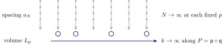
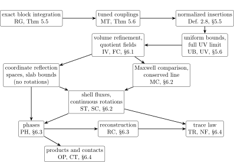
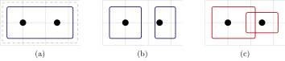
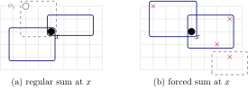
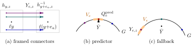
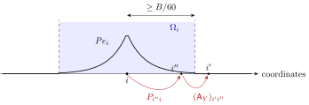
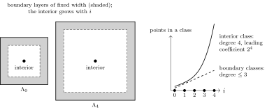

| The construction of four-dimensional
quantum Yang–Mills theory |
| Draft of November 12, 2026 |
|
For every closed subgroup \(G \subset U (n_G)\) with
simple nonabelian Lie algebra \(\mathfrak{g}\) and every positive
block penalty, the coefficient of the soft constraint that ties each
coarse link to a predictor computed from the fine transports, we
construct gauge-invariant local fields from four-dimensional Wilson
measures. Exact scale integration and tuning to a common endpoint
coupling give the full ultraviolet limit at fixed volume. Reflection
positivity and chessboard bounds give volume-uniform control;
compactness gives a limit along a refinement of any prescribed
strictly increasing volume sequence. The limit decomposes into phases,
each the Euclidean continuation of a faithful Wightman theory with
unique vacuum. The fields carry a conserved stress tensor, an operator
product expansion with spectator-independent coefficients and
phase-uniform remainders, and distributional extensions through
collisions. In a selected phase, the centered stress trace has a
two-point function \(G_{\Theta}\) with \(r^8 \log^2 (1 / r)
\hspace{0.17em} G_{\Theta} (r) \to 3 \dim_{\mathbb{R}}
\mathfrak{g}/
\pi^4\) as \(r \downarrow 0\), and on no interval \((0, \delta)\) does
\(G_{\Theta}\) agree with a finite Wick profile, a finite sum of
products of free mass-shell Laplace kernels. No mass gap, uniqueness
of the volume limit or phase, or independence from the block penalty
is proved.
This paper was written entirely by AI agents from
OpenAI's Lean code for the construction of four-dimensional quantum
Yang–Mills theory (commit 3456e5e). The Lean proof is
kernel-checked, with only the standard axioms. The agents compared
every numbered statement here with the Lean declarations used by the
main theorem; the correspondence table is published separately. The
prose arguments were written and reviewed by AI agents. They are not
machine-checked and have not been refereed by human mathematicians
(Section 1.1).
Contents
IThe theorem and the architecture
of its proof 5
1The result 5
Main result. 6
What is not claimed. 7
1.1Source of the result and of this text 7
1.2Earlier work and the method
7
1.3Reading guide 9
1.4Notation and conventions
9
2Definitions 10
2.1The gauge group and the Wilson measure 10
2.2Wilson families and their correlations 11
2.3Local fields 12
2.4Euclidean properties 14
2.5Field spaces and phases 14
Phases. 15
2.6Wightman theories 15
2.7The trace and product statements
16
3The main theorem 17
Order of choices. 18
What the theorem does not assert. 18
4Strategy of the proof
19
4.1Why the ultraviolet induction closes 19
One coupling to tune. 20
The scales. 20
The cancellations. 20
Large fields. 21
Growing block ratios. 22
4.2Tuning, uniqueness and convergence
22
4.3Rotations 23
4.4Phases and reconstruction
23
4.5The trace 24
5The renormalization group
25
5.1Scales and the block map
25
5.2The density and its norms
26
5.3The inductive step 29
5.4Multiscale trajectories 30
5.5Local fields under blocking
31
5.6Uniform bounds and the fixed-volume limit 32
6The continuum limit, stress, phases, trace and
products 33
6.1The volume limit and the field calculus 34
6.2Stress and rotations 35
6.3Phases and reconstruction
38
6.4Trace and products 39
7Deduction of the main theorem
43
8Correspondence with the formal statement
44
8.1Hierarchy data and the conditions Q0–Q6
44
8.2Formal conventions 46
8.3An averaged countertest 47
9Constants and order of choice
47
Index of notation 49
IIProofs
52
10Local polynomial fields
52
10.1Labels, test holonomies and the Taylor map
53
10.2Taylor-normalized sections
54
10.3Small-field bounds 56
10.4Auxiliary equation sections
57
Idea: free equations in an interacting theory. 58
Lattice symmetries. 58
10.5Example: the curvature square
61
The label. 61
Two lattice readings. 62
The insertion. 62
The field. 63
11Gauges and block integration
63
Induction scheme. 63
11.1The block kernel 64
Measurability and covariance of the block kernel. 67
11.2Free quadratic forms 67
11.3The stationary background and Gaussian
coordinates 72
Block norms. 73
Gaussian coordinates. 76
11.4Inverse, vertex and Ward estimates 77
The regulator. 77
The predictor contact term. 77
The compared operators. 78
Insertion bounds. 78
Vertices. 81
The stationary Ward identity. 83
11.5The local large-field energy
85
Square completion. 85
Selections. 87
11.6Sector Gaussian integration
91
The differentiated local integral.
94
Factors and their bounds. 94
The reference law and the transported integrand. 95
12Path actions and the one-loop coupling
100
12.1Curvature coordinates and the path action
101
12.2Fourth-order matching 102
A finite-dimensional model. 105
12.3The determinant comparison
106
12.4The one-loop coefficient
109
13Activities and the inductive step 112
Local terms and their norms. 113
Coefficient algebras. 115
Support exponents. 115
13.1The local expansion 115
13.2Local quadratic subtraction
129
13.3Forced fusion, activity bounds and the reset
131
The scalar reset. 135
13.4Continuity at fixed volume
137
13.5The Wilson start 138
13.6The specified recursion
140
13.7Weighted analytic estimates
142
What is held fixed. 142
14Trajectories, marked fields and ultraviolet
convergence 153
14.1Trajectories and tuning
154
14.2Marked fields and volume-uniform estimates
160
14.2.1One marked insertion 160
The curvature square at the terminal map.
165
14.2.2Chessboard seminorms and
replicated sources 167
Replicated sources. 169
14.2.3Negligible errors and local
matching 174
14.2.4Equation identities and
coefficient corrections 177
14.2.5Comparison with free fields
180
Comparison windows. 182
14.2.6Bounds for lattice differences
189
14.2.7Bounded approximations 192
14.3Full ultraviolet convergence
195
15Infinite volume and field calculus 200
15.1Volume limits 201
Symmetries of the limit. 201
15.2Separated cells and negligible errors 202
15.3Quotient fields 203
Example: the curvature square (continued).
205
15.4Euclidean properties 206
15.5Repeated reflected words
207
16Free fields, Ward identities and
rotations 208
16.1Free fields 209
16.2Lattice inputs 216
16.3Free comparison and the conserved line 221
16.4Coordinate reflection spaces and spectral
estimates 224
16.5Ward identities and rotations
230
17Phases and reconstruction
235
17.1Compression and phases 236
17.2Reconstruction 240
18The trace law and non-free comparisons
247
18.1Trace and spectrum 247
Comparison at prescribed radii. 249
Tensor coordinates. 251
Lattice stress current. 251
Block transfer. 252
Extraction of the scalar coefficient.
253
A stability lemma. 255
Transfer to the continuum. 256
Why a rate is needed. 256
18.2Precise non-free comparisons
262
19Products and contact subtractions 266
Inputs from the marked expansion and the quotient. 267
19.1Products and nested clusters
271
19.2Contact subtractions 284
References 291
IThe theorem and the
architecture of its proof
1The result
How can a lattice model give a quantum field theory in continuous
space-time? We answer this question for four-dimensional
Yang–Mills theory with a compact gauge group whose Lie algebra is
simple and nonabelian, starting from Wilson's lattice gauge theory [36]. On a finite periodic lattice the variables are group
elements attached to the links, and their law is an ordinary probability
measure. Let \(G \subset U (n_G)\) be a closed matrix group, \(s
\geqslant 1\) an integer and \(\Lambda_s = (\mathbb{Z}/
s\mathbb{Z})^4\). A configuration assigns \(U (y, a) \in G\) to the
positive link from the site \(y\) in the coordinate direction \(a\), and
\(U (y, a)^{- 1}\) to the reversed link. For \(\beta \in \mathbb{R}\),
| \(\displaystyle \
\begin{aligned}
U_{y
; ab} & = U (y, a) U (y + e_a, b) U (y + e_b, a)^{- 1} U (y, b)^{-
1},\\
E_s^{\text{W}} (U) & = \sum_{y \in \Lambda_s} \sum_{a < b}
\left( 1 - n_G^{-
1} \text{Re} \hspace{0.17em} \text{tr}
\hspace{0.17em} U_{y ; ab} \right),
\qquad d \mu_{s, \beta} (U) =
Z_{s, \beta}^{- 1} e^{- \beta E_s^{\text{W}}
(U)} \prod_{y, a} dh
(U (y, a)) \hspace{0.17em},
\end{aligned}\) |
(1.1) |
where \(dh\) is probability Haar measure and \(Z_{s, \beta}\) normalizes
the measure. The plaquette holonomy \(U_{y ; ab}\) is the transport
around an elementary square, and \(\beta\) penalizes its distance from
the identity. The problem is to choose the inverse coupling and the
local observables as functions of the lattice spacing so that their
correlations converge as the spacing tends to zero and the volume grows,
and to identify the limit.
Main result.
Let the real Lie algebra \(\mathfrak{g}\) of \(G\) be simple and
nonabelian; \(G\) need not be connected. Fix a block penalty
\(\textsf{b} > 0\): the coefficient of the soft constraint that ties
each coarse link to a predictor computed from the fine transports in
the block-spin kernel (Definition
5.1). We construct one
family of Wilson measures on tori of physical side \(L_p \uparrow
\infty\) with spacings \(a_N = D_N^{- 1} \downarrow 0\), together with
continuous gauge-invariant local insertions on fixed finite stencils,
all chosen before any sequence of volumes is prescribed. Its bare
inverse couplings satisfy the one-loop running law
| \(\displaystyle
\frac{\beta_{N, p}}{\log (1 / a_N)} \longrightarrow \kappa_G =
\frac{11
C_{\mathfrak{g}}}{24 \pi^2} \qquad (N \to \infty), \quad
\text{uniformly in }
p \hspace{0.17em}, \) |
(1.2) |
where \(C_{\mathfrak{g}}\) is the adjoint Casimir in the trace
normalization of Definition 2.1 (for \(SU (n)\), \(\kappa_G
= 11 n^2 / (12 \pi^2)\); Remark 2.2). The family has the
following properties; Theorem B in Section 3
states them precisely.
-
(i)
-
At each fixed volume, correlations of the insertions, smeared
against smooth tests supported away from coincident points and
inside one period cell, converge along the full sequence of
spacings.
-
(ii)
-
Every prescribed strictly increasing sequence \(\textsf{p}\) of
volume indices has a strictly increasing refinement \(\textsf{q}\)
such that, with \(P = \textsf{p} \circ \textsf{q}\) and the lattice
correlations \(C^{\text{lat}}_{N, p}\) of Definition 2.4,
| \(\displaystyle \lim_{k \to \infty}
(\lim_{N \to \infty} C^{\text{lat}}_{N, P (k)} (v ; f)) =
\int f
(x) S_n (v ; x) \hspace{0.17em} dx\) |
(1.3) |
for one table \(S\) of Euclidean correlation functions, symmetric
under permutations, translations and signed permutations of the
axes, reflection positive, smooth away from collisions and
polynomially bounded near them (properties E1–E7 of Section 2.4). One refinement serves all insertions and all tests.
-
(iii)
-
\(S = \int_{\textsf{X}} S^{\xi} \hspace{0.17em} d \nu (\xi)\) is an
average of phases over a compact metric space with a fully supported
probability measure, and each \(S^{\xi}\) is the Euclidean
continuation of a faithful Wightman theory with unique vacuum.
-
(iv)
-
The fields carry a conserved symmetric stress tensor, normalized by
its action on the other fields. In a selected phase, the two-point
function \(G_{\Theta}\) of the centered trace of this tensor
satisfies
| \(\displaystyle \lim_{r \downarrow 0}
r^8 \log^2 (1 / r) \hspace{0.17em} G_{\Theta} (r) =
\frac{3
\dim_{\mathbb{R}} \mathfrak{g}}{\pi^4} > 0 \hspace{0.17em},\) |
(1.4) |
and on no interval \((0, \delta)\) does \(G_{\Theta}\) agree with a
finite Wick profile, a finite sum of finite products of free
mass-shell Laplace kernels (Definition 2.18).
-
(v)
-
Nearby fields have an operator product expansion whose coefficients
depend neither on the other fields nor on the phase, with remainders
bounded uniformly in the phase. The correlations of each phase
extend across coincident points by an explicit subtraction of Taylor
jets.
Theorem B holds for every \(\textsf{b} > 0\). Section 8 states the existence theorem in the exact form of the formal
statement (Theorem A), which asks only for some positive
logarithmic slope, and deduces it from Theorem B.
What is not claimed.
The Clay problem [
18, §4] asks for existence and a
positive mass gap. The construction gives Wightman theories with
unique vacuum, one in each phase; no mass gap is proved or used, and
uniqueness of the vacuum gives no lower bound on the rest of the
energy spectrum. The infinite-volume limit, the phase space and the
selected phase are not shown to be unique, and independence from
\(\textsf{b}\) is not proved. Section
3 lists the
limitations next to Theorem
B.
1.1Source of the result and of this
text
The mathematical result is due to OpenAI's Lean construction at commit
3456e5e of the repository yang-mills-group/OpenAI-YM-20261028
[24]. Theorem B records that construction;
Section 8 states its top-level existence theorem and
deduces it. Three kinds of checking are involved, and they should be
kept apart.
-
The Lean kernel checks the formal proof. Its kernel-check
record reports no unproved placeholders in the proved theorem
and only propositional extensionality, classical choice and quotient
soundness as axioms.
-
AI agents compared every numbered statement of this text with the
Lean declarations used by the main theorem: hypotheses, definitions,
quantifier order, normalizations and conclusions, with usage
determined from the compiled dependencies. The correspondence table
is published separately; the source repository supplies a declaration-usage
table.
-
The prose arguments were written and reviewed by AI agents. They are
not machine-checked and have not been refereed by human
mathematicians.
A correct formal declaration does not by itself show that an English
statement has kept its hypotheses and quantifiers, or that a prose proof
proves that statement. This text was written entirely by AI agents under
human direction, with separate writing and checking of statements and
arguments, by the method described in How the manuscript is
written. The work is carried out in collaboration with Martin
Hairer's humanise-yang-mills project.
1.2Earlier work and the method
Table 1 lists, for the main mechanisms of the proof, the
closest earlier rigorous result and its use here. The comparison
concerns how these operations are combined; it assigns none of them a
new origin, and we make no priority claim for renormalization-group
principles or physical predictions.
| Mechanism |
Earlier result |
Use here |
| Nonlinear block averages, gauge fixing, stationary
backgrounds, marginal curvature-square extraction |
Bałaban: analytic stationary backgrounds [2, Theorem 1, Proposition 6]; symmetric block kernels
and the marginal analysis [3, pp. 252–254,
§§4–5]; large fields for small effective
couplings [4, Theorem 1, p. 355], physical
observables left open there (p. 356) |
Running couplings and local composite fields
controlled together on one tuned family |
| Four-dimensional ultraviolet construction |
Magnen–Rivasseau–Sénéor [21]: pure \(SU (2)\), trivial sector, regularized
axial gauge, fixed infrared cutoff; detailed convergence
deferred and infrared cutoff retained (p. 327), composite
observables set aside (p. 329) |
Infinite-volume gauge-invariant local fields, phases,
stress tensor and products |
| Disjoint polymers covering the large-field region;
selective exponentiation |
Gawędzki–Kupiainen, critical
\(\varphi^4_4\) [16, p. 212, (4.8), pp.
218–221] |
Forced activities covering all large-field sites |
| Polymer extraction, reblocking, analytic norms,
Gaussian integration |
Brydges–Yau [8,
§§1–2, pp. 378–384] |
Activities and their weighted norms |
| Clipped kinetic term, local quadratic terms, regular
errors, covering sum, exact coupling reset |
OpenAI's sigma-model papers: the exact map of [22, §5, pp. 38–55] and its adaptation [23, §3.3, pp. 23–28] |
The coordinates of the effective densities |
| Reflection positivity, transfer matrix, chessboard
estimates |
Osterwalder–Seiler [27], [31,
§2a, Theorem 2.1];
Fröhlich–Israel–Lieb–Simon [14,
§4, Theorems 4.1–4.2], lattice version for local
functions [31, Theorem 2.2] |
Volume-uniform bounds; reflection Hilbert spaces |
| Analytic continuation of Euclidean correlations |
Osterwalder–Schrader [25], with
the growth and boundary-value issues addressed in [26] |
Reconstruction in every phase, from slab and
distribution estimates; reflection positivity alone does not
give it |
| One-loop running |
Gross–Wilczek, Politzer [17, 28]; background-field coefficient [1,
§3.3] |
The slope \(\kappa_G\), on the exact block map |
| Operator products, trace anomaly, Taylor
subtraction |
Wilson [35, §II]; all-order
perturbative OPE in Euclidean Yang–Mills theory with
gauge-invariant closure and associativity [13];
Collins–Duncan–Joglekar [9,
(3.19)–(3.21)]; Brunetti–Fredenhagen [7,
§5.2] |
A nonperturbative OPE at each finite truncation,
uniform in the phase; the trace law; contact extensions |
|
|
Table 1. Mechanisms, earlier results and their
use here.
|
The renormalization group is organized as in the method of Bauerschmidt,
Brydges and Slade [6]: an explicitly defined map, a
finite-dimensional flow of couplings, norms in which the remaining
coordinate contracts, and a global trajectory with a tuned initial
parameter. What requires proof here is the compatibility of the one-loop
slope with the exact gauge block map, the coupling reset and the tuning
to a common endpoint, followed by continuum identifications on one
family: control of composite fields, restoration of rotations through
stress-tensor fluxes, the trace law through all radii and product bounds
uniform over phases.
1.3Reading guide
Section 2 defines the objects needed to state Theorem B, which is Section 3. Section 4
explains the route of the proof and the mechanisms that make it work,
with a dependency map (Figure 2). Sections 5
and 6 state the principal results, each with the idea of
its proof, and Section 7 deduces Theorem B.
Part II gives the proofs. Table 2 lists the principal
results; their tags appear in statement titles. Section 9
records the order in which constants are chosen. A first reading can
skip the coordinates of the effective densities (Section 5.2),
the marked decomposition (Section 5.5) and Section 9.
The index of notation follows the appendices.
| Tag |
Statement |
Part I |
Proof in Part II |
| RG |
Exact integration of one scale and coupling
drift |
Thm 5.5 |
Sections 11–13 |
| MT |
Common endpoint coupling and running slope |
Thm 5.6 |
Section 14.1 |
| UB |
Volume-uniform bounds on lattice differences |
Prop 5.8 |
Section 14.2 |
| UV |
Full fixed-volume ultraviolet limit |
Thm 5.9 |
Section 14.3 |
| IV |
Volume refinement and Euclidean properties |
Thm 6.1 |
Section 15 |
| FC |
Inclusions, derivatives and Maxwell dimensions |
Prop 6.4 |
Lemma 15.5 |
| MC |
Maxwell comparison at short distances |
Prop 6.7 |
Lemma 16.8 |
| ST |
Conserved stress tensor and its shell fluxes |
Thm 6.10 |
Lemmas 16.17–16.18 |
| SC |
Differentiated comparison with stress insertions |
Prop 6.11 |
Lemma 16.19 |
| PH |
Phase decomposition on the same fields |
Thm 6.13 |
Section 17.1 |
| RC |
Wightman reconstruction in every phase |
Thm 6.16 |
Section 17.2 |
| TR |
All-radii law for the centered stress trace |
Thm 6.18 |
Section 18.1 |
| NF |
Exclusion of finite Wick profiles |
Prop 6.19 |
Lemma 18.10 |
| OP |
Operator product expansion with error bounds |
Thm 6.20 |
Section 19.1 |
| CT |
Extensions through collision diagonals |
Thm 6.21 |
Section 19.2 |
|
|
Table 2. Principal results and their proofs.
|
1.4Notation and conventions
Throughout, \(\mathbb{N}= \{0, 1, \ldots\}\), coordinate indices run
from \(1\) to \(4\), \(e_a\) is the \(a\)th coordinate vector, and time
is the fourth coordinate. For the relativistic statements write
\(\displaystyle \textsf{m} (x) = (x^4)^2 - | \vec{x} |^2, \qquad
\bar{V}_+ = \{\mathbf{p}: |
\vec{\mathbf{p}} | \leqslant \mathbf{p}^4 \}
\hspace{0.17em} .\)
Inner products are antilinear in the first variable, and spacetime
integrals use Lebesgue measure. Correlations of arity zero are included;
empty sums are zero and empty products are one. The group \(H_4\)
consists of the signed permutation matrices, and
\(\textsf{s}_a^{\text{refl}}\) denotes reflection in the \(a\)th
coordinate.
2Definitions
This section defines the objects needed to state the main theorem: the
gauge group and the Wilson measure, families of lattice theories and the
convergence of their separated correlations, the local fields, the
Euclidean properties of the limit, its field spaces, Wightman theories,
and the quantities of the trace and product statements. The
renormalization-group objects that construct the family are defined in
Section 5, where they are used.
2.1The gauge group and the Wilson
measure
The matrix normalization fixes both the Wilson energy and the
coefficient of the logarithmic coupling flow.
Definition 2.1.
(Gauge normalization)
Fix \(n_G \geqslant 1\) and a closed
subgroup \(G \subset U (n_G)\) with simple nonabelian real Lie
algebra
\(\displaystyle \mathfrak{g}= \{X \in M_{n_G} (\mathbb{C}) : \exp (tX)
\in G \text{ for every
} t \in \mathbb{R}\}, \qquad \langle X, Y
\rangle_{\mathfrak{g}} = - n_G^{- 1}
\text{Re} \hspace{0.17em}
\text{tr} (XY) \hspace{0.17em} .\)
For an orthonormal basis \((e_{\alpha}^{\mathfrak{g}})\), put
\(\displaystyle \begin{array}{rlll}
d_{\mathfrak{g}} & =
\dim_{\mathbb{R}} \mathfrak{g}, & C_{\mathfrak{g}} & =
-
d_{\mathfrak{g}}^{- 1} \sum_{\alpha} \text{tr}_{\mathfrak{g}}
(\text{ad}
(e_{\alpha}^{\mathfrak{g}})^2),\\
b_0 & = \frac{11
C_{\mathfrak{g}}}{48 \pi^2}, & \kappa_G & = 2 b_0
\hspace{0.17em}
.
\end{array}\)
Here \(\text{ad} (X) Y = [X, Y]\) and \(\text{tr}_{\mathfrak{g}}\) is
the real operator trace on \(\mathfrak{g}\). Simplicity means
\([\mathfrak{g}, \mathfrak{g}] \ne 0\) and no proper nonzero real ideal;
connectedness of \(G\) is not assumed. The adjoint maps are skew-adjoint
for this metric, so nonabelianity gives \(C_{\mathfrak{g}} > 0\) and
\(\kappa_G > 0\). For \(u \in G\) the plaquette energy and the
normalized chord are
| \(\displaystyle \text{pr} (u) = 1 -
n_G^{- 1} \text{Re} \hspace{0.17em} \text{tr}
\hspace{0.17em} u,
\qquad \text{ch} (u) = n_G^{- 1 / 2} \|u - 1\|_{\text{F}},
\qquad
\text{ch} (u)^2 = 2 \text{pr} (u) \hspace{0.17em} ;\) |
(2.1) |
both are invariant under conjugation and inversion, and the chord
measures the distance of a plaquette holonomy from the identity.
Remark 2.2. (The
normalization for \(SU (n)\)) For \(G = SU
(n)\) in its defining representation, \(d_{\mathfrak{g}} = n^2 - 1\),
\(C_{\mathfrak{g}} = 2 n^2\) and \(\kappa_G = 11 n^2 / (12 \pi^2)\).
With the conventional Wilson coupling \(\beta = 2 n / g^2\), the running
law (1.2) reads \(g^{- 2} (a) \sim
(11 n / 24 \pi^2) \log (1 / a)\), the leading behaviour of the one-loop
law \(\mu \hspace{0.17em} dg / d \mu = - (11 n / 48 \pi^2) g^3\) with
\(\mu = 1 / a\).
Definition 2.3.
(Wilson measure) For an integer \(s \geqslant 1\) and \(\beta \in
\mathbb{R}\), \(\mu_{s, \beta}\) is the probability measure (1.1) on the configurations of \(\Lambda_s
= (\mathbb{Z}/ s\mathbb{Z})^4\), with plaquette holonomies \(U_{y ;
ab}\), Wilson energy \(E_s^{\text{W}} (U) = \sum_y \sum_{a < b}
\text{pr} (U_{y ; ab})\) and normalizing constant
\(\displaystyle Z_{s, \beta} = \int e^{- \beta E_s^{\text{W}} (U)}
\prod_{y, a} dh (U (y, a))
\hspace{0.17em} .\)
The integrand of \(Z_{s, \beta}\) is continuous and strictly positive on
the compact configuration space, so \(0 < Z_{s, \beta} < \infty\). A
site gauge transformation \(\gamma_{\text{g}} : \Lambda_s \to G\) acts
by \(U^{\gamma_{\text{g}}} (y, a) = \gamma_{\text{g}} (y) U (y,
a)
\gamma_{\text{g}} (y + e_a)^{- 1}\); it changes each plaquette
holonomy by conjugation at its base point, so the energy is gauge
invariant, and invariance of Haar measure under left and right
multiplication makes the measure gauge invariant. The measure is also
invariant under the lattice isometries \(x \mapsto hx + b\), \(h \in
H_4\), which transport links and invert reversed ones (Section 10.4).
2.2Wilson families and
their correlations
A Wilson family, indexed by \(N, p \in \mathbb{N}\), consists of
strictly increasing positive integer sequences \((D_N)\) and \((L_p)\),
real couplings \(\beta_{N, p}\), a set \(\mathcal{T}\) of insertion
labels, and complex insertions \(I_{N, p} (v, y ; U)\), functions of
the configurations on \(\Lambda_{L_p D_N}\) for \(v \in \mathcal{T}\)
and sites \(y\). The index \(N\) controls the spacing and \(p\) the
physical volume:
| \(\displaystyle a_N = D_N^{- 1}, \qquad
\mu_{N, p} = \mu_{L_p D_N, \beta_{N, p}}, \qquad
\hat{y} = a_N (r_{L_p
D_N} (y^a))_{a = 1}^4 \hspace{0.17em},\) |
(2.2) |
where \(r_s (j)\) is the integer representative of \(j \in \mathbb{Z}/
s\mathbb{Z}\) in \((- s / 2, s / 2]\). The lattice has \(L_p D_N\) sites
per side at physical distance \(a_N\), so its physical side is \(L_p\);
\(\hat{y}\) places a site in the centered period cell.
Definition 2.4.
(Lattice moments)
For \(v \in \mathcal{T}^n\), sites \(y
\in \Lambda_{L_p D_N}^n\) and a test \(f : (\mathbb{R}^4)^n \to
\mathbb{C}\), define
\(\displaystyle \begin{array}{rl}
M^{\text{lat}}_{N, p} (v ; y) &
= \int \prod_{i = 1}^n I_{N, p} (v_i, y_i ;
U) \hspace{0.17em} d
\mu_{N, p} (U),\\
C^{\text{lat}}_{N, p} (v ; f) & = a_N^{4 n}
\sum_{y \in \Lambda_{L_p
D_N}^n} f (\hat{y}) M^{\text{lat}}_{N, p}
(v ; y) \hspace{0.17em} .
\end{array}\)
The moment is the expectation of a product of insertions; the smeared
correlation is its Riemann sum against a test, the factor \(a_N^{4 n}\)
being the lattice volume element. The main theorem concerns a family
with the following regularity.
Definition 2.5.
(Q1. Regular Wilson family)
A Wilson family is regular if (a) each
insertion \(U \mapsto I_{N, p} (v, y ; U)\) is continuous and gauge
invariant; (b) for each \(v \in \mathcal{T}\) there is a finite
\(\Sigma_v \subset \mathbb{Z}^4\), independent of \(N, p, y\), such
that \(I_{N, p} (v, y ; U)\) depends only on the links with both
endpoints in \(y + \Sigma_v\) modulo \(L_p D_N\); (c) for some
\(b_{\ast} > 0\), \(\beta_{N, p} / \log (1 / a_N) \to b_{\ast}\) as
\(N \to \infty\), uniformly in \(p\).
The physical diameter of the stencil \(y + \Sigma_v\) tends to zero with
\(a_N\), so the insertions are local. Condition (c) is a logarithmic
growth law for the bare inverse coupling, uniform in the volume.
Correlations are tested on separated configurations. For positions in
\((\mathbb{R}^4)^n\) put
\(\displaystyle \text{Conf}_n = \{x : x_i \ne x_j \text{ for } i \ne
j\}, \qquad
\text{sep}_{\infty} (x) = \min_{i \ne j} |x_i - x_j
|_{\infty}
\hspace{0.17em},\)
with \(\text{sep}_{\infty} (x) = + \infty\) for \(n \leqslant 1\). A
separated test is a smooth function on \((\mathbb{R}^4)^n\)
with compact closed support in \(\text{Conf}_n\); it need not be a
product of one-point tests. It is \(p\)-admissible, or
supported inside volume \(p\), if its support lies in \(((- L_p / 2, L_p
/ 2)^4)^n\). The following definition keeps the order of the two limits
explicit.
Definition 2.6.
(Ordered convergence)
A Wilson family converges to kernels
\(K\) along \(P : \mathbb{N} \to \mathbb{N}\) if, for every \(n\), \(v
\in \mathcal{T}^n\) and separated test \(f\), the test is eventually
\(P (k)\)-admissible and there are numbers \(C_p^{\text{UV}} (v ;
f)\) with
\(\displaystyle \begin{array}{rlll}
C^{\text{lat}}_{N, p} (v ; f)
& \longrightarrow C_p^{\text{UV}} (v ; f)
\quad (N \to \infty) &
& \text{at every admissible } p,\\
C_{P (k)}^{\text{UV}} (v ; f)
& \longrightarrow \int f (x) K_n (v ; x)
\hspace{0.17em} dx
\quad (k \to \infty) \hspace{0.17em} . & &
\end{array}\)
The inner limit uses the full sequence of spacings at every volume
containing the support of the test; only the outer limit runs along
\(P\). At volumes not containing the support, \(C_p^{\text{UV}}\) is
unconstrained. In Theorem B the same \(P\) serves every
arity, list of labels and test (Figure 1).
|

|
|
Figure 1. The two limits of Definition 2.6. At every fixed volume the full sequence of
spacings is used (vertical arrows); the volume limit then runs
along the retained indices \(P (k)\) (circled), chosen once for
all fields and tests.
|
2.3Local fields
Local fields are labelled by invariant polynomials in the Taylor
coefficients of a connection. The labels use radial, or
Fock–Schwinger, gauge, in which the radial component of the
connection vanishes. In this gauge a smooth connection satisfies
\(\mathcal{A}_a (x) = \int_0^1 t \hspace{0.17em} x^b F_{ba} (tx)
\hspace{0.17em} dt\), so its homogeneous part of degree \(k + 1\) is
determined by the \(k\)th Taylor coefficients of the curvature at the
origin.
Definition 2.7.
(Polynomial labels)
Let \(\mathcal{J}\) consist of formal
\(\mathfrak{g}\)-valued arrays \(\mathcal{A}_a (x) = \sum_{k \geqslant
0} \mathcal{A}_{k, a} (x)\), with \(\mathcal{A}_{k, a}\) homogeneous
of degree \(k + 1\) and \(\sum_a x^a \mathcal{A}_{k, a} (x) = 0\). A
coordinate of \(\mathcal{A}_k\) has bidegree \((k + 2, 1)\):
engineering weight \(k + 2\) and factor count one. Put
\(\displaystyle V_d =\mathbb{C} [\mathcal{J}]^{\text{Ad}
(G)}_{\text{weight} \leqslant d}
\hspace{0.17em},\)
with fixed bihomogeneous bases \(b_{d, i}\) of bidegree \((w_i,
k_i)\), the supremum coefficient norm, conjugation and the induced
\(H_4\) action.
Curvature has weight two and each derivative adds one; for instance the
curvature square \(\mathcal{O}_{F^2} = \frac{1}{4} \sum_{a, b, \alpha}
F^{\alpha}_{ab}
F^{\alpha}_{ab}\) has a label of bidegree \((4, 2)\).
Three gradings play different roles below:
-
the engineering weight \(w\) fixes the power of the spacing in the
Taylor normalization (2.4);
-
the factor count \(k\) fixes the scaling by the small-field
threshold, through the operator \(\textsf{N} b_{d, i} = k_i b_{d,
i}\) and \(t^{\textsf{N}} b_{d, i} = t^{k_i} b_{d, i}\);
-
the degree \(d\) of the space \(V_d\) fixes the factor \(\ell_m^d\)
in the transfer of insertions under blocking and the physical
prefactor \(a_N^{- d}\).
A polynomial of weight at most \(d \leqslant e\) lies in \(V_d\) and in
\(V_e\); its two insertions differ, since the normalization below
depends on the degree.
Lattice holonomies are compared with smooth connection jets. For
\(\textsf{j} = (\mathcal{A}_k)_k \in \mathcal{J}\), put
\(\mathcal{A}^{\leqslant d} = \sum_{k + 2 \leqslant d} \mathcal{A}_k\).
The test holonomies at spacing \(h_{\text{lat}}\) are, on a positive
link \((y, a)\) with \(y \in \mathbb{Z}^4\),
| \(\displaystyle U (h_{\text{lat}},
\textsf{j}) (y, a) = u (1), \qquad u' (t) = u (t)
h_{\text{lat}}
\mathcal{A}_a^{\leqslant d} (h_{\text{lat}} (y + te_a)),
\qquad u (0)
= 1_G \hspace{0.17em},\) |
(2.3) |
and the jet dilation is \(\text{sc}_{h_{\text{lat}}} \textsf{j} =
(h_{\text{lat}}^{k + 2}
\mathcal{A}_k)_k\), so that \(U (h_{\text{lat}},
\textsf{j}) = U (1, \text{sc}_{h_{\text{lat}}} \textsf{j})\). For a
function \(O\) of the links near the origin, its Taylor map
\(\text{Tay}_d \hspace{0.17em} O\) is the part of weight at most \(d\)
of the Taylor series at \(\textsf{j} = 0\) of \(\textsf{j} \mapsto O (U
(1, \textsf{j}))\). Lemma 10.2 constructs a local
section \(P_d^{\text{loc}} [\mathbf{c}] (y ; U)\), linear in
\(\mathbf{c} \in V_d\) and polynomial in the real and imaginary parts of
the link entries on a fixed finite stencil \(y + \Sigma_d\); it is gauge
invariant, commutes with complex conjugation, is \(H_4\) covariant,
sends \(\boldsymbol{1}\) to one, and satisfies, for \(0 \leqslant q
\leqslant d\),
| \(\displaystyle \left.
\frac{d^q}{dh_{\text{lat}}^q} P_d^{\text{loc}} [\mathbf{c}] (0 ;
U
(h_{\text{lat}}, \textsf{j})) \right|_{h_{\text{lat}} = 0} =
\left.
\frac{d^q}{dh_{\text{lat}}^q}
\mathbf{c}(\text{sc}_{h_{\text{lat}}}
\textsf{j})
\right|_{h_{\text{lat}} = 0} \hspace{0.17em} .\) |
(2.4) |
Equivalently, \(\text{Tay}_d P_d^{\text{loc}} [\mathbf{c}]
=\mathbf{c}\): the local section is a right inverse of the Taylor map,
which explains its name. A homogeneous label of weight \(w\) specifies
the coefficient of \(h_{\text{lat}}^w\).
An insertion label is a pair \(v = (d, \mathbf{c})\) with \(d
\in \mathbb{N}\) and \(\mathbf{c} \in V_d\); the set of insertion labels
is \(\mathcal{T}= \bigsqcup_d V_d\). The insertions of the construction
are normalized at a fixed physical scale. Section 5 fixes,
for each \(d\), a reference level \(m_{\text{ref}} (d)\), the
small-field threshold \(t_N\) at the cutoff (5.2),
and, along the trajectories of Theorem 5.6, an invertible
linear map \(\textsf{Z}_{N, p, d}\) of \(V_d\), the terminal map: it
sends a coefficient vector given at the cutoff to the coefficient vector
of the blocked insertion at level \(m_{\text{ref}} (d)\) (Section 5.5). For \(N < m_{\text{ref}} (d)\) it is a fixed invertible
map.
Definition 2.8.
(Renormalized insertions)
For every \(N, p\), \((d, \mathbf{c}) \in
\mathcal{T}\) and site \(y\), put
\(\displaystyle I_{N, p} ((d, \mathbf{c}), y ; U) = O^{(d)}_{N, p}
(\mathbf{c}, y ; U) =
a_N^{- d} P_d^{\text{loc}} [t_N^{- \textsf{N}}
\textsf{Z}_{N, p, d}^{- 1}
\mathbf{c}] (y ; U) \hspace{0.17em} .\)
The unit coefficient is \(\mathbf{u}_d = a_{m_{\text{ref}} (d)}^d
\boldsymbol{1}\).
The inverse terminal map makes the transferred coefficient equal to the
prescribed \(\mathbf{c}\) at the reference level, so \(\mathbf{c}\) is
specified at the fixed physical scale \(a_{m_{\text{ref}} (d)}\), in
that level's lattice units; \(t_N^{- \textsf{N}}\) measures each factor
in units of the small-field threshold, and \(a_N^{- d}\) converts to
physical units. Because blocking can mix labels of different weight
within \(V_d\), the normalization is an invertible linear map of \(V_d\)
rather than a factor for each label. As a first check, the insertion of
\(\mathbf{u}_d\) is the constant one for \(N \geqslant m_{\text{ref}}
(d)\): the terminal map sends \(a_N^d \boldsymbol{1}\) to
\(a_{m_{\text{ref}} (d)}^d \boldsymbol{1}\) (Lemma 14.8),
\(t_N^{- \textsf{N}} \boldsymbol{1}=\boldsymbol{1}\), and the section
sends \(\boldsymbol{1}\) to one. Part II follows the curvature square
through these maps (Section 10.5).
2.4Euclidean properties
A table, or family of Schwinger functions, assigns to each
degree list \((d_i)_{i = 1}^n\) and \(x \in \text{Conf}_n\) a complex
multilinear function \(S_n (c ; x)\) of \(c_i \in V_{d_i}\). For \(v_i
= (d_i, c_i)\) write \(S_n (v ; x)\), and for the word \(w = (v_i
(x_i))_{i = 1}^n\) write \(S (w)\); the product of words concatenates
their lists. Conjugation and \(H_4\) act on labels as in Definition 2.7, and \(h \in H_4\) acts on positions linearly.
Definition 2.9.
(E1–E3. Euclidean symmetries)
For every \(n\), degree list, \(c\) and
\(x \in \text{Conf}_n\):
-
(E1)
-
\(S_0 = 1\), \(S_n (c_{\pi} ; x_{\pi}) = S_n (c ;
x)\) for every permutation \(\pi\) of the slots, and \(S_{n + 1}
(\mathbf{u}_d, c ; x_0, x) = S_n (c ; x)\);
-
(E2)
-
\(S_n (hc ; hx) = S_n (c ; x)\) for \(h \in H_4\),
and \(S_n (\bar{c} ; x) = \overline{S_n (c ; x)}\);
-
(E3)
-
\(S_n (c ; x + z) = S_n (c ; x)\) for \(z \in
\mathbb{R}^4\), with \(x + z = (x_i + z)_i\).
A word is positive-side for the axis \(a\) when all its positions have
positive \(a\)th coordinate. For a word \(w\), let \(\theta_a w =
\textsf{s}_a^{\text{refl}} (w^{\ast})\), where \(w^{\ast}\) reverses the
word and applies conjugation to its labels, and
\(\textsf{s}_a^{\text{refl}}\) reflects positions and acts on labels
through \(H_4\).
Definition 2.10.
(E4–E5. Reflection positivity)
-
(E4)
-
For every axis \(a\), positive-side separated words
\(w_i\) and \(z_i \in \mathbb{C}\), \(\sum_{i, j} \bar{z}_i z_j
S (\theta_a (w_i) \hspace{0.17em} w_j) \geqslant 0\).
-
(E5)
-
The same positivity holds for finite sums of words
smeared against joint smooth compactly supported tests on
positive-side separated configurations, and every mixed pairing
is absolutely integrable.
For a fixed label list, \(D_x^k\) is the \(k\)th Fréchet
derivative in the positions, with the product Euclidean norm. The last
condition controls the approach to collisions uniformly over
translations and over configurations of large diameter.
Definition 2.11.
(E6–E7. Euclidean regularity)
-
(E6)
-
Each \(S_n (c ; \cdot)\) is smooth on
\(\text{Conf}_n\).
-
(E7)
-
For all \(n, d, c, k\) there are \(C (n, d, c, k)
\geqslant 0\) and an integer \(A (n, d, c, k) \geqslant 0\) such
that \(\|D_x^k S_n (c ; x)\| \leqslant Cr^{- A}\) whenever \(0 <
r \leqslant 1\) and \(\text{sep}_{\infty} (x) \geqslant r\).
2.5Field spaces and phases
A field is described in three successive ways. An insertion label \((d,
c)\) specifies a lattice insertion. Its class \([c]\) identifies labels
with the same separated correlations: two labels represent the same
field when every spectator sees the same answer. The response \(\iota_d
[c]\) records those correlations against every spectator list and places
fields of all degrees in one space. Write \(v (x) = (v_1 (x_1), \ldots,
v_n (x_n))\) for a spectator word.
Definition 2.12.
(Observable fields)
For a table \(S\) put
\(\displaystyle \begin{array}{rl}
\mathcal{N}_d (S) & = \{ c \in V_d
: S_{n + 1} (c (x_0), v (x)) = 0 \text{
for every } n, v \text{ and
} (x_0, x) \in \text{Conf}_{n + 1} \},\\
F_d & = V_d /\mathcal{N}_d
(S), \qquad \overline{[c]} = [\bar{c}], \qquad h
[c] = [hc] \quad
(h \in H_4),\\
\iota_d [c] (v ; x_0, x) & = S_{n + 1} (c (x_0), v
(x)), \qquad
\mathcal{L}= \text{span} \bigcup_d \iota_d F_d
\hspace{0.17em},
\end{array}\)
with conjugation-invariant quotient norms on the finite-dimensional
spaces \(F_d\).
By E2, \(\mathcal{N}_d (S)\) is invariant under conjugation
and \(H_4\), so both actions on \(F_d\) are well defined. By E1,
correlations do not depend on representatives in any slot: for
\(\boldsymbol{A}= ([c_1], \ldots, [c_n])\) put \(S_n (\boldsymbol{A};
x) = S_n (c ; x)\). The unit field is \(\boldsymbol{1}_d =
[\mathbf{u}_d]\). Write \(\mathbb{F}= \bigsqcup_d F_d\), \(\deg (d, A) =
d\) and \(\iota (d, A) = \iota_d A\); the elements of \(\mathcal{L}\)
are the field labels.
Phases.
The main theorem writes the limiting table as an average \(S =
\int_{\textsf{X}} S^{\xi} \hspace{0.17em} d \nu (\xi)\) of tables
\(S^{\xi}\) on the same field spaces, over a compact metric space
\(\textsf{X}\) with a fully supported probability measure \(\nu\); the
points \(\xi\) are the phases. A phase is not a set of configurations:
Section
6.3 obtains the phases as the characters of a
commutative algebra of operators.
2.6Wightman theories
Write \(\mathcal{S}_n =\mathcal{S} (\mathbb{R}^{4 n} ; \mathbb{C})\) for
the Schwartz space and \(\mathcal{S}=\mathcal{S}_1\). Let \(\mathcal{P}=
SO^+ (1, 3) \ltimes \mathbb{R}^4\) be the proper orthochronous
Poincaré group, where \(SO^+ (1, 3)\) consists of the linear maps
of determinant one that preserve \(\textsf{m}\) and \(\bar{V}_+\); write
\(\gamma = (\Lambda_{\gamma}, z_{\gamma})\) and \((\gamma \cdot f) (x) =
f (\Lambda_{\gamma}^{- 1} (x - z_{\gamma}))\).
Definition 2.13.
(Relativistic datum)
A relativistic datum consists
of a complex Hilbert space \(\mathcal{H}\), a complex vector space
\(\mathcal{L}\) of field labels, a linear subspace \(\mathcal{D}
\subset \mathcal{H}\), a vacuum \(\Omega \in \mathcal{D}\), and fields
\(\Phi (\ell, f) : \mathcal{D} \to \mathcal{D}\), linear operators
that are complex bilinear in \((\ell, f) \in \mathcal{L} \times
\mathcal{S}\); an antilinear map \(\ell \mapsto \ell^{\ast}\);
strongly continuous unitary translations \(\textsf{T} (z)\), \(z \in
\mathbb{R}^4\); a Borel projection-valued measure \(\textsf{E}\) on
\(\mathbb{R}^4\) with finite diagonal measures \(\mu_{\psi} (B) =
\langle \psi, \textsf{E} (B) \psi \rangle\); a strongly continuous
unitary representation \(\textsf{U}\) of \(\mathcal{P}\) with
\(\textsf{U} (1, z) = \textsf{T} (z)\); and linear bijections
\(\rho_{\text{lab}} (\gamma)\) of \(\mathcal{L}\).
Definition 2.14.
(Wightman theory)
A relativistic datum is a Wightman theory
if:
-
(W0)
-
\(\langle \psi, \textsf{T} (z) \psi \rangle = \int
e^{i\mathbf{p} \cdot z}
\hspace{0.17em} d \mu_{\psi}
(\mathbf{p})\) for all \(\psi, z\), with the Euclidean pairing;
\(\textsf{E} (\mathbb{R}^4 \setminus \bar{V}_+) = 0\); and every
vector fixed by all translations lies in \(\mathbb{C} \Omega\).
-
(W1)
-
\(\| \Omega \| = 1\); \(\mathcal{D}\) is dense and
spanned by the vectors \(\Phi (\ell_1, f_1) \cdots \Phi (\ell_k,
f_k) \Omega\), \(k \geqslant 0\); each \(f \mapsto \Phi (\ell,
f) \psi\) is continuous from \(\mathcal{S}\) to \(\mathcal{H}\);
and \(\langle \Phi (\ell, f) \psi, \chi \rangle = \langle \psi,
\Phi (\ell^{\ast},
\bar{f}) \chi \rangle\) for \(\psi, \chi \in
\mathcal{D}\).
-
(W2)
-
\(\rho_{\text{lab}}\) is a representation;
\(\textsf{U} (\gamma) \mathcal{D} \subset \mathcal{D}\),
\(\textsf{U} (\gamma) \Omega = \Omega\) and \(\textsf{U}
(\gamma) \Phi (\ell, f) \psi = \Phi (\rho_{\text{lab}}
(\gamma)
\ell, \gamma \cdot f) \textsf{U} (\gamma) \psi\) for
\(\psi \in \mathcal{D}\).
-
(W3)
-
\([\Phi (\ell, f), \Phi (\ell', h)] \psi = 0\) for
\(\psi \in \mathcal{D}\) whenever \(\textsf{m} (x - y) < 0\) for
all \(x \in \text{supp} \hspace{0.17em} f\), \(y \in \text{supp}
\hspace{0.17em} h\).
Definition 2.15.
(Faithful labels)
The labels are faithful if, for every
nonzero \(\ell \in \mathcal{L}\), some \(f \in \mathcal{S}\) has
\(\Phi (\ell, f) \ne 0\).
Reconstruction uses one function in two limits: at imaginary times it
equals the Euclidean correlation, and approaching real times from the
ordered tube gives the Wightman distributions. We first specify the
continuation, then its boundary value.
Definition 2.16.
(Ordered-time continuation)
For a phase \(\xi\), put \(\mathcal{Z}_n
= \{z \in \mathbb{C}^n : \text{Im} \hspace{0.17em} z_1 < \cdots
<
\text{Im} \hspace{0.17em} z_n \}\). A continuation
\(\textsf{F}_n^{\xi} (\boldsymbol{A}; z, \vec{x})\), for
\(\boldsymbol{A} \in \mathbb{F}^n\), is holomorphic in \(z \in
\mathcal{Z}_n\) at each fixed real spatial configuration and
satisfies
\(\displaystyle \textsf{F}_n^{\xi} (\boldsymbol{A}; (it_i)_i,
\vec{x}) = S_n^{\xi}
(\boldsymbol{A}; (\vec{x}_i, t_i)_i) \qquad
(t_1 < \cdots < t_n)
\hspace{0.17em} .\)
Definition 2.17.
(Boundary condition)
For a phase \(\xi\), a relativistic datum
\((\mathcal{H}_{\xi}, \mathcal{L}, \mathcal{D}_{\xi}, \Omega_{\xi},
\Phi_{\xi},
\ldots)\), the maps \(\iota_d\) and a continuation
\(\textsf{F}_n^{\xi}\), require, for every \(n\), \(\boldsymbol{A} \in
\mathbb{F}^n\), real \(h_1 < \cdots < h_n\) and \(f_i \in
\mathcal{S}\), that the integrand below be integrable for every \(r >
0\) and
\(\displaystyle \begin{array}{l}
\lim_{r \downarrow 0} \int
\textsf{F}_n^{\xi} (\boldsymbol{A}; (x_i^4 +
irh_i)_i,
(\vec{x}_i)_i) \prod_i f_i (x_i) \hspace{0.17em} dx\\
= \langle
\Omega_{\xi}, \Phi_{\xi} (\iota (A_1), f_1) \cdots \Phi_{\xi}
(\iota (A_n), f_n) \Omega_{\xi} \rangle \hspace{0.17em}
.
\end{array}\)
A phase \(S^{\xi}\) is the Euclidean continuation of a Wightman
theory when continuations satisfying Definitions 2.16 and
2.17 exist for that theory and the response maps of
Definition 2.12.
2.7The trace and product
statements
For a phase \(\xi\) and a field \(\Theta \in F_4\), the time-axis
two-point function is
\(\displaystyle G_{\Theta} (r) = S_2^{\xi} (\Theta, \Theta ; - re_4 /
2, re_4 / 2) \qquad (r
> 0) \hspace{0.17em} .\)
The trace law is compared with free fields through the following class.
Fix \(m_{\text{sh}} \geqslant 0\), integers \(j_h, k_E \geqslant 0\) and
a continuous real \(h_{\text{mom}}\) on \(\mathbb{R}^3\) with
\(h_{\text{mom}} (t\mathbf{k}) = t^{j_h} h_{\text{mom}} (\mathbf{k})\)
for \(t > 0\).
Definition 2.18.
(Finite Wick profiles)
Put \(\omega_{m_{\text{sh}}} (\mathbf{k})
= \sqrt{m_{\text{sh}}^2 + |\mathbf{k}|^2}\) and, for \(r > 0\),
\(\displaystyle K_{m_{\text{sh}}, k_E, h_{\text{mom}}} (r) =
\int_{\mathbb{R}^3}
\frac{\omega_{m_{\text{sh}}} (\mathbf{k})^{k_E}
h_{\text{mom}} (\mathbf{k})}{2
\omega_{m_{\text{sh}}} (\mathbf{k})}
e^{- r \omega_{m_{\text{sh}}}
(\mathbf{k})} \hspace{0.17em} d^3
\mathbf{k} \hspace{0.17em} .\)
A finite Wick profile is a function \(W_{\text{Wick}} (r) = \sum_{i
= 1}^N c_i \prod_{j = 1}^{n_i} K_{m_{ij},
k_{ij}, h_{ij}} (r)\), \(r
> 0\), with \(c_i \in \mathbb{C}\) and finitely many terms and factors
of this kind; empty products are one.
The momentum integrals converge absolutely for \(r > 0\). For a free
scalar field of mass \(m_{\text{sh}}\) the time-axis two-point function
is \((2 \pi)^{- 3} K_{m_{\text{sh}}, 0, 1} (r)\); derivatives give
momentum factors, and Wick contractions give finite sums of products at
the same radius.
The product expansion replaces a cluster of nearby fields by fields at
one point, inside correlations with distant spectators. For finite index
sets \(I_{\text{cl}}, I_{\text{sp}}\), write \(S^{\zeta}
(\boldsymbol{A}, x ; \boldsymbol{B}, y)\) for the correlation of the
concatenated lists, in a fixed enumeration of \(I_{\text{cl}} \sqcup
I_{\text{sp}}\), where \(\zeta \in \textsf{X} \sqcup \{ \text{mix} \}\)
indexes a phase or the mixture, \(S^{\text{mix}} = S\). A pair \((x,
o)\), with \(x \in (\mathbb{R}^4)^{I_{\text{cl}}}\) and \(o \in
\mathbb{R}^4\), is an \((r, M_{\text{geo}}, \eta)\)-cluster if \(|x_i -
o| \leqslant M_{\text{geo}} r\) and \(|x_i - x_{i'} | \geqslant \eta r\)
for distinct slots; spectators \(y \in (\mathbb{R}^4)^{I_{\text{sp}}}\)
are \(\delta_{\text{sp}}\)-clear if \(|o - y_j | \geqslant
\delta_{\text{sp}}\) and \(|y_j - y_{j'} | \geqslant
\delta_{\text{sp}}\) for distinct slots. The expansion uses finite
channel sets \(\text{Ch}_j\), real fields \(O_{j, \lambda} \in F_j\)
forming bases of conjugation-invariant complements of \(F_{j - 1}\) in
\(F_j\) (\(F_{- 1} = 0\)), and coefficient functions \(c_{j, \lambda}
(\boldsymbol{A}; x, o)\), all fixed once before spectators, states and
truncations; Section 6.4 describes how they are read off.
Put \(|\boldsymbol{A}|_{\deg} = \sum_i \deg A_i\).
Definition 2.19.
(Product remainder)
For \(D \in \mathbb{N}\),
\(\boldsymbol{A} \in \mathbb{F}^{I_{\text{cl}}}\) and \(\boldsymbol{B}
\in \mathbb{F}^{I_{\text{sp}}}\), put
\(\displaystyle \mathcal{R}_D^{\zeta} = S^{\zeta} (\boldsymbol{A},
x ; \boldsymbol{B}, y) -
\sum_{j = 0}^D \sum_{\lambda \in
\text{Ch}_j} c_{j, \lambda} (\boldsymbol{A};
x, o) S^{\zeta}
(O_{j, \lambda} (o), \boldsymbol{B}(y)) \hspace{0.17em} .\)
If \(M_{\text{geo}} r < \delta_{\text{sp}}\), the concatenated positions
are separated, \(|x_i - y_j | \geqslant \delta_{\text{sp}} -
M_{\text{geo}} r > 0\), so the remainder is defined in the small-radius
range used below. A contact extension of \(S_n^{\zeta}
(\boldsymbol{A}; \cdot)\) is a distribution on \(\mathbb{R}^{4 n}\)
whose value on every separated test \(f\) is \(\int f (x) S_n^{\zeta}
(\boldsymbol{A}; x) \hspace{0.17em} dx\); Theorem 6.21
constructs one by an explicit subtraction.
3The main theorem
The main theorem concerns one Wilson family \(\mathcal{W}\), fixed
before any sequence of volumes is prescribed: the renormalized
insertions of Definition 2.8 on the bare couplings of the
multiscale theorem (Theorem 5.6), for a fixed block
penalty. These couplings are tuned, volume by volume, so that the
running coupling reaches one common endpoint coupling \(\bar{\beta}\) at
the unit scale (Section 5.4). Clause (ii) also packages the
objects of clauses (iii)–(v) as hierarchy data satisfying the
conditions Q2–Q6 of the formal statement (Section 8);
there \(\nu\) is the measure of the phase decomposition (Theorem 6.13), \(\xi_{\ast}\) the selected phase (Section 6.3)
and \(\Theta\) the centered stress trace (Definition 6.17),
and Section 7 assembles the hierarchy data from these
objects.
Theorem B. (Main theorem) For every
gauge group \(G\) of Definition 2.1 and \(\textsf{b} >
0\), the renormalized insertions (Definition 2.8) on the
penalty-\(\textsf{b}\) trajectories of Theorem 5.6 form a
regular Wilson family \(\mathcal{W}\) with \(a_N \downarrow 0\), \(L_p
\uparrow \infty\) and \(\beta_{N, p} / \log (1 / a_N) \to \kappa_G\)
uniformly in \(p\). Moreover:
-
(i)
-
For every \(p\), \(v \in \mathcal{T}^n\) and
\(p\)-admissible separated \(f\), \(C^{\text{lat}}_{N, p} (v ;
f) \to \int fM^{\text{UV}}_{p, v}\) as \(N \to \infty\).
-
(ii)
-
For every strictly increasing \(\textsf{p}\) there
are a strictly increasing \(\textsf{q}\), a table \(S\)
satisfying E1–E7 and hierarchy data over \(\mathcal{W}\)
satisfying Q2–Q6 with \(\mathcal{W} \to S\) and
\(\mathcal{W} \to S^{\text{mix}} \circ \pi_{\text{quo}}\) along
\(P = \textsf{p} \circ \textsf{q}\). In (iii)–(v), \(S\)
is this table, \(F_d = V_d /\mathcal{N}_d (S)\), and \(\nu\),
\(\xi_{\ast}\), \(\Theta\) are those of these hierarchy data.
-
(iii)
-
\(S = \int_{\textsf{X}} S^{\xi} \hspace{0.17em} d
\nu (\xi)\) with \(\nu\) a fully supported probability measure
on a compact metric space; each \(S^{\xi}\) is the Euclidean
continuation of a faithful Wightman theory with unique vacuum.
-
(iv)
-
A conserved stress tensor is normalized by its shell
fluxes (Theorem 6.10); in the selected phase
\(\xi_{\ast}\) its centered trace \(\Theta\) has
\(\displaystyle r^8 \log^2 (1 / r) G_{\Theta} (r) \to 3
d_{\mathfrak{g}} / \pi^4,\)
and \(G_{\Theta}\) agrees with no finite Wick profile on any
interval \((0, \delta)\).
-
(v)
-
The fields \(F_d\) have an operator product
expansion with spectator-independent coefficients and
\(\displaystyle |\mathcal{R}_D^{\zeta} | \leqslant r^{D + 1 -
|\boldsymbol{A}|_{\deg} -
\varepsilon},\)
with the quantifiers and uniformity of Theorem 6.20,
and contact extensions from the same prescription.
The kernel \(M^{\text{UV}}_{p, v}\) of clause (i) is the fixed-volume
limit of Theorem 5.9, the convergence \(\mathcal{W} \to S\)
in clause (ii) is that of Definition 2.6, and
\(\pi_{\text{quo}} (d, \mathbf{c}) = (d, [\mathbf{c}])\) sends an
insertion label to its field. Section 7 proves the theorem
from the principal results of Sections 5 and 6.
Order of choices.
The gauge group, its realization and the block penalty are fixed
first. The lattice family, with its couplings and insertions, is then
fixed before the volume sequence \(\textsf{p}\). The refinement
\(\textsf{q}\), the table \(S\), the field spaces, the phases, the
selected phase, the relativistic theories, the product coefficients
and the trace field may depend on \(\textsf{p}\). One refinement
serves every arity, every list of insertion labels and every separated
test. The lattice limit in clause (ii) is the mixture \(S\); the
relativistic theories of clause (iii) belong to the phases, and the
trace law of clause (iv) is stated in the selected phase.
What the theorem does not assert.
It does not prove a mass gap, that is, a positive lower bound on the
nonzero energies; uniqueness of the vacuum means only that the
zero-energy space is one-dimensional. It does not assert that the
infinite-volume limit, the phase space or the selected phase is
unique, nor that different block penalties give the same theory, and
it does not take the spacing and volume limits simultaneously. It does
not show that widely separated groups of observations become
independent in the mixed state, or that any one phase is itself a
limit of lattice states. The lattice correlations converge against
separated tests; the contact extensions are constructed afterwards
from the separated correlations, are not limits of unsubtracted
lattice correlations at coincident points, and are not asserted to be
unique, positive or to satisfy contact Ward identities. The product
expansion is an estimate at each finite truncation degree, not the
convergence of a series as that degree tends to infinity. The trace
law is asserted in the selected phase only, and it excludes the finite
Wick profiles of Definition
2.18; a generalized free
field with the spectral measure of \(\Theta\) has the same two-point
function.
Section 8 states Theorem A, the existence
statement in the exact form of the formal statement, with its conditions
Q0–Q6, and deduces it from Theorem B with any
\(\textsf{b} > 0\).
4Strategy of the
proof
The proof fixes one lattice family, takes its two limits and identifies
the resulting fields; every estimate applies to this same family. Figure
2 shows the order in which the principal results use one
another. This section explains the mechanisms that make the main steps
work; Sections 5–6 state the results
with the ideas of their proofs.
|

|
|
Figure 2. Dependency map. An arrow means that
the later result uses the earlier one; the trace law and the
products branch off the main route. The coordinate reflection
spaces and slab bounds use only the volume limit and the field
calculus; they enter the rotation argument before continuous
rotations are available, so the order is not circular. The
renormalization group runs only from the cutoff to the unit
scale, and no mass gap is used.
|
4.1Why the ultraviolet induction
closes
Blocking integrates the fine links against a probability kernel and
returns an exact density for the coarse links (Definition 5.1);
it lowers the level from \(m + 1\) to \(m\) and multiplies the spacing
by the odd block ratio \(\ell_m\) (Figure 3). The density
is written as a curvature action with the running coupling \(\beta_m\),
a vacuum scalar, regular activities on small-field supports and forced
activities covering every large-field site (Section 5.2).
The equality is exact; the estimates control the coordinates in which it
is written. Five points make the induction close.
|
|
|
Figure 3. Levels and the direction of
integration. Level \(m\) has spacing \(a_m = D_m^{- 1}\);
blocking runs from the fine level \(m + 1\) to the coarse level
\(m\), so \(a_{m + 1} < a_m\), and the running coupling
decreases by about \(\kappa_G \log \ell_m\), so \(\beta_{m + 1}
> \beta_m\) to leading order. The ratios grow: \(\log \ell_m \to
\infty\) and \(\log \ell_m / \log D_m \to 0\). The endpoint
coupling \(\bar{\beta}\) is prescribed at level zero, the
reference unit of length, which is not a measured mass scale.
|
One coupling to tune.
In the local radial-gauge expansion of a gauge-invariant local term
(Sections
12–
13), the contributions of
engineering weight at most four are a constant, terms linear in the
curvature and its derivatives, and a quadratic curvature term. The
constant goes into the vacuum scalar. The linear terms vanish, since
an \(\text{Ad} (G)\)-invariant linear function on the simple algebra
\(\mathfrak{g}\) is zero; in particular there is no mass term.
Simplicity of \(\mathfrak{g}\) and the hypercubic and reflection
symmetries leave one invariant quadratic curvature term, whose
coefficient the construction moves into the coupling. The regular
activities that remain vanish at the flat configuration and, on
supports that do not wrap around the torus, have zero Hessian along
affine directions (Definition
13.1). This subtraction
plays the role of the localization operator of Bauerschmidt, Brydges
and Slade [
6, §5.2].
The scales.
Write, at one level, \(b = \hat{\beta}_m\) for the reference
coupling, \(M = \exp ((\log \log b)^2) = (\log b)^{\log \log b}\),
which grows faster than every power of \(\log b\) and slower than
every power of \(b\), the small-field threshold \(t = b^{- 1 / 2} M\)
and the regular allowance \(\varepsilon = b^{- 11 / 10}\) (equation
(5.2)). Plaquette fluctuations at
coupling \(b\) have size \(b^{- 1 / 2}\), so \(t\) is that size
enlarged by \(M\), and \(t \to 0\). The comparisons that fix these
choices are, for \(\beta \asymp b\):
| Comparison |
Consequence |
| \(\beta t^5 \asymp b^{- 3 / 2} M^5 = o
(\varepsilon)\) |
the Wilson energy matched through fourth order leaves a
regular error inside the allowance |
| \(t^3 / \varepsilon = b^{- 2 / 5} M^3 \to 0\) |
a cubic term with bounded coefficient at the threshold
fits inside the allowance |
| \(\varepsilon / t^2 = b^{- 1 / 10} M^{- 2} \to 0\) |
a quadratic term at the threshold does not: residual
quadratic coefficients go into the coupling |
| \(\beta t^2 \asymp M^2\) |
a plaquette above the threshold costs a factor of order
\(e^{- cM^2}\), which is \(o (b^{- k})\) for every fixed
\(k\) |
The forced allowance \(e^{- M^{1 / 5}}\) is \(o (b^{- k})\) for every
fixed \(k\) but much larger than \(e^{- cM^2}\); this leaves room for
the combinatorial losses of the forced terms.
The cancellations.
Two cancellations make the regular bound contract. First, an incoming
regular activity, written in the coarse field, loses its constant,
linear and affine quadratic terms by flat normalization, colour
invariance and the affine Hessian condition; the remaining terms of
its principal part carry at least \(\ell_m^{- 5}\) (on large supports
after conversion of the support weight), against \(\ell_m^4\) fine
anchors above a coarse anchor, a net factor \(V_j / \ell_m\) with
\(V_j\) fixed before the ratio, while the comparison remainder has
relative size \({b'}^{- 1 / 2 + o (1)}\), where \(b' = \hat{\beta}_{m
+ 1}\) is the reference coupling of the fine level (Lemma
13.6).
Second, the new terms produced by the integration are connected local
terms whose bound from the connected expansion is only \(P_j (b')
{b'}^{- 7 / 16}\) (Lemma
13.5), where \(j = J_{m + 1}\)
and \(P_j\) denotes functions of subpower growth fixed with the stage;
this is far from the allowance \(\hat{\beta}_m^{- 11 / 10}\). Most of
these terms are already small enough: the connected expansion still
converges when every elementary factor is weighted by \({b'}^{3 /
8}\), so terms with three or more factors, or with a large-field
overlap, are at most \(P_j (b') {b'}^{- 19 / 16} {\leqslant b'}^{- 23
/ 20}\), and long paths, large supports and products with an incoming
activity also stay below \({b'}^{- 23 / 20}\). For the rest, the
improvement comes from evaluating totals rather than separate terms.
Section
13 selects a finite family of low-order connected
terms (at most two connected products of at most two factors, short
paths, no incoming activity), invariant under translations and
\(H_4\); the unselected low-order terms have weighted norm at most
\(\varepsilon_{\text{tr}}\); every complete read support of these
terms, relative to a site receiving a share, lies within distance
\(R\) of that site. Let \(F_y\) be the sum of the shares at the site
\(y\), a connected term being shared equally among the sites of its
support and a path term assigned to its anchor. For a radius \(w > 4
R\) fixed in Section
13, with \(2 (w + 5)\) less than the
side of \(\Lambda\) by the period requirements of Section
9,
let \(\Lambda_i\) be the torus of side \(2 (w + i)\), \(i = 0, \ldots,
4\), let \(V_{i, x}\) be the configuration on \(\Lambda_i\) obtained
from the configuration near \(x\) by repeated reflection, let
\(F^{(i)}_y\) be the same local formula on \(\Lambda_i\) with its flat
value subtracted, and put
| \(\displaystyle \lambda_i = \frac{(- 1)^i
\binom{4}{i}}{2^4 \hspace{0.17em} 4!}, \qquad G_x
= \sum_{i = 0}^4
\lambda_i \sum_{y \in \Lambda_i} F^{(i)}_y (V_{i, x})
\hspace{0.17em}
.\) |
(4.1) |
Lemma 4.1. (Five-torus localization)
For the selected low-order family, the function \(G_x\) depends only
on the links within distance \(w + 5\) of \(x\), and, in the local
derivative seminorm of Definition 5.3,
\(\displaystyle \|G_x \|_m \leqslant P_j (b') \left( {b'}^{- 23 / 20}
+
\varepsilon_{\text{tr}} \right) .\)
On configurations without large-field sites, \(\sum_y F_y = c|
\Lambda | + \sum_x G_x\) for a constant \(c\).
This is Lemma 13.7, which also controls the correction near
large-field sites. Two facts give it. On each auxiliary torus the total
of the selected family is, up to the omitted terms, a normalized local
integral, in which the flat value, the classical cubic and quartic terms
and the one-loop quadratic term are subtracted exactly and Gaussian
parity removes a lone cubic term; what remains has at least three
factors of size \({b'}^{- 1 / 2 + o (1)}\) or a further Taylor gain. To
recover a local function from totals, classify the sites of
\(\Lambda_i\) by their distances from the reflection faces, evaluating
the summand at \(y\) on the configuration \(V_{i, x - \tilde{y}}\)
reflected about \(x - \tilde{y}\), with \(\tilde{y}\) the integer
representative of \(y\). Site \(y\) of that cube then sees the
configuration near \(x\), so each class contributes a fixed local value,
with a multiplicity that is a polynomial in \(i\) of degree at most
four; degree four occurs only for the interior class, with leading
coefficient \(2^4\). Since \(\sum_{i = 0}^4 (- 1)^i \binom{4}{i} i^k\)
is \(0\) for \(k < 4\) and \(4\)! for \(k = 4\), the weights
\(\lambda_i\) cancel every boundary class and keep one copy of the
interior value \(F_x - F_x (1)\); summing over \(x\), which turns \(x -
\tilde{y}\) back into \(x\), gives the identity of Lemma 4.1.
As \(23 / 20 > 11 / 10\), the localized terms fit the allowance with
room to spare.
Large fields.
The estimates keep the configurations with large fields; they never
replace the measure by its small-field restriction. A forced activity
vanishes unless its support contains a large-field site, and the
large-field lower bound on the quadratic energy (Lemma
11.12)
gives a factor \(e^{- c \beta t^2} \leqslant e^{- cM^2 / 2}\) for each
element of a selection (large fine plaquettes, mismatched coarse edges
and flagged coarse sites), which pays for the polynomial and
combinatorial losses of the forced terms.
Growing block ratios.
The drift error of one step is bounded by a constant
\(\omega^{\text{RG}}_j\) depending only on the stage \(j = J_{m + 1}\)
(Theorem
5.5). With a fixed block ratio \(\ell\), the
accumulated drift bound \(N \omega^{\text{RG}}\) would be of the same
order as the main term \(\kappa_G \log D_N = N \kappa_G \log \ell\).
The construction instead lets the ratios grow, \(\log \ell_m \to
\infty\) and \(\log \ell_m / \log D_m \to 0\), and chooses them with
\(\omega^{\text{RG}}_j \leqslant j^{- 2} \log \ell_m\); the summed
errors are then \(o (\log D_m)\) and the exact one-loop slope survives
(equation
(5.14)). Each level
carries a stage \(J_m\), with \(4 \leqslant J_m \leqslant J_{m + 1}
\leqslant J_m + 1\) and \(J_m \to \infty\), which fixes the derivative
order, the other estimate constants and the ratio \(\ell_m =
\ell^{\text{st}}_{J_{m + 1}}\). A stage may persist through many
levels: entry into the next stage is delayed until the coupling and
the period meet its requirements. Every fixed derivative order is
therefore eventually available, while each step uses finitely many
constants. All estimate constants of the induction are uniform in the
volume; some are fixed before the block ratios and hence uniform in
the ratio, the others may depend on a stage whose ratio is already
fixed (Section
9).
4.2Tuning, uniqueness and
convergence
Three different tasks concern the cutoff, and they are not
interchangeable.
| Task |
Mechanism |
What it does not supply |
| Reach the endpoint coupling \(\bar{\beta}\) at level
zero |
Continuous shooting and bracketing (Theorem 5.6) |
Uniqueness of the shooting parameter |
| Identify the limits at a fixed level |
Weighted contraction toward the common endpoint
(Proposition 5.7) |
Convergence of the vacuum scalars |
| Remove the cutoff at fixed volume |
Fixed-level convergence and a uniform stopping error
(Theorem 5.9) |
An infinite-volume limit without refinement |
Uniqueness of the shooting parameter is not needed: trajectories for
different cutoffs are compared only through their common endpoint, and
two fixed-level limits with that endpoint coincide by the contraction.
Remark 7.2 records the uniqueness and analytic dependence
that the recursion also gives; the proofs do not use it.
The ultraviolet limit is a Cauchy argument through a common level. For
insertions at points of \(a_m \mathbb{Z}^4\), which lies in every finer
lattice, let \(M_N\) be the lattice moment and \(C_{N, m}\) the
normalized level-\(m\) integral of the unmarked density and the
transferred one-insertion functions, with the components joining two or
more insertions omitted. For cutoffs beyond a threshold depending on
\(m\),
\(\displaystyle \begin{array}{rl}
|M_N - M_{N'} | & \leqslant
\underbrace{|M_N - C_{N, m} |}_{\text{stopping
error}} +
\underbrace{|C_{N, m} - C_{N', m} |}_{\text{fixed level}} +
\underbrace{|C_{N', m} - M_{N'} |}_{\text{stopping error}}\\
&
\leqslant 4 F_0 e^{- B_m / 64} + |C_{N, m} - C_{N', m} |,
\end{array}\)
where \(F_0\) does not depend on \(m\) or on the cutoffs (Lemma 14.32).
The reason is separation. At fine levels the sites of distinct
insertions are at least \(B_m^2\) apart, so every omitted component,
which joins two or more insertions, has covering number at least \(B_m /
64\). Multiplying all these components by a complex \(z\) with \(|z| <
e^{B_m / 64}\) therefore costs only two units of the support exponent,
and the resulting normalized integral \(F_m (z)\), carried back to a
base level fixed before \(m\), is bounded there by \(F_0\). Since \(F_m
(1) = M_N\) and \(F_m (0) = C_{N, m}\), Cauchy's estimate gives \(|M_N -
C_{N, m} | \leqslant 2 F_0 e^{- B_m / 64}\). Choose \(m\) to make the
stopping errors small, hold it fixed, and let \(N, N' \to \infty\). The
middle term tends to zero: the unmarked coordinates converge at each
fixed level (Proposition 5.7); the vacuum scalar cancels
between the correlation and its partition function, whose scalar-free
part stays bounded below; and the marked coefficients converge because
one step halves the distance \(d_m (N, N')\) between two marked graphs
at level \(m\), so that
\(\displaystyle d_m (N, N') \leqslant 2^{1 - (h - m)} + \sum_{i = m}^{h
- 1} 2^{- (i - m)}
\delta_i (N, N')\)
for every \(h > m\), where each fixed-step discrepancy \(\delta_i (N,
N')\) tends to zero (Lemma 14.31). First choose \(h\)
large, then the cutoffs. The bounds of Proposition 5.8
extend the convergence from \(\bigcup_m a_m \mathbb{Z}^4\) to all
separated positions and to derivatives.
4.3Rotations
Continuous rotational covariance is a conclusion of the construction;
the hypercubic lattice symmetry does not supply it. The ultraviolet
comparison identifies each \(F_d\) with the Maxwell space through
scaling frames (Propositions 6.4 and 6.7). In
degree four, divergence maps the centered real symmetric tensorial
families onto the corresponding vectors of degree five with a
one-dimensional kernel (Proposition 6.9), which supplies a
conserved tensor \(J\). Its fluxes through small shells around one
insertion define charge maps on the field spaces (Definition 6.8,
Lemma 16.11). Conservation turns the sum of the angular
charges of all insertions into the integral of \(J\) against the
derivative of a vector field that equals the rotation field \(y \mapsto
Ky\) on a large anisotropic box; the sum does not depend on the size of
the box. For configurations on a coordinate line this integral tends to
zero by the coordinate reflection spaces of Definition 6.5,
without a mass gap. The mechanism is a sign conflict (Lemmas 16.13,
16.14 and 16.15). Reflecting the integration
variable in each axis replaces the spectator word by its projection that
is odd under the reflections in the two axes of the rotation plane and
even under the others. Because the word lies on a coordinate line, the
transverse reflections fix its positions, so this projection is again a
combination of words on the line. Such a combination has a positive
spectral representation in each coordinate time axis, with the sign of
its parity in that axis; one correlation represented with opposite signs
bounds the low-energy spectral mass, and conservation with reflection
positivity bounds that of the diagonal components of \(J\). Every term
of the integral is then bounded by a negative power of the box size.
Finite Ward tests identify the translation charges with derivatives;
analyticity then extends the identity to all separated configurations;
finite tests remove the defects in the rotation algebra, and the charges
integrate to continuous representations of \(O (4)\) (Lemma 16.17).
4.4Phases and reconstruction
Reconstruction starts from separated Euclidean correlations and
quantitative slab bounds; it does not require a positive extension
across collision diagonals. Three objects should be kept apart.
| Object |
Role |
| \(S_n^{\xi}\) on separated configurations |
Euclidean correlations, reflection positive on
positive-time words |
| Ordered-time continuations and boundary values |
The Wightman functions and the relativistic fields |
| Contact extensions
\(\mathfrak{D}^{\xi}_{\boldsymbol{A}}\) |
A specified extension through collisions, with
controlled local order |
The infrared control available is a uniform low-energy estimate rather
than a spectral gap. For a fixed finite combination \(A\) of compactly
supported smeared field words, uniformly in the phase \(\xi\),
\(\displaystyle \begin{array}{rlll}
\mu_{A \Omega_{\xi}} (\{0
<\mathbf{p}^4 \leqslant u\}) & \leqslant M_A u^2 &
& (0 < u \leqslant
1),\\
0 \leqslant \langle A \Omega_{\xi}, (e^{- sH_{\xi}} - P_{0,
\xi}) A
\Omega_{\xi} \rangle & \leqslant M'_A s^{- 2} & & (s
\geqslant 1),
\end{array}\)
with \(P_{0, \xi}\) the projection onto \(\mathbb{C} \Omega_{\xi}\)
(Lemma 17.9). Vacuum uniqueness first holds for almost
every phase; continuity of the vacuum-subtracted heat pairings in
\(\xi\) and full support of \(\nu\) then extend it to every phase. The
polynomial bound \(M_A u^2\) is not a positive lower bound on the
spectrum.
4.5The trace
The free Maxwell stress tensor is traceless, so a qualitative Maxwell
limit cannot determine the first nonzero trace: it requires the next
coefficient, with a rate. Heuristically, at scale \(r\) the rescaled
trace \(r^4 \Theta\) is close, in the comparison maps, to \((4 d_2 /
\beta (r)) \mathcal{O}_{F^2}\) with \(d_2 = - b_0 / 2\) and \(\beta (r)
\approx \kappa_G \log (1 / r) = 2 b_0 \log (1 / r)\), so that
\(\displaystyle r^4 \Theta \approx - \frac{\mathcal{O}_{F^2}}{\log (1 /
r)}, \qquad G_{\Theta}
(r) \approx \frac{S^{\text{Max}}_2
(\mathcal{O}_{F^2}, \mathcal{O}_{F^2} ; -
\tfrac{r}{2} e_4, \tfrac{r}{2}
e_4)}{\log^2 (1 / r)} = \frac{3
d_{\mathfrak{g}}}{\pi^4}
\hspace{0.17em} r^{- 8} \log^{- 2} (1 / r)
\hspace{0.17em},\)
by homogeneity of degree \(- 8\). The amplitude does not depend on
\(b_0\): the trace coefficient and the running coupling both carry
\(b_0\), and only their ratio enters.
The coefficient \(d_2\) is computed, not assumed, in five steps (Section
18). (1) The centered real symmetric \(H_4\)-tensorial free
tensors of degree four are spanned by the Maxwell stress, the trace
direction \(\delta_{ab} \mathcal{O}_{F^2}\) and one further tensor, and
a linear functional reads the trace of such a tensor from its
divergence. (2) A lattice stress current built from plaquette curvatures
has divergence equal to a variation of the action up to a small defect,
and block transfer keeps its trace a lattice difference. (3) This
lattice Ward identity has the regulated coefficient \(- 12 \kappa_G\),
the derivative \(- \mu \hspace{0.17em} d / d \mu\) of a regulated
one-loop determinant whose growth \(12 \kappa_G \log \mu\) comes from
the computation that gives the running slope (Lemmas 12.9
and 18.5). Along suitable radii the trace functional is
carried to the continuum frames with error \(o (E^{- 1})\) for a slowly
growing scale \(E\); the rate is needed because the cancelling
coefficients of step (4) may grow like a smaller scale \(R\), with \(R /
E \to 0\) (Lemmas 18.7 and 18.6). (4)
Cancelling the divergence of the transferred current, multiplied by
\(\beta\), with multiples of the other two tensors gives a conserved
tensor. By Proposition 6.9 it is a multiple of \(T\), the
shell normalization forces the multiple to tend to one, and its
coefficient along \(\delta_{ab} \mathcal{O}_{F^2}\) tends to \(d_2 = -
\kappa_G / 4\); the trace \(4\mathcal{O}_{F^2}\) of that direction gives
\(4 d_2 / \beta\) (Proposition 18.8). (5) The positive
spectral representation makes \(G_{\Theta}\) nonincreasing, which turns
this comparison along subsequences of radii into a limit through all
radii (Section 6.4). The product expansion, the last branch
of Figure 2, is explained with its statement in Section 6.4.
5The renormalization group
This section defines the block map, the coordinates of the effective
densities and their norms, and states the inductive step, the multiscale
theorem and the two ultraviolet results built on them. Fix \(\textsf{b}
> 0\). Throughout we use the common choices of Sections 10–14, made once for the group realization and the penalty in the
order of Section 9; constants may depend on these choices,
and further dependence is stated where it occurs.
5.1Scales and the block map
With odd ratios \(\ell_m \geqslant 3\), set
| \(\displaystyle D_0 = 1, \qquad D_{m + 1}
= \ell_m D_m, \qquad a_m = D_m^{- 1}, \qquad s_m =
\log D_m
\hspace{0.17em} .\) |
(5.1) |
Level \(m\) has spacing \(a_m\), and blocking passes from level \(m +
1\) to level \(m\); the level-\(m\) torus has side \(L_p D_m\) in
lattice units and \(L_p\) in physical units. The cutoff sequence of the
family is \(D_N\). Each level carries the stage \(J_m\) of Section 4.1. The endpoint coupling \(\bar{\beta} > 1\) is chosen large
(item 7 of Table 3), and
\(\displaystyle \begin{array}{rlllll}
\hat{\beta}_m & = \bar{\beta} + \kappa_G s_m, & M^{\text{cut}}_m & =
\exp
((\log \log \hat{\beta}_m)^2), & t_m & = \hat{\beta}_m^{- 1 / 2}
M^{\text{cut}}_m, \hspace{3cm} \text{(5.2)} \\
B_m & = \lceil (\log
\hat{\beta}_m)^2 \rceil, & \epsilon_m^{\text{reg}} & =
\hat{\beta}_m^{- 11 / 10}, & \epsilon_m^{\text{for}} & = e^{-
(M^{\text{cut}}_m)^{1 / 5}} \hspace{0.17em} . \hspace{3cm}
\text{(5.3)}
\end{array}\)
The reference coupling \(\hat{\beta}_m\) follows the leading running
slope; \(t_m\) separates small from large plaquette fields; \(B_m\) is
the radius of the support weights; and \(\epsilon_m^{\text{reg}}\),
\(\epsilon_m^{\text{for}}\) are the allowances, the bounds kept by the
induction for the regular and forced activity sums (Section 4.1
explains these sizes). They depend on the reference coupling, so they
stay fixed as the actual coupling varies in the band \(\mathfrak{B}_m =
[\hat{\beta}_m / 2, 2 \hat{\beta}_m]\). The physical periods \(L_p\) are
strictly increasing multiples of four, every positive integer divides
\(L_p\) for infinitely many \(p\), and \(L_p D_m \geqslant 100 (B_m +
1)\). At stage \(j\), \(\mathfrak{q}_j\) is the derivative order,
\(\varpi_j\) the spatial power, \(\sigma_j\) the support exponent and
\(\omega_j^{\text{RG}} \geqslant 0\) the coupling drift bound (Section
9).
At a step \(m + 1 \to m\), the fine links \(U\) and coarse links \(V\)
live on \(\Lambda_{L_p D_{m + 1}}\) and \(\Lambda_{L_p D_m}\); put \(j =
J_{m + 1}\), \(\ell = \ell_m\) and \(\mathbb{B}_R = \{- R, \ldots,
R\}^4\). Fine transports between two coarse endpoints are compared after
expressing them in the same frames. A frame is a gauge transformation
\(h_{y, z} \in G\) at each fine site \(\ell y + z\) of the patch of
radius \((j + 3) \ell\) around \(\ell y\), built from parallel
transports in the patch (Definitions 11.1–11.3).
For a coarse edge \(e = (y, a)\) the framed straight connector is
| \(\displaystyle Y_{e, z} = h_{y, z}
\left( \prod_{r = 0}^{\ell - 1} U (\ell y + z + re_a, a)
\right) h_{y
+ e_a, z}^{- 1} \hspace{0.17em},\) |
(5.4) |
the fine transport from \(\ell y + z\) to \(\ell (y + e_a) + z\) in the
frames at its ends. With \(\text{Unif}\) the uniform probability on a
box and \(\ast j\) the \(j\)-fold convolution, the averaging weights and
the predictor are
\(\displaystyle \begin{array}{c}
w_z^{\text{av}} =
(\text{Unif} (\mathbb{B}_{(\ell - 1) / 2}))^{\ast j} (z),
\qquad
\bar{Y}_e = \sum_z w_z^{\text{av}} Y_{e, z} \hspace{0.17em},\\
Q_e^{\text{pred}} = \text{argmin}_{u \in G} \sum_z w_z^{\text{av}}
\text{pr}
(Y_{e, z} u^{- 1}) = \text{argmin}_{u \in G} \| \bar{Y}_e -
u\|_{\text{F}}
\hspace{0.17em} . \hspace{3cm} \text{(5.5)}
\end{array}\)
The second form holds because \(\text{pr} (Yu^{- 1}) = (2 n_G)^{- 1}
\|Y - u\|_{\text{F}}^2\) for unitary \(Y, u\): the predictor is the
point of \(G\) nearest to the weighted average of the connectors, an
average of group variables taken through the ambient matrices. On a good
patch the connectors lie near one another, and this branch, on which the
minimizer is unique, is used when the minimum lies below a fixed cutoff.
Where the frame test or the predictor test fails, the kernel chooses at
random, an axial frame from a finite list or a single connector \(Y_{e,
z}\) with probability \(w^{\text{av}}_z\); these branches complete the
kernel on the remaining configurations (Section 11 gives
the decision rules, summarized in Table 4 and Figure 6). All discrete choices form a tag \(\alpha_{\text{tag}}\),
drawn with probabilities
| \(\displaystyle \lambda^{\text{tag}} (U,
\alpha_{\text{tag}}) \geqslant 0, \qquad
\sum_{\alpha_{\text{tag}}}
\lambda^{\text{tag}} (U, \alpha_{\text{tag}}) = 1
\hspace{0.17em}
.\) |
(5.6) |
Given \(U\) and the tag, the coarse links are independent, each
concentrated within about \((\textsf{b} \beta)^{- 1 / 2}\) of its
predictor, with the normalized density \(q_{\gamma} (u) = e^{- \gamma
\text{pr} (u)} / \int_G e^{- \gamma \text{pr}}
\hspace{0.17em} dh\);
the block penalty plays the role of the smearing parameter of soft
block-spin transformations.
Definition 5.1.
(Exact block map)
For fine links \(U\) and coarse links
\(V\), define
\(\displaystyle \begin{array}{rl}
k^{(m)}_{\beta} (U, V) & =
\sum_{\alpha_{\text{tag}}} \lambda^{\text{tag}}
(U,
\alpha_{\text{tag}}) \prod_{e \text{coarse}} q_{\textsf{b} \beta}
(V_e
Q_e^{\text{pred}} (U, \alpha_{\text{tag}})^{- 1}),\\
(\mathcal{B}^{(m)}_{\beta} f) (V) & = \int k^{(m)}_{\beta} (U, V) f
(U)
\hspace{0.17em} dU \hspace{0.17em},
\end{array}\)
with probability Haar measures on both link sets.
For fixed \(U\) and tag, right invariance of Haar measure makes each
coarse factor integrate to one; summing the tag masses gives \(\int
k^{(m)}_{\beta} (U, V) \hspace{0.17em} dV = 1\). Hence, for integrable
\(f\),
| \(\displaystyle \int
(\mathcal{B}^{(m)}_{\beta} f) (V) \hspace{0.17em} dV = \int f (U)
\hspace{0.17em} dU \hspace{0.17em} :\) |
(5.7) |
the map integrates one scale exactly and keeps the partition integral.
Branches, measurability and symmetries of the kernel are proved in
Section 11.
5.2The density and its norms
The density produced by the integrations records four things: the
leading curvature action with its running coupling, the
field-independent scalar accumulated so far, small local corrections on
small-field supports, and the contributions of large-field regions. At
level \(m\) write \(\Lambda = \Lambda_{L_p D_m}\). The flagged sites
\(\text{Flag}_m (U)\), or large-field sites, are the sites incident to a
plaquette whose chord exceeds \(t_m\); a support is healthy, or
small-field in the sense of Bałaban, if it contains none. A
regular activity \(E_i^{\text{reg}}\) is a Borel real gauge-invariant
function, local on its support \(X_i\), anchored at \(o_i \in X_i\) and
vanishing at the flat configuration; it is used only on healthy
supports. A forced activity \(K_i^{\text{for}}\), one of the large-field
polymer activities, is local on its support \(Y_i\) and carries a
nonempty inventory \(I_i \subset Y_i\) of flagged sites; it vanishes off
its eligibility event
| \(\displaystyle
\mathcal{E}_i^{\text{elig}} = \{U : Y_i \cap \text{Flag}_m (U) = I_i
\} \cap
\mathcal{E}_i^{\text{extra}}, \qquad K_i^{\text{for}} (U) = 0
\quad (U \not\in
\mathcal{E}_i^{\text{elig}}) \hspace{0.17em} .\) |
(5.8) |
The first condition fixes exactly which sites of \(Y_i\) are flagged.
The extra event is a fixed Borel gauge-invariant test supplied with the
activity, which reads only links with both endpoints in \(Y_i\) and the
flags in \(Y_i\); it distinguishes local alternatives with the same
support and inventory. The activity families are countable.
The path action carries the kinetic coefficient and the quadratic
corrections generated by integration. At level \(m\) abbreviate the
clipping constants and relaxation length of item 4 of Table 3,
\(\displaystyle c_{\text{dir}} = c_{\text{dir}, J_m}, \qquad
c_{\text{lin}} = c_{\text{lin},
J_m}, \qquad 0 < 16 c_{\text{lin}} <
c_{\text{dir}} \leqslant \min
(\gamma_{J_m}, 1), \qquad R^{\text{rel}} =
R_{J_m}^{\text{rel}}
\hspace{0.17em},\)
where \(\gamma_j > 0\) is half a uniform lower bound for the free
effective plaquette forms of Lemma 11.5. Distances are
periodic maximum-coordinate distances in lattice units: on a torus of
side \(n\), \(\text{dist} (x, y) = \min_{z \in n\mathbb{Z}^4} |
\tilde{x} - \tilde{y} +
z|_{\infty}\) for lifts \(\tilde{x}, \tilde{y}
\in \mathbb{Z}^4\). Set
\(\displaystyle \begin{array}{rl}
\text{clip}_t (r) & =
\left\{ \begin{array}{ll}
c_{\text{dir}} r^2 / 2, & r \leqslant
t,\\
c_{\text{lin}} tr, & r > t,
\end{array} \right.\\
\chi^{\text{rel}}_{m, x} (U) & =\boldsymbol{1} \hspace{-0.17em} \{
\text{ch}
(U_{y ; ab}) \leqslant t_m e^{\text{dist} (x, y) /
R^{\text{rel}}} \text{
for every } y, a < b \} \hspace{0.17em} .
\hspace{3cm} \text{(5.9)}
\end{array}\)
For each plaquette orientation \(\mathfrak{p}= (a, b)\), let
\(\mathcal{F}_{\mathfrak{p}i} (U, x)\) be a curvature
\(\text{proj}_{\mathfrak{g}} (U_{\square} - U_{\square}^{- 1}) / 2\),
with the orthogonal projection for the metric of Definition 2.1,
transported along a specified finite path to \(x\), and put
\(\mathcal{L}_{\mathfrak{p}}^{\text{path}} (U, x) = \sum_i
r_{\mathfrak{p}i}
\mathcal{F}_{\mathfrak{p}i} (U, x)\), a smeared
lattice curvature at \(x\). The action splits the effective kinetic form
into a clipped part, quadratic below \(t_m\) and linear beyond, and the
remaining positive form, written as a sum of squares with one row per
\((x, \mathfrak{p})\); a row is switched off once some plaquette exceeds
its distance-relaxed threshold, that is, when the relaxed threshold
test \(\chi^{\text{rel}}_{m, x}\) of (5.9)
vanishes. With \(\mathfrak{a}_i^{(q)} (U, x)\), \(q = 2, 3, 4\), the
fixed real invariant \(q\)-linear expressions in transported curvatures,
each multiplied by the health indicator of its footprint (the union of
its slot footprints and the anchor; Definition 12.1),
\(\displaystyle \begin{array}{rl}
(P^{\text{path}})^{\text{raw}}_{N, m} (\beta, U) & = \beta \sum_{x,
\mathfrak{p}} \left[ \text{clip}_{t_m} (\text{ch} (U_{x ;
\mathfrak{p}})) +
\tfrac{1}{2} \chi^{\text{rel}}_{m, x} (U)
|\mathcal{L}_{\mathfrak{p}}^{\text{path}} (U, x) |^2 \right]\\
& \quad
+ \beta \sum_{x, i} (\mathfrak{a}_i^{(3)} +\mathfrak{a}_i^{(4)})
(U,
x) + \sum_{x, i} \mathfrak{a}_i^{(2)} (U, x), \hspace{3cm}
\text{(5.10)} \\
P^{\text{path}}_{N, m} (\beta, U) & = |H_4 |^{- 1}
\sum_{h \in H_4}
(P^{\text{path}})^{\text{raw}}_{N, m} (\beta,
h^{\ast} U) \hspace{0.17em},
\end{array}\)
where \(h^{\ast} U\) transports links by the lattice isometry \(h\). The
path coefficients and multilinear expressions are independent of \(p\)
(Definitions 12.1–12.2, Lemmas 12.3–12.4); the action is affine in \(\beta\), and its last sum
does not depend on \(\beta\). The clip drops at \(r = t\) from
\(c_{\text{dir}} t^2 / 2\) to \(c_{\text{lin}} t^2\). Accordingly the
density coordinates are Borel functions; derivatives are taken only on
healthy configurations with the masks held fixed, so coupling
derivatives never differentiate the flag boundary. The positive linear
branch beyond the threshold is what the local large-field energy bound
(Lemma 11.12) uses.
For these fixed path actions and thresholds, a representation
at level \(m\) is the datum
| \(\displaystyle \rho = (\beta,
v_{\text{vac}}, (X_i, o_i, E_i^{\text{reg}})_i, (Y_i,
I_i,
\mathcal{E}_i^{\text{extra}}, K_i^{\text{for}})_i)
\hspace{0.17em},\) |
(5.11) |
with vacuum scalar \(v_{\text{vac}}\) and running coupling \(\beta
(\rho) = \beta\). Let \(\mathfrak{F}_m (U)\) be the set of finite
\(\mathfrak{a} \subset \mathbb{N}\) such that the supports \(Y_i\), \(i
\in \mathfrak{a}\), are pairwise disjoint and \(\bigcup_{i \in
\mathfrak{a}} I_i = \text{Flag}_m (U)\): the exact covers of the flagged
sites.
Definition 5.2.
(Effective density)
For a representation \(\rho\), put
\(\displaystyle \begin{array}{rl}
\mathcal{V}_{\rho} (U) & =
P^{\text{path}}_{N, m} (\beta, U) + \sum_i
\boldsymbol{1}_{X_i
\hspace{0.17em} \text{healthy}} E_i^{\text{reg}} (U) -
v_{\text{vac}} | \Lambda |,\\
\text{dens} \hspace{0.17em} \rho (U)
& = e^{-\mathcal{V}_{\rho} (U)}
\sum_{\mathfrak{a} \in
\mathfrak{F}_m (U)} \prod_{i \in \mathfrak{a}}
K_i^{\text{for}}
(U) \hspace{0.17em} .
\end{array}\)
If there are no flagged sites, \(\mathfrak{F}_m (U) = \{\varnothing\}\)
and the forced sum is one. Otherwise every flagged site lies in exactly
one selected support, but the sum runs over all exact covers: one
support may carry two flags in one term while two disjoint supports
carry one flag each in another (Figure 4). The local
regularity of the activities and the restrictions on forced terms are
Definitions 13.1–13.2.
|

|
|
Figure 4. Exact covers of two flagged sites
(dots). (a) One support carries both flags; the dashed line
marks the larger region its eligibility test inspects. (b) Two
disjoint supports carry one flag each. Both selections occur in
the sum of Definition 5.2, which does not choose a
canonical cover. (c) Overlapping supports are not a cover.
|
For a link \(e\) let \(e^-\) be its initial site. The left derivative
\(D^L_{\dot{\mathcal{A}}}\) differentiates the increments \(U_e \mapsto
e^{t \dot{\mathcal{A}}_e} U_e\), with \(\dot{\mathcal{A}}_e \in
\mathfrak{g}\) normed by Definition 2.1.
Definition 5.3.
(Local derivative seminorm)
For a regular activity anchored at
\(o_i\), set
\(\displaystyle \|E_i^{\text{reg}} \|_m = \sup_{0 \leqslant q
\leqslant \mathfrak{q}_{J_m}}
\sup_{U, \dot{\mathcal{A}}_1, \ldots,
\dot{\mathcal{A}}_q} |
D^L_{\dot{\mathcal{A}}_1} \cdots
D^L_{\dot{\mathcal{A}}_q} E_i^{\text{reg}}
(U) | \hspace{0.17em},\)
over configurations healthy on \(X_i\) and directions with \(|
(\dot{\mathcal{A}}_k)_e | \leqslant t_m (1 + \text{dist}
(e^-,
o_i))^{\varpi_{J_m}}\), \(1 \leqslant k \leqslant q\).
The seminorm measures ordered local derivatives in units of the
permitted field size. For a support \(X\), let \(\text{cov}_{B_m} (X)\)
be the least number of radius-\(B_m\) lattice balls with connected union
covering \(X\); the exponential weight below penalizes supports that
need many such balls.
Definition 5.4.
(Weighted activity sums)
For nonnegative majorants
\(e_i^{\text{maj}} \geqslant \|E_i^{\text{reg}} \|_m\) and
\(k_i^{\text{maj}} \geqslant \sup_U |K_i^{\text{for}} (U) |\),
define
\(\displaystyle \mathcal{E}_m = \sup_x \sum_{o_i = x}
e^{\sigma_{J_m} \text{cov}_{B_m} (X_i)}
e_i^{\text{maj}}, \qquad
\mathcal{K}_m = \sup_x \sum_{x \in Y_i}
e^{\sigma_{J_m}
\text{cov}_{B_m} (Y_i)} k_i^{\text{maj}} \hspace{0.17em} .\)
The induction keeps the bounds
| \(\displaystyle \mathcal{E}_m \leqslant
\epsilon_m^{\text{reg}}, \qquad \mathcal{K}_m
\leqslant
\epsilon_m^{\text{for}} \hspace{0.17em} .\) |
(5.12) |
These numerical bounds do not by themselves define the classes on which
the step acts. The Wilson start is the continuous curve
| \(\displaystyle \beta \longmapsto
\rho^{\text{W}}_{\beta}, \qquad \beta
(\rho^{\text{W}}_{\beta}) =
\beta, \qquad \text{dens} \hspace{0.17em}
\rho^{\text{W}}_{\beta} =
e^{- \beta E^{\text{W}}_{L_p D_N}} \quad (\beta \in
\mathfrak{B}_N)
\hspace{0.17em},\) |
(5.13) |
with vacuum scalar zero (Lemma 13.16). The admissible
classes consist of everything reachable from it. Let
\(\mathcal{I}_{N, p} = \{\rho^{\text{W}}_{\beta} : \beta \in
\mathfrak{B}_N \}\) and \(\mathcal{A}_{N, N, p} =\mathcal{I}_{N, p}\).
For \(m < N\), a representation at level \(m\) belongs to
\(\mathcal{A}_{N, m, p}\) if it is obtained from some \(\rho' \in
\mathcal{A}_{N, m + 1, p}\) with coupling in \(\mathfrak{B}_{m + 1}\) by
one block step of Section 13: its path is
\(P^{\text{path}}_{N, m}\), its activities are produced by local
subtraction, path replacement and fusion, its coupling is that of
\(\rho'\) plus the one-loop coefficient \(\alpha_{N, m}\) of Lemma 12.9 and a correction bounded by the first inequality of
(13.24), and its density is the block
integral of the density of \(\rho'\) (the precise conditions precede
Lemma 13.17). Membership is a property of a single
representation; in particular the classes contain the outputs of the
step construction on continuous curves and their restrictions to closed
subintervals. Let \(\mathcal{R}_{N, m, p} \subset \mathcal{A}_{N, m, p}
\times \mathcal{A}_{N, m +
1, p}\) be the set of the corresponding
output–input pairs. Every member satisfies Definitions 13.1–13.2, the path bounds of Lemmas 12.3–12.4 and (5.12) (Lemma 13.16 at the Wilson start, Lemmas 13.12 and 13.17 at later levels). A curve \(u \mapsto \rho_u\) in
\(\mathcal{A}_{N, m, p}\) is continuous (Definition 13.3)
if its supports, anchors, inventories and extra tests do not depend on
\(u\), its coupling and vacuum scalar are continuous, and, as \(u \to
u_0\), the differences of regular derivatives on healthy configurations
and of forced values in supremum norm admit majorants whose weighted
sums tend to zero.
5.3The inductive step
Exact integration removes one scale. Extracting its marginal
curvature-square term into the coupling leaves a bounded drift error and
returns a density in the next admissible class.
Theorem 5.5. (RG. One step) For every
\(N, p\), \(m < N\), reals \(u_0 \leqslant u_1\) and continuous
\(\rho'_u \in \mathcal{A}_{N, m + 1, p}\) with \(\beta'_u = \beta
(\rho'_u) \in \mathfrak{B}_{m + 1}\) for all \(u \in [u_0, u_1]\),
there is a continuous \(\rho_u \in \mathcal{A}_{N, m, p}\) with
\((\rho_u, \rho'_u) \in \mathcal{R}_{N, m, p}\) and, for every \(u \in
[u_0, u_1]\) and coarse configuration \(V\),
\(\displaystyle \begin{array}{rl}
\text{dens} \hspace{0.17em}
\rho_u (V) & = (\mathcal{B}^{(m)}_{\beta'_u}
\text{dens}
\hspace{0.17em} \rho'_u) (V),\\
\beta (\rho_u) & = \beta'_u -
\kappa_G \log \ell_m + e_u, \qquad |e_u |
\leqslant \omega_{J_{m +
1}}^{\text{RG}} \hspace{0.17em} .
\end{array}\)
Idea of the proof (Sections 11–13;
the proof follows Lemma 13.17).
-
Step 1
-
The density identity is exact because the output coordinates rewrite
the block-integrated density on every configuration (Lemma 13.13);
by (5.7) the partition integral
is kept. Approximation enters only the coupling drift and the
activity estimates.
-
Step 2
-
On small fields, gauge fixing in a rooted block-tree gauge and the
stationary background turn the local integral into a Gaussian
integral with its determinant and Haar-coordinate factors; the
large-field lower bound (Lemma 11.12) pays for the
forced terms.
-
Step 3
-
Classical fourth-order matching fixes the local terms, and the
background curvature-square coefficient of the one-loop action,
assembled from the inherited quadratic loop term, the fluctuation
determinant and the Haar Jacobian, gives the change \(- \kappa_G
\log \ell_m\) up to a stage-bounded error (Lemma 12.9).
-
Step 4
-
The local expansion, the contraction of inherited terms and the
five-torus localization (Lemma 4.1) give the regular
bound; forced fusion gives the forced bound; the scalar coupling
reset absorbs the residual kinetic coefficient (Lemma 13.14).
The bound \(\omega_j^{\text{RG}}\) depends only on the stage, not on
\(N, p\), the interval or the curve. Since \(\hat{\beta}_m =
\hat{\beta}_{m + 1} - \kappa_G \log \ell_m\), a step changes \(\beta -
\hat{\beta}\) by \(e_u\) only.
5.4Multiscale trajectories
A trajectory is a tuple \(\rho_{N, p, m} \in \mathcal{A}_{N, m, p}\),
\(0 \leqslant m \leqslant N\), with \(\rho_{N, p, N} \in \mathcal{I}_{N,
p}\) and \((\rho_{N, p, m}, \rho_{N, p, m + 1}) \in \mathcal{R}_{N, m,
p}\) for \(m < N\); write \(\beta_{N, p, m} = \beta (\rho_{N, p, m})\).
The bare coupling is selected by shooting. Put \(\mathfrak{T}_m =
[\bar{\beta} + \tfrac{\kappa_G}{2} s_m, \bar{\beta} + 2
\kappa_G s_m]
\subset \mathfrak{B}_m\), so that \(\mathfrak{T}_0 = \{ \bar{\beta}
\}\). Start with the Wilson curve on \(\mathfrak{T}_N\). Suppose a
closed parameter interval has level-\((m + 1)\) couplings in
\(\mathfrak{T}_{m + 1}\), taking its end values at its endpoints. Since
\(s_{m + 1} = s_m + \log \ell_m\) and \(|e_u | \leqslant
\omega^{\text{RG}}_{J_{m + 1}} \leqslant \tfrac{\kappa_G}{4}
\log
\ell_m\) (item 5 of Table 3), the output couplings at the
two endpoints satisfy
\(\displaystyle \beta \leqslant \bar{\beta} + \tfrac{\kappa_G}{2} s_m -
\tfrac{\kappa_G}{4}
\log \ell_m < \min \mathfrak{T}_m, \qquad \beta
\geqslant \bar{\beta} + 2
\kappa_G s_m + \tfrac{3 \kappa_G}{4} \log
\ell_m > \max \mathfrak{T}_m
\hspace{0.17em} .\)
The intermediate value theorem gives a closed subinterval whose
couplings lie in \(\mathfrak{T}_m\) and take its end values at its
endpoints. After \(N\) steps the level-zero coupling is \(\bar{\beta}\).
The couplings are chosen this way for all \(N, p\) before any sequence
of volume indices is prescribed.
Theorem 5.6. (MT. Multiscale trajectory)
There are bare couplings \(\beta_{N, p}\) and trajectories \((\rho_{N,
p, m})_{m = 0}^N\), for all \(N, p \in \mathbb{N}\), with \(\rho_{N,
p, N} = \rho^{\text{W}}_{\beta_{N, p}}\) and \(\beta_{N, p, N} =
\beta_{N, p}\), satisfying
\(\displaystyle \begin{array}{c}
\beta_{N, p, 0} = \bar{\beta},
\qquad \beta_{N, p, m} \in \mathfrak{B}_m
\quad (0 \leqslant m
\leqslant N),\\
\text{dens} \hspace{0.17em} \rho_{N, p, m}
=\mathcal{B}^{(m)}_{\beta_{N, p,
m + 1}} \text{dens} \hspace{0.17em}
\rho_{N, p, m + 1} \quad (m < N)
\hspace{0.17em} .
\end{array}\)
For every \(\varepsilon > 0\), some \(m_0 (\varepsilon)\)
satisfies
\(\displaystyle | \beta_{N, p, m} - \kappa_G s_m | \leqslant
\varepsilon s_m \qquad (N
\geqslant m \geqslant m_0, p \in
\mathbb{N}) \hspace{0.17em} .\)
The proof is the shooting argument above (Section 14.1,
Lemmas 14.2–14.3). Fix these
trajectories for all later constructions. The drift bound of Theorem 5.5 holds on every adjacent pair, and all their integrals
equal \(Z_{L_p D_N, \beta_{N, p}}\) by (5.7)
and the Wilson start. Summing the drift from the fixed endpoint gives
| \(\displaystyle | \beta_{N, p, m} -
\hat{\beta}_m | \leqslant \sum_{i = 0}^{m - 1}
\omega_{J_{i +
1}}^{\text{RG}} \hspace{0.17em} .\) |
(5.14) |
Item 5 of Table 3 bounds the sum by \((\kappa_G / 4) s_m\),
which also keeps the couplings in \(\mathfrak{B}_m\). Its stronger bound
\(\omega_{J_{i + 1}}^{\text{RG}} \leqslant J_{i + 1}^{- 2} \log \ell_i\)
makes the sum \(o (s_m)\): split it at a fixed level and bound the tail
by \(\sup_{i \geqslant i_0} J_{i + 1}^{- 2}\) times \(s_m\). Since \(J_i
\to \infty\) and \(s_m \to \infty\), the finite initial sum and
\(\bar{\beta}\) disappear after division by \(s_m\), uniformly in \(N
\geqslant m\) and \(p\). As \(\omega_j^{\text{RG}} \geqslant 1\), the
same bound forces \(\log \ell_m \geqslant J_{m + 1}^2 \to \infty\): the
block ratios must grow, and the level choices also give \(\log \ell_m /
s_m \to 0\). The step construction of Theorem 5.5 is fixed
once on whole continuous curves (Lemma 13.17); the
trajectories it produces from \(\rho^{\text{W}}_{\beta}\), and their
restrictions, form the specified recursion, to which the
trajectories of Theorem 5.6 belong. Different cutoffs are
compared through the following limit.
Proposition 5.7.
(Fixed-level convergence)
For fixed \(p\) and \(m\), as \(N \to
\infty\) along the full sequence, the couplings \(\beta_{N, p, m}\) of
Theorem 5.6 converge, and the activity coordinates of
\(\rho_{N, p, m}\) converge in the weighted spaces \(\mathcal{X}_{m,
p}\) of (13.25). No convergence of
the vacuum scalars is asserted.
Idea of the proof (Lemmas 13.22 and 13.24).
The argument uses geometric truncation, not compactness of a ball in an
infinite-dimensional space. The scalar coordinates lie in fixed compact
intervals, so a diagonal argument gives subsequential limits. At a fixed
higher level \(k\), replace the activity coordinate by zero and run the
same maps down to level \(m\): the error is at most \((8 g_{\ast})^{k -
m}\) with \(g_{\ast} = 1 / 128\), uniformly in the cutoff, while the
truncated coordinates converge by the cutoff compatibility of finitely
many step maps (Lemma 13.22). Letting \(k \to \infty\)
gives the activity limits. Two limits have the same endpoint
\(\bar{\beta}\), and their distance \(\mathfrak{d}_{\infty}\) satisfies
\(\mathfrak{d}_{\infty} \leqslant 8 g_{\ast} \mathfrak{d}_{\infty}\), so
they coincide.
5.5Local fields under blocking
Blocking a density that carries one insertion returns a density of the
same form: the unmarked density times a local insertion with new
coefficients, plus regular remainders with vanishing Taylor coefficients
through order \(d\) and forced remainders attached to large fields. The
coefficients evolve linearly, and the insertions of Definition 2.8
are normalized by prescribing them at the reference level. Choose the
reference level \(m_{\text{ref}} (d)\) with \(J_{m_{\text{ref}} (d)}
\geqslant d + 3\) and \(\mathfrak{q}_{J_m} \geqslant d + 1\),
\(\varpi_{J_m} \geqslant d\) for \(m \geqslant m_{\text{ref}} (d)\)
(Lemma 14.7). Fix \(N \geqslant m_{\text{ref}} (d)\);
starting from a fine-cutoff coefficient vector \(\mathbf{v} \in V_d\),
the marked density at the origin is initialized and blocked by
\(\displaystyle \begin{array}{rl}
H^{\text{ins}}_{N, p, N ;
d} (\mathbf{v}; U) & = \text{dens}
\hspace{0.17em} \rho_{N, p, N} (U)
\hspace{0.17em} P_d^{\text{loc}} [t_N^{-
\textsf{N}} \mathbf{v}] (0 ;
U), \hspace{3cm} \text{(5.15)} \\
H^{\text{ins}}_{N, p, m ; d}
(\mathbf{v}) & = \ell_m^d
\mathcal{B}^{(m)}_{\beta_{N, p, m + 1}}
H^{\text{ins}}_{N, p, m + 1 ; d}
(\mathbf{v}) \quad (m_{\text{ref}}
(d) \leqslant m < N) \hspace{0.17em} .
\hspace{3cm}
\text{(5.16)}
\end{array}\)
For fixed \(N, p, d\), the transfer construction chooses coefficient
vectors \(\mathbf{x}_m (\mathbf{v})\) and regular and forced remainders
\(R_{m, i}^{\text{reg}} (\mathbf{v})\), \(Q_{m, i}^{\text{for}}
(\mathbf{v})\), all linear in \(\mathbf{v}\). Write \(\mathbf{x}_m =
x_{m, 0} \boldsymbol{1}+\mathbf{x}_m^{\circ}\) and \(\rho_m = \rho_{N,
p, m}\). The regular remainders have supports \(Z_{m, i}\) containing
the origin. Their sum and the forced remainder are
\(\displaystyle \begin{array}{rl}
\mathcal{R}_m^{\text{reg}} (\mathbf{v}; U) & = \sum_i
\boldsymbol{1}_{Z_{m,
i} \hspace{0.17em} \text{healthy}} R_{m,
i}^{\text{reg}} (\mathbf{v}; U),\\
\mathcal{R}_m^{\text{for}}
(\mathbf{v}; U) & = e^{-\mathcal{V}_{\rho_m}
(U)} \sum_{\mathfrak{a}
\in \mathfrak{F}_m (U)} \sum_{i \in \mathfrak{a}}
Q_{m,
i}^{\text{for}} (\mathbf{v}; U) \prod_{j \in \mathfrak{a} \setminus
\{i\}} K_j^{\text{for}} (U) \hspace{0.17em}, \hspace{3cm}
\text{(5.17)}
\end{array}\)
with all unmarked quantities taken from \(\rho_m\). The marked density
has the exact decomposition
\(\displaystyle \begin{array}{l}
H^{\text{ins}}_{N, p, m ;
d} (\mathbf{v}; U) = \text{dens} \hspace{0.17em}
\rho_m (U) \left[
x_{m, 0} (\mathbf{v}) +\boldsymbol{1}_{\Sigma_d
\hspace{0.17em}
\text{healthy}} P_d^{\text{loc}} [t_m^{- \textsf{N}}
\mathbf{x}_m^{\circ} (\mathbf{v})] (0 ; U) \right]\\
+ \text{dens}
\hspace{0.17em} \rho_m (U) \mathcal{R}_m^{\text{reg}}
(\mathbf{v}; U)
+\mathcal{R}_m^{\text{for}} (\mathbf{v}; U)
\hspace{0.17em},
\hspace{3cm} \text{(5.18)}
\end{array}\)
with the stencil \(\Sigma_d\) placed at the origin of the level-\(m\)
torus. If \(10 \text{dist} (x, 0) < L_p D_m\) for every \(x \in Z_{m,
i}\), the regular remainder \(R_{m, i}^{\text{reg}}\) has zero
radial-jet Taylor coefficients through order \(d\); the forced
remainders vanish outside their unmarked eligibility events (Lemmas 14.7–14.9). The fixed decomposition
selected there gives the terminal map of Definition 2.8,
invertible by Lemma 14.7:
\(\displaystyle \mathbf{x}_N (\mathbf{v}) =\mathbf{v}, \qquad
\mathbf{x}_{m_{\text{ref}} (d)}
(\mathbf{v}) = \textsf{Z}_{N, p, d}
\mathbf{v} \hspace{0.17em} .\)
The factor \(\ell_m^d = (a_m / a_{m + 1})^d\) uses the degree of the
whole space \(V_d\), and the terminal map accounts for the mixing
between its weights. The unit identity \(\mathbf{x}_m (a_N^d
\boldsymbol{1}) = a_m^d \boldsymbol{1}\), proved with the transfer
symmetries (Lemma 14.8), explains why the coefficient of
the constant insertion is \(a_{m_{\text{ref}} (d)}^d \boldsymbol{1}\),
although \(V_d\) also contains polynomials of lower weight. With Theorem
5.6, these insertions specify one Wilson family; each
insertion is continuous, gauge invariant and local on its fixed stencil,
and Theorem 5.6 at \(m = N\) gives the volume-uniform slope
\(\kappa_G > 0\).
5.6Uniform bounds and the
fixed-volume limit
For a finite list \(\boldsymbol{l}\) of pairs \((i, a)\), with \(i\) a
slot and \(a\) an axis, the normalized differences and derivatives are
\(\displaystyle \Delta_{\boldsymbol{l}} = \prod_{(i, a) \in
\boldsymbol{l}} a_N^{- 1}
(\tau_{i, a} - 1), \qquad
\partial_{\boldsymbol{l}} = \prod_{(i, a) \in
\boldsymbol{l}}
\partial_{x_i^a} \hspace{0.17em},\)
where \(\tau_{i, a}\) shifts slot \(i\) forward by one lattice link. The
torus separation of a lattice tuple is \(\min_{i \ne j} \min_{z \in L_p
\mathbb{Z}^4} | \hat{y}_i - \hat{y}_j +
z|_{\infty}\), with value \(+
\infty\) for \(n \leqslant 1\), and
\(\displaystyle \text{Gen}_n = \{x : x_i^a \ne x_j^a \text{ for } i \ne
j, a = 1, \ldots, 4\},
\qquad \text{NoHit}_{L, n} = \{x : x_i - x_j
\not\in L\mathbb{Z}^4 \text{ for
} i \ne j\} \hspace{0.17em} ;\)
the last set excludes collisions on a torus of physical side \(L\). The
first result bounds lattice correlations and their differences
independently of the volume.
Proposition 5.8.
(UB. Uniform difference bounds)
For every \(v \in \mathcal{T}^n\), finite
difference list \(\boldsymbol{l}\) and \(r > 0\), there are \(B (v,
\boldsymbol{l}, r) \geqslant 0\) and \(N_0 (v, \boldsymbol{l}, r)\)
such that, for every \(N \geqslant N_0\), every \(p\) and every
lattice tuple of torus separation at least \(r\),
\(\displaystyle | \Delta_{\boldsymbol{l}} M^{\text{lat}}_{N, p} (v ;
y) | \leqslant B
\hspace{0.17em} .\)
Idea of the proof (Section 14.2). Choose an
intermediate level whose physical blocks fit below the separation, so
the insertions lie in distinct blocks. By the decomposition (5.18), at that level each insertion is a
bounded local function plus small remainders, with bounds independent of
\(N\) and \(p\); differences of insertions are matched in a higher
degree, their equation directions are removed, and the remaining
coefficients are tested against a finite free comparison matrix, whose
injectivity (Lemma 14.22) rests on the free positivity of
Lemma 16.1. The chessboard estimate then bounds the
correlation by a product of reflected moments, schematically
\(\displaystyle \left| \left\langle \prod_i O_i \right\rangle \right|
\leqslant \prod_i
\left\langle \prod_{g \in \mathcal{G}} gO_i
\right\rangle^{1 / |\mathcal{G}|}\)
for \(O_i\) localized in distinct blocks and \(\mathcal{G}\) generated
by the reflections in the block boundaries; each factor is independent
of the volume. The reflected-moment constant is chosen before the
intermediate level, and only the cutoff threshold depends on it.
The second result removes the spacing at each fixed volume along the
full sequence; Section 4.2 displays the Cauchy argument.
Theorem 5.9. (UV. Fixed-volume limit) For every \(p, n\) and \(v \in \mathcal{T}^n\), there is
\(M^{\text{UV}}_{p, v} \in C^{\infty} (\text{NoHit}_{L_p, n})\) such
that, for every finite \(\boldsymbol{l}\) and every \(p\)-admissible
separated test \(f\),
\(\displaystyle \lim_{N \to \infty} a_N^{4 n} \sum_{y \in
\Lambda_{L_p D_N}^n} f (\hat{y})
\Delta_{\boldsymbol{l}}
M^{\text{lat}}_{N, p} (v ; y) = \int f (x)
\partial_{\boldsymbol{l}}
M^{\text{UV}}_{p, v} (x) \hspace{0.17em} dx
\hspace{0.17em} .\)
Idea of the proof (Lemmas 14.33–14.34).
The Cauchy argument of Section 4.2 gives convergence on
\(\bigcup_m a_m \mathbb{Z}^4\): the transferred correlations at a fixed
level converge, and the stopping error \(2 F_0 e^{- B_m / 64}\), with
\(F_0\) independent of \(m\), compares them with the original ones.
Proposition 5.8 extends convergence to all separated
positions and identifies every derivative, also at moving points
crossing the boundary of the chosen period cell. For \(\boldsymbol{l}=
\varnothing\) the left side is \(\lim_N C^{\text{lat}}_{N, p} (v ; f)\),
so the inner limits of Definition 2.6 exist at every
admissible volume; admissibility places the support of \(f\) inside
\(\text{NoHit}_{L_p, n}\). The limiting kernel is periodic in each
position and smooth away from periodic collisions, including where
positions share coordinates. The thresholds may depend on \(p\).
6The continuum limit, stress,
phases, trace and products
The lattice family of Section 5 is now fixed; its couplings
and insertions were chosen before any sequence of volume indices. This
section takes the volume limit and identifies the continuum fields:
their calculus, the stress tensor and the rotations, the phases and
their reconstruction, the trace law and the products. Constants may
depend on the group, its realization, the penalty and the construction
choices of Section 9; further dependence is stated.
6.1The volume limit and the field
calculus
One volume refinement serves every field and all later constructions.
Theorem 6.1. (IV. Infinite-volume limit) For every strictly increasing \(\textsf{p} : \mathbb{N} \to
\mathbb{N}\), there are a strictly increasing \(\textsf{q} :
\mathbb{N} \to \mathbb{N}\) and a multilinear table \(S\) such that
the Wilson family converges to \(S\) along \(P = \textsf{p} \circ
\textsf{q}\) in the sense of Definition 2.6. The table
satisfies E1–E7.
Remark 6.2. (Dependence
on the volume sequence) The limiting table
\(S\) may depend on the prescribed sequence \(\textsf{p}\) and the
refinement \(\textsf{q}\), hence on the retained volume indices \(P =
\textsf{p} \circ \textsf{q}\).
Fix \(\textsf{p}\), \(\textsf{q}\), \(P\) and \(S\) from now on.
Idea of the proof (Lemmas 15.1–15.6).
-
Step 1
-
Proposition 5.8 bounds the correlations and all their
lattice differences uniformly in the volume; a diagonal extraction
along \(\textsf{p}\) gives local smooth limits on \(\text{Conf}_n\)
(E6). At each admissible volume the fixed-volume kernels are those
of Theorem 5.9, so the full inner limit is kept; only
the outer limit uses a subsequence.
-
Step 2
-
The chessboard seminorm, the cost of repeating one observation
throughout the box, gives E7 at order zero, and the
corrected derivative maps below give it at positive orders; lattice
reflection positivity passes to the limit, giving E5
and then E4.
-
Step 3
-
A further refinement fixes finitely many coefficient maps in each
degree. This auxiliary subsequence concerns finite-dimensional
coefficients only; the limits of the correlations are the full
ultraviolet limits already established.
The coefficient maps are needed because the normalization \(a_N^{- d}
\textsf{Z}_{N, p, d}^{- 1}\) depends on the degree. The same \(c \in V_d
\subset V_e\) defines different lattice fields as \((d, c)\) and as
\((e, c)\), and a lattice difference of a degree-\(d\) insertion is a
degree-\((d + 1)\) object with yet another normalization; the naive
inclusion \(V_d \to V_e\) does not preserve correlations. Lemma 15.5
constructs linear corrected coefficient maps relating these
normalizations, and they induce the inclusions and derivatives of the
next proposition. Its dimension statement uses the free comparison
space.
Definition 6.3.
(Free Maxwell comparison)
For \(d_{\mathfrak{g}}\) independent
colours, take
\(\displaystyle \mathbb{E}A_a^{\alpha} (x) A_b^{\beta} (y) =
\delta_{\alpha \beta} \delta_{ab}
\Gamma (x - y), \qquad \Gamma (x) =
\frac{1}{4 \pi^2 |x|^2}, \qquad F_{ab} =
\partial_a A_b - \partial_b
A_a \hspace{0.17em} .\)
Let \(M_d^{\text{Max}}\) consist of the complex \(\text{Ad}
(G)\)-invariant Wick polynomials in curvature jets of weight at most
\(d\), modulo antisymmetry, the linear Bianchi identities and \(\sum_a
\partial_a F_{ab} = 0\). Their separated Wick correlations are
\(S^{\text{Max}}\).
The constant one is the Maxwell unit, coefficient conjugation gives the
real structure, and inclusions keep the same polynomial at a larger
weight bound. Free differentiation is \(\partial_a^{\text{Max}} (: P :)
= : \partial_a P\):, and the rotation action \(R_d^{\text{Max}} (h) (: P
:) = : hP\): is determined by \(hF_{ab}^{\alpha} = \sum_{i, j} h_{ia}
h_{jb} F_{ij}^{\alpha}\) and \(h \partial_a = \sum_i h_{ia} \partial_i
h\) for \(h \in O (4)\); these operations preserve the defining
relations.
Proposition 6.4.
(FC. Field calculus)
For the table \(S\) of Theorem 6.1,
there are complex linear maps \(\jmath_{d, e} : F_d \to F_e\) for \(d
\leqslant e\) and \(\partial_a : F_d \to F_{d + 1}\) for every \(d,
a\) such that, for every \(A \in F_d\),
\(\displaystyle \begin{array}{c}
\iota_e \circ \jmath_{d, e} =
\iota_d, \qquad \iota_{d + 1} (\partial_a A)
= \partial_{x_0^a}
\iota_d (A),\\
\dim_{\mathbb{C}} F_d = \dim_{\mathbb{C}}
M_d^{\text{Max}} \hspace{0.17em} .
\end{array}\)
The proof is Lemma 15.5. The corrected coefficient maps
supply representatives of inclusions and derivatives; the equation and
rank comparisons of Lemmas 14.18–14.26
bound \(\dim F_d\) from above, and the free tests of Lemma 14.22,
with the free positivity of Lemma 16.1, bound it from
below. Each \(\iota_d\) is injective by Definition 2.12, so
the inclusions are unique and injective, \(\jmath_{e, f} \jmath_{d, e} =
\jmath_{d, f}\), \(\jmath_{d, d} = \text{id}\), and by E1
they carry \(\boldsymbol{1}_d\) to \(\boldsymbol{1}_e\). Their images
are nested, so \(\mathcal{L}= \bigcup_d \iota_d F_d\). Permutation
symmetry gives, for \(\boldsymbol{A} \in \prod_i F_{d_i}\), \(x \in
\text{Conf}_n\), slot \(i\) and axis \(a\),
\(\displaystyle \partial_{x_i^a} S_n (\boldsymbol{A}; x) = S_n (A_1,
\ldots, \partial_a A_i,
\ldots, A_n ; x) \hspace{0.17em},\)
and E2 with injectivity of the responses makes inclusions
and derivatives commute with conjugation, inclusions commute with
\(H_4\), and \(h \partial_a = \sum_b h_{ba} \partial_b h\) for \(h \in
H_4\).
The table also defines reflection Hilbert spaces along the coordinate
axes. They and their slab bounds use only the volume limit and the field
calculus (Lemmas 15.6, 15.7 and Proposition 6.4), and they enter the rotation argument of Section 6.2
before continuous rotations are available.
Definition 6.5.
(Coordinate reflection spaces)
For an axis \(a\), let
\(\mathcal{H}_a^{\text{OS}}\) be the completion of the complex span of
words at distinct points in \(\{x^a > 0\}\) modulo the null space of
\(\langle w, v \rangle_a = S (\theta_a (w) \hspace{0.17em} v)\), and
put \(e^{- tH_a^{\text{OS}}} [v] = [\tau_{te_a} v]\) for \(t \geqslant
0\). Let \(\Omega_a^{\text{OS}}\) be the class of the empty word and
\(P^0_a\) the projection onto \(\ker H_a^{\text{OS}}\).
By E4 the form is positive semidefinite; with E7,
the translations \(\tau_{te_a}\), \(t \geqslant 0\), preserve its null
space and define a strongly continuous self-adjoint contraction
semigroup, whose generator is \(H_a^{\text{OS}} \geqslant 0\) (proof of
Lemma 16.12). Inserting a word between positive-time
vectors is bounded after a positive time translation (Lemma 16.12);
these slab bounds are the coordinate estimates used before rotations.
6.2Stress and rotations
The fields are compared with Maxwell fields at small distances, through
bases that may vary with the radius to accommodate mixing, and a
conserved tensor is then normalized by its shell fluxes. The volume
refinement and \(S\) remain fixed; the subsequences below concern
comparison radii only.
Definition 6.6.
(Scaling frames) A scaling sequence consists of \(r_k > 0\), \(r_k \to 0\),
and complex linear isomorphisms \(\textsf{U}_{k, d}^{\text{sc}} :
M_d^{\text{Max}} \to F_d\). It is stable if, for every \(D \in
\mathbb{N}\), these maps eventually preserve conjugation, \(H_4\),
units and inclusions exactly in all degrees \(d \leqslant e \leqslant
D\). Scaling dimensions are included in the maps: a comparison
insertion is \(\textsf{U}_{k, d}^{\text{sc}} u\) at \(r_k x\), with no
further factor \(r_k^d\).
After rescaling positions the interacting correlations approach their
Maxwell counterparts; one sequence serves every fixed list of fields.
Proposition 6.7.
(MC. Maxwell comparison)
There is one stable scaling sequence such
that, for every arity \(n\), degree list \((d_i)\) and \(u_i \in
M_{d_i}^{\text{Max}}\),
\(\displaystyle S_n (\textsf{U}_{k, d_i}^{\text{sc}} u_i ; r_k
\hspace{0.17em} \cdot
\hspace{0.17em}) \longrightarrow
S^{\text{Max}}_n (u ; \cdot) \quad \text{in }
L^1_{\text{loc}}
(\text{Conf}_n) \hspace{0.17em} .\)
Idea of the proof (Lemma 16.8). The lattice
comparison stops near the requested physical scale and compares the
correlations with the free Gaussian ones. Finitely many separating
correlations make the comparison maps injective, the upper bound
\(\dim_{\mathbb{C}} F_d \leqslant \dim_{\mathbb{C}} M_d^{\text{Max}}\)
of Proposition 6.4 makes them isomorphisms, and
finite-dimensional corrections impose the eventual equalities. Local
\(L^1\) convergence is equivalent, by duality and smooth approximation
on slightly larger separated compact sets, to convergence uniform over
smooth tests with \(\|f\|_{\infty} \leqslant 1\) and fixed compact
support. This weaker form is used to construct and normalize the
conserved current, before the stress tensor exists.
To read translation and angular charge, integrate a conserved symmetric
tensor through a shell surrounding one insertion. We normalize the
stress tensor so that its translation flux acts as \(+
\partial_{x_0^b}\) on the enclosed insertion; with the minus sign in the
flux below, this gives the negative of the usual Euclidean canonical
Maxwell tensor (displayed after Theorem 6.10). Let \(A \in
F_d\), let \(\boldsymbol{B}\) be a list of \(n\) spectator fields at
\(x\), and take \((x_0, x) \in \text{Conf}_{n + 1}\).
Definition 6.8.
(Shell fluxes) For \(J_{ab} = J_{ba} \in F_4\) with \(\sum_a \partial_a
J_{ab} = 0\) and \(K_{\text{rot}} \in \mathfrak{so} (4)\), choose a
real shell cutoff \(\chi \in C_c^{\infty} (\mathbb{R}^4)\) equal to
one near \(x_0\) and supported away from the spectators. Define
\(\displaystyle \begin{array}{rl}
\mathcal{P}_b^J & = - \sum_a
\int \partial_a \chi (y) S (J_{ab} (y), A
(x_0),
\boldsymbol{B}(x)) \hspace{0.17em} dy,\\
\mathcal{Y}_{K_{\text{rot}}}^J & = - \sum_{a, b} \int \partial_a
\chi (y)
(K_{\text{rot}} (y - x_0))_b S (J_{ab} (y), A (x_0),
\boldsymbol{B}(x))
\hspace{0.17em} dy \hspace{0.17em}
.
\end{array}\)
The integrals avoid every insertion point, and they do not depend on the
shell cutoff: two choices differ by a function vanishing near every
insertion, integration by parts with Proposition 6.4
removes the divergence term, and the extra angular term is \(\sum_{a, b}
(K_{\text{rot}})_{ba} J_{ab} = 0\) since \(K_{\text{rot}}\) is skew and
\(J\) symmetric. Conservation makes the flux independent of the radius
of the shell; it does not by itself control a flux through a distant
surface. A field is real when fixed by conjugation; a family \(J_{ab}
\in F_4\) is \(H_4\)-tensorial when \(hJ_{ab} = \sum_{i, j} h_{ia}
h_{jb} J_{ij}\) for \(h \in H_4\), conserved when \(\sum_a \partial_a
J_{ab} = 0\) in \(F_5\) for every \(b\), and centered when every
component has zero one-point function.
Proposition 6.9.
(Conserved line) The centered real symmetric \(H_4\)-tensorial conserved
families \((J_{ab})\) in \(F_4\) form a real vector space of dimension
one.
This is the first assertion of Lemma 16.10; its proof shows
that divergence maps the centered real symmetric tensorial families onto
the corresponding vectors in degree five, with one-dimensional kernel.
Along a refinement of the sequence of Proposition 6.7,
positive multiples of the rescaled nonzero member approach the free
stress line in the degree-four frames. For a nonzero member \(J\), Lemma
16.11 constructs complex linear charge maps \(\textsf{p}_b
: F_d \to F_{d + 1}\) and \(\textsf{Y}_{K_{\text{rot}}} : F_d \to F_d\),
the latter real linear in \(K_{\text{rot}}\), with \(\mathcal{P}_b^J = S
((\textsf{p}_b A) (x_0), \boldsymbol{B}(x))\) and
\(\mathcal{Y}_{K_{\text{rot}}}^J = S ((\textsf{Y}_{K_{\text{rot}}} A)
(x_0),
\boldsymbol{B}(x))\) for every degree, field, spectator list,
separated configuration and shell cutoff.
These charges restore the rotations. Conservation of \(J\) turns the sum
of the angular charges of the insertions, each combining
\(\textsf{Y}_{K_{\text{rot}}}\) at its own point with the translation
charge weighted by the rotated position, into the integral of \(J\)
against the derivative of a vector field equal to \(y \mapsto
K_{\text{rot}} y\) on a large anisotropic box. For configurations on a
coordinate line, the coordinate reflection spaces of Definition 6.5
show that this integral tends to zero as the box grows (Lemma 16.15;
Section 4.3 explains the mechanism), so the angular sum
vanishes there. Finite Ward tests then identify \(\textsf{p}_b\) with
\(c_{\star} \partial_b\), and analyticity extends the identity,
infinitesimal rotation invariance, to all separated configurations.
Lemma 16.17 thereby constructs continuous complex linear
representations \(R_d\) of \(O (4)\), extending \(H_4\), fixing units
and commuting with conjugation and inclusions; for a real \(c_{\star}
\ne 0\) common to every degree,
\(\displaystyle \textsf{L}_d (K_{\text{rot}}) = \left. \frac{d}{dt} R_d
(e^{tK_{\text{rot}}})
\right|_{t = 0}, \qquad \textsf{p}_b = c_{\star}
\partial_b, \qquad
\textsf{Y}_{K_{\text{rot}}} = c_{\star} \textsf{L}_d
(K_{\text{rot}})
\hspace{0.17em} .\)
Integrating gives full covariance (Lemma 16.17): \(S_n
(R_{d_i} (h) A_i ; hx) = S_n (\boldsymbol{A}; x)\) for every
\(\boldsymbol{A} \in \prod_i F_{d_i}\), \(x \in \text{Conf}_n\) and \(h
\in O (4)\). A family is \(O (4)\)-tensorial if \(R_4 (h) J_{ab} =
\sum_{i, j} h_{ia} h_{jb} J_{ij}\) for every \(h \in O (4)\). The common
constant \(c_{\star}\) fixes the normalization of the stress tensor by
its action on fields.
Theorem 6.10. (ST. Stress tensor)
There is a real symmetric \(O (4)\)-tensorial family \(T_{ab} \in
F_4\) with \(\sum_a \partial_a T_{ab} = 0\) such that, for every
degree, field, spectator list, separated configuration and shell
cutoff of Definition 6.8, every \(b\) and every
\(K_{\text{rot}} \in \mathfrak{so} (4)\),
\(\displaystyle \mathcal{P}_b^T = \partial_{x_0^b} S (A (x_0),
\boldsymbol{B}(x)), \qquad
\mathcal{Y}_{K_{\text{rot}}}^T = S
((\textsf{L}_d (K_{\text{rot}}) A) (x_0),
\boldsymbol{B}(x))
\hspace{0.17em} .\)
The proof is in Lemmas 16.17–16.18:
divide \(J\) by \(c_{\star}\) and average its tensor transform over \(O
(4)\) with probability Haar measure. Covariance and the transformation
laws of derivatives and generators give the same shell Ward identities
for each transformed current, and integration preserves them, as well as
symmetry, reality, centering and conservation. Fix this tensor; it is
centered, since \(J\) is and \(R_4\) preserves zero one-point values.
The free stress \(T^{\text{Max}}\) is normalized by the same shell Ward
identities, with \(\partial_a^{\text{Max}}\) and the free generators
\(\textsf{L}_d^{\text{Max}}\) (Section 16.1):
\(\displaystyle T^{\text{Max}}_{ab} = - \sum_{c, \alpha} :
F_{ac}^{\alpha} F_{bc}^{\alpha} : +
\frac{\delta_{ab}}{4} \sum_{i, j,
\alpha} : F_{ij}^{\alpha} F_{ij}^{\alpha} :
\hspace{0.17em} .\)
The last comparison includes stress insertions. For a free list \(u_1,
\ldots, u_n\), \(u_i \in M_{d_i}^{\text{Max}}\), a stress-slot choice is
a subset \(I \subset \{1, \ldots, n\}\) with component pairs \((a_i,
b_i)\) for \(i \in I\); put \(A_i^0 = T^{\text{Max}}_{a_i b_i}\) for \(i
\in I\) and \(A_i^0 = u_i\) otherwise. The shell Ward identities fix the
stress normalization, so its comparison insertion needs only the
engineering factor \(r_k^4\). Below, \(D_x^j\) differentiates the whole
function \(x \mapsto S_n (\boldsymbol{A}_k ; r_k x)\).
Proposition 6.11.
(SC. Differentiated short-distance
comparison) Along the refinement of the
scaling sequence of Proposition 6.7 chosen in Lemma 16.10, for every fixed free list and stress-slot choice,
every derivative order \(j\) and compact \(\mathcal{K} \subset
\text{Conf}_n\), with \(A_{k, i} = r_k^4 T_{a_i b_i}\) on \(I\) for
the fixed tensor of Theorem 6.10 and \(A_{k, i} =
\textsf{U}_{k, d_i}^{\text{sc}} u_i\) elsewhere,
\(\displaystyle D_x^j S_n (\boldsymbol{A}_k ; r_k x)
\longrightarrow D_x^j S^{\text{Max}}_n
(\boldsymbol{A}^0 ; x) \quad
\text{uniformly on } \mathcal{K} \hspace{0.17em}
.\)
Fix this refined sequence \((r_k, \textsf{U}_{k, d}^{\text{sc}})\) from
now on. The proof follows Lemma 16.19; with \(I =
\varnothing\) and \(j = 0\) it gives Proposition 6.7 in
uniform form, but the earlier comparison is needed first, to construct
the tensor. Along this sequence, for fixed \(d, a, K_{\text{rot}}\), the
transported infinitesimal actions converge in operator norm: \(r_k
(\textsf{U}_{k, d + 1}^{\text{sc}})^{- 1} \partial_a
\textsf{U}_{k,
d}^{\text{sc}} \to \partial_a^{\text{Max}}\) and
\((\textsf{U}_{k, d}^{\text{sc}})^{- 1} \textsf{L}_d
(K_{\text{rot}})
\textsf{U}_{k, d}^{\text{sc}} \to
\textsf{L}_d^{\text{Max}} (K_{\text{rot}})\).
6.3Phases and reconstruction
Compression to zero energy separates the mixed correlations into phases.
In the reflection space of the time axis, a long empty time interval
removes the positive-energy components; the word insertions that survive
commute on the zero-energy space, and a character of the algebra they
generate assigns compatible scalar values to all of them. The phases are
these characters. We now use the fourth coordinate as time.
Definition 6.12.
(Compression) For \(h_{\text{sl}} > 0\) and a word \(w\) with times in
\((0, h_{\text{sl}})\), let \(\textsf{B}_{h_{\text{sl}}} (w)\) be the
bounded extension to \(\mathcal{H}_4^{\text{OS}}\) (Lemma 16.12)
of the slab insertion \(A_w v = w \hspace{0.17em} \tau_{h_{\text{sl}}
e_4} v\) on positive-time words \(v\), and put \(M^0 (w) = P^0_4
\textsf{B}_{h_{\text{sl}}} (w) |_{\ker H_4^{\text{OS}}}\).
The slab insertion places \(w\) in the slab \((0, h_{\text{sl}})\) below
the translated state. A separated word is translated into a slab to
define its compression; Lemma 17.1 proves independence of
width and placement and that the compressed operators generate a
separable commutative unital C\(\ast\)-algebra
\(\displaystyle \mathfrak{A}_0 = C^{\ast} (M^0 (w) : w \text{
separated})\)
with cyclic and separating vector \(\Omega_4^{\text{OS}}\). Its vacuum
state \(a \mapsto \langle \Omega_4^{\text{OS}}, a \Omega_4^{\text{OS}}
\rangle\) satisfies \(S (w) = \langle \Omega_4^{\text{OS}}, M^0 (w)
\Omega_4^{\text{OS}} \rangle\) by translation invariance; the measure
below represents this state on the character space, and the separating
property gives full support. Call a character \(\xi\) a phase and
\(S^{\xi}\) its table.
Theorem 6.13. (PH. Phase decomposition)
The algebra \(\mathfrak{A}_0\) has a compact metric character space
\(\textsf{X}\) with a full-support probability measure \(\nu\) such
that, for every separated word \(w\),
\(\displaystyle S^{\xi} (w) = \xi (M^0 (w)), \qquad S (w) =
\int_{\textsf{X}} S^{\xi} (w)
\hspace{0.17em} d \nu (\xi)
\hspace{0.17em} .\)
Each phase satisfies E1–E7 and has exactly the null spaces
\(\mathcal{N}_d (S^{\xi}) =\mathcal{N}_d (S)\). The identities of FC,
\(O (4)\) covariance and ST hold with \(S^{\xi}\) in place of \(S\),
for the same maps and tensor \(T\). For fixed \(w\), \(\xi \mapsto
S^{\xi} (w)\) is continuous.
Idea of the proof (Lemmas 16.12, 17.1
and 17.3). The matrix element \(\langle [u], M^0 (w_1) M^0
(w_2) [v] \rangle\) is a limit of correlations of four words placed far
apart in time; the long time intervals project onto \(\ker
H_4^{\text{OS}}\). The same four words can instead be spread along a
second positive coordinate direction, so that the two middle words occur
in the opposite order. By \(O (4)\) covariance (Lemma 16.17)
both arrangements have the same limit, so \(M^0 (w_1) M^0 (w_2) = M^0
(w_2) M^0 (w_1)\): rotation covariance is an input to the phase
decomposition. Reflection positivity holds in each phase because the
compressed reflected Gram matrices are positive operators and characters
are positive; that no field becomes null in a phase uses the free tests
at short distances. Commutativity alone gives neither.
For each phase apply Definitions 6.5 and 6.12
to \(S^{\xi}\), obtaining \(\mathcal{H}_{4, \xi}^{\text{OS}}\), \(H_{4,
\xi}^{\text{OS}}\) and \(\Omega_{\xi}^{\text{OS}}\). Fix \(\xi_{\ast}\)
in the full-measure set with one-dimensional time-axis reflection ground
space supplied by Lemma 17.3; Theorem 6.16
extends ground-space uniqueness to every phase. Two further notions
enter the reconstruction and the trace law.
Definition 6.14.
(Bounded weak commutant)
A bounded operator \(B\) belongs to the
weak commutant if, for every smeared field \(\Phi\) and all \(u, v \in
\mathcal{D}\), one has \(u \in \text{Dom} \hspace{0.17em}
\Phi^{\ast}\) (automatic by W1) and \(\langle \Phi^{\ast}
u, Bv \rangle = \langle u, B \Phi v \rangle\), where \(\Phi^{\ast}\)
is the Hilbert-space adjoint.
Definition 6.15.
(Hermitian scalar labels)
A label is Hermitian if \(\ell^{\ast} =
\ell\), and Lorentz scalar if \(\rho_{\text{lab}} (\Lambda, 0) \ell =
\ell\) for every \(\Lambda \in SO^+ (1, 3)\).
For the theory at a phase \(\xi\) write \(\mathcal{H}_{\xi}\),
\(\mathcal{D}_{\xi}\), \(\Omega_{\xi}\), \(\Phi_{\xi}\),
\(\textsf{T}_{\xi}\), and define its energy by \(\textsf{T}_{\xi} (te_4)
= e^{itH_{\xi}}\). Its reflection comparison map is the linear isometry
\(\textsf{J}_{\xi}^{\text{OS}} : \mathcal{H}_{\xi} \to
\mathcal{H}_{4,
\xi}^{\text{OS}}\) with \(\textsf{J}_{\xi}^{\text{OS}}
\Omega_{\xi} = \Omega_{\xi}^{\text{OS}}\) that sends each product of
smeared fields applied to the vacuum to the norm limit of its
heat-regularized positive-time reflection vectors as the ordered heights
tend to zero (proofs of Lemmas 17.5 and 17.8).
Theorem 6.16. (RC. Reconstruction) For
every \(\xi \in \textsf{X}\), there are a faithful Wightman theory
(Definition 2.14) on \(\mathcal{L}\) and functions
\(\textsf{F}_n^{\xi}\) satisfying Definitions 2.16 and 2.17 with the response maps \(\iota_d\) of Definition 2.12. Its OS comparison map \(\textsf{J}_{\xi}^{\text{OS}}\)
is unitary, intertwines spatial translations and satisfies
\(\textsf{J}_{\xi}^{\text{OS}} e^{- sH_{\xi}} = e^{- sH_{4,
\xi}^{\text{OS}}}
\textsf{J}_{\xi}^{\text{OS}}\) for \(s \geqslant
0\), and
\(\displaystyle \ker H_{\xi} =\mathbb{C} \Omega_{\xi}, \qquad \ker
H_{4, \xi}^{\text{OS}}
=\mathbb{C} \Omega_{\xi}^{\text{OS}}
\hspace{0.17em} .\)
Every bounded operator in the weak commutant of its fields is
scalar.
Idea of the proof (Lemmas 17.5–17.11).
Reflection positivity supplies the Hilbert spaces and the nonnegative
energy; the slab bounds supply the growth estimates behind the boundary
values; the restored rotations, continued to boosts, supply Lorentz
covariance and, with the continuation, locality. The uniform low-energy
estimate of Section 4.4, continuity of the
vacuum-subtracted heat pairings and full support of \(\nu\) extend
vacuum uniqueness from almost every phase to every phase, so the choice
of \(\xi_{\ast}\) stays valid. The same lemmas give joint Schwartz
distributions, phase averages and stress continuation.
The label maps are common to all phases. The adjoint is induced by time
reflection followed by conjugation, \((\iota_d A)^{\ast} = \iota_d (R_d
(\textsf{s}_4^{\text{refl}}) \bar{A})\) (Lemma 17.7). The
Lorentz label action is the continuation of \(R_d\) [15]:
spatial rotations keep their Euclidean action, and for \(i = 1, 2, 3\)
the boost along \(e_i\) has generator \(- i \textsf{L}_d (K_{4 i})\),
where \(K_{4 i} = e_4 e_i^{\textsf{T}} - e_i e_4^{\textsf{T}}\)
generates rotation in the \((e_4, e_i)\) plane. In particular, a real
\(O (4)\)-invariant field gives a Hermitian Lorentz scalar label. Retain
the theory at \(\xi_{\ast}\) and suppress its subscript in
\(\mathcal{H}, \mathcal{D}, \Omega, \Phi\) and the other relativistic
data.
6.4Trace and products
Several ultraviolet statements of different strength are proved, and
they should not be confused.
| Statement |
What it asserts |
| Running (Theorem 5.6) |
A volume-uniform leading logarithmic slope of the bare
coupling of the tuned family |
| Maxwell comparison (Proposition 6.7) |
Convergence along a sequence of radii, through
scale-dependent frames that include field renormalization and
mixing; not a perturbative expansion of each composite
correlation |
| Stress comparison (Proposition 6.11) |
The same, with derivatives and with the normalized
stress insertions |
| Trace law (Theorem 6.18) |
A specific asymptotic through all positive radii, in
the selected phase |
The trace is centered in the phase already selected.
Definition 6.17.
(Centered trace) For the tensor \(T\) fixed after Theorem 6.10
and \(r > 0\), put
\(\displaystyle \begin{array}{rlllll}
\tau & = \sum_{a = 1}^4
T_{aa}, & e_{\text{tr}} & = S^{\xi_{\ast}} (\tau), &
\Theta & =
\tau - e_{\text{tr}} \boldsymbol{1}_4,\\
G_{\Theta} (r) & =
S_2^{\xi_{\ast}} (\Theta, \Theta ; - re_4 / 2, re_4 /
2), & A_G &
= \frac{3 d_{\mathfrak{g}}}{\pi^4} \hspace{0.17em} . & &
\end{array}\)
The one-point value is position independent, and centering removes the
vacuum contribution in the selected phase. Adding a real multiple of
\(\delta_{ab} \boldsymbol{1}_4\) to \(T\) preserves its shell Ward
identities, the limit in Proposition 6.11 and \(\Theta\).
The fixed stress tensor is centered in the mixture; the selected-phase
centering subtracts its own one-point value.
Theorem 6.18. (TR. Trace law) The
selected field \(\Theta\) is nonzero, real and \(O (4)\) invariant;
its label \(\iota_4 \Theta\) is Hermitian and Lorentz scalar
(Definition 6.15). For every \(f \in \mathcal{S}\),
\(\displaystyle \langle \Omega, \Phi (\iota_4 \Theta, f) \Omega
\rangle = 0 \hspace{0.17em} .\)
As \(r \downarrow 0\) through all positive radii,
\(\displaystyle \lim_{r \downarrow 0} r^8 \log^2 (1 / r) G_{\Theta}
(r) = A_G > 0
\hspace{0.17em} .\)
The amplitude comes from the free scalar curvature square, with \(\alpha
= 1, \ldots, d_{\mathfrak{g}}\) indexing an orthonormal colour basis:
\(\displaystyle \mathcal{O}_{F^2} = \frac{1}{4} \sum_{a, b, \alpha} :
F_{ab}^{\alpha}
F_{ab}^{\alpha} :, \qquad S^{\text{Max}}_2
(\mathcal{O}_{F^2},
\mathcal{O}_{F^2} ; - e_4 / 2, e_4 / 2) = \frac{3
d_{\mathfrak{g}}}{\pi^4}
\hspace{0.17em} .\)
At running coupling \(\beta\) the scalar trace coefficient is \(4 d_2 /
\beta\), with \(d_2 = - b_0 / 2\), computed from a lattice Ward identity
and the conserved line (Section 4.5, Proposition 18.8);
since \(\kappa_G = 2 b_0\), its leading value at radius \(r\) is \(4 d_2
/ (\kappa_G \log (1 / r)) = - 1 / \log (1 / r)\), and squaring it with
the free correlation gives \(A_G\) (Section 4.5). The
comparison needs fourth-order information beyond Proposition 6.7,
with the rate that the slowly growing coefficients require; its
estimates are uniform in the phase, although the theorem is stated at
\(\xi_{\ast}\) only.
Idea of the proof (Section 18; Lemmas 18.1,
18.2, 18.3 and 18.7).
-
Step 1
-
Begin with any sequence of positive radii tending to zero.
-
Step 2
-
Adjustable stopping levels give the comparison along a subsequence,
at generic configurations, not at the time-axis pair defining
\(G_{\Theta}\).
-
Step 3
-
The positive spectral representation below makes \(G_{\Theta}\) real
and nonincreasing; the monotone function is \(G_{\Theta}\) itself,
not \(r^8 \log^2 (1 / r) G_{\Theta} (r)\).
-
Step 4
-
By \(O (4)\) invariance, generic separations slightly below and
slightly above the target radius bound \(G_{\Theta}\) there from
both sides.
-
Step 5
-
Every starting sequence thus has a subsequence with the same
normalized limit, which gives the limit through all radii.
The same proof identifies centering on the word domain, \(\Phi (\iota_4
\Theta, f) = \Phi (\iota_4 \tau, f) - e_{\text{tr}} (\int
f)
\text{Id}_{\mathcal{H}}\), and constructs the unique positive
tempered spectral measure \(\mu_{\Theta}\), supported in \(\bar{V}_+\),
with
\(\displaystyle d \mu_{\Phi (\iota_4 \Theta, f) \Omega} = | \hat{f}_+
|^2 \hspace{0.17em} d
\mu_{\Theta}, \qquad G_{\Theta} (r) = \int e^{-
r\mathbf{p}^4}
\hspace{0.17em} d \mu_{\Theta} (\mathbf{p}) \quad (r >
0) \hspace{0.17em},\)
where \(\hat{f}_+ (\mathbf{p}) = \int e^{i\mathbf{p} \cdot x} f (x)
\hspace{0.17em}
dx\). Its Lorentz invariance and high-energy limits are
Lemmas 18.2 and 18.9. Finite Wick profiles
cannot reproduce the factor \(r^{- 8} \log^{- 2} (1 / r)\).
Proposition 6.19.
(NF. Finite-profile exclusion)
For every finite Wick profile
\(W_{\text{Wick}}\) and every \(\delta > 0\), there is \(0 < r <
\delta\) such that
\(\displaystyle G_{\Theta} (r) \ne W_{\text{Wick}} (r)
\hspace{0.17em} .\)
The reason is the form of the expansions (Lemma 18.10).
Each mass-shell kernel has an expansion to every finite order in integer
powers of \(r\) and nonnegative powers of \(\log r\), so a finite
profile is, to bounded error, a finite sum of monomials \(r^a (\log
r)^k\) with \(a \in \mathbb{Z}\), \(k \in \mathbb{N}\). Multiplication
by \(r^8 \log^2 (1 / r)\) makes the terms with \(a > - 8\) vanish and
the leading remaining nonzero term diverge, so a finite limit must be
zero; the positive limit of Theorem 6.18 excludes equality
on every interval \((0, \delta)\). Lemma 18.12 treats
polynomial mass-shell comparisons, and Lemmas 18.15 and 8.10 give Fock countertests with their own comparison classes.
The phase quantifiers differ from statement to statement, and the
following table records them.
| Statement |
Scope |
| Slab, comparison and low-energy estimates |
Uniform in the phase |
| Vacuum uniqueness in the proof of Theorem 6.13 |
Almost every phase (an intermediate step) |
| Reconstruction, Theorem 6.16 |
Every phase |
| Trace law, Theorem 6.18 |
The selected phase \(\xi_{\ast}\); uniform estimates in
its proof do not change this |
| Product expansion, Theorem 6.20 |
Every phase and the mixture; degree cutoff and
spectators fixed before the threshold, states and positions after
it |
The product expansion is a decoder, stated for the tables \(S^{\zeta}\),
\(\zeta \in \textsf{X} \sqcup \{ \text{mix} \}\), on the common quotient
fields. For each degree \(j\), finitely many probe words placed away
from the origin, with biorthogonal coordinate functionals, distinguish
the fields of \(F_j\). Applied to a cluster of fields at positions \(x\)
around a centre \(o\), the probes read off the field with the same
answers, averaged over \(O (4)\) and conjugation; lower degrees are
removed before the next one is read, and the coordinates in the basis
\(O_{j, \lambda}\) are the coefficients \(c_{j, \lambda}
(\boldsymbol{A}; x, o)\) (Definitions 19.3–19.5).
For two fields, \(A (x) B (0) \sim C^{\boldsymbol{1}}_{AB} (x)
\boldsymbol{1}+ \sum_{\lambda}
C^{\lambda}_{AB} (x) O_{\lambda} (0) +
\cdots\) is tested inside every correlation with distant spectators, and
the error after degree \(D\) is at most \(r^{D + 1 - d_A - d_B -
\varepsilon}\): for small \(D\) it may still be singular, and what
improves with \(D\) is its order. The probes, the bases and the
coefficients are fixed once from the mixed table, before spectators,
state indices and truncations; spectator and state independence hold by
construction, and the content of the theorem is the size of the
remainder of Definition 2.19. The coefficients depend on
this prescription, the table and the probes; they are not a canonical
expansion, and the theorem concerns this one coefficient system.
Theorem 6.20. (OP. Operator product expansion) For every finite list \(\boldsymbol{A}\), \(M_{\text{geo}}
\geqslant 0\), \(\eta, \varepsilon > 0\), \(j \in \mathbb{N}\) and
\(\lambda \in \text{Ch}_j\), some \(r_0 > 0\) gives, for \(0 < r <
r_0\) and every \((r, M_{\text{geo}}, \eta)\)-cluster,
\(\displaystyle |c_{j, \lambda} (\boldsymbol{A}; x, o) | \leqslant
r^{j -
|\boldsymbol{A}|_{\deg} - \varepsilon} \hspace{0.17em} .\)
For every pair of finite lists \(\boldsymbol{A}, \boldsymbol{B}\),
\(M_{\text{geo}} \geqslant 0\), \(\eta, \delta_{\text{sp}},
\varepsilon > 0\) and \(D \in \mathbb{N}\), some \(r_1 > 0\) gives,
for \(0 < r < r_1\), such clusters, \(\delta_{\text{sp}}\)-clear
spectators and all state indices \(\zeta\),
\(\displaystyle |\mathcal{R}_D^{\zeta} | \leqslant r^{D + 1 -
|\boldsymbol{A}|_{\deg} -
\varepsilon} \hspace{0.17em} .\)
Idea of the proof (Lemmas 19.6–19.10).
The discarded part is bounded in the compression algebra; evaluation at
a character or at the vacuum state does not increase the bound, so it
holds in every phase and in the mixture. The bound enters through
moments (Lemma 17.2): lattice cluster replacement makes a
group of insertions minus its matched field, one insertion at the
centre, small in chessboard seminorm; the chessboard estimate applied to
\(2 n\) widely translated, alternately conjugated copies bounds the
\(n\)th vacuum moment of the compressed remainder \(U\), so that \(\int
| \xi (U) |^{2 n} \hspace{0.17em} d \nu (\xi) \leqslant B^{2 n}\) for
every \(n\), and continuity in \(\xi\) with full support of \(\nu\)
gives \(\sup_{\xi} | \xi (U) | \leqslant B\). Lattice estimates at three
scales, the resolution of the insertions, the fusion scale and the
exterior cell, give the degree count \(D + 1 - |\boldsymbol{A}|_{\deg}\)
up to factors \(e^{o (\log (1 / r))}\), which \(r^{- \varepsilon}\)
absorbs for small \(r\). The two thresholds have the separate
dependencies of the statement. The estimate holds at each finite
truncation \(D\); no series in \(D\) is claimed to converge. Lemmas 19.13–19.14 and Remark 19.15
give nested and integrated estimates.
Contact subtractions use the same original fields and correlations, with
separate projections that extract fields through finite correlation
probes; their clearance is a radius keeping the collapsed cluster
separated from these probes, independent of the spectator clearance
\(\delta_{\text{sp}}\). A collision forest is a family of subsets of
slots, any two disjoint or nested. Since \(S_n^{\zeta}\) satisfies E7, some contact extension exists by the standard extension
theorem for kernels of polynomial growth at the diagonals; the content
of the next theorem is that the explicit subtraction of normal Taylor
jets along collision forests produces one, with the local order bounds
of Lemma 19.21.
Theorem 6.21. (CT. Contact extension)
For every state index \(\zeta\), arity \(n\) and list \(\boldsymbol{A}
\in \mathbb{F}^n\), the contact construction of Section 19.2,
fixed on the underlying prescription of Lemma 19.6, gives
a distribution \(\mathfrak{D}_{\boldsymbol{A}}^{\zeta}\) on
\(\mathbb{R}^{4 n}\) such that, for every separated test \(f\),
\(\displaystyle \mathfrak{D}_{\boldsymbol{A}}^{\zeta} (f) = \int f
(x) S_n^{\zeta}
(\boldsymbol{A}; x) \hspace{0.17em} dx
\hspace{0.17em} .\)
The proof is in Lemmas 19.19–19.21. For
two insertions, write the test in the centroid and one relative
coordinate; for each contact degree \(w\) below the critical order \(L\)
of the pair, subtract the degree-\(w\) contact projection of the pair at
the centroid, tested against the Taylor jet of order \(L - 1 - w\) of
the test in the relative coordinate, and the subtracted expression gains
in each shell; three or more insertions bring partial collisions and
nested or disjoint forests. A separated test extended by zero has
vanishing normal jets on every collision diagonal, so only the
correlation integral remains. For a general test, Lemma 19.20
controls the contact terms and the signed residuals after the child
subtractions, and the shell induction of Lemma 19.21 gives
a continuous functional; Lemma 19.19 supplies covariant
contact projections with real bases. The extension is a later
construction from the separated correlations, not a limit of
unsubtracted lattice correlations at coincident points; neither
uniqueness, positivity nor contact Ward identities are asserted.
7Deduction of the main theorem
The principal results of Sections 5 and 6
concern one lattice family and one volume refinement; the deduction
assembles them in the order of their choices.
Proof of Theorem B.
-
1
-
Fix \(G\) and \(\textsf{b} > 0\), and make the common
choices in the order of Section 9. The Wilson start
(5.13) begins the induction,
Theorem 5.5 advances it, and Theorem 5.6
selects trajectories reaching the common endpoint. These choices
precede any volume sequence.
-
2
-
Fix the local sections, reference levels and terminal
maps on these trajectories; Definition 2.8 defines
every insertion, also below its reference level. The local sections
are polynomials in the links of their fixed stencils, hence
continuous and local, and the terminal maps change only their
coefficients, which preserves gauge invariance. Theorem 5.6
at \(m = N\) gives the volume-uniform running law with \(b_{\ast} =
\kappa_G > 0\). Thus \(\mathcal{W}\) is regular (Definition 2.5).
-
3
-
Theorem 5.9 gives the full fixed-volume
limit for every field and difference list, so every admissible
separated test has a full inner limit before any volume extraction.
This proves (i).
-
4
-
Given a strictly increasing \(\textsf{p}\), Theorem 6.1 chooses \(\textsf{q}\) and \(S\) with ordered
convergence along \(P = \textsf{p} \circ \textsf{q}\) and properties
E1–E7; the same extraction fixes the corrected coefficient
maps. This proves the table part of (ii).
-
5
-
Define \(F_d = V_d /\mathcal{N}_d (S)\) and
\(\mathcal{L}\) by Definition 2.12. Proposition 6.4 gives the inclusions and derivatives, with injective
response maps whose images cover \(\mathcal{L}\), and Theorem 6.10 gives the conserved tensor, normalized by its shell
fluxes, on these fields.
-
6
-
Theorem 6.13 gives \(\textsf{X}, \nu,
S^{\xi}\) on these quotient spaces. Choose \(\xi_{\ast}\) in the
full-measure set with one-dimensional time-axis reflection ground
space (Lemma 17.3). Theorem 6.16
reconstructs every phase with a unique vacuum, which proves (iii);
retain the theory and continuation at \(\xi_{\ast}\).
-
7
-
Set \(\pi_{\text{quo}} (d, \mathbf{c}) = (d,
[\mathbf{c}])\); representatives make it onto. The unit response is
nonzero since its one-point function is one, so faithfulness in
Theorem 6.16 gives a nonzero acting field and, with
Step 5, the label clauses of Q3. Theorem 6.13
gives its phase clauses, and the reconstruction gives Q2 and Q4.
Assign arbitrary values to the quotient mixture and phase
correlations on the collision diagonals; this supplies the function
domains of Q0 and has no distributional content. Separated tests
vanish there, so ordered convergence is unchanged, and
representative independence gives \(S_n^{\text{mix}}
(\pi_{\text{quo}} v ; x) = S_n (v ; x)\) on \(\text{Conf}_n\). This
identifies the lattice limit \(\mathcal{W} \to S^{\text{mix}} \circ
\pi_{\text{quo}}\) of (ii).
-
8
-
Center the trace of the fixed tensor in the selected
phase by Definition 6.17. Theorem 6.18
gives vacuum centering, the positive amplitude and the full-radius
law, and Proposition 6.19 excludes every finite Wick
profile; these give Q6 and (iv).
-
9
-
Choose the underlying prescription of Lemma 19.6
once, with its original fields and correlation table. Theorem 6.20 gives Q5 and its error bounds. Theorem 6.21
and Lemmas 19.19–19.21 use the same
prescription, with separate contact projections, separating
functionals and clearance, to construct real bases of the contact
strata and the contact extensions; the contact proof uses the
lattice-derived estimates of Lemma 19.9 and the signed
transfer of Lemma 19.20. This proves (v) and completes
(ii).
\(\Box\)
Remark 7.1. (Further
results) Further conclusions about these
same objects are proved in Part II. Lemma 14.34 gives
convergence at moving points, and Lemma 17.9 the uniform
low-energy bounds. For the field \(\Theta\) of Step 8,
Lemma 18.1 gives the operator identity of centering, Lemma
18.2 the unique spectral measure and Lemma 18.9
its high-energy limits. Lemmas 18.12, 18.15
and 8.10 give further polynomial and Fock countertests in
the selected phase, and Lemmas 19.13–19.14
and Remark 19.15 nested and integrated product estimates
for the same prescription.
Remark 7.2. (Endpoint
tuning) The specified recursion also varies
the endpoint analytically. There is a width \(w_{\text{tun}} > 0\),
independent of \(N, p\), such that, for every \(N, p\) and \(s \in [- 1,
1]\), exactly one bare coupling \(\beta_{N, p} (s)\) starts a trajectory
of the specified recursion reaching \(\bar{\beta} + w_{\text{tun}} s\)
at level zero. It satisfies \(\beta_{N, p} (0) = \beta_{N, p}\) and has
a holomorphic extension \(b_{N, p}\) to \(|z| < 1\) with
| \(\displaystyle b_{N, p} (s) = \beta_{N,
p} (s) \qquad (- 1 < s < 1) \hspace{0.17em} .\) |
(7.1) |
This is Lemma 14.4; the proofs above do not use it.
8Correspondence with the formal
statement
This section states the existence theorem in the exact form of the
formal statement and deduces it from Theorem B. The formal
statement constrains abstract hierarchy data by the conditions
Q0–Q6, of which Q1 is Definition 2.5. They do not
impose every property established above: the correlations need not be
multilinear, the logarithmic slope \(b_{\ast}\) is only required to be
positive, and the degree-four field \(\Theta\) is not identified as a
stress trace. Section 8.2 records the conventions in which
the formal statement differs from the main text.
8.1Hierarchy data and the
conditions Q0–Q6
Definition 8.1.
(Q0. Hierarchy data)
Hierarchy data over a Wilson family
\(\mathcal{W}\) consist of:
-
complex Hilbert and vector spaces \(\mathcal{H}, \mathcal{L}\),
and a relativistic datum with the group of Remark 8.8;
-
finite-dimensional complex normed spaces \(F_d\), linear maps
\(\iota_d : F_d \to \mathcal{L}\), and \(\pi_{\text{quo}} :
\mathcal{T} \to \mathbb{F}\), where \(\mathbb{F}= \bigsqcup_d
F_d\);
-
a compact metric space \(\textsf{X}\), a Borel measure \(\nu\)
and \(\xi_{\ast} \in \textsf{X}\);
-
functions \(S_n^{\zeta} : \mathbb{F}^n \times (\mathbb{R}^4)^n
\to \mathbb{C}\) for \(\zeta \in \textsf{X} \sqcup \{ \text{mix}
\}\), and \(\textsf{F}_n : \mathbb{F}^n \times \mathbb{C}^n
\times (\mathbb{R}^3)^n \to
\mathbb{C}\);
-
finite sets \(\text{Ch}_j\), fields \(O_{j, \lambda} \in F_j\),
and coefficients \(c_{j, \lambda} : \mathbb{F}^{I_{\text{cl}}}
\times
(\mathbb{R}^4)^{I_{\text{cl}}} \times \mathbb{R}^4 \to
\mathbb{C}\) for every finite index set \(I_{\text{cl}}\);
-
an element \(\Theta \in F_4\).
The spaces, maps and functions of Q0 are arbitrary on the displayed
domains; put \(\deg (d, A) = d\) and \(\iota (d, A) = \iota_d A\). The
conditions below constrain the correlations at separated positions. In
Q2–Q6 all cited definitions and formulas are read with these
hierarchy data and with the conventions of Section 8.2; in
definitions indexed by a phase, read \(\Omega_{\xi_{\ast}}\),
\(\Phi_{\xi_{\ast}}\) and \(\textsf{F}_n^{\xi_{\ast}}\) as the
\(\Omega\), \(\Phi\) and \(\textsf{F}_n\) of these data.
Definition 8.2.
(Q2. Wightman axioms)
The relativistic datum of Q0 is a
Wightman theory in the sense of Definition 2.14.
Definition 8.3.
(Q3. Labels and phases)
(a) Every nonzero \(\ell \in
\mathcal{L}\) has \(\Phi (\ell, f) \ne 0\) for some \(f \in
\mathcal{S}\). (b) Each \(\iota_d\) is injective, their images cover
\(\mathcal{L}\), and \(\pi_{\text{quo}}\) is onto. (c) \(\Phi (\iota
(A), f) \ne 0\) for some \(A \in \mathbb{F}\) and \(f \in
\mathcal{S}\). (d) The measure \(\nu\) is a probability measure of
full support, and for every \(n\), \(\boldsymbol{A} \in \mathbb{F}^n\)
and \(x \in \text{Conf}_n\), \(\xi \mapsto S_n^{\xi} (\boldsymbol{A};
x)\) is continuous and \(S_n^{\text{mix}} (\boldsymbol{A}; x) =
\int_{\textsf{X}} S_n^{\xi}
(\boldsymbol{A}; x) \hspace{0.17em} d
\nu (\xi)\). (e) Each \(S_n^{\zeta}\) is simultaneously permutation
symmetric and smooth on \(\text{Conf}_n\).
Definition 8.4.
(Q4. Selected continuation)
The functions \(\textsf{F}_n\) satisfy
the ordered-time continuation condition of Definition 2.16
and the boundary condition of Definition 2.17 at
\(\xi_{\ast}\), read as in Remark 8.9, using the
relativistic datum and the maps \(\iota_d\) of the hierarchy data.
Definition 8.5.
(Q5. Products) For the channels, fields, coefficients and tables
\(S^{\zeta}\) of Q0, form \(\mathcal{R}_D^{\zeta}\) by Definition 2.19. These coefficients and remainders satisfy the two
inequalities of Theorem 6.20: the coefficient threshold
depends on \(I_{\text{cl}}, \boldsymbol{A}, M_{\text{geo}}, \eta,
\varepsilon, j, \lambda\); the remainder threshold depends on
\(I_{\text{cl}}, I_{\text{sp}}, \boldsymbol{A}, \boldsymbol{B},
M_{\text{geo}},
\eta, \delta_{\text{sp}}, \varepsilon, D\). Each
threshold is uniform in positions and state indices.
Definition 8.6.
(Q6. Trace test) For the chosen \(\Theta \in F_4\), with \(G_{\Theta}\) its
time-axis two-point function in the phase \(\xi_{\ast}\) (Section 2.7) and \(A_G = 3 d_{\mathfrak{g}} / \pi^4\), require
\(\langle \Omega, \Phi (\iota_4 \Theta, f) \Omega \rangle = 0\) for
every \(f \in \mathcal{S}\),
\(\displaystyle \lim_{r \downarrow 0} r^8 \log^2 (1 / r) G_{\Theta}
(r) = A_G > 0 \quad
\text{in } \mathbb{C} \hspace{0.17em},\)
and the finite-profile exclusion of Proposition 6.19.
For the lattice limit, \(S^{\text{mix}} \circ \pi_{\text{quo}}\) denotes
the kernels \(K_n (v ; x) = S_n^{\text{mix}} (\pi_{\text{quo}} (v_1),
\ldots,
\pi_{\text{quo}} (v_n) ; x)\).
Theorem A. (Existence) For every
gauge group of Definition 2.1, there is a regular (Q1)
Wilson family \(\mathcal{W}\) such that, for every strictly increasing
\(\textsf{p} : \mathbb{N} \to \mathbb{N}\), there are a strictly
increasing \(\textsf{q}\) and hierarchy data over \(\mathcal{W}\) (Q0)
satisfying Q2–Q6, with
\(\displaystyle \mathcal{W} \longrightarrow S^{\text{mix}} \circ
\pi_{\text{quo}} \quad
\text{along } P = \textsf{p} \circ \textsf{q}
\quad \text{in the sense of
Definition~\hyperref[def:D09]{2.6}}
\hspace{0.17em} .\)
Theorem A fixes the lattice theory before the volume
sequence. Q2 gives relativistic fields; Q3 and Q4 express the limiting
correlations as a phase average and continue the selected phase to those
fields; Q5 approximates local products uniformly in the state and in
separated spectators; Q6 fixes the vacuum centering and the
short-distance law of the distinguished degree-four field.
Deduction of Theorem A.
-
10
-
Steps 1–9 of Section 7 give Theorem B and hierarchy data
satisfying Q2–Q6 on the same family and volume refinement. Fix
any \(\textsf{b} > 0\), for instance \(\textsf{b} = 1\). The regular
family precedes \(\textsf{p}\); its refinement and hierarchy data
follow it, with the ordered convergence of Step 7. This
proves Theorem A.
\(\Box\)
As in the formal statement, Q0–Q3 do not require \(S_n^{\zeta}\)
to be multilinear in the fields; in the construction they are, since
\(S\) and every \(S^{\xi}\) are tables (Theorems 6.1 and 6.13). Theorem A leaves \(b_{\ast} > 0\)
unspecified; Theorem 5.6 supplies \(b_{\ast} = \kappa_G = 2
b_0 = 11 C_{\mathfrak{g}} / (24 \pi^2)\).
Remark 8.7. (Nontriviality)
Q3(c) requires a nonzero smeared field;
given Q3(a)–(b) this is equivalent to \(\mathcal{L} \ne 0\), and
in the construction it is met by the unit field (Step 7).
Nontriviality comes from the trace: \(\Theta \ne 0\) (Theorem 6.18),
so faithfulness gives \(\Phi (\iota_4 \Theta, f) \ne 0\) for some \(f\),
while its vacuum expectation vanishes; hence it is not a multiple of the
identity. Q6 gives the positive limit \(3 d_{\mathfrak{g}} / \pi^4\) of
\(r^8 \log^2 (1 / r) G_{\Theta} (r)\), and on no interval \((0,
\delta)\) does \(G_{\Theta}\) agree with a finite Wick profile. Thus
every Gaussian or finite free-field realization whose two-point profile
for \(\Theta\) belongs to the class of Definition 2.18 is
excluded.
8.2Formal conventions
The formal statement differs from the main text in the following
conventions; none of them changes the content of the results.
Remark 8.8. (Abstract
Poincaré group) In the formal
statement a relativistic datum carries a set \(\mathcal{P}'\) with a
unit, a product and a topology, and a homeomorphism \(\kappa_{\text{P}}
: \mathcal{P}' \to SO^+ (1, 3) \ltimes \mathbb{R}^4\) respecting the
identity and the products (which makes \(\mathcal{P}'\) a topological
group), a strongly continuous unitary representation \(\textsf{U}\) of
\(\mathcal{P}'\) with \(\textsf{U} (\kappa_{\text{P}}^{- 1} (1, z)) =
\textsf{T} (z)\), label maps \(\rho_{\text{lab}}\) on \(\mathcal{P}'\),
and the action on tests through \(\kappa_{\text{P}}\). Transport along
\(\kappa_{\text{P}}\) turns such a datum into one for the ordinary group
of Definition 2.13, and conversely, and it preserves
W0–W3. Definition 2.14 is therefore equivalent to the
formal one.
Remark 8.9. (Nonintegrable
integrands) In the boundary condition of Q4
the formal statement does not require integrability: there a
nonintegrable function has integral zero. For the continuations
constructed in Theorem 6.16 the integrands are integrable
for every \(r > 0\) (by the bound (17.7)
and rapid decay of the tests), so this convention is never used for
them, and Definition 2.17 requires integrability.
The formal development also states the volume limit as local uniform
convergence, on \(\text{Gen}_n\), of the fixed-volume kernels
\(M^{\text{UV}}_{P (k), v}\) restricted to the periodic generic domains
\(\{x : x_i^a - x_j^a \not\in L_{P (k)} \mathbb{Z}(i \ne j, a = 1,
\ldots, 4)\}\). This form follows from (15.1):
a compact subset of \(\text{Gen}_n\) has bounded diameter and positive
minimal coordinate separation, so it eventually lies in the periodic
generic domain, and \(\text{Gen}_n \subset \text{Conf}_n\).
8.3An averaged countertest
The averaged Fock countertest of Section 18 belongs to this
correspondence: it compares the trace field with free comparison vectors
modified by arbitrary maps that preserve physical inner products and fix
\(U\mathcal{H}\). Its integrands are constant, so the convention of
Remark 8.9 is not needed for them.
Let \(n \geqslant 0\) and let \(U\) be a comparison (Definition 18.14),
with \(\mathcal{F}_n\) as in Definition 18.13. For a
probability space \((Z, \lambda)\), let each \(P_z : \mathcal{F}_n \to
\mathcal{F}_n\) preserve physical inner products and fix
\(U\mathcal{H}\) pointwise, without assuming linearity. The maps \(P_z\)
model transformations of the free comparison vectors that fix every
embedded interacting state in \(U\mathcal{H}\). Because physical inner
products are preserved, neither matrix element in Lemma 18.15
changes, so the averaged inequality states that averaging these
transformations cannot restore the relative-locality identity.
Lemma 8.10. (Localized averaged countertest) For every such \(n, U, (Z, \lambda), (P_z)\) and \(r > 0\),
there are open \(A, B\), with \(\bar{A} \subset B (0, r)\) and
\(\textsf{m} (x - y) < 0\) on \(\bar{A} \times \bar{B}\), and tests
\(f, h\) as in Lemma 18.15, supported respectively in
\(A, B\), such that
\(\displaystyle \int_Z \langle P_z \mathcal{E}(- h), \psi_U (f)
\rangle \hspace{0.17em} d
\lambda (z) \ne \int_Z \langle \psi_U
(\bar{f}), P_z \mathcal{E}(h) \rangle
\hspace{0.17em} d \lambda (z)
\hspace{0.17em} .\)
Proof. For physical \(v\) and \(w \in
U\mathcal{H}\) (Definition 18.14), \(\langle P_z v, w
\rangle = \langle P_z v, P_z w \rangle = \langle v, w \rangle\). Thus
averaging preserves both integrands.
Apply Lemma 18.15 in \(B (0, r / 2)\). Compactness and
strict spacelike separation give support neighbourhoods \(A, B\) with
spacelike separated closures and \(\bar{A} \subset B (0, r)\).\(\Box\)
9Constants and order of choice
The choices come in four groups. First fix the gauge group, the block
penalty, the local sections and, for each stage, the constants that do
not involve the block ratio. Next choose the block ratios, and then
delay the entry into each stage until the coupling and the period
satisfy its remaining inequalities. These choices determine the lattice
family, with its couplings and insertions, before any volume sequence is
prescribed; only afterwards are the volume refinement and the continuum
objects chosen. Table 3 records the individual requirements
in this order. At each stage there are finitely many inequalities; a
later coupling threshold or entry level may be increased without
changing the earlier data.
} } } } }
|
Choice |
Dependence, requirements and purpose |
| 1 |
Gauge normalization; \(\textsf{b} > 0\) |
Fix \(G\), its realization, probability Haar measure
and the metric, then \(d_{\mathfrak{g}}, C_{\mathfrak{g}}, b_0,
\kappa_G\) as in Definition 2.1; \(\kappa_G > 0\).
All later choices use these data. |
| 2 |
Frame and predictor cutoffs; axial factor |
Depend on \(G\). The cutoffs select the
unique-minimizer branches of the block kernel and are small
enough for these branches to be valid on every patch (Lemma 11.4). On a radius-\(R\) patch, the total link chord
in an eligible axial frame is at most \(a_{\text{ax}} (2 R +
1)\) times the total plaquette chord, with \(a_{\text{ax}}
\geqslant 16\). |
| 3 |
Bases, norms, local sections, stencils |
Depend on \(G, d\); Taylor normalization, reality and
\(H_4\) covariance (Lemma 10.2, Definitions 2.7–2.8). |
| 4 |
Stage constants |
Depend on items 1–3 and \(j\). Derivative
orders \(\mathfrak{q}_j \geqslant 6\), spatial powers \(\varpi_j
\geqslant 2\), support exponents \(\sigma_j = 100\); the path
weight \(w_j^{\text{path}} > 0\) and the bound
\(A_j^{\text{path}} > 0\) on the weighted row, cubic and quartic
sums of Lemma 12.3. Fix the whole nondecreasing
sequence \(K_j \geqslant 1\) bounding the leading coefficient
maps and their inverses, including the finite symmetry averages
(before Lemma 14.2); then nondecreasing column
bounds \(C^{\text{col}}_j \geqslant 64 K_{j + 1}^2\), including
derivative factorials and basis-recombination constants (item 1 there), which bound the marked coefficient transfer
(Lemma 14.7). |
|
|
With \(\gamma_j > 0\) half a uniform lower bound for
the free effective plaquette forms of Lemma 11.5,
for the top form and both incoming stages, choose clipping
coefficients \(0 < 16 c_{\text{lin}, j} < c_{\text{dir}, j}
\leqslant \min (\gamma_j, 1)\), so that the remaining free form
has the positive row factor of Definition 12.2; the
threshold of the relaxed threshold test grows through
\(e^{\text{dist} / R_j^{\text{rel}}}\) with \(R_j^{\text{rel}}
w_j^{\text{path}} \geqslant 12\). With \(d_j \geqslant 0\) the
ratio-independent one-loop bound of Lemma 12.9, fix
the drift bound \(\omega_j^{\text{RG}} \geqslant d_j + 1\)
(Lemma 13.14). Orders, powers and support exponents
are nondecreasing along levels, and orders and powers tend to
infinity. All costs that may not depend on the ratio are now
fixed. |
| 5 |
Odd stage ratios \(\ell_j^{\text{st}}\) |
Depend on items 1–4; nondecreasing,
\(\ell_j^{\text{st}} \geqslant 3\) and above every ratio
threshold, including \(u_j\) of Lemma 11.9. At \(j
= J_{m + 1}\) and \(\ell_m = \ell_j^{\text{st}}\),
\(\displaystyle \frac{\omega_j^{\text{RG}}}{\log \ell_m}
\leqslant \min (\kappa_G / 4, j^{-
2}), \frac{\log (1 +
A_j^{\text{path}} + (w_j^{\text{path}})^{- 1} +
C^{\text{col}}_j
+ R_j^{\text{rel}} + \sigma_j)}{\log \ell_m} \leqslant
j^{-
2},\)which control the drift and the logarithmic stage
costs relative to \(\log \ell_m\) (Theorems 5.5 and
5.6). Also the graph and matching requirements
(14.8)–(14.9), the local marked error requirement of
item 2 before Lemma 14.2, the ratio
inequalities (19.2) and the
source comparison constants through (14.11);
among them \(\ell^2 \geqslant C^{\text{tr}}_{j, k} \zeta_j\)
(Lemma 11.5) and \(C_j^{\text{pb}} \ell^{- 2}
\leqslant 1 / 256\) (proof of Lemma 13.22). |
| 6 |
Exponents and coupling entry bounds |
Depend on items 1–5. The positive antitone
exponents \(\theta_j\) control the quadratic loop bound of item
9. The bounds \(\beta_j^{\text{ent}}\) are lower bounds on the
reference coupling whenever stage \(j\) is used. They meet the
finite maximum of the remaining stage requirements, including
those of Sections 16.3, 18.1 and 19, the comparison entry bounds (14.10) for each arity admitted at that stage,
and the insertion-initialization bounds of item 6.
They are chosen so that, at every level from stage entry on,
\(\ell_m \leqslant \log \hat{\beta}_m\) (item 7
before Lemma 14.2) and \(\max
(\ell^{\text{st}}_{J_m}, \ell^{\text{st}}_{J_m - 1})
\leqslant
M^{\text{cut}}_m\), with both adjacent stage ratios at
stage transitions and the finite coefficient-error thresholds of
Lemma 18.7 (used in Section 18.1 and
(14.44)). |
| 7 |
\(\bar{\beta}\), entry levels \(m_j^{\text{ent}}\),
minimum periods \(n_j^{\min}\) |
Depend on items 1–6. The levels
\(m_j^{\text{ent}}\) delay the first use of stage \(j\);
\(n_j^{\min}\) are its minimum lattice periods. Choose
\(\bar{\beta} > 1\) large enough for the initial coupling
requirements, including \(\bar{\beta} \geqslant 2^{224}\), so
that \(\chi_m \leqslant 1 / 128\) in (13.26),
and \(t_m \leqslant 1\) at every level. Entry levels and periods
satisfy the remaining level and geometric requirements,
including the scale restrictions (14.3)
and the comparison intervals (14.4).
For each incoming stage \(j = J_{m + 1}\), fix integers
\(v_j^{\text{per}}, h_j^{\text{per}} \geqslant 1\), depending
only on the stage data, and require at every step and every
\(p\) \(\displaystyle L_p D_m \geqslant v_j^{\text{per}} (1 +
B_m + B_{m + 1})^{h_j^{\text{per}}}
\hspace{0.17em},\)which
postponing stage entry achieves. The marked construction uses
Lemma 19.7, with weight requirements (19.6) and entry requirements (19.7); also the support-enlargement and
occupancy requirements in the proof of Lemma 19.8
and the regular marked weight inequalities before Lemma 19.7. |
| 8 |
\(J_m, \ell_m, D_m\), \(a_m, L_p\), \(m_{\text{ref}}
(d)\) |
Depend on items 1–7. \(D_0 = 1\), \(D_{m + 1} =
\ell_m D_m\), \(a_m = D_m^{- 1}\), \(s_m = \log D_m\), \(\ell_m
= \ell^{\text{st}}_{J_{m + 1}}\), \(4 \leqslant J_m \leqslant
J_{m + 1} \leqslant J_m + 1\), \(J_m \to \infty\), \(0 <
\theta_{J_m} \leqslant J_m^{- 1}\), \(\log \ell_m \to \infty\),
\(\log \ell_m / s_m \to 0\). Strictly increasing \(L_p\) with
\(4 \mid L_p\) and every positive integer dividing infinitely
many \(L_p\); \(L_p D_m \geqslant 100 (B_m + 1)\) and \(L_p D_{m
+ 1} \geqslant 100 ((J_{m + 1} + 3) \ell_m + 1)\).
\(J_{m_{\text{ref}} (d)} \geqslant d + 3\), with
\(\mathfrak{q}_{J_m} \geqslant d + 1\) and \(\varpi_{J_m}
\geqslant d\) for \(m \geqslant m_{\text{ref}} (d)\). |
| 9 |
Derived level scales |
Determined by earlier choices: equation (5.2), \(\mathfrak{B}_m = [\hat{\beta}_m / 2, 2
\hat{\beta}_m]\) and \(\Lambda_m^{\text{loop}} = 2
(M^{\text{cut}}_m)^{\theta_{J_m}}\), which bounds the weighted
quadratic loop sum of Lemma 12.3. |
| 10 |
Actions, classes, recursion, trajectories, couplings;
width \(w_{\text{tun}}\) |
Depend on items 1–9: the path actions, the
admissible classes, the specified recursion and its trajectories
for every finite \(N, p\), with the common endpoint (Theorem 5.6). Proposition 5.7 gives the
fixed-level convergence; Remark 7.2 records the
analytic dependence on the endpoint, not used later. |
| 11 |
Marked transfers, terminal maps, insertions |
Depend on items 1–10; reference normalization
(Definition 2.8). Fixed before any volume
sequence. |
| 12 |
\(\textsf{p}\), then \(\textsf{q}, P, S, F_d,
\partial_a, \mathcal{L}\) |
An arbitrary strictly increasing \(\textsf{p}\) is
prescribed first. Theorem 6.1 and Proposition 6.4 give \(P = \textsf{p} \circ \textsf{q}\) and the
continuum fields; Theorem 5.9 keeps the full inner
limit. |
| 13 |
Comparison radii, frames, \(J\), charges,
\(c_{\star}, R_d, T\) |
Depend on item 12 and the lattice family: Proposition
6.7, then Theorem 6.10 and Proposition
6.11. Only comparison radii are refined. |
| 14 |
Slab operators, \(\textsf{X}, \nu, S^{\xi}\), then
\(\xi_{\ast}\) |
Theorem 6.13; \(\xi_{\ast}\) is chosen
in the full-measure set with one-dimensional time-axis
reflection ground space (Lemma 17.3), before
reconstruction. |
| 15 |
Theories and continuations in every phase; \(\Theta,
\mu_{\Theta}\) |
Theorem 6.16; Definition 6.17
centers the trace in the already selected phase; Theorem 6.18 and Lemma 18.2. |
| 16 |
Product prescription; contact projections,
distributions, bases, scales |
Depend on items 12–14 and the lattice family.
Theorems 6.20 and 6.21 use the same
original fields and correlation table; the contact projections,
separating functionals and clearance are chosen separately from
those of the product coefficients. |
| 17 |
Estimate constants and thresholds |
Depend only on the data preceding them in each
statement, uniformly in positions, volumes and states wherever
asserted. |
|
|
Table 3. Choices in the order of dependence.
Stage choices precede entry levels at each fixed \(j \geqslant
4\).
|
Index of notation
Two dictionaries. Geometric objects: a site is a point
of \(\Lambda_s\); a plaquette is an elementary square, with
holonomy \(U_{y ; ab}\); a path is a finite chain of links
along which curvatures are transported; the stencil \(y +
\Sigma_v\) is the finite site set an insertion depends on; the
support \(X_i\) or \(Y_i\) is the set on which an activity is
local; the complete read support consists of all links and
flags a local term depends on, including those inspected by its tests; a
cover is an exact cover \(\mathfrak{a} \in \mathfrak{F}_m (U)\)
of the flagged sites by disjoint forced supports; the inventory
\(I_i\) is the set of flagged sites in a forced support; a
cluster is a connected graph of polymers in a logarithmic
expansion, or a group of nearby insertions in the product expansion.
Field objects: a label is \(c \in V_d\) and an insertion
label is \((d, c) \in \mathcal{T}\); the coefficient
vector \(\mathbf{x}_m (\mathbf{v})\) is the label of a blocked
insertion; the lattice insertion is \(I_{N, p} (v, y ; U)\);
the quotient field is \([c] \in F_d\); its response is
\(\iota_d [c]\), its correlations against all spectators; a field
label is \(\ell \in \mathcal{L}\).
Conventions and gauge group
\(e_a\) coordinate vectors, time \(a = 4\); Section 1.4.
\(\textsf{m}\), \(\bar{V}_+\) Minkowski square, closed forward cone;
Section 1.4.
\(H_4\), \(h\) signed permutation matrices; Section 1.4.
\(\textsf{s}_a^{\text{refl}}\) reflection in coordinate \(a\); Section
1.4.
\(G\), \(\mathfrak{g}\), \(n_G\) gauge group, Lie algebra; Definition 2.1.
\(d_{\mathfrak{g}}\), \(C_{\mathfrak{g}}\), \(b_0\), \(\kappa_G\)
dimension, adjoint Casimir, one-loop coefficient, slope; Definition 2.1.
\(\text{pr}\), \(\text{ch}\) plaquette energy, normalized chord;
equation (2.1).
Lattice theory and families
\(\Lambda_s\) periodic lattice; equation (1.1).
\(U_{y ; ab}\), \(E_s^{\text{W}}\), \(\mu_{s, \beta}\), \(Z_{s, \beta}\)
plaquette holonomy, Wilson energy, measure, normalization; Definition 2.3.
\(\mathcal{W}\), \(D_N\), \(L_p\), \(\beta_{N, p}\) Wilson family,
cutoffs, periods, bare couplings; Section 2.2.
\(a_N\), \(\mu_{N, p}\), \(\hat{y}\) spacing, measure, physical
placement; equation (2.2).
\(M^{\text{lat}}_{N, p}\), \(C^{\text{lat}}_{N, p}\) lattice moment,
smeared correlation; Definition 2.4.
\(\Sigma_v\), \(b_{\ast}\) stencil, slope of a regular family;
Definition 2.5.
\(\text{Conf}_n\), \(\text{sep}_{\infty}\) distinct configurations,
minimum separation; Section 2.2.
\(C_p^{\text{UV}}\) fixed-volume smeared limit; Definition 2.6.
Local fields
\(\mathcal{J}\), \(V_d\), \(b_{d, i}\) radial jets, polynomial labels,
bases; Definition 2.7.
\(\textsf{N}\), \(t^{\textsf{N}}\) factor-count operator and scaling;
Section 2.3.
\(U (h_{\text{lat}}, \textsf{j})\), \(\text{sc}_{h_{\text{lat}}}\) test
holonomies, jet dilation; equation (2.3).
\(\text{Tay}_d\) Taylor map; Section 2.3.
\(P_d^{\text{loc}}\), \(\Sigma_d\) local section, its stencil; equation
(2.4).
\(\mathcal{T}\) insertion labels; Section 2.3.
\(I_{N, p}\), \(\mathbf{u}_d\) renormalized insertion, unit coefficient;
Definition 2.8.
\(m_{\text{ref}} (d)\), \(\textsf{Z}_{N, p, d}\) reference level,
terminal map; Section 5.5.
\(H^{\text{ins}}_{N, p, m ; d}\), \(\mathbf{v}\) marked density,
fine-cutoff coefficient vector; equation (5.15).
\(\mathbf{x}_m\), \(R^{\text{reg}}_{m, i}\), \(Q^{\text{for}}_{m, i}\)
coefficient vectors and remainders; equations (5.17)–(5.18).
Scales and blocking
\(\ell_m\), \(D_m\), \(a_m\), \(s_m\) block ratio, levels; equation
(5.1).
\(J_m\), \(\ell^{\text{st}}_j\) stage, stage ratio; Sections 4.1
and 5.1.
\(\bar{\beta}\) endpoint coupling; Section 5.1.
\(\hat{\beta}_m\), \(M^{\text{cut}}_m\), \(t_m\) reference coupling,
field multiplier, small-field threshold; equation (5.2).
\(B_m\), \(\epsilon_m^{\text{reg}}\), \(\epsilon_m^{\text{for}}\)
support radius, allowances (bounds kept by the induction); equation
(5.3).
\(\mathfrak{B}_m\), \(\mathfrak{q}_j\), \(\varpi_j\), \(\sigma_j\),
\(\omega^{\text{RG}}_j\) coupling band and stage constants; Section 5.1.
\(\textsf{b}\), \(q_{\gamma}\) block penalty, coarse-link density;
Section 5.1.
\(Y_{e, z}\), \(Q_e^{\text{pred}}\), \(w^{\text{av}}_z\) framed
connector, predictor, weights; equations (5.4)–(5.5).
\(\lambda^{\text{tag}}\) tag masses; equation (5.6).
\(k^{(m)}_{\beta}\), \(\mathcal{B}^{(m)}_{\beta}\) block kernel, exact
block map; Definition 5.1.
Densities and classes
\(\text{Flag}_m (U)\) flagged (large-field) sites; Section 5.2.
\(E_i^{\text{reg}}\), \(K_i^{\text{for}}\), \(I_i\) regular and forced
activities, inventory; equation (5.8).
\(\text{clip}_t\), \(\chi^{\text{rel}}_{m, x}\) clip, relaxed threshold
test; equation (5.9).
\(P^{\text{path}}_{N, m}\), \(\mathcal{L}^{\text{path}}_{\mathfrak{p}}\)
path action, smeared curvature; equation (5.10).
\(\rho\), \(v_{\text{vac}}\) representation, vacuum scalar; equation
(5.11).
\(\mathfrak{F}_m (U)\) exact covers of the flags; Section 5.2.
\(\mathcal{V}_{\rho}\), \(\text{dens} \hspace{0.17em} \rho\) action,
effective density; Definition 5.2.
\(\| \cdot \|_m\), \(D^L\) local derivative seminorm, left derivative;
Definition 5.3.
\(\text{cov}_{B_m}\), \(\mathcal{E}_m\), \(\mathcal{K}_m\) ball-cover
count, weighted sums; Definition 5.4.
\(\rho^{\text{W}}_{\beta}\) Wilson start; equation (5.13).
\(\mathcal{A}_{N, m, p}\), \(\mathcal{I}_{N, p}\), \(\mathcal{R}_{N, m,
p}\) admissible classes, initial classes, adjacent pairs; Section 5.2.
\(\beta_{N, p, m}\), \(\mathfrak{T}_m\) trajectory couplings, shooting
intervals; Section 5.4.
\(\lambda_i\), \(G_x\) five-torus weights, localized term; equation
(4.1).
Limits and fields
\(\Delta_{\boldsymbol{l}}\), \(\partial_{\boldsymbol{l}}\) differences,
derivatives; Section 5.6.
\(\text{Gen}_n\), \(\text{NoHit}_{L, n}\) generic and periodically
separated configurations; Section 5.6.
\(M^{\text{UV}}_{p, v}\) fixed-volume kernel; Theorem 5.9.
\(P = \textsf{p} \circ \textsf{q}\), \(S\) retained volume indices,
table; Theorem 6.1.
\(\theta_a\) reflection of words; Section 2.4.
\(\mathcal{N}_d (S)\), \(F_d\), \(\iota_d\), \(\mathcal{L}\) null space,
fields, responses, field labels; Definition 2.12.
\(\mathbb{F}\), \(\deg\), \(\boldsymbol{1}_d\) degree-tagged fields,
unit field; Section 2.5.
\(\jmath_{d, e}\), \(\partial_a\) inclusion, field derivative;
Proposition 6.4.
\(M_d^{\text{Max}}\), \(S^{\text{Max}}\) Maxwell fields and
correlations; Definition 6.3.
\(\mathcal{H}_a^{\text{OS}}\), \(H_a^{\text{OS}}\),
\(\Omega_a^{\text{OS}}\), \(P^0_a\) coordinate reflection space,
generator, vacuum, ground projection; Definition 6.5.
Stress and rotations
\(\textsf{U}_{k, d}^{\text{sc}}\), \(r_k\) scaling frames, radii;
Definition 6.6.
\(\mathcal{P}_b^J\), \(\mathcal{Y}_K^J\), \(\chi\) shell fluxes, shell
cutoff; Definition 6.8.
\(\textsf{p}_b\), \(\textsf{Y}_K\), \(R_d\), \(\textsf{L}_d\),
\(c_{\star}\) charges, rotation representations, generators, constant;
Section 6.2.
\(T_{ab}\) stress tensor; Theorem 6.10.
\(T^{\text{Max}}\) free stress tensor; after Theorem 6.10.
Phases and relativistic fields
\(\textsf{X}\), \(\nu\), \(S^{\xi}\), \(\xi_{\ast}\) phases, measure,
phase tables, selected phase; Sections 2.5 and 6.3.
\(\textsf{B}_{h_{\text{sl}}} (w)\), \(M^0 (w)\), \(\mathfrak{A}_0\) slab
insertion, compression, compression algebra; Definition 6.12.
\(\mathcal{S}_n\), \(\mathcal{P}\) Schwartz spaces, Poincaré
group; Section 2.6.
\(\mathcal{H}\), \(\mathcal{D}\), \(\Omega\), \(\Phi\), \(\textsf{T}\),
\(\textsf{E}\), \(\textsf{U}\), \(\rho_{\text{lab}}\) relativistic
datum; Definition 2.13.
\(\textsf{F}_n^{\xi}\) ordered-time continuation; Definition 2.16.
\(\textsf{J}_{\xi}^{\text{OS}}\), \(H_{\xi}\) comparison map, energy;
before Theorem 6.16.
\(\pi_{\text{quo}}\) label projection; Theorem B.
Trace and products
\(\Theta\), \(G_{\Theta}\), \(A_G\) centered trace, its two-point
function, amplitude; Definition 6.17.
\(\mathcal{O}_{F^2}\), \(d_2\), \(\mu_{\Theta}\), \(\hat{f}_+\)
curvature square, trace coefficient, spectral measure, Fourier
transform; after Theorem 6.18.
\(W_{\text{Wick}}\) finite Wick profile; Definition 2.18.
\(\zeta\), \(\text{Ch}_j\), \(O_{j, \lambda}\), \(c_{j, \lambda}\) state
index, channels, fields, coefficients; Section 2.7.
\(\mathcal{R}_D^{\zeta}\), \(|\boldsymbol{A}|_{\deg}\) product
remainder, cluster degree; Definition 2.19.
\(\mathfrak{D}_{\boldsymbol{A}}^{\zeta}\) contact extension; Theorem 6.21.
Selected notation of Part II
\(\mathcal{J}^{\text{Max}}_j\), \(\mathcal{I}_d\) on-shell jets,
equation labels; Section 10.4.
\(\mathbb{B}_r (y)\), \(F_{\text{ext}}\) closed ball of sites, exterior
spectator; Section 10.4.
\(c_{F^2}\), \(P^{\text{cl}}\), \(\lambda_{N, p}\), \(\mu_{N, p}\)
curvature-square label, clover action, its terminal-map coefficients;
Section 10.5.
\(W_0\) free interpolation; Section 11.2.
\(\psi\), \(W_{\text{ax}}\), \(\| \cdot \|_{\text{bl}}\) fine axial
variable, axial tangent, block norm; Section 11.3.
\(\textsf{C}_{\mu}\), \(\textsf{C}^{\text{rem}}_{\mu}\),
\(\textsf{A}^{\text{aux}}_{\mu}\), \(\textsf{G}_{\mu}\) gauge-completed
Hessian, the same without contact term, auxiliary fine operator, ghost
operator; Section 11.4.
\(\alpha_b\) curvature-square coefficient along transverse plane waves;
Section 11.4.
upper rate; Section 11.6.
\(Q_{ab, ij}\), \(Q_{ab}\), \(Q_{\text{tot}}\), \(Z^{(i)}\) free
curvature quadratics, tensor basis; equation (16.2),
Lemma 16.1.
\(c_k\) stress normalizers; Section 16.3.
\(\mathfrak{B}\), \(\mathcal{V}_n\) Borchers algebra, spectral support
set; Section 17.2.
\(R_5\), \(V_5\) raw and covariant degree-five vector spaces; Section 18.1.
Conditions and constants
E1–E7, W0–W3, Q1 Definitions 2.9–2.11,
2.14, 2.5; Q0, Q2–Q6 Section 8;
stage constants \(K_j\), \(C^{\text{col}}_j\), \(c_{\text{dir}, j}\),
\(c_{\text{lin}, j}\), \(R^{\text{rel}}_j\), \(\beta^{\text{ent}}_j\)
Table 3.
IIProofs
10Local polynomial fields
The polynomial labels of Definition 2.7 prescribe continuum
Taylor coefficients, whereas the Wilson measure integrates functions of
group-valued links. Local sections connect the two: polynomials in the
real and imaginary parts of finitely many link entries whose expansion
on smooth test configurations reproduces a prescribed label. They
initialize the renormalized insertions of Definition 2.8,
hence the Wilson family of Theorem B.
To build them we recover the connection jet from finitely many
transported plaquette curvatures, whose linearizations are unit-square
circulations (Section 10.2); each curvature factor costs
one power of the small-field threshold (Section 10.3). For
the equation projections of Section 14, Section 10.4
constructs auxiliary sections whose regraded equation labels
\(\textsf{R}_d (\mathcal{I}_d)\) have exactly vanishing moments against
distant observables. Section 10.5 follows the curvature
square through these constructions.
The lemmas of this section use only Part I; the idea paragraph and
Section 10.5 also cite later results for illustration. The
gauge metric and the Wilson measure of Definitions 2.1–2.3 fix the measurements and the one-link integration by
parts, Definition 2.7 supplies the labels, and the
derivative seminorm of Definition 5.3 measures the bounds.
The sections are chosen once for each degree, and all constants of this
section are fixed before the lattice volume and the stage block ratios,
in the order of Section 9.
10.1Labels, test holonomies and the
Taylor map
Write \(\mathcal{J}_j\) for the real space of the components
\(\mathcal{A}_j\) in Definition 2.7, the homogeneous radial
potentials of degree \(j + 1\). Every label in \(V_d\) is a polynomial
on the finite-dimensional space
\(\displaystyle \mathcal{J}_{\leqslant d} = \bigoplus_{j + 2 \leqslant
d} \mathcal{J}_j
\hspace{0.17em} .\)
Radial gauge and Euler's identity give \((j + 2) \mathcal{A}_{j, a} (x)
= \sum_b x^b F^{(j)}_{ba} (x)\), with \(F^{(j)}\) the degree-\(j\) part
of the curvature; so a coordinate of \(\mathcal{A}_j\) has weight \(j +
2\), two for the curvature and one for each derivative, and only
finitely many monomials have weight at most \(d\). Adjoint action and
conjugation preserve both gradings. Real and imaginary parts span each
invariant component over \(\mathbb{C}\), giving bihomogeneous bases as
in Definition 2.7. Conjugation in this real basis is
coefficientwise and agrees with conjugation of polynomial values on real
jets. Write \(k_i\) for the number of jet-coordinate factors in \(b_{d,
i}\). We identify a coefficient vector with its polynomial:
\(\displaystyle \mathbf{c} (\textsf{j}) = \sum_i c_i b_{d, i}
(\textsf{j}), \qquad b_{d, 0}
=\boldsymbol{1} \hspace{0.17em} .\)
We evaluate lattice observables on the test holonomies (2.3), on the lattice \(\mathbb{Z}^4\) covering the
torus. With \(\mathcal{A}^{\leqslant d} = \sum_{j + 2 \leqslant d}
\mathcal{A}_j\), they are
| \(\displaystyle U (h_{\text{lat}},
\textsf{j}) (x, a) = u (1), \qquad u' (s) = u (s)
\hspace{0.17em}
h_{\text{lat}} \mathcal{A}_a^{\leqslant d} (h_{\text{lat}} (x
+
se_a)), \qquad u (0) = 1 \hspace{0.17em} .\) |
(10.1) |
This linear equation with continuous \(\mathfrak{g}\)-valued
coefficients has a unique global solution [32, Theorem
3.9]. It lies in the closed group \(G\), being a uniform limit of
products of exponentials of elements of \(\mathfrak{g}\) by Gronwall's
inequality [32, Lemma 2.7], and its Volterra series shows
that it depends smoothly on \((h_{\text{lat}}, \textsf{j})\).
Homogeneity and uniqueness give
| \(\displaystyle U (h_{\text{lat}},
\textsf{j}) = U (1, \text{sc}_{h_{\text{lat}}}
\textsf{j}), \qquad
\text{sc}_{h_{\text{lat}}} \textsf{j} = (h_{\text{lat}}^{j
+ 2}
\mathcal{A}_j)_j, \qquad U (0, \textsf{j}) = 1 \hspace{0.17em}
.\) |
(10.2) |
The Taylor map of Section 2.3 reads off the continuum
polynomial seen by a lattice observable. Recall that, for a smooth
function \(O\) of finitely many cover links, \(\text{Tay}_d
\hspace{0.17em} O\) is the Taylor polynomial at zero of \(\textsf{j}
\mapsto O (U (1, \textsf{j}))\) on \(\mathcal{J}_{\leqslant d}\), with
the monomials of weight above \(d\) discarded. By (10.2), a monomial of weight \(w\) contributes
\(h_{\text{lat}}^w\) to \(O (U (h_{\text{lat}}, \textsf{j}))\). Hence
the derivatives of \(O (U (h_{\text{lat}}, \textsf{j}))\) at
\(h_{\text{lat}} = 0\) through order \(d\) are those of \(\mathbf{c}
(\text{sc}_{h_{\text{lat}}} \textsf{j})\) for every jet, where
\(\mathbf{c} \in V_d\), exactly when \(\text{Tay}_d \hspace{0.17em} O
=\mathbf{c}\). A local section, constructed below, is a right inverse of
the Taylor map, linear in the label: this is the sense of the word
section.
For a cover plaquette \(\square\) based at \(z\) and a path \(\gamma\)
from \(0\) to \(z\), write \(U_{\gamma}\) for the ordered product of
successive oriented links, read from the initial point to the endpoint.
Define the transported curvature (Figure 5) by
\(\displaystyle \sigma_{\gamma, \square} (U) = \text{Ad} (U_{\gamma})
F_{\square} (U), \qquad
F_{\square} (U) = \text{proj}_{\mathfrak{g}}
\frac{U_{\square} -
U_{\square}^{- 1}}{2} \hspace{0.17em} .\)
The projection is orthogonal for the normalized Frobenius metric of
Definition 2.1. These measurements transform by the adjoint
action at \(0\). They are real polynomial functions of the real and
imaginary parts of link entries, since \(U_e^{- 1} = U_e^{\ast}\).
|

|
|
Figure 5. A transported curvature
\(\sigma_{\gamma, \square} = \text{Ad} (U_{\gamma}) F_{\square}
(U)\), drawn in one coordinate plane: the curvature of the
plaquette \(\square\) based at \(z\) is carried to the origin
along the lattice path \(\gamma\).
|
10.2Taylor-normalized sections
Definition 10.1.
(Local sections) For a finite site stencil \(\Sigma_d \subset \mathbb{Z}^4\),
a local section has the form
\(\displaystyle P_d^{\text{loc}} [\mathbf{c}] (U) = \sum_{\nu, \mu}
p_{\nu \mu}^{(d)}
(\mathbf{c}) \prod_{e, \alpha, \delta} U_e
(\alpha, \delta)^{\nu_{e \alpha
\delta}} \overline{U_e (\alpha,
\delta)}^{\mu_{e \alpha \delta}}
\hspace{0.17em} .\)
The product uses positive links with both endpoints in \(\Sigma_d\)
and matrix indices \(1 \leqslant \alpha, \delta \leqslant n_G\). The
sum is finite over nonnegative multi-indices; each coefficient is
complex linear in \(\mathbf{c}\). The construction below chooses such
a map to represent each continuum label.
For a torus of side \(n_{\text{tor}}\) (the side \(s\) of Definition 2.3), write \([x]\) for reduction of \(x \in \mathbb{Z}^4\)
modulo \(n_{\text{tor}}\). Placement at a torus site \(y\) means
evaluation on the periodic extension \(U^{[y]} (x, a) = U (y + [x],
a)\); denote it by \(P_d^{\text{loc}} [\mathbf{c}] (y ; U)\). On the
cover, \(P_d^{\text{loc}} [\mathbf{c}] (0 ; U) = P_d^{\text{loc}}
[\mathbf{c}] (U)\). For \(h \in H_4\), define the configuration and jet
actions by
\(\displaystyle \begin{array}{rl}
(h^{\ast} U) (x, a) & = \left\{
\begin{array}{ll}
U (hx, b), & he_a = e_b,\\
U (hx - e_b, b)^{-
1}, & he_a = - e_b,
\end{array} \right.\\
(h \textsf{j})_{j, a} (z)
& = \sum_b h_{ab} \mathcal{A}_{j, b} (h^{- 1} z),
\qquad
(h\mathbf{c}) (\textsf{j}) =\mathbf{c} (h^{- 1} \textsf{j})
\hspace{0.17em} .
\end{array}\)
This action preserves homogeneity and radial gauge. Reality and
covariance mean
\(\displaystyle P_d^{\text{loc}} [\bar{\mathbf{c}}] (U) =
\overline{P_d^{\text{loc}}
[\mathbf{c}] (U)}, \qquad P_d^{\text{loc}}
[\mathbf{c}] (h^{\ast} U) =
P_d^{\text{loc}} [h\mathbf{c}] (U) \quad
(h \in H_4),\)
with conjugation as fixed above.
The following result supplies the sections specified in Section 2.3;
the unit normalization is exact at every configuration.
Lemma 10.2. (Taylor-normalized sections)
For every \(d\), a box stencil \(\Sigma_d = [- \varrho_d, \varrho_d]^4
\cap \mathbb{Z}^4\) and sections can be chosen gauge invariant, real
and \(H_4\) covariant, with \(P_d^{\text{loc}} [\boldsymbol{1}] = 1\),
so that, for every \(\mathbf{c} \in V_d\), radial jet \(\textsf{j}\)
and \(0 \leqslant q \leqslant d\),
| \(\displaystyle \left.
\frac{d^q}{dh_{\text{lat}}^q} P_d^{\text{loc}} [\mathbf{c}]
(U
(h_{\text{lat}}, \textsf{j})) \right|_{h_{\text{lat}} = 0} =
\left.
\frac{d^q}{dh_{\text{lat}}^q}
\mathbf{c}(\text{sc}_{h_{\text{lat}}}
\textsf{j})
\right|_{h_{\text{lat}} = 0} \hspace{0.17em} .\) |
(10.3) |
Equivalently, \(\text{Tay}_d P_d^{\text{loc}} [\mathbf{c}] =\mathbf{c}\)
for every \(\mathbf{c} \in V_d\). The identity imposes no equality at
positive spacing, and no compatibility between \(P_d^{\text{loc}}\) and
\(P_{d + 1}^{\text{loc}}\) is required. We fix the sections constructed
in the following proof.
Proof. There are three steps: finitely many
curvature measurements determine the truncated jet; an equivariant
polynomial inverse of these measurements, composed with the label, gives
a section with the right Taylor map; averaging over \(H_4\) gives
covariance and a common stencil. If \(d < 2\), the labels are constant
and their constant sections suffice. Fix \(d \geqslant 2\).
Step 1: Curvatures determine the truncated jet. The
measurements \(\sigma_{\gamma, \square} (U (1, \textsf{j}))\) are
smooth in \(\textsf{j}\), and all links equal \(1\) at \(\textsf{j} =
0\). The first variation of a link solution is the edge integral of the
potential; that of a plaquette measurement is the circulation of the
potential around the plaquette. Transport along \(\gamma\) contributes
nothing at first order, because \(F_{\square} (1) = 0\). By the
fundamental theorem of calculus on each edge, the circulation around the
unit square at \(x\) in the plane of the axes \(a < b\) is
\(\displaystyle N_{ab} (x) = \int_0^1 \hspace{-0.17em} \int_0^1
(\partial_a \mathcal{A}_b -
\partial_b \mathcal{A}_a) (x + \xi e_a +
\eta e_b) \hspace{0.17em} d \xi
\hspace{0.17em} d \eta \hspace{0.17em}
.\)
Suppose all these linearized measurements vanish at \(\mathcal{A}=
\sum_{j = 0}^{j_{\ast}} \mathcal{A}_j\). Then the polynomial \(N_{ab}\)
vanishes on \(\mathbb{Z}^4\), hence identically: a polynomial vanishing
on \(\mathbb{Z}^4\) is zero, by induction on the number of variables.
The averaging shifts only lower the degree, so the homogeneous part of
\(N_{ab}\) of degree \(j_{\ast}\) is \((\partial_a
\mathcal{A}_{j_{\ast}, b} - \partial_b \mathcal{A}_{j_{\ast}, a})
(x)\).
It vanishes, and antisymmetry covers the other ordered pairs.
Differentiating the radial condition and using Euler's identity gives
\(\displaystyle (j_{\ast} + 2) \mathcal{A}_{j_{\ast}, b} (z) = \sum_a
z^a (\partial_a
\mathcal{A}_{j_{\ast}, b} - \partial_b
\mathcal{A}_{j_{\ast}, a}) (z) = 0
\hspace{0.17em} .\)
Remove this component and descend in \(j_{\ast}\): the common kernel is
zero. Adding a measurement whenever the kernel is nonzero decreases its
dimension, so finitely many measurements \(\sigma_1, \ldots,
\sigma_{M_{\text{meas}}}\) give a joint map
\(\displaystyle \textsf{S} : \mathcal{J}_{\leqslant d}
\longrightarrow
\mathfrak{g}^{M_{\text{meas}}}, \qquad \textsf{S}
(\textsf{j}) = (\sigma_l (U
(1, \textsf{j})))_{l =
1}^{M_{\text{meas}}}\)
with injective derivative \(D \textsf{S} (0)\).
Step 2: A polynomial inverse to the required order. By
uniqueness of the link equation, a constant gauge transformation \(v \in
G\) takes the test links of \(\textsf{j}\) to those of \(\text{Ad} (v)
\textsf{j}\), so \(\textsf{S}\) is adjoint equivariant. The range of \(D
\textsf{S} (0)\) is invariant; composing the inverse of \(D \textsf{S}
(0)\) on it with orthogonal projection onto it gives an equivariant
linear map \(C : \mathfrak{g}^{M_{\text{meas}}} \to
\mathcal{J}_{\leqslant d}\) with \(CD \textsf{S} (0) = I\). By the
inverse function theorem [29, Theorem 9.24], \(C
\textsf{S}\) has a local inverse \(\varphi\) near zero, smooth by
differentiating \(D \varphi = (D (C \textsf{S}) \circ \varphi)^{- 1}\).
The adjoint actions are isometric, so \(\varphi\) can be taken on
invariant balls, where injectivity of \(C \textsf{S}\) makes it
equivariant. Put \(f = \varphi \circ C\). Near zero, \(f \textsf{S}
(\textsf{j}) = \textsf{j}\), \(f (0) = 0\) and \(f (\text{Ad} (v) z) =
\text{Ad} (v) f (z)\) for \(v \in G\). Consequently the Taylor
polynomial \(T_d f (z) = \sum_{k = 1}^d D^k f (0) [z, \ldots, z] / k!\)
is adjoint equivariant and has no constant term. Define
\(\displaystyle Q_i (z) = b_{d, i} (T_d f (z)), \qquad
\Psi_{\mathbf{c}} (U) = \sum_i c_i Q_i
(\sigma_1 (U), \ldots,
\sigma_{M_{\text{meas}}} (U)) \hspace{0.17em} .\)
The polynomials \(Q_i\) are invariant and real on real arguments, and
\(Q_0 = 1\). If \(b_{d, i}\) has factor count \(k_i\), every monomial of
\(Q_i\) has at least \(k_i\) factors. Taylor's formula gives \(T_d f
(\textsf{S} (\textsf{j})) = \textsf{j} + O (| \textsf{j} |^{d + 1})\)
near zero, hence
\(\displaystyle \Psi_{\mathbf{c}} (U (1, \textsf{j})) =\mathbf{c}
(\textsf{j}) +
O_{\mathbf{c}} (| \textsf{j} |^{d + 1}), \qquad
\text{Tay}_d \hspace{0.17em}
\Psi_{\mathbf{c}} =\mathbf{c}
\hspace{0.17em} .\)
The polynomial \(Q_i\) itself need not have degree at most \(d\) in the
curvature measurements.
Step 3: Covariance and a common stencil. Average the section by
| \(\displaystyle P_d^{\text{loc}}
[\mathbf{c}] (U) = \frac{1}{|H_4 |} \sum_{h \in H_4}
\Psi_{h^{- 1}
\mathbf{c}} (h^{\ast} U) \hspace{0.17em} .\) |
(10.4) |
Changing the summation variable to \(h' h\) proves \(P_d^{\text{loc}}
[\mathbf{c}] {(h'}^{\ast} U) = P_d^{\text{loc}} [h'
\mathbf{c}] (U)\).
Simultaneous adjoint covariance of the measurements gives gauge
invariance. The real basis and the signed-permutation action give
reality; the constant column remains one. The action preserves factor
count, so averaging retains the lower bound on the number of curvature
factors.
For a positive image direction, the pulled-back link equation has the
coefficient of \(h^{- 1} \textsf{j}\), namely \(h_{\text{lat}} \sum_b
h_{ba} \mathcal{A}_b^{\leqslant d} (h_{\text{lat}} h
(x + se_a))\).
Reversing the parameter and inverting the transport covers a negative
image direction. Uniqueness gives \(h^{\ast} U (h_{\text{lat}},
\textsf{j}) = U (h_{\text{lat}}, h^{- 1}
\textsf{j})\). Each term of
(10.4) therefore has Taylor map
\(\mathbf{c}\). A signed image of a transported curvature is again a
transported curvature, up to sign: reversal changes \(F_{\square}\) to
\(- F_{\square}\), and a change of base point gives conjugation by the
intervening boundary transport. Enclose the finitely many resulting
paths and plaquettes in a box \(\Sigma_d = [- \varrho_d, \varrho_d]^4
\cap \mathbb{Z}^4\). This stencil contains zero and is
signed-permutation invariant. Expanding the finite polynomial in matrix
entries gives Definition 10.1. This proves (10.3), which is (2.4).\(\Box\)
10.3Small-field bounds
We bound normalized initial insertions using the ordered left
derivatives of Definition 5.3. At a placement \(y\), set
\(Y = y + [\Sigma_d]\); being healthy on \(Y\) means that every
plaquette meeting \(Y\) has chord at most \(t\). A direction is
permitted when
\(\displaystyle | \dot{\mathcal{A}}_e | \leqslant t (1 + \text{dist}
(e^-, y))^{\varpi}
\hspace{0.17em} .\)
Here \([\Sigma_d]\) is the torus image of the stencil, and \(\text{dist}
(x, y) = \min_{z \in n_{\text{tor}} \mathbb{Z}^4} | \tilde{x}
-
\tilde{y} + z|_{\infty}\) is the periodic maximum-coordinate distance,
for any lifts \(\tilde{x}, \tilde{y}\).
Lemma 10.3. (Section bounds) Each
basis column is a polynomial in transported curvatures with at least
\(k_i\) factors per monomial. For all \(d, k, \varpi \in \mathbb{N}\)
there are finite constants \(C_{d, k, \varpi}\) and \(C_d\) such that,
on every torus, for every placement \(y\), \(0 < t \leqslant 1\),
configuration healthy on \(Y\), and permitted direction list of length
\(q \leqslant k\),
| \(\displaystyle |
D^L_{\dot{\mathcal{A}}_1} \cdots D^L_{\dot{\mathcal{A}}_q}
P_d^{\text{loc}}
[b_{d, i}] (y ; U) | \leqslant C_{d, k, \varpi}
t^{k_i} \hspace{0.17em} .\) |
(10.5) |
For arbitrary configurations,
| \(\displaystyle \sup_{i, y, U}
|P_d^{\text{loc}} [b_{d, i}] (y ; U) | \leqslant
C_d
\hspace{0.17em} .\) |
(10.6) |
Each curvature factor is at most of the size \(t\) of the plaquettes it
reads, so a column with \(k_i\) factors is of order \(t^{k_i}\) on
healthy configurations. The proof uses the curvature polynomials
constructed in Lemma 10.2.
Proof. First note that \(|F_{\square} (U) |
\leqslant \text{ch} (U_{\square})\): orthogonal projection is
contractive and \(\|U_{\square} - U_{\square}^{\ast} \|_{\text{F}}
\leqslant 2 \|U_{\square} -
1\|_{\text{F}}\). Adjoint transport is
isometric, so an undifferentiated curvature measurement is bounded by
\(t\). An order-\(q\) left derivative of a fixed path product is a
finite sum of products of unitary matrices and exactly \(q\) direction
matrices. On the fixed stencil their norms are at most a constant times
\(t\), since periodic distance is bounded by cover distance. Thus each
differentiated measurement is \(O (t^q)\), and hence \(O (t)\) when \(q
\geqslant 1\). This argument also applies when cover links coincide
after placement: one first differentiates the cover expression and then
assigns the same direction to coincident links.
Apply the product rule to the curvature polynomials of (10.4). Every differentiated monomial still has at
least \(k_i\) factors, each bounded by a constant times \(t\). There are
finitely many terms; since \(t \leqslant 1\), their sum gives (10.5), including order zero. Each entry of
a unitary matrix has absolute value at most one, so the finite
matrix-entry polynomial gives (10.6).
The formula also gives smoothness, measurability and locality. The
constants depend on the sections, \(G, d, k, \varpi\) as applicable, and
finite maxima make them nondecreasing in the integer parameters. They
are fixed before the stage block ratios in Section 9.\(\Box\)
By linearity, Lemma 10.3 bounds permitted derivatives of
\(P_d^{\text{loc}} [t^{- \textsf{N}} \mathbf{c}]\) by \(C_{d, k, \varpi}
\sum_i |c_i |\) on the healthy set: the factor \(t^{- k_i}\) cancels
\(t^{k_i}\). Taking \(t = t_N\), \(k =\mathfrak{q}_{J_N}\) and \(\varpi
= \varpi_{J_N}\) bounds the initial marked density of (5.15) on the healthy set, in the sense of Definition
5.3. On unhealthy configurations the global bound gives
\(C_d \sum_i |c_i | t^{- k_i}\); the proof of Lemma 14.7
places this contribution in a merged forced remainder of (5.18).
10.4Auxiliary equation
sections
Exact lattice equation identities require different sections, still
polynomial and local with the same small-field bounds. On
\(\mathcal{J}_j\) define the Maxwell subspace and the equation labels by
\(\displaystyle \left. \mathcal{J}_j^{\text{Max}} = \left\{
\mathcal{A}_j : \sum_a \partial_a
(\partial_a \mathcal{A}_{j, b} -
\partial_b \mathcal{A}_{j, a}) = 0 \text{for
every } b \right\}, \qquad
\mathcal{I}_d = \{ p \in V_d : p |_{\prod_j
\mathcal{J}_j^{\text{Max}}}
= 0 \right\} \hspace{0.17em} .\)
Here restriction uses only \(j + 2 \leqslant d\). Substitution into
\(\prod_j \mathcal{J}_j^{\text{Max}}\) preserves bidegree, so
\(\mathcal{I}_d\) is the direct sum of its bihomogeneous parts. Order
bidegrees \((w, k)\) by the lexicographic order of \((k, w)\). A
triangular regrading (a unipotent change of labels) is a complex-linear
map on \(V_d\) whose difference from the identity sends each
bihomogeneous polynomial into strictly later bidegrees. There are
finitely many bidegrees, so this difference is nilpotent and the map is
invertible; the map and its inverse preserve the filtration by minimum
factor count.
Idea: free equations in an interacting theory.
Haar integration by parts in one link, a lattice
Schwinger–Dyson identity, shows that for \(\beta \ne 0\) the
force \(\mathcal{E}_e\) of
(10.9),
the derivative of the Wilson energy in the link \(e\), has zero
moments when multiplied by a function independent of \(U_e\) and by
observables of distant links. Its linearization is the divergence of
the linearized curvature, and the Maxwell equations enter only through
this linearization. An equation label is a sum of products with one
factor vanishing on Maxwell jets. Replacing that factor by forces and
the others by curvature measurements gives an observable with exactly
vanishing exterior moments, whose Taylor map is the label plus later
terms, produced by the higher-weight linear terms of the lattice force
and by nonlinear corrections. The labels with exact lattice equations
therefore form \(\textsf{R}_d (\mathcal{I}_d)\), not
\(\mathcal{I}_d\): this is the lattice form of the vanishing of
equation-of-motion operators at separated points. For example, put
\(F_{ab} = \partial_a \mathcal{A}_{0, b} - \partial_b \mathcal{A}_{0,
a}\) and \((\partial \cdot F)_b = \sum_c \partial_c (\partial_c
\mathcal{A}_{1, b} -
\partial_b \mathcal{A}_{1, c})\), both constant.
The label \(q_{\text{eq}} = \sum_b \langle (\partial \cdot F)_b,
(\partial \cdot F)_b
\rangle_{\mathfrak{g}}\) lies in
\(\mathcal{I}_6\) and has bidegree \((6, 2)\). The only later bidegree
of weight at most six is \((6, 3)\), so \(\textsf{R}_6 q_{\text{eq}} -
q_{\text{eq}}\) is a cubic invariant polynomial in the \(F_{ab}\);
nothing below requires it to vanish. The equation count is shared with
the free theory, the separated correlations are not: Proposition
6.4 and
(14.36) give
\(\dim \mathcal{N}_d (S) = \dim \mathcal{I}_d\), while in the selected
phase \(G_{\Theta}\) is asymptotic to \(A_G r^{- 8} \log^{- 2} (1 /
r)\) (Theorem
6.18), and on no interval \((0, \delta)\)
does \(G_{\Theta}\) agree with a finite Wick profile (Proposition
6.19).
Lattice symmetries.
We record the symmetries of the Wilson measure deferred from
Definition
2.3. A site gauge transformation acts on
plaquette holonomies by conjugation, and an affine isometry
\(h_{\text{iso}} (x) = hx + b\) with \(h \in H_4\) by conjugation,
possibly after inversion; both preserve \(\text{pr}\). Product
probability Haar measure is invariant under fixed left and right
multiplication, inversion and permutation [
11, Corollary
2.28 and Proposition 2.31]. Hence, for every integer side
\(n_{\text{tor}} \geqslant 1\), real \(\beta\), site gauge
transformation \(\gamma_{\text{g}}\) and bounded measurable \(F\),
| \(\displaystyle \int F
(U^{\gamma_{\text{g}}}) \hspace{0.17em} d \mu_{n_{\text{tor}},
\beta}
(U) = \int F (h_{\text{iso}}^{\ast} U) \hspace{0.17em} d
\mu_{n_{\text{tor}},
\beta} (U) = \int F (U) \hspace{0.17em} d
\mu_{n_{\text{tor}}, \beta} (U)
\hspace{0.17em} .\) |
(10.7) |
For a torus site \(y\), put \(\mathbb{B}_r (y) = \{x : \text{dist} (x,
y) \leqslant r\}\). An exterior spectator outside \(\mathbb{B}_r (y)\)
is a bounded measurable function of the positive links having both
endpoints outside \(\mathbb{B}_r (y)\); it need not be gauge invariant.
The following identity supplies the auxiliary equation observables used
in Section 14.
Lemma 10.4. (Auxiliary equation sections)
For every \(d\) there are a local section \(V_d^{\text{aux}}\) as in
Definition 10.1, an invertible triangular regrading
\(\textsf{R}_d\) of \(V_d\), and \(r_d, M_d \in \mathbb{N}\) with the
following properties.
-
(i)
-
The section has its own box stencil, is gauge invariant, real
and \(H_4\) covariant, satisfies \(V_d^{\text{aux}}
[\boldsymbol{1}] = 1\) and (10.3),
and satisfies (10.5)–(10.6) with its own constants.
-
(ii)
-
The map \(\textsf{R}_d\) fixes \(\boldsymbol{1}\) and commutes
with conjugation and \(H_4\).
-
(iii)
-
For every \(n_{\text{tor}} \geqslant M_d\), \(\beta \ne 0\),
placement \(y\), \(p \in \mathcal{I}_d\) and exterior spectator
\(F_{\text{ext}}\) outside \(\mathbb{B}_{r_d} (y)\),
| \(\displaystyle \int
V_d^{\text{aux}} [\textsf{R}_d p] (y ; U) F_{\text{ext}} (U)
\hspace{0.17em} d \mu_{n_{\text{tor}}, \beta} (U) = 0
\hspace{0.17em} .\) |
(10.8) |
The exact-equation subspace \(\textsf{R}_d (\mathcal{I}_d)\) is compared
with the selected primary family in Section 14. All choices
in the following proof depend only on \(G, d\) and the label basis.
Proof. There are three steps: one-link
integration by parts gives zero moments; forces realize every linear
functional vanishing on Maxwell jets; products of forces and curvature
measurements, averaged, represent equation labels up to a triangular
regrading, which is then inverted.
Step 1: One-link equations. Extend the curvature
\(F_{\square}\) of Section 10.1 to \(F_{ab} (U ; x)\) for
ordered axes by antisymmetry, with \(F_{aa} = 0\). For a positive link
\(e = (x, a)\) set
\(\displaystyle \mathcal{E}_e (U) = \sum_{b \ne a} (F_{ab} (U ; x) -
\text{Ad} (U (x - e_b,
b)^{- 1}) F_{ab} (U ; x - e_b)) \hspace{0.17em}
.\)
On a torus of side at least two, direct differentiation gives
| \(\displaystyle D^L_{e, A} E^{\text{W}}
(U) = \langle A, \mathcal{E}_e (U)
\rangle_{\mathfrak{g}}
\hspace{0.17em} .\) |
(10.9) |
Indeed, the forward plaquette contributes \(- n_G^{- 1} \text{Re}
\hspace{0.17em} \text{tr} (AU_{\square}) = \langle A,
F_{\square}
\rangle_{\mathfrak{g}}\). The backward plaquette, rebased at \(x\),
contributes the negative of the transported curvature in the display.
These are the two incidences for each transverse axis; antisymmetry
gives the signs for the opposite ordering.
If a continuous multiplier \(g\) is independent of \(U_e\), and a
bounded measurable \(F_{\text{ext}}\) is also independent of \(U_e\),
left invariance of Haar measure gives
\(\displaystyle 0 = \left. \frac{d}{d \epsilon} \int g (U)
F_{\text{ext}} (U) e^{- \beta
E^{\text{W}} (U^{e, A, \epsilon})}
\hspace{0.17em} dU \right|_{\epsilon = 0}
= - \beta Z_{n_{\text{tor}},
\beta} \int \langle A, \mathcal{E}_e
\rangle_{\mathfrak{g}}
gF_{\text{ext}} \hspace{0.17em} d \mu_{n_{\text{tor}},
\beta}
\hspace{0.17em} .\)
Here \(U^{e, A, \epsilon}_e = e^{\epsilon A} U_e\) and all other links
are fixed. Compactness bounds the derivative of the smooth density
uniformly, justifying differentiation even for measurable
\(F_{\text{ext}}\).
Choose a path \(\gamma_e\) from \(0\) to \(e^-\) avoiding \(e\). If
\(g\) also avoids \(e\), then
\(\displaystyle \Upsilon_{e, \xi} (U) = \langle \xi, \text{Ad}
(U_{\gamma_e})\mathcal{E}_e (U)
\rangle_{\mathfrak{g}} g (U)\)
has zero moment for every \(\xi \in \mathfrak{g}\) against every
exterior spectator. To see this, expand \(\text{Ad} (U_{\gamma_e}^{- 1})
\xi\) in a fixed orthonormal basis of \(\mathfrak{g}\) and apply the
preceding identity to each coefficient times \(gF_{\text{ext}}\). These
multipliers are independent of \(U_e\). There is one radius and one
minimum torus side for any finite collection of such expressions:
enlarge the radius to contain both endpoints of every varied link, and
the side until distinct links in their finite cover supports remain
distinct after wrapping. The same choices work at every placement.
Step 2: Enough measurements with avoidance. Any path can avoid
one specified link: replace a traversal of that link by three sides of a
square in a transverse direction. For each plaquette orientation only
finitely many base points give a plaquette containing that link.
Removing these points does not affect Step 1 of the proof of Lemma 10.2: if a polynomial vanishes at all but finitely many points
of \(\mathbb{Z}^4\), its restriction to each coordinate line through an
integer point has infinitely many zeros, so it vanishes on
\(\mathbb{Z}^4\) and hence identically. Thus curvature measurements
whose paths and plaquettes avoid \(e\) still have injective joint
linearization. Finite-dimensional duality therefore realizes every
linear functional on \(\mathcal{J}_{\leqslant d}\) by finitely many
components.
For every linear functional \(\ell\) on \(\mathcal{J}_j\) vanishing on
\(\mathcal{J}_j^{\text{Max}}\), a finite combination of force
linearizations equals \(\textsf{j} \mapsto \ell (\mathcal{A}_j)\) on
\(\mathcal{J}_{\leqslant j + 2} = \bigoplus_{i \leqslant j}
\mathcal{J}_i\). To see this, extend the circulations \(N_{ab}\) of Step
1 of the proof of Lemma 10.2 antisymmetrically. The force
linearization at \(e = (x, a)\) is
\(\displaystyle L_a (\textsf{j} ; x) = \sum_b (N_{ab} (x) - N_{ab} (x -
e_b)) \hspace{0.17em}
.\)
Suppose that every \(L_a (\textsf{j} ; x)\), \(x \in \mathbb{Z}^4\),
vanishes for a jet \(\mathcal{A}= \sum_{i \leqslant j_{\ast}}
\mathcal{A}_i\). Each \(L_a (\textsf{j} ; \cdot)\) is a polynomial,
hence zero. In \(N_{ab} (x) - N_{ab} (x - e_b)\) a component
\(\mathcal{A}_i\) contributes a polynomial of degree at most \(i - 1\),
and \(\mathcal{A}_{j_{\ast}}\) contributes \(\partial_b (\partial_a
\mathcal{A}_{j_{\ast}, b} - \partial_b
\mathcal{A}_{j_{\ast}, a}) (x)\)
plus terms of lower degree. The part of degree \(j_{\ast} - 1\)
therefore gives \(\sum_b \partial_b (\partial_a \mathcal{A}_{j_{\ast},
b} - \partial_b
\mathcal{A}_{j_{\ast}, a}) = 0\), that is,
\(\mathcal{A}_{j_{\ast}} \in \mathcal{J}_{j_{\ast}}^{\text{Max}}\). A
functional of this top component annihilating
\(\mathcal{J}_{j_{\ast}}^{\text{Max}}\) therefore annihilates the common
kernel of the force measurements. Finite-dimensional duality puts it in
their linear span. Transport paths do not enter the linearization and
can be chosen to avoid their varied links. On \(\mathcal{J}_{\leqslant
d}\) the same combination can have additional linear terms only at
engineering weights above \(j_{\ast} + 2\).
Step 3: Polynomial lifts and the triangular map. Choose linear
projections \(\pi_j : \mathcal{J}_j \to \mathcal{J}_j^{\text{Max}}\) and
put \(\pi = \prod_j \pi_j\). A polynomial belongs to \(\mathcal{I}_d\)
precisely when \(p \circ \pi = 0\). For a product of linear coordinates,
\(\displaystyle \prod_{i = 1}^{k_{\text{tot}}} \ell_i - \prod_{i =
1}^{k_{\text{tot}}} (\ell_i
\circ \pi) = \sum_{i = 1}^{k_{\text{tot}}}
\left[ \prod_{l < i} (\ell_l \circ
\pi) \right] (\ell_i - \ell_i \circ
\pi) \prod_{l > i} \ell_l
\hspace{0.17em} .\)
Consequently every bihomogeneous equation label is a finite sum of
products with one linear factor vanishing on some
\(\mathcal{J}_j^{\text{Max}}\), with the same engineering weight and
factor count. The individual factors need not be invariant. We use the
Taylor map \(\text{Tay}_d\) of Section 10.1; every
coordinate has weight at least two. Call a lattice observable \(O\) a
lift of a bihomogeneous polynomial \(q\) if \(\text{Tay}_d
\hspace{0.17em} O - q\) consists of monomials later than \(q\) in the
\((k, w)\) order.
Lift the distinguished factor by a finite combination of transported
forces from Step 2. For each summand, lift the other factors by
curvature measurements avoiding its varied link, matching their full
linear parts through engineering weight \(d\). The resulting expression
has the zero-moment property of Step 1 and at least \(k_{\text{tot}}\)
curvature factors. Indeed, every force is a difference of two
transported curvatures per transverse axis. The expression is a lift of
the prescribed product: the additional linear terms of the force have
greater engineering weight, and every nonlinear correction increases
factor count. The square-measurement lifts have their prescribed full
linear parts, so introduce only the latter kind of correction. Taylor
polynomials exist by the smooth dependence of the test holonomies on the
jet.
Average over constant gauge transformations. All factors transform by
adjoint matrices at the origin, so the orbit lies in the
finite-dimensional span of finitely many fixed-degree colour-coordinate
monomials on the same measurements; each orbit function keeps zero
moments, with colour vectors rotated by \(\text{Ad} (v^{- 1})\). The
Haar average is therefore a gauge-invariant finite combination of orbit
functions; it keeps zero moments, minimum factor count and the lift
property, and its Taylor map is invariant.
In each bidegree extend a basis of \(\mathcal{I}_d\) to a basis of the
invariant label space in that bidegree, lifting the complementary
vectors by Lemma 10.2. Lift \(\boldsymbol{1}\) to \(1\),
since \(\mathcal{I}_d\) contains no nonzero constant. Summing gives a
linear lift \(p \mapsto \mathcal{Y}_p\). Replace this lift by the two
successive averages
\(\displaystyle \begin{array}{rl}
\mathcal{Y}'_p (U) & = \frac{1}{|H_4
|} \sum_{h \in H_4} \mathcal{Y}_{h^{-
1} p} (h^{\ast} U),\\
\mathcal{Y}^{\text{sym}}_p & = \frac{1}{2} (\mathcal{Y}'_p +
\overline{\mathcal{Y}'_{\bar{p}}}) \hspace{0.17em} .
\end{array}\)
The Taylor map commutes with both operations. The real Maxwell equations
and the chain rule make \(\mathcal{J}_j^{\text{Max}}\), and hence
\(\mathcal{I}_d\), stable under signed permutations, adjoint
transformations and conjugation. The zero-moment property survives the
signed average by (10.7), changing
the spectator by the inverse isometry; the exterior set is preserved.
Conjugation uses \(\overline{F_{\text{ext}}}\). A reversed varied link
uses a right derivative of the Wilson energy, whose Haar identity is
identical. Thus the averaged equation representatives remain finite sums
of one-link action derivatives with link-independent multipliers and
avoiding transport paths.
Let \(\textsf{R}_d p = \text{Tay}_d \hspace{0.17em}
\mathcal{Y}^{\text{sym}}_p\). Then \(\textsf{R}_d - I\) strictly raises
\((k, w)\). There are finitely many bidegrees of weight at most \(d\),
so \((\textsf{R}_d - I)^{n_0} = 0\) for some integer \(n_0\), and
\(\displaystyle \textsf{R}_d^{- 1} = \sum_{l = 0}^{n_0 - 1} (- 1)^l
(\textsf{R}_d - I)^l,
\qquad V_d^{\text{aux}}
[\mathbf{c}]
=\mathcal{Y}^{\text{sym}}_{\textsf{R}_d^{- 1} \mathbf{c}}
\hspace{0.17em} .\)
This gives invertibility and Taylor normalization; the averages give the
symmetry and unit identities. The inverse preserves minimum factor
count, so Lemma 10.3 applies to these sections with their
own constants. A signed-invariant box enclosing all paths and plaquettes
gives a common stencil. Take \(r_d, M_d\) as maxima for an ideal basis;
linearity gives (10.8).\(\Box\)
10.5Example: the curvature
square
We follow one familiar observable through the construction. Sections 14 and 15 construct the terminal map and the
quotient used at its end.
The label.
With \(F_{ab}\) as in Section
10.4, radial gauge gives
\(\mathcal{A}_{0, a} (x) = \frac{1}{2} \sum_b x^b F_{ba}\); since
\(\mathcal{A} (0) = 0\), \(F_{ab}\) is the curvature of the jet at the
origin. The curvature square is the label
with coordinates \(F^{\alpha}_{ab}\) in an orthonormal basis of
\(\mathfrak{g}\): the Yang–Mills density at the origin. It is
invariant, real and \(H_4\) invariant, of bidegree \((4, 2)\), and lies
in \(V_d\) for every \(d \geqslant 4\).
Two lattice readings.
For \(a < b\) and \(s, s' = \pm 1\), let \(\square_{ab}^{ss'}\) be
the plaquette with corner \(0\) spanned by \(se_a\) and \(s' e_b\).
The clover
\(\displaystyle P^{\text{cl}} (U) = \frac{1}{4} \sum_{a < b} \sum_{s,
s' = \pm 1} \text{pr}
(U_{\square_{ab}^{ss'}})\)
satisfies \(\text{Tay}_4 \hspace{0.17em} P^{\text{cl}} = c_{F^2}\).
Indeed, on test holonomies each of these plaquettes has \(U_{\square} =
e^X\) with \(X = \pm h_{\text{lat}}^2 F_{ab} + O (h_{\text{lat}}^3) \in
\mathfrak{g}\), and \(\text{pr} (e^X) = \frac{1}{2} \langle X, X
\rangle_{\mathfrak{g}} + O (|X|^3)\) because \(\text{Re} \hspace{0.17em}
\text{tr} \hspace{0.17em} X = 0\); hence \(P^{\text{cl}} (U
(h_{\text{lat}}, \textsf{j})) = h_{\text{lat}}^4 c_{F^2}
(\textsf{j}) +
O (h_{\text{lat}}^5)\). This familiar leading-order reading is gauge
invariant, real and \(H_4\) invariant, and at most \(3 t^2\) when its
plaquettes have chord at most \(t\): the size \(t^{k_i}\), \(k_i = 2\),
of Lemma 10.3. The column \(P_4^{\text{loc}} [c_{F^2}]\) of
Lemma 10.2 is built differently, as the \(H_4\) average of
\(c_{F^2} (T_4 f (\sigma_1, \ldots, \sigma_{M_{\text{meas}}}))\): it
recovers the truncated jet from curvature measurements and evaluates the
label on it. The two differ by an observable with vanishing Taylor map;
the terminal map below refers to the section of Lemma 10.2.
The insertion.
Take \(d = 4\). A nonconstant monomial of weight at most four is a
coordinate of \(\mathcal{A}_0\), \(\mathcal{A}_1\) or
\(\mathcal{A}_2\), or a product of two coordinates of
\(\mathcal{A}_0\), and invariant linear terms vanish because
\(\mathfrak{g}\) is simple. As the adjoint representation is
absolutely irreducible, every label in \(V_4\) is \(m_0
\boldsymbol{1}+ \sum_{P, Q} m_{PQ} \langle F_P,
F_Q
\rangle_{\mathfrak{g}}\), summed over coordinate planes, with
\(m\) symmetric. A reflection of one axis changes the sign of \(F_P\)
exactly for the planes containing that axis. Hence \(H_4\) invariance
forces \(m\) to be diagonal and, by permutations, constant: the real
\(H_4\) invariant labels in \(V_4\) are the real combinations of
\(\boldsymbol{1}\) and \(c_{F^2}\). For \(N \geqslant m_{\text{ref}}
(4)\), Lemma
14.8 makes \(\textsf{Z}_{N, p, 4}\) commute
with conjugation and \(H_4\), and gives \(\textsf{Z}_{N, p, 4}
\boldsymbol{1}= (a_{m_{\text{ref}} (4)} / a_N)^4
\boldsymbol{1}\). The
fine-cutoff coefficient vector and, by Definition
2.8,
the insertion are therefore
with real \(\mu_{N, p}\) and real \(\lambda_{N, p} \ne 0\), since
\(\textsf{Z}_{N, p, 4}\) preserves \(\mathbb{C}\boldsymbol{1}\). The
renormalization of the curvature square is a multiplicative constant
together with an additive one.
Mixing enters through the transfer: the representation (5.18) of the blocked marked density keeps a unit
coordinate \(x_{m, 0}\), through which integration can turn part of a
curvature insertion into a constant. The inverse terminal map makes the
transported coefficient at the reference level exactly \(c_{F^2}\), with
unit coordinate zero, which specifies the label at the physical scale
\(a_{m_{\text{ref}} (4)}\). A single factor (\(\mu_{N, p} = 0\)) would
require the transfer to preserve the line through \(c_{F^2}\), and
nothing in the construction forces this. In degree six, \(\textsf{Z}_{N,
p, 6}^{- 1} c_{F^2}\) may involve every real \(H_4\) invariant label of
weight at most six, including any that are not rotation invariant.
The degree tag acts separately from weight and factor count: it fixes
\(\ell_m^d\), \(a_N^{- d}\) and the terminal map. Thus \((4, c_{F^2})\)
and \((6, c_{F^2})\) are different insertion labels; the inclusion
\(\jmath_{4, 6}\) of Proposition 6.4 maps the class of the
first to the class in \(F_6\) with the same correlations, which need not
be the class of the second.
The field.
Degree four has no invisible labels. Labels in \(V_4\) depend only on
\(\mathcal{A}_0\), and \(\mathcal{J}_0^{\text{Max}} =\mathcal{J}_0\)
because the curvature of \(\mathcal{A}_0\) is constant; so
\(\mathcal{I}_4 = 0\), and
(14.36)
with Proposition
6.4 gives \(\dim F_4 = \dim V_4\). Thus
\(\mathcal{N}_4 (S) = 0\), the quotient map \(V_4 \to F_4\) is
bijective, and \([c_{F^2}] \ne 0\). In each phase \(\xi\), Theorem
6.16 gives the smeared field \(\Phi_{\xi} (\iota_4
[c_{F^2}], f)\). Its free counterpart is the Maxwell curvature square
\(\mathcal{O}_{F^2}\) of Section
6.4, whose two-point
function at separation \(r\) is \(3 d_{\mathfrak{g}} \pi^{- 4} r^{-
8}\); Section
18 compares the stress trace with it.
11Gauges and block integration
The block map of Definition 5.1 averages fine parallel
transports in local frames. A fixed axial frame would distinguish an
ordering of the axes. We instead minimize a symmetric average of
transport energies when the field is sufficiently small, and average
over curvature-controlled axial frames elsewhere. Section 11.1
shows that these choices give a measurable, covariant probability
kernel; consequently the block integration in Theorem 5.5
preserves the partition function.
The remaining subsections prepare the small-field integration used in
Sections 12 and 13. Section 11.2
solves the free block problem: the free action at every level, the free
interpolation \(W_0\) from coarse to fine fields, and an exact square
completion. Section 11.3 constructs the stationary fine
field about a coarse field and integrates the Gaussian fluctuations
about it; the determinant, the Haar Jacobian and the inherited loop
action form the one-loop action \(\textsf{T}\). Section 11.4
supplies what Section 12 needs to extract the
curvature-square coefficient of \(\textsf{T}\): inverse bounds uniform
in the block ratio, vertex bounds whose input-dependent part carries a
factor \(\ell^{- 1}\), and a Ward identity showing that the predictor
contact term (the chain-rule term containing the second derivative of
the predictor) does not change that coefficient. Sections 11.5
and 11.6 give the local large-field energy (Lemma 11.12)
and the simultaneous differentiated local integral (Lemma 11.14)
used in Section 13.
Three uniformities require care.
-
(i)
-
The frame and predictor cutoffs must work on patches with
arbitrarily many sites. Centred frame minimizers satisfy a
contraction whose constant does not depend on the patch (Lemma 11.4).
-
(ii)
-
The free kernels must stay controlled after arbitrarily many
blockings. We separate the principal Fourier pole before inverting
(Lemma 11.5).
-
(iii)
-
The determinant comparison must not see the \(\ell^4\) sites of a
fine cell. The difference of the two compared operators either
factors through coarse spaces or contains the regulator
\(\mathfrak{m}_{\mu} = \mu^2 (P_{\mu}^3)^3\), and \(P_{\mu}^3\) is
trace class uniformly in \(\ell\) (Lemmas 11.8 and 12.8).
Induction scheme.
Sections
11–
13 prove one descending
induction on \(m\), started at \(m = N\) by the Wilson representation
of Lemma
13.16. The hypothesis of the step \(m + 1 \to
m\) has two parts: the path bounds and cancellations of Lemmas
12.3–
12.4 at level \(m + 1\), for the
input path action of Definition
12.2; and an input curve
satisfying Definitions
13.1–
13.3 and
(5.12). The stationary integration
of this section and the determinant comparison of Section
12
first construct the level-\(m\) path arrays; the joint proof after
Lemma
12.9 shows that they satisfy Lemmas
12.3–
12.4 at level \(m\). Lemmas
13.12 and
13.13
construct the output activities. Lemma
13.14 then fixes
the output coupling; its proof uses Lemmas
13.9,
13.12,
13.13 and
13.15, none of which uses Lemma
13.14. Lemma
13.17 closes the step. Curl
division (Lemma
12.5) and gauge completion (Lemma
12.7) do not use the induction.
Throughout, use the group and metric of Definition 2.1, the
Wilson term (2.1), and the level
choices (5.1). At a step \(m + 1 \to
m\), put \(j = J_{m + 1}\), \(\ell = \ell_m\) and \(R = (j + 3) \ell\).
Unless stated otherwise, periods satisfy the minimum-period requirement
in Section 9. All finite operators use counting inner
products and are periodizations of the kernels described below. An
adjoint at complex momentum means the analytic continuation of the
real-momentum adjoint.
11.1The block kernel
Before averaging transports, we express them in common endpoint frames.
When the resulting connectors lie close to one another in \(G\), their
weighted average lies close to \(G\), and its nearest point of \(G\)
serves as a group-valued average. The other branches complete the kernel
on the remaining configurations. Figure 6 shows the two
cases, and Table 4 lists the tests.
|

|
|
Figure 6. The predictor of a coarse link \(e =
(y, a)\). (a) Fine connectors between two blocks, each expressed
in the frames at its two endpoints. (b) When the connectors lie
close together in \(G\), their weighted average \(\bar{Y} =
\sum_z w^{\text{av}}_z Y_{e, z}\) is a matrix just off \(G\);
the predictor is its nearest point of \(G\), and the coarse link
\(V_e\) fluctuates about it with weight \(e^{- \textsf{b} \beta
\text{pr} (V_e Q_e^{- 1})}\). (c) When the connectors are spread
out, a single connector \(Y_{e, z}\) is chosen with probability
\(w^{\text{av}}_z\) and \(V_e\) fluctuates about it. This branch
is part of the definition of the kernel on every configuration
where the minimum test fails.
|
For \(o \in S_4\), let \(T_U (y \to z ; o)\) be the ordered product
along the path that changes the four coordinates in the order \(o\),
using inverse links for negative steps.
Definition 11.1.
(Axial frames) The frame tagged by \((z, o)\), its normalization and its
link coordinates are
\(\displaystyle g_y^{z, o} = T_U (z \to y ; o), \qquad h_y^{z, o} =
(g_0^{z, o})^{- 1}
g_y^{z, o}, \qquad U_{(y, a)}^{z, o} = g_y^{z, o} U
(y, a) (g_{y + e_a}^{z,
o})^{- 1} \hspace{0.17em} .\)
These frames provide the finite alternatives for the symmetric
gauge choice.
In the patch \(\ell y +\mathbb{B}_R\) we abbreviate the frame \(h_{y,
r}\) of (5.4) at offset \(r \in
\mathbb{B}_R\) to \(h_r\). Here \(\delta_{\text{fr}} > 0\) is the frame
cutoff and \(a_{\text{ax}} \geqslant 16\) the axial factor of item 2 of
Table 3; patch sums count internal positive links and
plaquettes. The frame test below compares transports around loops
through the patch centre: under a gauge transformation such a loop
transport is conjugated, so its chord is gauge invariant.
Definition 11.2.
(Symmetric frame choice)
For \(x, y \in \mathbb{B}_R\) and \(o,
o_0 \in S_4\) let \(\mathcal{T}_{xy ; o}^{o_0} = g_x^{0, o_0} T_U (x
\to y ; o) (g_y^{0, o_0})^{-
1}\), the transport from \(0\) to \(x\)
in order \(o_0\), then to \(y\) in order \(o\), then back to \(0\)
along the reversed route of order \(o_0\). Tags lie in \(\mathbb{B}_R
\times S_4\).
-
(a)
-
Minimizing branch. If \(\text{ch} (\mathcal{T}_{xy ;
o}^{o_0}) < \delta_{\text{fr}}\) for all \(x, y, o, o_0\), the
frame \((h_r)_{r \in \mathbb{B}_R}\) is the minimizer with \(h_0
= 1\) of
\(\displaystyle \frac{1}{24 |\mathbb{B}_R |^2} \sum_{r, r' \in
\mathbb{B}_R} \sum_{o \in S_4}
\text{pr} (h_r T_U (r \to r' ; o)
h_{r'}^{- 1}),\)
and every tag has mass \(|\mathbb{B}_R \times S_4 |^{- 1}\).
-
(b)
-
Axial branch. Otherwise a tag \((z, o)\) is
eligible if
\(\displaystyle \sum_{e \text{patch}} \text{ch} (U_e^{z, o})
\leqslant a_{\text{ax}} (2 R +
1) \sum_{\square \text{patch}}
\text{ch} (U_{\square}) \hspace{0.17em} ;\)
the frame is \(h^{z, o}\), and eligible tags have equal mass.
On the minimizing branch the frame does not depend on its tag. For a
coarse edge \(e\) use the framed connector \(Y_{e, z}\) of (5.4) and the averaging weights \(w^{\text{av}}\) of
(5.5); the weight is supported in
\(\mathbb{B}_{j (\ell - 1) / 2} \subset \mathbb{B}_R\).
Definition 11.3.
(Coarse predictors)
If the minimum in (5.5)
is below \(\varepsilon_{\text{pred}}\), then \(Q_e^{\text{pred}}\) is
the minimizer there, and predictor tags have uniform mass on
\(\mathbb{B}_R\). Otherwise a tag \(z\) selects \(Q_e^{\text{pred}} =
Y_{e, z}\), with mass \(w_z^{\text{av}}\). The product of frame and
predictor masses is \(\lambda^{\text{tag}} (U,
\alpha_{\text{tag}})\). These choices define every summand of
Definition 5.1.
| Choice |
Test |
If the test holds |
Otherwise |
| Frame |
\(\text{ch} (\mathcal{T}^{o_0}_{xy ; o}) <
\delta_{\text{fr}}\) for all loops through the patch
centre |
the unique minimizing frame with \(h_0 = 1\); all
tags equally likely |
an eligible axial frame \(h^{z, o}\); eligible tags
equally likely |
| Predictor |
minimum in (5.5)
below \(\varepsilon_{\text{pred}}\) |
the nearest point of \(G\) to \(\bar{Y}\); tags
uniform on \(\mathbb{B}_R\) |
a connector \(Y_{e, z}\), chosen with mass
\(w^{\text{av}}_z\) |
| Result: for every fine configuration \(U\), a
probability law on coarse links, Borel in \(U\) and covariant
(Lemma 11.4 and the paragraph after its proof).
Analytic dependence on \(U\) is proved only on the minimizing
branches near the flat field (Lemma 11.6). |
|
|
|
|
|
Table 4. The two branch decisions of the block
kernel.
|
The branch choices require constants independent of the patch radius.
Their normalization then follows from finite probability sums and Haar
invariance.
Lemma 11.4. (Branches and normalization)
There are \(\delta_{\text{fr}}, \varepsilon_{\text{pred}} > 0\),
depending only on \(G \subset U (n_G)\), such that for every patch
\(\mathbb{B}_R\), \(R = (j + 3) \ell\), and every \(a_{\text{ax}}
\geqslant 16\):
-
(i)
-
on the minimizing branch of Definition 11.2, the
frame with \(h_0 = 1\) is unique;
-
(ii)
-
on the minimizing branch of Definition 11.3, the
predictor is unique;
-
(iii)
-
for every \(o \in S_4\) some tag \((z, o)\) is eligible;
-
(iv)
-
the masses and the kernel are normalized:
\(\displaystyle \sum_{\alpha_{\text{tag}}} \lambda^{\text{tag}}
(U, \alpha_{\text{tag}}) = 1,
\qquad \int k^{(m)}_{\beta} (U, V)
\hspace{0.17em} dV = 1 \hspace{0.17em} .\)
The proof treats the predictor, the frame and the axial alternatives in
turn, then the two normalizations.
Proof. Predictor branch. Work in the
real Euclidean space of complex matrices with Frobenius norm. The
tubular projection lemma of [12, p. 153, Lemma], applied to
the compact smooth embedded submanifold \(G\), gives a neighbourhood
with unique smooth nearest-point projection \(\pi\). At the identity its
derivative is the orthogonal projection \(P_{\mathfrak{g}}\) onto
\(\mathfrak{g}\). Consequently, for any \(\epsilon > 0\), shrinking this
neighbourhood gives
| \(\displaystyle \| \pi (A) - \pi (B) -
P_{\mathfrak{g}} (A - B)\|_{\text{F}} \leqslant
\epsilon \|A -
B\|_{\text{F}}\) |
(11.1) |
when \(A, B\) lie in a sufficiently small ball about \(1\). Integrate
\(D \pi - P_{\mathfrak{g}}\) along their joining segment.
Put \(\bar{Y} = \sum_z w_z^{\text{av}} Y_{e, z}\). Expansion of the
square gives
\(\displaystyle 2 n_G \sum_z w_z^{\text{av}} \text{pr} (Y_{e, z} u^{-
1}) = \sum_z
w_z^{\text{av}} \|Y_{e, z} - \bar{Y} \|_{\text{F}}^2 + \|
\bar{Y} -
u\|_{\text{F}}^2 \hspace{0.17em} .\)
Thus the minimizers are precisely the nearest group points to
\(\bar{Y}\). If the minimum is below \(\varepsilon_{\text{pred}}\), then
\(\text{dist} (\bar{Y}, G) < \sqrt{2 n_G \varepsilon_{\text{pred}}}\).
Choose this smaller than a tubular radius. This choice uses neither the
weights nor their number.
Frame branch: a contraction uniform in \(R\). First make an
origin-based axial change of gauge. Its route matrices, denoted
\(\mathcal{T}_{rr' ; o}\), satisfy \(\mathcal{T}_{rr ; o} = 1\) and
\(\mathcal{T}_{r' r ; o'} =\mathcal{T}_{rr' ; o}^{- 1}\) for the
reversed order \(o'\). On the minimizing branch choose
\(\delta_{\text{fr}}\) so that \(\|\mathcal{T}_{rr' ; o} -
1\|_{\text{F}} \leqslant d\), where \(d \leqslant 1 / 4\) will be fixed
below. Write \(\text{av}\) for the uniform averages over the indicated
indices. A global minimizer \(h\) exists by compactness. Varying its
coordinate \(h_r\) and pairing the two orientations shows that \(h_r\)
is a nearest group point to
\(\displaystyle F_r (h) = \text{av}_{r', o} \hspace{0.17em} h_{r'}
\mathcal{T}_{rr' ; o}^{- 1}
\hspace{0.17em} .\)
The self term is harmless: replacing it by its value at a proposed
competitor adds a nonnegative square. Comparison with the constant frame
and the triangle inequality give
\(\displaystyle \text{av}_{r, r'} \|h_r - h_{r'} \|_{\text{F}}^2
\leqslant 4 d^2
\hspace{0.17em} .\)
Left-multiply \(h\) so that \(1\) is a nearest point to its centroid
\(\bar{h} = \text{av}_r \hspace{0.17em} h_r\). Jensen's inequality then
gives \(\| \bar{h} - 1\|_{\text{F}} \leqslant 2 d\) and \(\|F_r (h) -
1\|_{\text{F}} \leqslant 3 d\).
Center two minimizers \(h, k\) in this way, and put \(u = \max_r \|h_r -
k_r \|_{\text{F}}\). Their centroids are normal to \(G\) at \(1\), so
\(P_{\mathfrak{g}} (\bar{h} - \bar{k}) = 0\). Moreover,
\(\displaystyle \|F_r (h) - F_r (k)\|_{\text{F}} \leqslant u, \qquad
\|F_r (h) - F_r (k) -
(\bar{h} - \bar{k})\|_{\text{F}} \leqslant du
\hspace{0.17em} .\)
Apply (11.1) with \(\epsilon = 1 /
4\), choosing \(3 d\) inside its ball. At a coordinate attaining \(u\)
it yields \(u \leqslant (d + 1 / 4) u \leqslant u / 2\). Hence the
centered minimizers coincide. All minimizers differ by a common left
multiple, which \(h_0 = 1\) fixes uniquely. The contraction factor \(d +
1 / 4\) comes from averages only, so neither \(d\) nor
\(\delta_{\text{fr}}\) depends on the number of sites.
Axial branch. For a rectangular slice \(X\) let
\(\Sigma_{\text{link}} (X, U)\) and \(\Sigma_{\text{plaq}} (X, U)\) be
the sums of link and plaquette chords internal to \(X\). We show, by
induction on the number \(r\) of varying axes of \(X\), that some axial
frame satisfies \(\Sigma_{\text{link}} (X, U^{\text{ax}}) \leqslant 4 r
(2 R + 1)
\Sigma_{\text{plaq}} (X, U)\). Choose a layer \(X_0\)
perpendicular to the last axis whose plaquette sum is at most the slice
average, so that \((2 R + 1) \Sigma_{\text{plaq}} (X_0, U) \leqslant
\Sigma_{\text{plaq}} (X,
U)\), and apply the induction hypothesis
there. Extend its frame along the last axis, making those links equal to
\(1\). A link in another layer differs from its transported link in
\(X_0\) by a product of intervening plaquettes. Each plaquette lies
between at most \(2 R\) such pairs. The chord triangle inequality and
conjugation invariance, summed over the links, give
\(\displaystyle \Sigma_{\text{link}} (X, U^{\text{ax}}) \leqslant (2 R
+ 1)
\{\Sigma_{\text{link}} (X_0, U^{\text{ax}}) + \Sigma_{\text{plaq}}
(X, U)\}
\leqslant 4 r (2 R + 1) \Sigma_{\text{plaq}} (X, U)
\hspace{0.17em} .\)
The second inequality uses the induction bound for \(X_0\) and the
choice of the layer. At \(r = 4\) this proves eligibility, for each axis
ordering, with factor \(16\).
Normalization. Each frame mass therefore sums to one; each
predictor mass sums to one since \(w^{\text{av}} \geqslant 0\) and
\(\sum_z w_z^{\text{av}} = 1\). Successively summing the finite tag
choices proves the first identity. For fixed tags, every coarse-link
factor in Definition 5.1 integrates to one by right
invariance of Haar measure. Their product and the tag sum prove the
second identity.\(\Box\)
Measurability and covariance of the block kernel.
The branch tests are Borel; unique compact minimizers depend
continuously on their data. Axial eligibility is a closed inequality.
Thus the finite tag sum is Borel, and it is bounded for fixed
\(\beta\) since \(0 \leqslant \text{pr} \leqslant 2\) and the Haar
denominator is positive. Gauge transformations act by conjugation on
the rooted transports and transform both ends of a connector; lattice
isometries permute the roots, orders and offsets, including inversion
of reversed transports. The objective functions, eligibility
inequalities and tag masses are preserved. Uniqueness on the
minimizing branches and reindexing on the other branches therefore
give
\(\displaystyle k^{(m)}_{\beta} (U^{\gamma}, V^{\gamma \circ \iota}) =
k^{(m)}_{\beta} (U, V),
\qquad k^{(m)}_{\beta} (s_{\ell b} U, s_b V) =
k^{(m)}_{\beta} (U, V), \qquad
\iota (y) = \ell y \hspace{0.17em} .\)
Here \(s_b\) is the pullback by \(x \mapsto Ox + b\), with \(O \in
H_4\); \(s_{\ell b}\) uses the same \(O\) on fine sites. Fubini's
theorem and Lemma 11.4 give (5.7).
Thus the block kernel is measurable, covariant and normalized.
11.2Free quadratic forms
Write \(d_r\) for the forward lattice exterior derivative on
\(r\)-forms. Thus \((d_1 a)_{ab} (x) = a_b (x + e_a) - a_b (x) - a_a
(x + e_b) + a_a (x)\). A history at level \(m\) is the finite sequence
\((\ell_i, J_{i + 1})_{m \leqslant i < N}\), read from fine to coarse.
Its stages decrease by at most one. Let \(\mathcal{Q}_m\) be the
derivative of the predictor at the flat field, and let
\(\displaystyle \mathcal{M}_m a (e) = \sum_z w_z^{\text{av}} \sum_{r =
0}^{\ell - 1} a (\ell
e^- + z + re_{\text{dir} (e)}, \text{dir} (e))\)
be straight-link averaging.
The free problem is Gaussian. Let a free fine field \(a\) have diagonal
covariance \(\text{diag} (c_a)\); at the top level \(c_a = \lambda^{-
1}\), the Feynman-gauge covariance of the Wilson Gaussian. Its blocked
image \(v =\mathcal{M}_m a + \textsf{b}^{- 1 / 2} \xi\), with
independent standard noise \(\xi\), again has a diagonal covariance. The
frame changes \(\mathcal{M}_m\) only by a gradient, so this recursion
commutes with gauge reduction. Under blocking by \(\ell\), a coarse
momentum \(p\) receives contributions from the fine momenta \(\theta_z =
(p + 2 \pi z) / \ell\), \(z \in (\mathbb{Z}/ \ell \mathbb{Z})^4\), its
aliases. Near \(p = 0\) the alias \(z = 0\) carries the
massless pole; the other aliases are regular. Aliasing the straight-link
filter and adding \(\textsf{b}^{- 1}\) gives the recursion (11.2) below. To write it, set
\(\displaystyle \begin{array}{c}
q_a (\theta) = \text{e}^{i \theta_a}
- 1, \quad \lambda (\theta) = \sum_a
q_a (\theta) q_a (- \theta),\\
r_{\ell} (t) = \ell^{- 1} \sum_{s = 0}^{\ell - 1} \text{e}^{ist},
\quad
\hat{w}_{\ell} (\theta) = \prod_a \ell^{- 1} \sum_{|s|
\leqslant (\ell - 1)
/ 2} \text{e}^{is \theta_a} .
\end{array}\)
Here \(\hat{w}_{\ell}\) is the symbol of the uniform weight on
\(\mathbb{B}_{(\ell - 1) / 2}\), so \(\hat{w}^{\text{av}} =
\hat{w}_{\ell}^{\hspace{0.17em} j}\). Starting from \(c_a = \lambda^{-
1}\), update these auxiliary diagonal covariances at each step \(i + 1
\to i\) of the history, with \(\ell = \ell_i\) and \(j = J_{i + 1}\), by
| \(\displaystyle c'_a (p) = \textsf{b}^{-
1} + \ell^{- 2} \sum_{z \bmod \ell} \hat{w}_{\ell}
(\theta_z)^{2 j}
r_{\ell} ((\theta_z)_a) r_{\ell} (- (\theta_z)_a) c_a
(\theta_z),
\qquad \theta_z = (p + 2 \pi z) / \ell .\) |
(11.2) |
Gauge reduction keeps only the precision of the curl: minimizing
\(\sum_a c_a^{- 1} |a_a + q_a \phi |^2\) over gradients \(\phi\) gives
\(\langle d_1 a, \textsf{H}^0 d_1 a \rangle\) with the diagonal two-form
metric below. For \(p \ne 0\), define this unmodified metric and the
chosen metric by
\(\displaystyle \begin{array}{c}
\widehat{\textsf{H}}^{\hspace{0.17em}
0}_{ab, cd} (p) =
\frac{\boldsymbol{1}_{(a, b) = (c, d)}}{c_a (p) c_b
(p) \sum_h q_h (p) q_h
(- p) / c_h (p)}, \qquad
\widehat{\textsf{H}}^{\hspace{0.17em} 0} (0) = I,\\
\textsf{H}^{- 1} =
(\textsf{H}^0)^{- 1} + \zeta_{J_m} (d_2 (\textsf{H}^0)^{-
1})^{\ast}
d_2 (\textsf{H}^0)^{- 1} .
\end{array}\)
Lemma 11.5 shows that the value at \(p = 0\) is the
analytic extension of the formula. Since \(d_2 d_1 = 0\), the
modification satisfies \(\textsf{H} d_1 = \textsf{H}^0 d_1\): the free
action on curls is unchanged. It changes \(\textsf{H}\) only off the
range of \(d_1\), where it makes the adjacent defect (11.3) positive, as the square completion of Lemma 11.12 requires. Fix \(\zeta_k = \max (\zeta^0_{k, k},
\zeta^0_{k + 1, k})\), where the positive thresholds for the two
incoming stage pairs are chosen in the proof below. These constants are
fixed before \(\gamma_k\) and the clipping coefficients. The ratio
threshold also depends on the incoming \(\zeta\). The free action is
\(\displaystyle \textsf{S}^{\text{free}}_{N, m} (a) = \tfrac{1}{2}
\langle d_1 a,
\textsf{H}_{N, m} d_1 a \rangle, \qquad \textsf{K}_{N, m}
= d_1^{\ast}
\textsf{H}_{N, m} d_1 .\)
The smooth interpolation \(W_0\) minimizes the fine free action plus
\(\textsf{b} \|\mathcal{Q}_m a - v\|^2 / 2\), with the remaining
gradient fixed to match the predictor; the tree representative is
obtained afterwards.
Let \(T\) be the free two-form transfer (the lift of the straight-link
block average): a periodized analytic alias kernel from coarse to fine
two-forms which on curls satisfies
\(\displaystyle T^{\ast} d_1 = d_1 \mathcal{M}_m, \qquad T
\textsf{H}_c^0 d_1 = \textsf{H}_f^0
d_1 W_0 .\)
Its extension to all forms is given by the same alias formula, with a
straight geometric-sum factor for each of the two indices. The two
conditions are compatible: \(\mathcal{Q}_m -\mathcal{M}_m\) takes values
in gradients, \(\textsf{K}_c d_0 = 0\) and \(\textsf{K}_f W_0
=\mathcal{Q}_m^{\ast} \textsf{K}_c\), so
\(\displaystyle \begin{array}{rl}
\langle d_1 \mathcal{M}_m a,
\textsf{H}_c^0 d_1 v \rangle & = \langle a,
\mathcal{Q}_m^{\ast}
\textsf{K}_c v \rangle = \langle a, \textsf{K}_f W_0 v
\rangle\\
& =
\langle d_1 a, \textsf{H}_f^0 d_1 W_0 v \rangle .
\end{array}\)
Lemma 11.5 shows that the adjacent defect factors through
\(d_2\) on both sides,
| \(\displaystyle \textsf{H}_c
(\textsf{H}_c^{- 1} - T^{\ast} \textsf{H}_f^{- 1} T -
\textsf{b}^{- 1}
d_1 d_1^{\ast}) \textsf{H}_c = d_2^{\ast} \mathcal{W}_3 d_2,\) |
(11.3) |
with the three-form kernel \(\mathcal{W}_3\) given in its proof. The
factorization rests on one-leg exterior division. For a
translation-invariant kernel \(f\) with coefficients \(f_x\) and a
direction \(a\),
| \(\displaystyle \frac{f (p) - f (p|_{p_a
= 0})}{q_a (p)} = \sum_x f_x \text{e}^{ip \cdot x}
\hspace{0.17em}
\frac{1 - \text{e}^{- ip_a x_a}}{q_a (p)},\) |
(11.4) |
and each quotient on the right is a finite geometric sum with \(|x_a |\)
terms. Applied in a leg in which the kernel is closed, this division
writes it through \(d_2\).
Write \(k = J_m\), and let \(C^{\text{tr}}_{j, k}\) be the stage-pair
transfer bound obtained below. Include the transfer inequality in the
next lemma among the ratio requirements of item 5 of Table 3.
At \(m = N\) the free form is the identity on curls. This free
integration fixes the normalization of the kinetic coefficient in
Section 12. The coefficient arrays considered below are
those of \(\textsf{H}_{N, m}\), \(\textsf{H}_{N, m}^{- 1}\) and
\(\rho_{N, m}\), together with \(W_0\) and \(T\) at the step \(m + 1 \to
m\); we write \(W_{0 ; N, m}\) and \(T_{N, m}\) when the cutoff matters.
For a translation-invariant kernel \(K\) between two-forms, links or
sites put
\(\displaystyle \|K\|_c = \max \sum_{z \in \mathbb{Z}^4} e^{c |z|}
|K_{\cdot \cdot} (z) |,\)
the maximum running over the finite component and residue indices. The
constants \(\gamma_k > 0\) below are uniform over histories, and \(c_k >
0\) depends only on \(k\); strip and coefficient bounds are uniform in
\(N, m, p\).
Lemma 11.5. (Free quadratic forms) For
histories satisfying \(\ell^2 \geqslant C^{\text{tr}}_{j, k} \zeta_j\)
and \(c_{\text{dir}, k} \leqslant \gamma_k\):
-
(i)
-
\(W_0^{\ast} \textsf{K}_{N, m + 1} W_0 + \textsf{b}
(\mathcal{Q}_m W_0 -
I)^{\ast} (\mathcal{Q}_m W_0 - I) =
\textsf{K}_{N, m}\);
-
(ii)
-
\(\widehat{\textsf{H}}_{N, m} (0) = I\) and \(\textsf{H}_{N, m}
\geqslant 2 \gamma_k I\);
-
(iii)
-
\(\textsf{H}_{N, m} - c_{\text{dir}, k} I = \rho_{N, m}^{\ast}
\rho_{N, m}\);
-
(iv)
-
the adjacent defect (11.3)
has \(\mathcal{W}_3 \geqslant c_k I\);
-
(v)
-
the coefficient arrays and their limits have uniform analytic
strip bounds and exponential coefficient decay, with some rate
\(c > 0\); at fixed \(m\), for every \(0 < c' < c\), as \(N \to
\infty\),
| \(\displaystyle
\
\begin{aligned}
& \| \textsf{H}_{N, m} -
\textsf{H}_{\infty, m} \|_{c'} + \| \textsf{H}_{N,
m}^{- 1}
- \textsf{H}_{\infty, m}^{- 1} \|_{c'} + \| \rho_{N, m} -
\rho_{\infty, m} \|_{c'}\\
& \qquad + \|W_{0 ; N, m} - W_{0
; \infty, m} \|_{c'} + \|T_{N, m} -
T_{\infty, m} \|_{c'}
\longrightarrow 0.
\end{aligned}\) |
(11.5) |
The proof separates the principal Fourier pole to obtain analytic,
uniformly positive metrics, makes the defect positive off the curl
range, and then proves the energy identity and the cutoff limit; the
history bounds come first, so that inversion at zero momentum is
justified.
Proof. Step 1: the covariance recursion and
the two-form metric. The straight-link multiplier is \(\ell
\hspace{0.17em} \hat{w}_{\ell} (\theta)^j r_{\ell} (\theta_a)\), and
\(\mathcal{Q}_m d_0 \phi = d_0 (\phi \circ \iota)\), so gauge reduction
commutes with the block step. Taking aliases of \(\text{Cov} (v)
=\mathcal{M}_m \text{diag} (c_a) \mathcal{M}_m^{\ast} +
\textsf{b}^{- 1}
I\) gives (11.2); \(\ell^{- 2} =
\ell^{- 4} \ell^2\) combines counting adjoints with the two straight
connectors. For \(w_a = 1 / c_a\), minimization of the diagonal
precision over gradients gives
\(\displaystyle \min_{\phi} \sum_a w_a |a_a + q_a \phi |^2 =
\frac{\sum_{a < b} w_a w_b
|q_a a_b - q_b a_a |^2}{\sum_d w_d |q_d |^2}
.\)
Indeed the minimizer is \(\phi = - \sum_a w_a \bar{q}_a a_a / \sum_a
w_a |q_a |^2\); expanding its square proves the identity. This is
precisely the two-form metric defined above.
Step 2: the cumulative filter. For total history dilation \(M\)
at stage \(j\), the cumulative averaging filter is
\(\displaystyle f (\theta) = \hat{w}_M (\theta)^j \prod_{\text{stage
increases at dilation }
M'} \hat{w}_{M'} (\theta) \hspace{0.17em} .\)
Successive dilations \(M'\) have ratio at least \(3\). On the enlarged
coarse cube \(| \text{Re} \hspace{0.17em} p_a | < 5 \pi / 4\), \(|
\text{Im} \hspace{0.17em} p_a | < \eta\), the geometric-sum formula
gives
| \(\displaystyle |f ((p + 2 \pi z) / M) |
\leqslant C_j \prod_a (1 + |z_a |)^{- j}, \qquad |f
(p / M) |
\geqslant c_j > 0 \quad (p \text{ real}) \hspace{0.17em} .\) |
(11.6) |
For the extra product, use \(| \hat{w}_{M'} (p / M) | \leqslant
\text{e}^{4 \eta M' / M}\) and the corresponding real lower bound
\(\text{e}^{- CM' / M}\). The sum of \(M' / M\) is bounded by a
geometric series. The identities \(\hat{w}_{\ell} (\theta)
\hat{w}_{\ell'} (\ell \theta) = \hat{w}_{\ell \ell'}
(\theta)\) and
\(r_{\ell} (t) r_{\ell'} (\ell t) = r_{\ell \ell'} (t)\) follow by
writing each integer in its quotient and residue classes. They give the
cumulative filter. The basic \(\hat{w}_M^{\hspace{0.17em} j}\) factor
supplies the displayed alias decay. It also bounds \(r_M ((p + 2 \pi
z)_a / M)\) by \(C / (1 + |z_a |)\), with a positive principal lower
bound. Thus every nonprincipal alias is damped by the \(j\)-th power of
the filter, uniformly in the number of blockings.
Step 3: the principal pole. Separate the principal alias in the
iterated (11.2). With \(\lambda_M (p)
= M^2 \lambda (p / M)\) this reads
\(\displaystyle c_a (p) = \frac{A_a (p)}{\lambda_M (p)} +
c^{\text{np}}_a (p), \qquad A_a (p)
= f (p / M) f (- p / M) r_M (p_a /
M) r_M (- p_a / M) \hspace{0.17em} .\)
The nonprincipal part \(c^{\text{np}}_a\) contains nonprincipal aliases,
bounded by (11.6) and \(|M^2 \lambda
((p + 2 \pi z) / M) | \geqslant c |z|^2\) for \(z \ne 0\) on a smaller
strip. Each earlier noise contributes \(C_j (M')^{- 2}\) by the squared
filter bound. Summing these geometric contributions makes
\(c^{\text{np}}_a\) analytic and uniformly bounded; it is nonnegative on
real momenta.
Put \(B_a = A_a + \lambda_M c^{\text{np}}_a\) and \(F = f (p / M) f (- p
/ M)\), so \(c_a = B_a / \lambda_M\). The identity for a straight
geometric sum implies
\(\displaystyle q_a (p) q_a (- p) F = M^2 q_a (p / M) q_a (- p / M)
A_a \hspace{0.17em} .\)
It removes the apparent singularity in
\(\displaystyle \mathfrak{h} (p) = F^{- 1} - \sum_a \frac{q_a (p) q_a
(- p)
c^{\text{np}}_a}{A_a B_a}, \qquad \lambda_M \mathfrak{h}= \sum_a
\frac{q_a (p)
q_a (- p)}{B_a} \hspace{0.17em} .\)
On the real enlarged cube \(B_a\) is bounded above and below by positive
constants. Since \(\lambda (p)\) and \(\lambda_M (p)\) are uniformly
comparable there, the last identity bounds \(\mathfrak{h}\) above and
below, including \(\mathfrak{h} (0) = 1\). Thin the strip using the
uniform analytic bounds. The unmodified plaquette metric is then
\(\displaystyle \widehat{\textsf{H}}^{\hspace{0.17em} 0}_{ab, cd} (p)
=
\frac{\boldsymbol{1}_{(a, b) = (c, d)}}{\mathfrak{h} (p) B_a (p) B_b
(p)}
\qquad (a < b, c < d) \hspace{0.17em} .\)
Substitution of \(w_a = \lambda_M / B_a\) in the minimization of Step 1
gives exactly \(1 / (\mathfrak{h}B_a B_b)\). Thus this formula extends
the defined metric analytically to zero. It and its inverse are
uniformly positive on real momenta, with
\(\widehat{\textsf{H}}^{\hspace{0.17em} 0} (0) = I\).
Step 4: the inverse modification and the defect. The inverse
modification defining \(\textsf{H}\) has fixed stage coefficient
\(\zeta_j\). This positive addition has uniform analytic bounds. Since
\(d_2 d_1 = 0\), it gives \(\textsf{H} d_1 = \textsf{H}^0 d_1\); it also
leaves \(\widehat{\textsf{H}} (0) = I\).
The defect annihilates curls, for both the unmodified and the modified
metrics: by the two conditions on \(T\) and \(\textsf{H}_f^{- 1}
\textsf{H}_f^0 d_1 = d_1\), its value on \(d_1 v\) is
\(\displaystyle \textsf{H}_c d_1 (v -\mathcal{M}_m W_0 v -
\textsf{b}^{- 1} \textsf{K}_c v) =
0,\)
since \(\mathcal{Q}_m W_0 = I - \textsf{b}^{- 1} \textsf{K}_c\) and
\(d_1 d_0 = 0\). For the unmodified metrics, the defect is closed in
both legs, so one-leg division (11.4)
in each leg writes it as \(d_2^{\ast} F_0 d_2\). The two divisions lose
two powers of path length; the exponential bounds leave a smaller strip.
Symmetrize the resulting three-form kernel \(F_0\). If \(S_0\) is the
corresponding lift of \(d_2 (\textsf{H}_f^0)^{- 1} T \textsf{H}_c^0\),
Woodbury inversion gives \(d_2 (\textsf{H}_c^0)^{- 1} \textsf{H}_c = D_c
d_2\). Substituting the two inverse modifications into the defect, the
outgoing addition is \(\zeta_k D_c^{\ast} D_c\) and the incoming
subtraction is \(- \zeta_j D_c^{\ast} S_0^{\ast} S_0 D_c\). Hence
\(\displaystyle \mathcal{W}_3 = D_c^{\ast} (F_0 + \zeta_k I - \zeta_j
S_0^{\ast} S_0) D_c,
\qquad D_c = (I + \zeta_k d_2 (\textsf{H}_c^0)^{-
1} d_2^{\ast})^{- 1} .\)
The pole-free alias estimates give \(\|F_0 \| \leqslant C\) and \(\|S_0
\|^2 \leqslant C^{\text{tr}}_{j, k} / \ell^2\) on real momenta: the lift
has per-residue order \(\ell^{- 3}\), whose square is summed over
\(\ell^4\) residues. Choose \(\zeta^0_{j, k} = C + 2\) and then \(\ell^2
\geqslant \zeta_j C^{\text{tr}}_{j, k}\) for the stage pair \((j, k)\).
The parenthesis is at least \(I\). Both \(D_c\) and its inverse have
uniform analytic bounds at the fixed stages. Consequently \(cI \leqslant
\mathcal{W}_3 \leqslant CI\) on real momenta, uniformly in the history.
This proves (iv); it is the input for the square terms in Lemma 11.12.
Step 5: coercivity and the row factor. Choose \(2 \gamma_k\)
below the lower bounds for the top and the two incoming possibilities at
stage \(k\). Then \(\textsf{H} - c_{\text{dir}, k} I \geqslant \gamma_k
I\). Its positive square root \(\rho\) is analytic on a smaller common
strip: expand the square root about a scalar exceeding the common upper
bound. The resulting convergent matrix power series agrees with the
positive root on the real torus. Contour displacement in Fourier
inversion gives exponential coefficient decay and the same bound for all
periodizations. This proves (ii) and (iii).
Step 6: the normal equations and the energy identity. The
normal equations for (11.2), with the
gradient chosen to match the rooted predictor, give
\(\displaystyle \textsf{K}_f W_0 =\mathcal{Q}_m^{\ast} \textsf{K}_c,
\qquad \mathcal{Q}_m W_0
= I - \textsf{b}^{- 1} \textsf{K}_c
\hspace{0.17em} .\)
At nonzero momentum write \(\textsf{C}_f = \text{diag} (c_a)\) and
\(\textsf{C}_c =\mathcal{M}_m \textsf{C}_f \mathcal{M}_m^{\ast} +
\textsf{b}^{-
1} I\). Gaussian conditioning gives \(W_0 = \textsf{C}_f
\mathcal{M}_m^{\ast} \textsf{C}_c^{- 1}\) modulo gradients and
\(\mathcal{M}_m W_0 = I - \textsf{b}^{- 1} \textsf{C}_c^{- 1}\). Reduce
these identities over gradients and select the gradient matching
\(\mathcal{Q}_m\). This gives the two normal equations. The pole-free
formulas above extend them to zero; the constant fine potential is the
coarse potential divided by \(\ell\). Expanding the square gives
\(\displaystyle \langle a, \textsf{K}_f a \rangle + \textsf{b}
\|\mathcal{Q}_m a - v\|^2 =
\langle v, \textsf{K}_c v \rangle + \langle
a - W_0 v, (\textsf{K}_f +
\textsf{b} \mathcal{Q}_m^{\ast}
\mathcal{Q}_m) (a - W_0 v) \rangle
\hspace{0.17em} .\)
Set \(a = W_0 v\) and polarize. This is (i). The empty history gives
\(\textsf{H}^0 = I\) and hence the Wilson form on curls, also after the
inverse modification.
Step 7: the cutoff limit. Choose \(c > 0\) below the common
decay rate of the forms, inverses, row factors and the kernels \(W_0,
T\). For fixed \(m\) let \(N \to \infty\), so the cumulative dilation
\(M \to \infty\). At each nonzero real momentum \(p\), \(\lambda_M (p)
\to |p|^2\); \(A_a (p)\) converges as a product of filter factors whose
deviations from one are summable; the nonprincipal aliases converge by
dominated convergence with (11.6);
and the noise contributions form a convergent series since \(M\) at
least doubles at each step. Hence the symbols of \(\textsf{H}^0\),
\(\textsf{H}^{\pm 1}\), \(W_0\) and \(T\) converge at every such \(p\),
and so does that of \(\rho\) by continuity of the positive square root.
The uniform strip bounds make the coefficient arrays precompact under
diagonal extraction; an array with these bounds is determined by its
symbol at nonzero real momenta, so all subsequential limits coincide,
and dominated convergence gives convergence at every smaller width. This
proves (11.5). Absolute summation
also gives convergence of every fixed periodization.\(\Box\)
11.3The stationary background and
Gaussian coordinates
In each block \(\ell y +\mathbb{B}_{(\ell - 1) / 2}\) fix an axial
spanning tree rooted at \(\ell y\), and set its tree links to \(1\).
(Section 11.5 allows every rooted block-tree gauge.) The
remaining logarithmic link coordinates form the axial field \(\psi\).
For a fine edge \(e = (x, a)\) put
\(\displaystyle \begin{array}{c}
(\text{rep} \hspace{0.17em} V)_e =
\left\{ \begin{array}{ll}
V_{(y, a)}, & y = \text{parent} (x),
\text{parent} (x + e_a) = y + e_a,\\
1, & \text{parent} (x + e_a) =
\text{parent} (x),
\end{array} \right.\\
U (v, \psi)_e = \exp
((\iota_{\text{ax}} \psi)_e) (\text{rep}
\hspace{0.17em} \exp v)_e
.
\end{array}\)
Here \(\text{dir} (e) = a\) for \(e = (x, a)\), \(\text{parent}\) takes
the centred block containing a site, \(\text{parent} (e) = \text{parent}
(x)\), and \(\iota_{\text{ax}}\) extends by zero on tree edges. The
block-constant lift \(\text{rep} \hspace{0.17em} V\) is one on every
tree edge. The fine leading action is the hypercubic average of
\(\displaystyle \mathcal{A}_f (U) = c_{\text{dir}, j} \sum_{\square}
\text{pr} (U_{\square})
+ \tfrac{1}{2} \sum_{x,
\mathfrak{p}}
|\mathcal{L}_{\mathfrak{p}}^{\text{path}} (U, x) |^2 +
\sum_{x, i}
(\mathfrak{a}_i^{(3)} +\mathfrak{a}_i^{(4)}) (U, x) .\)
The transported curvatures and coefficients are those of Definition 12.2, with masks and clipping removed. The action excludes the
inherited quadratic loop action and the common inverse coupling. Let \(S
(v, \psi)\) be this action at \(U (v, \psi)\) plus
\(\displaystyle \textsf{b} \sum_{e \text{coarse}} \text{pr} ((\exp v)_e
Q_e^{\text{pred}} (U
(v, \psi))^{- 1}) \hspace{0.17em},\)
again without the common inverse coupling, and put \(\textsf{Q} =
D_{\psi}^2 S (0, 0)\). The path bounds make these unclipped sums
analytic near zero.
Block norms.
A fine field that is smooth on the block scale has energy of order
\(\mu^2 \|u\|^2\), with \(\mu = \ell^{- 1}\), so ordinary \(\ell^2\)
norms would lose a factor of order \(\ell^2\) in inverse bounds. The
block norm removes this loss by weighting each fine Fourier alias by
\((\mu^2 + |q|^2)^{1 / 2}\). Put \(\mu = \ell^{- 1}\), \(\theta_z
(\xi) = (\xi + 2 \pi z) / \ell\), with \(x, z \in \{0, \ldots, \ell -
1\}^4\), and
\(\displaystyle \begin{array}{c}
\omega_z (\xi) = \left( \mu^2 +
\sum_a |q_a (\text{Re} \hspace{0.17em}
\theta_z (\xi)) |^2 \right)^{1
/ 2},\\
\mathcal{U}_{\ell} (\xi)_{xz} = \ell^{- 2} \text{e}^{i
\theta_z (\xi) \cdot
x}, \quad T_{\ell} (\xi) =\mathcal{U}_{\ell}
(\xi) \text{diag} (\omega_z
(\xi)^{- 1}) \mathcal{U}_{\ell} (0)^{- 1}
\hspace{0.17em} .
\end{array}\)
A fine Bloch field at coarse momentum \(\xi\) obeys \(u (x + \ell n) =
\text{e}^{i \xi \cdot n} \hspace{0.17em} u (x)\), and \(\hat{u}
=\mathcal{U}_{\ell} (\xi)^{- 1} u\) are its alias coordinates on the
fixed cell. For real \(\xi\) the block norm and its dual are
\(\displaystyle \|u\|_{\text{bl}}^2 = \sum_z \omega_z (\xi)^2 |
\hat{u}_z |^2, \qquad
\|f\|_{\text{bl}, \ast}^2 = \sum_z \omega_z
(\xi)^{- 2} | \hat{f}_z |^2,\)
the fine \(H^1\) norm with mass \(\mu\) and its dual, in Bloch
coordinates; coarse coordinates carry the Euclidean norm. Since
\(\mathcal{U}_{\ell} (\xi)\) is unitary for real \(\xi\),
\(\|u\|_{\text{bl}} = \|T_{\ell} (\xi)^{- 1} u\|\); the last factor of
\(T_{\ell}\) fixes the reference cell. On the strip \(\mathcal{S}_{\eta}
= \{\xi \in \mathbb{C}^4 : | \text{Im} \hspace{0.17em}
\xi_a | <
\eta\}\) we use this formula as the definition: \(T_{\ell}\) on fine
links or sites, the identity on coarse coordinates, direct sums on
products, and \(T_{\ell} (- \xi)^{- T}\) on dual fields. Axial
variables inherit the norm of their slice embedding. For kernels set
\(\displaystyle \|K\|_{\eta}^{\text{bl}} = \sup \|T_{\text{out}}
(\xi_{\text{out}})^{- 1} K
(\xi_{\text{out}}, \xi_{\text{in}})
T_{\text{in}}
(\xi_{\text{in}})\|_{\text{op}} \hspace{0.17em},\)
the supremum over momenta whose indicated shifts all lie in
\(\mathcal{S}_{\eta}\). Use tensor products for several inputs; field
insertions are normalized coarse directions. The weights use \(\text{Re}
\hspace{0.17em} \theta_z\) and need not be analytic. Write
\(W_{\text{ax}} v = (v, D \psi (0) v)\) for the axial tangent, and
retain \(W_0\) for the smooth free interpolation before axial gauge.
They are distinct coordinate representatives.
The next lemma supplies the stationary configuration and identifies its
first derivative with the free solution. Let \(\nabla_f^r\) denote any
product of \(r\) forward fine differences. Fix an integer \(r_0
\geqslant 0\) with \(r_0 \leqslant 2\) or \(j \geqslant r_0 + 3\), and
let \(x\) be any centred fine residue. The constants \(c_j > 0\) and
\(C_{j, r}\) depend on the stage and derivative order, but not on the
ratio, history or period.
Lemma 11.6. (Stationary interpolation)
-
(i)
-
Near zero there is an analytic stationary branch with
\(\displaystyle D_{\psi} S (v, \psi (v)) = 0, \quad \psi (0) =
0, \quad \textsf{Q} \geqslant
\nu_{j, \ell} I \hspace{0.17em},\)
where \(\nu_{j, \ell} > 0\) does not depend on the period.
-
(ii)
-
\(D \psi (0)\) is the axial representative of the free
interpolation: \(\text{rep} \hspace{0.17em} v +
\iota_{\text{ax}} D \psi (0) v\) is the tree representative of
\(W_0 v\).
-
(iii)
-
The averaging symbol equals one at zero and vanishes to order at
least \(j\) at every nonzero alias.
-
(iv)
-
For \(0 \leqslant r \leqslant r_0\) and every bounded coarse
field \(v\),
\(\displaystyle \begin{array}{c}
| \nabla_f^r W_0 (\ell y + x,
y') | \leqslant C_{j, r} \ell^{- 1 - r} e^{-
c_j |y - y'
|},\\
\| \nabla_f^r W_0 v\|_{\infty} \leqslant C_{j, r}
\ell^{- 1 - r}
\|v\|_{\infty} .
\end{array}\)
The proof uses a local axial estimate for coercivity, a
finite-dimensional implicit equation for the branch, and the alias decay
of the averaging symbol for the kernel bounds.
Proof. The minimizing choices are
analytic. At the flat field the frame objective has quadratic part
\(\text{av}_{r, r'} |h_r - h_{r'} |^2 / 2\). On \(h_0 = 0\) this is
positive definite. The predictor objective has Hessian \(I\) in its
group variable. Their chart equations are real analytic. Their local
complexifications and the analytic implicit function theorem make both
minimizing choices real analytic near zero. Apply [20,
Theorem 1.3.8] to the complexified chart equations, which vanish at zero
and have the displayed invertible Hessians. The neighbourhoods may
depend on the period.
For a fine infinitesimal field \(a\), let \(I_a (x \to x' ; o)\) be its
signed sum along the route. Differentiating the frame equation gives
\(\displaystyle \tau_y (r) = - \text{av}_{r', o} \hspace{0.17em} I_a
(\ell y + r \to \ell y +
r' ; o), \quad h_{y, r}' = \tau_y (r) - \tau_y
(0), \quad \mathcal{Q}_m a
=\mathcal{M}_m a + d_0 \mathcal{F}_m a
\hspace{0.17em} .\)
Here \(\mathcal{F}_m a (y) = \tau_y (0) - \sum_r w_r^{\text{av}} \tau_y
(r)\). In particular \(\mathcal{Q}_m d_0 \phi = d_0 (\phi \circ
\iota)\).
Coercivity on the axial slice. Telescoping the boundary of each
coordinate rectangle expresses a free link as a block-constant
coarse-link value plus curls in its enlarged block. Averaging the
straight connectors replaces the coarse-link value by \(\mathcal{Q}_m
a\); the frame differences are route sums of the same curls. For
example, interchanging two positive steps gives
\(\displaystyle a_a (x) + a_b (x + e_a) - a_b (x) - a_a (x + e_b) =
(d_1 a)_{ab} (x) .\)
Reverse steps change the sign and translate this identity. Repeated
interchanges compare the tree route, a straight connector and its
averaged translates. Thus, at each free edge \(e\),
\(\displaystyle |a_e | \leqslant C_{j, \ell} \sum_{\square \in \ell
\hspace{0.17em}
\text{parent} (e) +\mathbb{B}_{(j + 7) \ell}} | (d_1
a)_{\square} | + |
(\mathcal{Q}_m a)_{\text{parent} (e), \text{dir} (e)}
| \hspace{0.17em} .\)
This is an identity followed by a triangle inequality: tree-edge
coordinates are zero, and every interchange of two successive route
steps contributes exactly one signed curl. Cauchy–Schwarz and the
bounded number of enlarged blocks containing a given plaquette give
constants \(A_{j, \ell}, B_{j, \ell} < \infty\), independent of the
period, with
\(\displaystyle \|a\|_2^2 \leqslant A_{j, \ell} \|d_1 a\|_2^2 + B_{j,
\ell} \|\mathcal{Q}_m
a\|_2^2 \hspace{0.17em} .\)
The row construction of Section 12.2, at the finer input
level, identifies the leading Hessian with \(\textsf{K}_f = d_1^{\ast}
\textsf{H}_f d_1\); Lemma 12.4 fixes its normalization at
zero momentum. Cubic and quartic curvature atoms have zero quadratic
derivative. Consequently, for the slice embedding \(\iota_{\text{ax}}\),
\(\displaystyle \langle \psi, \textsf{Q} \psi \rangle = \langle d_1
\iota_{\text{ax}} \psi,
\textsf{H}_f d_1 \iota_{\text{ax}} \psi \rangle
+ \textsf{b} \|\mathcal{Q}_m
\iota_{\text{ax}} \psi \|^2 \geqslant
\nu_{j, \ell} \| \psi \|^2
\hspace{0.17em},\)
with \(\nu_{j, \ell} = \min (2 \gamma_j, \textsf{b}) / (1 + A_{j, \ell}
+ B_{j,
\ell})\) (Lemma 11.5(ii)).
The branch and its tangent. The map \(\mathcal{E} (v, \psi) =
D_{\psi} S (v, \psi)\) is analytic, \(\mathcal{E} (0, 0) = 0\), and
\(D_{\psi} \mathcal{E} (0, 0) = \textsf{Q}\). The same implicit function
theorem gives \(\psi (v)\). Differentiation yields
\(\displaystyle D \psi (0) = - \textsf{Q}^{- 1} D_v D_{\psi} S (0, 0)
\hspace{0.17em} .\)
To identify this tangent, note that at the flat field the quadratic part
of \(S (v, \cdot)\) in the fine field \(a = \text{rep} \hspace{0.17em} v
+ \iota_{\text{ax}} \psi\) is one half of \(\langle a, \textsf{K}_f a
\rangle + \textsf{b} \|\mathcal{Q}_m a - v\|^2\). By the energy identity
(Step 6 of the proof of Lemma 11.5), \(W_0 v\) minimizes it
over all fine fields; a gradient \(d_0 \phi\) with \(\phi\) vanishing at
the block roots changes neither term, and exactly one such modification
of \(W_0 v\) has zero tree links. By coercivity it is the unique
minimizer over the slice, which proves (ii). The implicit neighbourhood
may depend on the volume; the coercivity constant does not.
Kernel bounds. Finally \(\hat{w}^{\text{av}} (\theta) =
\hat{w}_{\ell} (\theta)^j\). At a nonzero alias \(2 \pi z / \ell\), at
least one centred geometric sum has a simple zero, so the product has a
zero of order at least \(j \geqslant 4\). At zero it equals one. For a
word of \(r\) fine differences the alias multiplier is a product of
\(r\) factors \(q_{a_h} (\theta_z)\), each bounded by \(C \ell^{- 1} (1
+ |z|)\). This includes a difference crossing a fine cell boundary: its
Bloch phase shifts the coarse base and gives exactly the same
multiplier. After separating the principal pole as in Lemma 11.5,
the interpolation alias has the bound \(C_j \ell^{- 1} \prod_{a = 1}^4
(1 + |z_a |)^{- j}\) on a common smaller strip. The centred-residue
exponential is bounded there. Consequently the sum of absolute alias
terms after \(r\) differences is at most
\(\displaystyle C_{j, r} \ell^{- 1 - r} \sum_{z \in \mathbb{Z}^4} (1 +
|z|)^r \prod_{a =
1}^4 (1 + |z_a |)^{- j} \leqslant C'_{j, r} \ell^{- 1
- r} \qquad (r
\leqslant j - 2) .\)
Indeed \((1 + |z|)^r \leqslant C_r \prod_a (1 + |z_a |)^r\) and each
remaining exponent is at least two. The pole-free principal term has the
same bound. This proves the required symbol estimate through order two
for \(j \geqslant 4\), and through order \(r_0\) for \(j \geqslant r_0 +
3\). There are finitely many difference words at a fixed stage; take a
common smaller strip for them. Shifting the four coarse Fourier contours
towards the sign of the displacement gives the first bound in (iv). It
includes all link components and is uniform in the centred fine residue
\(x\). Summing over \(y'\) proves the second bound. Periodization
preserves the row bound by the triangle inequality.
The same kernel bound permits polynomially growing inputs. For \(0
\leqslant c' < c_j\) and \(h \geqslant 0\) put
\(\displaystyle w_{c', h} (y) = e^{c' |y|} (1 + |y|)^h, \qquad
\|v\|_{c', h} = \sup_y
\frac{|v (y) |}{w_{c', h} (y)} .\)
The triangle inequality gives \(w_{c', h} (y') / w_{c', h} (y) \leqslant
e^{c' |y - y' |} (1 + |y - y' |)^h\). Thus absolute kernel summation
yields
| \(\displaystyle \sup_{y, x} \frac{|
\nabla_f^r W_0 v (\ell y + x) |}{w_{c', h} (y)}
\leqslant C_{j, r, c',
h} \ell^{- 1 - r} \|v\|_{c', h} .\) |
(11.7) |
The sum converges since \(c' < c_j\). In particular (11.7) applies to polynomial jets of any fixed degree
and to a cubic remainder when \(j \geqslant 6\).\(\Box\)
Gaussian coordinates.
Write \(U_v = U (v, \psi (v))\) and \(\textsf{Q} (v) = D_{\psi}^2 S
(v, \psi (v))\). Let \(s\) change axial logarithmic increments to left
increments at \(U_v\), and let \(J_{\text{ax}}\) be the product Haar
density in these coordinates divided by its value at zero. For \(x =
\ell y + r\) in its centred block, set \(\Psi (U, h_{\text{fr}}) (x) =
h_{\text{fr}} (y) h_{y, r} (U)\), using the patch frame of Definition
11.2. This extends a coarse frame \(h_{\text{fr}}\) over
each fine block. The joint variable is \((U, h_{\text{fr}})\), with
gauge action \((U, h_{\text{fr}}) \mapsto (U^{\gamma}, h_{\text{fr}}
(\gamma \circ \iota)^{-
1})\). Let \(\mathcal{R}\) insert fine site
gauge parameters, and let \(\mathcal{I}\) embed free-edge increments,
with zero coarse-frame component. Thus \((\mathcal{R}, \mathcal{I}) :
\mathfrak{g}^{\text{fine sites}} \oplus
\mathfrak{g}^{\text{free
edges}} \to \mathfrak{g}^{\text{fine edges}}
\oplus
\mathfrak{g}^{\text{coarse sites}}\) is square: the number of
tree edges is the number of fine sites minus the number of block
roots. Write \(\textsf{J} (U, h_{\text{fr}})\) for the joint left
Hessian of the leading action plus block penalty, with the coarse
field fixed. We evaluate it along the stationary background; its value
at the flat field has fine kinetic part \(\textsf{K}_f\). Put
The last sum is the inherited quadratic loop action of Definition 12.2. The one-loop action is
\(\displaystyle \textsf{T} (v) =\mathcal{L}_{m + 1} (U_v) + \tfrac{1}{2}
\log \det \textsf{Q}
(v) - \log J_{\text{ax}} (v) .\)
It is the negative logarithm of the field-dependent Gaussian factor.
The determinant and coordinate density must be compared in the same
counting coordinates. Let \(n\) be the number of real axial coordinates.
Lemma 11.7. (Gaussian coordinates)
Near \(v = 0\) the Hessian \(\textsf{Q} (v)\) is positive,
\(\displaystyle J_{\text{ax}} = | \det Ds| > 0, \qquad J_{\text{ax}}
(0) = 1, \qquad
X\mathcal{R}= I, \qquad \det (\mathcal{R},
\mathcal{I})^2 = 1,\)
and, for every \(\beta > 0\),
\(\displaystyle J_{\text{ax}} (v) \hspace{0.17em}
\text{e}^{-\mathcal{L}_{m + 1} (U_v)} \int
\text{e}^{- \frac{\beta}{2}
\langle w, \textsf{Q} (v) w \rangle}
\hspace{0.17em} dw = \left(
\frac{2 \pi}{\beta} \right)^{n / 2} \text{e}^{-
\textsf{T} (v)} .\)
Thus the stationary Gaussian integral, including the inherited loop
action and the Haar density, has field-dependent factor \(\text{e}^{-
\textsf{T} (v)}\).
The proof computes the Haar density in axial coordinates at the
stationary point. Lemma 12.7 then rewrites the determinant
in gauge-completed form; (11.10)
below collects the resulting normalization.
Proof. Tree gauge is an exact Haar change of
variables. In tree order, each tree link is a Haar translate of its
child gauge variable, whose integral is one. For fixed \(V\), gauge
transformations fixing every block root leave the kernel of Definition
5.1 invariant. Integration of these gauge variables reduces
its integral to product Haar measure on free links; root transformations
are not integrated here. In exponential coordinates write this measure
as \(J_{\ast}^{n_e} \prod_e J (\psi_e) \hspace{0.17em} d \psi\), with
\(J (0) = 1\) and \(n_e\) the number of free links.
At a fixed stationary axial point \(y = \psi (v)\) the coordinate change
on each free link is
\(\displaystyle s_y (\psi)_e = \log (\exp \psi_e \exp (- y_e)), \qquad
s_y (y) = 0
\hspace{0.17em} .\)
Right invariance of Haar measure gives \(\prod_e J (\psi_e) = | \det
Ds_y (\psi) | \prod_e J (s_y (\psi)_e)\). Evaluate at \(\psi = y\) to
obtain \(J_{\text{ax}} (v) = | \det Ds_y (y) |\). Since \(Ds_0 (0) =
I\), its value at zero is one, and it stays positive nearby.
Stationarity removes the second-derivative term in the Hessian chain
rule, giving
| \(\displaystyle \textsf{Q} (v) =
(Ds)^{\ast} (\mathcal{I}^{\ast} \textsf{J} \mathcal{I}) Ds\) |
(11.8) |
for the joint left Hessian \(\textsf{J}\).
Gauge covariance of \(\Psi\) gives \(X\mathcal{R}= I\). In tree-height
order, each tree-edge row of \((\mathcal{R}, \mathcal{I})\) has its
child gauge coordinate \(\pm I\) and earlier gauge coordinates; each
coarse-frame row has its root gauge coordinate \(- I\), and every
free-edge slice column has its identity entry. Thus \(\det (\mathcal{R},
\mathcal{I})^2 = 1\). Positivity of \(\textsf{Q} (0)\) from Lemma 11.6 persists near zero.
The Gaussian integral of the positive form \(\frac{\beta}{2} \langle w,
\textsf{Q} (v) w \rangle\) equals \((2 \pi / \beta)^{n / 2} (\det
\textsf{Q} (v))^{- 1 / 2}\). Multiplying by \(J_{\text{ax}} (v)
\text{e}^{-\mathcal{L}_{m + 1} (U_v)}\) gives the displayed identity by
the definition of \(\textsf{T}\). The factors \(J_{\ast}^{n_e}\) and
\((2 \pi / \beta)^{n / 2}\) do not depend on \(v\); they enter the
vacuum scalar.\(\Box\)
11.4Inverse, vertex and Ward
estimates
Section 12 extracts the curvature-square coefficient of
\(\textsf{T}\) by comparing it with an auxiliary fine determinant. This
subsection supplies three inputs for that comparison: inverse bounds
uniform in the block ratio (Lemma 11.8), vertex bounds
(Lemma 11.9), and a Ward identity for the predictor contact
term (Lemma 11.10).
The regulator.
For a fine site field put
\(\displaystyle (d_U \phi)_e = \phi (e^-) - \text{Ad} (U_e) \phi (e^+),
\quad \Delta_U =
d_U^{\ast} d_U, \quad P_{\mu} = \mu^2 (\Delta_U +
\mu^2 I)^{- 1}, \quad
\mathfrak{m}_{\mu} = \mu^2 P_{\mu}^9
\hspace{0.17em},\)
with \(\mu = \ell^{- 1}\). The regulator \(\mathfrak{m}_{\mu}\) acts as
a mass at the block scale: by (11.12)
below, \(\Delta_0 +\mathfrak{m}_{\mu} \geqslant 2^{- 10} (\Delta_0 +
\mu^2)\), so below momentum \(\mu\) it is a mass of order \(\mu^2\),
while above \(\mu\) it decays like \(\mu^2 (\mu / |k|)^{18}\). The
ninth power is chosen because \(P_{\mu}^3\) is trace class at each
coarse momentum, uniformly in \(\ell\) (Lemma 11.8(i)).
After two field derivatives of \(\mathfrak{m}_{\mu} = \mu^2
(P_{\mu}^3)^3\) one undifferentiated factor \(P_{\mu}^3\) remains, and
its trace norm keeps the \(\ell^4\) fine aliases out of the determinant
comparison.
The predictor contact term.
Let \(p (w)\) be the logarithm of the framed predictor, in left
coordinates of the joint fine-link and frame variables \(w\), and
\(\text{Pen} (p) = \textsf{b} \sum_e \text{pr} ((\exp v)_e (\exp
p_e)^{- 1})\). The second-derivative chain rule gives
| \(\displaystyle D_w^2 (\text{Pen} \circ
p) = H^{\ast} BH + \sum_{\lambda} d^{\lambda}
C_{\lambda}, \qquad H =
D_w p, B = D_p^2 \text{Pen}, d = D_p \text{Pen},
C_{\lambda} = D^2_w
p_{\lambda} .\) |
(11.9) |
The index \(\lambda\) comprises a coarse link and a colour index. The
last sum is the predictor contact term; this use of the word is
unrelated to the contact extensions of Theorem 6.21. Along
the smooth interpolated field, \(d (0) = 0\) and \(Dd (0) = -
\textsf{K}_c\), by the normal equation \(\textsf{b} (I -\mathcal{Q}_m
W_0) = \textsf{K}_c\) (Step 6 of the proof of Lemma 11.5).
The compared operators.
The gauge-completed Hessian, the ghost operator and the auxiliary
fine operator are
\(\displaystyle \textsf{C}_{\mu} = \textsf{J} + F_{\mu}^{\ast} F_{\mu},
\quad F_{\mu} =
d_U^{\ast} P_f +\mathfrak{m}_{\mu} X, \qquad
\textsf{G}_{\mu} = \Delta_U
+\mathfrak{m}_{\mu}, \qquad
\textsf{A}^{\text{aux}}_{\mu} = \textsf{A} + d_U
d_U^{\ast} +
\textsf{M}_{\mu},\)
where \(P_f\) projects to fine links, \(\textsf{A} (U)\) is the fine
leading Hessian and \(\textsf{M}_{\mu}\) applies \(\mathfrak{m}_{\mu}\)
to each link component. Frame covariance gives \(F_{\mu} \mathcal{R}=
\textsf{G}_{\mu}\). Write \(\textsf{C}^{\text{rem}}_{\mu}\) for
\(\textsf{C}_{\mu}\) with the contact term of (11.9)
removed; at the flat field \(\textsf{C}^{\text{rem}}_{\mu} =
\textsf{C}_{\mu}\), since \(d (0) = 0\).
These operators give the one-loop action a single normalization. The
second line below follows from (11.8)
and \(J_{\text{ax}} = | \det Ds|\), the third from Lemma 12.7.
For every \(\mu > 0\) and \(v\) in a neighbourhood of zero,
| \(\displaystyle \
\begin{array}{|l|}
\hline
\begin{aligned}
\textsf{T} (v) & =\mathcal{L}_{m + 1}
(U_v) + \tfrac{1}{2} \log \det
\textsf{Q} (v) - \log J_{\text{ax}}
(v)\\
& =\mathcal{L}_{m + 1} (U_v) + \tfrac{1}{2} \log \det
(\mathcal{I}^{\ast}
\textsf{J} (v)\mathcal{I})\\
&
=\mathcal{L}_{m + 1} (U_v) + \tfrac{1}{2} \log \det \textsf{C}_{\mu}
(v) - \log \det \textsf{G}_{\mu} (v) .
\end{aligned}\\
\hline
\end{array}\) |
(11.10) |
The factor \(\tfrac{1}{2}\) comes from the Gaussian integral; the Haar
Jacobian converts the axial Hessian to left coordinates: \(\det
\textsf{Q} = J_{\text{ax}}^2 \det (\mathcal{I}^{\ast}
\textsf{J}
\mathcal{I})\); the ghost determinant enters with power one
because the gauge block of the completion contributes \((\det
\textsf{G}_{\mu})^2\) to \(\det \textsf{C}_{\mu}\). The left side does
not depend on \(\mu\). Field-independent factors, such as \((2 \pi /
\beta)^{n / 2}\) and the Haar normalizations, form the vacuum scalar;
they cancel from every normalized expectation, so the convergence of
correlations does not require them to converge. Only the dependence of
\(\textsf{T}\) on \(v\) matters for correlations: Section 12
extracts the coupling coefficient from its quadratic kernel, and its
higher Taylor terms enter the activities of Section 13.
Insertion bounds.
For weighted bounds use the nearest projection \(\pi\) from Lemma
11.4 and centred coarse frames: \(c_y (U) = \pi (\sum_r
w_r^{\text{av}} h_{y, r} (U))\), \(\tilde{h}_{\text{fr}} =
h_{\text{fr}} c (U)\). Pull back the joint quadratic forms by this
change. Its tangent is triangular with identity diagonal, so it
preserves determinants. Lemma
12.8 compares
\(\textsf{C}^{\text{rem}}_{\mu}\) with
\(\textsf{A}^{\text{aux}}_{\mu}\); derivatives are at zero in free
interpolated coarse directions. Let \(A_{\mu}\) denote either of these
two operators.
The uninserted inverse and the geometric insertions are controlled by
one constant \(C_j^{\text{ins}}\), chosen before the nonlinear path
bounds; the derivatives of the full Hessian also contain the input path
coefficients. For \(r = 1, 2\) let \(M_r\) be the supremum of \(\|D^r
A_{\mu} \|\) from the primal block space to its dual, in normalized
smooth coarse directions, on any common smaller strip for these inserted
kernels. Define
\(\displaystyle Q_0 (C) = C, \qquad Q_1 (C) = C^2 M_1, \qquad Q_2 (C) =
2 C^3 M_1^2 + C^2 M_2
.\)
The norms \(M_1, M_2\) retain the actual cubic and quartic path
contributions. The proof of the next lemma also shows, on a smaller
common strip,
| \(\displaystyle \sup_{\ell} M_r \leqslant
\mathcal{P}_{j, r} (A_j^{\text{path}}), \qquad r =
1, 2,\) |
(11.11) |
where \(A_j^{\text{path}}\) is the stage path bound of item 4 of Table
3; the fixed polynomials also depend on the interpolation,
free metric, frame and penalty bounds.
These estimates control the determinant comparison without a factor
equal to the number of fine sites.
Lemma 11.8. (Scaled inverse insertions)
There are \(\eta_j^{\text{inv}} > 0\) and \(C_j^{\text{ins}} <
\infty\), fixed before the ratio and path bounds, such that for
\(A_{\mu} \in \{ \textsf{C}^{\text{rem}}_{\mu},
\textsf{A}^{\text{aux}}_{\mu} \}\), \(0 \leqslant r \leqslant 2\) and
every odd \(\ell\) allowed by item 5 of Table 3:
-
(i)
-
\(\sup_{\xi \in \mathcal{S}_{\eta_j^{\text{inv}}}} \|P_{\mu}
(\xi)^3 \|_1
\leqslant C_j^{\text{ins}}\) and \(\|D^r P_{\mu}
\|_{\eta_j^{\text{inv}}}^{\text{bl}} \leqslant
C_j^{\text{ins}}\);
-
(ii)
-
\(\|D^r (A_{\mu}^{- 1})\|_{\text{dual} \to \text{primal}}
\leqslant Q_r
(C_j^{\text{ins}})\) and \(\| \mu^2 D^r
(A_{\mu}^{- 1})\|^{\text{bl}} \leqslant Q_r
(C_j^{\text{ins}})\);
-
(iii)
-
on the common smaller strip, block-penalty and frame insertions
have norms at most \(C_j^{\text{ins}}\).
We first prove real coercivity in block units, then extend it to a strip
and differentiate the inverse. Constants depend on the free bounds of
Lemma 11.5, the stage and \(\textsf{b}\).
Proof. Step 1: the mass floor. At zero
background, \(\Delta_0\) has symbol \(\lambda (\theta)\). With \(x =
\lambda (\theta) \geqslant 0\),
| \(\displaystyle 2^{- 10} (x + \mu^2)
\leqslant x + \mu^2 \left( \frac{\mu^2}{x + \mu^2}
\right)^9 \leqslant
x + \mu^2 \hspace{0.17em} .\) |
(11.12) |
For \(x \geqslant \mu^2\) the first term supplies the lower bound; for
\(x < \mu^2\) the parenthesis is at least \(1 / 2\). On links, the
exterior identity \(\|d_1 u\|^2 + \|d_0^{\ast} u\|^2 = \lambda (\theta)
\|u\|^2\) and Lemma 11.5 give the same lower bound, with a
fixed positive factor, for the auxiliary fine operator. Changing its
quadratic form by \(T_{\ell}\) therefore gives a positive lower bound
independent of \(\ell\).
Step 2: coercivity modulo gauge. In centred coordinates fine
gauge insertion has coarse component \(- \sum_r w_r^{\text{av}} \phi
(\ell y + r)\): differentiate \(h_{y, r} (U^{\gamma}) = \gamma (\ell y)
h_{y, r} (U) \gamma (\ell y + r)^{- 1}\) and the centroid. The
uncompleted joint form is
\(\displaystyle \langle d_1 u, \textsf{H}_f d_1 u \rangle + \textsf{b}
\|\mathcal{M}_m u - d_0
\vartheta \|^2 \hspace{0.17em} .\)
Modulo a joint gauge transformation choose \(\vartheta = 0\) and make
every nonprincipal fine alias transverse. This is possible by dividing
its longitudinal part by \(\lambda (\theta_z)\); the remaining principal
gauge parameter fixes \(\vartheta\), since the principal averaging
multiplier is bounded below by (11.6).
Write \(u_z\) for the resulting normalized alias coordinates and \(H_{>}
= \sum_{z \ne 0} \omega_z^2 |u_z |^2\). The fine curvature energy bounds
\(cH_{>}\). The averaging multiplier on the principal alias is at least
\(c_j \mu\) in unitary cell coordinates; the weighted norm of all other
alias columns is at most \(C_j\). Therefore
\(\displaystyle (c_j \mu |u_0 |)^2 \leqslant 2\|\mathcal{M}_m u\|^2 + 2
C_j^2 H_{>}, \qquad
\omega_0 \leqslant C \mu \hspace{0.17em} .\)
Combining these inequalities shows that the uncompleted form at \(w\) is
at least \(c \text{dist}_{\text{bl}} (w, \text{ran} \hspace{0.17em}
\mathcal{R})^2\), with \(c\) independent of \(\ell\).
Step 3: gauge completion. Let \(\mathcal{R} \phi\) be joint
gauge insertion. Frame covariance gives \(F_{\mu} \mathcal{R}= \Delta_0
+\mathfrak{m}_{\mu}\) at zero background. By (11.12),
\(\displaystyle \|\mathcal{R} \phi \|_{\text{bl}} \leqslant C
\|(\Delta_0 +\mathfrak{m}_{\mu})
\phi \|_2, \qquad \|F_{\mu} w\|_2
\leqslant C \|w\|_{\text{bl}}
\hspace{0.17em} .\)
For the second bound one must also estimate \(\mathfrak{m}_{\mu} X\) on
arbitrary fine increments. In the centred frame, \(X\) is a sum of
normalized averages of routes of length at most \(C_j \ell\). Its row
and column sums are at most \(C_j \ell\), so
\(\displaystyle \|Xu\|_2 \leqslant C_j \ell \|u\|_2 \leqslant C_j \mu^{-
2} \|u\|_{\text{bl}},
\qquad \|\mathfrak{m}_{\mu} Xu\|_2 \leqslant C_j
\|u\|_{\text{bl}} .\)
The coarse-frame part satisfies the same inequality since its embedding
has \(\ell^2\) as counting-norm factor and \(\|\mathfrak{m}_{\mu} \|
\leqslant \mu^2\). Also \(\|d_0^{\ast} u\|_2 \leqslant C
\|u\|_{\text{bl}}\). For the first bound a fine gauge component
contributes \(\omega_z |q (\theta_z) \phi_z | \leqslant \omega_z^2 |
\phi_z |\), and its averaged coarse component is bounded by the summable
alias filter times \(\omega_z^2 | \phi_z |\). For \(w = w_{\perp}
+\mathcal{R} \phi\), the completed energy bounds \(c\|w_{\perp}
\|_{\text{bl}}^2 + \|F_{\mu} w\|_2^2\). The last two inequalities give
\(\displaystyle \|w\|_{\text{bl}} \leqslant \|w_{\perp} \|_{\text{bl}} +
C (\|F_{\mu} w\|_2 +
C\|w_{\perp} \|_{\text{bl}}) \hspace{0.17em} .\)
Squaring proves real coercivity of the completed form with a constant
independent of \(\ell\).
Step 4: the complex strip. The uninserted quadratic symbols and
the geometric frame and penalty kernels have bounded weighted norms on a
fixed coarse strip. To verify this, each fine derivative is bounded by
\(C \omega_z\), a free interpolated field by \(C \mu\), and normalized
frame or predictor averages by the summable filter (11.6). At the flat field these operators depend only
on the free quadratic action, the interpolation, the frame and the
penalty. Their defining inserted kernels use the smooth interpolation;
its fine differences of order \(s \leqslant 2\) are \(O (\ell^{- 1 -
s})\) by the alias estimate (11.6).
For complex momenta, freeze the weights at a real momentum: if the
coarse displacement has norm at most one, the geometric-sum formula and
\(|q (\theta_z (\xi)) - q (\theta_z (\xi')) | \leqslant C \mu | \xi -
\xi' |\) make the two weights comparable by a fixed factor. Cauchy's
estimate [20, Proposition 1.2.2] on a smaller disc bounds
the change of the conjugated symbol by \(C \eta\). Choose
\(\eta_j^{\text{inv}}\) so this is less than half the real lower bound.
A Neumann series gives the weighted inverse on that strip.
Step 5: insertions. For inserted directions \(v, w\), write
\(A_v = DA_{\mu} [v]\) and \(\textsf{R} = A_{\mu}^{- 1}\). Direct
differentiation gives
\(\displaystyle D \textsf{R} [v] = - \textsf{R} A_v \textsf{R}, \qquad
D^2 \textsf{R} [v, w] =
\textsf{R} A_v \textsf{R} A_w \textsf{R} +
\textsf{R} A_w \textsf{R} A_v
\textsf{R} - \textsf{R} D^2 A_{\mu} [v,
w] \textsf{R} \hspace{0.17em} .\)
The geometric insertions have norm at most \(C\): each smooth field is
\(O (\mu)\), each derivative on it is \(O (\mu^2)\), and \(\mu \leqslant
\omega_z\). With two arbitrary fine legs, Cauchy–Schwarz accounts
for their two factors \(\omega_z^{- 1}\); a difference on either leg
supplies its corresponding \(\omega_z\). This bounds the block penalty,
frame and \(\Delta_U\) insertions independently of the nonlinear path
coefficients. For the path contribution, expand each transported
curvature through total degree four. Its third derivative has one curl
and its fourth has zero or more differences after two smooth insertions.
In either case two arbitrary fine legs contribute at most \(\mu^{- 2}\),
while the two smooth insertions in the fourth derivative contribute
\(\mu^2\). For the third derivative a smooth insertion and the remaining
curl give the same bound. Summation by parts moves a difference off a
smooth leg when necessary; its path-length loss is summable against the
exponential path bound. Each coefficient is a product of at most two
path-row coefficients, or one atom coefficient. The row and atom sums
therefore give a fixed polynomial \(\mathcal{P}_{j, r}
(A_j^{\text{path}})\), uniformly in \(\ell\). Adding the geometric
insertions proves (11.11). The
inverse identities therefore give dual-to-primal norms \(C^2 M_1\) and
\(2 C^3 M_1^2 + C^2 M_2\). The inclusion of a primal source in the dual
space has norm at most \(C \mu^{- 2}\); include its fixed factor in
\(C_j^{\text{ins}}\). Multiplication by \(\mu^2\) gives precisely \(Q_1,
Q_2\). Applying the same identities to \(\Delta_U + \mu^2 I\), with the
geometric insertion bounds, gives the stated bounds for \(D^r P_{\mu}\).
No derivative of a weight is taken.
Step 6: the trace bound. In centred alias representatives,
\(\displaystyle \left| \frac{\mu^2}{\lambda (\theta_z (\xi)) + \mu^2}
\right| \leqslant C (1 +
|z|^2)^{- 1} \hspace{0.17em} .\)
For real \(\xi\) this follows from \(|q (k) | \geqslant 2 |k|_{\infty} /
\pi\) on the fine momentum cube and \(| \xi + 2 \pi z|_{\infty}
\geqslant \pi |z|_{\infty}\) for centred aliases and \(\xi \in [- \pi,
\pi]^4\). The complex denominator differs from its real value by a small
multiple of \(\omega_z^2\), and the Bloch Fourier matrices have bounded
norms. Hence
\(\displaystyle \|P_{\mu}^3 \|_1 \leqslant
\operatorname{Cd}_{\mathfrak{g}} \sum_{z \in
\mathbb{Z}^4} (1 +
|z|^2)^{- 3} < \infty \hspace{0.17em} .\)
In \(P_{\mu}^9 = (P_{\mu}^3)^3\), two insertions leave one
undifferentiated cube, whose trace norm bounds the regulator products;
the remaining factors have bounded operator norms.\(\Box\)
The inverse is thus bounded in block units with a constant that sees
neither the ratio nor the nonlinear path coefficients; these enter only
through the insertion norms \(M_1, M_2\).
Vertices.
For a translation-invariant Taylor kernel, momentum order at least
\(s\) means that every coefficient of total momentum degree less than
\(s\) vanishes at zero. Let \(V_r\) be the degree-\(r\) Taylor kernel
of the fine leading action minus Wilson, for \(r = 2, 3, 4\). We use:
-
(a)
-
smooth free directions \(\mathcal{W}v = (v, W_0 v, 0)\) in the
coarse-link, fine-link and centred coarse-frame variables;
-
(b)
-
the joint action
\(\displaystyle \mathcal{S} (v, u, \vartheta) =\mathcal{A}_f
(\text{e}^u) + \textsf{b} \sum_e
\text{pr} ((\exp v)_e
[Q^{\text{pred}} (\text{e}^u)^{h_{\text{fr}}}]_e^{- 1}),
\qquad
h_{\text{fr}} = \exp \vartheta \hspace{0.17em} c (\text{e}^u)^{-
1},\)
where the superscript is the coarse gauge action and \(c\) is the
centring map above, and its third and fourth derivatives
\(\mathcal{V}_3, \mathcal{V}_4\) at zero;
-
(c)
-
the vertex bounds \(C_3, C_4\): the suprema on a smaller strip
\(\mathcal{S}_{\eta}\) of the absolute scalar Fourier entries of
\(\mathcal{V}_3, \mathcal{V}_4\) on momentum-conserving tuples whose
legs are all \(\mathcal{W}v_i\) with \(|v_i | \leqslant 1\), or
normalized coarse legs and one fine leg of block norm at most one;
these include the predictor and frame derivatives;
-
(d)
-
\(S_{\text{stat}} (v) = S (v, \psi (v))\), and, for two mixed cubic
functionals annihilating joint gauge directions,
\(\displaystyle b_h =\mathcal{V}_3 [\mathcal{W}v_{h, 1},
\mathcal{W}v_{h, 2}, \cdot], \qquad
h = 1, 2,\)
with axial restrictions \(b_{1, \mathrm{ax}}, b_{2, \mathrm{ax}}\).
These pairings express the stationary fourth derivative in smooth
coordinates. The constants \(a_3, c_4\) below depend only on preceding
stage data; \(a_3', c_4'\) may also depend on the input path bound. Put
\(E_{\text{ins}} = \max (1, C_j^{\text{ins}})\) with the constant of
Lemma 11.8.
The extra momentum order of the difference makes the classical matching
bounds independent of the input amplitude after enlarging \(\ell\).
Lemma 11.9. (Vertex bounds)
-
(i)
-
The kernels \(V_2, V_3, V_4\) have momentum orders at least \(3,
2, 1\).
-
(ii)
-
There is \(u_j \geqslant \max (a_3', c_4')\), depending on the
input path data, such that for \(\ell \geqslant u_j\)
\(\displaystyle C_3 \leqslant a_3 + \ell^{- 1} a_3' \leqslant
a_3 + 1, \qquad C_4 \leqslant
c_4 + \ell^{- 1} c_4' \leqslant
c_4 + 1 \hspace{0.17em} .\)
-
(iii)
-
In normalized coarse directions, \(|D^4 S_{\text{stat}} |
\leqslant C_4 + 3 C_3^2 E_{\text{ins}}\).
-
(iv)
-
Gauge-annihilating mixed functionals satisfy \(b_1
\textsf{C}_{\mu}^{- 1} b_2 = b_{1, \mathrm{ax}} \textsf{Q}^{- 1}
b_{2,
\mathrm{ax}}\), with \(\textsf{C}_{\mu}\) at the flat
field.
We first prove the low-momentum cancellations, using the input arrays of
Lemmas 12.3–12.4, then count powers
under the interpolation of Lemma 11.6, and finally pair the
cubic vertices through the completed inverse.
Proof. Momentum orders. The quadratic
difference is
\(\displaystyle \hat{V}_2 (p) = \tfrac{1}{2} \hat{d}_1 (- p)^T
(\widehat{\textsf{H}}_f (p) -
I) \hat{d}_1 (p) \hspace{0.17em} .\)
Its middle factor vanishes at zero and its two curls each supply one
momentum, proving order three.
To include the nonlinear transport terms, expand a connection with
connection components of weight one and coordinate derivatives of weight
one. A plaquette curvature starts at weight two, with leading term
\(\partial_a A_b - \partial_b A_a + [A_a, A_b]\). Changing its transport
path changes this term only at higher weight. The row part at weight
four is therefore its curvature square with coefficient \(c_{\text{dir}}
\delta_{\gamma \delta} + \sum_{\alpha} s_{\alpha \gamma}
s_{\alpha
\delta} = \delta_{\gamma \delta}\) by Lemma 12.4 at the
finer input level; \(s_{\alpha \gamma}\) are the path-row coefficients
of Definition 12.1. Cubic and quartic curvature atoms start
at weights six and eight. The Wilson action has the same weight-four
term. All contributions of weight at most four consequently cancel in
their difference. Polynomial connection jets vary independently. Expand
their finite parallel transports through weight four and sum using the
exponential path bound. A degree-\(r\) field term of weight at least
five has at least \(5 - r\) coordinate derivatives, equivalently that
many momentum powers. This proves the three claimed orders, including
cubic and quartic terms arising inside a quadratic curvature row.
Power counting. An analytic coefficient \(f\) vanishing at zero
factors as
\(\displaystyle f (p) = \sum_a p_a \int_0^1 \partial_a f (tp)
\hspace{0.17em} dt
\hspace{0.17em} .\)
Apply this to the vanishing Taylor coefficients, successively, on a
smaller strip. Equivalently in position space, write \(\text{e}^{ip
\cdot x} - 1\) as a sum of coordinate differences; the losses are fixed
powers of the true path length. The exponential path norm bounds their
sums. Wilson's degrees \(r = 2, 3, 4\) have orders \(4 - r\); the
differences have orders \(5 - r\).
Use the fine-difference bound for \(W_0\) of Lemma 11.6.
For one arbitrary fine leg use Cauchy–Schwarz over the block. If
it carries \(s = 0\) or \(1\) differences, its sum of absolute values
over the block is at most \(C \ell^{3 - s} \|u\|_{\text{bl}}\): there
are \(\ell^4\) sites, \(\|u\|_2 \leqslant \mu^{- 1} \|u\|_{\text{bl}}\),
and \(\| \nabla_f u\|_2 \leqslant C \|u\|_{\text{bl}}\). Pair this with
the other bounded legs. Summation by parts places at most one difference
on the arbitrary leg. This gives the same bound in the dual weighted
norm for a mixed vertex.
There are \(\ell^4\) sites per block. A term with \(r\) fields and \(s\)
fine differences thus has scale \(\ell^{4 - r - s}\). Wilson gives scale
\(1\) at its leading orders, and the differences give \(\ell^{- 1}\).
The penalty has a fixed bound: normalized route and offset averages have
mass one, straight sums cancel the factor \(\ell^{- 1}\) in a smooth
input, and implicit differentiation of the centred frame and predictor
equations bounds their derivatives through order four. In
centroid-normalized frame variables the linear equation is identity
minus the constant projection; every remaining term is a normalized
average, so these bounds have no factor counting patch sites. These
contributions define \(a_3, c_4\); the path-dependent sums define
\(a_3', c_4'\). Choose \(u_j \geqslant \max (a_3', c_4')\), so that
\(\ell^{- 1} \max (a_3', c_4') \leqslant 1\) for \(\ell \geqslant u_j\).
This gives (ii), independently of the input path bound.
The exchange term. In the joint coordinates, the exact
nonlinear tree gauge change and the stationary chain rule give
\(\displaystyle D^4 S_{\text{stat}} =\mathcal{V}_4 [\mathcal{W}^4] -
\sum_{\text{three
pairings}} \mathcal{V}_3 [\mathcal{W}, \mathcal{W},
\cdot] \hspace{0.17em}
\textsf{C}_{\mu}^{- 1} \hspace{0.17em}
\mathcal{V}_3 [\cdot, \mathcal{W},
\mathcal{W}] .\)
Lemma 11.6(ii) identifies the axial tangent with the tree
representative of \(W_0\): their difference is an infinitesimal joint
gauge direction, including its coarse-frame component. A joint gauge
transformation of the axial stationary curve remains stationary and can
be chosen with tangent \(\mathcal{W}v\). Differentiating this curve
gives the displayed formula for \(D^4 S_{\text{stat}}\). Each paired
functional annihilates the infinitesimal gauge directions by
differentiated stationarity and gauge invariance. It may therefore be
paired through the completed inverse of Lemma 11.8. If
\(b\mathcal{R}= 0\), the shift \(x \mapsto x -\mathcal{R} (F_{\mu}
\mathcal{R})^{- 1} F_{\mu} x\) sets \(F_{\mu} x\) to zero and preserves
both the uncompleted energy and \(b (x)\). Thus its pairing through the
completed inverse equals its pairing through the slice inverse, which
proves (iv). Lemma 11.8 gives the constant
\(E_{\text{ins}}\) independently of \(\ell\) and the input path bound.
Duality then bounds each pairing by \(C_3^2 E_{\text{ins}}\). The three
pairings in a symmetric fourth derivative have identical bounds. This
proves (iii).\(\Box\)
The stationary Ward identity.
On the smooth interpolated field write
\(\textsf{C}^{\text{rem}}_{\mu} (v)\) for the contact-removed
completed Hessian, and let \(d (v)\) and \(C_{\lambda} (v)\) be the
factors of
(11.9) there. Thus the
full Hessian differs from \(\textsf{C}^{\text{rem}}_{\mu} (v)\) by
\(\sum_{\lambda} d^{\lambda} (v) C_{\lambda} (v)\). To keep the
derivatives of the contact insertion as well as those of the inverse,
introduce an independent coarse link source \(u\) and put
The traces sum colour and cell coordinates. Their translation-invariant
kernels, with internal momentum integrated using \(d \theta / (2
\pi)^4\), are
\(\displaystyle \textsf{b}_{i \lambda} = \partial_{v_i}
\partial_{u_{\lambda}} \textsf{F} (0,
0), \qquad \textsf{c}_{\lambda
\rho} = \partial_{u_{\lambda}}
\partial_{u_{\rho}} \textsf{F}_2 (0, 0)
.\)
In particular \(\textsf{c}_{\lambda \rho}\) includes the two
product-rule terms. Put \(\textsf{a}_i (\xi) = - \textsf{K}_c (\xi)
e_i\). The contact difference \(Y^{\text{con}}\) is the Hessian kernel
of one half of the full minus contact-removed logarithmic determinant,
evaluated on the stationary branch.
The coefficient to be preserved is read off by
\(\displaystyle [t^2] g (t) = \tfrac{1}{2} g'' (0), \qquad \alpha_b (Y)
= 2 \text{Re} [t^2]
\hspace{0.17em} Y_{(2, b), (2, b)} (te_1),\)
for a quadratic Taylor kernel \(Y\), including the factor \(1 / 2\)!,
and a colour index \(b\). The Wilson kinetic form \(\frac{1}{2} \langle
d_1 a, d_1 a \rangle\) has entry \(\frac{1}{2} |q_1 (t) |^2 =
\frac{1}{2} t^2 + O (t^4)\), hence \(\alpha_b = 1\); thus \(\alpha_b
(Y)\) is the multiple of the curvature square that \(Y\) carries along
transverse plane waves of small momentum. Section 12 uses
\(\alpha_b\) to define the one-loop coefficient. The cancellation below
is exactly the one needed in Lemma 12.8.
Lemma 11.10. (Stationary Ward estimates)
The first penalty derivative has momentum order two; \(\textsf{b}\)
vanishes at zero and \(\textsf{c}\) is analytic there. For a fixed
colour \(b\) and the transverse link index \(i = (2, b)\),
\(\displaystyle Y^{\text{con}}_{ii} (te_1) = O (t^3), \qquad
\alpha_b (Y^{\text{con}}) = 0.\)
The proof derives the trace contraction from the determinant expansion
and then applies the stationary gauge identity, through the tangent
identification of Lemma 11.6, to the mixed kernel.
Proof. The free normal equation gives
\(\textsf{b} (I -\mathcal{Q}_m W_0) = \textsf{K}_c\). Hence the first
penalty derivative is \(\textsf{a} = - \textsf{K}_c\), of order two
because \(\textsf{K}_c = d_1^{\ast} \textsf{H}_c d_1\).
The determinant difference along the stationary curve is
\(\displaystyle \tfrac{1}{2} \log \det (I + \textsf{R} (v, d (v))) =
\tfrac{1}{2} \textsf{F}
(v, d (v)) - \tfrac{1}{4} \textsf{F}_2 (v, d
(v)) + O (|v|^3) .\)
The first derivatives of each invariant scalar determinant vanish at the
flat field: each is an adjoint-invariant linear functional on
\(\mathfrak{g}\), hence zero because \(\mathfrak{g}= [\mathfrak{g},
\mathfrak{g}]\). In particular \(\partial_u \textsf{F} (0, 0) = 0\), so
the chain-rule term \(\partial_u \textsf{F} (0, 0) \hspace{0.17em} D^2
d (0) [v, w]\) vanishes and the Hessian along the stationary curve
equals that along its tangent. Since \(\textsf{F}\) is linear in \(u\),
its pure \(v\) and pure \(u\) Hessians vanish at \((0, 0)\). The mixed
derivative retains both contributions
\(\displaystyle \partial_{v_i} \text{tr}
({\textsf{C}^{\text{rem}}_{\mu}}^{- 1} C_{\lambda}) =
\text{tr} \left( -
{\textsf{C}^{\text{rem}}_{\mu}}^{- 1}
(\partial_{v_i}
\textsf{C}^{\text{rem}}_{\mu})
{\textsf{C}^{\text{rem}}_{\mu}}^{- 1}
C_{\lambda} +
{\textsf{C}^{\text{rem}}_{\mu}}^{- 1} \partial_{v_i} C_{\lambda}
\right)
.\)
The two mixed chain-rule terms of \(\textsf{F}\) and the pure \(u\)
Hessian of \(\textsf{F}_2\) now give
\(\displaystyle \begin{array}{c}
Y^{\text{con}}_{ii} (\xi) =
\tfrac{1}{2} \{W_i (\xi) + W_i (- \xi) -
\tfrac{1}{2} V_i (\xi)\},\\
W_i (\xi) = \sum_{\lambda} \textsf{a}_i^{\lambda} (\xi) \textsf{b}_{i
\lambda} (\xi), \qquad V_i (\xi) = \sum_{\lambda, \rho}
\textsf{a}_i^{\lambda} (- \xi) \textsf{c}_{\lambda \rho} (\xi)
\textsf{a}_i^{\rho} (\xi) .
\end{array}\)
These identities hold first for finite momentum sums. Lemma 11.8
bounds their traces on a common strip, so period limits give the
indicated integrals and their derivatives.
Write \(y_{\lambda} (v) = \text{tr} (\textsf{C}^{\text{rem}}_{\mu}
(v)^{- 1}
C_{\lambda} (v))\). The stationary gauge identity is \(Dy (0)
d_0 \phi = 0\): gauge covariance of the stationary field gives \(y
((\exp 0)^{\gamma}) = \text{Ad} (\gamma) y (0) = 0\), and
differentiation gives this identity since \(y (0) = 0\). Lemma 11.6
identifies the stationary tangent with the smooth one, so it applies to
the kernels just defined. In Fourier coordinates it gives
\(\displaystyle \sum_a q_a (- \xi) \textsf{b}_{(a, b'), \lambda} (\xi)
= 0\)
for each colour \(b'\) and source index \(\lambda\). Restrict to \(\xi =
te_a\). Only \(q_a (- te_a)\) remains, hence the corresponding
component is zero for \(t \ne 0\). Continuity gives \(\textsf{b} (0) =
0\) for every component. Analyticity implies \(\textsf{b} = O (| \xi
|)\) and \(\textsf{c} = O (1)\). On the tested ray \(W_i = O (t^3)\) and
\(V_i = O (t^4)\). The displayed diagonal identity therefore has zero
second Taylor coefficient, proving the assertion.\(\Box\)
Removing the predictor contact term therefore changes the tested entry
of the quadratic kernel only at order \(t^3\), and leaves the
curvature-square coefficient unchanged.
11.5The local large-field
energy
The Gaussian integral is performed only on part of each field
configuration. Its complement must retain a positive energy per selected
large-field test. This energy is the local sum of completed squares and
signed error terms, on a consistent selection of tests. The estimate is
deterministic and keeps every configuration: a large field is not
removed from the measure but charged the energy of Lemma 11.12,
which Lemma 11.14 turns into a suppression factor.
Fix one hypercubic orientation. In Sections 11.5 and 11.6 write
\(\displaystyle t_{\text{f}} = t_{m + 1}, \qquad t_{\text{c}} = t_m,
\qquad B = B_m, \qquad
R_{\ast} = \lfloor B / 100000 \rfloor, \qquad
t_{\text{hi}} = \hat{\beta}_{m +
1}^{- 49 / 100}\)
for the fine and coarse thresholds, the support radius, the path cutoff
and the threshold of very large tests. Similarly \(c_{\text{dir},
\text{f}} = c_{\text{dir}, j}\) and \(c_{\text{dir}, \text{c}} =
c_{\text{dir}, J_m}\), with the same convention for \(c_{\text{lin}}\).
Recall \(\hat{\beta}_{m + 1} = \hat{\beta}_m + \kappa_G \log \ell\).
Increase the coupling threshold so that \(B \geqslant j + 4\). In these
two subsections the estimates hold on every coarse torus of period
\(n_{\text{tor}} \geqslant 100 (B + 1)\), with fine period \(\ell
n_{\text{tor}}\). These periods also satisfy \(\ell n_{\text{tor}}
\geqslant 100 ((j + 3) \ell + 1)\), so the patch-size requirement used
in Lemmas 11.4–11.7 holds. Use the same
periodized kernels and local sector conditions. By the formula for
\(t_m\) in Section 5 and \(M^{\text{cut}}_m = \exp ((\log
\log \hat{\beta}_m)^2)\) in Section 9,
\(\displaystyle t_{\text{f}} / t_{\text{c}} \to 1, \qquad B^n
t_{\text{f}} / t_{\text{hi}} \to
0 \qquad (\hat{\beta}_m \to \infty,
\ell \text{ fixed})\)
for every fixed \(n\). All limits below are taken in this way.
Square completion.
The input and output row maps on two-forms are \(\mathcal{B}_f =
(\sqrt{c_{\text{dir}, \text{f}}} I, \rho_f)^T\) and \(\mathcal{B}_c =
(\sqrt{c_{\text{dir}, \text{c}}} I, \rho_c)^T\). They satisfy
\(\mathcal{B}_f^{\ast} \mathcal{B}_f = \textsf{H}_f\) and
\(\mathcal{B}_c^{\ast} \mathcal{B}_c = \textsf{H}_c\). The free
square-completion maps are
\(\displaystyle \begin{array}{c}
M_f =\mathcal{B}_f \textsf{H}_f^{- 1}
T\mathcal{B}_c^{\ast}, \qquad M_n =
\textsf{b}^{- 1 / 2} d_1^{\ast}
\mathcal{B}_c^{\ast},\\
N = \left( \begin{array}{c}
I
-\mathcal{B}_c \textsf{H}_c^{- 1} \mathcal{B}_c^{\ast}\\
\mathcal{W}_3^{1 / 2} d_2 \textsf{H}_c^{- 1} \mathcal{B}_c^{\ast}
\end{array} \right) .
\end{array}\)
They satisfy \(M_f^{\ast} M_f + M_n^{\ast} M_n + N^{\ast} N = I\).
Indeed \(P_c =\mathcal{B}_c \textsf{H}_c^{- 1} \mathcal{B}_c^{\ast}\) is
the orthogonal projection onto the range of \(\mathcal{B}_c\), so the
first block of \(N\) contributes \(I - P_c\), while multiplying (11.3) by \(\mathcal{B}_c \textsf{H}_c^{-
1}\) on the left and by its adjoint on the right gives
\(\displaystyle \mathcal{B}_c \textsf{H}_c^{- 1} d_2^{\ast}
\mathcal{W}_3 d_2 \textsf{H}_c^{-
1} \mathcal{B}_c^{\ast} = P_c -
M_f^{\ast} M_f - M_n^{\ast} M_n .\)
Thus a coarse row vector splits isometrically into a part transferred
from the fine rows (\(M_f\)), a part carried by the penalty (\(M_n\)),
and a remainder (\(N\)) seen only off the range of \(\mathcal{B}_c\) and
by the three-form defect. For an infinitesimal pair of fine and coarse
fields, let \(X_f^{\text{lin}}, X_c^{\text{lin}}\) be their curls
followed by \(\mathcal{B}_f, \mathcal{B}_c\), and let \(Z^{\text{lin}}\)
be \(\sqrt{\textsf{b}}\) times their linear predictor discrepancy. The
free interpolation identities give
| \(\displaystyle M_f^{\ast}
X_f^{\text{lin}} + M_n^{\ast} Z^{\text{lin}} = X_c^{\text{lin}}
.\) |
(11.13) |
These identities apply to the untruncated flat kernels. We retain them
when estimating the errors below.
For the actual rows, transport every kernel coefficient along the fixed
coordinate route joining its endpoints, using the block-constant lift of
the coarse configuration \(V\). Retain a coefficient only when that
route, measured in fine units, has length at most \(R_{\ast}\). For a
fine-to-coarse coefficient also retain its residue and all the endpoints
of that route. Denote the resulting maps, respectively truncating \(M_f,
M_n, N\), by \(\Phi, \Phi_n, \mathcal{N}\). Write \(L_{f, R_{\ast}}\)
and \(L_{c, R_{\ast}}\) for the path rows of Definition 12.2
truncated by their true lengths in fine units. At a plaquette \(p\) put
\(\displaystyle \begin{array}{c}
X_f (p) = \left( \sqrt{c_{\text{dir},
\text{f}}} F_p (U), L_{f, R_{\ast}}
(U, p) \right), \quad X_c (p) =
\left( \sqrt{c_{\text{dir}, \text{c}}} F_p
(V), L_{c, R_{\ast}} (V, p)
\right),\\
v_c (p) = \left( \min (1, t_{\text{c}} / \text{ch} (V_p))
\sqrt{c_{\text{dir}, \text{c}}} F_p (V), \chi_p (V) L_{c, R_{\ast}} (V,
p)
\right),\\
Z (e) = \sqrt{\textsf{b}} \hspace{0.17em} F (V_e
Q_e^{- 1}), \qquad Q =
Q^{\text{pred}} (U) .
\end{array}\)
Here \(F (g) = P_{\mathfrak{g}} (g - g^{- 1}) / 2\), the ratio in
\(v_c\) is one at zero chord, and \(\chi_p\) is the relaxed threshold
test \(\chi^{\text{rel}}\) of (5.9)
at the plaquette base. At each plaquette \(X_f\), \(X_c\) and \(v_c\)
have two components, direct and path; norms and inner products are taken
over both. The capped coarse coordinates \(v_c\) are bounded by
\(Ct_{\text{f}}\) everywhere. Put
\(\displaystyle K^{\text{loc}}_f (p) = \text{clip}_{t_{\text{f}}}
(\text{ch} (U_p)) +
\tfrac{1}{2} \chi_p (U) |L_{f, R_{\ast}} (U, p)
|^2, \quad K^{\text{loc}}_c
(p) = \text{clip}_{t_{\text{c}}} (\text{ch}
(V_p)) + \tfrac{1}{2} \chi_p (V)
|L_{c, R_{\ast}} (V, p) |^2,\)
the clips and tests using the input and output coefficients,
respectively. We split the local kinetic-energy difference into six
terms. The fine and mismatch terms \(E_f, E_n\) supply the energy of
selected large-field tests. The coarse term \(E_c\) compares the
retained coarse energy with its clipped version, and \(E_N\) is
nonnegative. The terms \(E_L\) and \(E_D\) measure the defects
\(\Phi^{\ast} X_f + \Phi_n^{\ast} Z - X_c\) and \(I - \Phi^{\ast} \Phi -
\Phi_n^{\ast} \Phi_n -\mathcal{N}^{\ast} \mathcal{N}\), which vanish in
the flat untruncated identities. The six local energy terms are
\(\displaystyle \begin{array}{rl}
E_f (p) & = K^{\text{loc}}_f (p) +
\tfrac{1}{2} | \Phi v_c (p) |^2 - \langle
\Phi v_c (p), X_f (p)
\rangle,\\
E_n (e) & = \tfrac{\textsf{b}}{2} \text{ch} (V_e Q_e^{-
1})^2 + \tfrac{1}{2}
| \Phi_n v_c (e) |^2 - \langle \Phi_n v_c (e), Z
(e) \rangle,\\
E_c (p) & = \langle v_c (p), X_c (p) \rangle -
\tfrac{1}{2} |v_c (p) |^2 -
K^{\text{loc}}_c (p),\\
E_N (q) & =
\tfrac{1}{2} |\mathcal{N}v_c (q) |^2,\\
E_L (p) & = \langle v_c (p),
\Phi^{\ast} X_f (p) + \Phi_n^{\ast} Z (p) - X_c
(p) \rangle,\\
E_D
(p) & = \tfrac{1}{2} \langle v_c (p), (I - \Phi^{\ast} \Phi -
\Phi_n^{\ast} \Phi_n -\mathcal{N}^{\ast} \mathcal{N}) v_c (p) \rangle
.
\end{array}\)
The index \(q\) runs over the two-form complement and three-form
components of \(N\). Summing over every anchor, the cross terms of
\(E_f, E_n, E_c\) cancel against \(E_L\), and the squares \(\frac{1}{2}
| \Phi v_c |^2 + \frac{1}{2} | \Phi_n v_c |^2 + \frac{1}{2}
|
\mathcal{N}v_c |^2 - \frac{1}{2} |v_c |^2\) cancel against \(E_D\):
| \(\displaystyle \sum E_f + \sum E_n +
\sum E_c + \sum E_N + \sum (E_L + E_D) = \sum
K^{\text{loc}}_f +
\tfrac{\textsf{b}}{2} \sum_e \text{ch} (V_e Q_e^{- 1})^2 -
\sum
K^{\text{loc}}_c .\) |
(11.14) |
The adjoints in this identity are those of the truncated transported
matrices, not the flat matrices. The right side is the truncated clipped
kinetic energy difference; the higher atoms and omitted tails are
separate factors in Section 13.
Selections.
Fix a mismatch multiplier \(W > 0\), chosen after \(\ell\) below, and
write \(n_e = \text{ch} (V_e Q_e^{- 1})\). The fine field is taken in
the tree slice of a rooted block tree.
Definition 11.11.
(Selections and allocation sectors)
A selection \(A = (A_f, A_n,
A_c)\) consists of fine plaquettes, coarse mismatch edges and coarse
sites; \(|A| = |A_f | + |A_n | + |A_c |\). Its location consists of
every projected plaquette corner, both endpoints of each edge, and its
sites; \(A^{[r]}\) is the radius-\(r\) coarse neighbourhood of the
location. The selection is consistent with \((U, V)\) if
every test meeting \(A^{[5 B]}\) obeys
-
(i)
-
\(\text{ch} (U_p) \geqslant t_{\text{f}} / 4\) for \(p \in A_f\),
and \(\text{ch} (U_p) \leqslant t_{\text{f}} / 2\) for \(p \not\in
A_f\);
-
(ii)
-
\(n_e \geqslant Wt_{\text{f}}\) for \(e \in A_n\), and \(n_e
\leqslant 2 Wt_{\text{f}}\) for \(e \not\in A_n\);
-
(iii)
-
in \(A^{[5 B]}\), \(A_c\) is the set of coarse sites touched by an
output plaquette with \(\text{ch} (V_p) > t_{\text{c}}\), and
every chosen frame tag has positive mass.
An allocation sector fixes these selected tests, their
assignment to connected components of their neighbourhoods, a block
tree, and the frame and predictor tags. Its local energy
\(\mathcal{E}_A\) sums the six local energy terms over anchors in
\(A^{[2 B]}\), fine anchors being projected to coarse sites.
Let \(D\) select the fine or mismatch tests exceeding \(t_{\text{hi}}\),
and let \(\text{Aff}\) be the set of output anchors within \(4 B / 5\)
of \(D\), the affected anchors. Put \(r^{\text{f}}_p =
\text{ch} (U_p)\) for fine plaquettes and \(r^{\text{c}}_p = \text{ch}
(V_p)\) for coarse ones. All sums below are restricted to the local
anchors defining \(\mathcal{E}_A\).
The positive fine and mismatch terms absorb the losses of the signed
terms. The order of choices in the next lemma is \(\ell\), then \(W\),
then \(\kappa\) and the coupling threshold.
Lemma 11.12. (Local large-field energy)
Fix the stage path bounds, free interpolation and penalty. There is
\(\ell_0\) such that for every odd \(\ell \geqslant \ell_0\) there is
\(W_{\ast} (\ell)\) such that for every \(W \geqslant W_{\ast}
(\ell)\) there are \(\kappa > 0\) and a coupling threshold with the
following property. For \(\hat{\beta}_m\) above the threshold and
every coarse period \(n_{\text{tor}} \geqslant 100 (B + 1)\),
\(\displaystyle \mathcal{E}_A (U, V) \geqslant \kappa t_{\text{f}}^2
|A|\)
for every rooted block-tree gauge, allocation sector and consistent
selection \(A\). The constant \(\kappa\) and the threshold are uniform
in the period and the sector.
The proof gives \(\kappa = a / 2\) with
\(\displaystyle a = \min (c_{\text{lin}, \text{f}} / 8, \hspace{0.17em}
c_{\text{dir},
\text{f}} / 128, \hspace{0.17em} \textsf{b} / 32,
\hspace{0.17em}
c_{\text{dir}, \text{c}} / 64),\)
so \(\kappa\) does not in fact depend on \(\ell\) or \(W\); only the
coupling threshold does. Table 5 lists which positive
energy pays for which loss. We first bound the fine, mismatch and coarse
terms, then the signed terms near very large tests and in the remaining
small-field region, and finally absorb the losses by choosing \(\ell\),
then \(W\), then the coupling threshold.
| Event charged |
Energy cost |
Loss that the cost pays |
| selected fine plaquette, \(t_{\text{f}} / 4
\leqslant r^{\text{f}}_p \leqslant t_{\text{f}}\) |
\(\geqslant c_{\text{dir}, \text{f}} t_{\text{f}}^2
/ 128\) |
its share \(at_{\text{f}}^2\) of the bound |
| selected fine plaquette, \(r^{\text{f}}_p >
t_{\text{f}}\) |
\(\geqslant \frac{1}{2} c_{\text{lin}, \text{f}}
t_{\text{f}} r^{\text{f}}_p\), after the dropped path
rows |
signed-term loss \(Ct_{\text{f}} \ell^{- 2}
r^{\text{f}}_p\) (\(\ell\) large) |
| selected mismatch, \(n_e \geqslant
Wt_{\text{f}}\) |
\(\geqslant \frac{\textsf{b}}{8} n_e^2\) |
signed-term loss \(Ct_{\text{f}} n_e\) (\(W\)
large) |
| test above \(t_{\text{hi}}\) (in \(D\)) |
\(\geqslant at_{\text{f}} t_{\text{hi}}\) |
affected-region losses \((4 aK + Z_{\text{aff}}
B^4) t_{\text{f}}^2\) per test (coupling large) |
| coarse flag |
\(\geqslant 4 at_{\text{f}}^2\) per incident output
plaquette with \(t_{\text{c}} < r^{\text{c}}_p \leqslant
\delta\) |
its share \(at_{\text{f}}^2\); at most four flags
per plaquette |
| output plaquette, \(r^{\text{c}}_p > \delta\) |
none; \(E_c \geqslant - c_{\text{lin}, \text{c}}
t_{\text{c}} r^{\text{c}}_p\) |
lies in \(\text{Aff}\); cancelled by the positive
signed term there |
| output plaquette, \(r^{\text{c}}_p \leqslant
t_{\text{c}}\); signed terms off \(\text{Aff}\) |
none |
losses \(Ct_{\text{c}}^4\) per local anchor and
\(\frac{a}{4} t_{\text{f}}^2\) per selected test (coupling
large) |
|
|
Table 5. Gains and losses in Lemma 11.12.
Every selected test is charged energy; no configuration is
excluded. The losses are absorbed in the order listed: \(\ell\),
then \(W\), then the coupling threshold.
|
Proof. The path bounds of Lemmas 12.3–12.4 give the row and column sums of the transported maps, and
the free kernels of Lemma 11.5 give the flat identities;
both are taken at the input and output levels already fixed in the
descending construction.
Step 1: fine, mismatch and coarse terms. Exponential row
bounds, together with unitary parallel transport, give row and column
sums for \(\Phi\) bounded by \(C \ell^{- 2}\) and \(C \ell^2\)
respectively. Both sums for \(\Phi_n, \mathcal{N}\) are at most \(C\).
Truncation restricts every coarse displacement to \(B / 50\). The capped
coordinates give \(\| \Phi v_c \|_{\infty} \leqslant C \ell^{- 2}
t_{\text{f}}\) and \(\| \Phi_n v_c \|_{\infty} \leqslant
Ct_{\text{f}}\).
Write \(R_f = \sum_{A_f : r^{\text{f}}_p > t_{\text{f}}}
r^{\text{f}}_p\) and \(R_n = \sum_{A_n} n_e\). For the direct component,
\(|F (g) | \leqslant \text{ch} (g)\) gives
\(\displaystyle E_f^{\text{dir}} (p) \geqslant \tfrac{1}{2}
(\sqrt{c_{\text{dir}, \text{f}}}
r^{\text{f}}_p - | \Phi v_c (p, 0) |)^2
\quad (r^{\text{f}}_p \leqslant
t_{\text{f}}) .\)
Choose \(\ell\) so \(| \Phi v_c | \leqslant \epsilon_{\ell}
t_{\text{f}}\), with \(\epsilon_{\ell} \leqslant \sqrt{c_{\text{dir},
\text{f}}} / 8\). Each selected \(t_{\text{f}} / 4 \leqslant
r^{\text{f}}_p \leqslant t_{\text{f}}\) contributes \(c_{\text{dir},
\text{f}} t_{\text{f}}^2 / 128\). For \(r^{\text{f}}_p > t_{\text{f}}\),
the linear clip and \(\epsilon_{\ell} \sqrt{c_{\text{dir}, \text{f}}}
\leqslant c_{\text{lin},
\text{f}} / 4\) leave \(3 c_{\text{lin},
\text{f}} t_{\text{f}} r^{\text{f}}_p / 4\).
The path component is a square when its relaxed threshold test holds.
When the test fails the term has a cross term of either sign, which must
be summed. If a path row based at \(p\) is dropped, some plaquette \(q\)
obeys \(r^{\text{f}}_q > t_{\text{f}} \exp (\text{dist} (p, q) /
R_j^{\text{rel}})\). For a fixed \(q\), the number of possible \(p\) is
at most \(C_{R_j^{\text{rel}}} (r^{\text{f}}_q / t_{\text{f}})\): its
radius is \(R_j^{\text{rel}} \log (r^{\text{f}}_q / t_{\text{f}})\), and
\((1 + R_j^{\text{rel}} \log y)^4 \leqslant C_{R_j^{\text{rel}}} y\) for
\(y \geqslant 1\). Since \(r^{\text{f}}_q \leqslant 2\), each witness is
within \(R_j^{\text{rel}} \log (2 / t_{\text{f}}) \leqslant B / 50\) for
large \(\hat{\beta}_m\). It therefore lies in the neighbourhood where
consistency applies and belongs to \(A_f\). Split a path row into
endpoints with chord at most \(t_{\text{f}}\) and those above
\(t_{\text{f}}\). The row bound controls the first part by
\(Ct_{\text{f}}\) times the number of dropped rows; the column bound
controls the second by \(CR_f\). Hence
\(\displaystyle \sum_{\text{dropped } p} |L_{f, R_{\ast}} (U, p) |
\leqslant C
(C_{R_j^{\text{rel}}} + 1) R_f .\)
Multiplication by \(| \Phi v_c | \leqslant \epsilon_{\ell}
t_{\text{f}}\) loses at most \(c_{\text{lin}, \text{f}} t_{\text{f}} R_f
/ 4\) after increasing \(\ell\). Therefore
\(\displaystyle \sum E_f \geqslant \tfrac{1}{2} c_{\text{lin}, \text{f}}
t_{\text{f}} R_f +
\tfrac{c_{\text{dir}, \text{f}}}{128} t_{\text{f}}^2
|A_f \setminus
\{r^{\text{f}}_p > t_{\text{f}} \}| .\)
For a selected mismatch \(n_e \geqslant Wt_{\text{f}}\), \(| \Phi_n v_c
| \leqslant Ct_{\text{f}}\). Choose \(W\) so this is at most
\(\sqrt{\textsf{b}} \hspace{0.17em} n_e / 2\). The same square
inequality gives
\(\displaystyle \sum E_n \geqslant \tfrac{\textsf{b}}{8} \sum_{A_n}
n_e^2 .\)
For \(E_c\) the path component cancels exactly, including its relaxed
threshold test. Put \(\alpha_p = \min (1, t_{\text{c}} /
r^{\text{c}}_p)\). The direct component is
\(\displaystyle E_c (p) = c_{\text{dir}, \text{c}} (\alpha_p -
\alpha_p^2 / 2) |F (V_p) |^2 -
\text{clip}_{t_{\text{c}}}
(r^{\text{c}}_p) .\)
The nearest-point Taylor expansion gives \(|F (g) |^2 \geqslant
\text{ch} (g)^2 - C \text{ch} (g)^4\) for small chord: the deficit is
the squared normal displacement of \(g - 1\), whose normal part is \(O
(\text{ch} (g)^2)\). Fix \(\delta\) small enough that also \(|F (g) |^2
\geqslant 3 \text{ch} (g)^2 / 4\) below \(\delta\). Since
\(c_{\text{dir}, \text{c}} > 16 c_{\text{lin}, \text{c}}\), the three
ranges yield
\(\displaystyle E_c (p) \geqslant \left\{ \begin{array}{ll}
-
Ct_{\text{c}}^4, & r^{\text{c}}_p \leqslant t_{\text{c}},\\
c_{\text{dir}, \text{c}} t_{\text{c}} r^{\text{c}}_p / 4, & t_{\text{c}}
<
r^{\text{c}}_p \leqslant \delta,\\
- c_{\text{lin}, \text{c}}
t_{\text{c}} r^{\text{c}}_p, & r^{\text{c}}_p >
\delta .
\end{array}
\right.\)
The last range uses only nonnegativity of the first term. Fix the
constant \(a\) above and set \(\epsilon = a / 4\).
Step 2: signed terms near very large tests. We first compare
large output plaquettes with fine data. Let \(\mathcal{P}_y (U) = \sum_q
m_y (q) \text{ch} (U_q)\) be the fine plaquette sum in the lifted
macro-patch centred at \(\ell y\), with \(m_y (q)\) its actual
multiplicity there. The macro radius is \((j + 7) \ell\), so \(\sum_y
m_y (q) \leqslant K_j\) independently of \(\ell\) and the period. On its
axial frame, denote a straight connector by \(Y_z\) and its two root
adjustments by \(p_0, p_1\). The averaging weight satisfies \(\ell^4
w_z^{\text{av}} \leqslant 1\). Telescoping each length-\(\ell\)
connector and the two end routes, then summing their crossings, gives
\(\displaystyle \ell^4 \sum_z w_z^{\text{av}} \text{ch} (p_0^{- 1} Y_z
p_1) \leqslant C_j
\ell^2 \mathcal{P}_y (U) .\)
For the straight segment, a fine edge occurs in at most \(\ell\)
translated segments, and the eligible axial link sum is at most \(C_j
\ell \mathcal{P}_y (U)\). The two end-frame sums obey the same \(C_j
\ell^2 \mathcal{P}_y (U)\) bound: write their coordinate routes, count
each link at most \(C_j \ell\) times after the normalized transverse
average, and use the nearest-point comparison for the minimizing frame.
The axial alternatives use their defining link-sum bound instead. The
predictor branch comparison bounds its adjusted chord by
\(C_{\text{pred}}\) times this weighted chord sum, on either branch.
Around the four sides of an output plaquette the root adjustments
cancel. Comparing its four links with \(Q\) gives
\(\displaystyle r^{\text{c}}_p \leqslant \sum_{e \in \partial p} n_e +
C_j \ell^{- 2}
\mathcal{P}_y (U) .\)
A coarse plaquette thus sees fine curvature only with weight \(\ell^{-
2}\), and each fine plaquette enters boundedly many such comparisons. In
an eligible axial frame a fine link differs from its replicated coarse
link by at most \(C\) times the macro-patch plaquette sum, plus the
mismatch on a boundary edge. Compare the four sides of a coarse
plaquette, average the straight paths, and use the predictor equation.
Each fine plaquette occurs with total coefficient at most \(C \ell^{-
2}\); mismatch chords enter linearly. Split each fine chord into its
part at most \(t_{\text{f}}\) and its selected excess, and each mismatch
into its part at most \(2 Wt_{\text{f}}\) and its selected part. The
resulting bound has the form
\(\displaystyle r^{\text{c}}_p \leqslant C_{j, \ell, W} t_{\text{f}} +
\Delta_p, \qquad \sum_p
\Delta_p \leqslant C \left( \ell^{- 2}
\sum_{A_f : r^{\text{f}}_q >
t_{\text{f}}} r^{\text{f}}_q + \sum_{A_n}
n_e \right) .\)
The excess constant depends on the fixed stage, predictor and penalty
bounds and is fixed before \(\ell, W\); only the bounded-field term may
depend on them. This follows by summing the actual route multiplicities
before enlarging a macro-patch. Applying the same bound to \(\Phi^{\ast}
X_f\) and \(\Phi_n^{\ast} Z\), with the column estimates above, bounds
their sums on \(\text{Aff}\) by \(C\) times that excess sum plus \(C_{j,
\ell, W} t_{\text{f}} | \text{Aff} |\). Since \(|v_c | \leqslant
Ct_{\text{f}}\), these estimates give
\(\displaystyle \sum_{\text{Aff}} (E_L + E_D) \geqslant - Ct_{\text{f}}
(\ell^{- 2} R_f +
R_n) - C_{j, \ell, W} t_{\text{f}}^2 | \text{Aff} |
.\)
For \(E_D\), expand its four operator terms. The bounds on \(v_c, \Phi
v_c, \Phi_n v_c, \mathcal{N}v_c\), together with both row and column
sums of the three maps, bound each term by \(Ct_{\text{f}}^2\) per
anchor. The constants also depend on the predictor and penalty bounds.
Every output plaquette with \(r^{\text{c}}_p > \delta\) lies in
\(\text{Aff}\) for large \(\hat{\beta}_m\): outside \(\text{Aff}\) the
macro-patch comparison has no fine or mismatch test above
\(t_{\text{hi}}\), so \(r^{\text{c}}_p \leqslant C_{j, \ell, W}
t_{\text{hi}} < \delta\). On \(\text{Aff}\) the same comparison and
\(t_{\text{c}} \leqslant 2 t_{\text{f}}\) give
\(\displaystyle c_{\text{lin}, \text{c}} t_{\text{c}}
\sum_{r^{\text{c}}_p > \delta}
r^{\text{c}}_p \leqslant C_{j, \ell, W}
t_{\text{f}}^2 | \text{Aff} | +
Ct_{\text{f}} (\ell^{- 2} R_f + R_n)
.\)
Add this inequality to the previous lower bound. There is a geometric
constant \(K\), fixed before the coupling threshold, with \(| \text{Aff}
| \leqslant KB^4 |D|\) and at most \(KB^4 |A|\) local output anchors.
Increasing the constants defines \(Z_{\text{aff}} = C_{j, \ell, W} K\)
and gives
\(\displaystyle \sum_{\text{Aff}} (E_L + E_D) \geqslant c_{\text{lin},
\text{c}} t_{\text{c}}
\sum_{r^{\text{c}}_p > \delta} r^{\text{c}}_p -
Ct_{\text{f}} (\ell^{- 2} R_f
+ R_n) - Z_{\text{aff}} t_{\text{f}}^2
B^4 |D| .\)
The positive term cancels the third coarse-plaquette range of Step 1;
the losses are paid by the fine excess (through \(\ell\)), the
mismatches (through \(W\)) and the tests in \(D\).
Step 3: signed terms in the small-field region. For an anchor
outside \(\text{Aff}\), no fine chord or mismatch above
\(t_{\text{hi}}\) occurs in the surrounding macro-patches. The preceding
plaquette comparison gives coarse plaquette chords at most \(C_{j, \ell,
W} t_{\text{hi}}\) on this region. Choose an axial gauge in a radius-\(O
(B)\) coarse cube. Lemma 11.4 bounds its link chords by
\(CB\) times the sum of its \(O (B^4)\) plaquette chords, hence by
\(C_{j, \ell, W} B^5 t_{\text{hi}}\). Its block-constant extension acts
on the fine field. Comparing a fine link with its replicated coarse link
uses the local block-tree route; its fine plaquette sum is \(O_{j, \ell}
(t_{\text{hi}})\) and its boundary mismatch is at most
\(t_{\text{hi}}\). Both fields are consequently small in this common
gauge, with the convenient bound
\(\displaystyle \delta_{\text{loc}} = C_{j, \ell, W} B^{10}
t_{\text{hi}}\)
through distance \(2 B / 5\). In this region compare each transported
kernel with its flat uncut kernel. A path of length \(n\) has transport
error at most \(Cn \delta_{\text{loc}}\), by telescoping its product.
Let \(\tau_0 > 0\) be a common exponential decay rate of the fixed-stage
kernels. Their tails are at most \(Ce^{- \tau_0 R_{\ast}}\). Each
curvature or predictor differs from its linearization by \(C
\delta_{\text{loc}}^2\). With \(\epsilon_{\text{loc}} = (1 + R_{\ast})
\delta_{\text{loc}} + \text{e}^{-
\tau_0 R_{\ast}}\), subtract (11.13) and \(M_f^{\ast} M_f + M_n^{\ast}
M_n + N^{\ast} N = I\) before applying the triangle inequality. This
gives
\(\displaystyle \| \Phi^{\ast} X_f + \Phi_n^{\ast} Z - X_c \| \leqslant
C \delta_{\text{loc}}
\epsilon_{\text{loc}}, \qquad \|(I - \Phi^{\ast}
\Phi - \Phi_n^{\ast} \Phi_n
-\mathcal{N}^{\ast} \mathcal{N}) v_c \|
\leqslant Ct_{\text{f}}
\epsilon_{\text{loc}} .\)
The assertion is local: extend the small logarithms by zero off the
neighbourhood; the cut rows do not change there. Their range fits inside
\(2 B / 5\) for sufficiently large \(\hat{\beta}_m\). Thus each signed
term is bounded below by \(- C (t_{\text{f}} \delta_{\text{loc}} +
t_{\text{f}}^2) \epsilon_{\text{loc}}\). Since \(B^n t_{\text{hi}}^2 /
t_{\text{f}} \to 0\) and \(B^n e^{- \tau_0 R_{\ast}} / t_{\text{f}} \to
0\) for every fixed \(n\), their total is at least \(- \epsilon
t_{\text{f}}^2 |A|\). Away from very large tests, the transported
identities thus hold up to errors that are small compared with
\(t_{\text{f}}^2\) per selected test.
Step 4: absorption of the losses. The fine and mismatch bounds
leave \(at_{\text{f}}^2\) per selected fine or mismatch test,
\(at_{\text{f}} t_{\text{hi}}\) per test in \(D\), and still retain the
losses \(Ct_{\text{f}} (\ell^{- 2} R_f + R_n)\) from the signed terms.
First increase \(\ell\) to handle the fine loss, then \(W\) to handle
the mismatch loss. Coarse flags can be assigned to incident output
plaquettes with chord above \(t_{\text{c}}\), with at most four flags
per plaquette. Plaquettes above \(\delta\) number at most \(K |D|\) by
the macro-patch comparison; all local output anchors number at most
\(KB^4 |A|\). Using \(t_{\text{f}} \leqslant 2 t_{\text{c}}\), the
middle range of Step 1 leaves \(4 at_{\text{f}}^2\) per remaining such
plaquette and so covers every other coarse flag.
The large output plaquette loss cancels against the positive term of
Step 2; \(E_N \geqslant 0\). The residual losses are at most \((4 aK +
Z_{\text{aff}} B^4) t_{\text{f}}^2 |D | + Ct_{\text{c}}^4 KB^4 | A|
+
at_{\text{f}}^2 |A| / 4\). Increase the coupling threshold, with
\(\ell, W, a\) fixed, until
\(\displaystyle (4 aK + Z_{\text{aff}} B^4) t_{\text{f}}^2 \leqslant
at_{\text{f}}
t_{\text{hi}}, \qquad Ct_{\text{c}}^4 KB^4 \leqslant
at_{\text{f}}^2 / 4.\)
The limits stated at the beginning of this subsection justify both
choices. At least \(at_{\text{f}}^2 |A| / 2\) remains. Take \(\kappa = a
/ 2\). Every multiplicity used a fixed-radius local count or a row or
column sum; none counts the period. This proves the asserted uniformity
and the stated order of choices.\(\Box\)
11.6Sector Gaussian
integration
We now specify the Gaussian law for simultaneous local integration. It
differs from the law of Lemma 11.7, whose covariance
\(\textsf{Q} (v)^{- 1}\) defines the one-loop action. The sector law is
the reference law under which products of local factors are estimated,
and its covariance is built from the linearized retained square terms of
an allocation sector. Lemma 11.14 uses no identity between
the two covariances: the difference between the sector integrand and the
reference law is carried exactly by the determinant and Gaussian-density
correction factors listed before Lemma 11.14.
Fix the allocation, its actual block trees, the selected tests, all
tags, and the frozen fine links \(Y\). Active coordinates are the
remaining free-edge logarithms in the complement of the selected
radius-\(10 B\) neighbourhoods. Linearize the retained fine and mismatch
square terms at the block-constant lift of the coarse field, applying
their actual cutoffs and stencils. Their stacked affine map is \(a
\mapsto \textsf{D} a + b_Y\), so their quadratic energy is
\(\displaystyle Q_Y (a) = \tfrac{1}{2} | \textsf{D} a + b_Y |^2, \qquad
\textsf{A}_Y =
\textsf{D}^{\ast} \textsf{D}, \qquad f_Y =
\textsf{D}^{\ast} b_Y .\)
The stack includes the hypercubic average with its square-root
normalization. A stencil for a term anchored at \(z\) contains every
fine edge with projected distance at most \(R_{\ast} + 5 +
r_{\text{pred}}\) from \(z\); \(r_{\text{pred}}\) is the maximum coarse
distance read by a patch predictor. Stencils are thus fixed in advance
and do not depend on the configuration.
For an edge-coordinate \(i\) write \(E_i\) for the two endpoints
projected to the coarse lattice. The change of sector and the
differentiated local integral use, respectively, the symmetric windows
\(\displaystyle \begin{array}{rl}
\Omega_i^{\text{sec}} & = \{i' :
\max_{u \in E_i, v \in E_{i'}} \text{dist}
(u, v) \leqslant B /
20\},\\
\Omega_i^{\text{loc}} & = \{i' : \min_{u \in E_i, v \in
E_{i'}} \text{dist}
(u, v) \leqslant B\} .
\end{array}\)
Each window is restricted to the coordinates of its sector; unused
coordinates may be completed by identity modes. For either prescription
put
| \(\displaystyle P_{i' i}
=\boldsymbol{1}_{i' \in \Omega_i} (\textsf{A}_Y
|_{\Omega_i}^{-
1})_{i' i}, \qquad \Gamma = \tfrac{1}{2} (P +
P^{\ast}), \qquad m_Y = -
P^{\ast} f_Y .\) |
(11.15) |
Each column of \(P\) inverts the precision only inside its window.
Symmetrization gives the covariance \(\Gamma\), and \(m_Y\) approximates
the full Gaussian mean. The compressed columns make the covariance
finite range: \(\Gamma_{ii'} = 0\) unless \(i' \in \Omega_i\) or \(i \in
\Omega_{i'}\). Factors whose dependence sets contain their windows and
are disjoint are therefore exactly independent (Lemma 11.14(v)),
and Lemma 11.13 shows that the cost relative to
\(\textsf{A}_Y^{- 1}\) is \(O (e^{- cB})\). Both windows contain a
radius-\(B / 60\) ball for large \(B\), since the two projected
endpoints are at distance at most one. The following argument applies to
both prescriptions, with their own retained affine terms and mean. The
Schur norm of a kernel is the maximum of its absolute row and column
sums.
Fix a coarse root \(o\) for the derivative directions. The coarse flag
tests remain the correct ones at the base field. Derivatives hold the
selected index sets, \(Y\) and the tags fixed, and are taken in coarse
directions of size at most \(t_{\text{c}} (1 + \text{dist} (o, e))^q\).
Put \(\upsilon_i = (1 + \text{dist} (o, i))^q\); each derivative moves
one such factor to the coordinate \(i\). Assume \(0 < \beta \leqslant 2
\hat{\beta}_{m + 1}\), a weaker hypothesis than \(\beta \in
\mathfrak{B}_{m + 1}\) that suffices here, and put \(g = \beta^{- 1 /
2}\). All bounds below hold for sufficiently large \(\hat{\beta}_m\).
For any principal coordinate set \(\Omega\), write \(\textsf{A}_{\Omega}
= \textsf{A}_Y [\Omega, \Omega]\) and \(\Gamma_{\Omega} = \Gamma
[\Omega, \Omega]\); their inverses are extended by zero outside
\(\Omega\). They control the Gaussian marginals and the compressed
columns in (11.15). In the next
statement, \(K\) ranges over \(\textsf{A}_Y\), \(\textsf{A}_Y^{- 1}\),
\(\Gamma\), \(\textsf{A}_{\Omega}^{- 1}\) and \(\Gamma_{\Omega}^{- 1}\),
and \(\textsf{E}\) over \(\textsf{A}_Y \Gamma - I\) and \(\Gamma -
\textsf{A}_Y^{- 1}\). At derivative order zero, exponential entry bounds
give exponential Schur bounds by summing over coordinate locations.
The following estimate justifies differentiating the common Gaussian law
and replacing its window covariance by the full inverse.
Lemma 11.13. (Window covariance bounds)
For each fixed derivative order \(k\) and direction power \(q\), there
are \(c > 0\) and \(C_k < \infty\), depending only on the fixed stage
and ratio data and \(k, q\), such that, uniformly in the period,
sector and \(\Omega\), for \(0 \leqslant r \leqslant k\),
\(\displaystyle \begin{array}{c}
\textsf{A}_Y \geqslant cI, \qquad
\Gamma \geqslant cI,\\
|D^r K_{ii'} | \leqslant C_k \text{e}^{- c
\text{dist} (i, i')}
\hspace{0.17em} \upsilon_i^r, \qquad |D^r
\textsf{E}_{ii'} | \leqslant C_k
\text{e}^{- cB - c \text{dist}
(i, i')} \hspace{0.17em} \upsilon_i^r,\\
|D^r m_Y (i) | \leqslant
C_k t_{\text{f}} \upsilon_i^r, \qquad |D^r [g^{- 1}
(\textsf{A}_Y
m_Y + f_Y)]_i | \leqslant C_k \text{e}^{- cB} \hspace{0.17em}
\upsilon_i^r .
\end{array}\)
Coercivity comes from the axial estimate of Lemma 11.6,
decay from a Combes–Thomas argument, and the window errors from
the fact that a compressed column solves \(\textsf{A}_Y x = e_i\)
exactly inside its window.
Proof. Coercivity. The linearized
square terms and an eligible predictor control a fine link by those term
values in a fixed macro-patch plus \(C \delta_x\) times the surrounding
fine increments, where \(\delta_x = C_{j, \ell} t_{\text{c}}\) tends to
zero. Summing squares, using the bounded number of macro-patches meeting
an edge, gives
\(\displaystyle \|a\|_2^2 \leqslant C_{j, \ell} \| \textsf{D} a\|_2^2 +
C_{j, \ell}
\delta_x^2 \|a\|_2^2 .\)
For large \(\hat{\beta}_m\) the last coefficient is at most \(1 / 2\),
proving \(\textsf{A}_Y \geqslant cI\). All-frozen sectors have
zero-dimensional active space and the assertion is vacuous there. Adding
identity coordinates for inactive links preserves this lower bound.
Decay. Exponential path coefficients bound the weighted row and
column sums of \(\textsf{D}\). Products give the same Schur bound for
\(\textsf{A}_Y\). By the Combes–Thomas argument, for sufficiently
small fixed \(\theta > 0\) multiply the coordinates by
\(\text{e}^{\theta \text{dist} (i, \cdot)}\) on the left and by its
inverse on the right. The resulting matrix differs from \(\textsf{A}_Y\)
by at most \(C \theta\) in operator norm: \(| \text{e}^{\theta d} - 1|
\leqslant \theta d \text{e}^{\theta d}\) is summable against the
exponential coefficient bound. Choose \(C \theta < c / 2\). The inverse
Neumann series now gives exponential row and column bounds for
\(\textsf{A}_Y^{- 1}\) and every principal compression, with constants
independent of the number of coordinates.
Windows. A compressed inverse column solves \(\textsf{A}_Y Pe_i
= e_i\) inside its window. Outside that window, its residual is a sum of
products whose combined length crosses the boundary. Every window
contains a radius-\(B / 60\) ball and there are only \(C_{j, \ell}\)
coordinates per coarse site. The exponential Schur bounds therefore give
\(\displaystyle \|P - \textsf{A}_Y^{- 1} \|_{\text{Schur}} \leqslant
Ce^{- cB}, \qquad \|
\Gamma - \textsf{A}_Y^{- 1} \|_{\text{Schur}}
\leqslant Ce^{- cB} .\)
The entrywise column and inverse bounds retain exponential decay in
\(\text{dist} (i, i')\), while the preceding difference has the factor
\(\text{e}^{- cB}\). Taking the geometric mean of these bounds and
decreasing \(c\) gives both factors together. For sufficiently large
\(B\), the uniform upper bound on \(\textsf{A}_Y\) and \(\textsf{A}_Y^{-
1} \geqslant \| \textsf{A}_Y \|^{- 1} I\) give \(\Gamma \geqslant c' I\)
for a fixed \(c' > 0\). Its row and column sums are bounded by a fixed
constant. The same estimate gives \(\textsf{A}_Y \Gamma - I = O
(\text{e}^{- cB})\). Apply the exponential conjugation argument to
\(\Gamma\) and its principal compressions; their common lower bound
gives the stated bounds for \(\Gamma_{\Omega}^{- 1}\).
Derivatives. Differentiate \(\textsf{A}_{\Omega}^{- 1}\) by \(D
(\textsf{A}_{\Omega}^{- 1}) = - \textsf{A}_{\Omega}^{- 1}
(D
\textsf{A}_{\Omega}) \textsf{A}_{\Omega}^{- 1}\) and iterate through
order \(k\). The index sets \(\Omega\) stay fixed. Each derivative of a
path coefficient is bounded by a fixed power of the path length and by
the direction weight; \(1 + \text{dist} (o, i') \leqslant (1 +
\text{dist} (o, i)) (1 + \text{dist}
(i, i'))\) moves it to
\(\upsilon_i\), so \(r\) derivatives give \(\upsilon_i^r\). A smaller
exponential rate sums all remaining powers. In every differentiated
residual, at least one chain still crosses the window boundary. This
proves the displayed derivative bounds for \(\textsf{A}_Y\) and
\(\textsf{A}_Y \Gamma - I\). For the inverse difference, use
\(\displaystyle \Gamma - \textsf{A}_Y^{- 1} = \textsf{A}_Y^{- 1}
(\textsf{A}_Y \Gamma - I) .\)
Every differentiated product retains the exponentially small residual
factor. The same inverse differentiation formula, applied to
\(\textsf{A}_Y\), \(\Gamma\) and their principal compressions, proves
the remaining bounds for \(K\). The spatial weights are moved to the
first index as above; reducing the decay rate sums the intervening
polynomial factors.
Mean. The affine source is formed from the same retained terms
and from a bounded smooth extension of the frozen logarithms. Its
derivatives are \(O (t_{\text{f}})\) with the same spatial weights.
Multiplication by \(P^{\ast}\) proves the mean bound. Subtracting the
exact inverse solution gives \(\textsf{A}_Y m_Y + f_Y = (I -
\textsf{A}_Y P^{\ast}) f_Y\), whose derivatives are \(O (t_{\text{f}}
e^{- cB})\). Finally \(g^{- 1} \leqslant C \hat{\beta}_{m + 1}^{1 / 2}\)
and \(B = \lceil (\log \hat{\beta}_m)^2 \rceil\); this fixed power is
absorbed by decreasing \(c\). The estimates refer to the actual
\(\textsf{A}_Y, \Gamma, m_Y\) of (11.15)
throughout.\(\Box\)
The windowed law thus costs only \(e^{- cB}\) relative to the full
Gaussian, and this bound persists through every fixed number of
derivatives.
The differentiated local integral.
We state the local estimate for the finite products used in the
expansion. In a fixed allocation sector, join selected large-field
tests when their fixed enlarged neighbourhoods intersect; the
connected components \(A_{\eta}\) are the large-field
components. Write \(A (M)\) for the union of the fine-plaquette,
mismatch and coarse-site selections belonging to the components chosen
in a product \(M\). Fix the support enlargement \(h_{\text{loc}}\)
once for the local factors. Compatibility means that the
radius-\(h_{\text{loc}} B\) neighbourhoods of the distinct chosen
components are disjoint.
A factor has a complete read support \(S_i\) containing the projected
endpoints of every link it uses, every path and relaxed threshold test
in its formula, every tag and frozen link, and the entire window
\(\Omega_a^{\text{loc}}\) for each Gaussian coordinate \(a\) it reads.
Thus a change outside \(S_i\) leaves its formula and its Gaussian
marginal unchanged. A finite product \(M\) is a polymer when
the intersection graph of its supports is connected. Choose \(o\) in
their union. Its size \(s_M\) is the sum of the numbers of radius-\(B\)
blocks covering these supports, including retained path lengths in the
same units.
For an incoming forced activity retain its support \(Y_i\) and inventory
\(I_i\) from Section 5. The admitted products satisfy
\(\displaystyle \begin{array}{c}
Y_i \cap Y_{i'} = \varnothing \quad
(i \ne i'), \qquad I_i \subset
\bigcup_{p \in A_f (M)} \text{corners}
(p),\\
\text{Flag}_m (V) \cap \bigcup_{i \in M} S_i = \varnothing
.
\end{array}\)
They also satisfy the component compatibility just specified. These
conditions retain exactly the incidence and separation used in local
integration.
Some incoming forced activities are only measurable, so the
differentiated integral cannot be estimated by differentiating every
factor in its link arguments. We instead change Gaussian coordinates as
the coarse field varies, so that each physical fine link read by such an
activity stays fixed. Derivatives then act on the smooth factors, the
Jacobian and the Gaussian density. The nested chart cutoffs below ensure
that this change is valid wherever a differentiated factor is nonzero.
Factors and their bounds.
The retained square corrections are the exponential differences
between the exact fine or mismatch terms and their affine squares \(|
\textsf{D} a + b_Y |^2 / 2\). The other smooth factors are incoming
regular activities, chart densities, and determinant and
Gaussian-density corrections. Incoming forced activities are bounded
by their measurable supremum envelopes.
For the chart cutoffs choose a smooth \(\chi : [0, \infty) \to [0, 1]\)
equal to one on \([0, 1]\) and zero on \([2, \infty)\). On an active
logarithmic coordinate put \(\chi_{a_{\ast}} (u_e) = \chi (|u_e | /
(a_{\ast} t_{\text{f}}))\). The fixed mean bound is \(|m_Y (e) |
\leqslant c_{\ast} t_{\text{f}}\), and choose \(a_{\ast} > c_{\ast} +
1\). Fix a logarithm radius \(r_{\log} > 0\) and take \(\hat{\beta}_m\)
large enough that \(4 a_{\ast} t_{\text{f}} < r_{\log} / 2\). The
smaller chart is \(|u_e | < a_{\ast} t_{\text{f}}\); the broader cutoff
equals one for \(|u_e | \leqslant 2 a_{\ast} t_{\text{f}}\). A protected
link is an active link accompanied by the broader cutoff \(\chi_{2
a_{\ast}}\) whenever an incoming measurable factor reads it. Nonactive
free links are the frozen links \(Y\); their physical values are held
fixed. The nesting \(\chi_{a_{\ast}} \ne 0 \Rightarrow \chi_{2 a_{\ast}}
= 1\) is what allows the physical-link change below on all derivative
supports.
Cutoff remainders are the departures from one of the fine-plaquette and
mismatch cutoffs, the frame and predictor tag likelihoods, the inventory
tests, or the active chart cutoffs. The addresses are fine plaquettes
for fine cutoffs, coarse edges for mismatches and predictor tags, coarse
sites for frame tags, fine sites for inventory tests, and fine edges for
chart cutoffs. A site's location is its coarse projection; an edge or
plaquette is located at its projected initial vertex. Near a large-field
component the corresponding departure is included in its component
factor. Away from those components, each remaining cutoff remainder
\(w\) and all its derivatives are supported on
\(\displaystyle E_w = \{z : \exists i, \text{dist} (i, \text{loc} (w))
\leqslant 2 B, \quad
|z_i | \geqslant \xi t_{\text{f}} / (2 g)\} .\)
Indeed, if all these coordinates are below that threshold, then \(|m_Y
(e) + gz_e | \leqslant (c_{\ast} + \xi / 2) t_{\text{f}} <
a_{\ast}
t_{\text{f}}\) after reducing \(\xi\), so both chart cutoffs
equal one. The local predictor bound then makes the fine chord less than
\(t_{\text{f}} / 4\) and the mismatch less than \(Wt_{\text{f}}\), and
both tag likelihoods and the inventory test equal one. The strict margin
persists on derivative supports. Choose the fixed \(\xi > 0\) small
enough for these finitely many local implications. Let \(\mathcal{J}
(M)\) be the set of distinct selected cutoff-remainder addresses and
\(E_{\mathcal{J} (M)} = \bigcap_{w \in \mathcal{J} (M)} E_w\) their
simultaneous event. Their amplitudes are bounded by the fixed
stage-and-ratio constant
\(\displaystyle M_w = 2 + |\mathbb{B}_R \times S_4 | + |\mathbb{B}_R |
.\)
This includes the likelihood relative to uniform tags. Fix any \(\tau_w
> 0\) before the coupling threshold, and put \(\varepsilon_w =
\hat{\beta}_{m + 1}^{- \tau_w}\). For a factor \(i\) that is not a
cutoff remainder, \(a_i\) is the product of its absolute coefficient
bound (for a square correction, its deterministic envelope), its
selected-test or path suppression, and the Gaussian exponential factor
\(\exp (C \Lambda_i)\) of Step 4 of the proof below. The weights are
\(\displaystyle f_i = a_i \quad (i \not\in \mathcal{J}(M)), \qquad f_w
= M_w \varepsilon_w
\quad (w \in \mathcal{J}(M)) .\)
Each distinct address contributes once.
The reference law and the transported integrand.
Assume \(\beta \in \mathfrak{B}_{m + 1}\). Use the local prescription
\(\Omega^{\text{loc}}\) in
(11.15)
throughout this local integral. Conditional on the fixed sector and
tags the reference law is
Here \(H_F\) is product Haar measure on the frozen tree-slice links and
\(\gamma_{\Gamma}\) is the centred Gaussian. Reference tags are
independent uniform tags; their actual likelihoods are included among
the factors. All estimates below are uniform in those tags. A finite set
of Gaussian reads \(I\) has marginal covariance \(\Gamma_I = \Gamma [I,
I]\). For a finite selection write its product as
\(\displaystyle F_M (V, Y, z) = \prod_{i \in M \setminus \mathcal{J}
(M)} F_i (V, Y, z)
\prod_{w \in \mathcal{J} (M)} W_w (V, Y, z),\)
where \(F_i\) are the factors other than cutoff remainders and \(W_w\)
the cutoff remainders. The transported product uses one change of
Gaussian coordinates on their common set of reads.
To differentiate while holding physical fine links fixed, fix a base
coarse field \(V_0\) and write \(u = m_Y (V_0) + gz\). For a nearby
\(V\), set
\(\displaystyle u_V (e) = \log \left( \exp (u (e)) (\text{rep}
\hspace{0.17em} V_0)_e
(\text{rep} \hspace{0.17em} V)_e^{- 1} \right),
\qquad z_V = g^{- 1} (u_V -
m_Y (V)) .\)
Use a fixed smooth extension of this formula outside \(|u (e) | <
r_{\log} / 2\), equal to the identity plus a bounded correction there.
Its derivative is invertible for \(V\) sufficiently near \(V_0\),
uniformly over the chart argument; the extension is used only with the
stated protected cutoff. On active protected links,
\(\displaystyle \exp (u_V (e)) (\text{rep} \hspace{0.17em} V)_e = \exp
(u (e)) (\text{rep}
\hspace{0.17em} V_0)_e .\)
Every incoming measurable activity evaluated on those links is therefore
constant under this differentiation. It is bounded by its supremum
majorant and no field derivative is applied to it.
The density of the changed marginal, relative to the base one on the
union \(I\) of all reads, is
\(\displaystyle \mathcal{R}_I (V, z) = | \det D_z z_{V, I} |
\hspace{0.17em} \frac{(\det
\Gamma_I (V))^{- 1 / 2} \exp [- \tfrac{1}{2}
z_{V, I}^T \Gamma_I (V)^{- 1}
z_{V, I}]}{(\det \Gamma_I (V_0))^{- 1 / 2}
\exp [- \tfrac{1}{2} z_I^T \Gamma_I
(V_0)^{- 1} z_I]} .\)
Define the transported integrand by
\(\displaystyle \tilde{F}_M (V, Y, z) =\mathcal{R}_I (V, z) F_M (V,
Y, z_V) .\)
The next lemma bounds its ordered derivatives at \(V_0\) under the same
base law, including products containing incoming measurable forced
activities. It is the second local input to Section 13. Its
bounds may depend on the fixed mismatch multiplier \(W\) and energy
constant \(\kappa\) of Lemma 11.12.
For an admitted polymer put \(A = A (M)\). For a large-field component
with selection \(A = (A_f, A_n, A_c)\) and \(A_c \ne \varnothing\), let
\(F_A\) contain its full local sector factor and every read meeting it.
Adjoin every large-field component met by those reads. In this value
estimate only, replace the healthy-support condition within this
component by the consistency condition of Definition 11.11.
Retain the incoming-support disjointness and inventory incidence. The
other factors attached to \(F_A\) have the bounds \(f_i\) above; their
product excludes the component's selected-test suppression and cutoff
remainders already included in that component. Fix \(0 < \kappa'_B <
\kappa\) before the coupling threshold. Let \(s_A\) count the
radius-\(B\) blocks of its complete read support, including retained
path lengths in those units. The component itself is estimated in value;
derivatives fall only on attached smooth factors and the common Gaussian
density. Fix the orders \(k, q\) and take odd \(\ell\) above the
stage-data threshold. A function has upper rate \(r\) if it is
at most \(C_{\epsilon} \hat{\beta}_{m + 1}^{r + \epsilon}\) for every
\(\epsilon > 0\) once \(\hat{\beta}_m\) is large. Write \(P = P_{j,
\ell, k, q}\), of upper rate zero, and \(d = d_{j, \ell, k, q}\); the
large-field component bound may also depend on \(\kappa'_B\). Directions
and sector parameters have the restrictions of Lemma 11.13.
Lemma 11.14. (Simultaneous local integration)
-
(i)
-
Admitted polymers \(M\) have integrable majorants \(G_M\) for
their ordered derivatives through order \(k\), with
\(\displaystyle \int G_M \hspace{0.17em} d \nu \leqslant P
(\hat{\beta}_m) (1 + s_M)^d
\prod_{i \in M} f_i .\)
-
(ii)
-
If \(A_c = \varnothing\), the selected-test envelopes satisfy,
through order \(k\),
\(\displaystyle \prod_{i \text{selected test}} a_i \leqslant
e^{- \kappa'_B \beta
t_{\text{f}}^2 |A|} .\)
-
(iii)
-
A large-field component with \(A_c \ne \varnothing\) has a value
majorant \(G_A\) with
\(\displaystyle \int G_A \hspace{0.17em} d \nu \leqslant P
(\hat{\beta}_m) (1 + s_A)^d e^{-
\kappa'_B \beta t_{\text{f}}^2
|A|} \prod_{i \text{attached}} f_i .\)
-
(iv)
-
Simultaneous cutoff remainders at \(r\) distinct addresses have
probability at most \(\varepsilon_w^{2 r}\).
-
(v)
-
Disjoint complete read supports factorize, including Haar and
tag coordinates.
The window bounds of Lemma 11.13 control the Gaussian
scores and exponentials, the energy of Lemma 11.12 supplies
the suppression, and finite range gives the factorization.
Proof. Step 1: the affine Gaussian
substitution. For any chart-supported \(F_Y\),
\(\displaystyle \begin{array}{rl}
\int \text{e}^{- \beta Q_Y (a)}
\hspace{0.17em} F_Y (a) \hspace{0.17em} da
= & (2 \pi g^2)^{n / 2}
(\det \Gamma)^{1 / 2} \text{e}^{- \beta Q_Y (m_Y)}\\
& \times \int F_Y
(m_Y + gz) \exp \left\{ \langle \eta_Y, z \rangle +
\tfrac{1}{2}
\langle z, (\Gamma^{- 1} - \textsf{A}_Y) z \rangle \right\}
\hspace{0.17em} d \gamma_{\Gamma} (z),\\
\eta_Y = & - g^{- 1}
(\textsf{A}_Y m_Y + f_Y) .
\end{array}\)
Here \(n\) counts active real coordinates; the Haar density and chart
cutoffs are included in \(F_Y\). Expansion of \(Q_Y (m_Y + gz)\) proves
the identity, including its determinant and residual linear term. The
identity holds for either window prescription. The local expansion in
Section 13 uses \(\Omega^{\text{loc}}\).
Step 2: scores. For the common change of coordinates defined
above, the first logarithmic derivative of the Gaussian density is
\(\displaystyle - \tfrac{1}{2} \text{tr} (\Gamma_I^{- 1}
\dot{\Gamma}_I) + \tfrac{1}{2} z_V^T
\Gamma_I^{- 1} \dot{\Gamma}_I
\Gamma_I^{- 1} z_V - z_V^T \Gamma_I^{- 1}
\dot{z}_V .\)
Add the logarithmic Jacobian derivative. Repeated differentiation bounds
every score through order \(k\) by a polynomial in the absolute values
of the marginal Gaussian coordinates, with coefficients controlled by
Lemma 11.13 and the fixed smooth chart extension. The
number of placements is a fixed polynomial in \(1 + s_M\), since \(k\)
is fixed and \(|I| \leqslant C_{j, \ell} B^4 s_M\). Connectivity and the
chosen root bound all distances from \(o\) by \(C_{j, \ell} B (1 +
s_M)\), so the spatial direction weights give another fixed polynomial.
The normalized coarse directions have size \(O (t_{\text{c}})\) with
their stated spatial weights. On a fixed chart, derivatives of its
multiplication, logarithm and bounded extension are bounded. The mean
derivatives are \(O (t_{\text{f}})\), while \(t_{\text{c}} /
t_{\text{f}}\) stays bounded. In \(z_V\) the additional normalization is
\(g^{- 1}\). Thus the score coefficients are bounded by a fixed power of
\(g^{- 1} t_{\text{c}}\), \(B\) and \(1 + s_M\). Since
\(\displaystyle g^{- 1} t_{\text{c}} \leqslant C \exp \{(\log \log
\hat{\beta}_{m + 1})^2 \},\)
all fixed powers have upper rate zero. The small inverse and
stationarity residuals in Lemma 11.13 have the same
property after this normalization.
Step 3: square corrections. The chart-supported square
corrections have deterministic envelopes: on their support all
logarithms are \(O (t_{\text{f}})\), the affine remainder is \(O
(t_{\text{f}}^2)\), and \(| \tfrac{1}{2} | r + e |^2 - \tfrac{1}{2} | r
|^2 | \leqslant |r| |e| + |e|^2
/ 2\) gives an energy correction \(O
(\beta t_{\text{f}}^3)\). The exponentially summable path coefficients
bound the same quantities with fixed path-length powers after
differentiation. These bounds enter \(a_i\).
Step 4: unbounded exponentials. The unbounded exponentials come
from the residual Gaussian density and its local covariance comparisons.
Write their upper exponents as \(\eta_i \cdot z + z^T K_i z / 2\), with
\(K_i \geqslant 0\). At the base field the Gaussian likelihood is one;
its derivatives are the polynomial scores already estimated. Its
exponent tends to zero with \(V - V_0\), so on a sufficiently small
neighbourhood its weighted row sums are at most \(\delta_B = C_{j, k}
B^d \text{e}^{- cB}\). The residual Gaussian density has this bound by
Lemma 11.13. The resolvent identity for each compressed
inverse gives \(C \delta_B\) for its local quadratic corrections. Each
factor's coefficients decay exponentially from its own address, and each
address has bounded multiplicity. Thus the sum at a coordinate is
bounded by \(C \delta_B \sum_y \text{e}^{- c \text{dist} (y, a)}
\leqslant C' \delta_B\), uniformly in the period and number of factors.
Here \(y\) ranges over address locations and \(a\) is the coordinate
location. In the linear terms, weighted Cauchy–Schwarz at each
coordinate gives
\(\displaystyle \left| \Gamma^{1 / 2} \sum_i \eta_i \right|^2 \leqslant
C \sum_i \Lambda_i,
\qquad \left| \Gamma^{1 / 2} \sum_i K_i \Gamma^{1 /
2} \right| \leqslant C
\delta_B .\)
To specify the linear bound, let \(w_{ia}\) be the sum of the absolute
path weights contributing to coordinate \(a\) of \(\eta_i\); bounded
endpoint multiplicity gives \(\sup_a \sum_i w_{ia} \leqslant C\). Put
\(\displaystyle \Lambda_i = \sum_a \frac{| \eta_i (a) |^2}{w_{ia}} +
\text{tr} (\Gamma^{1 / 2}
K_i \Gamma^{1 / 2}),\)
with zero summand if both numerator and denominator vanish. This
quantity assigns the common linear exponential bound to the individual
factors. To see the first bound, use \(| \sum_r x_r |^2 \leqslant
(\sum_r w_r) \sum_r |x_r |^2 / w_r\) with the absolute path weights
\(w_r\); their sums are the preceding bounded row sums. The Schur bound
for \(\Gamma\) completes the estimate. In particular, this bounds \(|
\Gamma^{1 / 2} \eta_0 |^2\) with \(\eta_0 = \sum_i \eta_i\), including
all terms \(\eta_i^T \Gamma \eta_{i'}\) with \(i \ne i'\). This is the
factor \(\exp (C \Lambda_i)\) in \(a_i\). Put \(K = \sum_i K_i\). Since
\(0 \leqslant K_i \leqslant K\), each \(\| \Gamma^{1 / 2} K_i \Gamma^{1
/ 2} \|\) is at most \(\| \Gamma^{1 / 2} K \Gamma^{1 / 2} \| < 1 / 8\)
for large \(B\), also after the fixed enlargement needed for two
moments. Diagonalization and square completion, with \(- \log (1 - u)
\leqslant 2 u\) for \(0 \leqslant u \leqslant 1 / 2\), give
\(\displaystyle \mathbb{E}_{\Gamma} \text{e}^{2 \eta_0 \cdot z + z^T Kz}
\leqslant \exp
\hspace{-0.17em} \left( C \sum_i \Lambda_i \right) .\)
Under this tilt the covariance is at most \(2 \Gamma\) and its mean is
\((I - 2 \Gamma K)^{- 1} (2 \Gamma \eta_0)\). Polynomial moments are
bounded by the preceding linear estimate; increasing the fixed constant
in \(\exp (C \Lambda_i)\) includes their mean contributions. Thus the
differentiated factors and likelihood have, after removing the
cutoff-remainder amplitudes, one \(L^2\) majorant bounded by \(P_{j,
\ell, k, q} (\hat{\beta}_m) (1 + s_M)^d \prod a_i\).
Step 5: cutoff remainders. We next bound the simultaneous event
defined above, including all derivative supports. Let \(p_0\) bound the
number of Gaussian coordinates per coarse site and \(m_0\) the number of
distinct cutoff-remainder addresses per site. These are fixed once the
stage and ratio are fixed. For \(r\) distinct addresses, choose one
violating coordinate for each. There are at most \((p_0 |\mathbb{B}_{2
B} |)^r\) choices. A single coordinate can serve at most \(m_0
|\mathbb{B}_{2 B} |\) addresses. The Schur bound gives covariance
operator norm at most \(M_0\). For a set \(J\) of chosen distinct
coordinates, Gaussian exponential moments and summation over signs give
\(\displaystyle \Pr \{|z_i | \geqslant T (i \in J)\} \leqslant 2^{|J|}
\exp \{(M_0 / 2 - T)
|J|\} .\)
Take \(T = \xi t_{\text{f}} / (2 g)\) and choose \(H > 0\) with \(M_0 /
2 + Hm_0 |\mathbb{B}_{2 B} | \leqslant T\). The multiplicity bound gives
\(\displaystyle \Pr (E_{\mathcal{J}(M)}) \leqslant (2 p_0 |\mathbb{B}_{2
B} | \text{e}^{-
H})^r .\)
The factor \(t_{\text{f}} / g\) grows faster than every fixed power of
\(B\) and \(\log \hat{\beta}_{m + 1}\). Consequently \(H\) can exceed
\(2 \tau_w \log \hat{\beta}_{m + 1} + \log (2 p_0 |\mathbb{B}_{2 B}
|)\), proving (iv). A cutoff remainder is thus rare because its
violating coordinate lies \(t_{\text{f}} / g \gg 1\) standard deviations
out.
Step 6: the common majorant. Take the finite sum of the
absolute differentiated smooth expressions and scores, multiplied by the
fixed incoming measurable envelopes, the cutoff-remainder amplitudes
\(\prod_w M_w\), and the simultaneous indicator. The product rule bounds
every derivative through order \(k\) by this same nonnegative function
\(G_M\). Its integral is bounded by its polynomial \(L^2\) bound times
\(\Pr (E_{\mathcal{J}(M)})^{1 / 2}\). This retains precisely
\(\varepsilon_w^r\) and proves (i).
Step 7: selected-test suppression. Distribute the local energy
of Lemma 11.12 among the selected-test factors before
differentiating. When \(A_c = \varnothing\) the admitted support is
healthy. The physical-link change holds the fine links and selected test
indices fixed; differentiated test cutoffs retain the selected-test
inequalities on their supports. The exponential energy is retained in
each differentiated envelope. Annular affine errors have size \(E
(\hat{\beta}_m) |A|\) with \(E\) of upper rate \(- 3 / 2\), and the
remaining per-test logarithmic corrections have a fixed-power bound
\(C_{j, \ell, k, q} (1 + \log \hat{\beta}_{m + 1})^{d_0} |A|\).
Derivatives of the smooth factors through order \(k\) multiply this
bound by fixed powers of \(B\), \(g^{- 1} t_{\text{c}}\) and the number
of selected tests. Their logarithms per test are \(o (\beta
t_{\text{f}}^2)\), since \(\beta t_{\text{f}}^2\) is comparable to
\((M^{\text{cut}}_{m + 1})^2\), which exceeds every fixed power of
\(\log \hat{\beta}_{m + 1}\). Also \(E (\hat{\beta}_m) / t_{\text{f}}^2
\to 0\). Increase the coupling threshold after fixing \(\kappa'_B <
\kappa\); absorption into \((\kappa - \kappa'_B) \beta t_{\text{f}}^2
|A|\) gives (ii) through order \(k\). The support factor \((1 + s_M)^d\)
remains outside this per-test estimate. The determinant and covariance
corrections use the exponential bounds above. Integrating the
independent frozen Haar variables and summing the finite tag
probabilities preserve the bound.
Step 8: large-field components. Retain the full sector masks of
the component and all frozen links read by it. The lower bound in Lemma
11.12 gives \(\kappa t_{\text{f}}^2 |A|\) in its local
energy. The enlarged neighbourhood used by the component adds annular
affine remainders bounded by \(E (\hat{\beta}_m) |A|\), where \(E\) has
upper rate \(- 3 / 2\): the term error is \(O (t_{\text{f}}^3)\), and
the number of positions per test is a fixed power of \(B\). The
chart-density, tag, local determinant and normalized frozen-coordinate
factors contribute at most \(C_{j, \ell} (1 + \log \hat{\beta}_{m +
1})^{d_0} |A|\) to the upper exponent, for a fixed \(d_0\). Indeed,
their read counts are at most \(C_{j, \ell} B^4 |A|\); the logarithm of
each inverse Gaussian normalization is \(O (1 + \log \hat{\beta}_{m +
1})\), the chart logarithms are bounded on the protected chart, and the
local determinant terms have the bounds of Lemma 11.13. The
retained value envelope is thus at most
\(\displaystyle \exp \hspace{-0.17em} [- \kappa \beta t_{\text{f}}^2 |A|
+\{\beta E
(\hat{\beta}_m) + C_{j, \ell} (1 + \log \hat{\beta}_{m +
1})^{d_0} \}|A|] .\)
As in Step 7, both corrections are \(o (\beta t_{\text{f}}^2)\) per
test. Choose \(\kappa''_B\) strictly between \(\kappa'_B\) and
\(\kappa\) and increase the coupling threshold. This bounds the
component envelope by \(e^{- \kappa''_B \beta t_{\text{f}}^2 |A|}\). Use
this component envelope and the incoming measurable supremum envelopes.
The attached factors and Gaussian scores have exactly the \(L^2\) bound
proved above. Cauchy–Schwarz with their simultaneous event retains
every attached \(f_i\). Polynomial factors in the number of component
reads are bounded by a fixed polynomial in \(1 + s_A\) times a fixed
power of \(B\), the latter entering \(P\). Any remaining fixed per-test
logarithmic loss is absorbed by \(\kappa''_B - \kappa'_B\). Frozen Haar
integration has mass one. This proves (iii), without differentiating its
flag masks or taking a supremum of a Gaussian coordinate.
Step 9: factorization. The Gaussian marginal on \(I\) has
covariance \(\Gamma_I\). Every complete read support contains
\(\Omega_i^{\text{loc}}\) for each coordinate \(i\) it reads. The
windows are symmetric. Hence if \(i, i'\) belong to disjoint complete
read supports, \(i' \not\in \Omega_i^{\text{loc}}\) and \(i \not\in
\Omega_{i'}^{\text{loc}}\), so \(\Gamma_{ii'} = 0\) by (11.15). The Gaussian characteristic function therefore
factorizes over these supports. The frozen Haar and reference tag
coordinates are disjoint as well, proving (v).\(\Box\)
12Path actions and the one-loop
coupling
After each integration the effective action keeps its curvature terms
through fourth order in a path action. Its quadratic part is normalized
so that \(\beta\) is the coefficient of the squared Wilson curvature at
zero momentum at every level. The quadratic terms independent of
\(\beta\), the loop atoms, have vanishing zeroth and first displacement
moments, so they carry no curvature-square term. This section constructs
these arrays and computes the one-loop change of the coupling: the
blocked determinant lowers the curvature-square coefficient by
\(\kappa_G \log \ell_m\), up to an error bounded independently of the
block ratio (Lemma 12.9).
The path bounds enter Theorem 5.6, and the coefficient
\(\alpha_{N, m}\) enters Theorem 5.5. Section 11
supplies the inputs. The free forms and their row factor (Lemma 11.5)
fix the quadratic part; the stationary interpolation and the vertex
bounds (Lemmas 11.6 and 11.9) give the
classical cubic and quartic terms; the Gaussian coordinates, the inverse
insertions and the Ward estimates (Lemmas 11.7, 11.8
and 11.10) control the determinant. The scalar reset of the
coupling uses the activities of Section 13 and is proved
there, in Section 13.3.
Throughout, the group and metric are those of Definition 2.1,
and the scales are those of Section 5. At a step \(m + 1
\to m\) put \(\ell = \ell_m\) and \(j = J_{m + 1}\). The path arrays
(row coefficients and atoms of Definition 12.1) depend on
\(N, m\) and the intervening block ratios, and are chosen on
\(\mathbb{Z}^4\) before periodic evaluation. They are independent of the
volume index \(p\) and of the running coupling. Constants declared
uniform in \(\ell\) are chosen before \(\ell\).
The arrays are constructed by descending induction on \(m\). Write
\((I_m)\) for the path bounds and cancellations of Lemmas 12.3–12.4 at level \(m\), the path part of the induction scheme of
Section 11. The top-level Wilson matching in the proof of
Lemma 12.6 starts the induction. Under \((I_{m + 1})\),
Lemmas 12.6, 12.8 and 12.9 treat
the step \(m + 1 \to m\); the joint proof after Lemma 12.9
constructs the output arrays and proves \((I_m)\). Curl division and the
gauge determinant identity are independent of this induction.
12.1Curvature coordinates and the
path action
A path transports curvature to an anchor, where invariant colour
contractions can be taken. Write \(U_{\gamma}\) for the ordered link
product along \(\gamma\), \(\mathfrak{p}= (a, b)\), \(a < b\), for an
orientation, and \(U_{x ; \mathfrak{p}}\) for a plaquette holonomy. The
footprint of a slot is the set of vertices visited by its path and
plaquette boundary. The footprint of an atom is the union of its slot
footprints and the origin, translated to its anchor. Recall that a set
is healthy if it avoids \(\text{Flag}_m (U)\) (Section 5);
an atom is masked by the health of its footprint.
Definition 12.1.
(Curvature slots)
A slot \(s = (\gamma, \mathfrak{p})\),
with \(\gamma : 0 \to z_s\), has length \(| \gamma | + 4\) and
value
\(\displaystyle \mathcal{F}_s (U, x) = \text{Ad} (U_{x + \gamma})
\text{proj}_{\mathfrak{g}}
\frac{U_{x + z_s ; \mathfrak{p}} - U_{x +
z_s ; \mathfrak{p}}^{- 1}}{2}
\hspace{0.17em} .\)
Transport is from \(x + z_s\) to \(x\). Set
\(\mathcal{L}_{\mathfrak{p}}^{\text{path}} = \sum_i
r_{\mathfrak{p}i}
\mathcal{F}_{\mathfrak{p}i}\). For \(k = 2, 3, 4\),
the atoms \(\mathfrak{a}_i^{(k)}\) are real invariant \(k\)-linear
expressions in slots, masked by health on their footprints. Atom
length sums slot lengths; \(|\mathfrak{a}_i^{(k)} |\) sums absolute
colour coefficients. These arrays retain local terms through fourth
order.
Here \(r_{\mathfrak{p}i} \in \mathbb{R}\) and
\(\mathcal{F}_{\mathfrak{p}i}\) denotes the slot assigned to row
\(\mathfrak{p}\) and index \(i \in \mathbb{N}\). In the orthonormal
colour basis \((e_b^{\mathfrak{g}})_b\) of Definition 2.1,
an atom has the form
\(\displaystyle \mathfrak{a}_i^{(k)} (U, x) =\boldsymbol{1}_{X_i + x
\hspace{0.17em}
\text{healthy}} \sum_{b_1, \ldots, b_k} c_i (b_1,
\ldots, b_k) \prod_{\nu =
1}^k \langle e_{b_{\nu}}^{\mathfrak{g}},
\mathcal{F}_{s_{i, \nu}} (U, x)
\rangle_{\mathfrak{g}} \hspace{0.17em}
.\)
The coefficients are invariant under the simultaneous adjoint action on
all slots, and \(X_i\) is the footprint just defined.
For each stage \(k\), take \(\gamma_k > 0\) from Lemma 11.5,
so the free plaquette forms for the top and both incoming stages are at
least \(2 \gamma_k I\). Write \(c_{\text{dir}} = c_{\text{dir}, J_m}\)
and \(c_{\text{lin}} = c_{\text{lin}, J_m}\). Whenever \(c_{\text{dir}}
\leqslant \gamma_{J_m}\), the form \(\textsf{H}_{N, m} - c_{\text{dir}}
I\) below is at least \(\gamma_{J_m} I\) and has the positive row factor
used below.
Definition 12.2.
(Path action) At level \(m\) the path action \(P^{\text{path}}_{N, m}\) is
(5.10), with the clip and relaxed
threshold test of (5.9), the rows
and atoms of Definition 12.1, and clipping constants \(0
< 16 c_{\text{lin}} < c_{\text{dir}} \leqslant \min (\gamma_{J_m},
1)\). Write
\(\displaystyle P^{\text{path}}_{N, m} (\beta, U) = \beta
\textsf{K}^{\text{kin}}_m (U)
+\mathcal{L}_m (U),\)
where \(\textsf{K}^{\text{kin}}_m\) is the hypercubic average of
the clipped plaquette terms, the row squares and the cubic and quartic
atoms, and \(\mathcal{L}_m\) that of the quadratic atoms.
The kinetic part carries the coupling; the loop part collects the
quadratic corrections that do not scale with \(\beta\). The clip drops
at \(u = t\) from \(c_{\text{dir}} t^2 / 2\) to \(c_{\text{lin}} t^2\),
and its linear branch gives \(\text{clip}_t (u) = c_{\text{lin}} tu
\geqslant c_{\text{lin}} t^2\) for \(u > t\). This positive linear
large-field branch is the lower bound used in the local large-field
energy estimate, Lemma 11.12, and through it in the forced
bounds of Lemma 13.5. Because of the jump the path action
is only Borel in the links. The derivatives used later are taken on
healthy configurations, where every clip of the support is on its
quadratic branch and every mask is fixed, and coupling derivatives hold
the physical links and the masks fixed (Section 13.7). No
derivative of a flag boundary or of the clip is ever taken.
Lemma 12.3. (Path bounds) For every
\(N\) and \(m \leqslant N\) the chosen arrays are independent of \(p\)
and \(\beta\). There are widths \(0 < w^{\text{path}}_k < w'_k\) and
amplitudes \(A^{\text{path}}_k > 0\), depending only on the stage
\(k\), such that, uniformly in \(N\), with \(w = w'_{J_m}\),
\(\displaystyle \begin{array}{rl}
\sum_i |r_{\mathfrak{p}i} | e^{w
\text{length}
(\mathcal{F}_{\mathfrak{p}i})} & \leqslant
A_{J_m}^{\text{path}},\\
\sum_i |\mathfrak{a}_i^{(k)} | e^{w
\text{length} (\mathfrak{a}_i^{(k)})} &
\leqslant \left\{
\begin{array}{ll}
\Lambda_m^{\text{loop}}, & k = 2,\\
A_{J_m}^{\text{path}}, & k = 3, 4,
\end{array} \right.
\end{array}\)
where \(\Lambda_m^{\text{loop}} = 2
(M^{\text{cut}}_m)^{\theta_{J_m}}\) depends on the level. A fortiori
these bounds hold at width \(w^{\text{path}}_{J_m}\).
The joint proof of Lemmas 12.3 and 12.4
follows Lemma 12.9. To state the cancellations, put
\(\displaystyle s_{\mathfrak{p}\mathfrak{q}} = \sum_{i : \hspace{0.17em}
\text{orientation}
(\mathcal{F}_{\mathfrak{p}i}) =\mathfrak{q}}
r_{\mathfrak{p}i} \hspace{0.17em}
.\)
For ordered orientations \(\mathfrak{q}, \mathfrak{r}\) let
\(I_{\mathfrak{q}\mathfrak{r}}\) be the set of quadratic atoms whose two
slots have orientations \(\mathfrak{q}, \mathfrak{r}\), with colour
coefficients \(c_i (b_1, b_2)\) and slot offsets \(z_{i, 1}, z_{i,
2}\).
The cancellations have a Fourier meaning. To quadratic order in the
links, an atom in \(I_{\mathfrak{q}\mathfrak{r}}\) pairs the curvatures
at two points displaced by \(z_{i, 2} - z_{i, 1}\), so the loop atoms
contribute the plaquette-kernel symbol \(\sum_{i \in
I_{\mathfrak{q}\mathfrak{r}}} c_i (b_1, b_2) e^{i \xi \cdot
(z_{i, 2} -
z_{i, 1})}\) between two curvatures. A zero total coefficient removes
its constant term and a zero first displacement moment removes its
linear term, so the symbol is \(O (| \xi |^2)\). Each curvature is a
curl, of order \(| \xi |\) in the link variables. Hence the loop atoms
have a link kernel of order four and contain no curvature-square term:
the marginal curvature square is carried by the coupling alone. Under
blocking, the cell volume \(\ell^4\), the two interpolated fields
\(\ell^{- 2}\) and the rescaled momentum \(\xi / \ell\) turn an
order-four link kernel into \(\ell^4 \ell^{- 2} O (| \xi / \ell |^4) =
\ell^{- 2} O (| \xi |^4)\), an inverse-block-square gain (proof of
Lemmas 12.3–12.4).
Lemma 12.4. (Kinetic and quadratic cancellations)
For all orientations \(\mathfrak{q},
\mathfrak{r}\) and colours \(b_1, b_2\),
\(\displaystyle c_{\text{dir}, J_m} \delta_{\mathfrak{q}\mathfrak{r}}
+ \sum_{\mathfrak{p}}
s_{\mathfrak{p}\mathfrak{q}}
s_{\mathfrak{p}\mathfrak{r}} =
\delta_{\mathfrak{q}\mathfrak{r}},
\qquad \sum_{i \in
I_{\mathfrak{q}\mathfrak{r}}} c_i (b_1, b_2) = 0,
\qquad \sum_{i \in
I_{\mathfrak{q}\mathfrak{r}}} c_i (b_1, b_2)
(z_{i, 2} - z_{i, 1}) = 0
\hspace{0.17em} .\)
All these moment series converge absolutely.
Thus the kinetic part has the Wilson normalization
\(\widehat{\textsf{H}}_{N, m} (0) = I\) below, and the loop atoms do not
change the curvature-square coefficient.
12.2Fourth-order matching
Near the flat field all relaxed threshold tests equal one. By
\(\text{ch}^2 = 2 \text{pr}\) from (2.1),
the leading analytic action is obtained from Definition 12.2
by replacing the clipped term by \(c_{\text{dir}} \text{pr}\) and
omitting the indicators and loop atoms. Denote this action, without its
factor \(\beta\), by \(\textsf{S}_{N, m}\). Its prescribed quadratic
part is
\(\displaystyle \frac{1}{2} \langle d_1 a, \textsf{H}_{N, m} d_1 a
\rangle, \qquad
\textsf{H}_{N, m} = c_{\text{dir}, J_m} I + \rho_{N,
m}^{\ast} \rho_{N, m},
\qquad \widehat{\textsf{H}}_{N, m} (0) = I
\hspace{0.17em} .\)
Here \(d_1\) is the lattice curl. Lemma 11.5 gives the
exact adjacent free relation and the row factor \(\rho_{N, m}\), with
\(\textsf{H}_{N, m} - c_{\text{dir}, J_m} I \geqslant \gamma_{J_m} I\).
The rows are read off from \(\rho_{N, m}\). Write \((\rho_{N, m}
F)_{\mathfrak{p}} (x) = \sum_{\mathfrak{q}} \sum_{z \in
\mathbb{Z}^4}
\rho_{\mathfrak{p}\mathfrak{q}} (z) F_{\mathfrak{q}} (x + z)\). For
each \(\mathfrak{p}, \mathfrak{q}, z\) with
\(\rho_{\mathfrak{p}\mathfrak{q}} (z) \ne 0\) take one slot \((\gamma_z,
\mathfrak{q})\), with \(\gamma_z\) a fixed coordinate path from \(0\) to
\(z\), and row coefficient \(\rho_{\mathfrak{p}\mathfrak{q}} (z)\). At
the flat field \(\mathcal{L}^{\text{path}}_{\mathfrak{p}} (U, x)\)
linearizes to \((\rho_{N, m} d_1 a)_{\mathfrak{p}} (x)\), so the direct
and row terms have quadratic part \(\frac{1}{2} \langle d_1 a,
\textsf{H}_{N, m} d_1 a \rangle\); also \(s_{\mathfrak{p}\mathfrak{q}} =
\hat{\rho}_{\mathfrak{p}\mathfrak{q}} (0)\), and the exponential decay
of \(\rho_{N, m}\) gives the row bound of Lemma 12.3. The
cell volume contributes \(\ell^4\) and each curvature contributes
\(\ell^{- 2}\); hence \(\ell^4 (\ell^{- 2})^2 = 1\), preserving the
coefficient \(\beta\).
We need a division that expresses a gauge-invariant Taylor difference in
curvatures. For a momentum \(\xi\) put \(q_a (\xi) = e^{i \xi_a} - 1\);
its exterior action \(d_1 (\xi) a = q (\xi) \wedge a\) is the curl
symbol. Momentum order \(s\) means vanishing of all Taylor coefficients
of total momentum degree less than \(s\).
Lemma 12.5. (Curl division) Let \(k
\geqslant 2\), \(\sigma > 0\), \(A \geqslant 0\), and let \(f\) be a
periodic analytic kernel in independent momenta \(\xi_1, \ldots,
\xi_{k - 1}\) (\(\xi_0 = - \sum_{\nu} \xi_{\nu}\)), valued in
\(\bigotimes_{\nu = 0}^{k - 1} \Lambda^1 \mathbb{C}^4\), bounded
coordinatewise by \(A\) on \(| \text{Im} \hspace{0.17em} \xi_{\nu}^a |
< \sigma\), and transverse in every leg: \(\delta_{\nu} f = 0\),
\(\delta_{\nu} = \iota_{q (\xi_{\nu})}\). If \(k = 2\) assume also
momentum order \(s + 2\). Then there are \(0 < \eta \leqslant \sigma\)
and \(K \geqslant 0\), depending only on \(k, \sigma\), and a periodic
analytic \(g\) valued in \(\bigotimes_{\nu} \Lambda^2 \mathbb{C}^4\),
of order \(s\) if \(k = 2\), with
\(\displaystyle f = \delta_0 \cdots \delta_{k - 1} g, \qquad
\sup_{\eta \text{-strip}} |g|
\leqslant KA \hspace{0.17em} .\)
The Fourier coefficients of \(g\) decay exponentially.
In words: a gauge-invariant multilinear kernel factors through the curls
of its legs.
Proof. Dividing one leg by its curl is
straightforward when its momentum is independent of the others. The
difficulty is the leg with momentum \(\xi_0\): a primitive in that leg
may fail to remain transverse in another leg. We first construct the
one-leg homotopy, then correct this transversality defect. Each
correction reduces the number of independent momenta by one and raises
the exterior degree in the dependent leg by two, and the iteration
terminates when that degree exceeds four. The two-leg case instead uses
the extra vanishing order at zero momentum.
Scalar division requires vanishing when the divided leg has zero
momentum; positive exterior degree requires only closedness. For one leg
let \(\delta = \iota_q\) be contraction on exterior tensors. Split a
\(\delta\)-closed tensor as \(f = e_a \wedge u + v\), with \(u, v\)
containing no \(e_a\). Define
\(\displaystyle D_a f (\xi) = \frac{f (\xi) - f (\xi) |_{\xi_a = 0}}{q_a
(\xi)}, \qquad h_a f
= e_a \wedge D_a v, \qquad R_a f = v|_{\xi_a = 0}
\hspace{0.17em} .\)
Here \(D_a\) is the one-leg exterior division (11.4).
The identity \(\delta f = 0\) gives \(\delta' v = - q_a u\), where
\(\delta'\) contracts the other axes. Since \(q_b\) is independent of
\(\xi_a\) for \(b \ne a\), \(D_a\) commutes with \(\delta'\), and \(D_a
(q_a u) = u\). Consequently
\(\displaystyle \delta h_a f = q_a D_a v - e_a \wedge D_a \delta' v = v
- v|_{\xi_a = 0} + e_a
\wedge u = f - R_a f \hspace{0.17em} .\)
The remainder \(R_a f\) is again closed and has no component containing
\(e_a\). Applying this in the four axes gives the homotopy
\(\displaystyle f = \delta \left( \sum_{a = 1}^4 h_a R_{a - 1} \cdots
R_1 f \right) + R_4 R_3
R_2 R_1 f \hspace{0.17em} .\)
The final remainder vanishes in positive exterior degree because it
contains none of the four axes. In degree zero it is the restriction to
zero momentum of this leg, which must vanish for scalar division. In
that case the formula reads \(f = \sum_a q_a D_a (R_{a - 1} \cdots R_1
f)\).
The quotients are analytic even at the zeros of \(q_a\). On a Fourier
monomial the identity
\(\displaystyle \frac{e^{in \xi_a} - 1}{e^{i \xi_a} - 1} = \left\{
\begin{array}{ll}
\sum_{v = 0}^{n - 1} e^{iv \xi_a}, & n > 0,\\
-
\sum_{v = n}^{- 1} e^{iv \xi_a}, & n < 0,\\
0, & n = 0
\end{array}
\right.\)
bounds the quotient on a smaller strip by a constant times \(|n|\) times
its original exponential weight. The strip loss absorbs \(|n|\), so the
Fourier series converges absolutely. Each division loses at most one
momentum order.
For independent legs, their remaining transverse subspaces do not depend
on the divided momentum, so each restriction and division preserves
them. The dependent-leg induction has the following claim: with \(r\)
independent momenta and dependent exterior degree \(d \geqslant 1\), a
tensor closed in the dependent leg and transverse in all independent
legs has a dependent-leg primitive preserving those transverse
conditions, provided \(d + 2 r > 4\). Analytic bounds hold after a strip
reduction depending only on \(r, d\) and the original strip. For \(r =
0\) the condition gives \(d > 4\), so the tensor is zero. The induction
step below reduces \((r, d)\) to \((r - 1, d + 2)\), preserving the
condition. Initially \(r = k - 1, d = 1\), so it applies for \(k
\geqslant 3\).
For the dependent momentum \(\xi_0 = - \sum_{i = 1}^{k - 1} \xi_i\),
first shear the coordinates to replace \(\xi_1\) by \(\xi_0\). The other
independent contractions remain unchanged. The one-leg formula gives
\(\delta_0 X = f\), retaining the contractions in legs \(2, \ldots, k -
1\). Write \(c_1\) for contraction in leg \(1\). Its defect obeys
\(\delta_0 (c_1 X) = c_1 f = 0\). Solve \(\delta_0 Y = c_1 X\) by the
same formula. After \(c_1\), leg \(1\) has exterior degree zero, so
restoring that leg will require only scalar division.
On \(\xi_1 = 0\), the restriction \(Y_0\) is \(\delta_0\)-closed, since
\(c_1 X\) vanishes there. The induction hypothesis with one fewer
independent momentum and dependent degree two higher gives \(\delta_0 Z
= Y_0\), preserving the other transverse conditions. Extend \(Z\)
independently of \(\xi_1\). Then \(Y' = Y - \delta_0 Z\) vanishes on
\(\xi_1 = 0\), and scalar division gives \(c_1 D = Y'\). Thus
\(\displaystyle V = X - \delta_0 D, \qquad \delta_0 V = f, \qquad c_1 V
= c_1 X - \delta_0 Y'
= 0 \hspace{0.17em} .\)
All corrections preserve the other independent contractions. The two
successive solves \(f \mapsto X\) and \(c_1 X \mapsto Y\) each raise the
dependent exterior degree by one; contraction \(c_1\) changes only leg
\(1\). Thus the restricted problem for \(Y_0\) has one fewer independent
momentum and dependent degree two higher. For three or more legs it
terminates above exterior degree four, where the tensor is zero. The
independent-leg divisions then finish the factorization.
For two legs, the restriction \(Y_0\) is at zero external momentum.
Starting from order \(s + 2\), the first division loses one order,
contraction restores one, and the solve for \(Y\) leaves order \(s + 1
\geqslant 1\). Hence \(Y_0 = 0\) directly. The correction and final
division leave order \(s\). This verifies the scalar vanishing
hypothesis where it is needed. For the Taylor differences of Definition
12.2, gauge invariance supplies transversality because all
lower Taylor differences vanish.\(\Box\)
For \(z = (z_1, \ldots, z_{k - 1})\), contour displacement gives \(|
\check{g} (z) | \leqslant Ce^{- \zeta \sum_{\nu} |z_{\nu} |_1}\) for the
Fourier coefficients \(\check{g}\) of \(g\). Choose the anchor at zero
and coordinate paths to \(z_{\nu}\). Their total slot length is at most
\(4 k + \sum_{\nu} |z_{\nu} |_1\). Every path width below \(\zeta\)
therefore gives a convergent weighted sum. Reality and simultaneous
adjoint invariance pass to the coefficients by conjugation and invariant
projection.
A finite-dimensional model.
The classical matching below is the following calculation, with
locality estimates attached. Let \(S (v, z)\) be smooth near \(0 \in
\mathbb{R}^a \times \mathbb{R}^b\) with \(DS (0, 0) = 0\) and
\(\textsf{Q} = D_z^2 S (0, 0) > 0\), and let \(z (v)\) solve \(D_z S
(v, z (v)) = 0\), \(z (0) = 0\). Put \(Wv = (v, Dz (0) v)\) and
\(\textsf{B} (v, v) [u] = D^3 S (0) [Wv, Wv, (0, u)]\). Along \(\gamma
(t) = (tv, z (tv))\) one has \(\gamma' (0) = Wv\) and \(\gamma'' (0) =
(0, w)\) with \(w = D^2 z (0) [v, v]\). Differentiating the equation
for \(z\) once gives \(D^2 S (0) [Wv, (0, u)] = 0\), and twice gives
\(w = - \textsf{Q}^{- 1} \textsf{B} (v, v)\). In the third derivative
of \(S_{\text{stat}} (v) = S (v, z (v))\) the only term containing
\(w\) is \(3 D^2 S (0) [Wv, (0, w)] = 0\), and the term containing
\(D^3 z\) is multiplied by \(DS (0) = 0\), so the cubic term is
simple: \(D^3 S_{\text{stat}} (0) [v^3] = D^3 S (0) [(Wv)^3]\). In the
fourth derivative the term \(4 D^2 S (0) [Wv, (0, D^3 z (0) [v^3])]\)
vanishes by the first identity and the term containing \(D^4 z\) is
multiplied by \(DS (0) = 0\); the terms containing \(w\) are
\(\displaystyle 6 \textsf{B} (v, v) [w] + 3 \langle w, \textsf{Q} w
\rangle = - 3 \textsf{B}
(v, v) \textsf{Q}^{- 1} \textsf{B} (v, v)
\hspace{0.17em},\)
an exchange correction: the three ways of splitting four legs into two
pairs, each pair joined through the fluctuation propagator
\(\textsf{Q}^{- 1}\). Degree four is the stopping point. In the
continuum the curvature square \(|da + \tfrac{1}{2} [a \wedge a] |^2\)
has degree at most four in the connection, so matching through degree
four captures the classical marginal term; the Taylor remainder of
degree five is of order \(\beta t_m^5\) per site and is absorbed by the
activity bounds (proof of Lemma 13.7).
On the lattice the model applies with \(z = \psi\): \(v\) is the coarse
chart variable and \(\psi\) the fine axial variable; \(S (v, \psi)\) is
the fine leading action plus \(\textsf{b} \sum_e \text{pr}\) of the
predictor discrepancy, without the input coupling \(\beta' = \beta'_u\),
and it excludes the inherited loop action. Lemma 11.6
supplies the stationary branch \(\psi (v)\) with \(\textsf{Q} \geqslant
\nu_{j, \ell} I\), and we write \(W_{\text{ax}} v = (v, D \psi (0) v)\)
for the axial tangent and \(S_{\text{stat}} (v) = S (v, \psi (v))\).
Lemma 11.9 gives the vertex bounds \(C_3 \leqslant a_3 +
\ell^{- 1} a_3'\), \(C_4 \leqslant c_4 + \ell^{- 1} c_4'\) and \(|D^4
S_{\text{stat}} | \leqslant C_4 + 3 C_3^2 E_{\text{ins}}\), with
\(E_{\text{ins}} = \max (1, C_j^{\text{ins}})\). The stationary
identities hold for every block ratio of Table 3; only the
uniform bound on the new arrays needs \(\ell \geqslant u_j\).
Lemma 12.6. (Classical matching) With
\(\textsf{B} (v, v) [u] = D^3 S (0) [W_{\text{ax}} v, W_{\text{ax}} v,
(0, u)]\),
\(\displaystyle \begin{array}{rl}
D^3 S_{\text{stat}} (0) [v^3] & =
D^3 S (0) [(W_{\text{ax}} v)^3],\\
D^4 S_{\text{stat}} (0) [v^4] & =
D^4 S (0) [(W_{\text{ax}} v)^4] - 3
\textsf{B} (v, v) \textsf{Q}^{-
1} \textsf{B} (v, v) \hspace{0.17em} .
\end{array}\)
For \(\ell\) above a threshold depending on the input path data,
cubic and quartic arrays satisfying the bounds of Lemma 12.3
make \(\textsf{S}_{N, m}\) agree with \(S_{\text{stat}}\) through
degree four. Their bound depends only on fixed stage data.
Proof. The identities are the finite-dimensional
calculation above applied to the analytic stationary branch of Lemma 11.6; in the joint coordinates of Lemma 11.9 the
same identities hold with smooth interpolated legs. The kernel bounds
are those of Lemma 11.9.
Increase \(\ell\) until \(\ell^{- 1} a_3', \ell^{- 1} c_4' \leqslant
1\). The output action built from \(c_{\text{dir}}\) and the rows of
\(\rho_{N, m}\) alone agrees with \(S_{\text{stat}}\) at degree two
(Lemma 11.5). Both are gauge invariant, so their cubic
Taylor difference is annihilated by linearized gauge transformations in
each leg; that is, it is transverse. Lemma 12.5 with \(k =
3\) writes it through curls; placing its coefficients on coordinate
paths gives cubic atoms, bounded through \(C_3 \leqslant a_3 + 1\).
Adding these atoms, with their full nonlinear transport, changes the
quartic Taylor coefficients. The remaining quartic difference is again
transverse, and Lemma 12.5 with \(k = 4\) gives quartic
atoms bounded through \(C_4 + 3 C_3^2 E_{\text{ins}}\). This makes the
two actions agree through degree four. At \(m = N\), the free form acts
as the identity on curls, so the same construction matches the Wilson
energy through degree four and starts with zero loop atoms. Lemma 13.16 places the remaining top-level difference, including
clipping and unhealthy configurations, in the initial activities.\(\Box\)
The common factor \(\beta'\) in the penalty and fine leading action
cancels from the stationary equation; hence the arrays are independent
of \(\beta'\). In \(\log \det (\beta' \textsf{Q})\), the term \((\dim
\textsf{Q}) \log \beta'\) is independent of the field and contributes
only to the vacuum scalar.
12.3The determinant comparison
Lemma 11.7 gives the one-loop action
\(\displaystyle \textsf{T} (v) =\mathcal{L}_{m + 1} (U_v) + \tfrac{1}{2}
\log \det \textsf{Q}
(v) - \log J_{\text{ax}} (v) \hspace{0.17em},\)
with the stationary fine configuration \(U_v\), the inherited quadratic
loop action \(\mathcal{L}_{m + 1}\), the axial Hessian \(\textsf{Q}
(v)\) without \(\beta'\), and the Haar chart ratio \(J_{\text{ax}}\),
normalized to one at zero.
We measure the kinetic coefficient by a transverse plane wave: momentum
\(te_1\), link polarization \(e_2\) and one fixed unit colour vector.
For a quadratic Taylor kernel \(Y\), including the Taylor factor \(1 /
2\)!, recall from Section 11.4 the functional \(\alpha_b
(Y) = 2 \text{Re} [t^2] Y_{(2, b), (2, b)} (te_1)\), where \([t^2] g
(t) = \tfrac{1}{2} g'' (0)\), and define
\(\displaystyle \alpha_{N, m} = \alpha_b (Y^{\text{blk}}_{N, m})
\hspace{0.17em} .\)
For \(a = e^{itx_1} e_2 \otimes e_b^{\mathfrak{g}}\) one has \(|d_1 a|^2
= t^2 + O (t^4)\) per site, so \(\alpha_b (Y)\) is the coefficient of
\(\frac{1}{2} |d_1 a|^2\) in \(Y\), the curvature-square coefficient;
the factor \(2\) compensates for the \(1 / 2\)!. The kernel
\(Y^{\text{blk}}_{N, m}\) is the infinite-volume quadratic kernel of
\(\textsf{T}\). The prescribed kinetic kernel has \(\alpha_b = 1\).
Simplicity makes \(\alpha_{N, m}\) independent of \(b\), as shown in the
proof of Lemma 12.4; by construction it is independent of
\(p\) and \(\beta'\).
We use the joint left Hessian \(\textsf{J}\), the gauge insertion
\(\mathcal{R}\), the slice embedding \(\mathcal{I}\) and the frame
derivative \(X\) of Lemma 11.7, and the covariant
difference \(d_U\), the Laplacian \(\Delta_U = d_U^{\ast} d_U\), the
regulator \(\mathfrak{m}_{\mu} = \mu^2 P_{\mu}^9\) with \(P_{\mu} =
\mu^2 (\Delta_U + \mu^2 I)^{- 1}\), the fine-link projection \(P_f\)
and the gauge condition \(F_{\mu} = d_U^{\ast} P_f +\mathfrak{m}_{\mu}
X\) defined before Lemma 11.8. Recall \(X\mathcal{R}= I\)
and \(\det (\mathcal{R}, \mathcal{I})^2 = 1\) (Lemma 11.7).
Put
\(\displaystyle \textsf{C}_{\mu} = \textsf{J} + F_{\mu}^{\ast} F_{\mu},
\qquad
\textsf{G}_{\mu} = F_{\mu} \mathcal{R}= \Delta_U
+\mathfrak{m}_{\mu}
\hspace{0.17em} .\)
The next lemma is the Faddeev–Popov identity for the gauge
condition \(F_{\mu}\): \(\textsf{C}_{\mu}\) is the gauge-fixed Hessian,
\(\textsf{G}_{\mu}\) the ghost operator, and \(- \log \det
\textsf{G}_{\mu}\) the ghost contribution.
Lemma 12.7. (Gauge completion) For
\(v\) in a neighbourhood of zero,
| \(\displaystyle \textsf{T} (v)
=\mathcal{L}_{m + 1} (U_v) + \tfrac{1}{2} \log
\det
\textsf{C}_{\mu} (v) - \log \det \textsf{G}_{\mu} (v)
\hspace{0.17em} .\) |
(12.1) |
Proof. Gauge invariance and stationarity give
\(\textsf{J} \mathcal{R}= 0\), and \(F_{\mu} \mathcal{R}=
\textsf{G}_{\mu}\). Hence
\(\displaystyle (\mathcal{R}, \mathcal{I})^{\ast} \textsf{C}_{\mu}
(\mathcal{R}, \mathcal{I})
= \left( \begin{array}{cc}
\textsf{G}_{\mu}
& F_{\mu} \mathcal{I}\\
0 & I
\end{array} \right)^{\hspace{-0.17em}
\ast} \left( \begin{array}{cc}
I & 0\\
0 & \mathcal{I}^{\ast}
\textsf{J} \mathcal{I}
\end{array} \right) \left( \begin{array}{cc}
\textsf{G}_{\mu} & F_{\mu} \mathcal{I}\\
0 & I
\end{array} \right)
\hspace{0.17em} .\)
Since \(\det (\mathcal{R}, \mathcal{I})^2 = 1\), this gives \(\det
\textsf{C}_{\mu} = (\det \textsf{G}_{\mu})^2 \det
(\mathcal{I}^{\ast}
\textsf{J} \mathcal{I})\). The proof of Lemma 11.7 gives \(\textsf{Q} = (Ds)^{\ast} (\mathcal{I}^{\ast}
\textsf{J} \mathcal{I}) Ds\) and \(J_{\text{ax}} = | \det Ds|\), where
\(s\) changes axial coordinates to left increments at the stationary
point. Hence \(\frac{1}{2} \log \det \textsf{Q} - \log J_{\text{ax}} =
\frac{1}{2} \log \det
(\mathcal{I}^{\ast} \textsf{J} \mathcal{I})\).
Positivity of \(\textsf{Q}\), \(J_{\text{ax}}\) and \(\textsf{G}_{\mu}\)
near zero permits the logarithms and proves (12.1);
together these identities are the three lines of (11.10).\(\Box\)
The comparison uses the auxiliary fine operator and determinant
\(\displaystyle \textsf{A}^{\text{aux}}_{\mu} = \textsf{A} + d_U
d_U^{\ast} +
\textsf{M}_{\mu}, \qquad \Pi_{\mu} (U) = \tfrac{1}{2} \log
\det
\textsf{A}^{\text{aux}}_{\mu} (U) - \log \det (\Delta_U
+\mathfrak{m}_{\mu}
(U)) \hspace{0.17em},\)
where \(\textsf{A}\) is the left-coordinate Hessian of the fine leading
action and \(\textsf{M}_{\mu}\) applies \(\mathfrak{m}_{\mu}\) to each
link component. Let \(Y_{\mu}\) be the infinite-volume quadratic Taylor
kernel of \(\Pi_{\mu}\). Write \(u_j\) for the ratio threshold of Lemma
11.9; items 5 and 8 of Table 3 choose odd
ratios above it.
Lemma 12.8. (Block-to-fine coefficient comparison)
For every odd \(\ell \geqslant u_j\) as
in items 5 and 8 of Table 3, put \(\mu = \ell^{- 1}\).
There is a constant \(d_{\text{cmp}} \geqslant 0\), depending only on
the fixed stage bounds, such that
\(\displaystyle | \alpha_{N, m} - \alpha_b (Y_{\mu}) | \leqslant
d_{\text{cmp}}
\hspace{0.17em} .\)
The constant is independent of \(N, p, \ell\).
Proof. At one coarse momentum both operators act
on the same joint space. Their difference either factors through a
coarse space of dimension at most \(4 d_{\mathfrak{g}}\) per cell or
contains the regulator \(\mathfrak{m}_{\mu} = \mu^2 (P_{\mu}^3)^3\). The
first kind is bounded by finite rank, the second by the uniform trace
bound for \(P_{\mu}^3\), so the logarithmic Hessians differ by a
trace-class amount bounded independently of \(\ell\); no trace is
estimated by the fine-cell dimension \(\ell^4\). We (1) fold
\(\Pi_{\mu}\) to coarse momentum, which leaves \(\alpha_b\) unchanged;
(2) remove the contact term, which leaves \(\alpha_b\) unchanged by
Lemma 11.10; (3) bound the difference of logarithmic
Hessians; (4) apply Cauchy's estimate. The input arrays satisfy Lemma 12.4 by \((I_{m + 1})\).
Step 1: folding. Folding the auxiliary operator into coarse
momentum does not alter \(\alpha_b\). The symbol of the weights
\(w^{\text{av}}\) in (5.5) vanishes
at every nonzero alias to order at least two in each external leg, so
these aliases contribute \(O (| \xi |^4)\). The zero alias in the tested
entry is
\(\displaystyle \ell^4 \ell^{- 2} Y_{\mu} (\xi / \ell) + O (| \xi |^3)
\hspace{0.17em} .\)
The factors are the cell volume and \(\ell^{- 1}\) per interpolated
field. Extracting the quadratic coefficient supplies another \(\ell^{-
2}\), so \(\ell^4 \ell^{- 2} \ell^{- 2} = 1\).
Step 2: the contact term. The full completed Hessian contains a
contact term: the second derivative of the predictor multiplied by the
first derivative of the penalty, the sum \(\sum_{\lambda} d^{\lambda}
C_{\lambda}\) in (11.9). Along the
free interpolation, write \(\textsf{a} (\xi)\) for this penalty
derivative and \(\textsf{b} (\xi)\) for the mixed fine/frame trace.
Lemma 11.10 gives \(\textsf{a} (\xi) = O (| \xi |^2)\) and
\(\textsf{b} (\xi) = O (| \xi |)\). The change in the tested entry on
removing the contact term consists of \(\textsf{ab}\), its reflected
counterpart, and a term quadratic in \(\textsf{a}\), with bounded
analytic factors. It is \(O (| \xi |^3) + O (| \xi |^4)\) and has zero
\(\alpha_b\). Write \(\textsf{C}^{\text{rem}}_{\mu}\) for
\(\textsf{C}_{\mu}\) with the contact term removed.
Step 3: the joint-space difference. At one coarse momentum let
\(\mathcal{V}_f\) be the fine-link fibre and \(\mathcal{V}_0\) the
coarse-frame fibre, of dimension \(d_{\mathfrak{g}}\). Let \(P_f :
\mathcal{V}_f \oplus \mathcal{V}_0 \to \mathcal{V}_f\) and \(Z :
\mathcal{V}_f \oplus \mathcal{V}_0 \to \mathcal{V}_0\) be the coordinate
projections, and put
\(\displaystyle \widetilde{\textsf{A}}^{\text{aux}}_{\mu} =
P_f^{\ast}
\textsf{A}^{\text{aux}}_{\mu} P_f + Z^{\ast} Z = \left(
\begin{array}{cc}
\textsf{A}^{\text{aux}}_{\mu} & 0\\
0 &
I
\end{array} \right), \qquad \det
\widetilde{\textsf{A}}^{\text{aux}}_{\mu} =
\det
\textsf{A}^{\text{aux}}_{\mu} \hspace{0.17em} .\)
Thus adjoining the frame identity leaves the auxiliary determinant
unchanged. Let \(H\) be the differential of the logarithm of the framed
predictor and \(B\) its coarse-link penalty Hessian; these are the two
factors in the second-derivative chain rule after removal of the contact
term. Put \(K =\mathfrak{m}_{\mu} X\), and let \(J_a\) select direction
\(a\) from fine links, so \(\textsf{M}_{\mu} = \sum_a J_a^{\ast}
\mathfrak{m}_{\mu} J_a\). Then
\(\displaystyle \begin{array}{rl}
\textsf{C}^{\text{rem}}_{\mu} & =
P_f^{\ast} \textsf{A} P_f + H^{\ast} BH +
(d_U^{\ast} P_f + K)^{\ast}
(d_U^{\ast} P_f + K),\\
\widetilde{\textsf{A}}^{\text{aux}}_{\mu} & =
P_f^{\ast} \textsf{A} P_f +
P_f^{\ast} d_U d_U^{\ast} P_f + P_f^{\ast}
\left( \sum_a J_a^{\ast}
\mathfrak{m}_{\mu} J_a \right) P_f + Z^{\ast}
Z,
\end{array}\)
and their difference is
\(\displaystyle \Theta = \textsf{C}^{\text{rem}}_{\mu}
-
\widetilde{\textsf{A}}^{\text{aux}}_{\mu} = H^{\ast} BH - Z^{\ast} Z
+
P_f^{\ast} d_U K + K^{\ast} d_U^{\ast} P_f + K^{\ast} K - P_f^{\ast}
\left(
\sum_a J_a^{\ast} \mathfrak{m}_{\mu} J_a \right) P_f
\hspace{0.17em} .\)
The fine Hessians cancel exactly. The first term factors through coarse
links, the second through coarse frames. For compatible maps \(V, W\)
through a coarse space of dimension \(r\),
\(\displaystyle \|VW\|_1 \leqslant r \|V\| \|W\|, \qquad |
\text{tr}_{\text{joint}} (VW) | = |
\text{tr}_{\text{coarse}} (WV) |
\leqslant r \|W\| \|V\| \hspace{0.17em} .\)
Here \(r = 4 d_{\mathfrak{g}}\) or \(d_{\mathfrak{g}}\), independently
of \(\ell\). Differentiating these factorizations through order two
preserves the intermediate coarse spaces. Lemma 11.8 bounds
their factors in the mutually dual block norms.
The remaining terms keep a regulator factor. Lemma 11.8(i)
bounds the trace norm of \(P_{\mu}^3\) on a complex strip and bounds
\(D^r P_{\mu}\) for \(r \leqslant 2\), independently of \(\ell\); Step 6
of its proof sums the fine aliases \(k_z = (\xi + 2 \pi z) / \ell\) with
weights \((1 + |z|^2)^{- 3}\). Two field derivatives of
\(\mathfrak{m}_{\mu} = \mu^2 (P_{\mu}^3)^3\) leave one cube
undifferentiated. Put that cube in trace norm and the other factors in
operator norm; the bounds on \(\mu^2 D^r (A^{- 1})\) in Lemma 11.8
cancel the inverse scale before taking a trace. Applied to the factors
of \(\Theta\), these estimates give a constant \(B_{\ast}\) for its
trace norm through two field insertions, in the dual block norms,
depending only on the fixed stage bounds. At each coarse momentum these
bounds sum the fine aliases without a factor \(\ell^4\).
Let \(F_{\ast}, A_{\ast}\) bound the inverses and the operators through
two normalized insertions in the compatible block norms (Lemmas 11.9
and 11.8). In \(D_v D_w \log \det A = \text{tr} (A^{- 1}
D_{vw} A - A^{- 1} D_v A
\hspace{0.17em} A^{- 1} D_w A)\), telescoping
the difference between \(\textsf{C}^{\text{rem}}_{\mu}\) and
\(\widetilde{\textsf{A}}^{\text{aux}}_{\mu}\) with
\((\textsf{C}^{\text{rem}}_{\mu})^{- 1}
-
(\widetilde{\textsf{A}}^{\text{aux}}_{\mu})^{- 1} =
-
(\textsf{C}^{\text{rem}}_{\mu})^{- 1}
\Theta
(\widetilde{\textsf{A}}^{\text{aux}}_{\mu})^{- 1}\) gives terms
with exactly one factor \(\Theta\), or a derivative of it, in trace norm
and only bounded factors otherwise; cyclically moving factors identifies
the required dual norms. Hence the difference of the logarithmic
Hessians is at most a fixed polynomial in \(A_{\ast}, B_{\ast},
F_{\ast}\). The common ghost determinant cancels. Including the Taylor
factors gives a bound \(C_{\ast}\) for the analytic difference kernel on
a strip of width \(\zeta_{\ast} > 0\), both independent of \(\ell\). The
inherited loop kernel has order four by \((I_{m + 1})\); pullback by the
analytic interpolation \(W_0\) preserves that order, so its \(\alpha_b\)
is zero.
Step 4: Cauchy's estimate. Restrict the tested entry \(g\) of
the difference to \(\xi = te_1\). Cauchy's coefficient inequality on
\(|t| = \zeta_{\ast} / 2\) gives \(| [t^2] g| \leqslant 4 C_{\ast} /
\zeta_{\ast}^2\) and hence \(| \alpha_b (g) | \leqslant 8 C_{\ast} /
\zeta_{\ast}^2\). This gives \(d_{\text{cmp}}\).\(\Box\)
12.4The one-loop coefficient
The vertices of the fine action differ from Wilson's in momentum orders
\(3, 2, 1\) for the quadratic, cubic and quartic terms (Lemma 11.9);
the input arrays satisfy its hypotheses by \((I_{m + 1})\). The
resulting logarithmic term is the part of the one-step drift which
remains after the block ratio has been chosen.
Lemma 12.9. (One-loop coefficient)
There is a constant \(d_j \geqslant 0\), depending only on the fixed
stage data, such that, for every step \(m + 1 \to m\) at stage \(j\)
with odd \(\ell_m \geqslant u_j\) as in Table 3,
\(\displaystyle | \alpha_{N, m} + \kappa_G \log \ell_m | \leqslant d_j
\hspace{0.17em} .\)
It is independent of \(N, p, \ell_m\) and the running coupling.
Thus one blocking step lowers the curvature-square coefficient by
\(\kappa_G \log \ell_m + O (1)\), with \(\kappa_G = 2 b_0\): the
one-loop coefficient of asymptotic freedom. The proof is the
background-field computation [1] on the lattice:
gauge-field (vector) and ghost loops with two background insertions,
where the vector vertex has an orbital part, equal to the ghost vertex,
and a spin part.
Proof. The calculation pairs the one-loop
vertices of Lemma 12.7, computes the leading bubble
exactly, and compares the lattice integrand with it; Lemma 12.8
then transfers the result to \(\alpha_{N, m}\). Choose a colour basis
index \(b\), external polarization \(e_2\) and external momentum
\(te_1\). Signed permutations reduce other transverse axis pairs to this
one. For nonzero loop momentum \(k\) the leading ghost vertex is \(- 2
ik_2 \text{ad} (e_b^{\mathfrak{g}})\). The vector vertex has the same
orbital term on its four components and the spin term
\(\displaystyle 2 it (\delta_{c 2} \delta_{c' 1} - \delta_{c 1}
\delta_{c' 2}) \text{ad}
(e_b^{\mathfrak{g}}) \hspace{0.17em},\)
with vector indices \(c, c'\). Simplicity and the trace metric give
\(\text{tr}_{\mathfrak{g}} (\text{ad} (e_b^{\mathfrak{g}})^2) =
-
C_{\mathfrak{g}}\). The bubble pairs vertices at \(te_1\) and \(-
te_1\). The orbital factor \(- 2 ik_2\) is unchanged when \(k \mapsto k
+ te_1\) and \(te_1 \mapsto - te_1\). Put \(S_{\text{sp}} = E_{21} -
E_{12}\). Since \(\text{tr} \hspace{0.17em} S_{\text{sp}} = 0\), the
orbital–spin cross terms vanish; the spin product is \((2
itS_{\text{sp}}) (- 2 itS_{\text{sp}}) = 4 t^2 S_{\text{sp}}^2\), with
trace \(- 8 t^2\). The bubble factors are
\(\displaystyle \begin{array}{l|c|c}
\text{contribution} &
\text{directional trace} & \text{weight in }
\tfrac{1}{2} \log \det
\textsf{C}_{\mu} - \log \det \textsf{G}_{\mu}\\
\hline
\text{vector}
& 4 (- 2 ik_2)^2 - 8 t^2 & - 1 / 4\\
\text{ghost} & (- 2 ik_2)^2 & + 1
/ 2
\end{array}\)
Multiply by the colour trace, divide by \(|k|^2 |k + te_1 |^2\), and
take the coefficient of \(t^2\); the extraction of \(\alpha_b\) supplies
the factor \(2\). Before taking the coefficient, ghost minus half vector
is
\(\displaystyle - \frac{4 C_{\mathfrak{g}} (k_2^2 + t^2)}{|k|^2 |k +
te_1 |^2}
\hspace{0.17em} .\)
Its quadratic coefficient is
| \(\displaystyle h (k) = 4
C_{\mathfrak{g}} \left( \frac{k_2^2}{|k|^6} - \frac{4
k_2^2
k_1^2}{|k|^8} - \frac{1}{|k|^4} \right) \hspace{0.17em} .\) |
(12.2) |
Expanding the denominator gives \(|k|^{- 4} - 2 tk_1 |k|^{- 6} + t^2 (4
k_1^2 |k|^{- 8} - |k|^{- 6}) + O (t^3)\); substitution yields (12.2) with its sign.
Let \(I_{\mu, b} (k)\) be the integrand of \(\alpha_b (Y_{\mu})\),
obtained with these weights and Taylor factors. Then
\(\displaystyle \alpha_b (Y_{\mu}) = (2 \pi)^{- 4} \int_{[- \pi,
\pi]^4} \text{Re}
\hspace{0.17em} I_{\mu, b} (k) \hspace{0.17em} dk
\hspace{0.17em} .\)
For constants \(A_{\text{int}}, D_{\text{int}} \geqslant 0\) depending
only on the fixed fine-stage bounds, uniformly in \(\mu\),
| \(\displaystyle |I_{\mu, b} (k) |
\leqslant \frac{A_{\text{int}}}{(|k| + \mu)^4}, \qquad
|I_{\mu, b} (k)
- h (k) | \leqslant D_{\text{int}} (|k|^{- 3} + \mu^2 |k|^{-
6})
\quad (|k| \geqslant \mu) \hspace{0.17em} .\) |
(12.3) |
To obtain them, use \(q_a (k) = ik_a + O (|k|^2)\) and the vertex orders
above. For the free inverse \(R_{\mu} (k)\), differentiation of
\(R_{\mu} \textsf{A}^{\text{aux}}_{\mu} = I\) gives
\(\displaystyle \|R_{\mu} \| \leqslant C (|k| + \mu)^{- 2}, \quad \|
\partial R_{\mu} \|
\leqslant C (|k| + \mu)^{- 3}, \quad \| \partial^2
R_{\mu} \| \leqslant C (|k|
+ \mu)^{- 4} \hspace{0.17em} .\)
Each first-order vertex has order \(|k|\), with bounded first external
derivative. In a bubble, two momentum derivatives on one inverse give
\(|k|^2 (|k| + \mu)^{- 2} (|k| + \mu)^{- 4} \leqslant (|k| + \mu)^{-
4}\); moving derivatives to vertices gives the same bound. On \(|k|
\geqslant \mu\), a lattice-to-leading replacement gains one power of
\(|k|\), giving \(C |k|^{- 3}\). A regulator insertion contributes at
most \(C \mu^2 |k|^{- 6}\).
The terms with one two-insertion (seagull) vertex are absent from \(h\).
Their quadratic coefficients have bounds
\(\displaystyle C ((|k| + \mu)^{- 2} + \mu^2 (|k| + \mu)^{- 6}) .\)
The first term comes from one inverse and a bounded seagull-vertex
derivative; the second retains the regulator factor \(\mu^2\) with the
differentiated inverse bounds. On the cube, \(|k| \leqslant 2 \pi\) and
\(\mu \leqslant 1\), so this is at most \(C' (|k| + \mu)^{- 4}\). On
\(|k| \geqslant \mu\), it is at most \(C (2 \pi |k|^{- 3} + \mu^2 |k|^{-
6})\). Thus these terms satisfy both inequalities of (12.3). The product rule gives the same bounds for the
ninth-power regulator. Summing proves (12.3).
On the spherical shell \(\mu < |k| \leqslant 1\), rotational symmetry
gives angular means \(k_2^2 / |k|^2 = 1 / 4\) and \(k_2^2 k_1^2 / |k|^4
= 1 / 24\). For the latter, write the fourth moments as \(m_4
=\mathbb{E} \theta_1^4\) and \(m_{22} =\mathbb{E} \theta_1^2
\theta_2^2\) on the unit sphere: rotation by \(\pi / 4\) gives \(m_4 = 3
m_{22}\), and \((\sum_i \theta_i^2)^2 = 1\) gives \(4 m_4 + 12 m_{22} =
1\). Since the sphere has area \(2 \pi^2\),
\(\displaystyle \begin{array}{rl}
(2 \pi)^{- 4} \int_{\mu
< |k| \leqslant 1} h (k) \hspace{0.17em} dk & =
\frac{8 \pi^2
C_{\mathfrak{g}}}{(2 \pi)^4} \left( \frac{1}{4} - \frac{1}{6}
- 1
\right) \log \mu^{- 1} \hspace{3cm} \text{(12.4)} \\
& = - \frac{11
C_{\mathfrak{g}}}{24 \pi^2} \log \mu^{- 1} = - \kappa_G \log
\mu^{- 1}
\hspace{0.17em} .
\end{array}\)
The errors in (12.3) have shell
integrals at most \(2 \pi^2 D_{\text{int}}\) and \(\pi^2
D_{\text{int}}\). On \(|k| \leqslant \mu\) the bound is \(A_{\text{int}}
\mu^{- 4}\) and the volume is \(\pi^2 \mu^4 / 2\); outside \(|k|
\leqslant 1\) the bound is \(A_{\text{int}}\). Hence
\(\displaystyle | \alpha_b (Y_{\mu}) + \kappa_G \log \mu^{- 1} |
\leqslant (2 \pi)^{- 4}
\{A_{\text{int}} \pi^2 / 2 + A_{\text{int}} (2
\pi)^4 + 3 \pi^2 D_{\text{int}}
\} \hspace{0.17em} .\)
Combine this bound with Lemma 12.8 and put \(\mu = \ell^{-
1}\). Their sum gives \(d_j\). The computed slope is \(\kappa_G = 2
b_0\) of Definition 2.1, with its stated trace metric.\(\Box\)
Proof of Lemmas 12.3 and 12.4.
The row normalization comes from the free forms of Lemma 11.5; the loop cancellations from the symmetry of the one-loop
kernel and the two-leg curl division of Lemma 12.5; the
bounds from the classical matching of Lemma 12.6 and the
one-loop bound of Lemma 12.9. Start at \(m = N\) and
descend. The condition \(c_{\text{dir}, k} \leqslant \gamma_k\) supplies
the positive row factor at every level. Its zero-momentum entries give
\(\displaystyle \widehat{\textsf{H}} (0)_{\mathfrak{q}\mathfrak{r}} =
c_{\text{dir}, J_m}
\delta_{\mathfrak{q}\mathfrak{r}} +
\sum_{\mathfrak{p}}
s_{\mathfrak{p}\mathfrak{q}}
s_{\mathfrak{p}\mathfrak{r}} =
\delta_{\mathfrak{q}\mathfrak{r}}
\hspace{0.17em} .\)
This proves the first cancellation and also forces \(c_{\text{dir}, J_m}
\leqslant 1\) by taking a diagonal entry.
Subtract \(\alpha_{N, m}\) times the kinetic kernel from the quadratic
kernel of \(\textsf{T}\). The residual is transverse. Its colour
bilinear form is scalar: its self-adjoint representing operator commutes
with the adjoint action, and its eigenspaces are ideals, so simplicity
leaves one eigenvalue. Signed permutations identify the diagonal
orientation coefficients. Reflection in an axis belonging to exactly one
of two distinct orientations cancels the off-diagonal coefficient. Thus
there is one degree-two coefficient, removed by the subtraction.
Reflection through the origin removes degree three. The residual link
kernel consequently vanishes to order four.
Apply the two-leg part of Lemma 12.5. Removing its two curl
symbols leaves a plaquette kernel of order two. If its Fourier
coefficients for a fixed orientation-colour pair are \(a_{\text{loop}}
(z)\), then
\(\displaystyle \sum_z a_{\text{loop}} (z) = 0, \qquad \sum_z z_a
a_{\text{loop}} (z) = 0
\quad (a = 1, \ldots, 4) \hspace{0.17em} .\)
Exponential decay permits termwise differentiation. Put the coefficients
on coordinate paths to obtain the quadratic atoms and their absolutely
convergent moments. Inherited loop atoms already have these moments,
hence a link kernel of order four. Pullback by the free interpolation
preserves this order. Only the quadratic Taylor kernel of \(\textsf{T}\)
is assigned to these atoms; its higher terms enter the preparatory
expansion of Lemma 13.9.
For the bounds, contour displacement and the path-length estimate after
Lemma 12.5 give a positive common decay rate for the top
construction and the two possible incoming stages \(k, k + 1\). Choose
\(0 < w_k^{\text{path}} < w_k'\) below that rate, and bound the series
at \(w_k'\) when choosing \(A_k^{\text{path}}\). Lemma 12.6
permits this choice before the corresponding ratios, by making the
input-dependent terms at most one. Lowering the width gives the bounds
at \(w_k^{\text{path}}\). Make the following loop estimates at \(w_k'\)
as well, so that the quadratic bound retains the same strict inequality
between widths.
The new loop contribution has a weighted bound \(a_j^{\text{lp}} \ell^4
+ b_j^{\text{lp}} \log \ell + c_j^{\text{lp}}\). Here \(\ell^4\) bounds
the trace dimension per coarse cell, and the logarithm comes from the
subtracted coefficient. For an inherited order-four link kernel,
rescaling gives
\(\displaystyle \ell^4 \ell^{- 2} O (| \xi / \ell |^4) = O (\ell^{- 2} |
\xi |^4)
\hspace{0.17em} .\)
Its weighted pullback is therefore bounded by \(C_j^{\text{pb}} \ell^{-
2} \Lambda_{m + 1}^{\text{loop}}\). Choose \(\ell\) so that
\(C_j^{\text{pb}} \ell^{- 2} \leqslant 1 / 4\), then raise the coupling
entry threshold until
\(\displaystyle 2 (a_j^{\text{lp}} \ell^4 + b_j^{\text{lp}} \log \ell +
c_j^{\text{lp}})
\leqslant \Lambda_m^{\text{loop}}, \qquad \Lambda_{m +
1}^{\text{loop}}
\leqslant 2 \Lambda_m^{\text{loop}} \hspace{0.17em} .\)
The sum is at most \(\tfrac{1}{2} \Lambda_m^{\text{loop}} + \tfrac{1}{4}
\cdot 2
\Lambda_m^{\text{loop}} = \Lambda_m^{\text{loop}}\). These
choices are in the order of Table 3: widths and amplitudes,
ratios, then entry thresholds. The first inequality is possible because
\(2 (M^{\text{cut}}_m)^{\theta_{J_m}} \to \infty\) as \(\hat{\beta}_m
\to \infty\) with \(\ell_m, J_m\) fixed. For the second, antitonicity of
\(\theta_k\), \(J_m \leqslant J_{m + 1} \leqslant J_m + 1\), and
\(\theta_k \leqslant 1\) give, once \(M^{\text{cut}}_m > 1\),
\(\displaystyle \frac{\Lambda_{m +
1}^{\text{loop}}}{\Lambda_m^{\text{loop}}} \leqslant
\left(
\frac{M^{\text{cut}}_{m + 1}}{M^{\text{cut}}_m}
\right)^{\theta_{J_m}}
\leqslant \frac{M^{\text{cut}}_{m +
1}}{M^{\text{cut}}_m} \longrightarrow 1\)
as \(\hat{\beta}_m \to \infty\) with \(\ell_m\) fixed. The descent
starts with zero loops and the fourth-order Wilson matching of Lemma 12.6. The kernels and paths are chosen once for all periods.
Finally \(|\mathcal{F}_s | \leqslant 2\) and \(|\mathfrak{a}_i^{(k)} (U,
x) | \leqslant 2^k |\mathfrak{a}_i^{(k)} |\) give absolute convergence
of the action.\(\Box\)
13Activities and the inductive
step
An exact block integral contains interactions on arbitrarily large
supports. We express them as a sum of regular activities and a
disjoint-support sum of forced activities, the large-field polymer
activities. Regular terms are smooth where their supports are healthy;
forced terms retain configurations with flagged plaquettes. Their norms
serve different purposes: derivatives are required of the first family,
whereas the second is estimated uniformly over configurations. The
estimates and the exact density identity enter Theorem 5.5;
the Wilson representation starts the recursion and supplies the initial
curve of Theorem 5.6.
The step has five stages, and the sizes explain why each is needed.
Write \(\mathfrak{b}= \hat{\beta}_{m + 1}\); the output regular
activities must be bounded by \(\epsilon_m^{\text{reg}} =
\hat{\beta}_m^{- 11 / 10}\).
-
Connected expansion (Lemma 13.5). The block
integral is a polymer gas whose elementary factors are \(O
(\mathfrak{b}^{- 1 / 2 + o (1)})\). Its logarithm has regular terms
of total size \(O (\mathfrak{b}^{- 7 / 16})\), which is too large,
and forced terms of size \(O (e^{- r_j \beta'_u t_{m + 1}^2})\).
-
Linear terms (Lemma 13.6). An incoming regular
activity has zero value, gradient and affine Hessian, so after
blocking its leading part has scaling weight five: \(\ell_m^{- 5}\)
per fine anchor, a contraction \(\ell_m^{- 1}\) per coarse anchor.
-
Low-order terms (Lemmas 13.7–13.8).
Terms with one or two elementary factors are only \(O
(\mathfrak{b}^{- 1 / 2})\) individually. Their sum is the logarithm
of a local Gaussian integral; after flat subtraction, parity and the
classical and one-loop terms of Section 12, it is \(O
(\mathfrak{b}^{- 23 / 20})\) up to subpower factors. We localize it
by a fourth difference over five reflected tori. Terms with three or
more factors are already \(O (\mathfrak{b}^{- 19 / 16})\) up to
subpower factors.
-
Curvature-square subtraction (Section 13.2).
The remaining affine Hessians are subtracted locally; lattice
symmetry collects them into one coefficient \(\Delta_u\), added to
the coupling.
-
Fusion and reset (Section 13.3). The resulting
mask discrepancies vanish on healthy supports and are absorbed into
the forced activities, giving the exact density (Lemma 13.13).
The scalar reset (Lemma 13.14) then reads \(\Delta_u\)
off at one test configuration and bounds the drift.
Section 13.4 proves continuity at fixed volume, Section 13.5 treats the Wilson initial condition, and Section 13.6
fixes the step on whole curves and proves Theorem 5.5.
Section 13.7 proves the analytic estimates used in Section
14 for endpoint tuning and the fixed-volume limit.
Throughout, the group and trace metric are those of Definition 2.1.
Scales, flags, path actions and densities are those of Section 5
and Definitions 5.2, 12.1–12.2.
At a step \(m + 1 \to m\) put \(j = J_{m + 1}\), \(\Lambda =
\Lambda_{L_p D_m}\), \(t = t_m\), \(B = B_m\) and \(\sigma =
\sigma_{J_m}\). Set \(h_X (U) =\boldsymbol{1} \{X \cap \text{Flag}_m (U)
= \varnothing\}\). Constants may depend on the fixed stage data and,
when indicated, on the chosen ratio, but are independent of the volume.
Here \(C_j\) is a generic stage constant.
Local terms and their norms.
An activity is a local function of the links, attached to a finite
support, whose sums make up the effective density. Locality on \(X\)
means dependence only on links with both endpoints in \(X\). Write
\(\xi_o (y)\) for the centered lift of \(y - o\) to \(\mathbb{Z}^4\).
All lattice distances in this section use the maximum norm. Set \(N_R
(X) = \{y : \text{dist} (y, X) \leqslant R\}\) and \(N_R (o) = N_R
(\{o\})\). A link internal to \(X\) has both endpoints in \(X\). The
nonwrapping condition is \(10 \text{dist} (y, o) < L_p D_m\) for every
\(y \in X\); it permits local affine tests without crossing a choice of
lift.
Definition 13.1.
(Regular activities)
A regular activity is a Borel real
gauge-invariant function \(E_i\), local on \(X_i\) and anchored at
\(o_i \in X_i\). It satisfies \(E_i (1) = 0\) and is
\(C^{\mathfrak{q}_{J_m}}\) in exponential left-link increments on
healthy configurations, with all ordered derivatives. On nonwrapping
supports the Hessian of \(A \mapsto E_i (\exp A)\) at zero vanishes on
every pair of affine directions
\(\displaystyle A_{(y, a)} = u_a + \sum_c \xi_{o_i} (y)^c v_{ac},
\qquad u_a, v_{ac} \in
\mathfrak{g} \hspace{0.17em} .\)
Here \((\exp A)_e = \exp (A_e)\). This removes the affine quadratic
contribution from the error.
Together with \(E_i (1) = 0\) and the vanishing first derivative, which
is automatic by gauge invariance (proof of Lemma 13.10),
this says that \(E_i\) has no relevant or marginal part: its local
constant and its curvature-square coefficient have been extracted, the
analogue of the localization operator of [6].
For forced terms the inventory specifies exactly the flags inside the
support. Additional tests distinguish local alternatives with the same
support and inventory.
Definition 13.2.
(Forced activities)
A forced activity with address \((Y_i,
I_i, \mathcal{E}_i^{\text{extra}})\), where \(\varnothing \ne I_i
\subset Y_i\), is a Borel real gauge-invariant function \(K_i\) that
depends only on the links internal to \(Y_i\) and the flags in
\(Y_i\), and vanishes outside the eligibility event
\(\mathcal{E}_i^{\text{elig}}\) of (5.8).
Its extra test is Borel, gauge invariant, and reads the same links and
flags. These conditions restrict the forced sum to the prescribed
large-field inventory.
The address of a regular activity is the pair \((X_i, o_i)\); that of a
forced activity is the triple \((Y_i, I_i,
\mathcal{E}_i^{\text{extra}})\), and its eligibility indicator is
\(\boldsymbol{1}_{\mathcal{E}_i^{\text{elig}}}\).
Three sets attached to the large-field sites, the flags, play different
roles. The support \(Y_i\) carries the forced activity. The inventory
\(I_i \subset Y_i\) lists the flagged sites that the eligibility event
requires in \(Y_i\), exactly those and no others. The complete read
support of a factor in the expansion (defined before Lemma 11.14)
is the region that factor inspects; polymers are formed through overlaps
of complete read supports, and a support \(Y_i\) need not be connected.
Deciding the flags at the sites of \(Y_i\) reads plaquettes within
distance one of \(Y_i\), so the read regions of two disjoint supports
may overlap although the supports do not. For example, let exactly two
distant plaquettes have chord above \(t_m\), so that the flags are their
vertex sets \(F_1\) and \(F_2\). A selection may use one forced term
whose support contains both, with inventory \(F_1 \cup F_2\), or two
terms with disjoint supports and inventories \(F_1\) and \(F_2\). Both
alternatives occur in the exact-cover sum of Definition 5.2;
in each selection every flag is covered exactly once, and no canonical
covering is chosen. A term whose support contains \(F_1 \cup F_2\) but
whose inventory is \(F_1\) is ineligible at this configuration and
vanishes. Forced fusion (Lemma 13.11) groups overlap
components together with the logarithmic factors meeting them and
recovers every selection uniquely.
We use the ordered derivative seminorm and weighted sums of Definitions
5.3–5.4. Regular sums are bounded at
their anchors; forced sums are bounded at every site of their supports,
so the factor \(e^{\sigma \text{cov}_B (Y)}\) charges each support for
its size. For a function \(f\) on \(Z\) anchored at \(o\), \(\|f\|_{m,
Z}\) denotes the seminorm of Definition 5.3 with that
support and anchor.
Continuity concerns the coefficients at fixed addresses. Health sets
remain fixed as the curve parameter varies.
Definition 13.3.
(Continuity of representations)
A continuous curve has fixed activity
addresses and tests, and continuous coupling and vacuum scalar. At
each \(u_0\), differences of regular derivatives and forced values
admit nonnegative majorants \(e_i (u), k_i (u)\) in the sense of
Definition 5.3, with
\(\displaystyle \sum_i e^{\sigma \text{cov}_B (X_i)} e_i (u) + \sum_i
e^{\sigma \text{cov}_B
(Y_i)} k_i (u) \longrightarrow 0 \quad (u \to
u_0) \hspace{0.17em} .\)
Both sums run over all addresses. This is continuity for coupling
tuning, with no derivative of a flag indicator.
At fixed volume these sums control the density:
\(\displaystyle \begin{array}{c}
\sum_i \|E_i \|_m \leqslant | \Lambda
| \mathcal{E}_m, \qquad \sum_i \sup
|K_i | \leqslant | \Lambda |
\mathcal{K}_m,\\
\sum_{\text{selections}} \prod_i \sup |K_i |
\leqslant \prod_i (1 + \sup
|K_i |) \leqslant e^{| \Lambda |
\mathcal{K}_m} \hspace{0.17em} .
\end{array}\)
The first inequality sums the regular bounds over anchors, the second
the forced bounds over sites, since each forced support is nonempty; the
third sum runs over all finite selections. Restricting to disjoint
supports and exact coverage preserves the third bound, so the density
sums of Definition 5.2 converge. No volume-independent
bound on the full density follows.
Coefficient algebras.
Several estimates are applied to factors with coefficients in a
commutative algebra; this is how observable insertions are carried
through the expansion in Section
14. Let \(z_1, \ldots,
z_n\) be commuting marks with \(z_i^2 = 0\), the nilpotent external
fields of [
6]. An element of the coefficient algebra is
\(a = \sum_I a_I z_I\), where \(I \subset \{1, \ldots, n\}\), \(z_I =
\prod_{i \in I} z_i\) is a mode and \(a_I\) is real or complex. With
mark weights \(\textsf{w}_i > 0\) and \(\textsf{w}_I = \prod_{i \in I}
\textsf{w}_i\), put \(\|a\| = \sum_I |a_I | \textsf{w}_I\). Since
\(z_I z_J = z_{I \cup J}\) for disjoint \(I, J\) and \(z_I z_J = 0\)
otherwise, \(\|ab\| \leqslant \|a\| \|b\|\). Taking the coefficient of
a mode is a finite linear operation and commutes with integration; for
one mark, the coefficient of \(z\) in \(\prod_j (K_j + zL_j)\) is
\(\sum_j L_j \prod_{i \ne j} K_i\). The case \(n = 0\) is the algebra
of complex coefficients.
Support exponents.
The output norms use \(\sigma = \sigma_{J_m} = 100\). Intermediate
estimates carry up to three spare units: Lemma
13.5 gives
regular terms at \(\sigma + 3\) and forced terms at \(\sigma + 2\),
and Lemma
13.8 keeps \(\sigma + 3\) and \(\sigma + 1\).
The spare units pay for converting anchored sums to site sums (a
support with covering number \(n\) has at most \(C (1 + B)^4 (1 +
n)^4\) possible anchors; the factor \((1 + n)^4 \leqslant Ce^n\) is
absorbed by one spare unit, while \(C (1 + B)^4\) is paid by the
smallness of the activities), for collecting logarithmic corrections
into the forced sum, and for fusion. Independently, the rooted clause
of Lemma
13.5 holds with every exponent lowered by two;
Section
14 uses this in its marked estimates.
13.1The local expansion
Fix a compact parameter interval and a continuous input curve
\(\rho'_u\) in the sense of Definition 13.3. Its prescribed
path satisfies Lemmas 12.3–12.4; its
regular and forced families satisfy Definitions 13.1–13.2 and the caps of Definitions 5.3–5.4; and \(\beta'_u \in \mathfrak{B}_{m + 1}\). Write
\(\mathcal{H}_u =\mathcal{B}^{(m)}_{\beta'_u} \text{dens}
\hspace{0.17em}
\rho'_u\), and split the path action as in Definition 12.2. Write \(\textsf{K}_{2, m}^{\text{kin}}\) for
\(\textsf{K}_m^{\text{kin}}\) without its cubic and quartic atoms; it is
still nonlinear in the links. The coefficient \(\alpha_{N, m}\) is the
quadratic coefficient of the determinant comparison in Section 12.
It is independent of the curve parameter and the period.
For \(a < b\) define the clover curvature, the clover-leaf field
strength of lattice gauge theory, by
\(\displaystyle F^{\text{cl}}_{ab} (U, o) = \frac{1}{4}
\sum_{\varepsilon, \eta = \pm 1}
\varepsilon \eta \hspace{0.17em}
\text{proj}_{\mathfrak{g}} \frac{U_{o ;
\varepsilon a, \eta b} - U_{o ;
\varepsilon a, \eta b}^{- 1}}{2}
\hspace{0.17em} .\)
The loop starts at \(o\), takes steps \(\varepsilon e_a, \eta e_b, -
\varepsilon e_a, - \eta e_b\), and returns to \(o\). Thus each term
transforms by the adjoint action at \(o\) and uses links within distance
two. For an affine field as in Definition 13.1,
differentiating the four link factors gives
| \(\displaystyle \left. \frac{d}{dz}
\right|_{z = 0} F^{\text{cl}}_{ab} (e^{zA}, o) = v_{ba}
- v_{ab}
\hspace{0.17em} .\) |
(13.1) |
Each inverse contributes the negative link field; the four orientations
have the same signed curl.
Expanding each row square \(\frac{1}{2}
|\mathcal{L}^{\text{path}}_{\mathfrak{p}} |^2\) into the products
\(\frac{1}{2} r_{\mathfrak{p}i} r_{\mathfrak{p}k}
\langle
\mathcal{F}_{\mathfrak{p}i}, \mathcal{F}_{\mathfrak{p}k}
\rangle\) and adding the direct plaquette terms gives a countable family
of local energy terms indexed by \(\lambda\); translations and the
\(H_4\) average, with weight \(|H_4 |^{- 1}\), are included in the
addresses. Each term has three versions: \(L_{\lambda}\), the actual
clipped or threshold-tested term; \(L^{\text{raw}}_{\lambda}\), the same
quadratic curvature function without clip or test; and
\(L^{\text{cl}}_{\lambda}\), the function \(L^{\text{raw}}_{\lambda}\)
with each curvature replaced by the clover curvature of its orientation
at the anchor. For a direct term \(L^{\text{raw}}_{\lambda} =
c_{\text{dir}} \text{pr} (U_{\square})\) and \(L^{\text{cl}}_{\lambda} =
\frac{1}{2} c_{\text{dir}} |F^{\text{cl}}_q (U,
o_{\lambda}) |^2\).
Choose \(Z_{\lambda}\) to contain the slot footprints and the
radius-\(B\) neighborhood of the anchor needed to decide the relaxed
threshold test. Queries outside that neighborhood are automatic once
\(\displaystyle t \exp ((B - 2) / R_{J_m}^{\text{rel}}) \geqslant 2
\hspace{0.17em},\)
since chords are at most two. Lemmas 12.3–12.4
give absolute convergence of \(\textsf{K}^{\text{kin}}_m =
\sum_{\lambda} L_{\lambda} +\mathcal{A}_m\), where \(\mathcal{A}_m\) is
the sum of the cubic and quartic atoms. Define the masked quadratic
functional and record the clover identity:
| \(\displaystyle \mathcal{Q}_m =
\sum_{\lambda} h_{Z_{\lambda}} L^{\text{raw}}_{\lambda},
\qquad
\sum_{\lambda} h_{\{o_{\lambda} \}} L^{\text{cl}}_{\lambda}
=
\frac{1}{2} \sum_o h_{\{o\}} \sum_q |F^{\text{cl}}_q (U, o)
|^2
\hspace{0.17em} .\) |
(13.2) |
A signed image in these formulas uses the pulled-back anchor, support
and clover; the second equality follows from the coefficient identity of
Lemma 12.4 and reindexing orientations. On \(Z_{\lambda}\)
healthy, \(L_{\lambda} = L^{\text{raw}}_{\lambda}\); without flags,
\(\mathcal{Q}_m = \textsf{K}_{2, m}^{\text{kin}}\).
The local integral is expanded before any regular term is normalized.
Its elementary factors \(F_a\) are: (i) the remainder of the stationary
action; (ii) the variation \(\text{e}^{- [\mathcal{L}_{m + 1} (U)
-\mathcal{L}_{m + 1} (U_v)]}\) of the inherited loop action about the
stationary configuration \(U_v\); (iii) the determinant and covariance
ratios and the Haar Jacobian; (iv) the incoming regular and forced
activities; (v) the cutoff remainders of Lemma 11.14, that
is, the failures of the fluctuation, chart, tag and inventory tests. Put
\(W_a = F_a - 1\), except \(W_a = K_a\) for an incoming forced activity.
The support of a factor includes every field, flag and covariance window
it reads. We join two factors when their complete read supports, as
defined before Lemma 11.14, intersect. A polymer is a
finite product of factors whose complete read supports have connected
intersection graph; we use only the polymers allowed by Lemma 11.14,
which have disjoint incoming forced supports, inventories covered by the
corners of the selected fine plaquettes \(A_f (M)\), and the component
compatibility there. The selection retains these supports and
inventories. A polymer is ordinary if its complete read
supports also avoid the output flags.
For an ordinary polymer \(M\) on a healthy output support, its
integrated weight and an absolute derivative majorant are
| \(\displaystyle z_M (U) = \int \prod_{a
\in M} W_a (U, \zeta) \hspace{0.17em} d \nu
(\zeta), \qquad \int G_M
\hspace{0.17em} d \nu \leqslant P_j (\hat{\beta}_m)
(1 + s_M)^{d_j}
\prod_{a \in M} f_a \hspace{0.17em} .\) |
(13.3) |
Here \(\nu\) is the single sector Gaussian/Haar law of Lemma 11.14,
\(G_M\) majorizes the product and its required ordered derivatives, and
\(f_a\) are that lemma's factor bounds. The integer \(s_M\) is the sum
of the numbers of radius-\(B\) blocks covering the complete read
supports, including retained path lengths in the same units. The
function \(P_j\) has subpower growth after the ratio has been fixed. The
formula is used only on compatible sectors; their sum retains the exact
allocation indicators. Terms whose reads meet an output flag component
remain attached to that component and have a nonempty forced inventory.
The ordinary connected integrals are taken on the complement, where
their read supports are disjoint from the output flags. Components with
empty inventory are used in the regular logarithm on their healthy
supports.
The tree sums of Sections 13.1–13.3 are
instances of one estimate. A support covered by \(n\) radius-\(B\) balls
has at most \((2 B + 1)^4 n\) sites; this converts a site bound into an
attachment bound.
Lemma 13.4. (Rooted polymer bound) Let
\((Z_a, v_a)_a\) be a countable family of nonempty finite supports
with weights \(v_a \geqslant 0\), and let \(\eta > 0\) satisfy
\(\displaystyle (2 B + 1)^4 \sup_x \sum_{a : \hspace{0.17em} x \in
Z_a} v_a e^{\eta
\text{cov}_B (Z_a)} \leqslant \eta \hspace{0.17em}
.\)
For a support \(Z_{\star}\) with weight \(v_{\star} \geqslant 0\),
let \(T_{\star}\) be the sum over finite rooted trees with root
\((Z_{\star}, v_{\star})\) and other vertices labelled by the family,
repetitions allowed, in which every child support meets its parent's;
a tree contributes the product of its weights, and each set of \(k\)
children of a vertex the factor \(1 / k\)!. Then \(T_{\star} \leqslant
v_{\star} e^{\eta \text{cov}_B (Z_{\star})}\).
Proof. Let \(T^{(h)}\) denote the sum over trees
of height at most \(h\). The exponential formula for unordered children
gives \(T_{\star}^{(0)} = v_{\star}\) and \(T_{\star}^{(h + 1)} =
v_{\star} \exp (\sum_{a : Z_a \cap Z_{\star} \ne
\varnothing}
T_a^{(h)})\). If \(T_a^{(h)} \leqslant v_a e^{\eta \text{cov}_B (Z_a)}\)
for every label, the exponent is at most \(\sum_{x \in Z_{\star}}
\sum_{a : x \in Z_a} v_a e^{\eta \text{cov}_B (Z_a)}
\leqslant
|Z_{\star} | \eta (2 B + 1)^{- 4} \leqslant \eta
\text{cov}_B
(Z_{\star})\). Induction on \(h\) and monotone convergence
prove the bound.\(\Box\)
Every connected family of labels containing a distinguished label has a
spanning tree rooted there, so the lemma dominates connected sums of
nonnegative majorants. In applications the factor \(e^{\eta \text{cov}_B
(Z_a)}\) is paid by one reserved unit of support exponent.
We now give the connected identity with its initial estimates. For a
support exponent \(\tau\) let \(\mathcal{E}_{\tau}, \mathcal{K}_{\tau}\)
be the sums of Definition 5.4 with \(\sigma\) replaced by
\(\tau\). In the rooted clause below, \(W_{\star}\) is a further
elementary factor with complete read support \(Z_{\star}\), \(n_{\star}
= \text{cov}_B (Z_{\star})\), and integrated majorant \(v_{\star}\),
including its support weight and required derivatives; any retained
forced suppression of a selected large-field test is kept separately.
The other factors have nonnegative majorants \(v_a\) on their complete
read supports \(Z_a\), including the reserved support weights. Lowering
the support exponents in (d) includes the one in \(v_{\star}\). Let
\(\mathcal{R}_{\text{reg}} (W_{\star})\) and \(\mathcal{R}_{\text{for}}
(W_{\star})\) be the absolute sums, at exponents \(\sigma + 3\) and
\(\sigma + 2\), of the connected terms containing one distinguished
occurrence of \(W_{\star}\), counted once. The expansion produces a
scalar \(\tau_u^{\text{old}}\), local functions \(f_a^0\) on \(X_a\),
regular before flat-value and Hessian subtraction, and forced activities
\(k_{i, u}^{\text{con}}\) with exact-cover sum
\(\mathcal{F}_u^{\text{con}}\); weighted-continuous means continuous in
the weighted norms of Definition 13.3. The stronger regular
estimate needed for subtraction is obtained in Lemma 13.8.
Lemma 13.5. (Connected local expansion)
There are \(C_j, r_j, \eta > 0\), depending only on the stage and
ratio, such that for every input curve:
-
(a)
-
These exist, with fixed countable addresses, equivariant and
weighted-continuous, such that everywhere
\(\displaystyle \mathcal{H}_u = \exp \hspace{-0.17em} \left\{
\tau_u^{\text{old}} | \Lambda |
- \beta'_u
\textsf{K}_m^{\text{kin}} -\mathcal{L}_m - \alpha_{N,
m}
\mathcal{Q}_m - \sum_a h_{X_a} f_a^0 \right\}
\mathcal{F}_u^{\text{con}},\)
with absolutely convergent sums.
-
(b)
-
\(\mathcal{E}_{\sigma + 3} (f^0) \leqslant C_j \hat{\beta}_{m +
1}^{- 7 / 16}\) and \(\mathcal{K}_{\sigma + 2} (k^{\text{con}})
\leqslant C_j e^{- r_j \beta'_u t_{m
+ 1}^2}\).
-
(c)
-
If \((2 B + 1)^4 \sup_x \sum_{a : x \in Z_a} v_a \leqslant
\eta\), then \(\max \{\mathcal{R}_{\text{reg}} (W_{\star}),
e^{r_j \beta'_u t_{m + 1}^2}
\mathcal{R}_{\text{for}}
(W_{\star})\} \leqslant v_{\star} e^{\eta n_{\star}}\).
-
(d)
-
Parts (b) and (c) hold coefficientwise for factors in a
coefficient algebra, and with every support exponent lowered by
two.
Proof. The block kernel of Definition 5.1
turns the density into a product of elementary factors; Lemma 11.14
integrates their products under one Gaussian law and factorizes disjoint
supports, and the local energy of Lemma 11.12 pays for the
large-field components.
Step 1: polymer gas. Expand finite products first. Fubini's
theorem applies to each term by (13.3).
Disjoint complete read supports use disjoint Gaussian marginal blocks
and Haar variables, so their integrals multiply. This gives a gas of the
connected weights \(z_M\). Overlapping factors are always integrated
together.
Step 2: elementary factors. Put \(\mathfrak{b}= \hat{\beta}_{m
+ 1}\) and \(g = (\beta'_u)^{- 1 / 2}\). For a healthy local chart write
its link logarithm as \(m_Y + gz\); the mean is \(O (t_{m + 1})\) by
Lemma 11.13. The following bounds include the prescribed
finite number of ordered derivatives. A factor \(P_j (\mathfrak{b})\)
below absorbs fixed powers of \(B\) and \(M^{\text{cut}}_{m + 1}\) after
the ratio is fixed; read-count powers remain in \((1 + s_M)^{d_j}\) as
in (13.3):
| \(\displaystyle \begin{array}{c|c}
\text{factor} & \text{integrated majorant}\\
\hline
\text{stationary-action remainder} & P_j \beta'_u g^3 \leqslant P'_j
\mathfrak{b}^{- 1 / 2}\\
\text{centered determinant remainder} & P_j
(t_{m + 1} + g) \leqslant P'_j
\mathfrak{b}^{- 1 / 2}\\
\text{Gaussian-density and stationarity residuals} & P_j
\mathfrak{b}^{c_j^{\text{res}}} e^{- c_j^{\text{tail}} B}\\
\text{Haar-Jacobian remainder} & P_j (t_{m + 1} + g)^2\\
\text{inherited loop variation} & P_j \Lambda_{m + 1}^{\text{loop}}
(t_{m +
1} + g) g \leqslant P'_j \mathfrak{b}^{- 1 / 2}\\
\text{incoming regular sum} & P_j \epsilon_{m + 1}^{\text{reg}}\\
\text{incoming forced component} & P_j \epsilon_{m +
1}^{\text{for}}\\
\text{cutoff remainder} & M_w \mathfrak{b}^{- 1 /
2}
\end{array}\) |
(13.4) |
For the first row, Taylor's formula after the stationary quadratic part
starts with \(\beta'_u (m_Y + gz)^3\); substituting \(m_Y = O
(\operatorname{gM}^{\text{cut}}_{m + 1})\) gives the displayed bound.
For the determinant, subtract its flat value and the quadratic term
already assigned to \(\alpha_{N, m} \mathcal{Q}_m\). The inverse
identity bounds the remaining variation by \(P_j (t_{m + 1} + g)\). The
covariance and stationary residuals are exponentially small by Lemma 11.13; their rescaling costs only the displayed fixed power.
The chart density has value one and zero first derivative at zero,
giving its quadratic bound. The inherited loop action is quadratic in
slot curvatures with weighted coefficient sum at most \(\Lambda_{m +
1}^{\text{loop}}\) by Lemma 12.3; on the chart each slot is
\(O (t_{m + 1} + g|z|)\) and moves by \(O (g|z|)\), which gives its row.
Incoming sums retain their own allowances. Chart-test failures,
fine-plaquette and mismatch failures, and tag or inventory departures
are precisely the cutoff remainders of Lemma 11.14.
Lemma 11.14 permits every fixed exponent \(\tau_w > 0\) for
the cutoff remainders. Take \(\tau_w = 1 / 2\), so \(\varepsilon_w
=\mathfrak{b}^{- 1 / 2}\) and the simultaneous probability bound is
\(\varepsilon_w^{2 r} =\mathfrak{b}^{- r}\) for \(r\) distinct cutoff
addresses, including the coordinate-choice multiplicity. The linear
Chernoff bound there gives each cutoff remainder the exponent \(c_j
(t_{m + 1} / g) / B^4\) for some \(c_j > 0\). Since \(t_{m + 1} / g
\geqslant M^{\text{cut}}_{m + 1} / \sqrt{2}\),
\(\displaystyle \frac{t_{m + 1} / g}{B^4 \log \mathfrak{b}}
\longrightarrow \infty
\hspace{0.17em} .\)
The fixed amplitudes \(M_w\) enter \(P_j\). All rows of (13.4) are consequently at most \(P'_j (\mathfrak{b})
\mathfrak{b}^{- 1 / 2}\) with \(P'_j\) of subpower growth. After the
coupling threshold is raised, \(P'_j (\mathfrak{b}) \leqslant
\mathfrak{b}^{1 / 16}\), so every factor majorant is at most
\(\mathfrak{b}^{- 7 / 16}\). Path lengths are summed with the
exponential bounds of Lemma 12.3. Every fixed polynomial in
\(1 + s_M\) is bounded by \(C_{j, \eta} e^{\eta s_M}\); choose \(\eta\)
from the unused support exponent. These choices precede the coupling
threshold.
Step 3: large-field components. Large-field components are the
connected components of the neighbourhoods of the selected large-field
tests in the allocation sector of Lemma 11.12, as defined
before Lemma 11.14. Their selections \(A = (A_f, A_n,
A_c)\) consist of the selected fine plaquettes, mismatch edges and
coarse flags; each retains \(\exp (- \kappa_B \beta'_u t_{m + 1}^2
|A|)\) before integration, \(\kappa_B\) being the constant of Lemma 11.12. Fix the retained exponent \(0 < \kappa'_B < \kappa_B\)
in the large-field component bound of Lemma 11.14, and then
choose \(0 < r_j < \kappa'_B\). When \(A_c \ne \varnothing\), keep all
reads meeting this component in its local factor and apply that bound.
Old measurable factors use their supremum envelopes, while the Gaussian
variables are integrated. The frozen Haar integrals are probability
integrals. After adjoining every large-field component met by the reads,
\(A_c = \varnothing\) means that these reads avoid output flags. In this
case the selected-test clause of Lemma 11.14 retains
\(\prod_i a_i \leqslant e^{- \kappa'_B \beta'_u t_{m + 1}^2 |A|}\)
through the required derivative order; apply its ordinary polymer bound
to the remaining factors. With \(F_A\) denoting this component product,
its integrable majorant satisfies
\(\displaystyle |F_A | \leqslant g_A, \qquad \int g_A \hspace{0.17em} d
\nu \leqslant P_j
(\mathfrak{b}) (1 + s_A)^{d_j} e^{- \kappa'_B
\beta'_u t_{m + 1}^2 |A|}
\prod_{a \text{attached}} f_a \hspace{0.17em}
.\)
Here \(s_A\) counts its radius-\(B\) blocks, and \(\kappa'_B\) was fixed
before \(r_j\). The product contains the other attached factors' bounds.
Its covariance scores and residual quadratic exponentials are estimated
by square completion under the common Gaussian law there. The
surrounding ordinary factors have supports disjoint from the output
flags and use that same law. The read-count polynomial uses the unused
support exponent: for every fixed \(\delta > 0\), \((1 + s_A)^{d_j}
\leqslant C_{j, \delta} e^{\delta s_A}\). Choose \(\delta\) within that
reserve, as for (13.3); this leaves
the output support weights intact. The local sector multiplicity of the
selected tests uses a fixed part of the energy exponent between
\(\kappa'_B\) and \(r_j\). The prescribed derivative costs are already
included in the read-count polynomial and the subpower factor. A
simultaneous set of \(r\) cutoff addresses contributes
\(\varepsilon_{\text{w}}^{2 r}\) to the Gaussian probability in Lemma 11.14; Cauchy–Schwarz leaves
\(\varepsilon_{\text{w}}^r\) after the other factors have been estimated
under that same law. Thus each cutoff remainder still has its own factor
in \(\prod f_a\), also when distinct ones share Gaussian coordinates.
Step 4: tree sums. The coupling threshold makes \((2 B + 1)^4
\sup_x \sum_{a : x \in Z_a} v_a\) at most \(\eta\), with \(\eta\)
smaller than the reserved exponent, which pays for the factors \(e^{\eta
\text{cov}_B (Z_a)}\). Lemma 13.4 then bounds the rooted
sums by \(v_a e^{\eta n_a}\). This proves absolute summability,
including all sectors and all differentiated terms. For a distinguished
factor \(W_{\star}\), the same lemma with root \((Z_{\star},
v_{\star})\) gives \(v_{\star} e^{\eta n_{\star}}\). Rooting there
counts each distinguished occurrence once. A forced component keeps
\(\exp (- r_j \beta'_u t_{m + 1}^2)\) in this sum, proving both forced
bounds. For coefficient-valued factors take the norms of the coefficient
algebra before integration; they are subadditive and submultiplicative,
so every product and sum reduces to the same nonnegative tree
calculation. Finite-product identities hold coefficient by coefficient,
and absolute convergence permits passage to their limits. This proves
the coefficientwise assertions without changing the health or inventory
tests. Increasing the fine support exponent before choosing the ratio
leaves the output exponents \(\sigma + 3\) and \(\sigma + 2\). The same
tree calculation applies with two subtracted from every support
exponent, including the exponent in \(v_{\star}\): covering
subadditivity still applies and the attachment sum decreases. This
proves the bounds with the reduced weights.
Step 5: logarithm. There are two connectivity operations.
First, elementary factors whose complete read supports intersect are
integrated together; their connected products are the polymers \(M\),
with weights \(z_M\). Second, the hard-core gas of these polymers is
expanded logarithmically; its connected graphs, the clusters, have
polymers as vertices and support overlaps as edges. In (13.5) connectedness refers to this second graph. The
first operation handles dependence under the Gaussian law; the second
produces the additive regular interaction. Write \(\Xi (z) =
\sum_{\mathcal{M}} \prod_{M \in \mathcal{M}} z_M\), where
\(\mathcal{M}\) runs over finite selections with disjoint supports,
including the empty selection. This is the ordinary hard-core gas. Its
logarithm has the connected coefficients
| \(\displaystyle \
\begin{aligned}
\log
\Xi (z) & = \sum_{n \geqslant 1} \frac{1}{n!} \sum_{M_1, \ldots,
M_n}
\phi^T (M_1, \ldots, M_n) \prod_{h = 1}^n z_{M_h},\\
\phi^T
& = \sum_{\Gamma \text{connected}} \prod_{\{h, k\} \in \Gamma}
[-\boldsymbol{1}_{Z_{M_h} \cap Z_{M_k} \ne \varnothing}]
\hspace{0.17em} .
\end{aligned}\) |
(13.5) |
The graph in this formula has vertex set \(\{1, \ldots, n\}\), and the
one-vertex coefficient is one. Apply [34, Theorem 1,
equations (3)–(4)] to the counting measure with masses \(z_M\) and
interaction \(\zeta (M, M') = -\boldsymbol{1}_{Z_M \cap Z_{M'} \ne
\varnothing}\). Its hypotheses are \(|1 + \zeta | \leqslant 1\), finite
total variation, finite exponential mass, and
\(\displaystyle \sum_{M' : Z_{M'} \cap Z_M \ne \varnothing} |z_{M'} |
e^{\mathfrak{w} (M')}
\leqslant \mathfrak{w} (M), \qquad \mathfrak{w}
(M) = \eta \text{cov}_B (Z_M)
\hspace{0.17em} .\)
The rooted estimate just proved verifies the last condition. At fixed
volume the site sum gives finite total exponential mass. Equation (13.5) and its rooted estimate therefore
apply. Fixing the distinguished occurrence changes the symmetry factor
from \(1 / n\)! to \(1 / (n - 1)\)!, matching that theorem's rooted sum.
Keep the components joined to forced polymers as coefficients of the
exact-cover sum; take the logarithm only of the remaining ordinary gas.
Expanding and regrouping finite selections proves this separation.
Absolute convergence then proves the identity for the full integral. The
deterministic part is exactly \(\beta'_u \textsf{K}_m^{\text{kin}}
+\mathcal{L}_m + \alpha_{N, m}
\mathcal{Q}_m\): the stationary terms and
one-loop quadratic term are those of Lemmas 12.6–12.9, with the masks in (13.2)
retained.
Step 6: continuity and covariance. For two inputs at fixed
addresses, telescope each product with one difference factor. Activity
differences use their own difference norms under Lemma 11.14.
For a coupling change, hold physical coordinates fixed and compare the
Gaussian densities explicitly. On \(d\) active coordinates with fixed
mean and positive precision \(\textsf{A}\), put \(Q (a) = \langle a - m,
\textsf{A} (a - m) \rangle / 2\). The normalized laws satisfy
\(\displaystyle \frac{d \nu_{\beta_2}}{d \nu_{\beta_1}} (a) = \left(
\frac{\beta_2}{\beta_1}
\right)^{d / 2} e^{- (\beta_2 - \beta_1) Q (a)}
\hspace{0.17em} .\)
Its derivative in \(\beta_2\) is the same ratio times \(d / (2 \beta_2)
- Q (a)\). On a small relative coupling interval its absolute value is
dominated by a polynomial times a Gaussian exponential with precision
strictly below that of the base law. Square completion bounds its
integral. Mean and precision changes are treated by the inverse
difference identity and the Schur bounds of Lemma 11.13;
their density derivatives are again polynomial Gaussian scores. No old
measurable factor is differentiated in this comparison. The tree bound
with the same attachment margin controls the weighted discrepancy by a
constant times the input activity and coupling discrepancies; this
constant may depend on the fixed volume. Continuity holds locally and,
by a finite covering of the compact interval, on fixed addresses
throughout. Translation and signed permutations transport complete read
supports, factors and sectors; their finite average gives
equivariance.\(\Box\)
The terms linear in an incoming regular activity must be treated
separately from products of small factors. Their supports can be large,
so they are not replaced by auxiliary tori. The function \(E_i\) and its
derivative norm in this paragraph are at level \(m + 1\). For such an
address \(i\), let \(T_i\) be its contribution to the negative connected
logarithm. The local Gaussian substitution of Lemma 11.14,
restricted to the windows incident to \(X_i\), reconstructs a fine
configuration \(U_i^0 (V, z)\). With the same inner chart protector
\(\Gamma_i\), define
\(\displaystyle P_i (V) = \frac{1}{|\mathcal{T}_i |} \sum_{\theta \in
\mathcal{T}_i}
\text{Ext}_{Y_i} \int \Gamma_{i, \theta} (z) E_i (U_{i,
\theta}^0 (V, z))
\hspace{0.17em} d \gamma_{C_{i, \theta} (V)} (z),
\qquad R_i = T_i - P_i
\hspace{0.17em} .\)
Here \(\mathcal{T}_i\) is the finite set of rooted frames and tags in
that local substitution. The operator \(\text{Ext}_{Y_i}\) extends the
function from the healthy domain by its local Borel representative; on
that domain it changes no value. The coarse support \(Y_i\) contains the
projected fine support and every incident window. This principal
Gaussian average retains the incoming function itself.
Lemma 13.6 is the contraction estimate for the linear part
of the step. An incoming regular activity has zero value, zero gradient
(by gauge invariance) and zero affine Hessian (Definition 13.1).
Its Gaussian average \(P_i\) at fixed coarse field therefore sees only
background terms of scaling weight at least five, each costing
\(\ell_m^{- 5}\); summing over the \(\ell_m^4\) fine anchors above a
coarse anchor gives \(V_j / \ell_m\). The remainder \(R_i\), the
difference between the true local integral and this Gaussian average, is
smaller by a factor \(\hat{\beta}_m^{- 1 / 2 + o (1)}\).
Lemma 13.6. (Inherited regular terms)
The functions \(P_i, R_i\) are regular before flat-value and Hessian
subtraction, on the same fixed coarse addresses as \(T_i\). At
exponent \(\sigma + 3\) their anchored derivative sums satisfy
\(\displaystyle \mathcal{E} (P) \leqslant \frac{V_j}{\ell_m}
\epsilon_{m + 1}^{\text{reg}},
\qquad \mathcal{E} (R) \leqslant
\omega_{j, \ell_m}^{\text{inh}}
(\hat{\beta}_m) \epsilon_{m +
1}^{\text{reg}},\)
where \(V_j\) is fixed before the ratio and \(\omega_{j,
\ell}^{\text{inh}}\) has upper rate \(- 1 / 2\). The identity \(T_i =
P_i + R_i\) and the corresponding weighted comparisons hold on the
entire input curve.
Proof. The principal average is estimated by a
weight count in the radial gauge; the remainder by the Gaussian
comparison of Lemma 11.14 and the unrefined bound of Lemma
13.5. For the principal average use the same normalized
directions as in the incoming norm. The linear background lifts a unit
coarse curl to fine curvature of size \(O (\ell_m^{- 2})\). Replace the
background on \(X_i\) by its affine part at the anchor. In the Taylor
formula for \(E_i\) the constant vanishes by Definition 13.1.
The first derivative also vanishes: invariance under constant gauge
transformations makes its coefficient on each link an \(\text{Ad}
(G)\)-invariant vector of \(\mathfrak{g}\), which is zero since
\(\mathfrak{g}\) is simple and nonabelian (Definition 2.1).
Its Hessian on two such affine fields vanishes by Definition 13.1.
Since \(E_i\) is gauge invariant, evaluate it in the radial gauge at its
fine anchor; at fine distance \(\rho \leqslant \ell_m\) the lifted field
is then at most \(C_j \ell_m^{- 2} (t_m / t_{m + 1})\) times a
permitted fine direction, using \(\varpi_{J_{m + 1}} \geqslant
\varpi_{J_m} \geqslant 2\). In the normalized curvature directions, the
linear prediction \(\textsf{P}\) and its affine approximation
\(\textsf{P}_{\text{aff}}\) satisfy
\(\displaystyle \| \textsf{P} \| \leqslant C_j \ell_m^{- 2}, \qquad \|
\textsf{P} -
\textsf{P}_{\text{aff}} \| \leqslant C_j \ell_m^{- 3}
\hspace{0.17em} .\)
Lemma 11.6 gives \(\| \nabla_f^r W_0 \|_{\infty \to \infty}
\leqslant C_j \ell_m^{- 1 - r}\) for \(0 \leqslant r \leqslant 2\).
Taking its curl and one further fine difference gives the two bounds
above, with constants fixed before the ratio. For supports with \(d_i^3
< \ell_m\) the weight count below shows that every surviving term
carries \(\ell_m^{- 5}\); larger supports are treated without affine
subtraction.
For every support extending beyond the radius \(\ell_m\), use the
incoming covering number \(d_i = \text{cov}_{B_{m + 1}} (X_i)\). Split
at \(d_i^3 < \ell_m\). In this class \(3 d_i \leqslant \ell_m\);
together with \(B_{m + 1} \leqslant 2 B_m\), this bounds the inspected
fine radius by \(6 (1 + B_m) \ell_m\). The support is nonwrapping
because the coarse side is at least \(100 (1 + B_m)\). Perform the
radial Taylor expansion on this whole support. In the incoming weighted
direction norm, each differentiated lifted potential decomposes into a
constant part, an affine part and a remainder with respective bounds
\(\displaystyle C \ell_m^{- 1}, \qquad C \ell_m^{- 2}, \qquad C
\ell_m^{- 3} .\)
Here \(C\) is bounded by a stage constant plus the normalized nonlinear
and fluctuation errors. After the ratio is fixed these errors are made
at most one by the entry choice: their bounds are fixed powers of
\(\ell_m, B_m\) times \(t_{m + 1} + g / t_{m + 1}\), which tends to
zero. The spatial weights are retained in this decomposition, using
\(\varpi_{J_{m + 1}} \geqslant \varpi_{J_m} \geqslant 2\) from item 4 of
Table 3.
Assign weights one, two and three to the three parts. In the local
radial-gauge expansion, a site gauge removes the weight-one part of the
potential and produces terms of weight at least two; commutators of
constant parts first occur at weight two. Thus the first possible
curvature has weight two. The terms through weight four are therefore a
constant, linear terms in curvature and its spatial derivatives, and a
quadratic curvature term. The first is zero by flat normalization, the
second is zero by constant colour invariance, and the last is zero by
the affine Hessian condition. Equivalently, multilinearity after the
three-part decomposition cancels every selection of total weight at most
four. A selection of larger weight has at least five inverse powers of
\(\ell_m\). Taylor's integral formula along the healthy radial segment
gives the same gain at the evaluation field: integrate the next
derivative from the flat field, repeating up to the available order
\(\mathfrak{q}_{J_m} \geqslant 6\). The ordered chain rule has only
stage-dependent many placements. The common Gaussian majorant of Lemma
11.14 bounds their moments.
For the complementary class \(d_i^3 \geqslant \ell_m\), including
winding supports, apply the derivative bound without an affine
subtraction. Its direction and read-count losses are polynomial in \(1 +
d_i\). Both cases are expressed by
\(\displaystyle \delta_{\ell} (d) = \left\{ \begin{array}{ll}
\ell^{-
5}, & d^3 < \ell,\\
1, & d^3 \geqslant \ell,
\end{array} \right.
\qquad \delta_{\ell} (d) \leqslant \ell^{- 5} (1 +
d)^{15} .\)
Indeed \(\ell^5 \leqslant d^{15}\) in the second case. After the entry
choice absorbs factors polynomial in \(B_m\), if \(a_i\) is an incoming
derivative majorant, the integrated principal bound is at most \(C_j a_i
\delta_{\ell_m} (d_i) (1 + d_i)^{q_j}\), for a fixed integer \(q_j\);
the polynomial comes from the ordered chain rule and the Gaussian
moments just described.
For support compression, fix an integer \(r\) with \(Y_i \subset
N_{rB_m} (\text{parent} (X_i))\) and put \(T_r = (2 r + 13)^4\). Choose
the ratio to satisfy
\(\displaystyle 20 (\sigma + 3) T_r \leqslant \ell_m \sigma_{J_{m + 1}}
.\)
Together with \(B_{m + 1} \leqslant 2 B_m\), this leaves half the
incoming exponent:
\(\displaystyle (\sigma + 3) \text{cov}_{B_m} (Y_i) \leqslant (\sigma +
3) T_r + \tfrac{1}{2}
\sigma_{J_{m + 1}} d_i .\)
The remaining half bounds \((1 + d_i)^{q_j + 15}\), since \(\sup_{d
\geqslant 0} (1 + d)^{q_j + 15} e^{- \sigma_{J_{m + 1}} d / 2}
<
\infty\). There are \(\ell_m^4\) fine anchors above a coarse anchor.
Multiplying their count by the per-address factor \(\ell_m^{- 5}\)
proves the bound \(V_j / \ell_m\), with \(V_j\) fixed before the ratio.
For \(\text{cov}_{B_m} (Y_i) \leqslant B_m\), compare the actual local
integral with this principal Gaussian average before integrating.
Subtract their means, covariances and transported kernels using the
inverse difference identity, and telescope the remaining factor product
with one marked difference. The inverse difference identity \(C^{- 1} -
\tilde{C}^{- 1} = C^{- 1} (\tilde{C} - C) \tilde{C}^{- 1}\) puts a
reconstruction difference in one factor. Taylor's formula for the link
exponential makes that factor at most \(P_j (\mathfrak{b}) (t_{m + 1} +
g)\) in each of the requested normalized derivatives; stationarity and
window residuals contribute \(P_j (\mathfrak{b}) g^{- c_j} e^{- c'_j
B}\). Consequently their common bound is
\(\displaystyle P_j (\mathfrak{b}) \{t_{m + 1} + g + g^{- c_j} e^{-
c'_j B} \}
=\mathfrak{b}^{- 1 / 2 + o (1)}, \qquad \mathfrak{b}=
\hat{\beta}_{m + 1}
\hspace{0.17em} .\)
A second occurrence of the incoming activity has bound \(C_j
(\epsilon_{m + 1}^{\text{reg}})^2\), which is also bounded by an
upper-rate-\(- 1 / 2\) factor times \(\epsilon_{m + 1}^{\text{reg}}\).
In every term of the difference, one of these factors is retained before
the common Gaussian majorant is applied. Lemma 11.14 bounds
its remaining moments by \(P_j (\mathfrak{b}) (1 + s_M)^{d_j}\), where
\(P_j\) has upper rate zero after the ratio is fixed and \(s_M\) is the
block count defined above. Summing with the unused incoming support
exponent gives a function \(\omega_{j, \ell}^{\text{inh}}\) of rate \(-
1 / 2\). This proves the remainder estimate in the weighted norm. For
the remaining supports use the unrefined bound for \(T_i\) from Lemma 13.5 and the same Gaussian majorant for \(P_i\). Support
compression implies that the incoming covering number is at least \(cB_m
- C_j\). Retaining a further fixed part of its exponent gives an extra
\(e^{- cB_m}\) in the weighted sum, for some \(c > 0\) fixed before the
coupling threshold. Since \(B_m \geqslant (\log \hat{\beta}_m)^2\), this
factor, times any fixed polynomial in \(B_m\), is bounded by
\(\hat{\beta}_m^{- 1 / 2}\) after the threshold is raised. This supplies
the stated remainder bound on large supports.
Local Gaussian marginals read only \(Y_i\). A gauge transformation acts
orthogonally on their colour coordinates and leaves \(\Gamma_i\)
invariant; changing Gaussian variables proves gauge invariance of
\(P_i\). The frame average transports the support and anchor under
lattice symmetries. The local extension preserves these identities,
measurability and the healthy derivatives. The same properties hold for
\(R_i\) by subtraction. For a parameter difference use that incoming
difference in the displayed integral and in the marked comparison. The
covariance score and protected-coordinate change are those of Lemma 11.14, so the same weighted estimates give continuity at fixed
addresses. Finally choose the ratio so \(V_j / \ell_m\) is less than the
prescribed pre-ratio fraction, and then the threshold so \(\omega_{j,
\ell_m}^{\text{inh}}\) is less than that fraction.\(\Box\)
The bound \(\mathfrak{b}^{- 7 / 16}\) of Lemma 13.5 does
not fit \(\epsilon_m^{\text{reg}} = \hat{\beta}_m^{- 11 / 10}\). The
obstruction comes from connected terms with one or two elementary
factors, each of size \(\mathfrak{b}^{- 1 / 2}\). They improve only
through cancellations in their sum, which is the logarithm of a local
Gaussian integral: the lone cubic term vanishes by parity, the quartic
terms belong to the classical action and the quadratic terms to the
one-loop action. An estimate of each separate local term would miss
these cancellations. We therefore evaluate the finite sum on small
auxiliary tori, where the logarithm can be expanded directly, and
recover a local density from the auxiliary sums. On the torus
\(\Lambda_i\) of side \(2 (w + i)\), sum the local formula over all
sites \(y\), each evaluated at the configuration reflected about \(x -
\tilde{y}\), so that \(y\) sits over \(x\). The points of \(\Lambda_i\)
fall into classes according to their distances from the reflection
faces. When the configuration is healthy near \(x\), the summand is the
same on each class for every \(i\), and the number of points in a class
is a polynomial in \(i\) of degree at most four; only the interior class
has degree four, with leading coefficient \(2^4\) (Figure 7).
The fourth difference with the weights \(\lambda_i\) in (13.6) therefore returns the interior summand \(F_x (V)
- F_x (1)\) exactly, because
\(\displaystyle \sum_{i = 0}^4 (- 1)^i \binom{4}{i} i^k = 0 \quad (0
\leqslant k < 4), \qquad
\sum_{i = 0}^4 (- 1)^i \binom{4}{i} i^4 = 4!
\hspace{0.17em} .\)
The discrepancy of the health masks is supported near flags and will be
included in the forced activities.

|
|
Figure 7. The five reflected tori
\(\Lambda_i\) of Lemma 13.7, of sides \(2 (w +
i)\), drawn for \(i = 0\) and \(i = 4\). A point \(y\) of
\(\Lambda_i\) is classified by its distance, through the read
radius \(R\), from each reflection face; at the shifted
configurations \(V_{i, x - \tilde{y}}\), healthy near \(x\), the
local formula takes the same value on a class for all \(i\). The
boundary layers have fixed width, so a boundary class has a
number of points of degree at most three in \(i\), while the
interior class grows, with degree four and leading coefficient
\(2^4\). The fourth difference \(\sum_i (- 1)^i \binom{4}{i}
(\cdot)\) annihilates degrees below four, so it removes every
boundary class from the total and keeps the interior one. The
tori are auxiliary evaluation domains, not physical volumes, and
the cancellation takes place in the sum over all points, not
term by term.
|
Write \(f_a^0\) for a regular summand of the negative logarithm in
(13.5), including its coefficient.
Keep the inherited terms of Lemma 13.6 separately. Call a
remaining term low-order if it is a connected term with at most
two polymers of at most two elementary factors each, every path atom
having length at most \(B\), with no incoming activity factor or
large-field component, or a path term of length at most \(B\). Such
terms have complete read radius at most a fixed stage multiple of \(B\).
Low-order terms read only the prescribed path, the coupling and the
addresses, not the values of the incoming activities. Fix an exhaustion
of the low-order addresses by finite sets invariant under translations
and signed permutations, and select the low-order terms in one of these
sets. Its index and the truncation error \(\varepsilon_{\text{tr}}\) are
fixed in the proof of Lemma 13.8. Give an ordinary term the
shares \(p_{xa} =\boldsymbol{1}_{X_a} (x) / |X_a |\), and a path term
the share \(\boldsymbol{1}_{\{o_a \}} (x)\); these shares sum to one.
Put \(F_x = \sum_{a \text{selected}} p_{xa} f_a^0\), the selected
low-order sum. The remaining terms form \(f^{\text{tail}}\). Let \(R\)
contain every complete read support of this finite sum relative to a
site receiving a nonzero share. Its radius is a stage multiple of \(B\).
Set \(w = 4 R + 100 (1 + B)\), \(\bar{w} = w + 5\), and let
\(\Lambda_i\) have side \(2 (w + i)\), \(0 \leqslant i \leqslant 4\). A
configuration on \(\Lambda\) gives a configuration \(V_{i, x}\) on
\(\Lambda_i\) by repeated reflection of its cube about \(x\). The
direction of a reflected link is reversed when necessary. Put
| \(\displaystyle \lambda_i = \frac{(- 1)^i
\binom{4}{i}}{2^4 \hspace{0.17em} 4!}, \qquad G_x
(V) = \sum_{i =
0}^4 \lambda_i \sum_{y \in \Lambda_i} F^{(i)}_y (V_{i,
x})
\hspace{0.17em} .\) |
(13.6) |
Here \(F^{(i)}\) is the same finite local formula on the auxiliary
torus, with its value at \(1\) subtracted at each site. The mask
discrepancy and the constant of the redistribution are
| \(\displaystyle L_x = \sum_{a
\text{selected}} p_{xa} h_{X_a} f_a^0 - F_x (1) - \sum_{i =
0}^4
\lambda_i \sum_{y \in \Lambda_i} h_{N_{\bar{w}} (x -
\tilde{y})}
F^{(i)}_y (V_{i, x - \tilde{y}}), \qquad c = F_0 (1)
\hspace{0.17em},\) |
(13.7) |
where \(\tilde{y}\) is the integer representative used in the
reflection.
For the estimates below put \(\mathfrak{b}= \hat{\beta}_{m + 1}\);
\(P_j\) has subpower growth.
Lemma 13.7. (Finite-period localization)
The function \(G_x\) is local on \(N_{\bar{w}} (x)\), and
\(\displaystyle \sum_a h_{X_a} f_a^0 = c| \Lambda | + \sum_a h_{X_a}
f_a^{\text{tail}} +
\sum_x h_{N_{\bar{w}} (x)} G_x + \sum_x L_x
\hspace{0.17em} .\)
Each \(L_x\) reads only links and flags in \(N_{2 \bar{w}} (x)\)
and vanishes when that set is healthy, and
\(\displaystyle \|G_x \|_{m, N_{\bar{w}} (x)} \leqslant P_j
(\mathfrak{b}) (\mathfrak{b}^{-
23 / 20} +
\varepsilon_{\text{tr}}), \qquad \sup |L_x | \leqslant
P_j
(\mathfrak{b}) \mathfrak{b}^{- 7 / 16} .\)
Proof. The identity is a rearrangement; the
vanishing of \(L_x\) is the fourth-difference cancellation; the bound on
\(G_x\) comes from the auxiliary logarithm, estimated with the classical
and one-loop subtractions of Section 12. Summing (13.7) over \(x\) and changing \(x\) to \(x
- \tilde{y}\) gives exactly the asserted identity. Translation symmetry
makes \(F_x (1)\) independent of \(x\).
Use the polynomial period requirement in item 7 of Table 3,
in addition to \(100 (B + 1) \leqslant L_p D_m\). Write \(n = L_p D_m\).
The radius \(R\) of the local construction is affine in \(B\) with
stage-dependent coefficients, computed from the low-order radius; hence
\(\bar{w} = 4 R + 100 (1 + B) + 5\) is affine in \(B\) with positive
coefficients. Put \(\bar{a} = 2 \bar{w} |_{B = 1}\). The chosen stage
has integers \(v_j^{\text{per}}, h_j^{\text{per}}\) with
\(v_j^{\text{per}} \geqslant \bar{a}\), \(h_j^{\text{per}} \geqslant 1\)
and
\(\displaystyle n \geqslant v_j^{\text{per}} (1 + B_m + B_{m +
1})^{h_j^{\text{per}}} .\)
These are the minimum-period choices made after the ratios. Since \(B
\geqslant 1\),
\(\displaystyle 2 \bar{w} \leqslant \bar{a} B < \bar{a} (1 + B_m + B_{m
+
1})^{h_j^{\text{per}}} \leqslant n, \qquad 4 R + 16 < n.\)
The reflection cubes, whose side is at most \(2 (w + 4) < 2 \bar{w}\),
therefore embed, as does every radius-\(R\) read set. The larger health
set \(N_{2 \bar{w}} (x)\) is a set on the original torus and need not
embed; the argument uses only its containment of the queried links and
flags.
For the local comparison, suppose that the field is healthy on the
radius-\(R\) neighbourhood. Translate its cube to \([0, 2 R]^4\). On
integer representatives \(0 \leqslant k < n\), fold each coordinate by
\(q (k) = k\) for \(k \leqslant 2 R\), \(q (k) = 4 R - k\) for \(2 R < k
\leqslant 4 R\), and \(q (k) = 0\) thereafter. Pull back links along
this map, reversing them on decreasing edges and setting them to the
identity on collapsed edges. A plaquette becomes a plaquette of the
original cube, with possible reversal and conjugation, or has identity
holonomy. The field is therefore globally healthy and agrees with the
original field on the cube. The bound \(4 R < n\) permits the
construction without a divisibility assumption on \(n\). Locality then
permits this replacement when comparing the common local formulas on
different periods.
We verify the vanishing of \(L_x\) on a healthy \(N_{2 \bar{w}} (x)\).
The complete read supports then lie in that set, every mask in (13.7) is one, and every reflected
configuration occurring there is healthy. Classify a point of
\(\Lambda_i\) by its distance, through \(R\), from each reflection face.
In the \(y\)-summand of (13.7) the
reflection cube is centred at \(x - \tilde{y}\), so its site \(y\)
corresponds to \(x\). For a fixed class the local formula is therefore
independent of \(i\). In one coordinate the number of points in an
interior class is \(2 (w - 2 R + 1) + 2 i\); for a specified boundary
class it is a fixed integer. Consequently each class has a multiplicity
polynomial in \(i\) of degree at most four. Its degree is four only when
all four coordinates are interior. The binomial identity displayed
before (13.6) cancels every boundary
class and retains the interior class with coefficient \(2^4 4! / (2^4
4!) = 1\). Locality and gauge invariance identify its value with \(F_x
(V) - F_x (1)\). This proves \(L_x = 0\). It also proves its stated read
support: the largest displacement is at most \(w + 4 < \bar{w}\), and
each mask reads a further radius \(\bar{w}\).
Classification of the terms. Here are the quantitative
estimates on the sum before this localization. Put \(\mathfrak{b}=
\hat{\beta}_{m + 1}\) and \(\mathfrak{h}=\mathfrak{b}^{3 / 8}\). In the
convergent connected sums multiply the majorant of each ordinary
elementary factor by \(\mathfrak{h}\). The rooted attachment parameter
still tends to zero, since \(\mathfrak{h}\mathfrak{b}^{- 7 / 16}
=\mathfrak{b}^{- 1 / 16}\). A term with at least three such factors
across its polymers gains \(\mathfrak{h}^{- 3}\) upon restoring its
original weights. A term with a retained large-field overlap has the
same gain because its suppression is at least \(\mathfrak{h}^{- 3}\).
The sum after multiplication has size at most a subpower factor times
\(\mathfrak{h}\mathfrak{b}^{- 7 / 16}\). Thus the terms in these two
classes have bound
| \(\displaystyle P_j (\mathfrak{b})
\mathfrak{h}^{- 3} (\mathfrak{h}\mathfrak{b}^{- 7 / 16})
= P_j
(\mathfrak{b}) \mathfrak{b}^{- 19 / 16} \leqslant \mathfrak{b}^{- 23
/
20}\) |
(13.8) |
after the coupling threshold is raised. The reserve is \(19 / 16 - 23 /
20 = 3 / 80\). This estimate also bounds fixed ordered derivatives:
their placement polynomial was included before the rooted sum.
The connected sum separates into three parts. First retain the inherited
terms using Lemma 13.6; their principal sum is made smaller
than a prescribed multiple of \(\epsilon^{\text{pre}}_m\) by choosing
the ratio, and their comparison remainder by raising the threshold.
Among all other connected terms retain also those whose total support
size exceeds the low-order radius: their support decay is at most
\(\mathfrak{h}^{- 3}\) after the threshold is raised, so the estimate in
(13.8) applies to them. A term with
an incoming regular factor and at least one further factor is not
low-order. The rooted clause of Lemma 13.5, with
\(W_{\star}\) that factor and at least one attached factor, bounds these
terms by \(P_j (\mathfrak{b}) \epsilon_{m + 1}^{\text{reg}}
\mathfrak{b}^{- 1 / 2}
\leqslant \mathfrak{b}^{- 23 / 20}\). The
remaining terms are low-order: the selected connected contributions and
path terms of length at most \(B\), to which the reflected-period
construction is applied, and the low-order tail, of weighted norm at
most \(\varepsilon_{\text{tr}}\). Long paths have an additional factor
\(e^{- w^{\text{path}}_{J_m} B / 4}\) by Lemma 12.3; it
converts their \(\mathfrak{b}^{- 7 / 16}\) bound to \(\mathfrak{b}^{- 23
/ 20}\). Low-order connected terms with three or four elementary factors
already obey (13.8); the remaining
connected terms have at most two.
The auxiliary logarithm. For the finite sum use the stationary
integral on each \(\Lambda_i\). Their sides \(2 (w + i)\) satisfy \(2 (w
+ i) \geqslant 100 (B + 1)\). The entry choice \(B \geqslant j + 4\)
also gives \(\ell_m \hspace{0.17em} 2 (w + i) \geqslant 100 ((j + 3)
\ell_m + 1)\) for their fine periods. Thus the coarse-period form of
Lemmas 11.12–11.14 applies, without
requiring these auxiliary periods to belong to the chosen
physical-volume sequence. Subtract its flat value and the classical
cubic, quartic and quadratic one-loop terms of Lemmas 12.6–12.9. Differentiation of its logarithm gives connected
expectations under the common Gaussian law. For the terms not involving
incoming errors, write the normalized local integral as \(\mathbb{E}
\exp (V_3 + V_4 + V_{\geqslant 5})\), after the stationary action and
its Gaussian determinant have been extracted. The subscripts refer to
the Taylor degree in the link chart. Gaussian parity removes a lone odd
cubic term. The fourth-order stationary terms are already in the
classical path action, and the field-dependent quadratic part of the
determinant is already in \(\alpha \mathcal{Q}_m\) and the quadratic
loop atoms. Subtracting the value at \(1\) removes the remaining vacuum
terms. Expanding \(\log \mathbb{E}e^V\) through two factors gives
\(\mathbb{E}V + \frac{1}{2} (\mathbb{E}V^2 - (\mathbb{E}V)^2)\); its
remaining terms have at least three factors. In normalized fluctuation
coordinates each nonquadratic factor starts at order \(\mathfrak{b}^{- 1
/ 2}\). The common Gaussian majorant bounds the last terms by \(P_j
(\mathfrak{b}) \mathfrak{b}^{- 3 / 2}\). In the one- and two-factor
terms that remain after the stated cancellations, Taylor's integral
remainder and the healthy field bound give
\(\displaystyle P_j (\mathfrak{b}) \{\mathfrak{b}^{- 3 / 2}
+\mathfrak{b} \hspace{0.17em}
t_m^5 +\mathfrak{b}^{- 1} t_m + t_m^3 +
e^{- c_j B} \} \leqslant
\mathfrak{b}^{- 23 / 20} \hspace{0.17em} .\)
Every radius and chart loss is included in the subpower factor. Each of
the four power terms has exponent at most \(- 3 / 2\) before that
factor; the path exponential decreases faster than any fixed power.
Terms involving incoming activities are not low-order; apart from the
inherited terms they obey (13.8) or
the bound \(P_j (\mathfrak{b}) \epsilon_{m + 1}^{\text{reg}}
\mathfrak{b}^{- 1 / 2}\) above. Lemma 11.14 bounds these
terms simultaneously, so the derivative bound for the centered total
auxiliary sum is
| \(\displaystyle C_j \mathfrak{b}^{- 23 /
20} + 2 | \Lambda_i | \{C_j \mathfrak{b}^{- 23 /
20} +
\varepsilon_{\text{tr}} \} \hspace{0.17em} .\) |
(13.9) |
Here \(\varepsilon_{\text{tr}} > 0\) is the chosen truncation error. The
first term is the centered local integral; the two volume terms bound
the omitted regular sum at the field and at \(1\). Approaching a
boundary point of the healthy domain by radial contraction preserves
these estimates, so they hold on the closed domain used in Definition 5.3.
A direction of that definition, restricted to \(N_{\bar{w}} (x)\) and
reflected, is bounded by \(2 t (1 + \bar{w})^{\varpi_{J_m}}\). Rescaling
each of at most \(\mathfrak{q}_{J_m}\) directions in (13.9) therefore gives
\(\displaystyle \|G_x \|_{m, N_{\bar{w}} (x)} \leqslant
2^{\mathfrak{q}_{J_m}} (1 +
\bar{w})^{\varpi_{J_m} \mathfrak{q}_{J_m}}
\sum_{i = 0}^4 | \lambda_i | [C_j
\mathfrak{b}^{- 23 / 20} + 2|
\Lambda_i | (C_j \mathfrak{b}^{- 23 / 20} +
\varepsilon_{\text{tr}})]
\hspace{0.17em} .\)
All the factors outside the negative powers are fixed powers of \(1 +
B\). Also \(\text{cov}_B (N_{\bar{w}} (x))\) is bounded by a stage
constant. The regular bound divided by \(\epsilon_m^{\text{reg}}\) tends
to zero, since \(23 / 20 > 11 / 10\). Finally, (13.7)
and the uncentered \(\mathfrak{b}^{- 7 / 16}\) bound give \(\sup |L_x |
\leqslant P_j (\mathfrak{b}) \mathfrak{b}^{- 7 / 16}\), with the same
polynomial read radius. These logarithmic corrections tend to zero in
the site norm at exponent \(\sigma + 2\) and vanish on healthy supports.
This proves all the estimates claimed for the localization.\(\Box\)
To specify the small coefficient, let \(C_j^{\text{sub}}\),
\(C_j^{\text{low}}\) and \(C_j^{\text{high}}\) be the operator bounds
for local subtraction, low path replacement and the part of high path
replacement proportional to \(\epsilon^{\text{pre}}_m\). These are the
three linear operations in the following subsections; they are fixed
from the output derivative norm and path bounds. Put \(C_j^0 =
C_j^{\text{sub}} + C_j^{\text{low}} + C_j^{\text{high}}\). These
constants use only derivative orders, direction powers, support
exponents, and the output path bounds. For a prescribed \(0 < \theta
\leqslant 1\), choose before the ratios
\(\displaystyle c_j = \frac{1}{64 (1 + C_j^0)}, \qquad
\epsilon^{\text{pre}}_m = \theta c_j
\epsilon_m^{\text{reg}}
\hspace{0.17em} .\)
The quantity \(\epsilon^{\text{pre}}_m\) depends on \(m\) through
\(\epsilon_m^{\text{reg}}\). The next assertion concerns the very same
block integral and the masks of (13.2).
Its forced sum \(\mathcal{F}_u^0\) is the disjoint-support exact-cover
sum of Definition 5.2 formed from the \(k_{i, u}\), and
\(\mathfrak{e}_{i, u} \geqslant \|f_{i, u} \|_{m, X_i}\),
\(\mathfrak{k}_{i, u} \geqslant \sup_U |k_{i, u} (U) |\) are majorants.
Lemma 13.8. (Preparatory activities)
For every input curve above there are a continuous scalar \(\tau_u\),
local regular functions \(f_{i, u}\), with the regularity of
Definition 13.1 before flat-value and Hessian
subtraction, and forced activities \(k_{i, u}\) (Definition 13.2),
all with fixed addresses, equivariant and continuous in the weighted
norms with exponents \(\sigma + 3\) and \(\sigma + 1\), such that
\(\displaystyle \begin{array}{rl}
\mathcal{H}_u (U) & = e^{\tau_u | \Lambda | - \beta'_u
\textsf{K}_m^{\text{kin}} (U) -\mathcal{L}_m (U) - \alpha_{N, m}
\mathcal{Q}_m (U) - \sum_i h_{X_i} (U) f_{i, u} (U)} \mathcal{F}_u^0
(U),
\hspace{3cm} \text{(13.10)} \\
\sup_x \sum_{o_i = x}
e^{(\sigma + 3) \text{cov}_B (X_i)} \mathfrak{e}_{i,
u} & \leqslant
\epsilon^{\text{pre}}_m, \hspace{3cm} \text{(13.11)} \\
\sup_x
\sum_{i : x \in Y_i} e^{(\sigma + 1) \text{cov}_B (Y_i)}
\mathfrak{k}_{i, u} & \leqslant e^{- \kappa_j^{\text{pre}}
(M^{\text{cut}}_{m + 1})^2}, \hspace{3cm} \text{(13.12)}
\end{array}\)
with \(\kappa_j^{\text{pre}} > 0\) fixed after the ratio.
Restricting the interval preserves all this.
Proof. The connected expansion of Lemma 13.5
supplies the terms, Lemma 13.6 and the classification in
the proof of Lemma 13.7 bound all but the low-order ones,
and Lemma 13.7 localizes the latter; the choices below
split \(\epsilon^{\text{pre}}_m\) among them. First choose the ratio so
that the inherited principal terms of Lemma 13.6 use at
most \(\epsilon^{\text{pre}}_m / 32\), and then raise the threshold so
that their comparison remainders use at most \(\epsilon^{\text{pre}}_m /
32\). Bound the terms retained in (13.8)
and the long paths together by \(\epsilon^{\text{pre}}_m / 16\). The
localization bound is \(o (\epsilon^{\text{pre}}_m)\) with the stronger
support exponent. This fixes a coupling threshold independent of the
period.
Next fix the truncation index. The low-order tail reads only the
prescribed path, the coupling and the incoming addresses. For each
coupling in \(\mathfrak{B}_{m + 1}\) summability gives a tail smaller
than \(\varepsilon_{\text{tr}} / 2\); weighted continuity in the
coupling gives a neighbourhood on which the same tail is smaller than
\(\varepsilon_{\text{tr}}\). Finitely many neighbourhoods cover the
compact \(\mathfrak{B}_{m + 1}\); take the largest index. This index
depends only on the incoming address lists, so it serves every input
with these lists. Increasing the index preserves the tail bound. Choose
the tail bound to be at most \(\epsilon^{\text{pre}}_m / 16\). The
regular terms outside the finite sum then have total at most \((1 / 16 +
2 / 16) \epsilon^{\text{pre}}_m\). Choose \(\varepsilon_{\text{tr}}\) so
that the two localization errors in (13.9),
including the direction and support losses, have total at most \(12
\epsilon^{\text{pre}}_m / 16\). The resulting bound is \(15
\epsilon^{\text{pre}}_m / 16 < \epsilon^{\text{pre}}_m\).
The change in the scalar is \(\tau_u^{\text{old}} - F_0 (1)\), with the
sign fixed by (13.7). Multiply the
preliminary forced sum by \(\exp (- \sum_x L_x)\). Expand each \(e^{-
L_x}\) about one and collect intersecting supports, as in the proof of
Lemma 13.11. The logarithmic factors vanish unless their
supports contain flags, so each resulting connected component still
contains a forced term. Their site bound at exponent \(\sigma + 2\) is a
subpower factor times \(\mathfrak{b}^{- 7 / 16}\), whereas each forced
component retains \(C_j e^{- r_j \beta'_u t_{m + 1}^2}\). Choose a
smaller positive \(r'_j < r_j\). The site attachment parameter tends to
zero and the remaining exponential gives
\(\displaystyle C'_j e^{- r'_j \beta'_u t_{m + 1}^2} \leqslant e^{-
\kappa_j^{\text{pre}}
(M^{\text{cut}}_{m + 1})^2}\)
for some \(\kappa_j^{\text{pre}} > 0\), since \(\beta'_u \geqslant
\hat{\beta}_{m + 1} / 2\). One extra support power is used in this
collection, leaving \(\sigma + 1\). Lemma 13.4 proves the
asserted site bound and absolute convergence. No scalar depends on the
output configuration, and all identities hold also when a chord is
exactly at a threshold.
For continuity, the truncation and all reflected tori are now fixed.
Finite linear combinations preserve the weighted comparison from Lemma
13.5. A difference of forced products has one marked
difference factor; the rooted sum has the same strict attachment margin.
Dominated convergence proves the weighted comparison after the
collection. Flat evaluation gives continuity of the scalar. The support
enlargement, inventories and conjunctions of tests are fixed. The same
constructions commute with translations and signed permutations by
reindexing. Every assertion is pointwise in the interval parameter or a
convergence assertion within the interval, so restriction to a closed
subinterval preserves it.\(\Box\)
The preparatory regular sum is \(E_u^{\text{pre}} = \sum_i f_{i, u}\) on
the healthy domain. Its weighted bound is the anchored sum of Definition
5.4, before flat-value and Hessian subtraction. The next
identity supplies the scalar reset.
Lemma 13.9. (Pre-reset expansion) For
every input curve above and every \(u\), there is a preparatory
regular family with sum \(E_u^{\text{pre}}\) and weighted bound
\(\epsilon_m^{\text{reg}}\) such that, when \(\text{Flag}_m (U) =
\varnothing\),
\(\displaystyle \mathcal{H}_u (U) = \exp \{\tau_u | \Lambda | -
\beta'_u
\textsf{K}_m^{\text{kin}} (U) - \alpha_{N, m} \textsf{K}_{2,
m}^{\text{kin}}
(U) -\mathcal{L}_m (U) - E_u^{\text{pre}} (U)\}
\hspace{0.17em} .\)
In particular \(\mathcal{H}_u (1), \mathcal{H}_u (U) > 0\) on this
set.
Proof. Restrict the identity (13.10) to configurations without flags. Set
\(E_u^{\text{pre}} = \sum_i f_{i, u}\) on configurations without flags.
Every health mask is one, and nonempty forced inventories give
\(\mathcal{F}_u^0 = 1\). Equation (13.2)
gives \(\mathcal{Q}_m = \textsf{K}_{2, m}^{\text{kin}}\). Dropping the
extra three support powers gives the stated bound, since \(\theta c_j
\leqslant 1 / 64\). Absolute convergence makes the exponent finite and
real, proving positivity, including at \(1\).\(\Box\)
13.2Local quadratic
subtraction
The subtraction is local and uses no bound on the eventual coupling
correction. It extracts from each preliminary regular function its
response to constant curls, written with the clover curvature of (13.1).
For a preliminary \(f\) on \(X\) anchored at \(o\), put \(Z = X \cup N_2
(o)\). For \(q = (a, b)\) and \(T \in \mathfrak{g}\), set \(A^{q,
T}_{(y, c)} =\boldsymbol{1}_{c = b} \xi_o (y)^a T\), and fix a unit
vector \(T_{\ast} \in \mathfrak{g}\). Define
\(\displaystyle \begin{array}{rl}
q_f (q, r) & = D^2 [f (\exp \cdot)]
(0) [A^{q, T_{\ast}}, A^{r,
T_{\ast}}],\\
Q_f (U) & = \frac{1}{2}
\sum_{q, r} q_f (q, r) \langle F^{\text{cl}}_q (U,
o),
F^{\text{cl}}_r (U, o) \rangle_{\mathfrak{g}} \hspace{0.17em}
.
\end{array}\)
Set \(q_f = 0\) when \(Z\) wraps. The matrix extracts the response to
constant curls; its color independence is proved below. Define the
regular remainder and the discrepancy of masks by
\(\displaystyle \begin{array}{rl}
R_f & = f - f (1) -
Q_f,\\
\zeta_f & =\boldsymbol{1}_{Z \hspace{0.17em} \text{unhealthy}}
\{f (1) +
h_{\{o\}} Q_f - h_X f\} \hspace{0.17em} . \hspace{3cm}
\text{(13.13)}
\end{array}\)
The following identity is checked before any activities are summed.
Lemma 13.10. (Local subtraction) For
every preliminary regular \(f\),
\(\displaystyle h_X f = f (1) + h_{\{o\}} Q_f - \zeta_f + h_Z R_f
\hspace{0.17em} .\)
The function \(R_f\) is regular on \(Z\), vanishes at \(1\), and
has zero affine Hessian when \(Z\) is nonwrapping. The Borel
gauge-invariant function \(\zeta_f\) depends only on internal links
and flags in \(Z\) and vanishes when \(Z\) is healthy.
Proof. Gauge invariance reduces the affine
Hessian to its response to constant curls, Schur's lemma makes that
response colour-independent, and the clover formula (13.1) reproduces it. The first derivative of \(f\) at
the flat field vanishes: constant gauge transformations make its
coefficient on each internal link an adjoint-invariant vector of
\(\mathfrak{g}\), hence a central vector, which is zero. Differentiating
local gauge invariance again makes its Hessian annihilate an
infinitesimal gradient in either argument. On a nonwrapping support an
affine field with zero curl is a local gradient. Its constant and
symmetric linear parts are differences of a quadratic site field, with a
constant adjustment for the discrete difference. Multiply this site
field by a periodic cutoff equal to one on \(Z\). The internal links
read by \(f\) are unchanged. The second differentiation of gauge
invariance uses \(Df (1) = 0\), as proved above, so no second derivative
of the gauge orbit remains. Hence the affine Hessian depends only on the
constant curls.
For each pair of orientations the colour form \((S, T) \mapsto D^2 [f
(\exp \cdot)] (0) [A^{q, S}, A^{r, T}]\) is \(\text{Ad} (G)\)-invariant.
The complexified adjoint representation of the compact simple Lie
algebra \(\mathfrak{g}\) is irreducible, so every invariant bilinear
form on \(\mathfrak{g}\) is a multiple of the trace form (Schur's
lemma); testing on \(T_{\ast}\) identifies the multiple.
The side satisfies \(L_p D_m \geqslant 100 (B_m + 1) > 20\), which
permits the clover loops and affine tests without degeneracies. Equation
(13.1) identifies the affine Hessian
of \(Q_f\) with that of \(f\). Subtracting gives zero diagonal affine
Hessian for \(R_f\); polarization gives zero on pairs. The value and
first derivative of \(R_f\) vanish at \(1\). If \(Z\) wraps, no Hessian
cancellation is required. The clover polynomial is smooth, Borel, gauge
invariant and local on \(N_2 (o)\), which gives the other regularity
assertions on \(Z\).
All indicators in \(\zeta_f\) read flags in \(Z\). If \(Z\) is healthy,
every mask in the identity is one and \(\zeta_f = 0\); the identity
reduces to the definition of \(R_f\). If \(Z\) is unhealthy, \(h_Z R_f =
0\) and the definition of \(\zeta_f\) gives the identity directly. This
proves the equality on every configuration and the stated locality and
cancellations.\(\Box\)
The same subtraction has a quantitative bound. If \(a_f\) majorizes
\(f\), the diagonal tests \(tA^{q, T_{\ast}}\) and their half-sum are
permitted directions in Definition 5.3. They give
| \(\displaystyle t^2 |q_f (q, q) |
\leqslant a_f, \qquad t^2 |q_f (q, r) | \leqslant 3
a_f
\hspace{0.17em} .\) |
(13.14) |
Indeed four times the half-sum's diagonal Hessian is \(t^2 (q_f (q, q)
+ q_f (r, r) + 2 q_f (q, r))\). Its absolute value and the two diagonal
bounds give the second estimate. Product differentiation of the
four-link formula bounds every permitted derivative of
\(F^{\text{cl}}_q\) by \(C_j t\) at a healthy anchor. For order zero
this follows from the plaquette chord bound; at positive order the
direction factors supply \(t\), and all undifferentiated group matrices
are bounded. Hence
| \(\displaystyle \|R_f \|_{m, Z} + \sup_U
| \zeta_f (U) | \leqslant C_j a_f \hspace{0.17em} .\) |
(13.15) |
For \(\zeta_f\), the terms \(Q_f\) and \(f\) occur only under their own
relaxed threshold tests, so the estimates still apply when \(Z\) is
unhealthy.
Enlargement costs at most \(\text{cov}_B (Z) \leqslant \text{cov}_B (X)
+ 1\): one radius-\(B\) ball centered at \(o \in X\) contains \(N_2
(o)\) and meets the original connected cover. Also \(\text{dist} (x, o)
\leqslant CB \text{cov}_B (Z)\) for \(x \in Z\), by following the
connected cover. For a support of covering number \(n\) through \(x\),
its anchor lies within distance \(CBn\) of \(x\), giving at most \(C (1
+ B)^4 (1 + n)^4\) possible anchors. The inequality \((1 + n)^4
\leqslant Ce^n\) converts exponent \(\sigma + 3\) at the anchor to
exponent \(\sigma + 1\) at a site: one support power bounds this
polynomial and one remains unused. At exponent \(\sigma\) the
enlargement itself costs only a stage constant. Without these extra
powers the conversion would leave a polynomial in \(n\) at the original
exponent.
Sum \(q_{f_{i, u}}\) at each anchor. Translation covariance makes the
result independent of the anchor. Reflection in an axis belonging to
exactly one of two distinct orientations changes the sign of the
off-diagonal entry, so that entry is zero. Permuting axes identifies the
diagonal entries. Thus a single real \(\Delta_u\) satisfies
\(\displaystyle \begin{array}{rl}
\sum_{o_i = o} q_{f_{i,
u}} (q, r) & = \Delta_u \delta_{qr},\\
\sum_i h_{\{o_i \}} Q_{f_{i,
u}} & = \frac{\Delta_u}{2} \sum_o h_{\{o\}}
\sum_q |F^{\text{cl}}_q
(U, o) |^2 \hspace{0.17em} . \hspace{3cm}
\text{(13.16)}
\end{array}\)
The coefficient sums converge absolutely by (13.14),
and \(t^2 | \Delta_u | \leqslant \epsilon^{\text{pre}}_m\). In
particular \(| \Delta_u | \leqslant \epsilon^{\text{pre}}_m / t_m^2 =
\theta c_j
\hat{\beta}_m^{- 1 / 10} (M^{\text{cut}}_m)^{- 2} < 1\).
Lemma 13.14 recovers \(\Delta_u\) explicitly from one
healthy test configuration; this gives its continuity in \(u\) and, with
Lemma 12.9, the drift bound.
13.3Forced fusion, activity bounds
and the reset
Put \(\alpha = \alpha_{N, m}\). After Section 13.2 the
exponent contains \(\alpha \mathcal{Q}_m + \frac{\Delta_u}{2} \sum_o
h_{\{o\}} \sum_q
|F^{\text{cl}}_q (U, o) |^2\), whereas the output
density must contain \((\alpha + \Delta_u) \textsf{K}^{\text{kin}}_m\).
The difference consists of clover versus plaquette curvature, the
missing cubic and quartic atoms, and the clips and health masks. The
first two become regular activities, \(e_{\lambda, u}\) below and \(-
(\alpha + \Delta_u) \mathfrak{a}^{(k)}_i\); the third, \(\ell_{\lambda,
u}\), vanishes on healthy supports and, with the mask discrepancies
\(\zeta_f\) of Lemma 13.10, is absorbed into the forced
activities by Lemma 13.11. Define
\(\displaystyle \begin{array}{rl}
e_{\lambda, u} & =
\Delta_u (L^{\text{cl}}_{\lambda} -
L^{\text{raw}}_{\lambda}),\\
\ell_{\lambda, u} & = (\alpha + \Delta_u) (L_{\lambda} -
h_{Z_{\lambda}}
L^{\text{raw}}_{\lambda}) + \Delta_u (h_{Z_{\lambda}}
- h_{\{o_{\lambda}
\}}) L^{\text{cl}}_{\lambda} \hspace{0.17em} .
\hspace{3cm} \text{(13.17)}
\end{array}\)
The regular function is used with mask \(h_{Z_{\lambda}}\). Its affine
Hessian vanishes because its two terms have the same constant-curl
response. Add also the regular cubic and quartic functions \(- (\alpha +
\Delta_u) \mathfrak{a}_i^{(k)}\), with their prescribed masks; they have
zero Hessian because \(k \geqslant 3\). Every \(\ell_{\lambda, u}\)
vanishes on healthy \(Z_{\lambda}\).
Write the logarithmic corrections \(\zeta_{f_{i, u}}\) and
\(\ell_{\lambda, u}\) as \(\ell_a\) on nonempty supports \(Z_a\). A
connected selection \(P\) consists of preliminary forced labels and
logarithmic labels, contains at least one forced label, and has pairwise
disjoint preliminary forced supports. Connected means connected in the
graph joining intersecting supports. Its support \(Y_P\) is the union of
all supports, including logarithmic supports; its inventory \(I_P\) is
the union of the preliminary forced inventories. Define
| \(\displaystyle K_P (U)
=\boldsymbol{1}_{\{Y_P \cap \text{Flag}_m (U) = I_P \}} \prod_{i
\in
P_{\text{for}}} k_{i, u} (U) \prod_{a \in P_{\text{log}}}
(e^{\ell_a (U)} -
1) \hspace{0.17em} .\) |
(13.18) |
The extra test is the conjunction of the preliminary forced tests.
Selections and tests are fixed as \(u\) varies.
Lemma 13.11. (Forced fusion) Suppose
\(\sum_a \sup_U | \ell_a (U) | < \infty\). For \(\kappa_{\text{fus}},
\gamma \geqslant 0\) assume nonnegative \(v_a\) for all forced and
logarithmic labels with
\(\displaystyle |k_i | \leqslant e^{- \kappa_{\text{fus}}} v_i, \quad
|e^{\ell_a} - 1|
\leqslant v_a, \quad \sup_x \sum_{a : x \in Z_a}
e^{(\sigma + 1) \text{cov}_B
(Z_a)} v_a \leqslant \gamma, \quad (2 B +
1)^4 \gamma \leqslant 1
\hspace{0.17em} .\)
Then the exact-cover gas of (13.18)
equals \(\mathcal{F}_u^0 \exp (\sum_a \ell_a)\) and its forced norm of
Definition 5.4 is at most \(e^{- \kappa_{\text{fus}}}
(e^{\gamma} - 1)\).
Proof. The identity is a regrouping of finite
selections into overlap components; the bound is Lemma 13.4.
Expand \(\exp (\sum_a \ell_a) = \prod_a (1 + (e^{\ell_a} - 1))\).
Decompose a finite selection, together with a selection from
\(\mathcal{F}_u^0\), into support-overlap components. A nonzero
logarithmic factor meets a flag. Exact coverage assigns that flag to a
preliminary forced label, whose support meets the logarithmic support.
Every component therefore contains a forced label. Their union supports
are disjoint; their union inventories cover all flags. Conversely the
components recover the original selection uniquely. The eligibility
indicator in (13.18) equals one on
any such nonzero product: another component cannot supply a flag in
\(Y_P\), since its support is disjoint. This proves the identity for
finite expansions.
For the absolute bound retain \(e^{- \kappa_{\text{fus}}}\) from one
forced label per connected selection. Apply Lemma 13.4,
with \(\eta = 1\), to the weights \(\mathfrak{v}_i = v_i e^{\sigma
\text{cov}_B (Z_i)}\); its hypothesis follows from \((2 B + 1)^4 \gamma
\leqslant 1\) and the extra exponent in the hypothesis here. It bounds
the rooted tree sums by \(\mathfrak{v}_i e^{\text{cov}_B (Z_i)}\), and
the sum of these bounds over roots whose supports contain a fixed site
is at most \(\gamma\). Every connected selection has a spanning tree
rooted at a label whose support contains that site, so its sum is at
most \(\gamma \leqslant e^{\gamma} - 1\). The covering number is
subadditive on intersecting unions, which retains \(e^{\sigma
\text{cov}_B (Y_P)}\) in this comparison. Restoring \(e^{-
\kappa_{\text{fus}}}\) gives the claimed bound. The resulting summable
envelope justifies passage from finite expansions to the infinite
identity.\(\Box\)
Let \(E_u^{\text{sum}}\) be the masked sum of the \(R_{f_{i, u}}\), the
\(e_{\lambda, u}\), and the cubic and quartic corrections. Let
\(\mathcal{F}_u\) be the fused gas. Hold these functions fixed while a
trial parameter \(\vartheta\) varies, and put
\(\displaystyle q_{u, \vartheta} = e^{- (\beta'_u + \alpha_{N, m} +
\vartheta)
\textsf{K}_m^{\text{kin}} -\mathcal{L}_m - E_u^{\text{sum}}}
\mathcal{F}_u
\hspace{0.17em} .\)
The parameter \(\vartheta\) is the free coupling correction of the
scalar reset. Lemma 13.13 shows that \(\vartheta =
\Delta_u\) gives the density identity at every configuration; at one
healthy test configuration \(V\) with \(\textsf{K}^{\text{kin}}_m (V) >
0\), Lemma 13.14 uses the affine dependence on
\(\vartheta\) to read off \(\Delta_u\), which gives its continuity in
\(u\) and, with Lemma 12.9, the drift bound. The output
representation is the following single list: regular addresses \((Z_i,
o_i)\) with functions \(R_{f_{i, u}}\), addresses \((Z_{\lambda},
o_{\lambda})\) with functions \(e_{\lambda, u}\), the cubic and quartic
addresses of Definition 12.1 with functions \(- (\alpha +
\Delta_u) \mathfrak{a}_i^{(k)}\), and forced addresses \((Y_P, I_P,
\mathcal{E}_P^{\text{extra}})\) with functions \(K_P\). Each regular
function carries its own health mask. We prove the inequalities
| \(\displaystyle e^{- \kappa_{\text{fus}}}
(e^{\gamma} - 1) \leqslant
\epsilon_m^{\text{for}}, \qquad
\mathcal{E}_m \leqslant
\epsilon_m^{\text{reg}} \hspace{0.17em}
.\) |
(13.19) |
in Lemma 13.12 before using them for the density identity.
They impose no condition on the trial coupling.
Lemma 13.12. (Activity bounds and covariance) For every coarse output constructed above, both activity
families are countable and equivariant under translations and \(H_4\),
including supports, anchors, inventories and tests. There exist
nonnegative majorants as in Definitions 5.3–5.4 whose weighted series converge and which satisfy
\(\displaystyle \mathcal{E}_m \leqslant \epsilon_m^{\text{reg}},
\qquad \mathcal{K}_m
\leqslant \epsilon_m^{\text{for}}
\hspace{0.17em} .\)
Lemma 13.16 states the same bounds for the Wilson
representation, and Lemma 13.17 extends them to all the
chosen classes.
Proof for a coarse output. The regular bound
adds the costs of the three linear operations to the preparatory bound
of Lemma 13.8; the forced bound applies Lemma 13.11.
Equation (13.15) controls each
subtracted function. The low regular terms cost \(C_j
\epsilon^{\text{pre}}_m\), since \(t^2 | \Delta_u | \leqslant
\epsilon^{\text{pre}}_m\). The high terms cost \(C_j (| \alpha |t^3 +
\epsilon^{\text{pre}}_m)\): each has at least three curvature factors,
and \(| \Delta_u | t^3 \leqslant \epsilon^{\text{pre}}_m t
\leqslant
\epsilon^{\text{pre}}_m\). A derivative of a word of length
\(l\) costs a fixed power of \(1 + l\), by the product rule and the
allowed spatial growth of the directions. The support obeys
\(\text{cov}_B (Z_{\lambda}) \leqslant C + l / B\). Raise the threshold
until \(\sigma / B \leqslant w^{\text{path}}_{J_m} / 4\). A quarter of
the path exponent then bounds the support weight, and another quarter
bounds this polynomial, since \(\sup_{l \geqslant 0} (1 + l)^k e^{- wl /
2} < \infty\). Summing Lemma 12.3 gives the previously
defined constant \(C_j^0\) and a constant \(C_j^1\) with
\(\displaystyle \mathcal{E}_m \leqslant C_j^0 \epsilon^{\text{pre}}_m +
C_j^1 | \alpha | t^3
\hspace{0.17em} .\)
The constant \(c_j = [64 (1 + C_j^0)]^{- 1}\) was chosen before the
ratios in Lemma 13.8. After the ratio is fixed, Lemma 12.9 bounds \(| \alpha |\); raise the entry threshold until
\(C_j^1 | \alpha | t^3 \leqslant \epsilon_m^{\text{reg}} / 2048\). This
is possible because \(t^3 / \epsilon_m^{\text{reg}} = \hat{\beta}_m^{- 2
/ 5} (M^{\text{cut}}_m)^3
\to 0\). Take \(\theta \leqslant 1 / 32\)
before the ratio. Since \(C_j^0 c_j \leqslant 1 / 64\), the sum is at
most \(\epsilon_m^{\text{reg}} / 1024\). The same argument allows any
prescribed smaller coefficient by choosing \(\theta\) first and raising
the threshold for the second term.
For the logarithmic corrections, conversion from anchored sums to site
sums costs at most \(C_j (1 + B)^4\), after the extra support powers
pay the powers of the covering number. The local subtraction costs \(C_j
\epsilon^{\text{pre}}_m\). The low terms in (13.17)
cost
\(\displaystyle C_j (1 + B)^4 \{(| \alpha | + \epsilon^{\text{pre}}_m
/ t^2) t +
\epsilon^{\text{pre}}_m \} = : m_j \hspace{0.17em} .\)
The linear clipped tail is bounded by \(2 c_{\text{lin}} t\) times its
coefficient, since chords are at most two. For a failed relaxed
threshold test, the remote threshold supplies \(e^{l /
R_{J_m}^{\text{rel}}}\) in a path of length \(l\). It is paid by the
path decay because \(R_{J_m}^{\text{rel}} w_{J_m}^{\text{path}}
\geqslant 12\). The common-anchor clover term costs \(| \Delta_u | t^2
\leqslant \epsilon^{\text{pre}}_m\). These estimates give exactly the
displayed bound, including unhealthy configurations. Since
\(\epsilon^{\text{pre}}_m / t = O_j (\hat{\beta}_m^{- 3 / 5} /
M^{\text{cut}}_m)\) and \(| \alpha |\) is fixed after the ratio, \((1 +
B)^4 m_j \to 0\).
Let \(\kappa_{\text{fus}} = \kappa_j^{\text{pre}} (M^{\text{cut}}_{m +
1})^2 / 2\). The majorants in (13.12),
multiplied by \(e^{\kappa_{\text{fus}}}\), have rooted total at most
\(e^{- \kappa_{\text{fus}}}\). For each logarithm use \(|e^{\ell_a} - 1|
\leqslant 2 | \ell_a |\) once its individual majorant is at most \(\log
2\); this follows by increasing the entry threshold until \(m_j
\leqslant \log 2\). Their rooted total is at most \(2 m_j\). Increase
the entry threshold so that \((2 B + 1)^4 \gamma \leqslant 1 / 2\) for
\(\gamma = e^{- \kappa_{\text{fus}}} + 2 m_j\). Lemma 13.11
applies. Increase the threshold further so that \(\gamma \leqslant 1\)
and \(e^{- \kappa_{\text{fus}}} (e^{\gamma} - 1) \leqslant
\epsilon_m^{\text{for}}
/ 1024\). Indeed \(e^{\gamma} - 1 \leqslant 2
\gamma\) and \(\kappa_{\text{fus}} \gg (M^{\text{cut}}_m)^{1 / 5}\).
This proves the forced inequality and summability in (13.19).
Every address is a finite combination of countable preliminary and path
addresses, so the families are countable. Subtraction and path
replacement transport the entire address under translations. Signed
permutations transform the curvature orientations with their signs; the
finite group average includes every transformed term. These permutations
act on supports, anchors and functions. On a connected selection they
also transform the union inventory and conjunction of tests. Equation
(13.18) therefore has the required
covariance. For an inverse link, \((e^{zA} U)^{- 1} = e^{- z
\text{Ad}_{U^{- 1}} \hspace{0.17em} A} U^{- 1}\). Differentiating this
identity repeatedly gives only finitely many product-rule terms through
order \(\mathfrak{q}_{J_m}\); the adjoint-invariant norm bounds them by
a constant depending on that order. This proves the complete address
covariance and the convergent weighted bounds for a coarse output. The
Wilson start is established below; induction in Lemma 13.17
then gives the class assertion.\(\Box\)
The identity below fixes the whole density before the scalar estimate of
Lemma 13.14. Its proof uses the bounds just established.
Lemma 13.13. (Exact density representation)
The final activities satisfy Lemma 13.12, vanish at the
flat field in their regular part, and are independent of
\(\vartheta\). For every \(u\) there is \(\Delta_u \in \mathbb{R}\)
such that
\(\displaystyle q_{u, \Delta_u} (U) = \frac{\mathcal{H}_u
(U)}{\mathcal{H}_u (1)} \qquad
\text{for every } U \hspace{0.17em} .\)
Moreover \(\mathcal{F}_u (U) = 1\) when \(\text{Flag}_m (U) =
\varnothing\).
Proof. Local subtraction rewrites the
preliminary regular functions, path replacement turns the masked
quadratic functional into the kinetic action, and fusion absorbs the
logarithmic corrections; the bounds (13.19)
make every sum converge. Choose \(\Delta_u\) by (13.16)
and put \(c_u = \sum_i f_{i, u} (1)\). Local subtraction gives
\(\displaystyle \sum_i h_{X_i} f_{i, u} = c_u + \frac{\Delta_u}{2}
\sum_o h_{\{o\}} \sum_q
|F^{\text{cl}}_q |^2 - \sum_i \zeta_{f_{i, u}}
+ \sum_i h_{Z_i} R_{f_{i, u}}
\hspace{0.17em} .\)
All sums converge absolutely. For each low term (13.17)
gives
\(\displaystyle \begin{aligned}
& (\alpha + \Delta_u) L_{\lambda} +
\Delta_u h_{Z_{\lambda}}
(L^{\text{cl}}_{\lambda} -
L^{\text{raw}}_{\lambda}) - \ell_{\lambda, u}\\
& \qquad = \alpha
h_{Z_{\lambda}} L^{\text{raw}}_{\lambda} + \Delta_u
h_{\{o_{\lambda}
\}} L^{\text{cl}}_{\lambda} \hspace{0.17em} .
\end{aligned}\)
Sum and apply (13.2). The high
corrections cancel \((\alpha + \Delta_u) \mathcal{A}_m\). Thus the
exponent in (13.10) becomes
\(\displaystyle \begin{aligned}
& (\tau_u - c_u / | \Lambda |) |
\Lambda | - (\beta'_u + \alpha + \Delta_u)
\textsf{K}_m^{\text{kin}}
-\mathcal{L}_m - E_u^{\text{sum}}\\
& \qquad + \sum_i \zeta_{f_{i, u}}
+ \sum_{\lambda} \ell_{\lambda, u}
\hspace{0.17em} .
\end{aligned}\)
Lemma 13.11 incorporates the last two sums into
\(\mathcal{F}_u\). Hence, on every configuration,
| \(\displaystyle \mathcal{H}_u (U) =
e^{(\tau_u - c_u / | \Lambda |) | \Lambda |} q_{u,
\Delta_u} (U)
\hspace{0.17em} .\) |
(13.20) |
At \(1\) all path and final regular terms vanish. The only exact-cover
forced selection is empty, so \(q_{u, \vartheta} (1) = 1\) for every
\(\vartheta\). Equation (13.20)
proves the quotient identity and positivity of its denominator. The same
empty-selection argument gives \(\mathcal{F}_u = 1\) whenever there are
no flags.
The regular cancellations were proved in Lemma 13.10 and
after (13.17); the weighted bounds
are those of Lemma 13.12. The value \(\Delta_u\) used in
the activity construction is already fixed by the preliminary functions.
The trial variable \(\vartheta\) occurs only in the exponential defining
\(q_{u, \vartheta}\). This proves the exact identity without using Lemma
13.14 or its reset estimate.\(\Box\)
The scalar reset.
The density identity of Lemma 13.13 holds with a value
\(\Delta_u\) that the construction fixes before the bound on it proved
here is used. The proof order is
Before the estimate below the following are available: the path arrays
and \(\alpha_{N, m}\) (Section 12), the activity families
with their bounds (Lemma 13.12), and the exact identity
\(q_{u, \Delta_u} =\mathcal{H}_u /\mathcal{H}_u (1)\) (Lemma 13.13).
Section 13.2 already gives \(t_m^2 | \Delta_u | \leqslant
\epsilon^{\text{pre}}_m\), which the activity bounds use. The reset
gives a second description of the same coefficient: evaluating the
identity at one configuration with positive kinetic energy identifies
\(\Delta_u\) as the unique root of an affine scalar equation. This
explicit formula, with the continuity of Lemma 13.15 in
Section 13.4 (whose proof does not use Lemma 13.14),
gives the continuity of \(\Delta_u\) in \(u\); with Lemma 12.9
it gives the drift bound.
For an input curve \(\rho'_u\) of Theorem 5.5, recall
\(\mathcal{H}_u =\mathcal{B}^{(m)}_{\beta'_u} \text{dens}
\hspace{0.17em}
\rho'_u\), and put \(b_u = \beta'_u + \alpha_{N, m}\).
Lemma 13.13 supplies regular and forced sums
\(E_u^{\text{sum}}, \mathcal{F}_u\), independent of \(\vartheta\), with
trial density
\(\displaystyle q_{u, \vartheta} (U) = e^{- (b_u + \vartheta)
\textsf{K}^{\text{kin}}_m (U)
-\mathcal{L}_m (U) - E_u^{\text{sum}} (U)}
\mathcal{F}_u (U) \hspace{0.17em},\)
the flat-field normalizations \(q_{u, \vartheta} (1) = 1\), and \(q_{u,
\Delta_u} =\mathcal{H}_u /\mathcal{H}_u (1)\). Lemma 13.9
gives a preparatory sum \(E_u^{\text{pre}}\) with bound \(c_{\text{pre}}
\epsilon_m^{\text{reg}} / 4\), for a stage constant \(c_{\text{pre}}
\geqslant 4\), and Lemma 13.12 gives the final bound (5.12). The remaining scalar correction can
be read from a single configuration with a definite kinetic energy.
Lemma 13.14. (Coupling reset) For each
input curve of Theorem 5.5, take the families and real
\(\Delta_u\) supplied by Lemma 13.13, with no bound on
\(\Delta_u\) assumed. Then \(| \Delta_u | \leqslant 1\), and \(\beta_u
= \beta'_u + \alpha_{N, m} + \Delta_u\) is continuous and
satisfies
\(\displaystyle \beta_u = \beta'_u - \kappa_G \log \ell_m + e_u,
\qquad |e_u | \leqslant d_j +
1 \leqslant \omega_j^{\text{RG}}
\hspace{0.17em} .\)
The bound is independent of \(N, p, u\) and the input curve.
Proof. We evaluate the exact identity of Lemma
13.13 at one configuration \(V\) with kinetic energy of
order \(| \Lambda | t_m^2\); the identity is affine in the reset, which
is then read off. Recall \(t = t_m \leqslant 1\) from item 7 of Table 3. Put a group element of chord \(h_V = \tau t\) on
direction-\(1\) links whose second coordinate is even, and the identity
elsewhere. Continuity along a nonconstant one-parameter subgroup gives
\(\varepsilon_G > 0\) such that every chord in \([0, \varepsilon_G]\)
occurs. Choose
\(\displaystyle 0 < \tau \leqslant \min \left( \varepsilon_G,
\frac{1}{4},
\frac{c_{\text{dir}, J_m}}{512 (1 + A_{J_m}^{\text{path}})}
\right)
\hspace{0.17em} .\)
Every \((1, 2)\) plaquette has chord \(h_V\) and all other plaquettes
have chord zero. Thus this configuration \(V\) is everywhere healthy.
All periods here are even because \(4 \mid L_p\). Signed permutations
permute the plaquettes and preserve their chords, so the direct
contribution to \(\textsf{K}^{\text{kin}}_m (V)\) is at least \(|
\Lambda | c_{\text{dir}, J_m} h_V^2 / 2\). Row squares are nonnegative.
Since \(| \text{proj}_{\mathfrak{g}} (U - U^{- 1}) / 2| \leqslant
\text{ch} (U)\) and adjoint transport is isometric, every slot has norm
at most \(h_V \leqslant 1 / 4\). Lemma 12.3 bounds the
absolute sum of cubic and quartic terms by
\(\displaystyle 2 | \Lambda | A_{J_m}^{\text{path}} h_V^3 \leqslant |
\Lambda | c_{\text{dir},
J_m} h_V^2 / 4 \hspace{0.17em} .\)
Each signed image of \(V\) has the same plaquette chords with a single
nonzero orientation. Hence the bounds apply to every term of the
hypercubic average. Consequently
\(\displaystyle K_V = \textsf{K}^{\text{kin}}_m (V) \geqslant | \Lambda
| c_V t^2, \qquad c_V
= c_{\text{dir}, J_m} \tau^2 / 4 > 0
\hspace{0.17em} .\)
Lemma 13.9 gives \(\mathcal{H}_u (1), \mathcal{H}_u (V) >
0\). Put \(v_u = | \Lambda |^{- 1} \log \mathcal{H}_u (1)\). Taking the
logarithmic contrast in Lemma 13.9 gives
| \(\displaystyle \log \frac{\mathcal{H}_u
(1)}{\mathcal{H}_u (V)} = \beta'_u
\textsf{K}^{\text{kin}}_m (V) +
\alpha_{N, m} \textsf{K}^{\text{kin}}_{2, m}
(V) +\mathcal{L}_m (V) +
E_u^{\text{pre}} (V) - E_u^{\text{pre}} (1)
\hspace{0.17em} .\) |
(13.21) |
The pre-reset bound of Lemma 13.9, summed over anchors as
in Definition 5.4, bounds each of the last two values by
\(| \Lambda | c_{\text{pre}} \epsilon_m^{\text{reg}} / 4\). No vanishing
condition at \(1\) is needed for this preparatory sum.
On everywhere-healthy configurations every curvature slot has norm at
most \(t\). Lemma 12.3 and \(t \leqslant 1\) therefore give
\(\displaystyle | \textsf{K}^{\text{kin}}_m -
\textsf{K}^{\text{kin}}_{2, m} | \leqslant 2 |
\Lambda |
A_{J_m}^{\text{path}} t^3 \hspace{0.17em} .\)
After \(\ell\) is fixed, Lemma 12.9 bounds \(| \alpha_{N,
m} |\) by a stage constant. Raise the coupling entry threshold until \(2
| \alpha_{N, m} | A_{J_m}^{\text{path}} t^3 \leqslant
c_{\text{pre}}
\epsilon_m^{\text{reg}} / 2\). This is possible since
\(t^3 / \epsilon_m^{\text{reg}} = \hat{\beta}_m^{- 2 / 5}
(M^{\text{cut}}_m)^3
\to 0\). Together with (13.21)
this yields
\(\displaystyle \left| b_u K_V +\mathcal{L}_m (V) - \log
\frac{\mathcal{H}_u
(1)}{\mathcal{H}_u (V)} \right| \leqslant | \Lambda
| c_{\text{pre}}
\epsilon_m^{\text{reg}} \hspace{0.17em} .\)
For the final regular sum, Lemma 13.12 and (5.12) give
\(\displaystyle |E_u^{\text{sum}} (V) | \leqslant \sum_x \sum_{o_i = x}
e_i^{\text{maj}}
\leqslant | \Lambda | \mathcal{E}_m \leqslant | \Lambda
|
\epsilon_m^{\text{reg}} \hspace{0.17em} .\)
Since the activity families are fixed as \(\vartheta\) varies, the
scalar discrepancy is affine:
\(\displaystyle \begin{array}{rl}
f (u, \vartheta) & = (b_u +
\vartheta) K_V +\mathcal{L}_m (V) +
E_u^{\text{sum}} (V) - \log
\frac{\mathcal{H}_u (1)}{\mathcal{H}_u (V)}\\
& = f (u, 0) + \vartheta
K_V \hspace{0.17em} .
\end{array}\)
Since \(V\) has no flagged sites, \(\mathcal{F}_u (V) = 1\). Evaluating
the exact identity of Lemma 13.13 at \(V\) gives \(f (u,
\Delta_u) = 0\). As \(K_V > 0\), this determines
\(\displaystyle \Delta_u = - f (u, 0) / K_V, \qquad | \Delta_u |
\leqslant
\frac{(c_{\text{pre}} + 1) \epsilon_m^{\text{reg}}}{c_V t_m^2}
\leqslant 1
\hspace{0.17em} .\)
Increase the entry threshold to obtain the final inequality, using
\(\epsilon_m^{\text{reg}} / t_m^2 = \hat{\beta}_m^{- 1 /
10}
(M^{\text{cut}}_m)^{- 2} \to 0\). The block integral and activity
sums are continuous in \(u\) by Lemma 13.15 of Section 13.4, whose proof does not use the present lemma; so
\(\Delta_u\) is continuous.
Multiplication by \(\mathcal{H}_u (1) = e^{v_u | \Lambda |}\) gives the
density identity at \(\Delta_u\). Its coupling is \(\beta_u = \beta'_u +
\alpha_{N, m} + \Delta_u\). Lemma 12.9 and \(| \Delta_u |
\leqslant 1\) prove the claimed drift.\(\Box\)
13.4Continuity at fixed volume
The scalar reset of Lemma 13.14 and the step on curves need
continuity of the integral and both final sums. The next deduction uses
the weighted comparison in Lemma 13.8 and does not use
Lemma 13.14.
Lemma 13.15. (Continuity of the activity sums) For input curves of Theorem 5.5, the final
activity families have fixed addresses and are continuous in the
weighted sense of Definition 13.3. For every fixed
configuration \(U\),
\(\displaystyle u \longmapsto \mathcal{H}_u (U), \qquad u \longmapsto
E_u^{\text{sum}} (U),
\qquad u \longmapsto \mathcal{F}_u (U)\)
are continuous.
Proof. Every operation of the step is linear at
fixed addresses or a convergent product with a strict attachment margin,
so the weighted continuity of Lemma 13.8 carries over. The
maps \(f \mapsto f (1), q_f, R_f, \zeta_f\) are linear on functions with
fixed address. Equation (13.14)
applied to a difference bounds its projection coefficients by its
derivative majorant divided by \(t^2\). Weighted preliminary continuity
therefore gives continuity of \(c_u\), \(\Delta_u\), and the subtracted
regular and logarithmic series. The low and high corrections are linear
in \(\Delta_u\), with fixed summable path coefficients, so they retain
this continuity. Every mask is a fixed function of \(U\).
For fusion each coefficient is a finite product and hence continuous in
supremum norm. To justify summing weighted differences, work first along
subsequences with one summable majorant. Given \(u_n \to u_0\), pass to
a subsequence whose total weighted preliminary discrepancies are at most
\(2^{- n} \varepsilon\). Add their nonnegative majorants to those at
\(u_0\); the extra mass is at most \(\varepsilon\). The margin \((2 B +
1)^4 \gamma \leqslant 1 / 2\) arranged in the proof of Lemma 13.12
permits this addition for small \(\varepsilon\). Lemma 13.11
gives one summable envelope for the fused coefficients along this
subsequence. Dominated convergence gives convergence of their weighted
differences. If the original sequence failed to converge, a subsequence
with discrepancies bounded away from zero would admit such a further
subsequence, a contradiction. This proves weighted continuity without
assuming a common envelope on an arbitrary neighborhood. Constants here
may depend on the fixed volume.
For the pointwise gas, put \(M_i = \max (\sup |K_{i, u} |, \sup |K_{i,
u_0} |)\). Telescoping finite products and summing selections gives
\(\displaystyle |\mathcal{F}_u (U) -\mathcal{F}_{u_0} (U) | \leqslant
e^{\sum_i M_i} \sum_i
\sup |K_{i, u} - K_{i, u_0} | \hspace{0.17em} .\)
The restrictions on exact coverage use fixed inventories. Weighted
continuity makes the right side tend to zero. The regular sum is
continuous by the analogous sum of order-zero differences. The same
bounds give continuity in \(u\), uniform in \(U\), for the input density
at fixed volume, since its path action is affine in the continuous
coupling.
Finally the kernel of Definition 5.1 is uniformly bounded
on a compact coupling interval at this volume. The tag masses sum to
one; its single-link normalizing integrals are positive and continuous
in the coupling, and its link factors are bounded on the compact group.
Dominated convergence against product probability Haar measure gives
continuity of \(\mathcal{H}_u (U)\). This proves all three pointwise
continuities and weighted continuity, by Lemma 13.8.\(\Box\)
13.5The Wilson start
At the finest level the identity free form permits a local choice. Put
\(\delta_{\text{dir}} = c_{\text{dir}, J_N}\) and \(F (u) =
\text{proj}_{\mathfrak{g}} (u - u^{- 1}) / 2\). To define the quartic
term, let \(\psi\) be the local inverse of \(X \mapsto F (e^X)\) at zero
and set
\(\displaystyle T_4 (Y) = \frac{1}{4!} D^4 [\text{pr} (e^{\psi
(\cdot)})] (0) [Y, Y, Y, Y]
\hspace{0.17em} .\)
The inverse exists since \(DF (e^{\cdot}) (0) = I\). This invariant
quartic polynomial is chosen so that
| \(\displaystyle R (u) = \text{pr} (u) -
\tfrac{1}{2} |F (u) |^2 - T_4 (F (u))\) |
(13.22) |
has zero Taylor terms through degree four at \(1\). This is the case \(m
= N\) in the proof of Lemma 12.6. The path action of
Definition 12.2 at \(m = N\) has row \(\sqrt{1 -
\delta_{\text{dir}}} \hspace{0.17em} F\), no cubic or loop terms, and
quartic term \((1 - \delta_{\text{dir}}) T_4 (F)\) with its prescribed
mask. These finite path sums satisfy Lemma 12.3.
The initial activities retain the difference between Wilson energy and
this action also on flagged configurations. The proof constructs the
full curve.
Lemma 13.16. (Wilson initialization)
For every \(N, p\) there is a continuous curve \(\beta \mapsto
\rho^{\text{W}}_{\beta}\) of representations at level \(N\) on
\(\mathfrak{B}_N\), with coupling \(\beta\), vacuum scalar zero,
and
\(\displaystyle \text{dens} \hspace{0.17em} \rho^{\text{W}}_{\beta} =
e^{- \beta
E^{\text{W}}_{L_p D_N}} \hspace{0.17em} .\)
Its activity families are countable and equivariant, with majorants
satisfying \(\mathcal{E}_N \leqslant \epsilon_N^{\text{reg}}\) and
\(\mathcal{K}_N \leqslant \epsilon_N^{\text{for}}\), and the curve is
continuous in the sense of Definition 13.3.
Proof of the initialization identity, bounds and
continuity. The Wilson energy is split exactly into the path
action of level \(N\), a fifth-order regular remainder, and a
nonnegative unassigned action that is charged to the flags. Everything
here is at level \(N\): \(j = J_N\), \(t = t_N\), \(B = B_N\) and
\(\sigma = \sigma_{J_N}\). For a plaquette \(q\), write
\(k_q^{\text{kin}} = (1 - \delta_{\text{dir}}) |F (U_q) |^2 / 2\), \(h_q
= h_{\text{vertices} (q)}\), and \(\chi_q\) for its relaxed threshold
test. Define its unassigned action by
\(\displaystyle \mathcal{W}_q (U) = \left\{ \begin{array}{ll}
\text{pr} (U_q) - c_{\text{lin}} t \text{ch} (U_q), & \text{ch} (U_q) >
t,\\
h_q k_q^{\text{kin}} + (1 - h_q) (1 - \delta_{\text{dir}})
\text{pr} (U_q)
- \chi_q k_q^{\text{kin}}, & \text{ch} (U_q) \leqslant
t.
\end{array} \right.\)
The relaxed threshold test \(\chi_q = 1\) implies \(\text{ch} (U_q)
\leqslant t\). The identity \((u - u^{- 1}) / 2 = (u - 1) (1 + u^{- 1})
/ 2\) and contraction of the projection give \(|F (u) | \leqslant
\text{ch} (u)\). Together with \(\text{ch} (u)^2 = 2 \text{pr} (u)\)
this gives \(\mathcal{W}_q \geqslant 0\). For \(\text{ch} (U_q) > t\),
\(c_{\text{lin}} < \delta_{\text{dir}} / 16 \leqslant 1 / 16\) gives
\(\mathcal{W}_q \geqslant \text{ch} (U_q)^2 / 4 \geqslant t^2 / 4\).
Substitution in the two cases gives
| \(\displaystyle \text{pr} (U_q) = L_q (U)
+ (1 - \delta_{\text{dir}}) h_q T_4 (F (U_q)) + (1
-
\delta_{\text{dir}}) h_q R (U_q) +\mathcal{W}_q (U) \hspace{0.17em}
.\) |
(13.23) |
Here \(L_q\) is the direct clipped term plus the threshold-tested row
square. The identity includes small plaquettes next to a flag and both
sides of the clipping threshold.
Take the regular activities \(\beta (1 - \delta_{\text{dir}}) R (U_q)\)
on their plaquette supports, anchored at the starting vertex, with the
signed average of the path action. They vanish at \(1\) with their
Hessians. Through the prescribed order their normalized healthy
derivatives are bounded by \(C_j \beta t^5\). To verify this without
assuming small links, use the plaquette holonomy as one coordinate and
the other three links as compact parameters. The remainder vanishes to
order five in the holonomy chart. At derivative order \(k \leqslant 5\),
Taylor's formula leaves order \(5 - k\) and the direction factors supply
\(t^k\). For \(k > 5\), bounded derivatives and \(t^k \leqslant t^5\)
give the same estimate. The four-link formula controls the remaining
compact factors. There are finitely many plaquettes at each anchor, so
the regular sum is at most \(C_j \beta t^5\). On the top band,
\(\displaystyle \frac{\hat{\beta}_N t_N^5}{\epsilon_N^{\text{reg}}} =
\hat{\beta}_N^{- 2 / 5}
(M^{\text{cut}}_N)^5 \longrightarrow 0
\hspace{0.17em} .\)
Increasing the entry threshold gives the regular bound
\(\epsilon_N^{\text{reg}} / 1024\) uniformly in volume.
Let \(\mathfrak{F}= \text{Flag}_N (U)\). Join two flags when their
radius-\(2 B\) neighborhoods overlap. For each nonempty connected
inventory \(I\) use \(Y_I = N_{2 B} (I)\) and
\(\displaystyle K_I (U) =\boldsymbol{1}_{\{Y_I \cap \mathfrak{F}= I\}}
e^{- \beta d_I (U)}
\hspace{0.17em} .\)
The charge \(d_I\) is the signed average of those \(\mathcal{W}_q\)
whose anchors lie within distance \(B\) of \(I\), in the coordinates of
that signed image. Every nonzero \(\mathcal{W}_q\) is assigned: a
failure of the relaxed threshold test has a witnessing flag within this
distance, since \(t \exp ((B - 2) / R_{J_N}^{\text{rel}}) \geqslant 2\).
The other cases already meet a flag at a plaquette vertex. The anchors
lie within \(B\) of \(I\), and each nonautomatic relaxed threshold test
reads within \(B - 2\) of its anchor. Thus \(N_{2 B} (I)\) contains
every link and flag used in the charge. Distinct actual components have
disjoint supports, so each nonzero term is assigned once. Hence the sum
of the component charges is the signed average of \(\sum_q
\mathcal{W}_q\).
Every flag touches a plaquette with \(\text{ch} (U_q) > t\), and a
plaquette has at most four vertices. Retaining the identity orientation
in the nonnegative signed average gives
\(\displaystyle d_I (U) \geqslant \frac{t^2 |I|}{16 |H_4 |} \qquad (I
\subset \mathfrak{F})
\hspace{0.17em} .\)
A nonzero exact-cover product of \(K_I\) selects precisely the overlap
components of \(\mathfrak{F}\). Indeed any two flags in one selected
connected inventory are connected in \(\mathfrak{F}\). Conversely a flag
joined to a selected inventory cannot lie in another selected inventory,
since their radius-\(2 B\) supports would intersect. Exact coverage then
forces every component to be selected. The actual components satisfy
eligibility. Thus the forced sum has exactly one nonzero term, equal to
the exponential of minus \(\beta\) times the unassigned action. Equation
(13.23), summed and averaged, proves
the Wilson density identity for all configurations with scalar zero.
For the forced norm, a connected inventory of \(r\) sites is encoded by
a rooted spanning walk of length at most \(2 (r - 1)\) in the overlap
graph. Each step has at most \(C (1 + B)^4\) choices, and \(\text{cov}_B
(N_{2 B} (I)) \leqslant 5^4 r\). Counting possible roots for a support
through a specified site costs another \(C (1 + B)^4\). With \(c = 1 /
(16| H_4 |)\), the weighted sum is therefore bounded by
\(\displaystyle C_j (1 + B)^4 \sum_{r \geqslant 1} [C_j (1 + B)^8
e^{5^4 \sigma - c \beta
t^2}]^r \hspace{0.17em} .\)
The top band gives \(\beta t^2 \geqslant (M^{\text{cut}}_N)^2 / 2\).
This dominates both \(\log (1 + B)\) and the exponent in
\(\epsilon_N^{\text{for}}\), so the geometric sum is eventually at most
\(\epsilon_N^{\text{for}} / 1024\), uniformly in volume. Both normalized
bounds can be made arbitrarily smaller by increasing the entry
threshold.
Addresses and tests are independent of \(\beta\). Regular differences
have the same majorants with \(\beta\) replaced by \(| \beta - \beta_0
|\). For the forced functions \(d_I \geqslant 0\) is bounded at fixed
volume and
\(\displaystyle |e^{- \beta d_I} - e^{- \beta_0 d_I} | \leqslant | \beta
- \beta_0 | \sup_U
d_I (U) \qquad (\beta, \beta_0 \geqslant 0)
\hspace{0.17em} .\)
There are finitely many subsets of this torus, so the weighted
difference sums tend to zero. Translations and signed permutations
transport complete plaquette terms, component supports, inventories and
tests. This gives covariance as well as continuity. We have proved the
Wilson representation, both bounds, and its full continuous curve with
scalar zero. The one-step assertion for the later levels is proved in
Section 13.6.\(\Box\)
13.6The specified recursion
The shooting argument of Section 14 restricts parameter
intervals repeatedly, so the step must be a fixed construction on curves
that is compatible with restriction. We therefore fix, once for each
continuous input curve, all choices of Sections 13.1–13.3: the tree gauge, the address identifications, the
truncation index and the auxiliary tori; the last two depend only on the
incoming address lists. The step on a closed subinterval is the
restriction of the step on the larger interval. The estimates used to
repeat the step are the following explicit ones. At level \(m\) the path
is the fixed \(P^{\text{path}}_{N, m}\) of Definition 12.2,
with the bounds of Lemmas 12.3–12.4. The
activity functions satisfy Definitions 13.1–13.2
and Lemma 13.12. At an adjacent pair the output is exactly
the functions in Lemma 13.13, its scalar is \(| \Lambda
|^{- 1} \log \mathcal{H} (1)\), and its correction obeys
| \(\displaystyle t_m^2 | \Delta |
\leqslant \epsilon^{\text{pre}}_m, \qquad \mathcal{E}_m
\leqslant
\epsilon_m^{\text{reg}} / 1024, \qquad \mathcal{K}_m
\leqslant
\epsilon_m^{\text{for}} / 1024, \qquad | \Delta | \leqslant
1 \hspace{0.17em}
.\) |
(13.24) |
The first three bounds precede the scalar reset; the last is Lemma 13.14, and it also follows from the first. The input coupling
belongs to \(\mathfrak{B}_{m + 1}\); no output-band condition is
imposed.
The classes are defined inductively from the Wilson start. Put
\(\mathcal{I}_{N, p} = \{\rho^{\text{W}}_{\beta} : \beta \in
\mathfrak{B}_N \}\), with the curve of Lemma 13.16, and
\(\mathcal{A}_{N, N, p} =\mathcal{I}_{N, p}\). For \(m < N\), a
representation \(\rho\) at level \(m\) belongs to \(\mathcal{A}_{N, m,
p}\) if there are \(\rho' \in \mathcal{A}_{N, m + 1, p}\) with \(\beta'
= \beta (\rho') \in \mathfrak{B}_{m + 1}\) and a real \(\Delta\) with
\(t_m^2 | \Delta | \leqslant \epsilon^{\text{pre}}_m\) such that: the
path of \(\rho\) is \(P^{\text{path}}_{N, m}\); its regular activities
satisfy Definition 13.1 and are produced by local
subtraction and path replacement, and its forced activities satisfy
Definition 13.2 and are produced by fusion (Lemma 13.11),
from preliminary families with the properties of Lemma 13.8,
including (13.11)–(13.12); its coupling is \(\beta' + \alpha_{N, m} +
\Delta\); its vacuum scalar is \(| \Lambda |^{- 1} \log \mathcal{H}
(1)\) with \(\mathcal{H}=\mathcal{B}^{(m)}_{\beta'} \text{dens}
\hspace{0.17em} \rho'\); and its density equals \(\mathcal{H}\). The
relation \(\mathcal{R}_{N, m, p}\) consists of the pairs \((\rho,
\rho')\) so obtained. Membership is a property of a single
representation. The caps (5.12) are
not imposed in this definition; Lemma 13.12 derives them.
In particular the classes contain the outputs of the construction of
Sections 13.1–13.3 on continuous curves
and on their restrictions to closed subintervals. The analytic
construction of Section 13.7 uses the same choices on the
common address spaces; its step map and its restrictions are used for
the selected recursion and endpoint tuning. Thus an adjacent pair always
uses the actual input density and its own coupling in the kernel.
Lemma 13.17. (Specified recursion) For
fixed \(G, \textsf{b}\), every member of \(\mathcal{A}_{N, m, p}\)
satisfies Lemmas 12.3–12.4 and the
activity bounds in (13.24). For
every continuous curve in \(\mathcal{A}_{N, m + 1, p}\) with couplings
in \(\mathfrak{B}_{m + 1}\), including curves assembled from earlier
outputs, the step gives a continuous curve in \(\mathcal{A}_{N, m,
p}\), related to it pointwise by \(\mathcal{R}_{N, m, p}\). Its
restriction to a closed subinterval is the step on the restricted
curve.
Proof. The Wilson start (Lemma 13.16)
supplies the initial curve and both caps; Sections 13.1–13.4 construct the step on a curve and prove its bounds,
identity and continuity. At a step, Lemma 13.8 uses only
the prescribed paths, the local regularity and forced eligibility, the
bounds and the weighted continuity of its input, so the input curve need
not coincide with an earlier chosen curve. Its truncation index depends
only on the incoming address lists, so the same selection serves every
input curve with these lists. Local subtraction, path replacement and
fusion preserve the read supports, gauge invariance, cancellations and
countability. Lemma 13.12 proves their numerical bounds,
and Lemma 13.15 proves weighted continuity on the interval.
The normalized identity of Lemma 13.13 and the reset of
Lemma 13.14 identify the same \(\Delta\). Lemma 13.14
identifies \(\Delta\) with the continuous scalar root and gives \(|
\Delta | \leqslant 1\) and the drift in Theorem 5.5.
Defining the vacuum scalar by flat evaluation gives the exact integral,
since the normalized representation is one at \(1\). Hence every output
is a member of the next class, (13.24)
is inherited, and the prescribed paths are unchanged.
Restricting a chosen step to a closed parameter subinterval preserves
its supports, tests, weighted continuity and estimates; weighted
continuity becomes continuity in the relative topology of the smaller
interval. We use this restricted step whenever the input curve is
restricted. The construction applies to every continuous curve in the
classes, regardless of how that curve was obtained. Thus the classes are
closed under the step and under interval restriction, as required for
the shooting argument in Section 14. Lemma 13.23
supplies the analytic estimates for this same recursion.\(\Box\)
Proof of Theorem 5.5. The step is
the construction of Sections 13.1–13.3
applied to the input curve. Lemmas 13.9, 13.12,
13.13 and 13.15 give the final functions and
their exact normalized identity. Put
\(\displaystyle v_u = | \Lambda |^{- 1} \log \mathcal{H}_u (1), \qquad
\beta_u = \beta'_u +
\alpha_{N, m} + \Delta_u \hspace{0.17em} .\)
The denominator is positive by Lemma 13.9. Lemma 13.15
gives continuity of \(v_u\) and of the activity families. Lemma 13.14
identifies this same \(\Delta_u\) with its continuous scalar root, and
its drift estimate gives
\(\displaystyle \beta_u = \beta'_u - \kappa_G \log \ell_m + e_u, \qquad
|e_u | \leqslant
\omega_{J_{m + 1}}^{\text{RG}} \hspace{0.17em} .\)
Define \(\rho_u\) by these scalars and the activities in Definition 5.2. Multiply the identity of Lemma 13.13 by
\(\mathcal{H}_u (1)\) to obtain \(\text{dens} \hspace{0.17em} \rho_u (U)
=\mathcal{H}_u (U)\) for every configuration. Lemma 13.12
gives the activity caps and Lemma 13.15 gives continuity.
Lemma 13.17 gives \(\rho_u \in \mathcal{A}_{N, m, p}\) and
\((\rho_u, \rho'_u) \in \mathcal{R}_{N, m, p}\). The Wilson construction
of Lemma 13.16 supplies the common initial curve with
scalar zero.\(\Box\)
13.7Weighted analytic
estimates
This subsection writes the specified recursion in coordinates
\((\mathfrak{x}_m, A_m)\), a normalized coupling and the activities, and
proves the following. The step maps are real-analytic on balls of fixed
radius, with multilinear coefficients of degree at least one bounded by
\(g_{\ast} = 1 / 128\) (Lemma 13.21). Hence the whole
history is the unique fixed point of a contraction on power series in
the endpoint coupling (Lemma 13.23), which gives endpoint
tuning in Section 14. Each fixed-level coordinate converges
along the full cutoff sequence (Lemmas 13.22 and 13.24),
which drives the fixed-volume limit. Field differentiability does not
give this parameter analyticity, because some activity functions are
only measurable.
What is held fixed.
A coupling derivative is never taken at fixed Gaussian coordinates.
In each sector integral the physical link variables are held fixed, so
every flag, allocation, tag and chart test, whose thresholds are
\(t_{m + 1}\) and fixed stage constants rather than \(\beta^{- 1 /
2}\), is independent of the coupling, and the supports, masks and
local function domains of the activities are fixed. What varies with
the coupling includes the Gaussian density in these fixed coordinates,
its normalizing determinant, the stationary corrections and
large-field energy factors such as \(e^{- \beta (s) d}\), and these
are analytic in the coupling (proof of Lemma
13.19). The
fields themselves are not complexified, since the clips and threshold
tests are not analytic in the links. Analyticity in the coupling and
in the activity coordinates is therefore obtained from real
evaluations. Lemma
13.19 bounds finite combinations
\(\sum_{\nu} c_{\nu} f (s_{\nu})\) of values along real lines at a
radius growing with \(\hat{\beta}_{m + 1}\); Lemma
13.20
uses finite differences to bring these bounds to a fixed radius; and
Lemma
13.18 recovers multilinear power series from them,
on balls of radius \(1 / 4\) centred at each point of the real domain
of the recursion. In the fixed-level limit (Lemma
13.24)
candidate limits are compared by geometric truncation of the
activities; no compactness of a ball in the infinite-dimensional
activity space is used.
We compare cutoffs using activity functions on fixed domains. At level
\(m\) and period \(p\), put all regular addresses into one countable
list and all forced addresses into a second list. A missing term has
coefficient zero. The lists contain every finite support, anchor and
inventory used above, and every finite conjunction of their eligibility
tests. The output of a fusion is indexed by its finite selection, so the
lists are closed under the construction. Keep the same permutations for
translations and signed permutations. This identifies different cutoffs
without changing their health domains.
For a difference \(A = (E, K)\) of activity families set
| \(\displaystyle \|A\|_{m, p} = \max
\left\{ \begin{aligned}
& \frac{\sup_x \sum_{o_i = x}
e^{\sigma_{J_m} \text{cov}_{B_m} (X_i)}
\|E_i
\|_m}{\epsilon_m^{\text{reg}}},\\
& \frac{\sup_x \sum_{x \in Y_i}
e^{\sigma_{J_m} \text{cov}_{B_m} (Y_i)}
\sup_U |K_i (U)
|}{\epsilon_m^{\text{for}}}
\end{aligned} \right\} \hspace{0.17em}
.\) |
(13.25) |
The seminorms in this formula are the least majorants in Definitions 5.3–5.4. Quotient by zero seminorm and
complete the space with the prescribed local cancellations, eligibility
and permutations. Denote the resulting real Banach space by
\(\mathcal{X}_{m, p}\). This retains regular derivatives on healthy
configurations and forced values on every configuration. The vacuum
scalar is excluded.
The coupling coordinate must allow relative changes of \(\beta\) while
keeping a uniform analytic radius. Define
| \(\displaystyle \chi_m = \hat{\beta}_m^{-
1 / 32}, \quad b_m = \chi_m \hat{\beta}_m, \quad
\mathfrak{x}_m =
\chi_m^{- 1} \sqrt{\beta_m / \hat{\beta}_m}, \quad \beta_m
=
\hat{\beta}_m (\chi_m \mathfrak{x}_m)^2 \hspace{0.17em} .\) |
(13.26) |
Thus \(b_m\) converts a change of \(\mathfrak{x}_m\) into a change of
\(\beta_m\), up to the factor \(2 \chi_m \mathfrak{x}_m\). Monotonicity
gives \(b_m \geqslant \chi_0 \hat{\beta}_0 > 0\). Item 7 of Table 3 gives \(\bar{\beta} \geqslant 2^{224}\); then \(\chi_m
\leqslant 1 / 128\). In the following paragraphs write \(b_{\min} =
\chi_0 \hat{\beta}_0\), \(g_{\ast} = 1 / 128\) and \(\lambda_{\ast} = 1
/ 16\).
Let \(F_{N, m}\) denote the selected activity map and \(\mathcal{D}_{N,
m}\) its scalar correction, so that
\(\displaystyle A_m = F_{N, m} (\mathfrak{x}_{m + 1}, A_{m + 1}),
\qquad \beta_m = \beta_{m +
1} + \alpha_{N, m} +\mathcal{D}_{N, m}
(\mathfrak{x}_{m + 1}, A_{m + 1})
\hspace{0.17em} .\)
The top map is denoted by \(F_N^{\text{W}} (\mathfrak{x}_N)\). The maps
are constructed for \(\|A\| \leqslant 1\) and \(33 / 40 \leqslant \chi_m
\mathfrak{x} \leqslant 47 / 40\). All inputs in this domain have the
common address lists, so the truncation index and auxiliary tori of
Lemma 13.8 are the same at every point. Hence \(F_{N, m}\)
and \(\mathcal{D}_{N, m}\) are single-valued, and their restriction to a
line is the construction on that line. We use expansions centred in the
smaller domain
| \(\displaystyle \|A\| \leqslant 1 / 8,
\qquad 17 / 20 \leqslant \chi_m \mathfrak{x} \leqslant
23 / 20
\hspace{0.17em} .\) |
(13.27) |
A ball of radius \(1 / 4\) about such a centre stays in the larger
domain: its activity norm is at most \(3 / 8\), and the change of
\(\chi_m \mathfrak{x}\) is at most \(1 / 512 < 1 / 40\). For a retained
history with \(| \beta_0 - \bar{\beta} | \leqslant \bar{\beta} / 4\),
summing the drift and the error bound in Section 9 gives
\(| \beta_m - \hat{\beta}_m | \leqslant \hat{\beta}_m / 4\). Its square
root therefore lies in \([17 / 20, 23 / 20]\). Every activity in the
history, including the Wilson start, has norm at most \(1 / 1024\) by
the proofs of Lemmas 13.12 and 13.16. Thus the
entire history lies in (13.27).
For a finite parameter evaluation formula with real weights \(c_{\nu}\)
and nodes \(s_{\nu} \in [- 1, 1]\), define its moment bound
| \(\displaystyle \mathfrak{s} (c, s ; R) =
\sup_{k \geqslant 0} \left| \sum_{\nu} c_{\nu}
(s_{\nu} / R)^k \right|
\hspace{0.17em}, \qquad R > 1 \hspace{0.17em} .\) |
(13.28) |
It expresses analyticity through real evaluations: if \(f (s) = \sum_k
a_k s^k\) with \(\sum_k \|a_k \| R^k \leqslant M\), then \(\| \sum_{\nu}
c_{\nu} f (s_{\nu})\| \leqslant M \hspace{0.17em} \mathfrak{s}
(c, s ;
R)\), and Lemma 13.18 below proves a converse, up to
halving the radius. The nodes lie on a parameter interval; they are
unrelated to the spatial stencils of local fields.
Uniform line estimates at nearby centres control mixed finite
differences; this supplies the multilinear coefficients for the endpoint
equations.
Lemma 13.18. (Analyticity from real parameter estimates)
Let \(X\) be a real normed space, \(Y\) a
real Banach space, \(r > 0\), \(R > 1\), \(C \geqslant 0\), and let
\(f\) be defined on a set containing \(x' + [- 1, 1] w\) for all
\(x'\) near \(x\) and all \(\|w\| \leqslant r\). Assume \(\|
\sum_{\nu} c_{\nu} f (x' + s_{\nu} w)\| \leqslant C
\hspace{0.17em}
\mathfrak{s} (c, s ; R)\) for all such \(x', w\) and
all parameter evaluation formulas with nodes in \([- 1, 1]\). Then
there are continuous symmetric \(k\)-linear maps \(T_k : X^k \to Y\)
with
\(\displaystyle f (x + h) = \sum_{k \geqslant 0} T_k (h, \ldots, h),
\qquad \|T_k \|
\leqslant 2 C \left( \frac{4 e}{rR} \right)^k\)
whenever \(\|h\| \leqslant r\) and \(4 e \|h\| < rR\). The \(T_k\)
extend with the same bounds to the completion of \(X\).
Proof. Associate to a parameter evaluation
formula the sequence \((\sum_{\nu} c_{\nu} (s_{\nu} / R)^k)_{k \geqslant
0}\) with supremum norm. The assumed inequality defines a bounded linear
map, of norm at most \(C\), from their span to \(Y\). Extend it to the
closure. The \(k\)th coordinate vector lies in that closure: the \(k\)th
finite difference at \(0\), divided by \(k! (a / R)^k\), has zero
moments below \(k\), moment one at \(k\), and higher moments tending
uniformly to zero as its mesh \(a \to 0\). To see the uniformity, split
the higher moments at any fixed order and use \(|ja / R|^n \leqslant (ka
/ R)^n\) for the remaining tail. Evaluation on a single point then gives
the exact line series. Its coefficient sum at radius \(R / 2\) is at
most \(2 C\). Uniqueness follows by successively dividing a vanishing
series by its first possible power.
Write \(P_k (h)\) for the coefficient of \(s^k\) in \(f (x + sh)\).
Rescaling \(s\) gives \(P_k (ah) = a^k P_k (h)\) and
\(\displaystyle \|P_k (h)\| \leqslant 2 C \left( \frac{2\|h\|}{rR}
\right)^k \hspace{0.17em} .\)
We must prove the polynomial identity in the direction \(h\). Put
\(\delta_h g (a) = g (a + h) - g (a)\). Uniform line remainders at
nearby centres imply
\(\displaystyle \delta_{sh}^{\hspace{0.17em} n} f (x + sa) = O (s^n)
\quad (s \to 0) .\)
Indeed insert the line series at \(x + sa\) into the \(n\)th forward
difference. The coefficients below degree \(n\) cancel by \(\sum_{j =
0}^n (- 1)^{n - j} \binom{n}{j} j^k = 0\) for \(k < n\); the uniformly
bounded tail is \(O (s^n)\).
For \(h_0, \ldots, h_{n - 1}\) and \(T \subset \{0, \ldots, n - 1\}\)
set
\(\displaystyle v_T = \sum_{i \in T} \frac{h_i}{n - i}, \qquad w_T = -
\sum_{i \in T}
\frac{ih_i}{n - i} .\)
There is the exact mixed-difference identity
| \(\displaystyle \delta_{sh_0} \cdots
\delta_{sh_{n - 1}} f (x + sa) = \sum_T (- 1)^{n -
|T|}
\delta_{sv_T}^{\hspace{0.17em} n} f (x + s (a + w_T))
\hspace{0.17em} .\) |
(13.29) |
Expand the right side as a sum over its \(n + 1\) forward-difference
points. At the point indexed by \(j < n\), pairing sets \(T\) differing
by the index \(i = j\) cancels the terms, since that index has
coefficient \((j - i) / (n - i) = 0\). At \(j = n\) the coefficient of
each \(h_i\) is one, leaving precisely the left side. Hence every mixed
\(n\)th difference above is \(O (s^n)\).
Expand each of its finitely many values in its line series at \(x\) and
compare powers of \(s\). It follows that
\(\displaystyle \delta_{h_0} \cdots \delta_{h_{n - 1}} P_k (a) = 0
\qquad (k < n) .\)
For \(n = k + 1\) this makes the \(k\)th difference of \(P_k\)
independent of its base point. Define
\(\displaystyle T_k (h_1, \ldots, h_k) = \frac{1}{k!} \delta_{h_1}
\cdots \delta_{h_k} P_k
(0) .\)
The identity \(\delta_{u + v} = \delta_u + \delta_v + \delta_u
\delta_v\) proves additivity in each slot, since the extra \((k + 1)\)st
difference vanishes. The displayed bound on \(P_k\) makes these additive
maps locally bounded, hence continuous and real linear in each slot. The
operators commute, giving symmetry. Homogeneity gives \(\delta_h^k P_k
(0) = k!P_k (h)\), so their diagonal is the original line coefficient.
There are \(2^k\) terms in this polarization sum, and the argument in
each has norm at most \(k\) on unit directions. Thus \(k^k / k!
\leqslant e^k\) gives the stated operator bound. The diagonal series
equals \(f (x + h)\) by the line recovery; the norm bound proves its
convergence on the stated domain. Continuous multilinear maps extend
uniquely through the dense inclusion into the completion, with unchanged
norm.\(\Box\)
We evaluate the maps along lines \((\mathfrak{x}(s), A (s)) =
(\mathfrak{x}+ sv, A_0 + sA_1)\), with \(|v| \leqslant 1\) and \(\|A_0 +
sA_1 \| \leqslant 1\) for \(|s| \leqslant 1\). Supports, flag and
threshold tests and local function domains are fixed along the line.
Write \(F (s) = F_{N, m} (\mathfrak{x}(s), A (s))\) and \(\mathcal{D}
(s) =\mathcal{D}_{N, m} (\mathfrak{x}(s), A (s))\). Let
\(\mathcal{N}_{\text{pre}}\) be the anchored regular norm at exponent
\(\sigma + 3\), before division by \(\epsilon_m^{\text{reg}}\) and
before subtraction. Let \(\mathcal{N}_{\text{for}}\) be the
corresponding forced site norm at exponent \(\sigma + 1\).
The coupling varies through a square of an affine function. The next
estimate controls that dependence at a radius growing with the reference
coupling; a bound at one fixed field-derivative order would not suffice.
Lemma 13.19. (Estimates on coupling lines)
Put \(\mathfrak{b}= \hat{\beta}_{m + 1}\) and
\(\mathfrak{R}=\mathfrak{b}^{1 / 256}\). For every line \(s \mapsto
(\mathfrak{x}+ sv, A_0 + sA_1)\), \(|s| \leqslant 1\), with \(|v|
\leqslant 1\), \(\|A_0 + sA_1 \| \leqslant 1\) and \(33 / 40 \leqslant
\chi_{m + 1} \mathfrak{x} \leqslant 47 / 40\), the preparatory
families satisfy
\(\displaystyle \begin{array}{rl}
\mathcal{N}_{\text{pre}} \left(
\sum_{\nu} c_{\nu} f (s_{\nu}) \right) &
\leqslant \mathfrak{b}^{- 1
/ 4} \mathfrak{s} (c, s ; \mathfrak{R}/ 2),\\
\mathcal{N}_{\text{for}} \left( \sum_{\nu} c_{\nu} k (s_{\nu}) \right)
&
\leqslant C_j e^{- \kappa_j^{\text{pre}} (M^{\text{cut}}_{m +
1})^2}
\mathfrak{s} (c, s ; \mathfrak{R}/ 4) .
\end{array}\)
For any prescribed \(\theta_{\text{W}} > 0\), the Wilson map
satisfies the analogous normalized estimate with radius
\(\mathfrak{R}\) and bound \(4 \theta_{\text{W}}\) after the entry
threshold is raised.
The proof keeps physical fields fixed and then applies the connected and
localization operations.
Proof. The parameter coefficients of the
connected expansion of Lemma 13.5 are bounded by the same
rooted estimate, with the Gaussian rescaling expanded in convergent
Neumann series; the five tori of Lemma 13.7 then act on
these coefficients. Put \(\upsilon =\mathfrak{b}^{- 1 / 128}\) and raise
the threshold until
| \(\displaystyle 128\mathfrak{R} \chi_{m +
1} \leqslant \upsilon \leqslant 1 \hspace{0.17em} .\) |
(13.30) |
This is possible since \(1 / 256 - 1 / 32 + 1 / 128 = - 5 / 256 < 0\).
Set \(\zeta = \chi_{m + 1} \mathfrak{x}\) and \(L = \zeta -
6\mathfrak{R} \chi_{m + 1}\). For \(|s| \leqslant 6\mathfrak{R}\),
\(\displaystyle \beta (s) =\mathfrak{b}L^2 \left( \frac{\zeta}{L} +
\frac{\chi_{m + 1} v}{L}
s \right)^2, \qquad \frac{3}{4} \leqslant
\chi_{m + 1} (\mathfrak{x}+ sv)
\leqslant \frac{4}{3} \hspace{0.17em}
.\)
The displayed margins follow from (13.30)
and \(33 / 40 \leqslant \zeta \leqslant 47 / 40\). In particular the
real couplings lie in \(\mathfrak{B}_{m + 1}\). The relative scale
change is at most a fixed multiple of \(\upsilon\).
To estimate parameter coefficients, use physical link variables in each
sector integral. All flag, allocation, tag and chart tests are then
independent of \(s\): their thresholds are \(t_{m + 1}\) and the
prescribed stage constants, not \(\beta (s)^{- 1 / 2}\). Old measurable
forced functions occur as \(K_0 + sK_1\) at the same physical links.
Gaussian rescaling is used to estimate the coefficients, after these
functions have been held fixed. Thus parameter coefficients do not
differentiate their field arguments or any test.
Here is the coefficient bound for this change of Gaussian scale. For a
positive local precision matrix \(\textsf{A}\) and affine source
\(\textsf{b}_0\), put \(m_0 = - \textsf{A}^{- 1} \textsf{b}_0\) and \(Q
(a) = \langle a - m_0, \textsf{A} (a - m_0) \rangle / 2\). This is the
centred quadratic energy in the sector Gaussian density. The parameter
occurs through \(\beta (s) Q\), its normalizing determinant, and the
local stationary corrections. For a precision perturbation \(H\),
\(\displaystyle (\textsf{A} + H)^{- 1} = \sum_{n \geqslant 0} (-
\textsf{A}^{- 1} H)^n
\textsf{A}^{- 1}, \qquad \log \det (\textsf{A} +
H) - \log \det \textsf{A} =
\sum_{n \geqslant 1} \frac{(- 1)^{n + 1}}{n}
\text{Tr} ((\textsf{A}^{- 1}
H)^n) \hspace{0.17em} .\)
Both series are estimated through the same dimensionless perturbation
\(\textsf{A}^{- 1} H\). The inverse bound and exponential Schur sums of
Lemma 11.13, together with (13.30),
make their radius-\(\mathfrak{R}\) coefficient sums less than a fixed
constant. For the Gaussian density, expansion of its exponential is
dominated by \(e^{c |z|^2}\) with \(c\) smaller than half its precision
lower bound. Indeed the coefficient of \(|z|^2\) changes by \(O
(\mathfrak{R} \chi_{m + 1})\). Integrating this majorant bounds every
parameter degree at once. The local number of coordinates is a fixed
power of \(1 + B\); hence its additional loss is bounded because \((1 +
B)^C \mathfrak{R} \chi_{m + 1} \to 0\). The same Neumann series solves
each stationary correction with the uniformly bounded inverse. Ordered
field derivatives only add the fixed read polynomials already present in
Lemma 11.14.
Each incoming factor is affine in \(s\). For a regular occurrence its
exponential has radius-\(\mathfrak{R}\) majorant \(\exp
(\mathfrak{R}\|E_1 \|)\); for a forced occurrence the majorant is \(|K_0
| +\mathfrak{R} |K_1 |\). Products use Cauchy products of coefficients.
Reserve the support powers before summing these expressions. The initial
small factor in (13.4) loses at most
one factor \(\mathfrak{R}\) for an incoming affine occurrence; the
change of Gaussian scale has the bounded sums just proved. Thus the
weighted attachment parameter is bounded by
\(\displaystyle P_j (\mathfrak{b}) \mathfrak{R}\mathfrak{b}^{- 7 / 16} =
P_j (\mathfrak{b})
\mathfrak{b}^{- 111 / 256} \longrightarrow 0
\hspace{0.17em} .\)
The connected logarithm therefore has an absolutely summable parameter
series by the same rooted estimate as in Lemma 13.5. A
forced component retains a smaller fixed portion of the energy in Lemma
11.12; coefficient multiplication and sector counting use
the rest. Its coefficient majorant is \(C_j e^{- \kappa_j^{\text{pre}}
(M^{\text{cut}}_{m + 1})^2}\).
Apply the five reflected tori of Lemma 13.7 to these same
parameter coefficients. A parameter evaluation formula commutes with
their finite linear combinations. The direction rescaling, auxiliary
volumes, support conversion and flat subtraction cost a subpower factor.
The resulting regular coefficient sum has bound \(P_j (\mathfrak{b})
\mathfrak{b}^{- 3 / 8}\): the preceding attachment bound is smaller,
since \(111 / 256 > 3 / 8\). Raise the threshold until this is at most
\(\mathfrak{b}^{- 1 / 4}\). The regular logarithm and the forced
collection may use radii \(\mathfrak{R}/ 2\) and \(\mathfrak{R}/ 4\),
respectively; their Cauchy products then have geometric reserve.
Multiplying degree \(n\) by \(\sum_{\nu} c_{\nu} s_{\nu}^n\) proves the
asserted bounds.
For the Wilson map use the formulas in the proof of Lemma 13.16.
Its regular term is \(\beta (s)\) times a fixed fifth-order remainder.
Its radius-\(\mathfrak{R}\) coefficient sum is at most \(C_j
\mathfrak{b}t_N^5 / \epsilon_N^{\text{reg}}\), which tends to zero. For
a forced charge \(d_I \geqslant 0\), write \(\beta (s) = \beta (0) + b_1
s + b_2 s^2\). Its exponential has coefficient sum at most
\(\displaystyle \exp \{- \beta (0) d_I + (|b_1 |\mathfrak{R}+ |b_2
|\mathfrak{R}^2) d_I \}
\leqslant e^{- \beta (0) d_I / 2}\)
by (13.30). The inventory count in
that proof is still summable with this half exponent. Both normalized
coefficient sums can be made at most \(\theta_{\text{W}}\); enlarging
the bound to \(4 \theta_{\text{W}}\) gives the stated estimate. All
bounds were taken before the period was counted, so they are uniform in
the period.\(\Box\)
We now reduce the growing radius to one fixed radius chosen before the
ratios. Choose a radius \(\mathfrak{R}_0 > 1\), and then positive
\(\delta_{\text{map}} \leqslant g_{\ast} / 2\) and \(\eta_{\text{par}}
\leqslant \delta_{\text{map}}\). Put \(\varphi_m = \eta_{\text{par}}
\epsilon^{\text{pre}}_m / t_m^2\) and \(\bar{\varphi}_m = 2 \varphi_m\);
here \(\epsilon^{\text{pre}}_m = \theta c_{J_{m + 1}}
\epsilon_m^{\text{reg}}\) is the coefficient for this step. The small
fraction \(\theta\) is chosen below before the ratios.
Lemma 13.20. (Real parameter estimates)
For every line as in Lemma 13.19, the selected local maps
satisfy
| \(\displaystyle \left| \sum_{\nu}
c_{\nu} F (s_{\nu}) \right| \leqslant
\delta_{\text{map}}
\mathfrak{s} (c, s ; \mathfrak{R}_0 / 2), \qquad
\left| \sum_{\nu} c_{\nu}
\mathcal{D}(s_{\nu}) \right| \leqslant
\varphi_m \mathfrak{s} (c, s ;
\mathfrak{R}_0),\) |
(13.31) |
with \(\sum_{i < m} \bar{\varphi}_i \leqslant g_{\ast} b_m\). The
radius \(\mathfrak{R}_0\) can be arbitrarily large. The Wilson map
satisfies the first estimate with the same
\(\delta_{\text{map}}\).
Proof. Finite differences recover the low line
coefficients from the bound of Lemma 13.19, as in Lemma 13.18; the high ones are paid by the growing radius; the three
linear conversions and fusion then pass the bound to the output. Recover
the regular line coefficients by finite differences at zero. Put
\(\mathfrak{Q}=\mathfrak{b}^{1 / 256} / 2\). Choose an integer \(K\)
with \((K + 1) / 256 + 1 / 4 > 11 / 10\); we take \(K = 300\). Split
after degree \(K\) and interpolate the finite part at \(K + 1\) fixed
distinct points of \([- 1, 1]\). The norm of this finite interpolation
matrix gives a constant \(L_0\), depending only on \(\mathfrak{R}_0\)
and \(K\), independent of the coupling and volume. The
radius-\(\mathfrak{R}_0\) coefficient sum is bounded by
\(\displaystyle L_0 \epsilon^{\text{pre}}_m + (1 + L_0) (\mathfrak{R}_0
/\mathfrak{Q})^{301}
\mathfrak{b}^{- 1 / 4} \hspace{0.17em} .\)
For the tail each degree \(n \geqslant 301\) contributes
\((\mathfrak{R}_0 /\mathfrak{Q})^n\); its geometric denominator is
bounded once \(\mathfrak{Q} \geqslant 2\mathfrak{R}_0\). The tail has
rate
\(\displaystyle - 301 / 256 - 1 / 4 = - 365 / 256 < - 11 / 10
\hspace{0.17em} .\)
Construct the preparatory families with \(\theta\) replaced by \(\theta
\eta_{\text{par}} / [4 (1 + L_0)]\), so that (13.11)
holds with \(\epsilon^{\text{aux}}_m = \eta_{\text{par}}
\epsilon^{\text{pre}}_m / [4 (1 +
L_0)]\) in place of
\(\epsilon^{\text{pre}}_m\). Since this only decreases the bound, Lemma
13.8 holds as stated, and no identity changes. Choose this
fraction before the ratio, and raise the threshold until the tail is at
most \(\eta_{\text{par}} \epsilon^{\text{pre}}_m / 4\). The
radius-\(\mathfrak{R}_0\) bound is then at most \(\eta_{\text{par}}
\epsilon^{\text{pre}}_m / 2\). Projection by (13.14)
gives a scalar bound at most \(\eta_{\text{par}} \epsilon^{\text{pre}}_m
/ t_m^2\). The scalar reset in the proof of Lemma 13.14 is
exactly this extracted coefficient.
For the regular output, apply its three linear conversions with total
bound \(C_j^0\). Choose \(\theta\) so the radius-\(\mathfrak{R}_0\)
preparatory contribution is at most \(\epsilon_m^{\text{reg}} / 1024\)
after this conversion, and raise the threshold so the high path term
contributes at most another \(\epsilon_m^{\text{reg}} / 1024\).
Explicitly it suffices to choose the real-interval coefficient so that
\(C_j^0 L_0 \theta c_j \leqslant 1 / 2048\) and then to use the tail
reserve just proved. For the forced output, retain its coefficient
majorant from Lemma 13.19; subtraction adds logarithmic
factors with the bounds in the proof of Lemma 13.12. At
fixed \(\mathfrak{R}_0\), their radius-\(\mathfrak{R}_0\) sums have the
same small attachment parameter, with a constant depending on
\(\mathfrak{R}_0\). Fusion therefore gives
\(\displaystyle \mathcal{K}_m (K)_{\mathfrak{R}_0 / 2} \leqslant C_{j,
0} \exp \{-
\kappa_j^{\text{out}} (M^{\text{cut}}_{m + 1})^2 \}
\leqslant
\epsilon_m^{\text{for}} / 1024\)
for a smaller \(\kappa_j^{\text{out}} > 0\) and a larger threshold. Here
\(\mathcal{K}_m\) is the forced norm at the output exponent \(\sigma\),
and the subscript denotes the parameter coefficient sum at that radius.
The exponent \(\sigma + 1\) of the preparatory bound supplies the extra
power used in fusion. The maximum norm (13.25)
is thus at most \(1 / 512\), and can be made smaller than the prescribed
\(\delta_{\text{map}}\). This derives both the order-zero bound and the
full bound on parameter evaluation formulas. For Wilson choose \(4
\theta_{\text{W}} \leqslant \delta_{\text{map}}\) in Lemma 13.19
and reduce its radius to \(\mathfrak{R}_0 / 2\).
Since \(\theta \leqslant 1\) and \(c_j \leqslant 1 / 64\), the scalar
normalization gives
\(\displaystyle \bar{\varphi}_m \leqslant (\eta_{\text{par}} / 32)
\hat{\beta}_m^{- 1 / 10},
\qquad \sum_{i < m} \bar{\varphi}_i \leqslant
C_G \eta_{\text{par}}
\hat{\beta}_m^{9 / 10} \hspace{0.17em} .\)
The second inequality follows by comparison with an integral, since the
reference-coupling increments have a fixed positive lower bound. Divide
by \(b_m = \hat{\beta}_m^{31 / 32}\) and raise the entry threshold until
\(C_G \eta_{\text{par}} \bar{\beta}^{- 11 / 160} \leqslant g_{\ast}\).
This proves the weighted scalar bound.\(\Box\)
The real parameter estimates yield norm-convergent multilinear
expansions in the common completed spaces.
Lemma 13.21. (Local analytic estimates)
At every point of the real domain above, the centered maps \(F_{N,
m}\), \(\mathcal{D}_{N, m}\) and \(F_N^{\text{W}}\) have convergent
real multilinear expansions on the ball of radius \(1 / 4\). Their
degree-\(k\) coefficients, \(k \geqslant 1\), have norms at most
\(g_{\ast}\), \(\bar{\varphi}_m\) and \(g_{\ast}\), respectively,
where \(\bar{\varphi}_m \geqslant 0\) is independent of \(N, p\)
and
\(\displaystyle \sum_{i < m} \bar{\varphi}_i \leqslant g_{\ast} b_m
\hspace{0.17em} .\)
Proof. Lemma 13.18 turns the bounds
of Lemma 13.20 into coefficient bounds. The larger real
domain preceding (13.27) supplies the
neighbouring centres required in the recovery lemma. Apply it with \(r =
1 / 4\) and \(R =\mathfrak{R}_0 / 2\) for the activity map, and \(R
=\mathfrak{R}_0\) for the scalar correction. Their coefficient bounds
are respectively
\(\displaystyle 2 \delta_{\text{map}} (32 e /\mathfrak{R}_0)^k, \qquad
2 \varphi_m (16 e
/\mathfrak{R}_0)^k \hspace{0.17em} .\)
Choose \(\mathfrak{R}_0 \geqslant 128 e\) before the ratios. Since \(2
\delta_{\text{map}} \leqslant g_{\ast}\), these are the asserted bounds.
The same argument applies to Wilson. Completion preserves each
coefficient, its norm and its diagonal identity. The fixed permutation
subspace preserves equivariance.\(\Box\)
The strict path reserve also permits a comparison across cutoffs at a
fixed level.
Lemma 13.22. (Continuity in the cutoff)
Fix \(m, p\). If \((\mathfrak{x}^{(N)}, A^{(N)}) \to (\mathfrak{x},
A)\) in \(\mathbb{R} \times \mathcal{X}_{m + 1, p}\) within the domain
of the maps, then \(F_{N, m} (\mathfrak{x}^{(N)}, A^{(N)})\)
converges in \(\mathcal{X}_{m, p}\) and \(\mathcal{D}_{N, m}
(\mathfrak{x}^{(N)}, A^{(N)})\) converges in \(\mathbb{R}\). The path
coefficients of \(P^{\text{path}}_{N, m}\) converge in the weighted
path norm with exponent \(w^{\text{path}}_{J_m}\), being bounded
uniformly in \(N\) at the strictly larger exponent of Lemma 12.3.
Proof. The path coefficients converge degree by
degree through the affine coefficient maps below; the connected weights
converge by dominated convergence, and the remaining operations are
linear or have a strict attachment margin. Compare first the quadratic
rows and then the cubic, quartic and quadratic loop kernels in that
order. The free forms, their row factors and the kernels \(W_0\), \(T\)
converge by Lemma 11.5; placing the coefficients of
\(\rho_{N, m}\) on coordinate paths (Section 12) gives
convergence of the quadratic rows. The resolvent identity and the
uniform inverse bound of Lemma 11.13 give convergence of
the remaining fixed-window inverses. In each subsequent comparison fix
these rows and all preceding kernels. Let \(\mathcal{V}_a\) be the
affine coefficient space for the kernel of the current degree, with its
prescribed symmetries and cancellation identities. Divide its weighted
coefficient norm by the stage allowance. The corresponding coefficient
map, denoted \(\mathcal{T}_m^a\), obeys
| \(\displaystyle \mathcal{T}_m^a (K +
\lambda (H - K)) =\mathcal{T}_m^a (K) + \lambda
(\mathcal{T}_m^a (H)
-\mathcal{T}_m^a (K)) \hspace{0.17em} .\) |
(13.32) |
For the cubic coefficient this follows by retaining degree three in the
stationary substitution: it is linear in the incoming cubic kernel. At
degree four, terms quadratic in the cubic kernel are fixed, and the
incoming quartic kernel occurs once. The quadratic loop coefficient is
affine in its incoming loop kernel, with the preceding classical kernels
fixed. These are the degree extractions in Lemmas 12.6–12.9.
Take the ratio threshold of Lemma 12.6 for the enlarged
input path bound \(64 A_{J_{m + 1}}^{\text{path}}\), and, for the
enlarged quadratic loop bound \(64 \Lambda_{m + 1}^{\text{loop}}
\leqslant 128 \Lambda_m^{\text{loop}}\), the threshold in the proof of
Lemmas 12.3–12.4 with \(C_j^{\text{pb}}
\ell^{- 2} \leqslant 1 / 256\), so that \(\tfrac{1}{2}
\Lambda_m^{\text{loop}} + \tfrac{1}{256} \cdot
128
\Lambda_m^{\text{loop}} = \Lambda_m^{\text{loop}}\). These choices
precede the coupling threshold. With the preceding kernels fixed, the
coefficient constructions then accept normalized input size \(64\) and
give normalized output size at most one. The enlarged input must still
belong to \(\mathcal{V}_a\) and satisfy these bounds. For inputs \(K, H
\in \mathcal{V}_a\) of normalized size at most one put \(\delta_K = \|H
- K\|\). If \(\delta_K > 0\), the extrapolated input \(K_{\ast} = K +
(32 / \delta_K) (H - K)\) belongs to the same affine space and has norm
at most \(33 < 64\). Its linear cancellation and symmetry conditions
hold because their homogeneous differences form a linear subspace. Hence
its stage bound applies. Equation (13.32)
gives
\(\displaystyle \frac{32}{\delta_K} \|\mathcal{T}_m^a (H)
-\mathcal{T}_m^a (K)\| \leqslant
\|\mathcal{T}_m^a (K_{\ast})\| +
\|\mathcal{T}_m^a (K)\| \leqslant 2
\hspace{0.17em} .\)
The output difference is at most \(\delta_K / 16 \leqslant \delta_K /
4\); at \(\delta_K = 0\) it is zero by the same affine identity. This
calculation concerns one kernel, with all preceding kernels fixed.
For two cutoffs, the change of those fixed preceding kernels contributes
an error \(e_{N, N', i}\) tending to zero at each fixed level \(i\),
once their preceding comparisons have been made. The normalized
difference of the current kernels therefore satisfies \(\delta_i
\leqslant \delta_{i + 1} / 4 + e_{N, N', i}\). Truncate this coefficient
recursion at level \(k\), retaining any terminal kernel in
\(\mathcal{V}_a\) of normalized size at most one there. Its terminal
difference is at most two, and iteration gives
\(\displaystyle \delta_m \leqslant 2 (1 / 4)^{k - m} + \sum_{i = m}^{k -
1} (1 / 4)^{i - m}
e_{N, N', i} \hspace{0.17em} .\)
At fixed \(k\) the sum tends to zero; then \(k \to \infty\) proves the
Cauchy property, successively for each degree.
Retain now finitely many addresses and finite path lengths. Window
covariances and means on these sets converge with their derivatives by
the uniform inverse bound and the resolvent identity. Stationary
corrections use this same inverse, and determinant differences are
integrals of traces of resolvent differences. Lemmas 12.6–12.9 express the path coefficients by these kernels. The
stronger-weight clause of Lemma 12.3 bounds these
coefficients uniformly in \(N\) at an exponent \(w' > w\), with \(w =
w_{J_m}^{\text{path}}\). A tail of length at least \(l\) at exponent
\(w\) is bounded by its uniform \(w'\) norm times \(e^{- (w' - w) l}\).
Thus finite-coefficient convergence and uniformly small tails prove path
convergence with a strict reserve.
For the connected weights, write both integrals in the same fixed
physical coordinates and subtract their densities. The converging means
and precisions make these Gaussian densities converge pointwise. Their
strict positive lower bounds give a common integrable Gaussian
exponential majorant, including the fixed derivative scores; combine it
with \(G_M\) from Lemma 11.14 and the weighted input
discrepancy. Dominated convergence therefore gives convergence for a
finite collection. The rooted estimates bound the discarded collections
uniformly. Localization uses only five fixed auxiliary tori, finite
linear combinations and such uniformly bounded tails. Subtraction is
linear, and fusion has a strict attachment margin. Consequently input
coordinates converging in (13.25) and
converging normalized couplings give outputs and corrections converging
in the same common spaces.\(\Box\)
For two histories at the same \(N, p\), let \(\mathfrak{x}_m, A_m\) and
\(\mathfrak{x}'_m, A'_m\) be these coordinates and set
| \(\displaystyle \mathfrak{d}= \max_{0
\leqslant m \leqslant N} \max \{|\mathfrak{x}'_m
-\mathfrak{x}_m |,
\|A'_m - A_m \|_{m, p} \}, \qquad \delta = \beta'_0 -
\beta_0
\hspace{0.17em} .\) |
(13.33) |
The parameter series below belong to \(\mathfrak{S} (X) = \{ \sum_{k
\geqslant 0} z^k X_k : \sum_k \|X_k \|< \infty\}\), with norm \(\sum_k
\|X_k \|\). Evaluation has norm at most one for real \(|z| \leqslant
1\). This space is complete, and its Cauchy product is bounded by the
product of the norms.
For the series equations fix a history reaching \(\bar{\beta}\), whose
existence is proved in Lemma 14.3, and set \(z_m = \chi_m
\mathfrak{x}_m\). Write \(\mathfrak{u}_m\) for the perturbation of
\(\mathfrak{x}_m\), \(W_m\) for that of \(A_m\), and \(\mathfrak{e}\)
for the endpoint series. For any map \(F\) let \(\hat{F}\) be its
centered series. The simultaneous equations are
\(\displaystyle \begin{array}{rl}
W_N & =
\hat{F}_N^{\text{W}} (\mathfrak{u}_N),\\
W_m & = \hat{F}_{N, m}
(\mathfrak{u}_{m + 1}, W_{m + 1}) \quad (m < N),\\
\mathfrak{u}_m & =
(2 z_m)^{- 1} \left[ b_m^{- 1} \left( \mathfrak{e}-
\sum_{i < m}
\hat{\mathcal{D}}_{N, i} (\mathfrak{u}_{i + 1}, W_{i + 1})
\right) -
\chi_m \mathfrak{u}_m^2 \right] \hspace{0.17em} . \hspace{3cm}
\text{(13.34)}
\end{array}\)
The last line is obtained by expanding the square in (13.26); it retains its quadratic term.
These right sides define a map on the product of the spaces
\(\mathfrak{S} (\mathbb{R})\) and \(\mathfrak{S} (\mathcal{X}_{m, p})\),
with the maximum of their series norms. The real endpoint interval is
\(\displaystyle \mathfrak{J}= [\bar{\beta} - \lambda_{\ast} b_{\min} /
4, \bar{\beta} +
\lambda_{\ast} b_{\min} / 4] \hspace{0.17em} .\)
The following is the estimate used by Section 14. It
applies to the selected step maps, their actual Wilson initial family
and the same fixed address spaces.
Lemma 13.23. (Analytic endpoint equations)
The histories above satisfy
\(\displaystyle \mathfrak{d} \leqslant | \delta | / b_{\min} + 8
g_{\ast} \mathfrak{d}
\hspace{0.17em} .\)
For \(\|\mathfrak{e}\|_{\mathfrak{S} (\mathbb{R})} \leqslant
\lambda_{\ast} b_{\min}
/ 4\), equations (13.34)
preserve the closed radius-\(\lambda_{\ast}\) ball in the product of
the spaces \(\mathfrak{S} (\mathbb{R})\) and \(\mathfrak{S}
(\mathcal{X}_{m, p})\) and contract by at most \(1 / 2\). Their unique
solution evaluates to the selected real recursion.
Proof. The small coefficients of Lemma 13.21
make every step map nearly constant, and summing the scalar recursion
from the endpoint cancels the coefficients \(\alpha_{N, i}\). The
centered expansions of Lemma 13.21 give
\(\displaystyle \begin{array}{rl}
\|A'_m - A_m \| &
\leqslant 8 g_{\ast} \max \{|\mathfrak{x}'_{m + 1}
-\mathfrak{x}_{m +
1} |, \|A'_{m + 1} - A_{m + 1} \|\},\\
|\mathcal{D}'_{N, m}
-\mathcal{D}_{N, m} | & \leqslant 4 \bar{\varphi}_m
\max
\{|\mathfrak{x}'_{m + 1} -\mathfrak{x}_{m + 1} |, \|A'_{m + 1} - A_{m +
1} \|\} \hspace{0.17em} . \hspace{3cm} \text{(13.35)}
\end{array}\)
For distances at most \(1 / 4\) these follow by subtracting the series
and summing \(k (1 / 4)^{k - 1}\). For larger distances the separate
bounds \(\|A_m \| \leqslant g_{\ast} / 2\) and \(|\mathcal{D}_{N, m} |
\leqslant \bar{\varphi}_m / 2\) give the displayed, weaker constants.
The Wilson top map has the first bound as well.
Write \(z_m = \chi_m \mathfrak{x}_m\) and \(z'_m = \chi_m
\mathfrak{x}'_m\) in this proof. Both are in \([17 / 20, 23 / 20]\).
Equation (13.26) gives the exact
identity
\(\displaystyle \beta'_m - \beta_m = b_m (\mathfrak{x}'_m
-\mathfrak{x}_m) (z'_m + z_m)
\hspace{0.17em} .\)
Summing the scalar recursion from the endpoint cancels \(\alpha_{N, i}\)
between the two histories, and hence
\(\displaystyle b_m |\mathfrak{x}'_m -\mathfrak{x}_m | \leqslant |
\delta | + \sum_{i < m}
|\mathcal{D}'_{N, i} -\mathcal{D}_{N, i} |
\leqslant | \delta | + 4 g_{\ast}
b_m \mathfrak{d} \hspace{0.17em} .\)
Take the maximum together with the activity estimates and use \(b_m
\geqslant b_{\min}\). This proves the asserted inequality before
absorbing its last term. In particular \(\delta = 0\) gives
\(\mathfrak{d}= 0\), and otherwise \(\mathfrak{d} \leqslant 2 | \delta |
/ b_{\min}\). Thus real evaluation can be identified by uniqueness.
On the product ball of radius \(\lambda_{\ast}\) the series pair
\((\mathfrak{u}_m, W_m)\) has norm at most \(2 \lambda_{\ast} < 1 / 4\).
A centered series with coefficients bounded by \(c\) consequently has
norm at most \(c / 2\), and the difference of its two evaluations is
bounded by \(2 c\) times the difference of its arguments. For the scalar
prefix the latter gives \(4 \sum_{i < m} \bar{\varphi}_i\) times the
product distance, because the two coordinates contribute at most twice
that distance. Also
\(\displaystyle \|\mathfrak{u}_m^2 -\mathfrak{v}_m^2 \| \leqslant 2
\lambda_{\ast}
\|\mathfrak{u}_m -\mathfrak{v}_m \| \hspace{0.17em} .\)
Since \(2 z_m \geqslant 1\) and \(\chi_m \leqslant 1\), the scalar part
of (13.34) has norm at most
\(\displaystyle \lambda_{\ast} / 4 + g_{\ast} + \lambda_{\ast}^2 <
\lambda_{\ast}\)
and Lipschitz constant at most \(4 g_{\ast} + 2 \lambda_{\ast} = 5 / 32
< 1 / 2\). The activity part has norm at most \(g_{\ast} / 2 <
\lambda_{\ast}\) and Lipschitz constant at most \(4 g_{\ast} < 1 / 2\).
Thus the map preserves the closed ball and contracts there. Starting at
zero, its successive differences are bounded by a geometric series with
ratio \(1 / 2\); completeness gives its unique fixed point.
Evaluation commutes with sums, products and each absolutely convergent
multilinear series. It turns the fixed point into the real recursion and
Wilson start. The comparison already proved identifies it with the
selected history. The endpoint width \(\lambda_{\ast} b_{\min} / 4\) is
smaller than the real shooting width: \(b_{\min} = \chi_0 \bar{\beta}
\leqslant \bar{\beta} / 128\). Hence the whole closed real interval
stays in that shooting interval.\(\Box\)
Only the endpoint coupling is compact in the next argument; candidate
limits are compared by geometric truncation of the activities, and no
compactness of a ball in the activity Banach space is used.
Lemma 13.24. (Fixed-level limits of couplings and activities)
For fixed \(p, m\), the selected scalar
couplings and activity coordinates in \(\mathcal{X}_{m, p}\) converge
along every full cutoff sequence with convergent endpoints in the
interval of Lemma 13.23. The prescribed paths converge
with the strict reserve of Lemma 13.22. The limits are
independent of subsequences. The additive vacuum scalars are excluded
from this convergence statement.
Proof. Compactness is used only for the scalar
coordinates; the activities are controlled by truncating the recursion
at a fixed level, which costs a geometric factor by (13.35), and by Lemma 13.22 for the
truncated orbit. First extract a subsequence on which every scalar
coordinate \(\mathfrak{x}_i\) converges. Each fixed coordinate is in a
compact real interval by \(17 / 20 \leqslant \chi_i \mathfrak{x}_i
\leqslant 23 / 20\); a diagonal selection gives the simultaneous
subsequence.
Fix a stopping index \(k > m\). At level \(k\) replace the activity
coordinate by zero and run the same selected maps downward using the
unchanged scalar coordinates. Write \(A_m^{[k]}\) for the resulting
coordinate. The first inequality in (13.35),
applied successively at equal scalar inputs, gives
| \(\displaystyle \|A_m - A_m^{[k]} \|_{m,
p} \leqslant (8 g_{\ast})^{k - m} \hspace{0.17em} .\) |
(13.36) |
The terminal difference is at most one. For fixed \(k\) the truncated
coordinates converge by a finite downward induction, using Lemma 13.22. The geometric bound is uniform in the cutoff and tends
to zero as \(k \to \infty\). Given \(\varepsilon > 0\), choose \(k\) to
make both truncation errors smaller than \(\varepsilon / 3\), then
choose the cutoffs so that the truncated difference is smaller than
\(\varepsilon / 3\). Thus the actual activity coordinates are Cauchy in
their common completed spaces on the extracted subsequence. The scalar
corrections converge by the second inequality in (13.35)
and Lemma 13.22.
It remains to identify two possible subsequential limits. Denote them by
\(\mathfrak{x}_i, A_i, \mathcal{D}_i\) and \(\mathfrak{x}'_i, A'_i,
\mathcal{D}'_i\). Their common endpoint is \(\beta_0\). Passing to the
limit in the finite scalar recursion gives
| \(\displaystyle \beta_i - \beta'_i = -
\sum_{j < i} (\mathcal{D}_j -\mathcal{D}'_j)
\hspace{0.17em} .\) |
(13.37) |
The limits of \(\alpha_{N, j}\) cancel because the prescribed paths have
one limit. Put
\(\displaystyle \mathfrak{d}_{\infty} = \sup_{i \geqslant 0} \max
\{|\mathfrak{x}_i
-\mathfrak{x}'_i |, \|A_i - A'_i \|_{i, p} \}
\hspace{0.17em} .\)
This supremum is finite with bound \(1 / 4\). Indeed the activity
difference is at most \(1 / 4\), and (13.37)
together with \(|\mathcal{D}_j |, |\mathcal{D}'_j | \leqslant
\bar{\varphi}_j / 2\) gives \(|\mathfrak{x}_i -\mathfrak{x}'_i |
\leqslant g_{\ast}\), after division by \(b_i\) as in the previous
proof. Passing the one-step estimates to the limit gives \(\|A_i - A'_i
\| \leqslant 8 g_{\ast} \mathfrak{d}_{\infty}\). Equations (13.37) and (13.35)
give \(|\mathfrak{x}_i -\mathfrak{x}'_i | \leqslant 4 g_{\ast}
\mathfrak{d}_{\infty}\). Hence \(\mathfrak{d}_{\infty} \leqslant 8
g_{\ast} \mathfrak{d}_{\infty}\), so \(\mathfrak{d}_{\infty} = 0\).
Every subsequence therefore has a further subsequence with these same
scalar and activity limits. If the full sequence failed to converge at
some fixed level, a subsequence staying a positive distance from the
limit would contradict the preceding construction. This proves full
convergence. The continuous map \(x \mapsto \hat{\beta}_m (\chi_m x)^2\)
gives convergence of \(\beta_m\). The path assertion is already part of
the cutoff comparison, with a strictly larger exponent than the one
defining the local charts. None of these arguments compares the vacuum
scalars, which disappear from the normalized activity and coupling
equations.\(\Box\)
14Trajectories, marked fields and
ultraviolet convergence
This section constructs the trajectories and the renormalized insertions
used in Part I, and proves their volume-uniform bounds and full
fixed-volume limits: Theorem 5.6, Proposition 5.8
and Theorem 5.9. It also supplies the cutoff equation
identities, coefficient corrections and finite-rank comparisons from
which Section 15 builds the quotient fields. All these
results concern the Wilson measures of Definition 2.3 and
the insertions of Definition 2.8.
Three different tasks are involved, and each has its own mechanism. A
continuous shooting argument chooses the bare coupling so that the
trajectory reaches one prescribed coarse coupling (Section 14.1).
Weighted estimates for the specified recursion give uniqueness and
analytic dependence near that endpoint. Finally, at fixed volume,
convergence of the effective coordinates at each fixed level is combined
with a bound on the error made by stopping the insertion transfer there
(Section 14.3). The additive vacuum scalar cancels from
normalized expectations, so its convergence is never needed.
The main difficulty in the bounds of Section 14.2 is
differentiation in position. Each lattice difference introduces an
inverse spacing, so a bound for undifferentiated insertions does not
suffice. Local comparison replaces a differentiated insertion by one of
higher degree, with a negligible chessboard error. Exact equation
identities remove its equation component. A finite matrix of free
Maxwell correlation tests bounds the remaining coefficient. This
argument takes place at finite cutoff, before any continuum field space
has been constructed.
Throughout, the group, metric, penalty, scales and admissible classes
are those of Section 5 and Section 9. The
trajectories are built from the path actions of Lemmas 12.3–12.4, which fix the classical and one-loop terms, the Wilson
initialization of Lemma 13.16, and the inductive step of
Theorem 5.5, which carries an admissible representation one
level down. Additional dependence of constants is indicated. Write
\(M_{N, p} = M^{\text{lat}}_{N, p}\) and \(\langle F \rangle_{N, p} =
\int F \hspace{0.17em} d \mu_{N, p}\).
For an insertion label \(v = (d, c)\) put \(O_{N, p} (v, y) =
O^{(d)}_{N, p} (c, y)\). Physical points \(x\) in a moment are read as
lattice sites \(x / a_N\), modulo \(L_p D_N\). We use the torus
separation
\(\displaystyle \text{sep}_{\text{tor}} (y) = \min_{i \ne j} \min_{z \in
L_p \mathbb{Z}^4}
|a_N (y_i - y_j) + z|_{\infty},\)
with value \(+ \infty\) for at most one slot. Multilinear interpolation
on the physical grid means the affine interpolation in each coordinate
of each grid cube, using its vertex values.
14.1Trajectories and tuning
The entry levels allow the ratios and stage constants to increase
sufficiently slowly. Besides the conditions of Section 9,
we use the following quantitative choices. Let \(c_{\text{dir}, j}\) be
the direct clipping coefficient at stage \(j\), and let
\(\nu_G^{\text{mat}}\) be the real dimension of the ambient matrix
space. Put
| \(\displaystyle Q_j (b) = 2 (2 + 4
A_j^{\text{path}}) + 1 + 6 (c_{\text{dir}, j} +
(A_j^{\text{path}})^2)
+ 4 \nu_G^{\text{mat}} (\log 16 + \tfrac{1}{2} \log
b), \qquad q_m =
Q_{J_m} (\hat{\beta}_m) .\) |
(14.1) |
Here \(A_j^{\text{path}}\) is the path bound of Lemma 12.3.
For an admissible unmarked representation \(\rho_m\) on \(V\) sites
write \(\Phi_m = v_{\text{vac}, m} V - P^{\text{path}}_{N, m} -
\sum_i
\boldsymbol{1}_{X_i \hspace{0.17em} \text{healthy}}
E_i^{\text{reg}}\) and \(K_{m, Y}\) for its forced activities. The next
estimate bounds what it costs, per site, to replace the positive density
by absolute values in a normalized integral.
Lemma 14.1. (Normalization cost) For
every sufficiently late level \(m\) and every admissible unmarked
representation \(\rho_m\) on \(V\) sites,
| \(\displaystyle \frac{\int e^{\Phi_m
(U)} \sum_{\mathcal{A}} \prod_{Y \in \mathcal{A}}
|K_{m, Y} (U) |
\hspace{0.17em} dU}{\int \text{dens} \hspace{0.17em} \rho_m
\hspace{0.17em} dU} \leqslant e^{Vq_m} .\) |
(14.2) |
Proof. Put \(\hat{g}_m = \hat{\beta}_m^{- 1 /
2}\). The scalar-free unmarked exponent is at most \(VE_m\), and its
absolute forced sum is at most \(e^{V \epsilon_m^{\text{for}}}\) with
\(\epsilon_m^{\text{for}} \leqslant 1\); at every sufficiently late
level the path bounds give \(E_m \leqslant 2 + 4
A_{J_m}^{\text{path}}\). Restrict the denominator to links of chord at
most \(\hat{g}_m / 4\). There are no flags there, the forced sum is one,
and its scalar-free exponent is at least \(- V (E_m + 6 (c_{\text{dir},
J_m} + (A_{J_m}^{\text{path}})^2))\). The elementary Haar-ball bound
gives this set measure at least \((\hat{g}_m / 16)^{4 V
\nu_G^{\text{mat}}}\). The common vacuum scalar in numerator and
denominator cancels, so the ratio is at most
\(\displaystyle \exp \hspace{-0.17em} \{ V [2 E_m +
\epsilon_m^{\text{for}} + 6
(c_{\text{dir}, J_m} +
(A_{J_m}^{\text{path}})^2) + 4 \nu_G^{\text{mat}} \log
(16 / \hat{g}_m)]
\} \leqslant e^{Vq_m} .\)
\(\Box\)
The per-site cost \(q_m = O (1 + \log \hat{\beta}_m)\) comes from the
Haar-ball loss \(\hat{g}_m^{- \nu_G^{\text{mat}}}\) on every link. Lemma
14.25 improves it to a constant depending only on the
stage: in an axial gauge the denominator pays the Haar-ball loss on \(3
V + 1\) links and the numerator recovers it on \(3 V - 3\) one-link
integrals, so only a loss of order \(\log \hat{\beta}_k\) for the whole
torus remains. The source comparison needs that improvement, because its
gain per cell is only a power of \(M^{\text{cut}}_t\). Enlarge \(Q_j\)
at the finitely many initial levels, so that \(q_m \geqslant 1\) and
(14.2) hold at every level. The
choices include
| \(\displaystyle B_{i + 1}^2 \leqslant 2
B_i^2, \qquad (\ell_i B_i^2)^4 q_{i + 1} = o (s_{i +
1}), \qquad
\varpi_{J_i} = o (s_i) .\) |
(14.3) |
Define \(k (m)\) to be the first \(k \geqslant m\) with \(B_k^2
\leqslant a_m / a_k\).
The short-distance comparison uses the following comparison windows of
levels. For \(b > 0\) and a level \(t\) in stage \(j\), write \(L =
\ell_j^{\text{st}}\) and
| \(\displaystyle h_t (b) = \left\lceil
\frac{(b + 2) \log M^{\text{cut}}_t}{\log L}
\right\rceil, \quad v_t =
\left\lceil \frac{10 \log B_t}{\log L} \right\rceil,
\quad k_t = t -
h_t (b) - v_t .\) |
(14.4) |
The numerical requirements of the marked proofs serve three purposes:
contraction of one-insertion remainders (items 1–3), control of replicated sources and comparison with the free
field (items 4–5), and the
initialization of insertions (item 6). At each stage the
finite-dimensional and support constants are fixed first, then the block
ratio, and finally the coupling entry. The constants named here are
introduced with their estimates; we list them so that the order of
choice is visible in one place.
For each stage \(j\), let \(K_j \geqslant 1\) be a nondecreasing bound
for the leading coefficient maps and their inverses through that stage's
finitely many degrees and symmetry averages. These bounds are fixed
before the column bounds \(C^{\text{col}}_j\). Let \(A_d^{\text{sym}}\)
bound the finite basis recombination in degree \(d\), and let
\(C_j^{\text{loc}}\) bound the local marked error of the one-step
estimate before the ratio is chosen (proof of Lemma 14.6).
Each step below has \(j = J_{m + 1}\) and \(L = \ell_m\); in items 2–3 and in the proofs of Lemmas 14.6,
14.17 and 14.29 we write \(K = K_j\), \(S =
C^{\text{col}}_j\) and \(\varepsilon_L = L^{- 3 / 8}\). For the retained
incoming regular term, and for the unsubtracted incoming contribution in
Section 19, let \(R_j^{\text{supp}} \in \mathbb{N}\) bound
the enlargement of its projected incoming read support in units of
\(B_m\), over the finitely many adjacent stage pairs with fine stage
\(j\). Put
| \(\displaystyle \mathcal{A}_m = \exp
\hspace{-0.17em} \{ (\sigma_{J_m} + 2) (2 R_{J_{m +
1}}^{\text{supp}}
+ 13)^4 \} .\) |
(14.5) |
This factor converts an incoming support weight into the outgoing
weight. Indeed, for fine and coarse covering numbers \(s_f, s_c\), the
connected-cover bound gives
\(\displaystyle \begin{array}{rl}
Ls_c & \leqslant (L + 10 s_f) (2
R_j^{\text{supp}} + 13)^4,\\
(\sigma_{J_m} + 2) s_c & \leqslant \log
\mathcal{A}_m + \tfrac{1}{2}
\sigma_{J_{m + 1}} s_f,
\end{array}\)
provided \(20 (\sigma_{J_m} + 2) (2 R_j^{\text{supp}} + 13)^4 \leqslant
L \sigma_{J_{m +
1}}\). Thus half the incoming exponent remains for the
other support factors. The constant \(\mathcal{C}_j \geqslant 2\)
includes these bounds and the finite source comparison constants. In
item 6, \(C_d\) is the section bound in (10.6). For the source estimates, choose an integer
\(q^{\text{ht}}_d\) bounding the powers of the inverse health threshold
in degree \(d\), and put
\(\displaystyle \zeta_{d, i} = \hat{\beta}_i^{- (q^{\text{ht}}_d + 4)}
.\)
This allowance controls attachments of other marked factors to a
distinguished mark. Let \(A_{j, d}\) bound the finite section,
derivative and support-conversion constants in these attachments at
stage \(j\), and let \(\eta^{\text{att}}_i > 0\) be the attachment
threshold in Lemma 13.5 for the step at level \(i\).
Decrease it so that \(\eta^{\text{att}}_i \leqslant 1 / 4\). All these
constants are fixed before the coupling entry. Lemma 14.13
uses
| \(\displaystyle 2 A_{j, d} (2 B_i + 1)^4
(1 + B_i)^4 \hat{\beta}_i^{q^{\text{ht}}_d}
\zeta_{d, i} \leqslant
\eta^{\text{att}}_i / 2, \qquad j = J_{i + 1}, \quad d
\leqslant J_i
.\) |
(14.6) |
The factor \((1 + B_i)^4\) bounds the spatial sum from marked anchors to
a site; it is derived in the proof of that lemma. For transport to finer
levels we also require
| \(\displaystyle \hat{\beta}_{i + 1}^{- 1}
\ell_i^d C^{\text{col}}_{J_{i + 1}} \zeta_{d, i}
\leqslant \zeta_{d, i
+ 1} .\) |
(14.7) |
-
Coefficient and support bounds. Choose
nondecreasing columns with \(C^{\text{col}}_j \geqslant 64 K_{j +
1}^2\), above the derivative factorials and finite
basis-recombination constants at stage \(j\). The support exponent
is \(\sigma_j = 100\); we also retain the estimates at every
exponent in \([98, 100]\).
-
One-insertion contraction (Lemma 14.6).
Choose \(L^{3 / 5} > 2 C_j^{\text{loc}}\), \(\mathcal{A}_m \leqslant
L\) and \(20 (\sigma_{J_m} + 2) (2 R_j^{\text{supp}} + 13)^4
\leqslant L \sigma_{J_{m +
1}}\). The local marked error
\(\epsilon^{\text{mk}}_m\) satisfies \(\epsilon^{\text{mk}}_m
\leqslant L^{- 2 / 5}\), and
| \(\displaystyle
\epsilon^{\text{mk}}_m (1 + S) A_d^{\text{sym}} \leqslant
\varepsilon_L,
\quad 2 K \varepsilon_L (1 + S) \leqslant 1, \quad
4 S \varepsilon_L
\leqslant 1, \quad 2 K \leqslant S, \quad 4 K^2
\leqslant C^{\text{col}}_{J_m}
.\) |
(14.8) |
-
Backward matching (Lemmas 14.17
and 14.29). Require
| \(\displaystyle 4 K \hspace{0.17em}
32 (1 + S)^2 \varepsilon_L \leqslant 1, \qquad (4 K^2 +
1) L^{1 /
8} \varepsilon_L \leqslant 1.\) |
(14.9) |
For each auxiliary section through the stage's degrees, require also
\(2 (1 + C^{\text{col}}_j) H_{j, d} A_d^{\text{sym}} L^{- 1 / 8}
\leqslant 1 / 4\), where \(H_{j, d}\) bounds its normalized healthy
derivatives.
-
Accumulated transport losses. Choose ratios to
satisfy (14.11), including every
constant in \(\mathcal{C}_j\).
-
Gaussian comparison and source bounds (Lemmas
14.23–14.25). On a comparison
window, for an arity bound \(n \geqslant 2\), put \(\textsf{w}_t =
(M^{\text{cut}}_t)^{1 / (8 n)}\). Let \(\mathcal{E}_t^{\text{G}}\)
be the sum of the covariance, rounding, Taylor and localization
errors in the fixed finite source comparison. Require
| \(\displaystyle \textsf{w}_t^n
\mathcal{C}_j^{h_t (b) + v_t + 2}
\mathcal{E}_t^{\text{G}}
\leqslant 1, \qquad Q_j^{\text{cmp}}
\leqslant \log M^{\text{cut}}_t / (16 n),
\qquad \hat{\beta}_i \in
[\hat{\beta}_t / 2, \hat{\beta}_t] \quad (k_t
\leqslant i
\leqslant t) .\) |
(14.10) |
Here \(Q_j^{\text{cmp}}\) is the stage normalization constant in
(14.48), enlarged to cover the
source modes and amplitudes of the finitely many arity bounds \(n
\geqslant 2\) used at stage \(j\), and the second bound is required
for each of these \(n\). These constants are fixed first; the entry
is then raised until \(\log M^{\text{cut}}_t \geqslant 16 n
\hspace{0.17em} Q_j^{\text{cmp}}\). The first bound is imposed with
the stronger smallness used in (14.46).
The entry also meets the local marked bound in item 2,
the forced-source bounds at every exponent between \(98\) and
\(100\), and (14.6)–(14.7). The unmarked attachment sum in
Lemma 13.5 is at most \(\eta^{\text{att}}_i / 2\), and
\(64 \log \hat{\beta}_{i + 1} / B_i \leqslant 1 / 4\).
-
Initialization of insertions (Lemma 14.7).
At every level \(m\) and \(d \leqslant J_m\), require \(B_m\) at
least the radius of \(\Sigma_d\) and \(C_d t_m^{- d}
e^{\sigma_{J_m}} (e^{| \Sigma_d | \epsilon_m^{\text{for}}} -
1)
\leqslant (\epsilon_m^{\text{for}})^{1 / 2}\).
-
Ratio below the logarithmic coupling (Lemma 18.3). At every level \(m\), \(\ell_m \leqslant \log
\hat{\beta}_m\).
The finite comparisons in item 5 exhaust bounded
configurations with positive point separation, fixed arities and finite
derivative orders as \(j\) increases. Their errors and constants are
calculated in Lemma 14.24; none depends on the period.
The following choice gives both the sparse insertion grids and the
windows used for free comparison.
Lemma 14.2. (Scale and period choices)
All requirements 1–7 and (14.3) can be met with
\(\displaystyle \begin{array}{c}
\ell_m \geqslant 3 \text{ odd},
\qquad \log \ell_m \to \infty, \qquad \log
\ell_m / s_m \to 0,
\qquad 4 \mid L_p,\\
(a_m / a_{k (m)})^4 q_{k (m)} = o (s_{k (m)})
.
\end{array}\)
The sides \(L_p\) increase strictly; every positive integer divides
infinitely many. For every finite set of exponents \(b \geqslant 1\)
and finite comparison requests, arbitrarily late terminal levels \(t\)
meet the comparison requirements simultaneously on their windows
(14.4), with \(k_t \to \infty\) and
\(J_i = J_t\) throughout each window.
Proof. The choices follow the order of Table 3: stage constants, then ratios, then entries. First fix the
entire sequence \(K_j\) and the finite section bounds. Choose
\(C^{\text{col}}_j \geqslant 64 K_{j + 1}^2\), and then fix
\(\mathcal{C}_j\) to include these columns and all source constants.
Since \(J_{m + 1} \leqslant J_m + 1\), this gives \(4 K_{J_{m + 1}}^2
\leqslant C^{\text{col}}_{J_m}\) even at a stage transition. Next choose
nondecreasing odd stage ratios \(\ell_j^{\text{st}} \geqslant \max (3,
j)\) large enough that
| \(\displaystyle
\frac{\omega_j^{\text{RG}}}{\log \ell_j^{\text{st}}} \leqslant \min
(\kappa_G
/ 4, j^{- 2}), \qquad \frac{\log \mathcal{C}_j}{\log
\ell_j^{\text{st}}}
\leqslant j^{- 2} .\) |
(14.11) |
Each denominator can be increased after its numerator is fixed. The
ratio requirements in items 2 and 3 are lower
bounds on this same later choice: \(L^{- 2 / 5} / L^{- 3 / 8} = L^{- 1 /
40} \to 0\) and \(L^{1 / 8} L^{- 3 / 8} = L^{- 1 / 4} \to 0\). Choose
also \(L^{3 / 5} > 2 C_j^{\text{loc}}\), so \(C_j^{\text{loc}} / L <
\tfrac{1}{2} L^{- 2 / 5}\). For this fixed \(L\), raise the coupling
entry until the absolute value of the \(o_{\hat{\beta}_m} (1)\) term in
the one-step estimate is at most \(\tfrac{1}{2} L^{- 2 / 5}\). The local
error \(C_j^{\text{loc}} / L + o_{\hat{\beta}_m} (1)\) is then at most
\(L^{- 2 / 5}\). The column and ratio choices also give the fixed
auxiliary-section inequality. The support radii and exponents in (14.5) are fixed before \(L\), so its
compression condition and \(\mathcal{A}_m \leqslant L\) are further
fixed lower bounds on the ratio. Thus no column is chosen in response to
a ratio or to a later-stage column.
Choose consecutive constant-stage intervals, postponing each new stage
until all its fixed coupling requirements hold. On a fixed stage \(s_i\)
grows linearly, while \(B_i = O ((\log (2 + s_i))^2)\) and \(q_i = O (1
+ \log (2 + s_i))\). Thus
\(\displaystyle (\ell_i B_i^2)^4 q_{i + 1} / s_{i + 1} \longrightarrow 0
\quad \text{on that
stage as its entry is postponed} .\)
For the initial stage, choose \(\bar{\beta}\) after its fixed ratio
\(L_0\). For \(B (b) = \lceil (\log b)^2 \rceil\), the quotient \(B (b +
\kappa_G \log L_0)^2 / B (b)^2\) tends to one as \(b \to \infty\).
Choose \(\bar{\beta}\) beyond a threshold where it is at most two for
every \(b \geqslant \bar{\beta}\). This covers every step of the first
stage, including \(i = 0\). At a transition to a later ratio, impose the
same bound at its entry and thereafter, with that ratio fixed. Impose
the second condition of (14.3) with
bound \(1 / j\) after entry to stage \(j\). Impose also \(\varpi_j
\leqslant s_i / j\) and \(\log \ell_j^{\text{st}} \leqslant s_i / j\) at
its entry. These are lower bounds on that entry. By item 9 of Table 3, \(t_m^{- 1} \leqslant \hat{\beta}_m\) and
\((\epsilon_m^{\text{for}})^{1 / 2} \hat{\beta}_m^{d + 1} \to 0\), so
item 6, including the finite stencil-radius requirement, is
another entry bound. Since \(\log \hat{\beta}_m \to \infty\) at a fixed
ratio, item 7 is also an entry bound, imposed for both
ratios that occur at the levels of a stage. At each fixed ratio, the
same threshold formula gives \(t_m / t_{m + 1} \to 1\) as
\(\hat{\beta}_m \to \infty\); impose \(\tfrac{1}{2} \leqslant t_m / t_{m
+ 1} \leqslant 2\) at entry and thereafter, with \(t_m \leqslant 1\)
supplied by item 7 of Table 3. The preceding entry
restrictions give both little-oh assertions and \(\log \ell_i / s_i \to
0\); \(s_i \geqslant i \log 3\) at every level.
For each stage, the length \(h_t (b) + v_t\) in (14.4)
is \(O_j ((\log \log (2 + s_t))^2 + \log \log (2 + s_t)) = o (t)\).
Lengthen that constant-stage interval to contain a terminal point with
the whole window (14.4) in the same
stage and with its left endpoint beyond all earlier requested levels. Do
this with the longest window \(b = j\), all arities \(n \leqslant j\)
and the finitely many comparison orders at stage \(j\), on the compact
sets of test configurations with point separations at least \(1 / j\)
and coordinates of absolute value at most \(j\). Every \(1 \leqslant b
\leqslant j\) uses a subinterval of this window. The length and error
bounds are uniform for \(b\) in any fixed compact subinterval of \([1,
j]\); take the maximum of the finite comparison constants before
postponing the common terminal level. Their finitely many derivative
bounds are uniform on each such compact set. The estimates (14.44)–(14.46)
show that the first requirement in (14.10)
holds once that entry is late enough. The second is a lower bound on
\(\log M^{\text{cut}}_t\) after \(Q_j^{\text{cmp}}\) is fixed. The total
window length is \(o (t)\), so its coupling variation is \(o
(\hat{\beta}_t)\) and gives the third requirement. These are lower
bounds on a later entry or interval length. Each fixed request is then
met at arbitrarily large stages. The source requirements are also entry
bounds. On a fixed stage, the left side of (14.6)
is a fixed constant times \((2 B_i + 1)^4 (1 + B_i)^4 \hat{\beta}_i^{-
4}\) and tends to zero. In (14.7),
division by \(\zeta_{d, i + 1}\) leaves
\(\displaystyle \ell_i^d C^{\text{col}}_{J_{i + 1}} \hat{\beta}_{i +
1}^{- 1}
(\hat{\beta}_{i + 1} / \hat{\beta}_i)^{q^{\text{ht}}_d + 4},\)
which tends to zero at fixed ratio. Include both adjacent stages at a
transition. There are finitely many degrees at each entry. The unmarked
attachment sum tends to zero by the factor rates in the proof of Lemma
13.5, so its half-threshold requirement is another entry
bound. These choices do not alter earlier intervals. Taking \(\ell_i =
\ell^{\text{st}}_{J_{i + 1}}\) gives odd ratios, and
\(\ell_j^{\text{st}} \geqslant j\) gives \(\log \ell_i \to \infty\).
The level \(k (m)\) exists: \(a_i B_i^2\) decreases by at least the
factor \(2 / 3\) at each step. If \(k (m) = u + 1 > m\), minimality
gives
| \(\displaystyle a_m / a_{k (m)} \leqslant
\ell_u B_u^2 .\) |
(14.12) |
Consequently (14.3) gives \((a_m /
a_{k (m)})^4 q_{k (m)} = o (s_{k (m)})\). The case \(k (m) = m\)
satisfies the same conclusion directly from \(q_m = o (s_m)\).
Choose \(L_p = 4 (M_{\text{per}} + p + 1)\). For \(j = J_{m + 1}\), the
required period inequalities, including item 7 of Table 3,
are
\(\displaystyle \begin{array}{c}
L_p e^{s_m} \geqslant 100 (B_m + 1),
\qquad L_p e^{s_{m + 1}} \geqslant 100
((j + 3) \ell_m + 1),\\
L_p
e^{s_m} \geqslant v_j^{\text{per}} (1 + B_m + B_{m +
1})^{h_j^{\text{per}}} .
\end{array}\)
The first follows by choosing \(M_{\text{per}}\) large, since \((B_m +
1) e^{- s_m}\) is bounded. After canceling \(\ell_m\) in the second,
postpone each stage until \(e^{s_m} \geqslant 100 (j + 4)\). For the
third, \(v_j^{\text{per}}\) and \(h_j^{\text{per}}\) are fixed before
entry to stage \(j\), and \(v_j^{\text{per}} (1 + B_m + B_{m +
1})^{h_j^{\text{per}}} e^{- s_m} \to 0\) on that stage. Postpone each
later stage until this expression is at most one thereafter, and enlarge
\(M_{\text{per}}\) for the finite initial interval. This proves all
three inequalities. The third supplies the period bound for the
five-torus localization in the proof of Lemma 13.7. The
periods are strictly increasing, divisible by four, and every integer
divides infinitely many of them.\(\Box\)
The next identities retain the normalization of the original Wilson
integral through every integration.
Lemma 14.3. (Exact trajectory identities)
For the trajectories constructed below with endpoint \(\bar{\beta}\)
and every \(m < N\),
\(\displaystyle \begin{array}{c}
\rho_{N, p, N} =
\rho^{\text{W}}_{\beta_{N, p}}, \qquad | \beta_{N, p, m +
1} -
\beta_{N, p, m} - \kappa_G \log \ell_m | \leqslant \omega_{J_{m +
1}}^{\text{RG}},\\
\int \text{dens} \hspace{0.17em} \rho_{N, p, m} =
Z_{L_p D_N, \beta_{N, p}}
.
\end{array}\)
All representations are admissible, and the terminal integral has
the same value.
The following proof also proves Theorem 5.6.
Proof of Lemma 14.3 and Theorem 5.6.
The trajectory is obtained by bracketing, level by level, along
the continuous Wilson curve of Lemma 13.16, carried down by
the continuous step of the specified recursion in Lemma 13.17;
the drift margin comes from (14.11).
Set
\(\displaystyle b_m^- = \bar{\beta} + \tfrac{1}{2} \kappa_G s_m, \qquad
b_m^+ = \bar{\beta} +
2 \kappa_G s_m .\)
These intervals lie in the coupling bands \(\mathfrak{B}_m\). Suppose
the fine endpoint couplings are \(b_{m + 1}^-\) and \(b_{m + 1}^+\). The
drift estimate and (14.11) give
coarse endpoint bounds
\(\displaystyle \beta_m^- \leqslant b_m^- - \tfrac{1}{4} \kappa_G \log
\ell_m < b_m^-, \qquad
\beta_m^+ \geqslant b_m^+ + \tfrac{3}{4} \kappa_G
\log \ell_m > b_m^+ .\)
For a continuous function whose endpoints bracket \([b_m^-, b_m^+]\),
restrict between its last lower hit before its first upper hit. Its
values then remain in this interval. Restrict the parameter interval
accordingly. Every preceding representation is restricted along with the
new one, so all already obtained identities persist.
Start at level \(N\) with the Wilson curve restricted to \([b_N^-,
b_N^+]\) and repeat this operation down to zero. Since \(b_0^- = b_0^+ =
\bar{\beta}\), it produces a trajectory with the required endpoint. The
case \(N = 0\) is the Wilson representation at \(\bar{\beta}\). All
retained representations and adjacent pairs belong to the chosen classes
and relation because Theorem 5.5 returns admissible
representations whose adjacent pairs lie in the chosen relation.
The exact density identity at each step is the one in Theorem 5.5,
now applied only on the retained interval. By Lemma 11.4,
integration of the block kernel of Definition 5.1 in its
coarse argument is one. Fubini therefore preserves the integral, and the
Wilson start gives its displayed value at every level. The path arrays
were fixed before \(p\) in Lemma 12.3; restricting the
parameter interval does not change them.
Summing the drift from zero gives
| \(\displaystyle | \beta_{N, p, m} -
\bar{\beta} - \kappa_G s_m | \leqslant \sum_{i < m}
\omega_{J_{i +
1}}^{\text{RG}} .\) |
(14.13) |
For a fixed splitting level \(k\), the tail is at most \(\sup_{i
\geqslant k} J_{i + 1}^{- 2} s_m\) by (14.11).
The initial sum is fixed. Divide by \(s_m\), let \(m \to \infty\) and
then \(k \to \infty\). Since \(\bar{\beta} / s_m \to 0\), this proves
the uniform running law in Theorem 5.6; neither bound
depends on \(N \geqslant m\) or \(p\).\(\Box\)
The uniqueness estimate concerns the specified recursion, rather than
arbitrary representations of a density. Lemma 13.23
supplies its weighted analytic coordinates and their real power-series
extension. Section 14.3 uses the fixed-level convergence of
Lemma 13.24.
Lemma 14.4. (Analytic endpoint tuning)
There is \(w_{\text{tun}} > 0\), depending only on the construction,
such that, for every \(N, p\) and \(s \in [- 1, 1]\), exactly one bare
coupling \(\beta_{N, p} (s)\) starts a trajectory of the specified
recursion ending at \(\bar{\beta} + w_{\text{tun}} s\). Moreover,
\(\displaystyle \beta_{N, p} (0) = \beta_{N, p}, \qquad \beta_{N, p}
(s) = b_{N, p} (s) \quad
(- 1 < s < 1),\)
where \(b_{N, p}\) is holomorphic on \(|z| < 1\).
Proof. Uniqueness and the analytic extension
both come from the weighted contraction of Lemma 13.23,
applied to histories of the specified recursion (Definitions 5.2
and 13.3). Let \(\mathfrak{d}\) be the history distance of
two histories in the domain of that lemma, including the coupling
coordinate, and \(\delta\) their coarse endpoint difference. With the
constants \(b_{\min}, \lambda_{\ast} > 0\) fixed before that lemma,
independent of \(N, p\), it gives
| \(\displaystyle \mathfrak{d} \leqslant |
\delta | / b_{\min} + 8 g_{\ast} \mathfrak{d},
\qquad g_{\ast} = 1 /
128.\) |
(14.14) |
For equal endpoints, \(\mathfrak{d} \leqslant \mathfrak{d}/ 16\) implies
equality of the histories and hence of their bare couplings.
Take \(w_{\text{tun}} = \lambda_{\ast} b_{\min} / 4\), where
\(\lambda_{\ast} = 1 / 16\) is fixed before Lemma 13.23.
The local action is affine in the varying coupling; the masks and sector
domains are fixed in its analytic coordinates. Its power-series map
preserves the radius-\(\lambda_{\ast}\) ball and contracts by \(1 / 2\)
for endpoint series \(w_{\text{tun}} z\). Successive substitution
converges in the norm \(\sum_j \|u_j \|\) of absolutely summable series.
The map preserves real coefficients, so evaluation gives a real
trajectory in that domain for every \(s \in [- 1, 1]\), pointwise in
\(s\). This supplies existence on the whole stated interval, including
its endpoints. The selected coefficient at \(s = 0\) is the trajectory
of Lemma 14.3, by uniqueness. The bare-coupling series is
holomorphic in \(|z| < 1\) and has the claimed real values. All clipping
and health conditions are covered by the analytic neighbourhood in Lemma
13.23; they are not differentiated across their
boundaries.\(\Box\)
14.2Marked fields and
volume-uniform estimates
Proposition 5.8 needs bounds on differentiated insertions,
uniform in the cutoff and the volume. The argument has four parts. (i)
One marked insertion is carried to coarser levels as a polynomial
coordinate plus remainders, with a two-sided bound on the coordinate
that loses no factor \(\ell_m^d\) in the inverse direction (Section 14.2.1). (ii) Placing one insertion in every reflected cell of
a tiling of side \(a_m\) and integrating down to a level \(k\) with
\((a_m / a_k)^4\) sites per cell gives the chessboard bound \(Aa_m^{- d
- \varepsilon}\) (Section 14.2.2). (iii) A lattice
difference of a degree-\(d\) insertion is a degree-\((d + 1)\) insertion
up to a negligible error; its coefficient splits into an equation part,
which vanishes in separated correlations, and a part in a space of
dimension at most \(\dim_{\mathbb{C}} M_{d + 1}^{\text{Max}}\) (Sections
14.2.3–14.2.4). (iv) That part is
bounded through a nondegenerate matrix of free Maxwell tests (Section 14.2.5). Lemma 14.28 combines (ii)–(iv) and
proves Proposition 5.8 (Section 14.2.6). The
bounded approximations of Section 14.2.7 serve the phase
argument of Section 17.
14.2.1One marked insertion
Fix a degree \(d\) and suppress \(N, p, d\) while describing one
transfer. We use the marked densities of (5.15),
the local section \(P_d = P_d^{\text{loc}}\) of Lemma 10.2,
and the factor-count scaling \(t^{\textsf{N}}\) of Definition 2.8.
Write \(\rho_m\) for the unmarked representation, \(v_{\text{vac}, m}\)
for its vacuum scalar and \(\Lambda_{n_{p, m}}\) for its site torus. An
anchor is the lattice site at which the insertion is placed. Denote the
marked regular supports by \(Z_i\), to distinguish them from the
unmarked supports \(X_i\). For a bare polynomial coordinate \(\mathbf{v}
\in V_d\),
| \(\displaystyle H_N (\mathbf{v}) =
\text{dens} \hspace{0.17em} \rho_N \hspace{0.17em} P_d
[t_N^{-
\textsf{N}} \mathbf{v}], \qquad H_m (\mathbf{v}) =
\ell_m^d
\mathcal{B}^{(m)}_{\beta_{N, p, m + 1}} H_{m + 1}
(\mathbf{v}),\) |
(14.15) |
so that \(H_m (\mathbf{v}) = H^{\text{ins}}_{N, p, m ; d}
(\mathbf{v})\). These densities keep track of one insertion under exact
integration. The equality is exact; the estimates below control the
coordinates in which it is written.
Definition 14.5.
(Marked density) A representation of \(H_m (\mathbf{v})\) at level \(m\)
consists of a coordinate \(\mathbf{x}= x_0
\boldsymbol{1}+\mathbf{x}^{\circ} \in V_d\), complex regular
remainders \(R_i\) on supports \(Z_i\), and forced remainders \(Q_i\)
on forced addresses of \(\rho_m\), such that the exact decomposition
(5.18) holds with \(\mathbf{x}_m
=\mathbf{x}\), \(R^{\text{reg}}_{m, i} = R_i\) and
\(Q^{\text{for}}_{m, i} = Q_i\). The section and the stencil
\(\Sigma_d\) are translated to the anchor.
The remainders restore the exact density; eligibility is that of
Definition 5.2. The marked regular norm below is anchored
at the insertion site, taken to be zero; it is not anchored separately
at each support. For selected majorants \(e_i \geqslant \|R_i \|_m\),
\(k_i \geqslant \sup |Q_i |\), set
| \(\displaystyle \
\begin{aligned}
\mathcal{E}^{\text{mk}}_m & = \sum_i e^{\sigma_{J_m} \text{cov}_{B_m}
(Z_i)}
e_i, \qquad \mathcal{K}^{\text{mk}}_m = \sum_i
e^{\sigma_{J_m}
\text{cov}_{B_m} (Y_i)} k_i,\\
\|g_m
\|_{\text{rem}} & =\mathcal{E}^{\text{mk}}_m +
(\epsilon_m^{\text{for}})^{- 1 / 2} \mathcal{K}^{\text{mk}}_m
.
\end{aligned}\) |
(14.16) |
The derivative seminorm is Definition 5.3. A coefficient
graph at level \(m\) is a linear choice \(\mathbf{x} \mapsto g_m
(\mathbf{x}) = (R (\mathbf{x}), Q (\mathbf{x}))\) of such remainders,
with the supports fixed and \(\|g_m (\mathbf{x})\|_{\text{rem}}
\leqslant C^{\text{col}}_{J_m}
|\mathbf{x}^{\circ} |_1\). As in the
graph transform for invariant manifolds, the marked step maps
coefficient graphs at level \(m + 1\) to graphs at level \(m\) and
halves the distance between two of them (Lemma 14.6); the
current polynomial coordinate thus bounds the whole inserted density.
The following step retains the complete inserted density while
reexpressing its remainders in the new polynomial coordinate. The
inverse estimate is essential: a bound in the original bare coordinate
would accumulate at every step.
To leading order a step multiplies a homogeneous coordinate of
engineering weight \(w\) by \(\ell_m^{d - w}\): the factor \(\ell_m^d\)
comes from the normalization in (14.15)
and \(\ell_m^{- w}\) from blocking. These factors form the diagonal map
\(\displaystyle (\textsf{S}_L \mathbf{x})_i = L^{d - w_i} x_i, \qquad 0
\leqslant w_i
\leqslant d,\)
where \((w_i, k_i)\) are the engineering weight and factor count of the
basis polynomial \(b_{d, i}\); the unit has \(w_0 = 0\). What remains is
a change of basis \(T_m\), bounded with its inverse uniformly in \(N\),
\(p\) and \(m\) within a stage, obtained by reexpressing the fine
section, evaluated on the free interpolation of a coarse jet, in the
coarse basis. Precisely, for a coarse radial jet \(\textsf{j}\), let
\(U^{W_0} (\textsf{j})\) be the fine stencil configuration obtained by
exponentiating the free interpolation \(W_0\) of Lemma 11.6
of the coarse potential of \(\textsf{j}\), the degree-\(d\) Taylor
polynomial, in the jet coordinates, of the coarse-link logarithms.
Define \(\textsf{R}^{\text{lead}}_m\) by
\(\displaystyle \left. \frac{d^q}{dh_{\text{lat}}^q}
(\textsf{R}^{\text{lead}}_m b)
(\text{sc}_{h_{\text{lat}}} \textsf{j})
\right|_{h_{\text{lat}} = 0} = \left.
\frac{d^q}{dh_{\text{lat}}^q} P_d
[b] (0 ; U^{W_0} (\text{sc}_{h_{\text{lat}}}
\textsf{j}))
\right|_{h_{\text{lat}} = 0} \qquad (0 \leqslant q \leqslant d),\)
put \((\textsf{D}^{\text{eng}}_L \mathbf{x})_i = L^{w_i} x_i\), and set
\(\displaystyle T_m = t_m^{\textsf{N}}
\textsf{R}^{\text{lead}}_m
\textsf{D}^{\text{eng}}_{\ell_m} t_{m + 1}^{-
\textsf{N}} .\)
Taylor matching gives \((\textsf{R}^{\text{lead}}_m)_{bi} = \delta_{bi}
\ell_m^{- w_i}\) for \(w_b \leqslant w_i\) and \(= 0\) for \(k_b <
k_i\). To bound the other entries, use the kernel form of Lemma 11.6:
at averaging order \(j \geqslant d + 3\),
\(\displaystyle | \nabla_f^r W_0 (\ell_m y + a, y') | \leqslant C_{j, r}
\ell_m^{- 1 - r} e^{-
c_j |y - y' |}, \qquad 0 \leqslant r \leqslant
d.\)
The choice of the reference level ensures this order. A jet potential
grows polynomially, so the weighted bound (11.7)
with \(c' = 0\) and \(h = d\) applies to it. Thus its kernel sum and the
required differences converge absolutely. Applying the displayed bound
to each factor of a homogeneous jet monomial gives \(|
(\textsf{R}^{\text{lead}}_m)_{bi} | \leqslant C \ell_m^{- w_i}\), with
\(C\) depending only on \(d\) and the stage. Periodization gives the
same bound on a torus by summing over its translates. The threshold
formula in item 9 of Table 3 and the entry choices of Lemma
14.2 give \(0 < t_m \leqslant 1\) and \(\tfrac{1}{2}
\leqslant t_m / t_{m + 1} \leqslant 2\). Hence \(T_m\) sends each basis
vector to its own and higher weights, with nonzero diagonal \((T_m)_{ii}
= (t_m / t_{m + 1})^{k_i}\), and back substitution in increasing weight
bounds \(T_m^{\pm 1}\) uniformly in \(N\), \(p\) and \(m\) within a
stage.
The marked step constructs, from a coefficient graph at level \(m + 1\),
the coarse coordinate and a coefficient graph at level \(m\) for which
the marked identity holds again. Its statement is in the coordinate
\(\mathbf{u}= \textsf{M}_m \mathbf{x}\) extracted by the step.
Lemma 14.6. (One marked step) For \(m
\geqslant m_{\text{ref}} (d)\) and each coefficient graph \(g_{m +
1}\) at level \(m + 1\), there are an invertible linear
\(\textsf{M}_m\) on \(V_d\) and a coefficient graph \(g_m\) at level
\(m\) such that every representation of \(H_{m + 1} (\mathbf{v})\)
with coordinate \(\mathbf{x}\) and remainders \(g_{m + 1}
(\mathbf{x})\) yields one of \(H_m (\mathbf{v})\) with coordinate
\(\mathbf{u}= \textsf{M}_m \mathbf{x}\) and remainders \(g_m
(\mathbf{u})\). Moreover:
-
(i)
-
\(|\mathbf{u}|_1 \leqslant C^{\text{col}}_{J_{m + 1}} \ell_m^d
|\mathbf{x}|_1\) and \(|\mathbf{x}|_1 \leqslant
C^{\text{col}}_{J_{m + 1}} |\mathbf{u}|_1\);
-
(ii)
-
\(\textsf{M}_m\) and \(g_m\) respect conjugation and signed
permutations, and \(\textsf{M}_m \boldsymbol{1}= \ell_m^d
\boldsymbol{1}\) with zero remainders;
-
(iii)
-
fine graphs differing by at most \(\tau C^{\text{col}}_{J_{m +
1}} |\mathbf{x}|_1\) give coarse graphs differing by at most
\(\tfrac{\tau}{2} C^{\text{col}}_{J_m} |\mathbf{u}|_1\).
The proof gives the construction and the bounds, including the
contraction between two choices of incoming remainders.
Proof. The new coordinate is read off by Taylor
extraction after one exact block integration (Definition 5.1)
in the local sections of Definition 2.7. The connected
expansion of Lemma 13.5, in a nilpotent algebra, controls
the marked terms; the pre-reset estimates of Lemma 13.9,
the subtraction of Lemma 13.10 and the density identity of
Lemma 13.13 provide the unmarked part of the step on which
the marked terms ride. Put \(L = \ell_m\), \(S = C^{\text{col}}_{J_{m +
1}}\), \(K = K_{J_{m + 1}}\) and \(\kappa_m =
(\epsilon_m^{\text{for}})^{1 / 2}\). All norms in this proof are
coefficient sums or the anchored norm (14.16).
Step 1: Marked terms in the local integration. Introduce \(z^2
= 0\). Replace the regular exponential factor by its product with \(1 +
z (x_0 +\boldsymbol{1}_{\Sigma_d \hspace{0.17em} \text{healthy}} P_d
[t_{m
+ 1}^{- \textsf{N}} \mathbf{x}^{\circ}] + \sum_i
\boldsymbol{1}_{Z_i
\hspace{0.17em} \text{healthy}} R_i)\) and replace a
forced factor \(K_i\) by \(K_i + zQ_i\). The coefficient of \(z\) in the
eligible covering sum is exactly the representation of Definition 14.5. Apply the coefficientwise rooted clause of Lemma 13.5 in this nilpotent algebra. Each connected term now
contains one distinguished factor. For a term with ordinary factors
\(a_1, \ldots, a_h\), its marked coefficient is
\(\displaystyle [z] \prod_{i = 1}^h (a_i + zb_i) = \sum_{i = 1}^h b_i
\prod_{j \ne i} a_j .\)
Root its connected support at this distinguished factor. The sums over
all other factors are bounded by the rooted clause of Lemma 13.5;
there is no sum over possible translates of the marked anchor. Absolute
convergence justifies the displayed extraction and integration term by
term. A regular mark has its derivative majorant \(e_i\); a forced mark
has its amplitude majorant \(k_i\). The latter retains its original
eligibility event, so the large-field estimate used in the forced
expansion still applies.
The three contributions to a basis input are bounded as follows. The map
\(T_m\) fixes the unit and preserves the nonconstant subspace. It is
triangular in the homogeneous weights: \((T_m)_{ij} \ne 0\) and \(i \ne
j\) imply \(w_j < w_i\). Its diagonal entries are nonzero, so inversion
proceeds in increasing weight, with the finite stage bounds included in
\(K\). Let \(C_{\text{loc}} \geqslant 1\) bound its two operator norms
and the following local remainder estimates before symmetry averaging;
the leading stage bound was chosen with \(K \geqslant 2 A_d^{\text{sym}}
C_{\text{loc}}\). Write \(\epsilon = \epsilon^{\text{mk}}_m\) for the
local marked error of item 2. Taylor subtraction of a
primary mark leaves coefficient error at most \(\epsilon
|\mathbf{x}^{\circ} |_1\) and remainder at most \(C_{\text{loc}} |
\textsf{S}_L \mathbf{x}^{\circ} |_1\). A regular remainder of mass
\(e^{\sigma \text{cov} (Z)} e_i\) contributes at most \(\epsilon
e^{\sigma \text{cov} (Z)} e_i\) to each of these two bounds. A forced
remainder contributes at most \(\epsilon e^{\sigma \text{cov} (Y)} k_i /
\kappa_{m + 1}\).
For the primary mark, the local polynomial is subtracted through degree
\(d\) before rescaling. Each remaining term has at least one additional
scaled jet weight, and the block rescaling gives the inverse block
factor in its norm. The finite connected sums and the ordered derivative
product rule introduce only stage constants.
An incoming regular mark is never moved to the forced family. A forced
remainder must vanish off an eligibility event with a nonempty inventory
of flagged sites (Definition 13.2), whereas the support of
a regular mark may wrap around the torus while every plaquette in it is
healthy. The integrated contribution of a regular mark consists of
regular coarse remainders and, from those terms of its connected
expansion that carry a flagged inventory at level \(m\), of forced
coarse remainders on their own eligibility events. Wrapping plays no
role in this assignment; it only decides whether the radial cancellation
can be used. Fix such a mark \(R_i\) on \(Z_i\), with derivative
majorant \(e_i\), let \(\hat{Z}_i\) be the coarse support of its
contribution, and put
\(\displaystyle d_i = \text{cov}_{B_{m + 1}} (Z_i), \qquad \hat{Z}_i
\subset
N_{R_j^{\text{supp}} B_m} (\text{parent} (Z_i)) .\)
Call \(Z_i\) short if \(d_i^3 < \ell_m\). Three classes of supports are
estimated separately.
(i) If \(\text{cov}_{B_m} (\hat{Z}_i) > B_m\), the contribution is
bounded at a coarse support exponent at least \(\sigma_{J_m} + 3\), one
more than the exponent \(\sigma_{J_m} + 2\) in (14.5).
Half of this unit excess absorbs the derivative losses, which are
polynomial in \(\text{cov}_{B_m} (\hat{Z}_i)\). The other half gives a
factor \(e^{- B_m / 2}\), since \(\text{cov}_{B_m} (\hat{Z}_i) > B_m\).
As for the large supports in the proof of Lemma 13.6, the
resulting factor tends to zero as the coupling entry is raised at fixed
stage and ratio; it is part of the term \(o_{\hat{\beta}_m} (1)\) below.
(ii) If \(\text{cov}_{B_m} (\hat{Z}_i) \leqslant B_m\) and \(Z_i\) is
short, then \(Z_i\) is nonwrapping about the anchor. Indeed, as in the
proof of Lemma 13.6, \(3 d_i \leqslant \ell_m\) and \(B_{m
+ 1} \leqslant 2 B_m\) bound the fine radius of \(Z_i\) by \(6 (1 + B_m)
\ell_m\), while the coarse side is at least \(100 (1 + B_m)\). The
radial-jet coefficients of \(R_i\) through degree \(d\) therefore
vanish: this is the format of the incoming remainders, recorded in Lemma
14.9 at level \(m + 1\). Taylor's formula along the healthy
radial segment gives the factor \(\ell_m^{- (d + 1)}\), with derivative
losses polynomial in \(1 + d_i\).
(iii) If \(\text{cov}_{B_m} (\hat{Z}_i) \leqslant B_m\) and \(d_i^3
\geqslant \ell_m\), no radial cancellation is used. By (ii), this class
contains every wrapping support with \(\text{cov}_{B_m} (\hat{Z}_i)
\leqslant B_m\); it also contains nonwrapping supports that are not
short. The derivative bound without subtraction has losses polynomial in
\(1 + d_i\), and
\(\displaystyle 1 \leqslant \ell_m^{- (d + 1)} (1 + d_i)^{3 (d + 1)}\)
gives the same factor \(\ell_m^{- (d + 1)}\) at the cost of a further
polynomial in \(1 + d_i\).
In classes (ii) and (iii), the support conversion (14.5) gives \((\sigma_{J_m} + 2) \text{cov}_{B_m}
(\hat{Z}_i) \leqslant \log \mathcal{A}_m +
\tfrac{1}{2} \sigma_{J_{m +
1}} d_i\). The remaining half of the incoming exponent bounds the
polynomial in \(1 + d_i\), since \(\sup_{s \geqslant 0} (1 + s)^q e^{-
\sigma_{J_{m + 1}} s / 2} < \infty\) for each fixed \(q\). After
multiplication by \(\ell_m^d\), the contribution of the mark is at most
\(C \ell_m^{- 1} e^{\sigma_{J_{m + 1}} d_i} e_i\), with \(C\) fixed
before the ratio. Thus the smallness of a healthy wrapping mark comes
from its unused support weight, not from a Taylor cancellation.
An incoming forced mark retains its own eligibility event, whether or
not its support wraps. Its support sum keeps half the original forced
suppression: its normalization is \(\kappa_{m + 1}\), not \(\epsilon_{m
+ 1}^{\text{for}}\). The remaining suppression absorbs the same
derivative and support factors. Thus the bounds before choosing
parameters have the form \(C_j^{\text{loc}} / L + o_{\hat{\beta}_m}
(1)\), with \(C_j^{\text{loc}}\) fixed before \(L\) and the second term
tending to zero at fixed stage and block factor; the ratio and entry
choices of item 2, made in the proof of Lemma 14.2,
make it at most \(\epsilon^{\text{mk}}_m \leqslant L^{- 2 / 5}\). The
degree-\(d\) Taylor extraction is on healthy charts; the indicators
themselves are never differentiated.
Let \(\mathbf{u}\) be the extracted coarse polynomial coordinate, \(r\)
the incoming anchored remainder norm and \(r'\) the resulting coarse
remainder norm, including its forced normalization. Summing the
contributions gives
| \(\displaystyle |\mathbf{u}- T_m
\textsf{S}_L \mathbf{x}|_1 \leqslant \epsilon
(|\mathbf{x}^{\circ} |_1
+ r), \qquad r' \leqslant C_{\text{loc}} |
\textsf{S}_L
\mathbf{x}^{\circ} |_1 + \epsilon r, \qquad r = \|g_{m +
1}
(\mathbf{x})\|_{\text{rem}} .\) |
(14.17) |
The regular-remainder terms in (14.17)
use the vanishing Taylor coefficients through degree \(d\) on short
supports, and the unused support weight on the other supports. Retained
incoming regular terms use the support conversion factor (14.5). The same sums with the primary mark canceled
give the Lipschitz bound \(\epsilon \|g - \tilde{g} \|_{\text{rem}}\)
for the coefficient and remainder differences; this uses the entire
forced marked family at once.
Step 2: Linear choice and inverse bound. Perform the
construction on each homogeneous basis vector and on all its signed and
conjugated images. Take their union of supports, with zero entries where
necessary, and recombine using the basis coefficients. Average over the
finite signed-permutation group and over conjugation. This gives a
complex-linear family with the required symmetries and exact density
identity. Let \(A_d^{\text{sym}} \geqslant 1\) bound the sum of absolute
recombination coefficients in this finite averaging. After averaging,
the error in (14.17) is at most
\(\epsilon (1 + S) A_d^{\text{sym}} |\mathbf{x}^{\circ} |_1\), and the
remainder is at most \((C_{\text{loc}} + \epsilon S) A_d^{\text{sym}} |
\textsf{S}_L
\mathbf{x}^{\circ} |_1\).
Use (14.8). The cross-stage
inequality follows from item 1, fixed before the ratios.
Since \(\epsilon S \leqslant 1 \leqslant C_{\text{loc}}\), the averaged
remainder constant is at most \(K\). In the notation \(\mathbf{y}=
\textsf{S}_L \mathbf{x}\), the resulting inequalities are
\(\displaystyle |\mathbf{u}- T_m \mathbf{y}|_1 \leqslant \varepsilon_L
(|\mathbf{x}^{\circ}
|_1 + r), \qquad r' \leqslant K|\mathbf{y}^{\circ}
|_1 + \varepsilon_L r,
\qquad r \leqslant S |\mathbf{x}^{\circ} |_1 .\)
Since \(|\mathbf{x}|_1 \leqslant | \textsf{S}_L \mathbf{x}|_1 \leqslant
L^d
|\mathbf{x}|_1\), the first two conditions in (14.8) imply
\(\displaystyle |\mathbf{y}|_1 \leqslant 2 K |\mathbf{u}|_1, \qquad
|\mathbf{u}|_1 \leqslant 2
K |\mathbf{y}|_1, \qquad |\mathbf{y}^{\circ}
|_1 \leqslant 2 K
|\mathbf{u}^{\circ} |_1 .\)
For example, apply \(T_m^{- 1}\) and use \(2 K |\mathbf{u}- T_m
\mathbf{y}|_1 \leqslant |\mathbf{y}^{\circ} |_1\) to absorb the error;
the same argument on the nonconstant subspace gives the last bound.
Moreover \(\varepsilon_L r \leqslant K |\mathbf{y}^{\circ} |_1\), so
\(\displaystyle r' \leqslant 2 K |\mathbf{y}^{\circ} |_1 \leqslant 4 K^2
|\mathbf{u}^{\circ}
|_1 \leqslant C^{\text{col}}_{J_m}
|\mathbf{u}^{\circ} |_1 .\)
The linear map \(\mathbf{x} \mapsto \mathbf{u}= \textsf{M}_m
\mathbf{x}\) is injective by \(|\mathbf{x}|_1 \leqslant S
|\mathbf{u}|_1\), hence invertible in finite dimension. This defines the
new graph by \(g_m (\mathbf{u}) = g_m (\textsf{M}_m \mathbf{x})\); the
last display is the graph bound required of a coefficient graph at level
\(m\). The two coefficient estimates of (i) now follow; property (ii) is
inherited from the symmetric construction. In particular the inverse
estimate has no factor \(L^d\): \(\textsf{S}_L^{- 1}\) has norm at most
one.
For the unit, the primary extraction is exact, \(T_m\) fixes it and its
nonconstant coordinate is zero. All the preceding remainder bounds are
then zero, and the unit is sent to \(L^d \boldsymbol{1}\) with zero
remainders. Finally, when two fine graphs differ by at most \(\tau S
|\mathbf{x}|_1\) in the remainder norm, the Lipschitz estimate above and
rebasing by the inverse bound of (i) give a coarse difference at most
\(\tfrac{1}{2} \tau C^{\text{col}}_{J_m} |\mathbf{u}|_1\): the two
contributions are the changed remainder at fixed input and the changed
input coordinate, each bounded by \(\tau / 4\) using (14.8). This is the graph contraction used in Lemma 14.31.\(\Box\)
Choose the reference level \(m_{\text{ref}} (d)\) with
\(J_{m_{\text{ref}} (d)} \geqslant d + 3\), \(\mathfrak{q}_{J_m}
\geqslant d + 1\) and \(\varpi_{J_m} \geqslant d\) for \(m \geqslant
m_{\text{ref}} (d)\). Apply Lemma 14.6 along the
trajectory, starting from the representation at the cutoff constructed
in the proof of Lemma 14.7, and let \(\textsf{M}_m\) be its
coefficient maps. Define, before normalizing the lattice fields,
| \(\displaystyle \textsf{Z}_{N, p, d} =
\textsf{M}_{m_{\text{ref}} (d)} \cdots \textsf{M}_{N -
1} \quad (N
\geqslant m_{\text{ref}} (d)) .\) |
(14.18) |
An empty product is the identity. For \(N < m_{\text{ref}} (d)\) choose
an arbitrary invertible map, as allowed in Definition 2.8.
The curvature square at the terminal map.
We continue the example of Section
10.5. The curvature
square \(c_{F^2}\) is a label of degree \(d = 4\) with engineering
weight four and factor count two, the top weight in \(V_4\). Its
column of the leading map is therefore diagonal, \(T_m c_{F^2} = (t_m
/ t_{m + 1})^2 c_{F^2}\), and \(\textsf{S}_{\ell_m}\) fixes it. With
the leading maps alone, the terminal map would multiply \(c_{F^2}\) by
the single factor \((t_{m_{\text{ref}} (4)} / t_N)^2\). The
coefficient maps, however, are controlled only up to an error in the
full coefficient norm, \(| \textsf{M}_m \mathbf{x}- T_m
\textsf{S}_{\ell_m} \mathbf{x}|_1 \leqslant
\varepsilon_{\ell_m}
(|\mathbf{x}^{\circ} |_1 +\|g_{m + 1}
(\mathbf{x})\|_{\text{rem}})\)
(Step 2 in the proof of Lemma
14.6), so at each step the
curvature-square input may acquire a component along the unit
\(\boldsymbol{1}\), the only other real \(H_4\)-invariant label in
\(V_4\) (Section
10.5), for instance from integrated
remainders. The estimates therefore do not force the unit coefficient
\(\mu_{N, p}\) of Section
10.5 to vanish. The reference
normalization instead prescribes the whole bare coefficient vector
\(\textsf{Z}_{N, p, 4}^{- 1} c_{F^2}\); Lemma
14.7 bounds
it by \(|c_{F^2} |_1 \prod_{m_{\text{ref}} (4) \leqslant i < N}
C^{\text{col}}_{J_{i
+ 1}} = a_N^{- o (1)} |c_{F^2} |_1\), by
(14.11). Section
15 continues
the example with the quotient field.
The next lemma carries one insertion from the cutoff to the reference
level. Its content is the representation at the cutoff, whose forced
part needs the initialization requirement, and the transport bounds
obtained by iterating the marked step.
Lemma 14.7. (Marked trajectory)
Let \(N \geqslant m_{\text{ref}} (d)\) and \(m_{\text{ref}} (d)
\leqslant m \leqslant N\). The densities (14.15)
have representations at level \(m\) with coordinates \(\mathbf{x}_m
(\mathbf{v})\) and remainder families linear in \(\mathbf{v}\), with
fixed supports, such that \(\mathbf{x}_N (\mathbf{v}) =\mathbf{v}\),
\(\mathbf{x}_m = \textsf{M}_m \mathbf{x}_{m + 1}\) for \(m < N\),
\(\mathbf{x}_{m_{\text{ref}} (d)} (\mathbf{v}) = \textsf{Z}_{N, p, d}
\mathbf{v}\) with \(\textsf{Z}_{N, p, d}\) invertible, and
\(\displaystyle \mathcal{E}^{\text{mk}}_m (\mathbf{v}) +
(\epsilon_m^{\text{for}})^{- 1 / 2}
\mathcal{K}^{\text{mk}}_m
(\mathbf{v}) \leqslant C^{\text{col}}_{J_m}
|\mathbf{x}_m
(\mathbf{v})^{\circ} |_1,\)
also with \(\sigma_{J_m}\) replaced by any exponent in \([98,
100]\). For \(m < N\),
\(\displaystyle |\mathbf{x}_{m + 1} (\mathbf{v}) |_1 \leqslant
C^{\text{col}}_{J_{m + 1}}
|\mathbf{x}_m (\mathbf{v}) |_1, \qquad
|\mathbf{x}_m (\mathbf{v}) |_1
\leqslant C^{\text{col}}_{J_{m + 1}}
\ell_m^d |\mathbf{x}_{m + 1} (\mathbf{v})
|_1 .\)
Proof. At level \(N\), split the unmasked
section into its healthy part and its complement \(f_{\mathbf{v}}
=\boldsymbol{1}_{\Sigma_d \hspace{0.17em} \text{unhealthy}} P_d
[t_N^{-
\textsf{N}} \mathbf{v}^{\circ}]\). The healthy part is the polynomial
term of (5.18); the complement must
be carried by the forced family, whose eligibility events (Definition 5.2) cover the flagged configurations. For an eligible family
\(\mathcal{A}\) let \(\mathcal{A}_{\Sigma}\) be its forced terms whose
supports meet \(\Sigma_d\). If \(\mathcal{A}_{\Sigma} = \varnothing\),
exact coverage leaves no flag in \(\Sigma_d\) and \(f_{\mathbf{v}} =
0\). Otherwise replace \(\mathcal{A}_{\Sigma}\) by one new marked forced
address with support \(\Sigma_d \cup \bigcup_{i \in
\mathcal{A}_{\Sigma}} Y_i\), inventory \(\bigcup_{i \in
\mathcal{A}_{\Sigma}} I_i\), zero unmarked activity, and \(Q =
f_{\mathbf{v}} \prod_{i \in \mathcal{A}_{\Sigma}} K_i^{\text{for}}\) on
the event that the flags in that support are exactly this inventory, \(Q
= 0\) otherwise. An index of the new marked family records the cluster
\(\mathcal{A}_{\Sigma}\), even when two clusters have the same support
and inventory; retain all original forced factors in \(Q\). The
remaining supports are disjoint from the merged support, since they
avoid \(\Sigma_d\) and were disjoint from every merged support. This is
a bijection between eligible families meeting \(\Sigma_d\) and eligible
marked families containing one new address, so the forced sum restores
\(f_{\mathbf{v}} \text{dens} \hspace{0.17em} \rho_N\) exactly. The
regular remainder is zero and \(\mathbf{x}_N =\mathbf{v}\).
The support weight of the merged address is at most \(e^{\sigma_{J_N}
\text{cov}_{B_N} (\Sigma_d)}\) times the product of the old support
weights: their connected covers all meet the stencil cover. The activity
caps bound the sum of the weighted majorants of addresses meeting
\(\Sigma_d\) by \(| \Sigma_d | \epsilon_N^{\text{for}}\). Dropping
disjointness and summing their products over nonempty subsets gives at
most \(e^{| \Sigma_d | \epsilon_N^{\text{for}}} - 1\). By (10.6), \(|f_{\mathbf{v}} | \leqslant C_d t_N^{- d}
|\mathbf{v}^{\circ} |_1\); with (5.12)
and \(\text{cov}_{B_N} (\Sigma_d) \leqslant 1\),
\(\displaystyle \begin{aligned}
(\epsilon_N^{\text{for}})^{- 1 / 2}
\mathcal{K}^{\text{mk}}_N & \leqslant
(\epsilon_N^{\text{for}})^{- 1 /
2} C_d t_N^{- d} e^{\sigma_{J_N}} (e^{|
\Sigma_d |
\epsilon_N^{\text{for}}} - 1) |\mathbf{v}^{\circ} |_1\\
& \leqslant
|\mathbf{v}^{\circ} |_1
\end{aligned}\)
by item 6. This is the bound of the lemma at \(m = N\),
since \(C^{\text{col}}_{J_N} \geqslant 1\).
Iterate the marked step on the same unmarked trajectory. Lemma 14.6
gives \(\mathbf{x}_m = \textsf{M}_m \mathbf{x}_{m + 1}\), the exact
equality in (14.15), the graph bound
and the two transport bounds; the factor \(\ell_m^d\) agrees with
\(a_m^d = \ell_m^d a_{m + 1}^d\). Each \(\textsf{M}_m\) is invertible,
so their product is invertible and \(\mathbf{x}_{m_{\text{ref}} (d)} =
\textsf{Z}_{N, p, d} \mathbf{v}\). No choice of a different unmarked
representation is made. For fixed supports, take the union of the
addresses selected for the finitely many basis inputs and fill unused
addresses by zero; the basis construction in Lemma 14.6
then makes the coefficients and both remainders linear in
\(\mathbf{v}\). Finally, for \(s \geqslant 0\) and \(98 \leqslant \tau
\leqslant 100\) we have \(e^{\tau s} \leqslant e^{100 s}\), so lowering
the support exponent in (14.16) only
decreases both sums.\(\Box\)
The normalization retains the symmetries of the local sections. Its unit
includes the degree-dependent spacing factor.
Lemma 14.8. (Symmetry and the unit)
For every \(d\), \(N \geqslant m_{\text{ref}} (d)\) and \(p\), the
maps \(\textsf{Z}_{N, p, d}\) commute with conjugation and \(H_4\).
For \(m_{\text{ref}} (d) \leqslant m \leqslant N\),
\(\displaystyle \mathbf{x}_m (a_N^d \boldsymbol{1}) = a_m^d
\boldsymbol{1}.\)
Consequently \(\mathbf{u}_d = a_{m_{\text{ref}} (d)}^d
\boldsymbol{1}\) has insertion one.
Proof. Complex conjugation and signed
permutations commute with integration (Definition 5.1),
with Taylor extraction in the symmetric sections of Lemma 10.2,
and with the equivariant coefficient graph of Lemma 14.6.
Each operation therefore commutes with every \(\textsf{M}_m\) and their
product.
For a unit input, the marked density is \(a_N^d \text{dens}
\hspace{0.17em} \rho_N\). Exact integration and multiplication by
\(\ell_m^d\) give \(a_m^d \text{dens} \hspace{0.17em} \rho_m\) at level
\(m\). The selected extraction has zero nonconstant coordinate and zero
remainder for this density. Induction proves the displayed identity. In
particular \(\textsf{Z}_{N, p, d}^{- 1} \mathbf{u}_d = a_N^d
\boldsymbol{1}\). Substitute into Definition 2.8; factor
scaling fixes the polynomial unit, so its insertion equals \(a_N^{- d}
a_N^d = 1\).\(\Box\)
The remainders have the cancellations of the marked format (5.18) of Section 5.
Lemma 14.9. (Marked local format) For
\(N \geqslant m_{\text{ref}} (d)\) and \(m_{\text{ref}} (d) \leqslant
m \leqslant N\), the complex regular remainders are Borel, gauge
invariant, local and smooth as in Definition 13.1. Their
supports contain the anchor. Their values at the identity, and their
radial-jet coefficients through degree \(d\) on nonwrapping supports,
vanish. The forced remainders satisfy Definition 13.2,
and
\(\displaystyle Q_i \ne 0 \quad \Longrightarrow \quad \text{the
anchor belongs to } Y_i .\)
Proof. The anchored extraction in Lemma 14.6
subtracts the value at the identity and the radial Taylor polynomial;
this gives exactly the two stated regular cancellations. On wrapping
supports no radial Taylor cancellation is imposed. In the connected
expansion every marked component contains the original insertion anchor.
The support is the union of the supports in that component, so it still
contains that anchor after enlargement. A component reaches a forced
address only through terms that carry a flagged inventory at that level,
and then only on the eligibility event of that address (Definition 13.2); an incoming regular mark is never moved to the forced
family as a whole (Step 1 in the proof of Lemma 14.6). The
anchor argument applies to these terms as well. Locality, gauge
invariance and Borel measurability are preserved by local integration
and by these tests. The regular derivatives are taken on healthy
configurations, as in Definition 13.1; no derivative of a
relaxed threshold test is used. The fixed basis construction and its
support unions retain these properties under iteration.\(\Box\)
14.2.2Chessboard seminorms and
replicated sources
A bond tiling has cell boundaries through link midpoints. Its reflected
copies place an observable in every cell, with conjugation on odd
reflections. The copy \((F)_C\) is the pullback of \(F\) under the
composition of bond reflections taking the base cell to \(C\),
conjugated when that composition has odd parity.
Definition 14.10.
(Chessboard seminorm)
For a tiling
\(\mathcal{C}^{\text{tile}}\) into congruent reflected cells and an
observable \(F\) in its base cell, set
\(\displaystyle \|F\|_{\mathcal{C}^{\text{tile}}} = \left|
\left\langle \prod_{C \in
\mathcal{C}^{\text{tile}}} (F)_C
\right\rangle_{N, p} \right|^{1 /
|\mathcal{C}^{\text{tile}} |} .\)
Interior means dependence only on links with both endpoints
strictly inside the base cell. The centered tiling
\(\mathcal{C}^{\text{tile}}_m (y)\) has physical cell side \(a_m\) and
base cell centered at \(y\).
The seminorm measures the cost of repeating one observation throughout
the box; it converts reflected-product estimates into bounds on one
insertion. For interior complex observables these quantities are
seminorms and satisfy
| \(\displaystyle \left| \left\langle
\prod_{C \in \mathcal{C}^{\text{tile}}} (F_C)_C
\right\rangle_{N, p}
\right| \leqslant \prod_{C \in \mathcal{C}^{\text{tile}}}
\|F_C
\|_{\mathcal{C}^{\text{tile}}} .\) |
(14.19) |
Apply the abstract chessboard theorem, [14, Theorem 4.1],
successively in the four axes. The real vector space is the space of
complex cell functions, and the reflection includes conjugation.
Translation invariance gives cyclicity; reflection positivity gives the
required Schwarz inequality. For the Wilson measure this positivity is
[31, Theorem 2.1, pp. 14–15], with compact matrix
group, positive coupling and observables on one side of the bond planes.
For \(\mathcal{C}^{\text{tile}}_m\), there are \(L_p D_m\) cells per
axis, an even integer. The cell side \(a_m / a_N = D_N / D_m\) is odd,
so the centered boundaries pass through link midpoints. Bounded Borel
cell functions follow by approximation in the finite-dimensional
configuration measure.
The centered seminorm estimate must also control anchors near arbitrary,
separated configurations. Write \(v = (d, c)\) for the insertion label.
A signed image means the image under \(H_4\); conjugation is also
allowed. Two tilings are aligned when their cells have the same axes and
every coarse boundary is a fine boundary.
Lemma 14.11. (Interior seminorm bound)
Fix \(m \leqslant k \leqslant N\), \(N \geqslant m_{\text{ref}} (d)\),
and \(B_{\text{rt}} \geqslant 0\). Suppose, for every anchor \(y'\),
every signed image or image under conjugation of \(O_{N, p} (v, y')\)
has seminorm at most \(B_{\text{rt}}\) in
\(\mathcal{C}^{\text{tile}}_k (y')\) and stencil within \(a_k\) of
\(y'\). In every translated bond tiling \(\mathcal{T}\) of side
\(a_m\), an anchor at distance at least \(3 a_k\) from its cell
boundary satisfies
| \(\displaystyle O_{N, p} (v, y)
\text{ is interior}, \qquad \|O_{N, p} (v,
y)\|_{\mathcal{T}}
\leqslant B_{\text{rt}} \hspace{0.17em}
.\) |
(14.20) |
Proof. At an aligned fine-cell center the bound
follows from (14.19); between centers
it follows from log-convexity in each axis, using the symmetry of Lemma
14.8. Since \(a_k / a_N\) is odd, the fine-cell centers are
lattice sites. At an aligned fine-cell center, reflect all coarse copies
into distinct fine cells. Their signs and conjugations are among the
assumed images. Apply (14.19) with
\(1\) in every unoccupied fine cell. Taking the coarse seminorm bounds
it by \(B_{\text{rt}}\).
For intermediate anchors, let \(H (z)\) be the coarse seminorm after
\(z\) lattice translations in one axis, with the other coordinates
fixed. Translation invariance and reflection give
| \(\displaystyle H (z)^2 \leqslant H (z -
1) H (z + 1) \hspace{0.17em} .\) |
(14.21) |
Indeed, translate the reflected product by one lattice step. Alternate
cells then contain shifts \(z - 1\) and \(z + 1\); apply (14.19). On a finite interval a nonnegative sequence
satisfying this inequality cannot exceed its endpoint maximum: an
interior positive maximum extends to both neighbours and hence to an
endpoint. This includes zero endpoints.
Bracket each coordinate of \(y\) by its two neighbouring fine-center
coordinates. All anchors in the resulting rectangle have margin at least
\(2 a_k\), so their stencils are interior. Induct on \(i = 0, \ldots,
4\): the seminorm is at most \(B_{\text{rt}}\) when the first \(i\)
coordinates are arbitrary lattice coordinates in these intervals and the
remaining coordinates are endpoints. The case \(i = 0\) is the
aligned-center bound. In the next axis, the endpoint bounds hold
uniformly in the coordinates already moved; (14.21)
supplies the intervening bounds. The case \(i = 4\) proves (14.20).\(\Box\)
Replicated sources.
Several insertions are carried at once by giving each a nilpotent
mark. This is the device of the observable field in [
5,
Section 2.3], where only terms of order at most one in each external
field are retained. For a finite set of slots \(I_0\), work in the
commutative algebra \(\mathbb{C} [z_i : i \in I_0] / (z_i^2 : i \in
I_0)\). Write \(z_I = \prod_{i \in I} z_i\) for the mode \(I\). The
exact source density starts at
| \(\displaystyle \mathcal{H}_N (z ; U) =
\text{dens} \hspace{0.17em} \rho_N (U) \prod_{i \in
I_0} (1 + z_i F_i
(U)), \qquad \mathcal{H}_m =\mathcal{B}^{(m)}_{\beta_{N, p,
m + 1}}
\mathcal{H}_{m + 1} .\) |
(14.22) |
Thus its normalized \(z_I\) integral is the cutoff moment of the
corresponding physical insertions. At level \(m\) write its local
representation as
| \(\displaystyle \
\begin{aligned}
&
e^{\Phi_m (U) + \sum_i z_i f_{i, m} (U) + \sum_X H_{m, X} (z ; U)}\\
& \quad \cdot \sum_{\mathcal{A} \text{eligible}} \prod_{Y \in
\mathcal{A}}
\left( K_{m, Y} (U) + \sum_i z_i k_{i, m, Y} (U) +
K^{\geqslant 2}_{m, Y} (z
; U) \right) .
\end{aligned}\) |
(14.23) |
Here \(\Phi_m\) is the unmarked exponent, \(f_{i, m}\) and \(k_{i, m,
Y}\) are the complete one-insertion exponential and forced terms,
including their physical spacing factors. The polynomials \(H_{m, X}\)
and \(K^{\geqslant 2}_{m, Y}\) contain only modes \(z_I\) with \(|I|
\geqslant 2\). Their support contains every anchor indexed by a nonzero
mode. The regular terms include their health masks, and each forced term
retains its eligibility test. For a single mark, \(z_1^2 = 0\) gives
\(e^{\Phi_m + z_1 f_{1, m}} = e^{\Phi_m} (1 + z_1 f_{1, m})\), and
(14.23) is the representation of
Definition 14.5 with
\(\displaystyle f_{1, m} = a_m^{- d} \left\{ x_0
+\boldsymbol{1}_{\Sigma_d \hspace{0.17em}
\text{healthy}} P_d [t_m^{-
\textsf{N}} \mathbf{x}_m^{\circ}] + \sum_i
\boldsymbol{1}_{Z_i
\hspace{0.17em} \text{healthy}} R_i \right\}, \qquad k_{1,
m, Y_i} =
a_m^{- d} Q_i,\)
at \(\mathbf{v}= \textsf{Z}^{- 1}_{N, p, d} c\). The higher modes record
the connected terms that integration creates between different marks.
Rescaling mark \(h\) by \(\textsf{w}_h > 0\), its mark weight,
multiplies the coefficient of \(z_I\) by \(\prod_{h \in I}
\textsf{w}_h\); a bound of order one on the rescaled source therefore
bounds that coefficient by \(\prod_{h \in I} \textsf{w}_h^{- 1}\).
Connected terms with at least two marks need large supports, because
distinct marked anchors are far apart. We record this once, since the
stopping estimate uses it again.
Lemma 14.12. (Marked covering estimate)
Let \(B \geqslant 8\). If a support \(X\) contains \(n \geqslant 2\)
anchors at pairwise periodic max-distance at least \(B^2\), then
| \(\displaystyle Bn \leqslant 64
\text{cov}_B (X) .\) |
(14.24) |
Proof. Take a minimal cover of \(X\) by \(M =
\text{cov}_B (X)\) radius-\(B\) balls with connected union. Join their
centers by a tree with edges of length at most \(2 B + 1\). Its doubled
traversal has length at most \(6 B (M - 1)\). Assign each anchor to one
covering center. Distinct anchors have distinct centers, and the
distance between any two assigned centers is at least \(B^2 - 2 B\).
Visit these centers in their cyclic order in the traversal. The triangle
inequality gives \(n (B^2 - 2 B) \leqslant 6 B (M - 1)\), so \(n (B - 2)
\leqslant 6 M\). For \(B \geqslant 8\) we have \(B - 2 \geqslant
\tfrac{3}{4} B\), hence \(Bn \leqslant 8 M \leqslant 64 M\). The
argument uses the periodic max-distance and needs no nonwrapping
assumption.\(\Box\)
The estimate permits each source weight to be enlarged by \(e^{\delta B
/ 64}\) per mark when \(\delta\) units of the support exponent are
removed.
The rooted expansion needs a bound on all the other marked factors. We
verify it for the primary insertions of Definition 2.8,
with their selected coefficient graphs, before taking any replicated
integral. For mark \(h\) at level \(i\) let \(\mathbf{x}_{h, i}\) be its
dimensionless singleton coefficient, let \(b_{h, i} = a_i^{- d}
|\mathbf{x}_{h, i} |_1\), and let \(v_{a, i}^{\text{src}}\) be the
weighted integrated majorants of the other marked factors on their
complete read supports \(Z_{a, i}\), with derivative and support weights
as in Lemma 13.5.
Lemma 14.13. (Marked attachments) Let
\(m_{\text{ref}} (d) \leqslant k \leqslant N\). Consider finitely many
degree-\(d\) primary insertions whose anchors have level-\(i\)
ancestors pairwise at periodic distance at least \(B_i^2\) for \(k
\leqslant i \leqslant N\). Give mark \(h\) weights with
\(\textsf{w}_{h, i + 1} = \hat{\beta}_{i + 1}^{- 1} \textsf{w}_{h,
i}\) and \(\textsf{w}_{h, k} b_{h, k} \leqslant \zeta_{d, k}\). Then,
for \(k \leqslant i \leqslant N\),
\(\displaystyle (2 B_i + 1)^4 \sup_x \sum_{a : x \in Z_{a, i}} v_{a,
i}^{\text{src}}
\leqslant \eta^{\text{att}}_i / 2,\)
uniformly in the cutoff, the period and the number of marks.
Proof. The proof is an induction down the
levels: the rooted clause of Lemma 13.5 bounds each step,
the covering estimate pays for the changing mark weights, and the
allowance (14.6) closes the bound.
The singleton coefficients are controlled by Lemma 14.6 and
their format by Lemma 14.9.
For the local expansion, give a mode \(z_I\) the weight \(\prod_{i \in
I} w_i\), with \(w_i > 0\). The resulting coefficient norm is
submultiplicative: multiplication sums over disjoint splittings of
\(I\), exactly the splittings in the product of the two weighted norms.
The coefficientwise rooted clause of Lemma 13.5 applies in
this algebra, with the attachment bound at the preceding stage of the
construction. Derivative and support weights are included in the
separate majorants \(v_{a, i}\); no submultiplicativity is asserted for
them. Connected terms with at least two marks obey (14.24) with \(B = B_k\), because distinct anchors are
separated by \(B_k^2\) and \(B_k \geqslant 8\).
The weight change from \(\textsf{w}_{h, i + 1}\) to \(\textsf{w}_{h,
i}\) costs \(\hat{\beta}_{i + 1}^{|I|}\) on a mode \(I\). For \(|I|
\geqslant 2\), Lemma 14.12 at level \(i\) gives
\(\displaystyle \hat{\beta}_{i + 1}^{|I|} \leqslant \exp
\hspace{-0.17em} \left\{ \frac{64
\log \hat{\beta}_{i + 1}}{B_i}
\text{cov}_{B_i} (X) \right\} .\)
The coefficient of the covering number tends to zero at fixed stage,
since \(B_i \asymp (\log \hat{\beta}_i)^2\) and \(\hat{\beta}_{i + 1} /
\hat{\beta}_i \to 1\). The source entry bounds therefore pay this
increase from the support reserve at each step. The singleton terms use
the coefficient and graph bounds established below. This pays for the
varying weights on all modes with at least two marks.
The weights \(\textsf{w}_{h, i}\) estimate the intermediate source
polynomials; the weight in the final integral remains \(\textsf{w}_{h,
k}\). The inverse estimate of Lemma 14.6 gives \(b_{h, i +
1} \leqslant \ell_i^d C^{\text{col}}_{J_{i + 1}} b_{h, i}\). Therefore
(14.7) proves by induction that
\(\displaystyle \textsf{w}_{h, i} b_{h, i} \leqslant \zeta_{d, i}
\qquad (k \leqslant i
\leqslant N) .\)
The graph norm has the same bound with its column constant included in
\(A_{j, d}\). The normalized forced terms retain their original
eligibility events. Their remaining large-field suppression pays the
fixed derivative factors before the forced normalization is divided out.
Here is the conversion from a marked-anchor bound to the site sum
required by Lemma 13.5. Each support contains its marked
anchor. If it also contains a site \(x\) at distance \(R\) from that
anchor, its connected covering number is at least \(R / (2 B_i + 1)\).
One reserved unit of support exponent thus gives a factor at most \(e^{-
R / (2 B_i + 1)}\). Distinct anchors have occupancy one, so summing this
factor over them is bounded by
\(\displaystyle \sum_{z \in \mathbb{Z}^4} e^{- |z|_{\infty} / (2 B_i +
1)} \leqslant C (1 +
B_i)^4 .\)
This estimate also bounds the periodic sum, by lifting the distinct
anchors to nearest representatives. The finite derivative products and
polynomial evaluations cost at most \(A_{j, d}
\hat{\beta}_i^{q^{\text{ht}}_d}\). Rooted attachment sums use the other
reserved support unit to absorb \(e^{\eta^{\text{att}}_i n_{\star}}\);
summing their convergent tree majorants enlarges the bound by at most
two, after decreasing \(\eta^{\text{att}}_i\) if necessary. For the
weighted majorants \(v_{a, i}^{\text{src}}\) of all other marked
factors, including the connected source terms already formed, this gives
\(\displaystyle (2 B_i + 1)^4 \sup_x \sum_{a : x \in Z_{a, i}} v_{a,
i}^{\text{src}}
\leqslant 2 A_{j, d} (2 B_i + 1)^4 (1 + B_i)^4
\hat{\beta}_i^{q^{\text{ht}}_d} \zeta_{d, i} \leqslant
\eta^{\text{att}}_i /
2.\)
Start with finite source products at level \(N\), where there are no
connected higher modes. In each descending step, apply the rooted bound
to the input majorants, change the mark weights using the covering
estimate, and use the displayed site bound for the output majorants.
This closes the induction, with a bound independent of the number of
marks and of the truncation. The unmarked factors contribute at most the
other \(\eta^{\text{att}}_i / 2\), by item 5. Thus the
complete attachment sum is at most \(\eta^{\text{att}}_i\) at every
level \(i \in [k, N]\). Passing to the absolutely convergent limit
preserves the bound. In particular the rooted clause applies to the
other marked factors as well as to the ordinary factors.\(\Box\)
The next estimate is the source of all volume-uniform bounds. Place one
copy of the insertion in every cell of the level-\(m\) tiling, give each
copy a nilpotent mark, and integrate down to a level \(k\) at which
every cell contains \((a_m / a_k)^4\) sites. The marks stay at distance
at least \(B_i^2\) at every intermediate level, so the attachment
condition of the rooted clause holds uniformly in the number of marks
(Lemma 14.13). Each mark then costs \(e^6 / \textsf{w}_k\),
where \(\textsf{w}_k^{- 1} = a_k^{- d} e^{o (s_k)}\) is the size of the
transported insertion, and each level-\(k\) site costs the unmarked
normalization \(e^{q_k}\) of Lemma 14.1. Taking the
\(|\mathcal{C}^{\text{tile}}_m |\)-th root gives the per-insertion bound
\(\textsf{w}_k^{- 1} e^{6 + (a_m / a_k)^4 q_k}\).
We also use the estimate for a residual observable \(E\) with an exact
source representation. Call \(\textsf{w} E\) controlled at level \(k\)
when its weighted singleton exponential bound is at most \(3\), its
forced singleton bound is at most \(1\), and the connected regular and
forced bounds contribute at most one each per mark, with the original
eligibility tests. The source evolution from its initial level down to
\(k\) must retain these bounds and satisfy the attachment bounds (14.6) at every intervening level. This
condition concerns the complete source, including its forced terms. Fix
\(d\) and a bounded coefficient ball. A stopping pair is a pair of
levels \(m_{\text{ref}} (d) \leqslant m \leqslant k\) with \(B_k^2
\leqslant a_m / a_k\).
Lemma 14.14. (Replicated source bound)
There are mark weights \(\textsf{w}_k > 0\), independent of \(p\),
such that, for each stopping pair, some \(N_0 (d, \text{ball}, m,
k)\) gives, for all \(N \geqslant N_0\) and all \(p\),
\(\displaystyle \textsf{w}_k^{|\mathcal{C}^{\text{tile}}_m |} \left|
\left\langle \prod_{C \in
\mathcal{C}^{\text{tile}}_m} (O (c))_C
\right\rangle_{N, p} \right| \leqslant
e^{| \Lambda_{n_{p, k}} | q_k +
6 |\mathcal{C}^{\text{tile}}_m |} .\)
For every \(\varepsilon' > 0\), there is \(k_0 (\varepsilon')\)
with \(6 - \log \textsf{w}_k \leqslant (d + \varepsilon') s_k\) for
all \(k \geqslant k_0 (\varepsilon')\). The same integral bound holds
with \(O (c), \textsf{w}_k\) replaced by \(E, \textsf{w}\) whenever
\(\textsf{w} E\) is controlled at \(k\).
The proof bounds the complete source before taking its replicated
integral.
Proof. The marks are attached through Lemma 14.13, the expansion of Lemma 13.5 bounds the
higher modes, and Lemma 14.1 bounds the unmarked ratio;
Lemmas 14.6 and 14.9 control the singleton
coefficients and their format. Enlarge the fixed coefficient radius to
include its signed and conjugated images. Put
\(\displaystyle E_k = R' C^{\text{col}}_{J_k} \prod_{i < k}
C^{\text{col}}_{J_{i + 1}},
\qquad \textsf{w}_k = a_k^d
\hat{\beta}_k^{- w_d} / E_k,\)
where \(R' > 0\) depends on the coefficient ball and \(w_d\) is a fixed
nonnegative integer large enough for its finite polynomial evaluations
and forced counterparts. The transport inequality of Lemma 14.7,
iterated from \(m_{\text{ref}} (d)\), bounds the level-\(k\)
coefficients by the product in \(E_k\). Threshold powers introduce only
a fixed power of \(\hat{\beta}_k\); enlarging \(w_d\) includes them.
Increase \(w_d\) to at least \(q^{\text{ht}}_d + 4\). Multiplying every
mark by \(\textsf{w}_k\) then bounds its full singleton size by
\(\hat{\beta}_k^{- w_d} \leqslant \zeta_{d, k}\).
The reflected anchors at level \(k\) have spacing \(a_m / a_k \geqslant
B_k^2\), and their parents agree under each block map. Since \(B_{i +
1}^2 \leqslant 2 B_i^2\) and \(\ell_i \geqslant 3\), their spacing is at
least \(B_i^2\) at every finer level. Apply Lemma 14.13
with initial weight \(\textsf{w}_k\). Its full-interval bound verifies
the hypothesis of the rooted clause of Lemma 13.5. Use the
mode-weighted coefficient norm of that proof; derivative and support
weights remain in the separate majorants.
Singleton terms are bounded directly by their one-mark norms. Taylor's
product rule introduces at most the factorial of the derivative order;
the stage column constant was chosen above this factorial. With \(j =
J_{k + 1}\), the rooted clause of Lemma 13.5 supplies the
derivative bound at support exponent \(\sigma_{J_k} + 3\) and the forced
bound \(v_{\star} e^{\eta^{\text{att}}_k n_{\star}} e^{- r_j \beta'_u
t_{k + 1}^2}\) at exponent \(\sigma_{J_k} + 2\), where \(v_{\star}\) is
the integrated majorant of the distinguished factor and \(n_{\star}\)
its covering number. Multiplying by a mark weight changes only the
distinguished factor in its tree sum. Item 1 pays the
derivative factorial. The weighted sums therefore retain those bounds;
decreasing the final exponent from \(100\) to any value in \([98, 100]\)
only decreases the sums. The forced normalization uses half the
suppression, leaving the other half for the marked derivative and
attachment losses. Their spatial anchor is always one of the marks; a
nonzero mode is assigned only to a support containing all its marked
anchors. This proves the support assertion in (14.23),
as well as its absolute convergence. Restricting the set of marks
commutes with the construction, since every operation takes disjoint
unions of their modes.
At the stopping level, the weighted supremum of each complete singleton
exponential term is at most \(3\), and that of its forced profile is at
most \(1\). Indeed, its polynomial part is at most its coefficient
bound, its marked regular sum is at most that bound, and the
normalization of the forced part is at most one; Lemma 14.7
and the definition of \(E_k\) bound the sum by \(3\). The forced profile
follows from its \(\kappa_k\) normalization. For (14.23),
the local absolute sums give an additional two per mark: exponentiation
of the connected regular terms and the eligible forced sum each
contribute at most one. Integrating the remaining scalar-free unmarked
exponent and dividing by the unmarked partition function gives at most
\(e^{| \Lambda_{n_{p, k}} | q_k}\), by Lemma 14.1. Thus
coefficient extraction in the weighted source norm yields
\(\displaystyle \textsf{w}_k^{|I_0 |} \left| \left\langle \prod_{i \in
I_0} F_i
\right\rangle_{N, p} \right| \leqslant \exp \{| \Lambda_{n_{p,
k}} |q_k + (3 +
1 + 2) |I_0 |\} .\)
Exact integration preserves these normalized coefficients, proving the
first assertion. The ratio of site and cell counts is \((a_m / a_k)^4\).
For a residual source controlled at weight \(\textsf{w}\), the same
coefficient extraction uses \(\textsf{w}\) in place of \(\textsf{w}_k\);
only the bounds \(3 + 1 + 2\) and the unmarked ratio enter this
calculation. Taking the cell root gives
| \(\displaystyle
\|E\|_{\mathcal{C}^{\text{tile}}_m} \leqslant \textsf{w}^{- 1} \exp
\{(a_m /
a_k)^4 q_k + 6\} .\) |
(14.25) |
In particular \(\textsf{w} = c \textsf{w}_0\) gives a bound \(C_{m, k,
\textsf{w}_0} / c\), uniformly in the cutoff and period. This proves the
residual clause, for which \(E\) need not be a primary insertion.
Finally (14.11), summed as in (14.13), gives
\(\displaystyle \sum_{i < k} \log C^{\text{col}}_{J_{i + 1}} = o (s_k),
\qquad \log
\hat{\beta}_k = o (s_k) .\)
The separate final column is included in this sum for \(k > 0\). Hence,
for every \(\varepsilon' > 0\), there is \(k_0 (\varepsilon')\) with \(6
- \log \textsf{w}_k \leqslant (d + \varepsilon') s_k\) for all \(k
\geqslant k_0 (\varepsilon')\). All choices precede the period, and all
the estimates are on full cutoff tails.\(\Box\)
The centered estimate fixes its constant before the physical cell size.
A sufficiently fine cutoff then places the fixed insertion stencil
strictly inside that cell.
Lemma 14.15. (Centered bound) For every
\(d\) and \(R, \varepsilon > 0\), there is \(A (d, R, \varepsilon)
\geqslant 0\) such that, for every \(m \geqslant m_{\text{ref}} (d)\),
some \(N_0 (d, R, \varepsilon, m) \geqslant m\) gives, for \(N
\geqslant N_0\), every \(p, y\) and \(\|c\| \leqslant R\),
\(\displaystyle O_{N, p}^{(d)} (c, y) \text{ is interior}, \qquad
\|O_{N, p}^{(d)} (c,
y)\|_{\mathcal{C}^{\text{tile}}_m (y)}
\leqslant Aa_m^{- d - \varepsilon} .\)
Proof. The replicated source bound of Lemma 14.14 gives the seminorm at the stopping level \(k = k (m)\)
of Lemma 14.2; the choice of \(k (m)\) makes the per-cell
site cost negligible against \(s_k\). For \(0 < \varepsilon' < 1\),
\(\displaystyle \begin{array}{rl}
\|O (c,
0)\|_{\mathcal{C}^{\text{tile}}_m (0)} & \leqslant \exp \{(a_m /
a_k)^4 q_k + 6 - \log \textsf{w}_k \},\\
6 - \log \textsf{w}_k &
\leqslant (d + \varepsilon') s_k \quad (k \geqslant
k_0
(\varepsilon')),\\
(a_m / a_{k (m)})^4 q_{k (m)} & \leqslant
\varepsilon' s_{k (m)} \quad (m
\geqslant m_0 (\varepsilon')) .
\hspace{3cm} \text{(14.26)}
\end{array}\)
The cutoff threshold is uniform in the coefficient ball and in \(p\).
Put \(\tau = s_{k (m)}\), \(\upsilon = s_m\) and \(W = (a_m / a_k)^4\).
Since \(q_k \geqslant 1\),
\(\displaystyle \tau - \upsilon = \log (a_m / a_k) \leqslant W \leqslant
Wq_k \leqslant
\varepsilon' \tau .\)
The exponent in the first line of (14.26)
is therefore at most \((d + 2 \varepsilon') \tau \leqslant (d + 2
\varepsilon') \upsilon / (1 -
\varepsilon')\). Choose \(\varepsilon'\)
so that \((d + 2 \varepsilon') / (1 - \varepsilon') \leqslant d +
\varepsilon\). This proves the required estimate with constant one for
all sufficiently large \(m\). For the finitely many remaining \(m
\geqslant m_{\text{ref}} (d)\), use the first line of (14.26) at the selected fixed \(k (m)\) and take the
maximum of its ratio to \(a_m^{- d - \varepsilon}\) and one. This fixes
\(A\) before \(m\).
Finally the stencil of Definition 2.8 has fixed lattice
radius. For fixed \(m\) its physical radius tends to zero as \(N \to
\infty\), uniformly in \(p\). Translation covariance moves the centered
calculation to any \(y\).\(\Box\)
14.2.3Negligible errors and local
matching
The following estimates concern the insertions of Definition 2.8,
with the terminal maps \(\textsf{Z}_{N, p, d}\) of Lemma 14.7.
They are used to identify the quotient fields in Section 15.
A statement holds on full cutoff tails if it holds for all \(N \geqslant
N_0\) and every \(p\). A nonnegative family \(b_{N, p}\) has subpower
growth when, for every \(\varepsilon > 0\), \(b_{N, p} \leqslant a_N^{-
\varepsilon}\) on such a tail. A coefficient family is tame if
| \(\displaystyle \forall \varepsilon > 0
\exists N_0 \forall N \geqslant N_0 \forall p : \|
\textsf{Z}_{N, p,
d}^{- 1} c_{N, p} \|_{\infty} \leqslant a_N^{- \varepsilon}
.\) |
(14.27) |
For later volume extraction we also use strictly increasing subsequences
\(N = \textsf{n} (j)\), \(p = P (k)\) and the ordered limit
| \(\displaystyle \text{olim}
\hspace{0.17em} X_{N, p} = x \quad \Longleftrightarrow \quad
\forall
\varepsilon > 0 \exists k_0 \forall k \geqslant k_0 \exists j_0
(k)
\forall j \geqslant j_0 (k) : |X_{\textsf{n} (j), P (k)} - x| <
\varepsilon .\) |
(14.28) |
The ordered versions of tameness and negligibility replace full cutoff
tails by these quantifiers. We prove the full-tail versions of the
bounds below; the same constructions work for ordered-tame families,
with their ordered thresholds, and this is the form used in Section 15.
An anchor is the lattice site at which an insertion is placed;
translates of a bond tiling are by lattice vectors. In a base cell of
side \(a_k\), let \(z^a\) be the anchor's integer coordinate measured
from the first site in direction \(a\), and put
| \(\displaystyle M_{n_{\ast}, k, N} =
\left\lfloor \frac{a_k}{8 (n_{\ast} + 1) a_N}
\right\rfloor, \qquad
M_{n_{\ast}, k, N} \leqslant z^a, \quad z^a +
M_{n_{\ast}, k, N} + 1
\leqslant a_k / a_N \hspace{0.17em} .\) |
(14.29) |
These inequalities specify a relative interior margin.
Definition 14.16.
(Negligible errors)
An observable family \(E_{N, p} (y)\) is
negligible if there are \(\eta_{N, p} \geqslant 0\) with \(\sup_p
\eta_{N, p} \to 0\) as \(N \to \infty\) such that, for every arity
\(n_{\ast}\) and level \(m\), there are \(k \geqslant m\) and \(N_0
\geqslant k\) with the following property: for all \(N \geqslant
N_0\), all \(p\), every translated bond tiling
\(\mathcal{C}^{\text{tile}}\) of side \(a_k\) and every base-cell
anchor \(y\) satisfying (14.29),
\(\displaystyle E_{N, p} (y) \text{ is interior}, \qquad \|E_{N,
p}
(y)\|_{\mathcal{C}^{\text{tile}}} \leqslant \eta_{N, p}
\hspace{0.17em} .\)
The tolerance is chosen before \(n_{\ast}\) and \(m\); the level and the
cutoff tail may depend on these two requests. Here \(n_{\ast}\) is the
number of insertions in a later product test, and the lower level \(m\)
requires the chosen cell scale to be arbitrarily fine. All residuals
below are translation covariant, and their signed and conjugated images
obey the same estimates. To pass from centered to arbitrary interior
seminorms, choose \(k' \geqslant k\) with \(24 (n_{\ast} + 1) a_{k'}
\leqslant a_k\) and apply the finite reflection argument of Lemma 14.11. It uses only fixed stencils and the chessboard
inequality, so it also applies to these residuals on full cutoff tails.
Local matching converts a local observable of controlled size into an
insertion of the same degree. It makes no assumption on the size of the
physical coefficient it produces; it bounds its inverse terminal
coordinate, which is the quantity in (14.27).
The derivative bound below controls Taylor extraction, and the supremum
bound controls the forced complement.
Lemma 14.17. (Local comparison)
-
(i)
-
Local matching. Let \(F_{N, p} (y)\) be local
observables such that \(a_N^{d'} F_{N, p}\) is continuous on a
fixed stencil and regular on healthy configurations in the sense
of Definition 5.3, with derivative bounds and a
supremum bound over all configurations of subpower growth. Then
there are tame \(b_{N, p} \in V_{d'}\) with \(O^{(d')} (b) - F\)
negligible.
-
(ii)
-
Auxiliary equation insertions. For the auxiliary
section of Lemma 10.4, there are invertible \(P_{N,
p}\), with \(\|P_{N, p}^{- 1} \|_1 \leqslant 2\) eventually
uniformly in \(p\), such that, with \(B_{d, N, p} =
\textsf{Z}_{N, p, d} P_{N, p} t_N^{\textsf{N}} \textsf{R}_d\),
the comparison (14.30) holds
for every equation label \(\pi_{N, p} \in \mathcal{I}_d\) with
tame \(B_{d, N, p} \pi_{N, p}\).
Here \(\mathcal{I}_d\) is the equation ideal described in the proof of
Lemma 14.18, and the comparison is
| \(\displaystyle O^{(d)}_{N, p} (B_{d, N,
p} \pi_{N, p}, y) - a_N^{- d} V_d^{\text{aux}}
[\textsf{R}_d \pi_{N,
p}] (y) \quad \text{is negligible} .\) |
(14.30) |
Both parts use the same backward coefficient correction.
Proof. We represent the observable as a one-mark
source at the cutoff, carry the difference with the selected primary
insertion backwards with the marked step (Lemma 14.6), and
bound its replicated seminorm by Lemma 14.14. Write \(h_N =
a_N^{d'} F_{N, p} (0)\). Enlarge its stencil by the section stencil. The
radial Taylor coefficients through degree \(d'\) (in the sections of
Lemma 10.2) give a coefficient \(v_N\) and a remainder.
They are bounded by a fixed multiple of the derivative bound: it is a
linear map on a finite jet space. Subtract the section with that
coefficient on the healthy part. Its regular remainder has zero value
and zero radial jet through degree \(d'\). Assign the complementary
observable to the forced supports meeting the enlarged stencil. This
gives an exact one-mark representation of \(\text{dens} \hspace{0.17em}
\rho_N h_N\), with
| \(\displaystyle |v_N |_1 + r_N \leqslant
E_{N, p}, \qquad \text{forced majorant} \leqslant
E'_{N, p},\) |
(14.31) |
where \(E, E'\) have subpower growth. The support weight of this fixed
enlarged stencil is bounded by \(e^{81 \sigma_{J_N}}\) eventually; its
\(B_N\) covering number is at most \(81\). Threshold powers, the
Taylor-coefficient bound and this support weight are included in \(E,
E'\). The entry conditions make each of them subpower. No division by
the forced allowance is made on the uncontrolled complement: it is
retained with its original eligibility tests and the supremum bound
\(E'\).
To compare with the selected graph, carry this representation backwards
and at the reference level choose the primary coefficient with the same
polynomial coordinate. Subtract the corresponding selected inserted
density. Its polynomial coordinate at the reference level is zero. The
following calculation carries this matching condition towards the fine
scale.
For one step, let \(u, v\) be the coarse and fine coordinates, \(R, T\)
their remainder bounds, \(Y = | \textsf{S}_L v|_1\), \(K\) the norm
bound for the leading map and its inverse, \(\varepsilon_L = L^{- 3 /
8}\) and \(\vartheta_L = L^{1 / 8}\). The marked-step inequalities give
| \(\displaystyle Y \leqslant K (|u|_1 +
\varepsilon_L (Y + T)), \qquad R \leqslant KY +
\varepsilon_L
T.\) |
(14.32) |
Suppose \(a |u|_1 \leqslant R\), with \(a = 32 (1 +
C^{\text{col}}_{J_i})^2 \geqslant 4 K^2\). Then \(4 K |u|_1 \leqslant Y
+ \varepsilon_L T\). Substitution in the first inequality, using \(4 K
\varepsilon_L \leqslant 1\), gives \(Y \leqslant 4 K \varepsilon_L T\).
Item 3 in Lemma 14.2 gives
\(\displaystyle 4 K \hspace{0.17em} 32 (1 + C^{\text{col}}_{J_{i +
1}})^2 \varepsilon_L
\leqslant 1, \qquad (4 K^2 + 1) \vartheta_L
\varepsilon_L \leqslant 1.\)
Consequently \(32 (1 + C^{\text{col}}_{J_{i + 1}})^2 |v|_1 \leqslant T\)
and \(\vartheta_L R \leqslant T\). The matching condition starts this
induction with \(u = 0\) at the reference level. Multiplying the second
inequality through the interval gives the inverse-scale gain, while the
finest-level bound is closed by absorbing the coefficient contribution
into its remainder bound. In particular, with subpower \(E''\) absorbing
\(E, E'\),
| \(\displaystyle | \Delta_N |_1 \leqslant
\frac{2 (1 + C^{\text{col}}_{J_N}) E''_{N,
p}}{\ell_{N - 1}^{1 / 8}},
\qquad R_k \leqslant 2 (1 + C^{\text{col}}_{J_N})
E''_{N, p} e^{- (s_N
- s_k) / 8} .\) |
(14.33) |
Here \(\Delta_N\) is the difference from the selected fine polynomial
coordinate. The same bounds hold when a local source is first
represented at any level \(n \leqslant N\), with its polynomial
coordinate matched to the selected graph at a lower reference level. If
\(E''_{n ; N, p}\) bounds its starting data after the coefficient
contribution is absorbed, then
| \(\displaystyle | \Delta_n |_1 \leqslant
\frac{2 (1 + C^{\text{col}}_{J_n}) E''_{n ; N,
p}}{\ell_{n - 1}^{1 /
8}}, \qquad R_k \leqslant 2 (1 + C^{\text{col}}_{J_n})
E''_{n ; N, p}
e^{- (s_n - s_k) / 8} \quad (m_{\text{ref}} (d') \leqslant k <
n)
.\) |
(14.34) |
Indeed the cone starts at the same zero matched coordinate, and its
induction uses only the steps through \(n\). The boundary absorption
uses the starting bound there. The product \(\prod_{i = k}^{n - 1}
\ell_i^{- 1 / 8}\) is exactly \(e^{- (s_n - s_k) / 8}\). Taking \(n =
N\) recovers (14.33). The factor
\(e^{- (s_n - s_k) / 8}\) is the inverse-scale gain: each matched step
contracts the remainder by \(\ell^{- 1 / 8}\).
To estimate the replicated residual, for a source of size \(E\) started
at \(N\), use at level \(k\) the mark weight
\(\displaystyle \textsf{w} = \frac{\zeta_{d', k} / 4}{a_k^{- d'} E \exp
\{- (s_N - s_k) /
8\}},\)
where \(\zeta_{d', k} = \hat{\beta}_k^{- (q^{\text{ht}}_{d'} + 4)}\) is
the source allowance fixed before \(N, p\) in (14.6).
Its reciprocal is a fixed power of the reference coupling. At every
finer step multiply this weight by the source contraction factor of that
step. Its product with the dimensionless singleton size is at most one
quarter of the available source allowance; the other three quarters
bound the graph remainder, the forced complement and their sum. This
follows inductively from the two inequalities in (14.17).
For the first step the forced complement is bounded by \(E'\) in (14.31); the large-field suppression absorbs
its fixed support and derivative factors before division by the new
forced normalization. The radius transport (14.7)
and the site-sum calculation in the proof of Lemma 14.13
verify the attachment bound at every finer level. Thus the residual is
controlled at level \(k\) in the sense of Lemma 14.14. The
singleton polynomial coordinate at the reference level is zero, so the
representation constructed this way is exactly the difference with the
selected primary coefficient.
Here \(m\) labels the tiling and \(k\) the finer stopping level at which
its replicated sources are integrated. Replicate the difference at a
stopping pair \(m \leqslant k\), and use the weighted source
representation (14.23). Coefficient
extraction contributes \(\textsf{w}^{- 1}\) per mark; the complete
singleton bounds and the normalized unmarked ratio (14.2) contribute a constant depending on \(m, k\).
Consequently, for every fixed such pair,
| \(\displaystyle \|O^{(d')} (b) -
F\|_{\mathcal{C}^{\text{tile}}_m (0)} \leqslant C_{m,
k}
\mathfrak{e}_{N, p} a_N^{1 / 8}, \qquad \| \textsf{Z}_{N, p, d'}^{-
1} b_{N,
p} \|_{\infty} \leqslant 2 E'''_{N, p},\) |
(14.35) |
where \(\mathfrak{e}, E'''\) have subpower growth. The factor \(e^{s_k /
8}\) and the fixed weight factor \(\zeta_{d', k}^{- 1}\) belong to
\(C_{m, k}\). The same argument applies after each signed permutation
and conjugation, with translation covariance and the union of their
fixed stencils. Absorbing two factors \(a_N^{- 1 / 32}\) bounds the
first expression by \(a_N^{1 / 16}\) on every fixed pair. The
interior-seminorm comparison after Definition 14.16 gives
the common tolerance \(a_N^{1 / 32}\), chosen before all cell requests.
This proves negligibility and tameness on full cutoff tails, and part
(i).
For part (ii), perform the construction on all its basis polynomials
together, with the original Taylor normalization. Let \(u_j\) be the
primary bare coefficient matching its \(j\)th basis vector, and set \(Px
= \sum_j x_j u_j\), after the finite symmetry averaging. For this fixed
section the regular derivative bound \(H_{j, d}\) at stage \(j\) is
fixed before its ratio, independently of the later coupling. The sharper
coefficient estimate in (14.33)
therefore has numerator bounded by \(2 (1 + C^{\text{col}}_j) H_{j, d}\)
on each basis input. The ratio condition, including the finite
basis-recombination factor, gives
\(\displaystyle | x - Px |_1 \leqslant \tfrac{1}{4} |x|_1 .\)
Indeed, before summing over the fixed basis the right side is the
last-step factor \(\ell_{N - 1}^{- 1 / 8}\) times the stage coefficient
bound; the stage ratio was chosen after that bound. The matrix is
therefore invertible and \(|P^{- 1} x|_1 \leqslant 2 |x|_1\). The
construction is common to all later cell requests. Multiplication by
\(t_N^{\textsf{N}} \textsf{R}_d\) changes a polynomial label into its
auxiliary bare insertion coordinate; multiplication by \(\textsf{Z}\)
changes that coordinate to the reference normalization. These are
exactly the maps \(B\) in the statement. The inverse bound preserves
tameness, and (14.35) compares the
two sections on its transported equation ideal. Finite combinations use
the same subpower factors. The argument only replaces eventual bounds on
coefficients, so ordered-tame families obey the corresponding ordered
version as well.\(\Box\)
14.2.4Equation identities and
coefficient corrections
The equation projections separate the coefficient directions controlled
by exact cutoff identities. The free equation space consists of
polynomial labels that vanish on curvature jets satisfying the Maxwell
equations. Its transported image is the kernel of the projections chosen
below, and the free quotient has dimension \(\dim_{\mathbb{C}}
M_d^{\text{Max}}\). The projections and the equation observables in
Lemmas 14.18–14.19 are chosen together,
before the spacing and volume subsequences.
Lemma 14.18. (Equation projections) For
every \(d\), there are complex linear idempotents \(\Pi_{d, N, p} :
V_d \to V_d\) and \(C^{\Pi}_d < \infty\) such that
\(\displaystyle \| \Pi_{d, N, p} \| \leqslant C^{\Pi}_d, \qquad \dim
\text{ran}
\hspace{0.17em} \Pi_{d, N, p} \leqslant \dim_{\mathbb{C}}
M_d^{\text{Max}},
\qquad \ker \Pi_{d, N, p} = B_{d, N, p}
\mathcal{I}_d,\)
with the maps \(B\) of Lemma 14.17(ii).
Proof. The kernel is prescribed by the
transported equation ideal, and the bound comes from choosing orthogonal
projections in a fixed norm. Let \(\mathcal{I}_d \subset V_d\) be the
polynomials of Definition 2.7 belonging to the ideal
generated by the linear Maxwell equations in radial jet coordinates.
Radial coordinates already satisfy the linear Bianchi identities. Taking
invariant polynomials commutes with the on-shell quotient: average any
representative over the compact adjoint group to obtain an invariant
representative. Thus the on-shell map is onto \(M_d^{\text{Max}}\)
(Definition 6.3) and
| \(\displaystyle \dim V_d - \dim
\mathcal{I}_d = \dim_{\mathbb{C}} M_d^{\text{Max}} .\) |
(14.36) |
Lemma 14.17(ii) constructs invertible coefficient maps
\(B_{d, N, p} : V_d \to V_d\). They transport \(\mathcal{I}_d\) to the
coefficient equations for auxiliary local representatives, including
their change to the selected insertion coordinates. Set \(U_{d, N, p} =
B_{d, N, p} \mathcal{I}_d\). In the Euclidean norm on the fixed basis
take the orthogonal projection \(Q_{d, N, p}\) onto \(U_{d, N, p}\) and
set \(\Pi_{d, N, p} = 1 - Q_{d, N, p}\). Then \(\Pi^2 = \Pi\) and \(\ker
\Pi = U_{d, N, p}\). Equivalence with the fixed coefficient norm bounds
\(\| \Pi \|\) independently of \(N, p\), even when \(B\) is poorly
conditioned. Since \(B\) is invertible, \(\dim \ker \Pi = \dim
\mathcal{I}_d\), and (14.36) gives
the dimension bound.
The same local comparison maps will be used in Lemma 14.19.
They and these projections are chosen for all cutoffs before any
subsequences.\(\Box\)
The next estimate converts a coefficient equation into an observable
with exact separated moment identities.
Lemma 14.19. (Equation observables) For
these same projections, every tame family \(c_{N, p} \in \ker \Pi_{d,
N, p}\) admits a measurable observable family \(\mathcal{Q}_{N, p}
(y)\), bounded at each anchor and cutoff on a full cutoff tail, for
which \(O^{(d)}_{N, p} (c_{N, p}, y) -\mathcal{Q}_{N, p} (y)\) is
negligible. For every fixed spectator list and \(\delta > 0\), on a
full cutoff tail,
\(\displaystyle \int \mathcal{Q}_{N, p} (y_i) \prod_{h \ne i} O_{N,
p} (v_h, y_h)
\hspace{0.17em} d \mu_{N, p} = 0 \qquad
(\text{sep}_{\text{tor}} (y) \geqslant
\delta) \hspace{0.17em} .\)
Proof. The observable is the auxiliary equation
section of Lemma 10.4, whose separated moments vanish
exactly; Lemma 14.17(ii) compares it with the insertion.
Lemma 10.4 supplies \(\tilde{P}_d = V_d^{\text{aux}}\) and
\(\textsf{R}_d\). Using the kernel identity of Lemma 14.18,
write \(c_{N, p} = B_{d, N, p} \pi_{N, p}\) with \(\pi_{N, p} \in
\mathcal{I}_d\), and set
| \(\displaystyle \mathcal{Q}_{N, p} (y) =
a_N^{- d} V_d^{\text{aux}} [\textsf{R}_d \pi_{N, p}]
(y) .\) |
(14.37) |
Lemma 14.17, specifically (14.30),
proves that \(O^{(d)} (c) -\mathcal{Q}\) is negligible. Its inverse
change has subpower growth for tame \(c\). The common tolerance and
interior-seminorm comparison were proved there and apply to this family.
The exact zero identity is (10.8) in
Lemma 10.4: every auxiliary equation term is a Wilson
action derivative whose multiplier and transport avoid the varied link,
so Haar invariance makes its exterior moment zero. The auxiliary section
has one finite equation radius. At prescribed positive physical
separation, every fixed spectator stencil is exterior to it for all
sufficiently fine cutoffs, uniformly in \(p\). Its product is bounded
and measurable, as required by that lemma. Apply the identity with that
product as spectator. Finally \(\tilde{P}_d\) is continuous on a finite
product of compact groups. At each fixed cutoff its evaluation with the
chosen finite coefficients is bounded.\(\Box\)
Changing the degree changes the insertion normalization. The next
estimate corrects that change before taking limits.
Lemma 14.20. (Corrected inclusion) For
every \(d \leqslant d'\) and \(c \in V_d\), there is a tame family
\(b_{N, p} \in V_{d'}\) such that
\(\displaystyle O^{(d')}_{N, p} (b_{N, p}, y) - O^{(d)}_{N, p} (c,
y) \quad \text{is
negligible} \hspace{0.17em} .\)
Proof. The target observable satisfies the
hypotheses of local matching (Lemma 14.17(i)) in degree
\(d'\). After multiplication by \(a_N^{d'}\), it is
\(\displaystyle a_N^{d' - d} P_d [t_N^{- \textsf{N}} \textsf{Z}_{N, p,
d}^{- 1} c] (y) .\)
It is a local continuous function on the fixed degree-\(d\) stencil. Its
ordered derivatives in the allowed link directions and its supremum have
subpower bounds. Indeed, the inverse terminal coordinate has this growth
by the first transport inequality of Lemma 14.7 and (14.11); threshold powers have subpower
growth because \(\log \hat{\beta}_N = o (s_N)\). The factor \(a_N^{d' -
d} \leqslant 1\) can only decrease these bounds.
Local matching extracts a degree-\(d'\) coefficient \(b_{N, p}\) whose
inverse terminal coordinate still has subpower growth. Its residual
seminorm is bounded by \(C_{m, k} \mathfrak{e}_{N, p} a_N^{1 / 8}\) at
every fixed stopping pair of levels, with \(\mathfrak{e}\) of subpower
growth. The absorption and interior-seminorm argument in the proof of
Lemma 14.17 gives one tolerance \(a_N^{1 / 32}\) for all
the later cell requests. The residual is therefore negligible. For \(d =
d'\) one may simply take \(b_{N, p} = c\), with zero residual.\(\Box\)
The physical difference quotient requires a correction in the next
degree.
Lemma 14.21. (Corrected difference) For
every degree \(d\), \(c \in V_d\) and axis \(a\), there is a tame
family \(b_{N, p} \in V_{d + 1}\) such that
\(\displaystyle O^{(d + 1)}_{N, p} (b_{N, p}, y) - \frac{O^{(d)}_{N,
p} (c, y + e_a) -
O^{(d)}_{N, p} (c, y)}{a_N} \quad \text{is
negligible} \hspace{0.17em} .\)
Proof. Multiplying the target difference by
\(a_N^{d + 1}\) removes the inverse spacing and gives exactly
\(\displaystyle P_d [t_N^{- \textsf{N}} \textsf{Z}_{N, p, d}^{- 1} c]
(y + e_a) - P_d [t_N^{-
\textsf{N}} \textsf{Z}_{N, p, d}^{- 1} c] (y),\)
to which local matching (Lemma 14.17(i)) applies in degree
\(d + 1\). Its stencil is the union of one fixed stencil and its unit
translate. It is continuous and local. Moving an ordered derivative
anchor by one lattice site multiplies its spatial weight by at most a
stage-dependent factor. The factor is at most \(2^{\varpi_{J_N}}\) per
derivative. The logarithmic condition \(\varpi_{J_N} = o (s_N)\) in
Lemma 14.2 makes each fixed product of these factors
subpower. The other bounds are those in the preceding proof. Local
matching in degree \(d + 1\) now supplies a tame coefficient family and
the same negligible residual. The inverse spacing has been removed
before matching, so it causes no further loss in that residual. The four
axes use translates of this one computation and their fixed
spatial-weight bounds.\(\Box\)
14.2.5Comparison with free
fields
Fix \(d\) and a real basis \(\mathfrak{m}_1 = 1, \mathfrak{m}_2, \ldots,
\mathfrak{m}_{\dim_{\mathbb{C}}
M_d^{\text{Max}}}\) of
\(M_d^{\text{Max}}\). Choose finitely many one- or two-point tests. In
test \(i\), the first label is the variable \(\mathfrak{m}_j\); the
optional second label is a fixed basis element. Let \(y^i \in
\text{Gen}_{n_i}\), \(n_i \in \{1, 2\}\), be the test's configuration.
The free test matrix is
| \(\displaystyle \mathcal{G}_{ij} =
S^{\text{Max}}_{n_i} (\mathfrak{m}_j, \text{ test } i
\text{
spectator} ; y^i) \hspace{0.17em} .\) |
(14.38) |
The next lemma supplies a finite family that distinguishes every free
field of degree at most \(d\).
Lemma 14.22. (Free tests) For every
\(d\) and real basis \(\mathfrak{m}_1 = 1, \mathfrak{m}_2, \ldots,
\mathfrak{m}_{\dim_{\mathbb{C}}
M_d^{\text{Max}}}\), there are
finitely many one- or two-point tests at generic configurations, with
every second label a basis element, for which the matrix (14.38) has rank \(\dim_{\mathbb{C}}
M_d^{\text{Max}}\).
The proof uses only the Maxwell correlations of Definition 6.3
and the free positivity in Lemma 16.1, independently of
Section 15.
Proof. Let \(c \ne 0\) in \(M_d^{\text{Max}}\).
Lemma 16.1 gives a strictly positive reflected two-point
value for \(c\) and the reflection of \(\bar{c}\). Expand that second
label in the basis \((\mathfrak{m}_j)\). At least one of the resulting
two-point functionals is nonzero on \(c\). Each free Wick correlation is
a finite sum of products of derivatives of \(\Gamma (x) = (4 \pi^2
|x|^2)^{- 1}\) between distinct sites, hence is smooth there. This
permits a perturbation of the pair to \(\text{Gen}_2\) preserving this
nonzero value. Thus the common kernel of all permitted test functionals
is zero. Starting with \(M_d^{\text{Max}}\), choose a test nonzero on a
nonzero vector in the current common kernel. Each choice strictly lowers
its dimension. After finitely many choices the common kernel is zero, so
\(\mathcal{G}\) has rank \(\dim_{\mathbb{C}} M_d^{\text{Max}}\).\(\Box\)
Fix such a family for the rank comparison below.
For an index \(\nu\) of the comparison sequence, a common coefficient
list \(b^{\nu}_{j, N, p} \in V_d\) and lattice-compatible configuration
\(x^{\nu, i} = r_{\nu} y^{\nu, i}\) define the test insertions
\(F_h^{\text{tst}} = O^{(d)}_{N, p} (b^{\nu}_{j_h, N, p}, x_h^{\nu, i} /
a_N)\), with \(j_1 = j\) and the spectator index fixed by test \(i\).
Physical points are read modulo the lattice period. Let
\(\mathcal{G}_J^{\nu}\) be the Maxwell moment of the labels
\((\mathfrak{m}_{j_h})_{h \in J}\) at \((y_h^{\nu, i})_{h \in J}\), with
\(\mathcal{G}_{\varnothing}^{\nu} = 1\). Define the relative errors by
| \(\displaystyle R_{\varnothing} = 1,
\qquad R_I = \prod_{h \in I} F_h^{\text{tst}} -
\sum_{\varnothing \ne
J \subseteq I} \mathcal{G}_J^{\nu} R_{I \setminus J}
\hspace{0.17em}
.\) |
(14.39) |
The rank argument uses only the singleton and pair cases. Suppressing
the superscript \(\nu\), these are
\(\displaystyle \begin{aligned}
R_{\{1\}} & = F_1^{\text{tst}}
-\mathcal{G}_{\{1\}},\\
R_{\{1, 2\}} & = (F_1^{\text{tst}}
-\mathcal{G}_{\{1\}}) (F_2^{\text{tst}}
-\mathcal{G}_{\{2\}}) -
(\mathcal{G}_{\{1, 2\}} -\mathcal{G}_{\{1\}}
\mathcal{G}_{\{2\}})
.
\end{aligned}\)
Thus the pair error subtracts the connected free two-point value from
the product of the centered insertions. The lifts \(b^{\nu}\) include
the scale normalization, so \(F_h^{\text{tst}}\) carries no additional
power of \(r_{\nu}\). A lift is the reference coefficient whose
Wick-ordered leading polynomial at scale \(r_{\nu}\) is the specified
basis element \(\mathfrak{m}_j\). The construction uses \(r_{\nu} =
a_{t_{\nu}} (M^{\text{cut}}_{t_{\nu}})^b\) for one fixed \(b > 0\)
chosen from the degree and the finite tests, before \(\nu\) varies.
The source estimates below also apply to tests with any fixed arity
bound \(n \geqslant 2\). For a slot set \(I_0\) with \(|I_0 | \leqslant
n\), define the free generating polynomial and its logarithm, the free
cumulant generating function,
\(\displaystyle \textsf{G}^{\text{Max}} (z) = \sum_{J \subseteq I_0}
\mathcal{G}_J z_J, \qquad
\textsf{C}^{\text{Max}} (z) = \log
\textsf{G}^{\text{Max}} (z), \qquad z_i^2 =
0 \quad (i \in I_0) .\)
The logarithm is a finite polynomial because the constant term of
\(\textsf{G}^{\text{Max}}\) is one and its nonconstant part is
nilpotent. Its coefficient on a nonempty \(I\) is
\(\displaystyle [z_I] \textsf{C}^{\text{Max}} = \sum_{\mathcal{P} \text{
partition of } I} (-
1)^{|\mathcal{P}| - 1} (|\mathcal{P}| - 1) !
\prod_{J \in \mathcal{P}}
\mathcal{G}_J .\)
For two slots these are the two singleton means and the connected pair
moment; the rank comparison uses just this case. In the source
estimates, the test positions may range over any fixed compact set \(K
\subset \text{Conf}_{|I_0 |}\) with \(\text{sep}_{\infty} \geqslant
\delta > 0\). Constants may depend on \(K, \delta, n\) and the finite
degree and derivative orders; the lifts are common to these positions.
The coefficients to be estimated are
| \(\displaystyle \mathfrak{c}_I = [z_I]
\left( e^{- \textsf{C}^{\text{Max}} (z)} \prod_h (1
+ z_h
F_h^{\text{tst}}) \right) .\) |
(14.40) |
For the source comparison, use the intervals (14.4).
Fix \(b > 0\) large enough for the degree and the finite tests, put \(l
= t - h_t (b)\), \(k = l - v_t\) and \(r = a_t (M^{\text{cut}}_t)^b\).
The interval from \(t\) to \(l\) separates the reading points from the
last fluctuation scale; the interval from \(l\) to \(k\) lets the mark
weights of the corrected sources increase while their remainders
decrease. With \(L = \ell_{J_t}^{\text{st}}\), these intervals satisfy
| \(\displaystyle L^{h_t (b)} \geqslant
(M^{\text{cut}}_t)^{b + 2}, \qquad L^{v_t} \geqslant
B_t^{10}, \qquad
\hat{\beta}_i \in [\hat{\beta}_t / 2, \hat{\beta}_t] \quad
(k
\leqslant i \leqslant t)\) |
(14.41) |
on sufficiently late intervals. The last assertion follows from \(h_t
(b) + v_t = o (t)\) at fixed stage and the entry choices. All rounded
test points lie strictly inside the level-\(k\) cell: their distance
from the origin is \(O (r)\), while \(a_l / r \geqslant
(M^{\text{cut}}_t)^2\). Rounding changes their rescaled coordinates by
\(O ((M^{\text{cut}}_t)^{- b})\).
Fix the arity bound \(n \geqslant 2\) and the compact separated position
set specified above. Put \(\mathcal{M}= M^{\text{cut}}_t\). Let
\(q_{\text{der}}\) bound the required derivative orders, and let \(c,
\delta_{\text{G}} > 0\) be the localization and healthy-chart exponents
in the estimates below. Define
| \(\displaystyle \mathcal{E}_t^{\text{G}}
=\mathcal{M}^{- b} + C^{\text{G}}_j
\mathcal{M}^{q_{\text{der}}}
(\hat{\beta}_t^{- \delta_{\text{G}}} + e^{-
cB_t}) .\) |
(14.42) |
Comparison windows.
A comparison window is a triple of levels \(k < l < t\); put
\(\mathcal{M}= M^{\text{cut}}_t\). The proofs of Lemmas
14.23–
14.25 use the window only through the following conditions:
-
(Win1)
-
\(\log (a_l / a_t) \geqslant (b + 2) \log \mathcal{M}\), \(\log (a_k
/ a_l) \geqslant 10 \log B_t\), and \(\hat{\beta}_i \in
[\hat{\beta}_t / 2, \hat{\beta}_t]\) for \(k \leqslant i \leqslant
t\);
-
(Win2)
-
\(\mathcal{C}_{J_t} \prod_{k \leqslant i \leqslant t}
\mathcal{C}_{J_i}
\leqslant \mathcal{M}^{1 / 64}\);
-
(Win3)
-
every level of \([k, t]\) is past the entries of item 5
for the finitely many requests, and \(Q^{\text{cmp}}_{J_k} \leqslant
\log \mathcal{M}/ (16 n)\).
Late windows (14.4) satisfy
(Win1)–(Win3) by (14.41),
(14.44) and Lemma 14.2.
A window need not lie in one stage: under (Win1)–(Win3) the three
lemmas hold with \(\mathcal{C}_j^{h_t (b) + 2}\) replaced by
\(\mathcal{C}_{J_t} \prod_{l \leqslant i \leqslant t}
\mathcal{C}_{J_i}\).
The polynomial comparison supplies the initial error for the subsequent
source iteration.
Lemma 14.23. (Middle-level source comparison) For each fixed finite label family, sufficiently late
intervals admit common real lifts, fixing the unit and bounded in \(N,
p\) for that interval. For every comparison window satisfying
(Win1)–(Win3) and uniformly over the prescribed compact position
set, the coefficients of \(z_I\), \(I \ne \varnothing\), of \(e^{-
\textsf{C}^{\text{Max}}} \prod_h (1 + z_h F^{\text{tst}}_h)\),
represented at level \(l\), have total regular and normalized forced
bound
\(\displaystyle \mathcal{C}_j^{h_t (b) + 2} \mathcal{E}_t^{\text{G}}
.\)
The assertion holds on a full cutoff tail, uniformly in \(p\).
The proof gives the Wick correction and the inverse-separation gain.
Proof. The free covariance is compared with the
lattice covariance of Lemmas 11.5 and 11.13 at
the reading scale, the internal contractions are removed by Wick
ordering, and the connected expansion of Lemma 13.5 carries
the corrected sources from \(t\) to \(l\), with the marked step of Lemma
14.6 supplying the singleton coefficients. The sources have
at most \(n\) marks in each cell; the number of cells is unrestricted.
Use the coefficientwise rooted clause of Lemma 13.5 in
their weighted nilpotent algebra. Only point separation is needed for
the covariance comparison; coincident coordinates of distinct points are
allowed.
On a fixed healthy chart, subtract the radial Taylor polynomial of each
local insertion. The coefficient norm of the remainder is bounded by its
next ordered derivative times the corresponding power of the coordinate
radius. All derivatives needed here are among the finitely many stage
orders. Express each polynomial in curvature and
differentiated-curvature variables, carrying along their powers of
\(r\). In the finite jet coordinates \(\xi_1, \ldots, \xi_{n_{\xi}}\)
write the covariance as \(C = (C_{ab})\) and put \(\Delta_C = \sum_{a,
b} C_{ab} \hspace{0.17em} \partial^2 / \partial \xi_a
\partial \xi_b\).
Gaussian contraction and Wick ordering are the mutually inverse
operators
\(\displaystyle e^{\Delta_C / 2} \pi = \sum_{j \geqslant 0} \frac{1}{2^j
j!} \Delta_C^j \pi,
\qquad : \pi :_C = e^{- \Delta_C / 2} \pi .\)
The series terminate on the chosen polynomial space, since each
contraction removes two factors. We Wick-order each insertion with
respect to its internal contractions; contractions between distinct
insertions remain. The leading coefficient change \(T_m\) of Lemma 14.6 and Wick ordering, in the jet normalization of Definition
2.7, are invertible and preserve the unit and real form.
The error in replacing the selected coefficient map by this leading map
has norm less than \(1 / 4\) after its inverse, by the marked estimate
(14.17) and the entry condition.
Solving this finite linear system gives one lift for each free basis
polynomial, common to every row. Transport only between the fixed levels
\(m_{\text{ref}} (d)\) and \(t\) bounds these reference coefficients
independently of \(N, p\) for that interval. All matrices are real on
the real form, and the unit equation has the exact solution
\(\mathbf{u}_d\).
The covariance calculation involves finitely many derivatives of
\(\Gamma (x) = (4 \pi^2 |x|^2)^{- 1}\). For each pair of coloured
plaquette stencils the rescaled Fourier chart \(K (\xi)\) is supported
in \(| \xi | \leqslant 2\). Its leading symbol is the Maxwell curvature
symbol \(H (\xi)\). For every fixed required order \(q_{\text{der}}\),
the quadratic-form calculation of Lemma 11.5,
differentiated in frequency, gives
\(\displaystyle | \partial^j K (\xi) | \leqslant C | \xi |^{- j}, \qquad
| \partial^j (K - H)
(\xi) | \leqslant C | \xi |^{1 - j} \quad (0 < |
\xi | \leqslant 1, j
\leqslant q_{\text{der}}) .\)
These bounds follow by differentiating the inverse quadratic symbol: its
curl factors remove the inverse-square singularity; replacing each
lattice difference by its linear term leaves one extra power of \(| \xi
|\). The regulator and its derivatives obey the same fixed bounds;
different colours have zero cross covariance. To convert the second
estimate to position space, decompose a cutoff of \(K - H\) into annuli
\(| \xi | \asymp 2^{- v}\). A derivative of order \(s\) in position
inserts \(s\) powers of \(\xi\). After \(q_{\text{der}} > 5 + s\)
integrations by parts on each annulus its transform at \(Rx\), with
\(x\) in a compact separated set, is bounded by
\(\displaystyle C 2^{- v (5 + s)} \min \{1, (R 2^{- v})^{-
q_{\text{der}}} \} .\)
Splitting the sum at \(2^v \asymp R\) gives \(CR^{- 5 - s}\). The smooth
part away from zero decreases faster than this. The leading homogeneous
symbol is the corresponding curvature derivative of \(\Gamma\) away from
the origin, with the Fourier normalization of Part I. Including the
curvature scaling powers therefore gives relative error \(O (R^{- 1})\).
For the finite jet samples, terms of the matching homogeneity give this
leading derivative exactly. Every other term has at least one extra
inverse power of \(R\); summing their finitely many absolute
coefficients preserves the \(O (R^{- 1})\) bound. Here \(R =
(M^{\text{cut}}_t)^b\), and rounding in the rescaled variables gives an
additional \(O (R^{- 1})\). Localizing the sector covariance introduces
\(C (M^{\text{cut}}_t)^{q_{\text{der}}} e^{- cB_t}\) by the
inverse-covariance bound in Lemma 11.13, with smaller
\(c\), since \(\hat{\beta}_i \geqslant \hat{\beta}_t / 2\) throughout
the interval. Its nonlinear healthy-chart error is \(C
(M^{\text{cut}}_t)^{q_{\text{der}}} \hat{\beta}_t^{-
\delta_{\text{G}}}\) for some fixed \(\delta_{\text{G}} > 0\). The
derivative orders and powers \(q_{\text{der}}\) are fixed by the degree
and the finite row family; their stage constants are fixed before entry.
Since \(\log M^{\text{cut}}_t = o (\log \hat{\beta}_t)\) and \(B_t
\asymp (\log \hat{\beta}_t)^2\), both errors are smaller than any
prescribed fixed negative power of \(M^{\text{cut}}_t\) after entry.
Choose \(b\) so that the inverse-separation error is smaller than the
finite power required by the mark weight below. The chart and inspected
supports lie inside the nonwrapping comparison interval in (14.41), so these local estimates hold on every period,
with the same constants.
The finite-polynomial estimate combining these errors is as follows. Let
\(U\) bound the Gaussian comparison polynomials, \(T\) the one-factor
error, and \(Z\) the two-factor error in their coefficient norm. For the
connected two-point term, subtract the product of the one-point terms.
Expanding that product gives the bound
| \(\displaystyle T + Z + (U + T) T +
TU.\) |
(14.43) |
For example, if \(a_i\) and \(a_i^0\) are the two one-point terms, then
\(a_1 a_2 - a_1^0 a_2^0 = (a_1 - a_1^0) a_2 + a_1^0 (a_2 - a_2^0)\),
whose norm is at most \((U + T) T + UT\). The terms \(T, Z\) are the
errors in the remaining one- and two-mark polynomial terms. Gaussian
contraction expands into pairings, so the bound for any fixed polynomial
is a finite polynomial in the bounds for its contractions. After \(b\)
has been fixed sufficiently large, the preceding covariance and Taylor
estimates make (14.43) smaller than
every source bound required at \(l\).
For more slots, let \(\mathcal{G}'_J\) be the Gaussian polynomial moment
before replacing its covariance by the Maxwell covariance. On the
compact separated position set, all these moments are bounded by a fixed
\(U \geqslant 1\), and their discrepancies are at most \(\varepsilon\),
a constant times the covariance and Taylor error above. For a partition
with \(q\) blocks, telescoping its product bounds the discrepancy by \(q
\varepsilon (U + \varepsilon)^{q - 1}\). The partition formula for
\(\textsf{C}^{\text{Max}}\) therefore bounds the sum of all nonempty
corrected coefficients by
\(\displaystyle C_n \varepsilon (1 + U + \varepsilon)^{n - 1} .\)
There are finitely many subsets and partitions for fixed \(n\). Their
constants are included in \(\mathcal{C}_j\). Subtracting
\(\textsf{C}^{\text{Max}}\) cancels every leading free coefficient in
the logarithm; for a pair this is precisely the mean-product subtraction
in (14.43). A support carries a mode
only when it contains all its anchors. The support-independent scalar
correction is retained separately per cell. Thus no local term is
assigned to a support lacking one of its marks.
For terms meeting a flagged region, keep that region's complete source
support and its original eligibility test. At a step \(i + 1 \to i\) in
stage \(j\), let \(v_{\star}\) be the integrated majorant of the
distinguished marked factor and \(n_{\star}\) its covering number, as in
Lemma 13.5. Its rooted forced bound is \(v_{\star}
e^{\eta^{\text{att}}_i n_{\star}} e^{- r_j \beta'_u t_{i + 1}^2}\)
before division by the forced source allowance. Half this suppression
pays the derivative and support factors of the finite marks; the other
half bounds their normalized forced remainder by the error above after
entry. The finite polynomial contractions, Taylor subtractions and
connected attachments cost at most \(\mathcal{C}_j\) at each of the
\(h_t (b)\) steps. Their product is the factor in the statement. At each
step the mode-weighted coefficient norm is submultiplicative; the
derivative and support weights remain in the separate integrated
majorants. The rooted sums are anchored at marks, so their bounds have
no factor counting the replicated cells.\(\Box\)
The next estimate increases the mark weight while retaining the full
regular and forced representation.
Lemma 14.24. (Corrected Gaussian sources)
Uniformly on that set, arbitrarily late intervals admit common real
lifts of the free basis, bounded in \(N, p\) for each fixed interval
and fixing the unit, such that the corrected source \(e^{-
\textsf{C}^{\text{Max}} (z)} \prod_h (1 + z_h F_h^{\text{tst}})\),
carried to level \(k\), has a representation (14.23)
there with mark weight
\(\displaystyle \textsf{w}_t = \exp (\log M^{\text{cut}}_t / (8 n))
.\)
At this weight its regular and forced source sums are each at most
one, with scalar source bound at most one per cell. For each such
interval there is \(N_0\) such that the assertion holds for all \(N
\geqslant N_0\) and all \(p\).
Its proof iterates the middle-level error over the second part of the
interval.
Proof. Starting from the error of Lemma 14.23
at \(l\), a quadratic recurrence from the connected expansion of Lemma
13.5 carries the bound to \(k\); the extra length \(v_t\)
of the window absorbs the per-step losses. Work in the submultiplicative
mode-weighted coefficient norm defined in the proof of Lemma 14.13.
Keep derivative and support weights in separate integrated majorants and
retain the forced eligibility tests.
We now bound the loss over all steps; their number grows with \(t\). Use
(14.42). Increasing the fixed power
\(q_{\text{der}}\) includes the finite Taylor and rounding bounds above.
The mark weight contributes at most \(\textsf{w}_t^n =\mathcal{M}^{1 /
8}\) to any mode in one cell. Enlarge \(\mathcal{C}_j\) to include all
per-step finite polynomial and support constants. From (14.11) and the two ceilings in (14.4),
on sufficiently late intervals with fixed \(b\),
| \(\displaystyle \mathcal{C}_j^{h_t (b) +
v_t + 2} \leqslant \mathcal{M}^{(b + 6) / j^2}
B_t^{10 / j^2}
\leqslant \mathcal{M}^{1 / 64} .\) |
(14.44) |
Indeed \(\log B_t = 2 \log \log \hat{\beta}_t + o (1)\) and \(\log
\mathcal{M}= (\log \log \hat{\beta}_t)^2\), so \(B_t =\mathcal{M}^{o
(1)}\). The two ceilings and the \(+ 2\) contribute at most \(L^{4 /
j^2} \leqslant \mathcal{M}^{4 / j^2}\), since \(\ell^{\text{st}}_{J_t}
\leqslant M^{\text{cut}}_t\) by item 6 of Table 3; the
final inequality holds at all sufficiently large stages for each fixed
\(b\).
We use the following one-step source estimate. For the fixed lifts of
Lemma 14.23, let \(S_i\) majorize the corrected singleton
terms, and \(P_i\) the corrected terms with at least two marks, in the
weighted regular norm at mark weight \(\textsf{w}_t\), including their
scalar terms per cell. Use the same quantities for the forced norm after
division by its positive source allowance, and take the larger values.
For \(k \leqslant i < l\), the connected product expansion gives
\(\displaystyle \begin{array}{rl}
S_i & \leqslant
K_j^{\text{src}} S_{i + 1} +\mathcal{M}^{1 / 2} S_{i +
1}^2,\\
P_i &
\leqslant K_j^{\text{src}} P_{i + 1} +\mathcal{M}^{1 / 2} (S_{i + 1}
+ P_{i + 1})^2 . \hspace{3cm} \text{(14.45)}
\end{array}\)
Here \(K_j^{\text{src}} \geqslant 1\) is fixed at the stage, and
\(\mathcal{C}_j \geqslant K_j^{\text{src}} + 2\). To obtain these
bounds, separate connected terms linear in the incoming corrected
sources from those with at least two source factors. The former use the
one-mark integration bound. In the latter, the product rule leaves a
product of two source norms; summing the additional attachments uses the
rooted clause of Lemma 13.5. Its finite derivative and
localization losses are bounded by \(\mathcal{M}^{1 / 2}\) after entry.
Every higher product is absorbed in the same quadratic bound while the
source norm is at most \(\mathcal{M}^{- 1 / 2}\). For the forced terms
the retained eligibility event supplies the forced suppression before
its allowance is divided out. The entry requirement in item 5
includes this normalized forced bound. Disjoint cell modes use the
multiplicative weights of Lemma 14.14; their connecting
supports keep the same estimate. No factor counts the number of cells.
Set \(\mathfrak{a}_i = S_i + P_i\). Equations (14.45)
imply \(\mathfrak{a}_i \leqslant K_j^{\text{src}} \mathfrak{a}_{i + 1}
+
2\mathcal{M}^{1 / 2} \mathfrak{a}_{i + 1}^2\). The first part of the
interval gives \(\mathfrak{a}_l \leqslant \textsf{w}_t^n
\mathcal{C}_j^{h_t (b) + 2}
\mathcal{E}_t^{\text{G}}\). By (14.44), for \(b \geqslant 1\) and sufficiently late
entry,
| \(\displaystyle \textsf{w}_t^n
\mathcal{C}_j^{h_t (b) + v_t + 2} \mathcal{E}_t^{\text{G}}
\leqslant
\mathcal{M}^{- 3 / 4}, \qquad \mathfrak{a}_i
\leqslant
\mathcal{C}_j^{l - i} \mathfrak{a}_l \leqslant
\mathcal{M}^{- 3 / 4}
<\mathcal{M}^{- 1 / 2} .\) |
(14.46) |
The second inequality follows by backward induction: below
\(\mathcal{M}^{- 1 / 2}\) the quadratic term in the recurrence is at
most \(2\mathfrak{a}_{i + 1}\). For the first, the covariance
contribution is at most \(\mathcal{M}^{1 / 8 + 1 / 64 - b}\), whose
exponent is at most \(- 55 / 64\). The other contributions tend to zero
faster than every fixed negative power of \(\mathcal{M}\), since \(\log
\mathcal{M}= o (\log \hat{\beta}_t)\) and \(B_t \asymp (\log
\hat{\beta}_t)^2\). Thus the initial-error condition is compatible with
the whole interval, although its length grows with \(t\).
The extra length \(v_t\) also provides the support margin: a level-\(l\)
neighborhood of radius \(B_t^2\) has level-\(k\) radius at most \(B_t^2
/ L^{v_t} \leqslant B_t^{- 8}\). It therefore fits inside the protected
cell around its rounded reading points. The successive kernel
neighborhoods add a bounded geometric sum in those units; their fixed
margin was included in the choice of the comparison cell. Thus the
inspection and attachment tests used in the iteration stay inside the
stated interval. The unit has no remainder by Lemma 14.6.
The support margin in (14.41) makes
every replicated inspected stencil fit its own cell. Terms meeting
flagged regions keep their original forced eligibility and the
suppression used in Lemma 13.5; their source amplitude
replaces only the amplitude of the distinguished factor. Thus the local
source sums at the enlarged mark weight are at most one in both regular
and forced norms. The constant source contribution is at most one per
cell. These estimates prove the lemma on arbitrarily late intervals,
with all thresholds independent of \(p\).\(\Box\)
The remaining normalization uses the complete positive unmarked density.
In particular it cannot discard the forced sum or replace it by its
healthy part.
Lemma 14.25. (Normalized source integral)
For the corrected sources of Lemma 14.24, put \(u_t =
\log M^{\text{cut}}_t / (16 n)\). For each such interval there is
\(N_0\) such that, for all \(N \geqslant N_0\) and all \(p\), for
every nonempty mode \(I\),
\(\displaystyle \left| \left\langle \prod_{C \in
\mathcal{C}^{\text{tile}}_k}
(\mathfrak{c}_I)_C \right\rangle_{N, p}
\right| \leqslant
e^{|\mathcal{C}^{\text{tile}}_k |
q_t^{\text{cmp}}} \textsf{w}_t^{- |I|
|\mathcal{C}^{\text{tile}}_k
|}, \qquad q_t^{\text{cmp}} \leqslant u_t .\)
Proof. The bound compares the source integral
with the complete positive unmarked density of Definition 5.2,
whose positivity follows from the density identity of Theorem 5.5,
the positive Wilson start and the probability kernels of Lemma 11.4;
the source sizes come from Lemma 14.24. Let \(\rho\) be the
unmarked representation at the width level \(k\), \(V = | \Lambda_{n_{p,
k}} | = |\mathcal{C}^{\text{tile}}_k |\), \(g = \beta (\rho)^{- 1 /
2}\), \(H_{\text{path}} = A_{J_k}^{\text{path}}\), and let \(\delta,
\Lambda^{\text{loop}}\) bound its regular and loop terms. The
admissibility inequalities give \(0 < g \leqslant t_k\), \(\delta
\leqslant 1\), \(\Lambda^{\text{loop}} \leqslant
\Lambda_k^{\text{loop}}\) and \(\beta (\rho) \leqslant 4
\hat{\beta}_k\).
Choose constants \(s_H \in (0, 1]\), \(b_H \geqslant 1\) such that small
Haar balls have measure at least \(s_H r^{d_{\mathfrak{g}}}\) and the
clipped one-link integrals are at most \(b_H (g /
\sigma_{\ast})^{d_{\mathfrak{g}}}\), where \(\sigma_{\ast}\) is the
smaller of one and the linear clip coefficient. These follow from the
nonsingular exponential chart and compactness of the group, with
constants chosen before all levels. Write
\(\displaystyle \mathfrak{h}= \log b_H - d_{\mathfrak{g}} \log
\sigma_{\ast}, \qquad
\mathcal{P} (\rho, X, g) = 2 E_{\text{ex}} + 6 +
\beta (\rho) E_{\text{base}}
+ X + 3\mathfrak{h}- 4 \log s_H .\)
Here \(E_{\text{ex}}\) bounds the loop and regular exponent per site,
including the exponent discrepancy \(\delta\) in the clipped comparison,
and on links of size at most \(g / 4\), \(\beta (\rho) E_{\text{base}} =
3 (c_{\text{dir}, J_k} + H_{\text{path}}^2)\). For any integrable
complex \(F\) with \(z |F (U) | \leqslant e^{\Phi_{\rho} (U) + VX}\),
\(z \geqslant 0\), the ratio estimate is
| \(\displaystyle \frac{z | \int F
\hspace{0.17em} dU|}{\int \text{dens} \hspace{0.17em}
\rho
\hspace{0.17em} dU} \leqslant e^{V\mathcal{P} (\rho, X, g) -
4
d_{\mathfrak{g}} \log g} .\) |
(14.47) |
The gauge fixing cancels the small-coupling powers in this ratio. The
denominator has \(3 V + 1\) free links and the numerator will integrate
\(3 V - 3\) selected plaquette factors, so their Haar-ball powers differ
only by \(g^{d_{\mathfrak{g}} (3 V - 3)} / g^{d_{\mathfrak{g}} (3 V +
1)} = g^{- 4
d_{\mathfrak{g}}}\), a cost that is not extensive in \(V\);
all remaining constants are exponential in \(V\). For the denominator,
fix an axial spanning tree with \(V - 1\) links. Gauge invariance
removes those links, leaving \(3 V + 1\) free links. Restrict each free
link to the ball of chord \(g / 4\). All plaquettes are then healthy, so
the forced covering sum equals one. The lower action bound and the
Haar-ball bound give
\(\displaystyle \int \text{dens} \hspace{0.17em} \rho \hspace{0.17em} dU
\geqslant
e^{v_{\text{vac}} V - V (E_{\text{ex}} + \beta (\rho)
E_{\text{base}})} (s_H
g^{d_{\mathfrak{g}}})^{3 V + 1} .\)
For the numerator, the clipped plaquette inequality is
\(\displaystyle \beta (\rho) E_{\text{plaq}} (U) \geqslant
\frac{\text{ch} (U_{\square})}{g /
\sigma_{\ast}} - 1.\)
It follows in the quadratic branch from \((a / g - 1)^2 \geqslant 0\)
and \(\sigma_{\ast} \leqslant \min (1, c^{\text{dir}})\), and in the
linear branch from \(\sigma_{\ast} \leqslant c^{\text{lin}}\) and \(g\)
below the threshold. Summing over the six plaquettes per site retains
the product of \(e^{- \text{ch} (U_{\square}) / (g / \sigma_{\ast})}\)
in the upper integrand.
Keep the \(3 V - 3\) plaquette factors selected as follows and discard
the others, whose values lie in \([0, 1]\). The axial tree returns each
site towards zero in its highest nonzero coordinate. Order free links by
that coordinate, treating wrap links first in each coordinate, except
for the four links at zero, and then transverse links in decreasing
height. Associate to each treated link its plaquette towards the tree.
That plaquette contains the link once; every other remaining selected
plaquette is independent of that link in this order. Haar invariance
therefore replaces its factor by the one-link integral. The four
untreated links account for the difference \((3 V + 1) - 4 = 3 V - 3\).
All discarded plaquette factors lie in \([0, 1]\), including at the
periodic boundary. Thus
\(\displaystyle z | \int F \hspace{0.17em} dU| \leqslant
e^{v_{\text{vac}} V + V
(E_{\text{ex}} + 6 + X)} (b_H (g /
\sigma_{\ast})^{d_{\mathfrak{g}}})^{3 V -
3} .\)
Divide these inequalities. The powers of \(g\) differ by \(- 4
d_{\mathfrak{g}}\). Using \(3 V - 3 \leqslant 3 V\), \(3 V + 1 \leqslant
4 V\), \(b_H \geqslant 1\) and \(s_H \leqslant 1\) gives (14.47).
One may use the clipped comparison exponent in this calculation even if
it is not the exponent used for the source bound. Their difference has
absolute value at most \(V \delta\). Multiplying the upper source bound
by \(e^{V \delta}\) and bounding the two positive partition integrals in
the opposite direction by the same factor accounts for this change.
These two factors are included in \(2 E_{\text{ex}}\) because each
occurrence of \(E_{\text{ex}}\) includes \(\delta\). Thus (14.47) applies to the actual source integral on the
original exact history.
The enlarged-weight bounds of Lemma 14.24 give \(X
\leqslant 1 + n\): one is the scalar bound, and each of at most \(n\)
marks contributes at most one. The local coefficient estimate before
integration includes \(z = \textsf{w}_t^{|I| V}\). The entry
inequalities imply
\(\displaystyle E_{\text{ex}} \leqslant 8 H_{\text{path}} + 2, \qquad -
4 d_{\mathfrak{g}}
\log g / V \leqslant 1.\)
For the second, \(- 4 d_{\mathfrak{g}} \log g = 2 d_{\mathfrak{g}} \log
\beta (\rho)\) is \(O (\log \hat{\beta}_k)\), whereas \(V \geqslant D_k
= e^{s_k}\). The first follows from \(\hat{\beta}_k t_k^3 \leqslant 1\),
\(\hat{\beta}_k t_k^4 \leqslant 1\) and \(\Lambda_k^{\text{loop}} t_k^2
\leqslant 1\) on sufficiently late levels. Hence choose a stage constant
| \(\displaystyle Q_j^{\text{cmp}}
\geqslant 2 (8 A_j^{\text{path}} + 2) + 6 + 3
(c_{\text{dir}, j} +
(A_j^{\text{path}})^2) + (1 + n) + 3\mathfrak{h}_j - 4
\log s_H +
1\) |
(14.48) |
for each arity used at stage \(j\). It bounds the exponent per cell in
(14.47). All its quantities are fixed
before the entry to stage \(j\). Item 5 in Lemma 14.2
requires \(Q_j^{\text{cmp}} \leqslant \log M^{\text{cut}}_t / (16 n)\)
on the chosen intervals. This proves \(q_t^{\text{cmp}} \leqslant u_t\)
and the asserted coefficient estimate. In particular the volume appears
only through the number of cells, so the cutoff threshold is independent
of \(p\).\(\Box\)
The next estimate uses the corrected source comparison in Lemma 14.24.
Each relative error is interior whenever its insertions are interior,
since (14.39) is a polynomial in
those insertions.
Lemma 14.26. (Relative rank comparison)
For every such finite test family, there are \(r_{\nu} \downarrow 0\),
\(y^{\nu, i} \to y^i\), levels \(k_{\nu} \leqslant t_{\nu}\) tending
to infinity, \(\gamma_{\nu} \geqslant 0\) tending to zero, and real
lifts \(b^{\nu}_{j, N, p}\) of the free basis \((\mathfrak{m}_j)\),
bounded in \(N, p\) for fixed \(\nu\) and common to all tests. They
satisfy \(b^{\nu}_{1, N, p} =\mathbf{u}_d\). Each \(x^{\nu, i}\) is
generic on the spacing-\(a_{t_{\nu}}\) grid. Eventually uniformly in
\(p\), all test insertions are interior to
\(\mathcal{C}^{\text{tile}}_{k_{\nu}} (0)\), and, for every nonempty
\(I\),
\(\displaystyle \|R_I \|_{\mathcal{C}^{\text{tile}}_{k_{\nu}} (0)}
\leqslant \gamma_{\nu}
\hspace{0.17em} .\)
Proof of Lemma 14.26. The relative
errors are the corrected coefficients (14.40),
and Lemmas 14.24–14.25, with the free
correlations of Definition 6.3, bound their seminorms by a
negative power of the cutoff size. Apply those lemmas with arity bound
\(n = 2\), so \(\textsf{w}_t = (M^{\text{cut}}_t)^{1 / 16} = e^{2 u_t}\)
and \(u_t = \log M^{\text{cut}}_t / 32\). The normalized source lemma
gives
| \(\displaystyle \left| \left\langle
\prod_{C \in \mathcal{C}^{\text{tile}}}
(\mathfrak{c}_I)_C
\right\rangle_{N, p} \right| \leqslant
\exp
\{|\mathcal{C}^{\text{tile}} |q_t^{\text{cmp}} \} \textsf{w}_t^{-
|I|
|\mathcal{C}^{\text{tile}} |}, \qquad q_t^{\text{cmp}} \leqslant
u_t .\) |
(14.49) |
The cutoff threshold is independent of \(p\).
Taking the \(|\mathcal{C}^{\text{tile}} |\)-th root in (14.49) gives
\(\displaystyle \|\mathfrak{c}_I \|_{\mathcal{C}^{\text{tile}}}
\leqslant e^{u_t - 2 |I| u_t}
\leqslant e^{- u_t} =
(M^{\text{cut}}_t)^{- 1 / 32} \longrightarrow 0.\)
Since \(e^{\textsf{C}^{\text{Max}}}\) has coefficient \(\mathcal{G}_J\)
at \(z_J\), multiplication by \(e^{\textsf{C}^{\text{Max}}}\) shows that
\(\mathfrak{c}_I\) is exactly \(R_I\) in (14.39).
Choose successive comparison windows with both levels increasing,
reading radii strictly decreasing to zero, and \(e^{- u_t}\) decreasing
to zero. The windows of Lemma 14.2 allow these finitely
many requests at each step. Call the resulting levels \(k_{\nu}
\leqslant t_{\nu}\), radii \(r_{\nu}\) and errors \(\gamma_{\nu} = e^{-
u_{t_{\nu}}}\). Rounding on the finer grid preserves genericity for each
fixed \(\nu\) once that grid is fine enough. Interior insertion supports
imply interiority of every \(R_I\), by its polynomial formula.\(\Box\)
14.2.6Bounds for lattice
differences
Positional differences are a separate problem. A difference quotient
multiplies the insertion by the inverse spacing,
| \(\displaystyle \frac{O^{(d)}_{N, p} (c,
y + e_a) - O^{(d)}_{N, p} (c, y)}{a_N} = a_N^{- (d +
1)} (P_d [t_N^{-
\textsf{N}} \textsf{Z}_{N, p, d}^{- 1} c] (y + e_a) - P_d
[t_N^{-
\textsf{N}} \textsf{Z}_{N, p, d}^{- 1} c] (y)),\) |
(14.50) |
so Lemma 14.15, applied to the two terms on the left,
bounds its seminorm only by \(2 Aa_m^{- d - \varepsilon} / a_N\), which
diverges as \(N \to \infty\). The remedy has three steps. Local matching
represents the difference quotient as a degree-\((d + 1)\) insertion up
to a negligible error (Lemma 14.21); the factor \(a_N^{- (d
+ 1)}\) becomes the normalization of the new insertion, but its
coefficient is only tame, not bounded. The equation projection removes
the directions of that coefficient whose insertions vanish in separated
correlations (Lemmas 14.18–14.19). The
remaining coefficient lies in a space of dimension at most
\(\dim_{\mathbb{C}} M_{d + 1}^{\text{Max}}\) and is bounded by testing
it against the finite free matrix (Lemmas 14.22 and 14.26).
The tests of the difference must be bounded without any bound on
differentiated insertions. Averaging the difference quotient over \(Q_N
\approx h_{\text{av}} / a_N\) consecutive translates telescopes to a
difference over the fixed physical distance \(Q_N a_N\), which is
bounded by undifferentiated insertions alone; this is why the argument
is not circular. Comparing averaged tests at nearby positions uses the
following displacement estimate, which also involves only
undifferentiated insertions. For a grid configuration \(x\) define its
minimum coordinate separation on the physical torus by
\(\displaystyle g_p (x) = \min_{i \ne j} \min_{a = 1, \ldots, 4} \min_{z
\in L_p \mathbb{Z}}
|x_i^a - x_j^a + z|,\)
with value \(+ \infty\) for one slot. This separation supplies the empty
slabs for reflection positivity. A coordinate hybrid of \(x, y\) chooses
each coordinate from either configuration. Assume the insertions and
their single-axis reflections are interior at a centered level \(D
\leqslant N\), with all their seminorms at most \(A \geqslant 0\).
Lemma 14.27. (Displacement of correlation tests) For every \(r > 0\) with \(a_D < r\), a one-coordinate grid
move \(x \mapsto y\) of size at most \(r\) from \(g_p (x) \geqslant 4
r\) satisfies
\(\displaystyle |M_{N, p} (v ; x / a_N) - M_{N, p} (v ; y / a_N) |
\leqslant A^n |x - y| / r.\)
If \(|x - y| \leqslant r\) and every coordinate hybrid has
coordinate separation at least \(4 r\), then
\(\displaystyle |M_{N, p} (v ; x / a_N) - M_{N, p} (v ; y / a_N) |
\leqslant 4 nA^n |x - y| /
r.\)
Proof. A move changes the lengths of the two
empty slabs next to the moved insertion, and the spectral theorem for
the transfer operator bounds the effect of that change; the reflection
inequality (14.19) bounds what
remains. Lemma 14.15 supplies the assumed seminorms for
bounded coefficient lists on full cutoff tails. The separation
hypothesis gives every directed coordinate distance at least \(4 r\), at
any period. No fixed test neighbourhood is used.
Fix an axis and all other coordinates. Reflection positivity and
translation invariance give a positive transfer operator, rescaled to
\(0 \leqslant T \leqslant 1\). On the periodic axis the expectation is a
normalized trace. If \(X\) denotes the insertion being moved, its two
adjacent empty slabs have lengths \(n_1^{\text{sl}}, n_2^{\text{sl}}\)
in fine sites. A move by \(l \geqslant 0\) changes their factor by
\(\displaystyle \begin{array}{rl}
T^{n_1^{\text{sl}} + l}
XT^{n_2^{\text{sl}} - l} - T^{n_1^{\text{sl}}}
XT^{n_2^{\text{sl}}} &
= T^{n_1^{\text{sl}}} (T^l X - XT^l)
T^{n_2^{\text{sl}} - l}\\
& =
- T^{n_1^{\text{sl}}} (1 - T^l) XT^{n_2^{\text{sl}} - l} +
T^{n_1^{\text{sl}}} X (1 - T^l) T^{n_2^{\text{sl}} - l} . \hspace{3cm}
\text{(14.51)}
\end{array}\)
Both expressions are inserted in the same remaining cyclic product and
divided by the same partition trace. The stencil is contained in a
centered cell of lattice side \(d_{\text{cell}} = a_D / a_N\). Since
\(a_D < r\), the directed separations exceed \(2 d_{\text{cell}} + 2 r /
a_N\), and \(la_N \leqslant r\) by assumption. Splitting the two
surrounding empty slabs at their reflection planes leaves
\(n_{\text{sl}} + 1 \geqslant 2 r / a_N\) fine sites next to each
occurrence of \(1 - T^l\). The spectral theorem gives
\(\displaystyle \|(1 - T^l) T^{n_{\text{sl}}} \| \leqslant \sup_{0
\leqslant t \leqslant 1} l
(1 - t) t^{n_{\text{sl}}} \leqslant l /
(n_{\text{sl}} + 1) \leqslant la_N /
(2 r) .\)
For each normalized trace in (14.51),
reflection Schwarz at the slab ends and the chessboard inequality bound
the remaining factors by the product of their centered seminorms, at
most \(A^n\). One applies this inequality to the complete cyclic
product, so no supremum norm of \(X\) is required. The two terms
together are bounded by \(A^n la_N / r\). An arity-one moment is
translation invariant and has change zero.
For a negative move reverse the chosen axis. Coordinate separation is
unchanged and the assumed reflected seminorms have the same bound, so
the same slab estimate applies. Replace the \(4 n\) coordinates one at a
time. Each starting configuration is a coordinate hybrid and hence has
the required separation. Each move is at most \(|x - y| \leqslant r\).
Summing proves the second bound. The constants depend only on the
seminorms, arity and slab margin, uniformly in \(N, p\).\(\Box\)
All the preceding comparison lemmas hold on full cutoff tails, uniformly
in \(p\). Local matching also applies to any fixed iterated difference:
after multiplying by \(a_N^{d + h}\), a difference of order \(h\) is a
finite sum of translates of the degree-\(d\) section, with subpower
derivative bounds. Matching in degree \(d + h\) leaves a seminorm error
tending to zero at every fixed cell size, uniformly in \(p\). This
finite-cutoff argument supplies the difference bounds required in Part
I.
Lemma 14.28. (Difference estimate) For
every arity \(n\), insertion-label list \(v\), difference list
\(\boldsymbol{l}\) and \(r > 0\), the constants in Proposition 5.8 can be chosen independently of \(p\):
\(\displaystyle \sup_p \sup_{\text{sep}_{\text{tor}} (y) \geqslant
r} |
\Delta_{\boldsymbol{l}} M_{N, p} (v ; y) | \leqslant B (n, v,
\boldsymbol{l},
r) \qquad (N \geqslant N_0 (n, v, \boldsymbol{l},
r)) .\)
Proof. We first bound the chessboard seminorm of
one differentiated insertion at a fixed fine cell size, uniformly in
\(N, p\) (Steps 1–4), and then apply (14.19)
(Step 5). Let \(F = O^{(d)} (c)\), let \(\Delta_{\boldsymbol{a}} F\) be
a fixed iterated normalized difference in its anchor, and put \(d' = d +
|\boldsymbol{a}|\).
Step 1: Matching and the equation part. Local matching gives
tame coefficients \(c^{\boldsymbol{a}}\) in degree \(d'\) with
\(O^{(d')} (c^{\boldsymbol{a}}) - \Delta_{\boldsymbol{a}} F\) of
vanishing seminorm. Write \(c^{\text{pr}} = \Pi_{d', N, p}
c^{\boldsymbol{a}}\). For a tame coefficient in \(\ker \Pi_{d'}\), the
auxiliary equation section has seminorm zero. To see this, take all the
other reflected copies as the spectator in the exact Haar identity in
Lemma 10.4. For a fixed physical cell, its side in lattice
units eventually exceeds twice the equation radius plus two; all those
copies are then exterior. The section-comparison residual of Lemma 14.19 tends to zero in seminorm. In particular it applies to
\(z = (c^{\boldsymbol{a}} - c^{\text{pr}}) / (1 +\|c^{\text{pr}} \|)\).
Indeed, \(c^{\boldsymbol{a}} / (1 +\|c^{\text{pr}} \|)\) is tame, and
\(c^{\text{pr}} / (1 +\|c^{\text{pr}} \|)\) has norm at most one. Every
bounded coefficient family is tame, because Lemma 14.7
gives
\(\displaystyle \| \textsf{Z}_{N, p, d'}^{- 1} \| \leqslant C_{d'}
\prod_{i = m_{\text{ref}}
(d')}^{N - 1} C^{\text{col}}_{J_{i + 1}} =
a_N^{- o (1)}\)
by (14.11). Subtracting these two
tame families proves tameness of \(z\) before \(c^{\text{pr}}\) is
bounded.
Step 2: The averaged tests are bounded. It remains to bound
\(c^{\text{pr}}\). Use a fixed sufficiently short-distance element of
the comparison sequence of Lemma 14.26 for degree \(d'\).
Let \(\delta_0 > 0\) be the minimum coordinate separation of its
configuration on the physical torus. Fix a slab margin \(0 < b <
\delta_0 / 8\) and a centered level \(D\) with \(a_D < b\). Average the
variable slot of every test over \(Q_N = \lceil h_{\text{av}} / a_N
\rceil\) sites in each direction occurring in \(\boldsymbol{a}\), where
\(0 < h_{\text{av}} < b / [2 (|\boldsymbol{a}| + 1)]\). Eventually \(Q_N
a_N \leqslant 2 h_{\text{av}}\), so the total shift in each coordinate
is less than \(b\) and every coordinate hybrid used in the averaging has
coordinate separation at least \(4 b\). Denote this linear map on
coefficients by \(\mathcal{P}_{N, p}\). Telescoping in one direction
gives
\(\displaystyle \frac{1}{Q_N} \sum_{j = 0}^{Q_N - 1} \frac{f (z + (j +
1) e_a) - f (z +
je_a)}{a_N} = \frac{f (z + Q_N e_a) - f (z)}{Q_N a_N}
.\)
Since \(Q_N a_N \geqslant h_{\text{av}}\), iterating bounds the tests of
\(\Delta_{\boldsymbol{a}} F\) by \((2 /
h_{\text{av}})^{|\boldsymbol{a}|}\) times the supremum of tests of
\(F\). The latter is bounded by Lemma 14.15, the
interior-seminorm comparison and (14.19).
Matching errors tend to zero in these tests: put the error and the
bounded spectator insertions in distinct cells with fixed margins, use
Lemma 14.11 for their interior seminorms, and apply (14.19). All these bounds hold on full
cutoff tails and use no positional difference estimate. Thus
\(\|\mathcal{P}_{N, p} c^{\boldsymbol{a}} \| \leqslant C_{\text{test}}\)
eventually, uniformly in \(p\).
Step 3: Invertibility of the tests. The finite-dimensional
lower bound is obtained before any cutoff limit. The free matrix has a
positive lower bound on the unit sphere. The relative-error estimate and
the equation-seminorm bound put the tests of the projected lifts within
\(O (\gamma_{\nu}) + o_{N \to \infty} (1)\) of the free matrix,
uniformly in \(p\). Choose the fixed \(\nu\) with this error smaller
than its matrix lower bound. Averaging over sufficiently small
\(h_{\text{av}}\) preserves the lower bound: the undifferentiated
correlation tests have uniform positional continuity by Lemma 14.27,
with margin \(b\), the centered level \(D\) and the coordinate-hybrid
separations just chosen. The level and its seminorm bounds are fixed
before reducing \(h_{\text{av}}\), so the displacement bound tends to
zero with \(h_{\text{av}}\). The projected lifts are therefore linearly
independent. Their number equals \(\dim_{\mathbb{C}}
M_{d'}^{\text{Max}}\), whereas Lemma 14.18 bounds \(\dim
\text{ran} \hspace{0.17em} \Pi_{d'}\) by that number. They consequently
span the range. Their uniform coefficient bounds give
| \(\displaystyle \|c^{\text{pr}} \|
\leqslant C_{\text{det}} \|\mathcal{P}_{N, p}
c^{\text{pr}} \|\) |
(14.52) |
with \(C_{\text{det}}\) independent of \(N, p\) on the retained tails.
Choose an invertible square minor \(H_0\) of the free matrix and the
corresponding interacting minor \(H\). For \(\|H - H_0 \| \leqslant
(2\|H_0^{- 1} \|)^{- 1}\), the inverse bound \(\|H^{- 1} \| \leqslant 2
\|H_0^{- 1} \|\) follows.
Step 4: The bound on \(c^{\text{pr}}\). The equation
coefficient \(z = (c^{\boldsymbol{a}} - c^{\text{pr}}) / (1
+\|c^{\text{pr}} \|)\) is tame. Its tests tend to zero, so eventually
\(C_{\text{det}} \|\mathcal{P}_{N, p} z\| \leqslant 1 / 2\). Equation
(14.52) yields
\(\displaystyle \|c^{\text{pr}} \| \leqslant C_{\text{det}}
C_{\text{test}} + \tfrac{1}{2} (1
+\|c^{\text{pr}} \|), \qquad
\|c^{\text{pr}} \| \leqslant 2 C_{\text{det}}
C_{\text{test}} + 1.\)
Lemma 14.15 now bounds the seminorms of \(O^{(d')}
(c^{\text{pr}})\) at each fixed sufficiently fine scale. Now
\(c^{\boldsymbol{a}} - c^{\text{pr}}\) is tame, so its equation residual
has vanishing seminorm. Together with the matching residual, the
triangle inequality for seminorms gives the same type of bound for
\(\Delta_{\boldsymbol{a}} F\). All thresholds and constants in this
argument are independent of \(p\).
Step 5: Products at separated points. Distribute the
differences in \(\boldsymbol{l}\) among their indicated slots. A
difference in slot \(i\) acts only on that insertion, so the resulting
moment is exactly the expectation of the product of these differentiated
insertions. Choose a fixed tiling side smaller than \(r\) and translate
its boundaries away from all anchors. In each axis the excluded boundary
strips occupy less than one full cell length if their widths are chosen
below \(a_m / [4 (n + 1)]\). For sufficiently large \(N\) a lattice
translation with these margins exists. Distinct anchors occupy distinct
cells, since their torus separation exceeds the cell side. The
interior-seminorm comparison, with a finer centered scale, bounds all
the factors uniformly. Apply (14.19)
and put one in every unused cell. Their product gives the asserted
\(B\). Empty difference lists and arities at most one obey the same
argument. This proves the lemma and Proposition 5.8.\(\Box\)
14.2.7Bounded approximations
The later phase argument needs bounded approximations with a bound
independent of the cutoff. Compactness at each cutoff gives no such
bound. We obtain it by stopping at one fixed coarse lattice and pulling
bounded observables back through the probability block kernels.
In the next two lemmas, a statement holds eventually in the ordered
limits when it holds for all sufficiently large indices of the chosen
volume sequence and, at each such volume, all sufficiently fine cutoffs
of the chosen spacing sequence. No common cutoff threshold in other
subsequently fixed parameters is asserted. The chessboard seminorms used
below are defined in Definition 14.10.
Lemma 14.29. (Bounded coarse approximations)
For every \(d\), \(k \geqslant m_{\text{ref}} (d)\), real \(c \in
V_d\) and \(\delta > 0\), there are measurable real observables
\(\mathcal{B}_{N, p} (c, y)\) and \(M_{\text{bnd}} < \infty\),
independent of \(N, p, y\), with \(|\mathcal{B}_{N, p} (c, y) |
\leqslant M_{\text{bnd}}\) and
\(\displaystyle \|\mathcal{B}_{N, p} (c, y) - O^{(d)}_{N, p}
(c,
y)\|_{\mathcal{C}^{\text{tile}}_k (y)} \leqslant \delta\)
eventually in the ordered limits. Both observables are interior to
that cell, and the same holds for their signed and reflected
images.
Proof. We stop at a fixed coarse level \(h\),
replace the insertion by a bounded coarse polynomial pulled back through
the probability block kernels (Definition 5.1), and bound
the discrepancy by replicating it in every cell (Lemma 14.14);
the marked step of Lemma 14.6 matches the coefficients. The
construction is independent of the phase decomposition. Choose a fixed
\(m \geqslant k\) with \(B_m^2 \leqslant a_k / a_m\), using Lemma 14.2. At a finer level \(h \geqslant m\), the bounded coarse
polynomial with coordinate \(v\) is
\(\displaystyle \textsf{V}_h (v ; U) = a_h^{- d} \left( v_0
+\boldsymbol{1}_{\Sigma_d
\hspace{0.17em} \text{healthy}} P_d [t_h^{-
\textsf{N}} v^{\circ}] (U) \right)
.\)
Its supremum for each basis input is bounded by a constant depending on
\(d, h\), uniformly in \(N, p\): the healthy polynomial uses a fixed
compact coordinate range, and the unit term is constant. Its inspected
stencil has a fixed radius, including the links needed for the relaxed
threshold test.
Let \(\mathcal{K}_{N, h} (U, dV)\) be the probability kernel obtained
by composing the block kernels from \(N\) to \(h\), and set
\(\displaystyle (\mathcal{P}_{N, h} F) (U) = \int F (V) \hspace{0.17em}
\mathcal{K}_{N, h}
(U, dV) .\)
It preserves real values and does not increase the supremum norm. The
locality of the block kernels confines its dependence to the fine
preimage of the inspected stencil. For reflected cells these ancestor
cones are disjoint once \(h\) has the stated margin. At each
intermediate level the block kernels are products in the coarse-link
variables given the preceding field; integrating disjoint ancestor cones
therefore gives conditional independence, and hence \(\prod_C
\mathcal{P}_{N, h} F_C =\mathcal{P}_{N, h} (\prod_C F_C)\). Choose \(h\)
sufficiently large that this preimage lies strictly inside the centered
level-\(k\) cell, including its boundary-link margin.
To compare with the actual insertion, choose auxiliary fine coefficients
\(u_j\) whose selected level-\(h\) polynomial coordinates differ by at
most \(1 / 4\) from the basis vectors. They are obtained by carrying the
pure coarse polynomial back through the inverse graph construction in
Lemma 14.6. Apply (14.32)
to the difference with this primary coarse polynomial. Write \(S_h =
C^{\text{col}}_{J_h}\), and let \(\mathcal{J}_h\) be the matrix of the
selected level-\(h\) coordinates of these trials. For a basis input, the
cone and the finest-level boundary estimate give
| \(\displaystyle 32 (1 + S_h)^2 |e_j
-\mathcal{J}_h e_j |_1 \leqslant R_h, \qquad R_h
\leqslant 2 (1 +
S_h), \qquad |e_j -\mathcal{J}_h e_j |_1 \leqslant
\frac{1}{16 (1 +
S_h)} \leqslant \frac{1}{4} .\) |
(14.53) |
Taking the maximum over columns gives \(\|\mathcal{J}_h - 1\|_1
\leqslant 1 / 4\), which implies \(\|\mathcal{J}_h^{- 1} \|_1 \leqslant
2\). If \(c\) is the required reference coefficient, linear
recombination therefore gives
\(\displaystyle O (c) = \sum_j t_j O (\textsf{Z}_{N, p, d} u_j), \qquad
\sum_j |t_j |
\leqslant 2 e^{\sum_{i < h} \log C^{\text{col}}_{J_{i +
1}}} |c|_1 .\)
Replace each term on the right by \(\mathcal{P}_{N, h} \textsf{V}_h
(e_j)\). This defines a bounded complex observable \(\mathcal{B}'_{N,
p}\); its bound depends on \(h, d, c\), and hence may depend on
\(\delta\), but is independent of \(N, p\).
The discrepancy is controlled by replicating all its reflected copies
before taking the marginal kernel. Formula (14.22)
applies to the fine insertions; at level \(h\) multiply the source
density by the corresponding coarse factors. The conditional
factorization above identifies the coefficient at each mark with
\(\mathcal{P}_{N, h} \textsf{V}_h (e_j) - O (\textsf{Z} u_j)\). The
probability kernel supplies no additional supremum factor. Weighted
coefficient extraction and (14.2)
then give, after recombination,
| \(\displaystyle \|\mathcal{B}'_{N, p} - O
(c)\|_{\mathcal{C}^{\text{tile}}_k} \leqslant C_{k,
m, d, c}
\hspace{0.17em} e^{\sum_{i < h} \log C^{\text{col}}_{J_{i + 1}}} (1
+
C^{\text{col}}_{J_h}) e^{- (s_h - s_m) / 8} .\) |
(14.54) |
The prefactor has subpower growth in \(a_h^{- 1}\) by (14.11); the last factor tends to zero. Choose \(h\) so
that this expression is at most \(\delta\), before choosing the cutoff.
This also meets the stencil-fit condition.
For real \(c\), the original insertion is real by Lemmas 10.2
and 14.8. Set \(\mathcal{B}= \text{Re} \hspace{0.17em}
\mathcal{B}'\). In the centered cell,
\(\displaystyle \mathcal{B}- O (c) = \tfrac{1}{2} (\mathcal{B}' - O (c))
+ \tfrac{1}{2}
\overline{\mathcal{B}' - O (c)} .\)
The chessboard seminorm and its invariance under conjugation show that
this does not increase (14.54); the
supremum bound also does not increase. Translation, signed permutation
and conjugation use the same finite collection of stencils and bounds.
This proves the lemma on the stated ordered tails.\(\Box\)
Fix a degree bound \(d\), a lower level \(m\) and an ordered extraction.
A real grid word is a list \(w = ((d_i, c_i), x_i)_{i = 1}^n\) with
\(d_i \leqslant d\), \(\bar{c}_i = c_i\) and distinct spacing-\(a_k\)
positions. We assume its configuration is generic. Let \(\vartheta\)
denote linear time reflection on positions and labels, without complex
conjugation of scalar coefficients. For an ordered word \(w\), write
\(w^{\ast}\) for conjugation and reversal of order, and \(\theta w =
\vartheta w^{\ast}\) for the antilinear reflection of Osterwalder and
Schrader. Put
\(\displaystyle F_{N, p} (w) = \prod_i O^{(d_i)}_{N, p} (c_i, x_i /
a_N), \qquad z_j (T) =
Tja_k (1, 1, 1, 1),\)
\(\displaystyle f_{j, N, p, T} = F_{N, p} (\tau_{z_j (T)} w) - F_{N, p}
(\tau_{z_j (T)}
\vartheta w) .\)
These are the real word differences used in the off-diagonal variance
estimate in Section 17.
Lemma 14.30. (Bounded real word approximations) There is \(k \geqslant m\), chosen before \(w\), such that
every such word has, for each \(\varepsilon > 0\), measurable real
approximations \(g_{j, N, p, T}\) and \(R_{\varepsilon} < \infty\)
with \(|g_{j, N, p, T} | \leqslant R_{\varepsilon}\) for all \(N, p,
T, j\). For each \(i < j\) and every sufficiently large integer \(T\),
eventually in the ordered limits,
\(\displaystyle | \langle g_{i, N, p, T} g_{j, N, p, T} \rangle_{N,
p} - \text{Re} \langle
f_{i, N, p, T} f_{j, N, p, T} \rangle_{N, p}
| \leqslant \varepsilon .\)
Proof. Each insertion of the word is replaced by
its bounded approximation from Lemma 14.29; the chessboard
inequality (14.19), with the seminorm
bounds of Lemmas 14.15 and 14.11, controls the
replacement error by seminorms alone. Choose \(k \geqslant \max (m,
\max_{e \leqslant d} m_{\text{ref}} (e))\). It depends only on \(d, m\),
before the length, labels and positions of \(w\). All its finer
comparison levels remain available by Lemma 14.2.
Include every label in \(w\) and its signed and conjugated images in a
finite list. Lemma 14.15 gives a bound \(C\) for their
centered seminorms at any one fixed sufficiently fine level. Choose that
level so that its cells and the margins required by Lemma 14.11
fit between distinct spacing-\(a_k\) points. Apply Lemma 14.29
with error \(\delta\) at a still finer centered level, preserving these
margins. Denote its real bounded approximations by \(\mathcal{B}_i\).
The same family, translated to any anchor, is used for every copy of the
word. Its seminorms are at most \(C + \delta\), independently of its
possibly much larger supremum bound.
For a product of \(n_{\text{word}}\) such insertions at distinct grid
sites, telescope the products, replacing one factor at a time. Put all
\(n_{\text{word}}\) factors into distinct cells with the chosen margins.
The interior-seminorm comparison and (14.19)
give
| \(\displaystyle \left| \left\langle
\prod_{a = 1}^{n_{\text{word}}} \mathcal{B}_a - \prod_{a
=
1}^{n_{\text{word}}} O_a \right\rangle_{N, p} \right|
\leqslant
n_{\text{word}} \delta (C + \delta)^{n_{\text{word}} - 1}
.\) |
(14.55) |
Only the seminorms, not the supremum bounds on \(\mathcal{B}_a\), occur
on the right. For each fixed finite configuration, sufficiently large
periods avoid wrapping identifications; its stencils then lie in the
prescribed cells on the inner cutoff tail. This explains the order of
the two eventualities.
Let \(G_{j, N, p, T}\) be the product of the \(\mathcal{B}_i\) for the
translated word, and let \(G^{\theta}_{j, N, p, T}\) be the
corresponding product for its reflected word. Set \(g_j = G_j -
G^{\theta}_j\). Choose \(M_i^{\text{bnd}}\) to bound both the original
and reflected approximations in slot \(i\). Then
\(\displaystyle |g_j | \leqslant 2 \prod_i M_i^{\text{bnd}} = :
R_{\varepsilon},\)
independently of \(N, p, T, j\). Every \(g_j\) is real and measurable.
Set \(g_j = 0\) outside the ordered tails on which the coarse
approximations are defined, so this supremum bound holds for all \(N, p,
T, j\). For fixed \(i < j\), sufficiently large \(T\) separates the two
translated finite lists, for each of the four combinations of a word and
a reflected word. Indeed their first coordinates differ by \(T (j - i)
a_k\) plus a fixed finite difference. Each list is itself distinct
because the original word is generic and reflection is injective.
Expand \(g_i g_j\) and \(f_i f_j\) into their four product terms and
apply (14.55) with \(n_{\text{word}}
= 2 n\). Choose \(0 < \delta \leqslant 1\) so that \(4 (2 n) \delta (C +
1)^{2 n - 1} \leqslant \varepsilon\). Taking real parts cannot increase
the error. Intersecting the four eventual sets proves the assertion. The
empty word has zero difference and may be assigned \(g_j = 0\). There is
no common cutoff threshold in \(T, i, j\); a finite list of pairs is
handled by intersecting its eventual sets. The choice gives such a grid
level above every prescribed lower level \(m\), which is the cofinality
required in Section 17.\(\Box\)
14.3Full ultraviolet
convergence
We prove convergence as the ultraviolet cutoff increases, at fixed
volume. The argument is a triangle inequality through a common fixed
level \(m\). At a separated configuration \(x\) on a fixed common grid,
| \(\displaystyle |M_{N, p} - M_{N', p} |
\leqslant \underbrace{|M_{N, p} - C_{N, p, m}
|}_{\text{stopping
error}} + \underbrace{|C_{N, p, m} - C_{N', p,
m}
|}_{\text{fixed-level difference}} + \underbrace{|C_{N', p, m} -
M_{N', p}
|}_{\text{stopping error}},\) |
(14.56) |
where \(M_{N, p} = M_{N, p} (v ; x / a_N)\) is the cutoff moment and
\(C_{N, p, m} = C_{N, p, m} (v ; x)\) is its approximation computed at
level \(m\) from the unmarked representation and the one-mark families
(14.58). Lemma 14.32
bounds each stopping error by \(2 F_0 e^{- B_m / 64}\), with \(F_0\)
independent of \(m\). Lemma 14.31 shows that the
fixed-level difference tends to zero as \(N, N' \to \infty\) at fixed
\(m\). So choose \(m\) to make both stopping errors small, hold it
fixed, and then send both cutoffs to infinity.
Three separate facts make the middle term converge. The unmarked
coordinates converge at each fixed level, by Lemma 13.24.
The singleton marked graphs converge because the marked step halves
graph distances (Lemma 14.6), which gives (14.60). The denominator stays bounded away from zero,
by restriction to small links in an axial gauge. The vacuum scalar
cancels between numerator and denominator. Fix \(p\). The normalized
density at a fixed level is
| \(\displaystyle \frac{\text{dens}
\hspace{0.17em} \rho_{N, p, m}}{\int \text{dens}
\hspace{0.17em}
\rho_{N, p, m}} = \frac{e^{- P^{\text{path}}_{N, m} -
\sum_i
\boldsymbol{1}_{X_i \hspace{0.17em} \text{healthy}}
E_i^{\text{reg}}}
\mathcal{F}_{N, p, m}}{\int e^{- P^{\text{path}}_{N,
m} - \sum_i
\boldsymbol{1}_{X_i \hspace{0.17em} \text{healthy}}
E_i^{\text{reg}}}
\mathcal{F}_{N, p, m}} .\) |
(14.57) |
Here \(\mathcal{F}_{N, p, m}\) is the forced sum of Definition 5.2.
The factor \(e^{v_{\text{vac}, m} | \Lambda_{n_{p, m}} |}\) has
canceled, so no convergence of that factor is proved or used.
For a fixed finite insertion-label list and a separated common-grid
configuration \(x\), let \(o_{i, m} = x_i / a_m\) be its sites at all
sufficiently fine levels. They are read modulo the period; their parents
agree at consecutive levels. In (14.23),
form \(\mathcal{H}^0_{N, p, m}\) by setting \(H_{m, X} = K^{\geqslant
2}_{m, Y} = 0\), keeping the complete singleton functions \(f_{i, m}\)
and \(k_{i, m, Y}\). Define
| \(\displaystyle C_{N, p, m} (v ; x) =
\frac{\int [z_{\{1, \ldots, n\}}] \mathcal{H}^0_{N, p,
m} (z ; U)
\hspace{0.17em} dU}{\int \text{dens} \hspace{0.17em} \rho_{N, p,
m}
\hspace{0.17em} dU} .\) |
(14.58) |
The numerator is specified by the unmarked representation and the
one-mark families alone. The difference from the exact source is the
stopping error, estimated in Lemma 14.32.
The first lemma treats one fixed coarse level. The unmarked trajectories
converge at that level; contraction of the marked recursion then gives
convergence of the singleton insertions.
Lemma 14.31. (Fixed-level marked convergence) For every fixed \(p, v, x\) as above and every sufficiently
fine fixed level \(m\), the scalar-free unmarked density and the
complete singleton functions in (14.23)
are Cauchy in their common function spaces as \(N \to \infty\). Their
normalized integrals satisfy
| \(\displaystyle C_{N, p, m} (v ; x)
\text{ is Cauchy as } N \to \infty .\) |
(14.59) |
The scalar-free partition integral is bounded below by a positive
constant depending on \(p, m\).
Proof. The three facts listed at the start of
Section 14.3 are proved in turn. Lemma 13.24
gives full-sequence convergence of the scalar couplings and scalar-free
activities in fixed weighted spaces at each fixed \(p, m\), and includes
the prescribed paths with the strict reserve. Thus the cutoff-dependent
path arrays converge in the same charts. The vacuum scalar is excluded,
as in (14.57).
Use \(\kappa_i = (\epsilon_i^{\text{for}})^{1 / 2}\) in the remainder
norm (14.16). For coefficient graphs
\(g, \tilde{g}\) at level \(i\) put
\(\displaystyle \text{dist}^{\text{gr}}_i (g, \tilde{g}) =
\sup_{\mathbf{x} \ne 0} \frac{\|g
(\mathbf{x}) - \tilde{g}
(\mathbf{x})\|_{\text{rem}}}{C^{\text{col}}_{J_i}
|\mathbf{x}|_1},\)
and let \(\text{dist}^{\text{gr}}_i (N, N')\) be this distance between
the graphs selected at cutoffs \(N, N'\), after the fixed-level
identification of their unmarked coordinates. The graph bound in the
definition of a coefficient graph gives \(\text{dist}^{\text{gr}}_i
\leqslant 2\); by Lemma 14.6(iii), one step on a common
unmarked representation halves it. For two different cutoffs, first
compare both steps with a step on their limiting unmarked coordinates.
The one-mark local integrals, their Taylor coefficients and the forced
regrouping are continuous in these coordinates. To check this
continuity, retain the common summable majorants in (14.17); each finite local integral is continuous in
its coefficients and chart, and the remaining tails are bounded by these
same summable majorants. The inverse coefficient maps are continuous
because their inverses have the common bound already proved. Hence for
each fixed \(i\) the extra discrepancy \(\delta_i (N, N')\) tends to
zero as both cutoffs tend to infinity.
Iterating from a remote fixed level \(h\) down to \(m\) gives the
estimate
| \(\displaystyle \text{dist}^{\text{gr}}_m
(N, N') \leqslant 2^{1 - (h - m)} + \sum_{i = m}^{h
- 1} 2^{- (i - m)}
\delta_i (N, N') .\) |
(14.60) |
First choose \(h - m\) large enough to make the geometric term small.
Keeping this \(h\) fixed, let \(N, N' \to \infty\); the finite sum of
discrepancies then tends to zero. This proves the Cauchy property at
level \(m\). The finitely many coefficient maps between the reference
level and \(m\) converge as well. Solving their fixed-dimensional linear
systems therefore gives Cauchy polynomial coordinates for each fixed
reference label. Substituting in the graph gives the complete singleton
functions.
On the fixed finite torus, weighted convergence bounds the sums of the
regular terms uniformly and bounds the forced terms after grouping
identical supports and inventories. There are only finitely many such
supports and inventories. The resulting scalar-free density and the
singleton functions are uniformly Cauchy on their fixed health domains.
The health threshold at level \(m\) is fixed; no moving indicator is
being differentiated or replaced. Formula (14.23),
with its higher modes set to zero, is a finite polynomial in the grouped
functions and their exponentials. Its scalar-free coefficients are
consequently uniformly Cauchy and integrable against Haar probability
measure.
The denominator has a common positive lower bound. Restrict to an axial
tree gauge with all free links of chord at most \(g / 4\), choosing \(g
> 0\) below every admitted \(\beta_{N, p, m}^{- 1 / 2}\) on the retained
fixed-level tail. The forced sum on this set is one, and the scalar-free
action is uniformly bounded above there. Its product Haar measure is
positive. The same lower bound applies to all cutoffs on that tail.
Dividing the Cauchy numerator integrals by these positive Cauchy
denominators proves (14.59).\(\Box\)
The source density transfers exactly, but its singleton part does not:
connected components with two or more marks remain. The next estimate
bounds the effect of omitting all those components while keeping the
bound independent of the stopping level.
Lemma 14.32. (Stopping estimate) For
fixed \(p, v, x\), there are \(F_0 < \infty\) and \(m_0\) such that,
for each \(m \geqslant m_0\) and every sufficiently large \(N\),
| \(\displaystyle |M_{N, p} (v ; x / a_N)
- C_{N, p, m} (v ; x) | \leqslant 2 F_0 e^{- B_m /
64} .\) |
(14.61) |
The constant \(F_0\) is independent of \(m, N\); the cutoff
threshold may depend on \(m\).
Every mode with at least two marks has support covering number at least
\(B_m / 64\), by Lemma 14.12. All such modes can therefore
be multiplied by a complex \(z\) with \(|z| < e^{B_m / 64}\), at the
cost of two units of support exponent. The normalized integral \(F_m
(z)\) is then holomorphic and bounded by a constant \(F_0\) fixed at a
base level \(k_0\), independent of \(m\); \(F_m (1)\) is the cutoff
moment and \(F_m (0) = C_{N, p, m}\), so Cauchy's estimate gives \(|F_m
(1) - F_m (0) | \leqslant 2 F_0 e^{- B_m / 64}\).
Proof. The expansion is that of (14.23) for the exact source evolution (14.22); the bounds at the base level come from Lemma
14.14 and the singleton bounds of Lemma 14.31.
Choose a base level \(k_0\) above the reference levels and the grid
containing \(x\). At all sufficiently fine levels, distinct ancestral
sites have separation at least \(B_i^2\): their separation is a fixed
positive physical number divided by \(a_i\), while \(B_i^2\) grows only
as a power of \(\log \hat{\beta}_i\). Their occupancy is one. Enlarge
\(k_0\) so these assertions and all required positive source allowances
hold thereafter.
Choose mark weights \(\textsf{w}_i > 0\) at this base level so the
weighted complete singleton sizes lie below those allowances. This
choice is independent of \(N\): Lemma 14.31 bounds each
singleton uniformly along the fixed-level cutoff tail. Let
\(s_0^{\text{reg}}, s_0^{\text{for}}\) bound the weighted regular
singleton supremum and the sum of forced singleton suprema at \(k_0\).
Set
| \(\displaystyle F_0 = \frac{\exp \{|
\Lambda_{n_{p, k_0}} |q_{k_0} + n (s_0^{\text{reg}} +
s_0^{\text{for}}
+ 2)\}}{\prod_i \textsf{w}_i} .\) |
(14.62) |
The numerator is the normalized-integral bound of the several-mark
expansion, now with these fixed base weights. It depends on the base
level, not on the later stopping level.
At level \(m > k_0\), every nonzero mode of \(H_{m, X}\) or
\(K^{\geqslant 2}_{m, Y}\) contains at least two marks and its support
contains their anchors. The covering estimate of Lemma 14.12
gives
\(\displaystyle \text{cov}_{B_m} (X) \geqslant B_m / 64.\)
Multiply every one of these higher-mode functions by a common complex
variable \(z\). For \(|z| \leqslant e^{B_m / 64}\), its amplitude
increase is absorbed by decreasing the support exponent by two:
\(\displaystyle |z| e^{(\sigma - 2) \text{cov}_{B_m} (X)} \leqslant
e^{\sigma \text{cov}_{B_m}
(X)} .\)
Singleton functions are not multiplied by \(z\). The source
representation therefore remains integrable on \(|z| < e^{B_m / 64}\),
with its prescribed singleton functions, original forced eligibility
tests and two fewer units of support exponent. Here \(\sigma =
\sigma_{J_m} = 100\). For \(s \geqslant 0\) and \(98 \leqslant \tau
\leqslant 100\), \(e^{\tau s} \leqslant e^{100 s}\), so every regular or
forced weighted sum decreases when its exponent decreases. The
coefficientwise rooted clause of Lemma 13.5 bounds the
connected regular terms at exponent \(\sigma + 3\) and the forced terms
at \(\sigma + 2\). The marked product factors are paid at the entry
chosen in item 5. Applying these bounds in the weighted
source norm of (14.23) leaves the two
units used here, with final exponent \(98\).
Carry this modified density back to the same base level \(k_0\), using
the rooted clause of Lemma 13.5 with all support exponents
lowered by two, as permitted in its statement. Every nonzero mode
contains only marks whose anchors lie in its support, so multiplying
modes retains their positive weights without adding a mark outside that
support. At the base level, the singleton exponential and forced factors
contribute at most \(n (s_0^{\text{reg}} + s_0^{\text{for}})\) to the
logarithmic majorant; the remaining connected regular and forced sums
contribute at most \(2 n\). Equation (14.2)
contributes \(| \Lambda_{n_{p, k_0}} | q_{k_0}\). Coefficient extraction
divides by \(\prod_i \textsf{w}_i\), giving exactly (14.62). Absolute convergence on \(|z| < e^{B_m / 64}\)
makes the normalized full-mode integral \(F_m (z)\) holomorphic there,
with
\(\displaystyle |F_m (z) | \leqslant F_0 .\)
This avoids the level-\(m\) volume factor that would arise from
estimating the normalized integral only where it was stopped.
For \(e^{B_m / 64} > 2\), the Cauchy derivative estimate on circles of
radius \(e^{B_m / 64} / 2\) centered on \([0, 1]\) gives
\(\displaystyle |F_m (1) - F_m (0) | \leqslant 2 F_0 e^{- B_m / 64} .\)
At \(z = 1\) this is the exact multiple-source integral. Its equality to
the original cutoff moment follows from Fubini and the probability
normalization of every block kernel in (14.22).
At \(z = 0\) it is exactly (14.58).
Substitution proves the estimate. For each fixed \(m\), the required
bound on its singleton functions holds on a cutoff tail by Lemma 14.31; it changes the threshold but leaves \(F_0\) fixed.\(\Box\)
The fixed-level and stopping estimates, together with the positional
bounds already proved, give the full limit.
Lemma 14.33. (Lattice-point convergence)
For every \(p, n, v\), there is \(f_{p, v} \in C^{\infty}
(\text{NoHit}_{L_p, n})\) such that, for every \(\boldsymbol{l}\),
compact \(K \subset \text{NoHit}_{L_p, n}\) and \(\varepsilon > 0\),
some \(N_0 (p, n, v, \boldsymbol{l}, K, \varepsilon)\) gives
\(\displaystyle | \Delta_{\boldsymbol{l}} M_{N, p} (v ; x / a_N) -
\partial_{\boldsymbol{l}}
f_{p, v} (x) | < \varepsilon\)
at every spacing-\(a_N\) point of \(K\) in the periodic lift, for
every \(N \geqslant N_0\).
Proof. Pointwise convergence on the common grids
is (14.56); the difference bounds of
Lemma 14.28 extend it to uniform convergence of all
derivatives. By Lemmas 14.31–14.32, the
right side of (14.56) is at most \(4
F_0 e^{- B_m / 64} + |C_{N, p, m} - C_{N', p, m} |\); taking first \(m\)
and then \(N, N'\) large proves the Cauchy property at every separated
configuration on a fixed common grid. Since every ratio is an integer,
each coarser grid is contained in every finer grid. The union of these
grids is dense in the periodic noncollision domain.
We next extend this limit and identify its derivatives. Choose a compact
neighbourhood \(K'\) of \(K\) contained in that domain, and a positive
lower bound for its torus separation. Lemma 14.28 bounds
the lattice functions and all their fixed differences there. One more
difference gives, by telescoping along coordinate lattice paths,
\(\displaystyle |G_N (z) - G_N (z') | \leqslant B \hspace{0.17em} |z -
z' |_1\)
for nearby physical grid points, where \(G_N = \Delta_{\boldsymbol{l}}
M_{N, p}\). For order zero, a finite dense grid in \(K'\) and this
estimate extend the pointwise Cauchy property to uniform convergence on
\(K\). The multilinear interpolants obey the same bound, with an
additional \(O (a_N)\) displacement to their vertices. The resulting
limit \(f_{p, v}\) is continuous and periodic.
Suppose \(G_N\) already converges locally uniformly to \(g\). Bounds for
two more differences compare its first forward difference with a
difference over a fixed physical interval. Put \(h_N = Q_N a_N \to h >
0\), with \(Q_N \in \mathbb{N}\). Summing successive first differences
and bounding their variation by the second difference gives
| \(\displaystyle \left| \frac{G_N (z + h_N
e) - G_N (z)}{h_N} - \Delta_e G_N (z) \right|
\leqslant \tfrac{1}{2}
Bh_N .\) |
(14.63) |
Choose \(h\) small and then let \(N \to \infty\). The endpoint values
converge uniformly, so (14.63) proves
that \(\Delta_e G_N\) is uniformly Cauchy on \(K\). Call its continuous
limit \(g_e\). The exact telescoping identity on grid segments, followed
by Riemann summation of the uniformly convergent first differences,
gives
\(\displaystyle g (z + te) - g (z) = \int_0^t g_e (z + ue)
\hspace{0.17em} du.\)
Thus \(\partial_e g = g_e\). Induct on the length of the difference
list. Every required additional order is available from Lemma 14.28,
so all derivative limits exist and \(f_{p, v}\) is smooth. Finite covers
by such neighbourhoods give the asserted uniform statement on
\(K\).\(\Box\)
The same limit applies when observation points move across periodic
representative boundaries. Smearing then follows from a compact-support
Riemann sum.
Lemma 14.34. (Interpolation and smearing)
For fixed \(p, n, v, \boldsymbol{l}\) and \(x_N \to x \in
\text{NoHit}_{L_p, n}\), the multilinear interpolants of
\(\Delta_{\boldsymbol{l}} M_{N, p}\) at \(x_N\) converge to
\(\partial_{\boldsymbol{l}} f_{p, v} (x)\). For every \(p\)-admissible
separated test \(t\),
\(\displaystyle t \partial_{\boldsymbol{l}} f_{p, v} \in L^1, \qquad
a_N^{4 n} \sum_y t
(\hat{y}) \Delta_{\boldsymbol{l}} M_{N, p} (v ;
y) \longrightarrow \int t
\partial_{\boldsymbol{l}} f_{p, v} .\)
Proof. Both assertions follow from the locally
uniform convergence of Lemma 14.33, with the placement and
moment conventions of Definition 2.4 and admissibility from
Section 2.2. Choose a compact neighbourhood of \(x\) inside
the periodic noncollision domain. Every vertex used by the interpolant
at \(x_N\) lies there eventually and tends to \(x\). The interpolant is
a convex combination of the vertex values. Uniform convergence at these
vertices and continuity of the limiting derivative give the moving-point
assertion. Work on the periodic lift throughout; no continuity of the
choice of centered representatives is needed.
The closed support of \(t\) is a compact subset of that domain, strictly
inside the chosen period box. The smooth limiting derivative is bounded
there, so its product with \(t\) is integrable. On a fixed compact
neighbourhood, Lemma 14.33 makes the supremum of the
difference between the lattice values and the limiting derivative tend
to zero. Its contribution to the sum is at most that supremum times
\(\|t\|_{\infty}\) times the total volume of the grid cubes meeting the
support. This volume is bounded independently of \(N\). The remaining
sum is the Riemann sum for the continuous compactly supported function
\(t \partial_{\boldsymbol{l}} f_{p, v}\) and converges to its
integral.\(\Box\)
Proof of Theorem 5.9. Set
\(M^{\text{UV}}_{p, v} = f_{p, v}\). Lemma 14.33 gives its
smoothness on the full periodic noncollision domain, and Lemma 14.34
gives the asserted interpolation and smearing limits for every fixed
derivative list. Thus every inner limit in Definition 2.6
exists at every admissible fixed volume along the full cutoff
sequence.\(\Box\)
15Infinite volume and field
calculus
We pass from the fixed-volume kernels of Theorem 5.9
(fixed-volume limit) to correlations on \(\mathbb{R}^4\). The order of
limits is that of Definition 2.6 and Figure 1:
at every fixed admissible volume the spacing tends to zero along the
full cutoff sequence; only then does the volume grow, along one
refinement of the prescribed volume sequence that serves every field
list, derivative and test. Section 15.1 extracts this
volume limit, with all derivatives, from the uniform bounds of
Proposition 5.8 (Lemma 15.1). Section 15.2
bounds separated correlations cell by cell and shows that negligible
errors vanish in them (Lemma 15.3). Section 15.3
identifies the quotient fields: it constructs coefficient maps for
inclusions and positional derivatives and proves \(\dim_{\mathbb{C}} F_d
= \dim_{\mathbb{C}} M_d^{\text{Max}}\) (Lemma 15.5, which
proves Proposition 6.4). Section 15.4 passes
reflection positivity to the limit and proves the power bounds of E7
(Lemma 15.6, which completes Theorem 6.1).
Section 15.5 bounds repeated reflected insertions, the
input for the slab operators of Lemma 16.12.
The Wilson family and separated tests are those of Section 2.2,
the insertion labels those of Section 2.3, and the
differences those of Section 5.6. Write \(M_{p, v} =
M^{\text{UV}}_{p, v}\) and \(\langle F \rangle_{N, p} = \int F
\hspace{0.17em} d \mu_{N, p}\). Constants may depend on the fixed
construction; further dependence is indicated.
15.1Volume limits
Fix a strictly increasing \(\textsf{p} : \mathbb{N} \to \mathbb{N}\).
Proposition 5.8 bounds the lattice kernels and their
differences on separated sets, uniformly in the volume; one further
difference makes these bounds equicontinuous.
Lemma 15.1. (Volume limits) There are
a strictly increasing \(\textsf{q}\) and a complex multilinear table
\(S\) such that, with \(P = \textsf{p} \circ \textsf{q}\), for every
\(n\), label list \(v\) and difference list \(\boldsymbol{l}\),
| \(\displaystyle S_n (v ; \cdot) \in
C^{\infty} (\text{Conf}_n), \qquad
\partial_{\boldsymbol{l}} M_{P
(k), v} \longrightarrow
\partial_{\boldsymbol{l}} S_n (v ; \cdot)
\quad \text{locally uniformly on }
\text{Conf}_n \hspace{0.17em}
.\) |
(15.1) |
Every compact \(K \subset \text{Conf}_n\) eventually lies in
\(\text{NoHit}_{L_{P (k)}, n}\), and for every separated test
\(f\),
| \(\displaystyle C_{P (k)}^{\text{UV}}
(v ; f) \longrightarrow \int f (x) S_n (v ; x)
\hspace{0.17em}
dx.\) |
(15.2) |
Both convergences persist along every further refinement of
\(\textsf{q}\).
Proof. Fix compact sets \(K \subset K' \subset
\text{Conf}_n\), with \(K'\) a neighbourhood of \(K\). For large \(p\),
\(K'\) lies in \(\text{NoHit}_{L_p, n}\) with torus separation at least
some \(2 r > 0\) independent of \(p\). Proposition 5.8
bounds \(\Delta_{\boldsymbol{l}} M^{\text{lat}}_{N, p}\) by \(B (v,
\boldsymbol{l}, r)\) near \(K'\) for large \(N\), uniformly in \(p\),
and by Lemma 14.34 the multilinear interpolants converge at
each fixed \(p\) to \(\partial_{\boldsymbol{l}} M_{p, v}\). Hence
| \(\displaystyle \sup_{p \geqslant p_0}
\sup_{x \in K'} | \partial_{\boldsymbol{l}} M_{p, v}
(x) | \leqslant B
(v, \boldsymbol{l}, r),\) |
(15.3) |
although the cutoff threshold may depend on \(p\). One more derivative
gives equicontinuity on \(K\). Arzelà–Ascoli [29,
Theorem 7.25] and a diagonal extraction over compact exhaustions of
\(\text{Conf}_n\), arities, degree lists, basis coefficient lists and
difference lists, a countable family, give \(\textsf{q}\).
Multilinearity extends the limits to every label list, and integration
by parts against compactly supported tests identifies the limit of each
derivative with the derivative of the limit. This proves (15.1).
A compact separated set has bounded diameter, so it eventually lies in
\(\text{NoHit}_{L_{P (k)}, n}\). Theorem 5.9 gives, at
every admissible \(p\), the full inner limit \(C_p^{\text{UV}} (v ; f)
= \int f \hspace{0.17em} M_{p, v}\); the support of \(f\) is eventually
admissible along \(P\), and local uniform convergence proves (15.2). Both properties pass to
subsequences.\(\Box\)
Lemma 15.5 refines \(\textsf{q}\) once more without
changing \(S\); from then on \(P\) denotes the final refinement. At each
volume the kernel limits remain the full ultraviolet limits of Theorem
5.9: no spacing subsequence enters (15.2).
Symmetries of the limit.
Permutation symmetry, the empty correlation, deletion of the
distinguished unit, conjugation and signed-permutation covariance hold
on the lattice once \(N\) exceeds the reference levels (Definition
2.8, Lemma
14.8). Approximating separated
configurations by lattice points, Lemma
14.34 and
(15.1) pass them to \(S\). For
translations, approximate the translation vector on the same lattice;
translation invariance and
(15.3)
give arbitrary real translations. This proves E1–E3, and
(15.1) gives E6.
15.2Separated cells and negligible
errors
Chessboard seminorms, interior observables, signed images, aligned
tilings, anchors and margins are those of Definition 14.10
and of the paragraphs before Lemma 14.11 and Definition 14.16. For observables \(F_1, \ldots, F_n\) in distinct cells
\(C_1, \ldots, C_n\) of a translated bond tiling \(\mathcal{T}\), each
interior to its cell, write \(\|F_h \|_{\mathcal{T}} = \|G_h
\|_{\mathcal{T}}\), where \(G_h\) is the base-cell observable with
\((G_h)_{C_h} = F_h\). The chessboard inequality (14.19),
with the constant one in the remaining cells, gives
| \(\displaystyle \left| \left\langle
\prod_{h = 1}^n F_h \right\rangle_{N, p} \right|
\leqslant \prod_{h =
1}^n \|F_h \|_{\mathcal{T}} \hspace{0.17em} .\) |
(15.4) |
The seminorm measures the cost of repeating one observation throughout
the box, so this bound is independent of the volume and of the distances
between the cells.
Separated anchors must therefore be placed in distinct cells, away from
the boundaries. In each axis, the translations of a tiling of side \(a\)
that bring one of \(n\) anchors within distance \(w\) of a cell boundary
form, modulo \(a\), at most \(n\) intervals of total length \(2 nw\). If
\(2 nw < a\), some lattice translation avoids them once \(a_N\) is
small. We call this the strip count. Anchors at torus sup-distance
greater than \(a\) never share a cell.
Lemma 15.2. (Separated cells) Let \(m
\leqslant k\) and \(n \geqslant 1\) with \(6 na_k < a_m\), and suppose
the insertions \(O_{N, p} (v_h, \cdot)\), \(h \leqslant n\), satisfy
the hypothesis of Lemma 14.11 at level \(k\) with a
common bound \(B\). For all sufficiently large \(N\) and all anchors
with pairwise torus sup-distance greater than \(a_m\),
\(\displaystyle \left| \left\langle \prod_{h = 1}^n O_{N, p} (v_h,
y_h) \right\rangle_{N, p}
\right| \leqslant B^n .\)
Proof. The strip count with \(a = a_m\) and \(w
= 3 a_k\) gives a tiling of side \(a_m\) with the anchors in distinct
cells, at distance at least \(3 a_k\) from their boundaries. Lemma 14.11 bounds each seminorm by \(B\), and (15.4) gives the claim.\(\Box\)
A negligible error has a tolerance chosen before the cell scale
(Definition 14.16), and this order makes it vanish against
each fixed list of spectators.
Lemma 15.3. (Vanishing errors) For
every negligible error \(E\) of Definition 14.16, fixed
label list \(v\), distinguished slot \(i\) and \(\delta > 0\), there
is \(C (v, \delta) < \infty\) such that, eventually in (14.28),
| \(\displaystyle \left| \left\langle
E_{N, p} (y_i) \prod_{h \ne i} O_{N, p} (v_h, y_h)
\right\rangle_{N,
p} \right| \leqslant C (v, \delta) \eta_{N, p}
\qquad
(\text{sep}_{\text{tor}} (y) \geqslant \delta)
\hspace{0.17em} .\) |
(15.5) |
Consequently its smear against any fixed separated test tends to
zero in that order.
The error and the spectators receive distinct cells; the error pays its
tolerance \(\eta_{N, p}\), and each spectator a constant.
Proof. Let \(n\) be the arity. Take \(m\) with
\(a_m < \delta\), and let \(k \geqslant m\) be the level that Definition
14.16 assigns to the arity \(n\) and the lower level \(m\);
the error tiling has side \(a_k\). Choose \(k_{\text{sp}} \geqslant k\),
beyond the reference levels of the spectators, with \(3
a_{k_{\text{sp}}} \leqslant a_k / [8 (n + 1)]\). Lemma 14.15
bounds the centered seminorms of all signed and conjugated images of the
spectators at level \(k_{\text{sp}}\) by some \(B_{\text{sp}}\). The
strip count with \(a = a_k\) and \(w = a_k / [4 (n + 1)]\), and \(\delta
> a_k\), give a tiling of side \(a_k\) with the anchors in distinct
cells at distance at least \(w\) from their boundaries. This margin
contains the integer margin (14.29),
including its extra lattice unit, and exceeds \(3 a_{k_{\text{sp}}}\).
Translating by a multiple of \(a_k\), we may take the error's cell to be
the base cell. Definition 14.16 bounds the seminorm of the
error by \(\eta_{N, p}\), and Lemma 14.11, with tiling side
\(a_k\) and centered level \(k_{\text{sp}}\), bounds those of the
spectators by \(B_{\text{sp}}\). Now (15.4)
gives (15.5) with \(C =
B_{\text{sp}}^{n - 1}\). On a compact test support the number of lattice
tuples times \(a_N^{4 n}\) is bounded independently of \(N, p\), which
proves the smeared assertion.\(\Box\)
15.3Quotient fields
Two labels represent the same field when every separated correlation
gives the same answer for them (Definition 2.12). For a
degree \(d\), a slot, fixed spectators \(v\) and a separated test \(f\),
the one-slot functionals on \(V_d\) are
\(\displaystyle L_{N, p} (c) = C^{\text{lat}}_{N, p} ((d, c), v ; f),
\qquad L (c) = \int f
(x_0, x) \hspace{0.17em} S_{n + 1} (c (x_0), v
(x)) \hspace{0.17em} dx_0
\hspace{0.17em} dx.\)
As \(S\) is smooth, \(\mathcal{N}_d (S)\) is the intersection of the
kernels of all such \(L\): it consists exactly of the labels that no
separated smear detects. Four inputs from Section 14.2
identify it, each with one task. (C1) Lemma 14.20
represents a degree-\(d\) insertion in a degree \(e \geqslant d\), and
(C2) Lemma 14.21 its lattice difference quotient in degree
\(d + 1\), up to negligible errors. (C3) Lemma 14.19
replaces a tame family in \(\ker \Pi_{d, N, p}\) by observables with
vanishing separated moments, up to a negligible error; tame
means the subpower bound (14.27).
(C4) The free test rows of Lemma 14.22 and the relative
rank comparison of Lemma 14.26 keep the quotient from
losing dimension. The families supplied by (C1)–(C3) may have
unbounded coefficients; Lemma 15.4 turns them into fixed
coefficient vectors.
The coefficient limits are taken along a common spacing subsequence
\(\textsf{n}\) at every volume and a further volume refinement, in the
order (14.28). They do not affect the
kernel limits, which at each admissible volume remain the full
ultraviolet limits required by Definition 2.6. A family in
a finite-dimensional space is bounded if its norm is bounded
eventually in (14.28); an ordered
limit point of countably many bounded families is their joint limit
along an ultrafilter containing the ordered tails. It exists by
compactness, and families that converge along the ordered tails keep
their limits, so passing to ordered limit points changes neither \(S\)
nor \(P\).
The next lemma, finite-dimensional linear algebra, converts approximate
representatives, which need not be bounded, into one exact
representative.
Lemma 15.4. (Representation of limits)
Let \(V\) be a finite-dimensional complex normed space and
\(\mathcal{F}\) a proper filter on an index set. Let \(\Pi_u, \Pi\) be
idempotents on \(V\) with \(\Pi_u \to \Pi\), and \(L_{i, u}, L_i\),
\(i \in I\), linear functionals with \(L_{i, u} \to L_i\) and \(\ker
\Pi = \bigcap_i \ker L_i\). Suppose \(x_u \in V\) satisfy, for every
\(i\), along \(\mathcal{F}\),
| \(\displaystyle L_{i, u} (x_u)
\longrightarrow t_i, \qquad L_{i, u} ((x_u - \Pi_u x_u) / (1
+\|
\Pi_u x_u \|)) \longrightarrow 0.\) |
(15.6) |
Then some \(z \in V\) satisfies \(\Pi z = z\) and \(L_i (z) = t_i\)
for every \(i\).
The second condition makes the null part of \(x_u\) negligible relative
to its retained part. If the retained parts \(\Pi_u x_u\) escaped to
infinity, normalizing them would produce a unit vector in the range of
\(\Pi\) annihilated by every \(L_i\): a null vector in the retained
range, which \(\ker \Pi = \bigcap_i \ker L_i\) excludes.
Proof. Put \(b_u = (1 +\| \Pi_u x_u \|)^{- 1}\)
and \(z_u = b_u \Pi_u x_u\), so \(b_u + \|z_u \| = 1\) and \(\Pi_u z_u =
z_u\). The pairs \((b_u, z_u)\) have a cluster point \((\lambda, z)\)
along \(\mathcal{F}\) in \([0, 1] \times \{\|z\| \leqslant 1\}\). As
\(L_{i, u} (z_u) = b_u L_{i, u} (x_u) - L_{i, u} (b_u (x_u - \Pi_u
x_u))\),
\(\displaystyle L_i (z_u) - b_u t_i = b_u (L_{i, u} (x_u) - t_i) -
L_{i, u} (b_u (x_u -
\Pi_u x_u)) + (L_i - L_{i, u}) (z_u)
\longrightarrow 0,\)
and \(\Pi z_u - z_u = (\Pi - \Pi_u) z_u \to 0\). Hence \(L_i (z) =
\lambda t_i\), \(\Pi z = z\) and \(\lambda + \|z\| = 1\). If \(\lambda =
0\), then \(z \in \bigcap_i \ker L_i = \ker \Pi\), so \(z = \Pi z = 0\),
contradicting \(\|z\| = 1\). Thus \(\lambda > 0\), and \(z / \lambda\)
has the required properties.\(\Box\)
Lemma 15.5. (Corrected coefficient maps)
After a strictly increasing refinement of \(\textsf{q}\), which does
not change \(S\), there are complex linear maps \(\hat{\jmath}_{d, e}
: V_d \to V_e\) for \(d \leqslant e\) and \(\hat{\partial}_{d, a} :
V_d \to V_{d + 1}\) such that, for every \(c \in V_d\), spectator word
\(v (x)\) and \((x_0, x) \in \text{Conf}_{n + 1}\),
\(\displaystyle \begin{array}{c}
S_{n + 1}
(\hat{\jmath}_{d, e} c (x_0), v (x)) = S_{n + 1} (c (x_0), v
(x)),\\
S_{n + 1} (\hat{\partial}_{d, a} c (x_0), v (x)) =
\partial_{x_0^a} S_{n +
1} (c (x_0), v (x)) . \hspace{3cm}
\text{(15.7)}
\end{array}\)
Moreover \(\dim_{\mathbb{C}} F_d = \dim_{\mathbb{C}}
M_d^{\text{Max}}\), and the induced maps \(\jmath_{d, e} [c] =
[\hat{\jmath}_{d, e} c]\) and \(\partial_a [c] = [\hat{\partial}_{d,
a} c]\) satisfy Proposition 6.4.
The proof identifies the null space with the kernel of a limiting
projection, then applies Lemma 15.4 to the families of (C1)
and (C2).
Proof. Limiting projections. Bounded
coefficient families are tame: Lemma 14.7 bounds their
inverse terminal coordinates by a fixed factor times \(\prod_{m < N}
C^{\text{col}}_{J_{m + 1}}\), and \(\log C^{\text{col}}_{J_{m + 1}}
\leqslant J_{m + 1}^{- 2} \log \ell_m\) (Section 9) with
\(J_m \to \infty\) makes this product grow more slowly than every power
of \(a_N^{- 1}\). A countable diagonal extraction, first in \(N\) at
every \(p\), then in the volume, retaining (15.1),
makes the following converge: the projections of Lemma 14.18,
which are bounded by \(C^{\Pi}_d\), the comparison lifts of Lemma 14.26, and the couplings \(\beta_{N, p, k} \in
\mathfrak{B}_k\), \(k \in \mathbb{N}\), of Theorem 5.6. In
operator norm,
| \(\displaystyle \Pi_{d, \textsf{n} (j),
p} \longrightarrow \Pi_d^{(p)}, \qquad \Pi_d^{(P
(k))} \longrightarrow
\Pi_d, \qquad \Pi_d^2 = \Pi_d \hspace{0.17em},\) |
(15.8) |
and by (14.28) this iterated limit is
an ordered limit.
The null space. By finite dimensionality, the full fixed-volume
limits and (15.2), \(L_{N, p} \to L\)
in operator norm in the ordered limit. For fixed \(c\), the bounded
family \(c - \Pi_{d, N, p} c\) is tame and lies in \(\ker \Pi_{d, N,
p}\), so (C3) and Lemma 15.3 give \(L_{N, p} (c - \Pi_{d,
N, p} c) \to 0\). Thus \(L ((1 - \Pi_d) c) = 0\) for every \(L\):
| \(\displaystyle \ker \Pi_d \subset
\mathcal{N}_d (S) .\) |
(15.9) |
For the reverse inequality, use (C4). Rearranging (14.39) isolates \(\mathcal{G}^{\nu}_I\); every other
term contains a nonempty \(R_J\), whose expectation is at most its
seminorm \(\gamma_{\nu}\) by (15.4)
with one occupied cell. Thus
| \(\displaystyle \left| \left\langle
\prod_{h \in I} F^{\text{tst}}_h \right\rangle_{N,
p}
-\mathcal{G}^{\nu}_I \right| \leqslant \gamma_{\nu} \sum_{J
\subsetneq I}
|\mathcal{G}^{\nu}_J |,\) |
(15.10) |
and the sum stays bounded as \(y^{\nu, i} \to y^i\). Pass to the
coefficient and kernel limits. Each entry of the resulting matrix is a
fixed spectator functional, vanishing on \(\mathcal{N}_d (S)\), applied
to the limiting lift of \(\mathfrak{m}_j\); so the matrix factors
through \(F_d\) and has rank at most \(\dim F_d\). As \(\nu \to \infty\)
these matrices tend to the rank-\(\dim_{\mathbb{C}} M_d^{\text{Max}}\)
matrix \(\mathcal{G}\), so \(\dim F_d \geqslant \dim_{\mathbb{C}}
M_d^{\text{Max}}\). Ranks of converging idempotents are eventually
constant (if \(\|P - Q\| < 1\), then \(P\) is injective on \(\text{ran}
\hspace{0.17em} Q\)), so the dimension inequality of Lemma 14.18
passes to \(\Pi_d\), and with (15.9),
\(\dim F_d \leqslant \dim V_d - \dim \ker \Pi_d \leqslant
\dim_{\mathbb{C}}
M_d^{\text{Max}}\). Hence
| \(\displaystyle \mathcal{N}_d (S) = \ker
\Pi_d, \qquad \dim_{\mathbb{C}} F_d =
\dim_{\mathbb{C}}
M_d^{\text{Max}} .\) |
(15.11) |
Targets. For the inclusion of \(c \in V_d\), (C1) and Lemma 15.3 give a tame family \(w_{N, p} \in V_e\) whose one-slot
functionals tend to \(t_L = \int fS (c, \ldots)\). For the derivative in
slot \(i\) and axis \(a\), (C2) gives \(w_{N, p} \in V_{d + 1}\), and
torus summation by parts gives exactly
| \(\displaystyle a_N^{4 n} \sum_y f
(\hat{y}) \Delta_{i, a} M^{\text{lat}}_{N, p} (v ; y) =
a_N^{4 n}
\sum_y \frac{f (\hat{y} - a_N e_{i, a}) - f
(\hat{y})}{a_N}
M^{\text{lat}}_{N, p} (v ; y),\) |
(15.12) |
with \(e_{i, a}\) the coordinate vector of slot \(i\), axis \(a\). The
backward quotient tends to \(- \partial_{i, a} f\) with residual at most
\(a_N \| \partial_{i, a}^2 f\|_{\infty} / 2\), which Proposition 5.8 at order zero controls, so the target is \(t_L = - \int
(\partial_{i, a} f) S (c, \ldots)\).
Representation. Apply Lemma 15.4 in \(V_e\), with
\(\mathcal{F}\) the filter of ordered tails \(\{(j, k) : k \geqslant
k_0, j \geqslant j_0 (k)\}\), \(\Pi_u = \Pi_{e, \textsf{n} (j), P (k)}\)
and the one-slot functionals of degree \(e\). They converge as shown
above, and \(\ker \Pi_e = \bigcap \ker L\) by (15.11).
With \(\Pi = \Pi_{e, N, p}\), the family \((w - \Pi w) / (1 +\| \Pi
w\|)\) lies in \(\ker \Pi\) and is tame, being a bounded multiple of
\(w\) minus a family of norm at most one; (C3) and Lemma 15.3
give the second condition of (15.6).
The lemma gives one vector representing the target against every
spectator and test at once; no further subsequence is chosen for these
uncountably many tests. Choose such vectors on a basis of \(V_d\) and
extend linearly; (15.1) turns the
distributional identities into (15.7).
Induced maps. By (15.7),
\(\hat{\jmath}_{d, e}\) and \(\hat{\partial}_{d, a}\) carry
\(\mathcal{N}_d (S)\) into null spaces, so they descend to \(F_d\) and
satisfy the identities of Proposition 6.4; with (15.11) this proves that proposition. The
further properties listed after it (injective responses, units,
conjugation, \(H_4\) covariance, the positional identity in every slot)
follow from these identities, E1 and E2, as explained there.\(\Box\)
Example: the curvature square (continued).
Section
10.5 follows the label \(c_{F^2} \in V_4\) of
\(\frac{1}{4} \sum_{a, b, \alpha} F^{\alpha}_{ab} F^{\alpha}_{ab}\)
to its insertion; in degree four the quotient removes nothing. Every
jet coordinate has weight at least two, and since \(\mathfrak{g}\) is
simple no nonzero \(\text{Ad} (G)\)-invariant polynomial is linear in
a \(\mathfrak{g}\)-valued jet; so an element of \(V_4\) is a constant
plus an invariant quadratic form in the lowest jet \(\mathcal{A}_0\),
that is, in the curvature at the origin. The Maxwell equations do not
constrain the curvature at one point, so no nonzero such polynomial
vanishes on every Maxwell solution: the equation space
\(\mathcal{I}_4\) of Lemma
14.18 is zero. That lemma
gives \(\Pi_{4, N, p} = 1\), and
(15.11)
gives \(\mathcal{N}_4 (S) = 0\). Distinct degree-four labels give
distinct fields, and \([c_{F^2}] \ne 0\) in \(F_4\). The quotient
first acts on derivatives: the lattice difference quotient of the
insertion of \(c_{F^2}\) is not a degree-five insertion, (C2)
represents it by a tame family in \(V_5\), and Lemma
15.4
replaces that family by one vector, with \(\partial_a [c_{F^2}] =
[\hat{\partial}_{4, a} c_{F^2}]\). In degree five, \(\mathcal{I}_5\)
contains the invariant contraction \(\sum_{a, b, c, \alpha}
F^{\alpha}_{ab} \hspace{0.17em} \partial_c
F^{\alpha}_{cb}\) of a
curvature with the Maxwell expression. By Lemma
14.18 and
(15.11), \(\mathcal{N}_5 (S) = \ker
\Pi_5\) is therefore nonzero, and \(\hat{\partial}_{4, a} c_{F^2}\) is
determined only modulo these limits of transported equation
directions.
15.4Euclidean properties
Lattice symmetries and positivity pass through the ordered limits; Lemma
15.2 controls separated points as they approach one
another, uniformly in their diameter.
Lemma 15.6. (Euclidean properties) The
table \(S\) of Lemma 15.1 satisfies E1–E7.
Proof. E1–E3 and E6 were proved after
Lemma 15.1; the positive derivative orders of E7 use (15.7).
Reflection positivity. We prove E5 and deduce E4. Fix joint
smooth tests \(f_i\) with compact support on positive-side separated
configurations for an axis \(a\). Use the bond reflection \(x^a \mapsto
a_N - x^a\), a lattice symmetry with planes \(x^a = a_N / 2\) and \(x^a
= (a_N + L_p) / 2\). For large \(p, N\) the lattice smears \(F_i\) are
supported strictly inside the positive half-torus, with stencils
avoiding both planes, since the supports keep a positive distance from
\(x^a = 0\) and the stencils have physical radius tending to zero.
Periodic Wilson reflection positivity [31, Theorem 2.1, pp.
14–15] gives
\(\displaystyle \sum_{i, j} \bar{z}_i z_j \langle \overline{F_i \circ
\textsf{r}_{a, N}} F_j
\rangle_{N, p} \geqslant 0,\)
where \(\textsf{r}_{a, N}\) reflects configurations. Insertion
covariance reflects the positions and applies
\(\textsf{s}_a^{\text{refl}}\) to the labels; conjugation acts on the
labels of the first word. The reflected joint tests converge with all
derivatives to \(\bar{f}_i \otimes f_j\) with the first group reflected
through \(x^a = 0\), and all supports lie in one compact separated set.
Proposition 5.8 at order zero bounds the effect of the
moving tests by their uniform difference times a bounded weighted site
count. Lemma 14.34 and (15.2)
then give a positive semidefinite limiting matrix; smoothness of \(S\)
makes every pairing absolutely integrable. This is E5. Concentrating
normalized bumps at positive-side words gives E4 by continuity.
Power bound at order zero. Take a nonempty label list and put
\(d_{\text{pow}} = 1 + \max_i d_i\). Lemma 14.15 with
\(\varepsilon = 1\), for the finitely many signed and conjugated images
of the labels, gives \(k_0\) and \(C_{\text{ctr}}\) such that their
centered seminorms at levels \(k \geqslant k_0\) are at most
\(C_{\text{ctr}} a_k^{- d_{\text{pow}}}\); these constants precede the
separation. The block ratios grow slowly: \(\log \ell_u / s_u \to 0\)
(Lemma 14.2) gives \(\ell_u \leqslant a_u^{- 1}\)
eventually, so for some \(c_{\text{mesh}} > 0\) and all \(u\)
| \(\displaystyle a_{u + 1} \geqslant
c_{\text{mesh}} a_u^2 .\) |
(15.13) |
Thus the first \(u \geqslant k_0\) with \(a_u < \delta \leqslant 1\)
satisfies \(a_u \geqslant c_0 \delta^2\), where \(c_0 = \min
(c_{\text{mesh}}, a_{k_0})\): a discrete scale lies within a fixed power
of any prescribed length. Fix \(0 < r \leqslant 1\) and \(x\) with
\(\text{sep}_{\infty} (x) \geqslant r\). Choose the first \(m \geqslant
k_0\) with \(a_m < r / 2\), then the first \(k \geqslant k_0\) with
\(a_k < a_m / [6 (n + 1)]\); then \(k \geqslant m\) and \(a_k \geqslant
c' (n) r^4\). Lattice approximations of \(x\) in large volumes have
torus separation greater than \(a_m\), so Lemma 15.2 bounds
the lattice correlation by \((C_{\text{ctr}} a_k^{-
d_{\text{pow}}})^n\). Lemma 14.34 and (15.1) give
| \(\displaystyle |S_n (v ; x) | \leqslant
C (n, d, c) r^{- 4 d_{\text{pow}} n},\) |
(15.14) |
with constants independent of the positions and the volume. Each
insertion costs its centered seminorm at a cell scale comparable to
\(r^4\), and the chessboard bound makes the total independent of the
diameter of \(x\).
Higher orders. By (15.7),
every coordinate derivative is a correlation with fixed degree-raised
labels, finitely many at each order. Apply (15.14)
to each, take the largest exponent, and bound the Fréchet norm by
the sum of the coordinate coefficients in an orthonormal basis of
\(\mathbb{R}^{4 n}\). This proves E7; for arity zero, \(S_0 = 1\).\(\Box\)
Proof of Theorem 6.1. Compose the
volume refinements of Lemmas 15.1 and 15.5.
Equation (15.2) proves ordered
convergence, with the full inner limit of Theorem 5.9 at
every admissible volume, and Lemma 15.6 proves E1–E7.
The coefficient corrections change no kernel limit.\(\Box\)
15.5Repeated reflected words
Use the OS space of Definition 6.5. For a word \(w\), let
\(w^{\ast}\) reverse it and apply conjugation to its labels, and let
\(\theta w = \textsf{s}_4^{\text{refl}} w^{\ast}\) be its antilinear OS
reflection. For \(s > 0\) and a word \(w\) with times in \((0, s)\) set
\(\displaystyle A_w v = w \hspace{0.17em} \tau_{se_4} v, \qquad
w^{\dagger} = \tau_{se_4}
\theta w ;\)
\(A_w\) acts on words, and boundedness on OS classes is not assumed. A
word has buffer \(r\) in a slab of width \(h_{\text{sl}}\) if its points
have pairwise sup-distance at least \(r\) and times in \([r,
h_{\text{sl}} - r]\). Fix a degree bound \(d\) and a coefficient bound
\(R \geqslant 0\), and put \(Q = 4 (d + 1)\). The next estimate bounds
repeated insertion before any operator extension.
Lemma 15.7. (Repeated reflected words)
There is \(C_0 = C_0 (d, R) > 0\) such that every nonempty
length-\(n\) word \(w\) with these bounds and buffer \(0 < r \leqslant
1\) in a slab of width \(h_{\text{sl}}\) admits a width \(0 < s
\leqslant h_{\text{sl}}\) in which \(w\) has buffer \(r / 2\) and, for
every separated exterior word \(v\) with positive times,
\(\displaystyle \|[(A_{w^{\dagger}} A_w)^j v]\|_{\text{OS}}^2
\leqslant B_v [C_0^n (n /
r)^{Qn}]^{4 j} \qquad (j \geqslant 0),\)
where \(B_v = B_v (w, r, s) < \infty\) is independent of
\(j\).
The operators use the chosen width \(s\), and \(s\), \(C_0\) and \(Q\)
precede \(v\). The main insertions occupy cells of a size chosen from
\(r\) alone and the exterior insertions a finer aligned tiling, so the
cost of the exterior does not grow with the number \(j\) of repetitions.
Proof. Enlarge the coefficient ball to contain
all signed and conjugated images in degrees at most \(d\). Lemma 14.15 with \(\varepsilon = 1\) gives \(k_{\ast}\) and
\(B_{\ast} > 0\) such that their centered seminorms at levels
\(k_{\text{w}} \geqslant k_{\ast}\) are at most \(B_{\ast}
a_{k_{\text{w}}}^{- d_{\text{pow}}}\), \(d_{\text{pow}} = d + 1\); this
precedes \(n, r, w\). Choose the first \(m \geqslant k_{\ast}\) with
\(a_m < r / 32\) and put \(s = a_m \lfloor h_{\text{sl}} / a_m
\rfloor\). As \(w\) is nonempty with buffer \(r\), \(h_{\text{sl}}
\geqslant 2 r\), so \(0 < s \leqslant h_{\text{sl}}\) and
\(h_{\text{sl}} - s < a_m\), and \(w\) has buffer \(r / 2\) in width
\(s\). By (15.13), \(a_m \geqslant
c_1 r^2\) with \(c_1 > 0\) depending on \(k_{\ast}\). Fix \(0 < \alpha
\leqslant 1\) with \(20 \alpha < c_1\), and choose the first
\(k_{\text{w}} \geqslant k_{\ast}\) with \(a_{k_{\text{w}}} < \alpha (r
/ n)^2\). Then
| \(\displaystyle 20 na_{k_{\text{w}}} <
a_m, \qquad a_{k_{\text{w}}} \geqslant c_2 (r / n)^4,
\qquad
(B_{\ast} a_{k_{\text{w}}}^{- d_{\text{pow}}})^n \leqslant
(B_{\ast}
c_2^{- d_{\text{pow}}})^n (n / r)^{4 d_{\text{pow}} n}
.\) |
(15.15) |
Expanding the OS norm gives a correlation of \(4 jn\) main insertions
and two copies of \(v\). The main insertions are separated from one
another and from the exterior by at least \(r / 2 > a_m\). Translations
by multiples of \(s\) preserve residues modulo \(a_m \mathbb{Z}^4\), so
the main anchors have at most \(2 n\) residue patterns, those of \(w\)
and \(\theta w\), for every \(j\). For nonempty \(v\), let \(t_{\min} >
0\) be its minimum time and choose \(m_{\text{v}} \geqslant
k_{\text{w}}\) with \(a_{m_{\text{v}}} < 2 t_{\min}\) and
\(a_{m_{\text{v}}}\) below every distance between distinct anchors of
\(v\). The two exterior copies have times \(\pm (2 js + t)\), \(t\) a
time of \(v\), so they are more than \(2 t_{\min} > a_{m_{\text{v}}}\)
apart for every \(j\). Choose \(k_{\text{v}} \geqslant m_{\text{v}}\),
beyond the exterior reference levels, with \(12 |v| a_{k_{\text{v}}} <
a_{m_{\text{v}}}\), and let \(X \geqslant 0\) bound the centered
seminorms of the exterior labels and their images at level
\(k_{\text{v}}\) (Lemma 14.15). Neither \(m_{\text{v}}\)
nor \(k_{\text{v}}\) depends on \(j\).
The coarse tiling has side \(a_m\) and separates the main insertions;
the fine tiling has side \(a_{m_{\text{v}}}\), shares its origin and
separates the exterior insertions. Their side ratio is odd, so coarse
reflections preserve the fine grid and its interior margins. The strip
count for the \(2 n\) main residues modulo \(a_m\) with \(w = 5
a_{k_{\text{w}}}\), possible by (15.15),
keeps the main anchors at distance at least \(5 a_{k_{\text{w}}}\) from
the coarse boundaries. A further translation by less than
\(a_{m_{\text{v}}} \leqslant a_{k_{\text{w}}}\) puts the \(2 |v|\)
exterior anchors at distance at least \(3 a_{k_{\text{v}}}\) from the
fine boundaries, since \(12 |v| a_{k_{\text{v}}} < a_{m_{\text{v}}}\),
and leaves the main anchors margin at least \(3 a_{k_{\text{w}}}\). The
main anchors occupy distinct coarse cells, none containing an exterior
anchor.
Apply (15.4) to the coarse tiling,
treating the product of the exterior factors in one coarse cell as one
observable. Lemma 14.11 bounds each main factor by
\(B_{\ast} a_{k_{\text{w}}}^{- d_{\text{pow}}}\). For a coarse cell with
\(n_C\) exterior factors, reflect their product into every coarse cell;
in each copy the exterior anchors are more than \(a_{m_{\text{v}}}\)
apart and occupy distinct fine cells, so (15.4)
for the fine tiling and Lemma 14.11 bound the coarse
seminorm of that product by \(X^{n_C}\). Therefore
\(\displaystyle \|[(A_{w^{\dagger}} A_w)^j v]\|_{\text{OS}}^2 \leqslant
X^{2 |v|} (B_{\ast}
a_{k_{\text{w}}}^{- d_{\text{pow}}})^{4 jn} .\)
For each fixed \(j\), lattice approximations of the anchors preserving
these strict margins, Lemma 14.34 and (15.1) pass this bound to the limit; no cutoff
threshold uniform in \(j\) is needed. Take \(B_v = \max (1, X^{2|
v|})\), \(C_0 = B_{\ast} c_2^{- d_{\text{pow}}}\) and \(Q = 4
d_{\text{pow}}\), and use (15.15).
For empty \(v\) omit its factors and take \(B_v = 1\).\(\Box\)
16Free fields, Ward identities and
rotations
The only rotations that preserve the lattice, the Wilson action and the
block-spin transformation of Sections 11–15
are those of the hypercubic group \(H_4\). Continuous rotational
covariance of the limit is therefore an output of the construction. This
section obtains it from a conserved stress tensor and proves Proposition
6.7, Theorem 6.10 and Proposition 6.11.
The argument has three tasks.
-
(1)
-
Find the conserved line. The Maxwell comparison identifies
the fields of degrees four and five with their free counterparts. A
three-dimensional space of candidate tensors maps by divergence onto
a two-dimensional space of vectors, so conserved tensors form a line
(Lemma 16.10).
-
(2)
-
Make the translation shell act as differentiation. Shell
fluxes of a member of that line define charge maps on the field
spaces (Lemma 16.11). Finite free Ward tests identify
the translation charge with a multiple of differentiation (Lemma 16.17).
-
(3)
-
Identify the angular action and recover rotations.
Coordinate reflection positivity controls the angular flux at
infinity for collinear configurations, with no lower bound on the
energy spectrum (Lemma 16.15). Analyticity extends the
angular identity to all configurations; finite internal tests remove
the defect in the bracket relations, and the angular charges
integrate to an \(O (4)\) action (Lemma 16.17).
Section 16.1 treats the free field, Sections 16.2–16.3 the comparison and the conserved line, Section 16.4
the coordinate reflection spaces, and Section 16.5 the Ward
identities. Section 16.4 uses no continuous rotation;
continuous rotations are first available in Lemma 16.17.
The free calculation of Lemma 16.1 also supplies the
positivity used in Lemma 14.22; its proof uses no
interacting input.
Two estimates go beyond convergence at fixed separated points. The
lattice comparison must control tests uniformly in their supremum norm,
including near configurations with a shared coordinate; narrow strips
around those configurations are removed, with different scales for the
kernel and for its variation. Later, conservation removes the inner
boundaries in the angular identity but not the boundary at infinity,
which an anisotropic cutoff and the coordinate spectral estimates
remove.
Except in the free calculation, fix the table, volume refinement,
quotient fields and calculus of Definitions 2.6, 2.12
and 6.3 and Lemmas 15.1–15.6.
Subsequences below change only comparison radii. Write \(\jmath_{d, e}\)
for the inclusions and \(\partial_a\) for field differentiation.
16.1Free fields
Put \(z = x - y\) and \(\textsf{h}_{ab} (z) = \partial_a \partial_b
\Gamma (z)\). The curvature covariance in Definition 6.3 is
| \(\displaystyle C_{ab, ij} (z) = -
\delta_{bj} \textsf{h}_{ai} + \delta_{bi} \textsf{h}_{aj}
+
\delta_{aj} \textsf{h}_{bi} - \delta_{ai} \textsf{h}_{bj},
\qquad
\textsf{h}_{ab} = \frac{8 z_a z_b - 2 \delta_{ab} |z|^2}{4
\pi^2 |z|^6} .\) |
(16.1) |
Different colours have zero covariance. Wick correlations sum products
of covariances over the pairings that join factors of different
insertions; for instance \(S^{\text{Max}}_2 (: F_1 F_2 :, : F_3 F_4 :) =
C_{13} C_{24} + C_{14} C_{23}\), and no covariance at zero separation
enters. Set
| \(\displaystyle \
\begin{aligned}
Q_{ab, ij} & = \sum_{\alpha} : F_{ab}^{\alpha} F_{ij}^{\alpha} :,
\qquad
Q_{ab} = \sum_c Q_{ac, bc}, \qquad Q_{\text{tot}} = \sum_a
Q_{aa},\\
T^{\text{Max}}_{ab} & = - Q_{ab} + \tfrac{1}{4}
\delta_{ab} Q_{\text{tot}},
\qquad \mathcal{O}_{F^2} = \tfrac{1}{4}
Q_{\text{tot}} .
\end{aligned}\) |
(16.2) |
The minus sign is fixed by the shell convention in Definition 6.8.
For the coordinate reflection \(s_a\), strict reflected positivity of
\(u \in M_d^{\text{Max}}\) means
\(\displaystyle S^{\text{Max}}_2 (R^{\text{Max}} (s_a) \bar{u}, u ; s_a
x, x) > 0 \qquad (x =
te_a, t > 0) .\)
Write \(\textsf{L}^{\text{Max}} (K)\) for the derivative at zero of
\(R^{\text{Max}} (e^{tK})\). The two free shell Ward identities, with
the fluxes of Definition 6.8, are
| \(\displaystyle
\mathcal{P}_b^{T^{\text{Max}}} = S^{\text{Max}}
((\partial_b^{\text{Max}} u)
(x_0), \boldsymbol{v}(x)), \qquad
\mathcal{Y}_K^{T^{\text{Max}}} =
S^{\text{Max}}
((\textsf{L}^{\text{Max}} (K) u) (x_0), \boldsymbol{v}(x)) .\) |
(16.3) |
The next lemma gives the nondegeneracy of free correlation tests and the
normalization used in the interacting comparison.
Lemma 16.1. (Free positivity and stress)
-
(i)
-
The Maxwell table satisfies E1–E7, the field calculus and
\(O (4)\) covariance.
-
(ii)
-
Every \(u \in M_d^{\text{Max}} \setminus \{0\}\) has strict
reflected positivity.
-
(iii)
-
The centered real symmetric \(H_4\)-tensorial conserved
degree-four tensors form the line \(\mathbb{R}T^{\text{Max}}\),
and \(T^{\text{Max}}\) satisfies (16.3).
-
(iv)
-
For \(x \ne y\),
\(\displaystyle S^{\text{Max}}_2 (\mathcal{O}_{F^2},
\mathcal{O}_{F^2} ; x, y) = \frac{3
d_{\mathfrak{g}}}{\pi^4 |x
- y|^8} .\)
Proof. (i) Formula (16.1) satisfies Bianchi and \(\sum_a \partial_a C_{ab,
ij} = 0\) off zero, so Wick correlations descend to the on-shell
quotient. It also gives permutation symmetry, reality, units,
translations and orthogonal covariance. Each differentiated contraction
is homogeneous of a fixed negative degree and bounded on the unit
sphere; a finite product of these bounds proves E6–E7.
Differentiating the pairings proves the derivative law; inclusions
retain the same polynomial. Reflection positivity E4–E5 is proved
after (ii).
(ii) Kelvin inversion \(z \mapsto z^{\vee} = z / |z|^2\) makes
the reflected two-point pairing of curvature jets triangular with
positive pivots (16.5); strict
positivity then follows from Wick's theorem. Let \(\text{Harm}_j\) be
the real space of \(\mathfrak{g}\)-valued homogeneous polynomial
two-forms of degree \(j\) satisfying \(df = \delta f = 0\). Its
Frobenius inner product identifies it with the dual of the order-\(j\)
on-shell curvature jets. Use Taylor coefficients \(D^j / j\)! and the
inner product summing both ordered form indices and ordered derivative
indices; \(p (\partial)\) denotes contraction with this normalized
derivative. For \(z \ne 0\) put \(\mathcal{R}_z =\boldsymbol{1}_4 - 2
zz^{\textsf{t}} / |z|^2\). Let \(R_p (y)\) be the covariance of \(F
(y)\) with the jet probe \(p\) at zero. Then
| \(\displaystyle R_p (y) = \varsigma_j
|y|^{- 4} (\mathcal{R}_y \otimes \mathcal{R}_y) p
(y^{\vee}), \qquad
\varsigma_j = \frac{(j + 1) (j + 2) (- 2)^j}{\pi^2} .\) |
(16.4) |
Indeed \(p (\partial) \Gamma = (- 2)^j |y|^{- 2 j} p (y) \Gamma\);
induction proves this, since traces of the coefficient tensor vanish by
harmonicity. In the two curls, terms containing \(\sum_a \partial_a
p_{ab}\) and \(\partial_a p_{bc} + \partial_b p_{ca} + \partial_c
p_{ab}\) vanish. The remaining radial derivatives use \(\sum_a y_a
\partial_a p = jp\) and \(\partial_a |y|^{- 2 j - 2} = - (2 j + 2) y_a
|y|^{- 2 j - 4}\), and give \(\varsigma_0 = 2 / \pi^2\), \((j + 1)
\varsigma_{j + 1} = - 2 (j + 3) \varsigma_j\).
For towers \(p = (p_j)\) and \(q = (q_j)\), let \(B_z (p, q)\) be their
two-site covariance at separation \(z\), with \(\mathcal{R}_z\) acting
on all tensor indices of the second probe; this is the reflected jet
pairing at \(\pm z / 2\). Define the triangular map \(\sigma_z\) by
replacing a single order-\(j\) probe \(p\) with the tower whose
order-\(k\) component is \((\varsigma_j / \varsigma_k) T_k [p (\cdot -
z^{\vee})]\), \(k \leqslant j\), where \(T_k\) is the homogeneous Taylor
term at zero. Its generated field is the right side of (16.4) with \(p (y^{\vee} - z^{\vee})\). Since \(D
(z^{\vee}) = |z|^{- 2} \mathcal{R}_z\), its Taylor terms at \(z\) below
\(j\) vanish, and its top term is \(\varsigma_j |z|^{- 2 j - 4}
\mathcal{R}_z p\). Symmetry removes the entries above the diagonal. Thus
| \(\displaystyle B_z (\sigma_z p,
\sigma_z q) = \sum_j \frac{(j + 1) (j + 2) 2^j}{\pi^2
|z|^{2 j + 4}}
\langle p_j, q_j \rangle .\) |
(16.5) |
Evaluating the second order-\(j\) probe supplies \((- 1)^j\), since its
positional derivatives are opposite to derivatives of the separation;
this cancels the sign in \(\varsigma_j\). In coordinates diagonalizing
this form, Wick pairing between two sites gives \(\langle X^{\mu},
X^{\nu} \rangle =\boldsymbol{1}_{\mu = \nu} \mu ! \prod_i
b_i^{\mu_i}\)
with \(b_i > 0\). Every polynomial uses a finite tower, proving strict
positivity.
For several positive-side sites the reflected curvature covariance is
positive semidefinite: spatial Fourier transformation of \(\Gamma\)
gives \(e^{- |p| (t + s)} / (2| p|)\), and its two curls, with
reflection of the form indices, give the sum of squares of the two
transverse polarizations. Jet derivatives differentiate the same
factors. Include the contractions within each positive-side word in its
Fock vector; its reflected pairing is then the symmetric Fock pairing of
this positive semidefinite form, so finite sums of words have
nonnegative squared norm. On compact separated supports every pairing is
continuous and bounded; integration gives E5 and point evaluation gives
E4.
(iii) Simplicity makes every invariant linear colour form zero
and every invariant bilinear form a multiple of the fixed metric.
Through weight four only the unit and the quadratics \(Q\) remain, and
sign changes and permutations give the basis
\(\displaystyle Z^{(1)}_{ab} = \delta_{ab} Q_{aa}, \qquad Z^{(2)}_{ab} =
\delta_{ab}
(Q_{\text{tot}} - 2 Q_{aa}), \qquad Z^{(3)}_{ab} = (1 -
\delta_{ab}) Q_{ab}\)
of centered real symmetric tensors. Sign parity reduces their
divergences to contractions of \(F \partial F\) with the free index
\(b\). The equations remove \(\sum_d \partial_d F_{dc}\), and Bianchi
gives \(2 \sum_{c, d} F_{cd} \partial_c F_{bd} = \sum_{c, d} F_{cd}
\partial_b F_{cd}\). So the divergences lie in the plane spanned by
\(\displaystyle \sum_c : F_{bc} \partial_b F_{bc} := \tfrac{1}{2}
\partial_b Q_{bb}, \qquad
\sum_{c < d, c, d \ne b} : F_{cd} \partial_b
F_{cd} := \tfrac{1}{4} \partial_b
(Q_{\text{tot}} - 2 Q_{bb}),\)
with colour sums understood. Test the first components of the
divergences of \(Z^{(1)}, Z^{(2)}, Z^{(3)}\) (columns) at \(e_1\)
against \(Q_{12, 12} (0)\) and \(Q_{23, 23} (0)\) (rows), dividing by
\(d_{\mathfrak{g}} / (4 \pi^2)^2\). For example \(S^{\text{Max}}_2
(Q_{11} (te_1), Q_{12, 12} (0)) = 2 d_{\mathfrak{g}} /
(\pi^4 t^8)\),
whose derivative gives the first entry; differentiating (16.1) gives the others:
| \(\displaystyle \left(
\begin{array}{ccc}
- 256 & 0 & 128\\
0 & - 512 & - 128
\end{array}
\right) .\) |
(16.6) |
Its first two columns are independent, so divergence maps the span of
the \(Z^{(i)}\) onto this plane. The test of \(Z^{(3)}_{12}\) against
\(Q_{13, 23}\) gives \(- 16\), and zero for \(Z^{(1)}, Z^{(2)}\), so the
three tensors are independent. The kernel is the line of \(\tfrac{1}{2}
Z^{(1)} - \tfrac{1}{4} Z^{(2)} + Z^{(3)} = - T^{\text{Max}}\).
To compute its charge, polarize \(T^{\text{Max}}\) between a smooth
Maxwell wave \(f\) and the field \(g\) generated by a probe at \(x_0\).
Replace \(\Gamma\) by \(\Gamma_{\varepsilon}\) with \(- \Delta
\Gamma_{\varepsilon} = \rho_{\varepsilon}\), a smooth approximate
identity. For a probe \(F_{ij}\) the divergence of \(g\) is
\(\delta_{bj} \partial_i \rho_{\varepsilon} - \delta_{bi}
\partial_j
\rho_{\varepsilon}\). The polarized tensor is \(t_{ab} = -
\sum_c (f_{ac} g_{bc} + g_{ac} f_{bc}) + \tfrac{1}{2} \delta_{ab}
\sum_{i, j} f_{ij} g_{ij}\), and Bianchi gives \(\sum_a \partial_a
t_{ab} = - \sum_c f_{bc} \sum_a \partial_a g_{ac}\). With the minus
sign of the shell integral, \(\int \chi v_b \partial_a t_{ab} = - \int
\chi v_b f_{bc} (\delta_{cj}
\partial_i \rho_{\varepsilon} -
\delta_{ci} \partial_j \rho_{\varepsilon})\), and a second integration
by parts gives
\(\displaystyle \partial_i (v_b f_{bj}) (x_0) - \partial_j (v_b
f_{bi}) (x_0) =
(\text{Lie}_v \hspace{0.17em} f)_{ij} (x_0) .\)
No derivative of \(\chi\) appears at \(x_0\), and the contraction with
\(Dv\) vanishes by symmetry. For \(v = K (\cdot - x_0)\) this is
\(\sum_c (K_{ci} f_{cj} + K_{cj} f_{ic}) (x_0)\), the generator of the
free action on curvature; for constant \(v\) it is \(v \cdot \nabla f\).
Higher probes follow by differentiating in \(x_0\). In a Wick
contraction, the terms in which both stress legs end at \(x_0\)
contribute zero to the shell flux: dilation by \(2\) multiplies their
shell integral by \(2^{3 + p - 8 - j - l} \ne 1\) (probe orders \(j,
l\), weight degree \(p = 0, 1\)), while the flux is independent of the
cutoff. Terms with both legs outside vanish by conservation. The
remaining contractions give the derivation \(\text{Lie}_v\), proving
(16.3).
(iv) At \(z = re_1\) the six unordered curvature components
have diagonal covariances \(\pm (\pi^2 r^4)^{- 1}\). Since
\(\mathcal{O}_{F^2} = \tfrac{1}{2} \sum_{a < b, \alpha} :
(F_{ab}^{\alpha})^2\):, its two-point Wick sum is \(\tfrac{1}{4} \cdot 2
\cdot 6 d_{\mathfrak{g}} / (\pi^4 r^8)\). Orthogonal covariance gives
the formula for every \(z \ne 0\).\(\Box\)
|
|
|
Figure 8. The shell flux of Definition 6.8. The cutoff \(\chi\) equals one near the insertion
\(A (x_0)\) and vanishes near the spectators \(B_i (x_i)\); the
current is integrated against \(\nabla \chi\) on the shaded
annulus. Conservation makes the flux independent of \(\chi\), so
the annulus may shrink towards \(x_0\) or grow until it meets a
spectator. It says nothing about flux through large spheres. The
vanishing of the total angular flux at infinity is proved
separately: on coordinate lines in Lemma 16.15, and
for all configurations in Lemma 16.17.
|
The sign convention can be seen in one free example (Figure 8).
By Lemma 16.1(iv), \(S^{\text{Max}}_2 (\mathcal{O}_{F^2}
(x), \mathcal{O}_{F^2} (y)) = c |x - y|^{-
8}\) with \(c = 3
d_{\mathfrak{g}} / \pi^4\). The translation shell Ward identity (16.3) and the free derivative law give, for
a shell around \(x\),
\(\displaystyle \mathcal{P}_b^{T^{\text{Max}}} = \partial_{x_b} (c|x -
y|^{- 8}) = - 8 c
\hspace{0.17em} (x_b - y_b) |x - y|^{- 10} .\)
Replacing \(T^{\text{Max}}\) by \(\lambda T^{\text{Max}}\) multiplies
this flux by \(\lambda\), so the requirement that the flux be the
derivative fixes both the normalization and the sign of the stress
tensor. This is a free-field calculation; nothing is asserted here about
the form of interacting correlations.
The next lemmas concern only the invariant polynomial algebra of
Definition 6.3, realized by the Taylor sections of Lemma 10.2. A curvature jet of order \(j\) has weight \(j + 2\). Let
\(\mathfrak{P}\) be the complex polynomial algebra on all on-shell jets,
\(\mathfrak{P}_{\leqslant j}\) its subalgebra using orders at most
\(j\), and \(\mathfrak{P}^G\) the invariant subalgebra. The invariant
polynomials of weight at most \(d\) identify with \(M_d^{\text{Max}}\).
For a spectator degree \(d\) put
\(\displaystyle \mathfrak{N}_d = \{P \in \mathfrak{P}: S^{\text{Max}} (P
(0), u_1 (x_1),
\ldots, u_n (x_n)) = 0 \text{ for all } n, u_i \in
M_d^{\text{Max}}, (0, x)
\in \text{Conf}_{n + 1} \},\)
with every polynomial Wick ordered at its own site. The degree of \(P\)
is unrestricted. The next result says that spectators of one bounded
degree detect every invariant polynomial, however high its jet order.
Lemma 16.2. (Detection by bounded spectators) There is \(d_0 \in \mathbb{N}\) such that
| \(\displaystyle \mathfrak{N}_{d_0}
\cap \mathfrak{P}^G = \{0\} .\) |
(16.7) |
The proof has two stages. At a fixed jet order, finite generation and
reflected positivity give a bound on the spectator degree. To make the
bound independent of the jet order, a quadratic spectator isolates a
highest-order jet derivative of \(P\) by its harmonic pole, and
induction on weight removes that jet order.
The extraction rests on the difference between a single harmonic pole
and a product of poles. In four dimensions \(K (z) = \partial_1
\partial_2 |z|^{- 2} = 8 z_1 z_2 |z|^{- 6}\) is harmonic and homogeneous
of degree \(- 4\); multiplication by \(|z|^4\) leaves \(8 z_1 z_2 |z|^{-
2}\), which is not analytic at zero, and only \(|z|^6\) clears it. The
product of two poles \(|z|^{- 2} \cdot |z|^{- 2} = |z|^{- 4}\) has the
same degree but is already cleared by \(|z|^4\). In general a product of
poles of orders \(r_1, r_2 \geqslant 2\) is cleared by \(|z|^{2 (r_1 +
r_2 - 2)}\), while a harmonic pole of order \(r_1 + r_2\) needs \(|z|^{2
(r_1 + r_2 - 1)}\).
Proof of Lemma 16.2. Step 1:
bounded jet order. Fix \(j\). The algebra \(\mathfrak{P}_{\leqslant
j}\) is a polynomial algebra on finitely many variables, hence
Noetherian by the Hilbert basis theorem [33, Lemma
10.31.1]. Its ideal generated by invariant polynomials of positive
ordinary degree therefore has finitely many invariant,
ordinary-homogeneous generators \(f_{\alpha}\). Every invariant
ordinary-homogeneous polynomial is a sum of products of invariant
homogeneous polynomials of weight at most some \(b_j\): write \(P = \sum
a_{\alpha} f_{\alpha}\), keep only terms of total degree \(\deg P\), and
replace \(a_{\alpha}\) by its gauge average, whose degree is smaller;
induction on the degree concludes.
Spectators of degree \(b_j\) detect: \(\mathfrak{N}_{b_j} \cap
\mathfrak{P}^G \cap \mathfrak{P}_{\leqslant j} = \{0\}\). Otherwise take
its lowest nonzero ordinary-homogeneous part \(P_r\) and split a product
of homogeneous factors of total ordinary degree \(r\) into distinct
nearby spectator sites. Every leg of \(P\) must pair with a spectator
leg, so terms with internal spectator contractions, or with
higher-degree parts of \(P\), vanish. As the spectator sites coalesce,
Wick's rule gives the two-site pairing of \(P_r\) with their ordinary
product. Each factor has weight at most \(b_j\), so for \(P \in
\mathfrak{N}_{b_j}\) this limit is zero. Choose the product sum to be
the reflection of \(\overline{P_r}\); Lemma 16.1(ii) makes
this pairing strictly positive, a contradiction.
Step 2: pole extraction. Put \(g = d_{\mathfrak{g}}\) and
choose \(d_0 \geqslant \max \{b_g, 2 g + 5\}\). In a real colour basis
write \(X_{j, \alpha} (p)\) for the jet coordinate tested by a scalar
order-\(j\) probe \(p\). For scalar probes \(p, q\) of orders \(k, l\),
the invariant quadratic \(\sum_{\alpha} : X_{k, \alpha} (p) X_{l,
\alpha} (q)\): has weight \(k + l + 4\). Its collision with a polynomial
using jets through order \(j\) has, in the coefficient where just the
order-\(k\) leg contracts at order \(j\), the polynomial
| \(\displaystyle \sum_{\alpha} X_{l,
\alpha} (q) \sum_{\mu} C_{k, j} (p, e_{\mu} ; z)
\frac{\partial
P}{\partial X_{j, \alpha} (e_{\mu})},\) |
(16.8) |
where \((e_{\mu})\) is a basis of order-\(j\) probes and \(C_{k, j}\)
their differentiated curvature covariance.
Claim. If \(P \in \mathfrak{N}_{d_0}\), \(l < k\) and \(k + l +
4 \leqslant d_0\), then (16.8) lies
in \(\mathfrak{N}_{d_0}\). Put \(r = 4 + k + j\). Tested against fixed
exterior spectators, the term (16.8)
is harmonic and homogeneous of degree \(- r\) in \(z\), so \(|z|^{2 (r -
1)}\) times it is analytic at zero. The other terms, expanded in Taylor
series at each singular order, give at order \(r\) homogeneous functions
that become analytic after multiplication by \(|z|^{2 (r - 2)}\): a
double contraction is a product of poles of orders \(r_1, r_2 \geqslant
2\), cleared by \(|z|^{2 (r_1 + r_2 - 2)}\), and Taylor terms keep this
improvement. The contraction of the order-\(l\) leg alone has order at
most \(4 + l + j < r\). The claim now follows from:
\(\displaystyle \text{a harmonic $K$, homogeneous of degree $- r
\leqslant - 2$, with $|z|^{2
(r - 2)} K$ analytic at $0$, vanishes.}\)
Indeed \(\Delta (|z|^{2 s} K) = 4 s (s + 1 - r) |z|^{2 s - 2} K\) in
four dimensions; successive Laplacians show that \(K\) extends
analytically, and negative homogeneity makes it zero. Expand the
collision through an order exceeding \(8 + k + l + 2 j\). Since its
correlation with the quadratic test and further bounded-degree
spectators vanishes identically, comparing successive radial
homogeneities makes the order-\(r\) harmonic pole zero, so (16.8) belongs to \(\mathfrak{N}_{d_0}\).
Step 3: induction on weight. Take \(k = g + 1\) and \(l = 0,
\ldots, g - 1\). For each \(l\) choose a probe \(q_l\) and a jet value
\(v_l\) with \(q_l (v_l) = 1\). The matrix \((X_{l, \alpha} (q_l))_{l,
\alpha}\) has nonzero polynomial determinant: assigning \(v_l\) to
colour \(l\) and zero to the other colours in order \(l\) makes it the
identity. For \(j > g\) the polynomial (16.8)
replaces an order-\(j\) jet by an order-\(l\) jet, so its weight is
smaller, and the induction hypothesis makes it zero. Multiplication by
the transposed cofactor matrix shows that every one-colour contraction
in (16.8) vanishes. As \(z, p\) vary,
the forms \(C_{k, j} (p, \cdot ; z)\) span the dual of the order-\(j\)
jets: their common annihilator generates a Maxwell wave whose
order-\(k\) jets vanish everywhere, a polynomial of degree below \(k\)
with negative homogeneity, hence zero, and (16.4)
makes the probe zero. Hence every order-\(j\) partial derivative of
\(P\) vanishes. Descending from the top order removes all orders above
\(g\); Step 1 with spectator bound \(b_g\) treats the rest.\(\Box\)
Let \(\mathcal{C}_d\) be the real space of complex linear tuples
\(\textsf{X}_a : M_d^{\text{Max}} \to M_{d + 1}^{\text{Max}}\) that
commute with conjugation, kill the unit, are vector-covariant under
\(H_4\), and send \(M_e^{\text{Max}}\) into \(M_{e + 1}^{\text{Max}}\)
for \(e \leqslant d\). For \(\textsf{X} \in \mathcal{C}_d\) the Ward sum
is
\(\displaystyle \mathcal{E}_b (\textsf{X} ; \boldsymbol{u}, x) = \sum_i
S_n^{\text{Max}}
(u_1, \ldots, \textsf{X}_b u_i, \ldots, u_n ; x) .\)
Finitely many tests on lines determine its kernel.
Lemma 16.3. (Finite vector Ward tests)
For all sufficiently large \(d\), finitely many positional derivatives
of \(\mathcal{E}_b (\textsf{X} ; \boldsymbol{u}, x)\), with \(u_i \in
M_d^{\text{Max}}\) and \(x\) on a coordinate line perpendicular to
\(e_b\), define a real linear map \(\mathcal{T}_d\) with
| \(\displaystyle \ker \mathcal{T}_d
=\mathbb{R} \partial^{\text{Max}} \quad \text{in }
\mathcal{C}_d
.\) |
(16.9) |
Proof. Take \(d \geqslant d_0\) from Lemma 16.2. Suppose all the stated jets of the Ward sums of
\(\textsf{X}\) vanish.
Step 1: continuation off the lines. Free correlations are real
analytic off the diagonals by (16.1),
so every Ward sum vanishes near each testing line. For a separated
configuration choose distinct ordered line coordinates respecting the
strict order of its coordinates in that axis. The straight segment to
the line configuration stays separated: strict inequalities persist, and
coordinate ties are separated by the line coordinates. Analytic
continuation along it gives \(\mathcal{E}_b = 0\) on \(\text{Conf}_n\).
Step 2: weight four. Let \(\textsf{J}_j\) be the scalar
on-shell order-\(j\) jet space. For \(p \in \textsf{J}_0^{\ast}\) put
\(U (p) = \sum_{\alpha} : X_{0, \alpha} (p)^2\):. Simplicity, the
filtration and inversion parity force \(\textsf{X}_b U (p)\) to be a
colour contraction of one order-zero and one order-one jet, represented
by a linear map \(A_p : \textsf{J}_0 \to \textsf{J}_1^{\ast}\). In the
Ward identity of \(U (p), U (q), U (w)\) let the first two points
coalesce along \(tu\) and multiply by \(t^5\). The term with
\(\textsf{X}_b\) at the distant point tends to zero, and the two
remaining triangular Wick contractions give, for every \(X \in
\textsf{J}_0\) and with \(C_{1, 0}\) taken in one colour,
\(\displaystyle C_{1, 0} (A_p X, q ; u) \hspace{0.17em} q (X) = C_{1,
0} (A_q X, p ; u)
\hspace{0.17em} p (X) .\)
Arbitrary \(X\) are reached by choosing the distant probe \(w\) through
the invertible order-zero covariance (16.4).
If \(p (X) = 0\), choose \(q (X) \ne 0\); varying \(q, u\) gives \(A_p X
= 0\). Thus \(A_p X = p (X) f_b p\), and the same identity shows that
\(f_b : \textsf{J}_0^{\ast} \to \textsf{J}_1^{\ast}\) is real linear
with \(C_{1, 0} (f_b p, q ; u) = C_{1, 0} (f_b q, p ; u)\).
Calculation of \(f_b\). Write \(e^{ij}\) for the curvature
coordinate and \(\partial_h e^{ij}\) for its first jet. For \(f_1
e^{12}\), sign parity permits only \(\partial_1 e^{12}, \partial_3
e^{23}, \partial_4 e^{24}\); interchange of axes \(3, 4\) and \(\sum_i
\partial_i e^{i 2} = 0\) reduce their span to \(\mathbb{R} \partial_1
e^{12}\). For \(f_1 e^{23}\) the candidates \(\partial_1 e^{23},
\partial_2 e^{13}, \partial_3 e^{12}\) reduce, by antisymmetry in axes
\(2, 3\) and Bianchi, to \(\mathbb{R} \partial_1 e^{23}\). Permutations
leave two constants, which agree because \(C_{1, 0} (\partial_1 e^{12},
e^{23} ; e_1 + e_3) = - 1 / (2 \pi^2) \ne 0\) by (16.1).
Therefore \(f_b = c_{\text{jet}} \partial_b\), and since \(\partial_b U
(p)\) has two identical terms, \(\textsf{X}_b = c \hspace{0.17em}
\partial^{\text{Max}}_b\) on weight four with \(c = c_{\text{jet}} /
2\).
Step 3: higher weights. Set \(\textsf{X}^{\circ}_b =
\textsf{X}_b - c \hspace{0.17em}
\partial^{\text{Max}}_b\). Translation
invariance makes its Ward sums zero, and it kills every free stress
component. Insert into such a sum a free stress shell for the dilation
field \(v (y) = y - x_0\), surrounding only the distinguished point. The
term where \(\textsf{X}^{\circ}_b\) acts on the stress is zero. The
other shell terms are given by the polarized calculation in Lemma 16.1, now with this \(v\); the extra derivative of \(v\)
contracts with the trace of the free stress, which is zero by (16.2). The local Lie derivative of a
two-form under dilation is \(y \cdot \nabla + 2\), and on jets it gives
the weight operator \(\textsf{D}^{\text{wt}} X_{j, \alpha} = (j + 2)
X_{j, \alpha}\). Subtracting the Ward sum with distinguished label
\(\textsf{D}^{\text{wt}} u\) shows \([\textsf{D}^{\text{wt}},
\textsf{X}^{\circ}_b] u \in \mathfrak{N}_d\), and Lemma 16.2
makes it zero. So \(\textsf{X}^{\circ}_b\) preserves each weight.
Inversion acts there by \((- 1)^{\text{weight}}\), whereas vector
covariance makes \(\textsf{X}^{\circ}_b\) odd under inversion; hence
\(\textsf{X}^{\circ}_b = 0\).
Step 4: finite selection. Conversely translation invariance
annihilates every test on \(\partial^{\text{Max}}\). The real space
\(\mathcal{C}_d\) is finite-dimensional; successively choose a test
nonzero on the current kernel modulo this line. Each choice lowers its
dimension, so finitely many tests have precisely the asserted
kernel.\(\Box\)
The internal tests rest on one elementary fact about the plane
generators \(K_{ab} = E_{ba} - E_{ab}\) of \(\mathfrak{so} (4)\). Call a
coordinate quarter turn the rotation \(e_a \mapsto e_b\), \(e_b \mapsto
- e_a\) in one coordinate plane.
Lemma 16.4. (Alternating planes) Let
\(\beta : \mathfrak{so} (4) \times \mathfrak{so} (4) \to V\) be real
bilinear and alternating, with \(\beta (hKh^{- 1}, hLh^{- 1}) = \beta
(K, L)\) for every coordinate quarter turn \(h\). Then \(\beta =
0\).
Proof. The quarter turns generate the
determinant-one signed permutations: they project onto the
transpositions of \(S_4\), and squares of quarter turns give the
diagonal sign changes with two minus signs. Conjugation by a diagonal
sign matrix \(s\) multiplies \(K_{ab}\) by \(s_a s_b\); conjugation by a
permutation matrix permutes the planes. Overlapping planes: \(s
= \text{diag} (1, 1, - 1, - 1)\) fixes \(K_{12}\) and reverses the sign
of \(K_{13}\), so \(\beta (K_{12}, K_{13}) = - \beta (K_{12}, K_{13}) =
0\). Disjoint planes: the even permutation \((13) (24)\)
interchanges \(K_{12}\) and \(K_{34}\), so \(\beta (K_{12}, K_{34}) =
\beta (K_{34}, K_{12}) = - \beta (K_{12}, K_{34}) = 0\). Every pair of
distinct planes is carried to one of these two pairs by a signed
permutation of determinant one, and \(\beta (K, K) = 0\); bilinearity
gives \(\beta = 0\).\(\Box\)
Let \(\mathcal{B}_d\) consist of alternating real-bilinear families
\(\Delta : \mathfrak{so} (4)^2 \to \text{End}_{\mathbb{C}}
M_d^{\text{Max}}\) which commute with conjugation, kill the unit,
preserve every lower-degree subspace, and satisfy
\(\displaystyle R^{\text{Max}} (h) \Delta (K, L) = \Delta (hKh^{- 1},
hLh^{- 1})
R^{\text{Max}} (h) \qquad (h \in H_4, \det h = 1) .\)
The next result removes the defect in the rotation commutator.
Lemma 16.5. (Finite internal Ward tests)
For every \(d \geqslant 4\), finitely many sums
| \(\displaystyle \sum_i S_n^{\text{Max}}
(u_1, \ldots, \Delta (K, L) u_i, \ldots, u_n ; x),
\qquad u_i \in
M_d^{\text{Max}}, \quad x \in \text{Conf}_n,\) |
(16.10) |
separate \(\mathcal{B}_d\).
Proof. Suppose all these sums vanish and fix
\(\textsf{Z} = \Delta (K, L)\). On the weight-four space let \(b_x (u,
v) = S_2^{\text{Max}} (u, v ; x, 0)\). The order-zero Kelvin formula
and Wick's rule give \(b_x (u, v) = b_y (R^{\text{Max}} (\mathcal{R}_y
\mathcal{R}_x) u, v)\) for \(|x| = |y| \ne 0\). Both \(\textsf{Z}\) and
the orthogonal action preserve this space. Applying \(b_x (\textsf{Z}
u, v) + b_x (u, \textsf{Z} v) = 0\) at \(x\) and \(y\), and
nondegeneracy of \(b_y\), shows that \(\textsf{Z}\) commutes with
\(R^{\text{Max}} (\mathcal{R}_y \mathcal{R}_x)\), in particular with
every coordinate quarter turn. With the signed covariance of \(\Delta\),
the function \((K, L) \mapsto \Delta (K, L) u\) satisfies the hypothesis
of Lemma 16.4 for each weight-four \(u\), so \(\textsf{Z}\)
vanishes on weight four, including the stress.
Insert a free angular stress shell around the distinguished point only,
as in Step 3 of the proof of Lemma 16.3. Subtracting the
Ward sum with the angularly differentiated label gives
\([\textsf{L}^{\text{Max}} (M), \textsf{Z}] u \in \mathfrak{N}_d\). This
polynomial has weight at most \(d\), so Lemma 16.1(ii)
makes it zero. Hence \(\textsf{Z}\) commutes with all infinitesimal
rotations, and differentiating \(e^{t \textsf{L} (M)} \textsf{Z} -
\textsf{Z} e^{t \textsf{L} (M)}\) gives commutation with coordinate
quarter turns in every degree. Lemma 16.4 again gives
\(\Delta = 0\). Finite-dimensionality selects a finite separating
subfamily by successively reducing the common kernel.\(\Box\)
16.2Lattice inputs
The insertions are those of Definition 2.8, with
coefficient polynomials from Definition 10.1 and Lemma 10.2. The inverse coefficient estimate of Lemma 14.6
inverts the marked coefficient map; the corrected sources and normalized
integral of Lemmas 14.24 and 14.25 bound the
remainders; the uniform displacement estimate of Lemma 14.27
controls positions, with coordinate separations at least four times the
displacement margin. Chessboard seminorms are those of Definition 14.10. Cutoff limits are taken in the order (14.28), followed by the fixed extraction of Lemma 15.1; an ordered limit point of a bounded coefficient family
is its limit along an ultrafilter containing the ordered tails.
Fix arity and degree bounds \(n \geqslant 2, D \geqslant 1\) and \(R
\geqslant 1\). A basis word is a list of members of fixed real bases of
\(M_d^{\text{Max}}\), \(d \leqslant D\). Put
\(\displaystyle K_{R, m} = \{x : |x| \leqslant R, \text{sep}_{\infty}
(x) \geqslant R^{- 1}
\}, \qquad E_{\delta} = \{x : |x_i^a - x_j^a | >
\delta (i \ne j, a = 1,
\ldots, 4)\} .\)
The comparison exponents \(\alpha_0, \alpha_1, \alpha_2 > 0\) and \(c <
0\) have the following roles: \(\alpha_0\) sets the comparison radius,
\(\alpha_1\) the cells used for moment bounds, \(\alpha_2\) the smaller
cells used for displacement bounds, and \(c\) the width of the excluded
coordinate strips. They satisfy
| \(\displaystyle \alpha_1 + 6 < \alpha_0,
\quad \alpha_2 + 5 < \alpha_0 + c, \quad (\alpha_0 -
\alpha_1) Dn + c
< 0, \quad (\alpha_0 - \alpha_2) Dn - \alpha_0 - c < 0.\) |
(16.11) |
The first two inequalities place the chessboard cells; the last two make
the excluded strips negligible. One explicit choice, with \(n_{\max} =
\max (n, D)\), is \(\kappa_1 = 7 n_{\max} (n_{\max} + 2) + 1\),
\(\kappa_2 = 6 + \kappa_1\), \(\alpha_0 = 17 + n_{\max} + \kappa_1 +
\kappa_2 n_{\max} (n_{\max} + 2) +
\kappa_2\), \(\alpha_1 = \alpha_0 -
7\), \(\alpha_2 = \alpha_0 - \kappa_2\) and \(c = - \kappa_1\). Write
\(M_k = M^{\text{cut}}_k\) and set
| \(\displaystyle r_k = a_k M_k^{\alpha_0},
\qquad \mathfrak{s}_k = M_k^{- \alpha_0}, \qquad
\delta_k = M_k^c,
\qquad R^{\text{cell}}_k = CM_k^{(\alpha_0 - \alpha_1) D},
\quad
R^{\text{var}}_k = CM_k^{(\alpha_0 - \alpha_2) D},\) |
(16.12) |
where \(C \geqslant 1\) depends only on \(n, D, R\) and the construction
and is fixed in the proof of Lemma 16.6. Thus \(r_k
\mathfrak{s}_k = a_k\): the normalized grid is the physical construction
grid. For an ordered limit point \(c_{k, d} : M_d^{\text{Max}} \to V_d\)
of the lifts in Lemma 16.6, and the quotient \(\pi_d : V_d
\to F_d\) of Definition 2.12, define the rescaled
correlation
\(\displaystyle S^{\text{sc}}_k (\boldsymbol{u}; x) = S_m (\pi_{d_i}
c_{k, d_i} u_i ; r_k x)
.\)
The following comparison uses one coefficient family for every word
within the fixed bounds. Its constants may depend on these bounds, the
word and the construction. The arity, degree and radius bounds are fixed
first, then the level and the lifts; the estimates then hold for every
basis word within these bounds.
Lemma 16.6. (Lattice comparison at small radii) There are arbitrarily large levels \(k\), real
\(H_4\)-equivariant lifts \(\Lambda_{k, N, p, d} : M_d^{\text{Max}}
\to V_d\) preserving the degree-zero unit, and \(\varepsilon_k \to 0\)
such that every ordered limit point of these lifts satisfies, for
every basis word with \(m \leqslant n\),
| \(\displaystyle \
\begin{array}{rlll}
|S^{\text{sc}}_k | & \leqslant (R^{\text{cell}}_k)^m & & \text{on
} K_{R,
m},\\
\| \nabla S^{\text{sc}}_k \| & \leqslant 4 m
(R^{\text{var}}_k)^m / \delta_k
& & \text{on } K_{2 R, m} \cap
E_{4 \delta_k},\\
|S^{\text{sc}}_k - S_m^{\text{Max}} | &
\leqslant \varepsilon_k & &
\text{on } (\mathfrak{s}_k
\mathbb{Z})^{4 m} \cap K_{2 R, m} \cap E_0 .
\end{array}\) |
(16.13) |
At fixed \(k\) the lifts are bounded on ordered tails.
The lifts are chosen so that the rescaled insertions have the free Wick
polynomials as Gaussian leading part (16.14).
A subset recursion removes the continuum Gaussian moments; for exact
Gaussian variables each remainder has mean zero, and the source
estimates of Section 14 make each remainder small in
chessboard seminorm (16.16). The
chessboard inequality then gives the comparison on the grid, and the
coarser normalizations \(\alpha_1, \alpha_2\) give the size and gradient
bounds off the grid.
Proof. Step 1: lifts. Choose a real
\(H_4\)-equivariant polynomial representative map
\(\iota_d^{\text{free}}\) for the on-shell quotient, using the Taylor
sections of Lemma 10.2 and averaging a real splitting over
\(H_4\). Let \(\textsf{C}_{k, N, p, d}\) be the marked coefficient map
from level \(k\) down to \(m_{\text{ref}} (d)\), after the Wick-ordering
correction of Lemma 14.23. Write \(\delta_t^{\text{wt}}\)
for multiplication of a weight-\(j\) monomial by \(t^j\); the
factor-count scaling \(t^{\textsf{N}}\) is that of Definition 2.8.
The Gaussian field divided by the small-field threshold has scale
\(\displaystyle \mathfrak{t}_{k, N, p} = (t_k \sqrt{\beta_{N, p,
k}})^{- 1}, \qquad 0
<\mathfrak{t}_{k, N, p}^{- 1} \leqslant 2 M_k,\)
since \(t_k = M_k / \sqrt{\hat{\beta}_k}\) is the small-field threshold
of Part I and \(\beta_{N, p, k} \leqslant 2 \hat{\beta}_k\). Solve
| \(\displaystyle \textsf{C}_{k, N, p, d}
\Lambda_{k, N, p, d} u =\mathfrak{t}_{k, N, p}^{-
\textsf{N}}
\delta_{M_k^{\alpha_0}}^{\text{wt}} \iota_d^{\text{free}} u.\) |
(16.14) |
The solution exists and obeys
| \(\displaystyle |v|_1 \leqslant K_{k, d}
a_k^d | \textsf{C}_{k, N, p, d} v|_1,\) |
(16.15) |
with \(K_{k, d}\) independent of \(N, p\) at fixed \(k\). Indeed, apply
the inverse estimate of Lemma 14.6 at each step \(m + 1 \to
m\) from level \(k\) down to \(m_{\text{ref}} (d)\), and the coefficient
comparison in the proof of Lemma 14.23, whose relative
error is less than \(1 / 4\), so its inverse costs at most \(2\). One
may take \(K_{k, d}\) to be twice the product of the finitely many
column and block factors up to \(k\), enlarged by the fixed basis norms.
The coefficient map is injective, hence invertible on its finite
coefficient space, and its unit, conjugation and signed laws pass to the
inverse. The bound on \(\mathfrak{t}^{- 1}\) bounds the right side at
fixed \(k\), so the lifts are bounded on cutoff tails.
Step 2: subset recursion. Lemmas 14.23–14.25 hold for an arity bound \(n \geqslant 2\), at most \(n\)
marks per cell and any compact position set with positive point
separation; apply them to the interval (14.4)
with exponent \(\alpha_0\) and position set \(K_{2 R, m}\). Their
covariance and Taylor bounds are uniform on \(K_{2 R, m}\), whose point
separations are at least \((2 R)^{- 1}\), and need no lower bound on
coordinate differences; only the reflected placement below requires
\(E_0\). Write \(I_i = O_{N, p}^{(d_i)} (\Lambda_{k, N, p, d_i} u_i, r_k
x_i / a_N)\) at compatible lattice points. For a subset \(J\) put \(G_J
= S_{|J|}^{\text{Max}} ((u_i)_{i \in J} ; (x_i)_{i \in J})\) and define
\(\displaystyle R_{\varnothing} = 1, \qquad R_I = \prod_{i \in I} I_i -
\sum_{\varnothing \ne
J \subseteq I} G_J R_{I \setminus J} .\)
This subtracts the full continuum Gaussian moment on every subset of
slots; for exact continuum Gaussian variables its nonempty coefficients
have expectation zero, by induction on \(|I|\). The Wick-ordering
correction and (16.14) identify the
leading Gaussian correlations with these continuum moments at the
normalized grid points, as calculated in Lemma 14.23.
Covariance, Taylor and localization errors remain in the regular and
forced source terms.
Step 3: chessboard seminorm of the remainders. The finite-set
clause of Lemma 14.2 gives arbitrarily late common terminal
levels \(k\) for the three exponents \(\alpha_0, \alpha_1, \alpha_2\).
Use the interval (14.4) with exponent
\(\alpha_0\), its width level \(w_{\alpha_0} (k) = k - h_k (\alpha_0) -
v_k\) and its centered tiling \(\mathcal{C}^{\text{tile}}_{w_{\alpha_0}
(k)} (0)\). Put \(q_k = \log M_k / (16 n)\) and give each mark weight
\(e^{2 q_k} \leqslant M_k^{1 / 16}\). The weighted mode norm in the
proof of Lemma 14.14 multiplies mark weights over subsets,
so coefficient extraction for a nonempty \(I\) contributes \(e^{- 2 q_k
|I|}\) in each reflected cell, and the corrected-source iteration of
Lemma 14.24 keeps this mark weight on the selected
comparison intervals. Work in \(\mathbb{C} [z_1, \ldots, z_m] /
(z_i^2)\) and multiply by the reciprocal of the continuum free moment
polynomial; its coefficient of \(z_I\) is exactly \(R_I\). After the
finite Gaussian contractions on every subset, the remaining source modes
have zero leading Gaussian coefficient. In the source iteration, terms
linear in these modes cost the finite stage constant, and every other
connected term contains at least two residual modes and is bounded by
their squared norm times a fixed power of \(M_k\); this is (14.45). The covariance and localization errors of
Lemma 14.23 are below the corresponding source tolerance at
entry (14.46). Lemma 14.24,
applied to the coefficients (14.40)
of these finitely many subset modes, gives this mark weight with
constants depending only on \(n, D, R\) and the construction; its sums
are rooted at a mark and do not count the replicated cells.
The normalized positive integral costs, per cell, at most the stage
constant \(Q_{J_k}^{\text{cmp}}\) of (14.48)
(Lemma 14.25), which contains the term \(1 + n\) for at
most \(n\) marks. Item 5 imposes \(Q_j^{\text{cmp}}
\leqslant \log M_t / (16 n)\) for each arity bound, hence
\(Q_{J_k}^{\text{cmp}} \leqslant q_k\); the entry is chosen after the
finitely many source constants. Taking the root over the reflected cells
gives
| \(\displaystyle \|R_I
\|_{\mathcal{C}^{\text{tile}}_{w_{\alpha_0} (k)} (0)} \leqslant
e^{q_k
- 2 q_k |I|} \leqslant M_k^{- 1 / (16 n)} \qquad (\varnothing
\ne I \subseteq
\{1, \ldots, m\}) .\) |
(16.16) |
The smallness comes from the corrected density at large coupling: its
source terms stay bounded at a growing mark weight, while the unmarked
normalization grows more slowly than that weight. The estimate concerns
the complete reflected array, before absolute values are taken, and
needs no independence of the insertions.
Step 4: comparison on the grid. Distinct coordinate differences
at normalized grid points are at least \(\mathfrak{s}_k\), so their
physical differences are at least \(a_k\). The reading map assigns the
corresponding level-\(k\) sites without rounding, and the interval
margin (14.41) contains the inspected
stencils and their reflected copies. Expanding the recursion, applying
(14.19) to each \(R_I\) and bounding
the free submoments on \(K_{2 R, m}\) gives \(C_{R, \boldsymbol{u}}
M_k^{- 1 / (16 n)}\), the last line of (16.13).
Step 5: size and variation off the grid. At its own
normalization the singleton comparison gives a chessboard seminorm at
most \(1 + |S_1^{\text{Max}} (u) |\). For exponent \(\alpha_1\),
changing normalization to \(M_k^{\alpha_0}\) multiplies a weight-\(j\)
coefficient by \(M_k^{(\alpha_0 - \alpha_1) j}\), so the finite
coefficient sum bounds these seminorms by \(R^{\text{cell}}_k\) for
\(C\) large; exponent \(\alpha_2\) gives \(R^{\text{var}}_k\). Include
every reflected basis label and its complex conjugation in these maxima.
The two interval lengths of (14.4)
give, with the stage block ratio \(L\),
| \(\displaystyle \frac{a_{w_b (k)}}{a_k} =
L^{h_k (b) + v_k} \leqslant L^2 M_k^{b + 2}
B_k^{10} \leqslant M_k^{b
+ 5} \qquad (b = \alpha_1, \alpha_2),\) |
(16.17) |
after the stage entry, where \(L\) is fixed and \(B_k = M_k^{o (1)}\).
So the \(\alpha_1\) cell is at most \(a_k M_k^{\alpha_1 + 6} = o (r_k)\)
and the \(\alpha_2\) cell is \(o (r_k \delta_k)\) by (16.11). The chessboard inequality bounds separated
continuum moments by \((R^{\text{cell}}_k)^m\). The physical diameter on
\(r_k K_{2 R, m}\) is at most \(4 Rr_k < L_p / 2\) on the ordered tails,
so the torus separation \(g_p\) of Lemma 14.27 is the
minimum ordinary coordinate separation, which exceeds \(4 r_k \delta_k\)
on \(E_{4 \delta_k}\). The uniform clause of Lemma 14.27,
with margin \(r_k \delta_k\) and the reflected seminorms included in
\(R^{\text{var}}_k\), gives \(4 m (R^{\text{var}}_k)^m / \delta_k\)
after rescaling. The three normalizations use the same coefficient map
and lifts and the same terminal levels; the finitely many cutoff tails
can be intersected.
Step 6: limits. Take any ordered limit point of the bounded
lifts. Lemma 14.33 and (15.1)
pass the moment estimates to the fixed table, and Proposition 6.4
with Lemma 15.5 passes the difference bound. No extraction
of the table or the volume sequence is made.\(\Box\)
For the shell estimate take \(\varkappa \in \{0, 1\}\), \(A \in F_d\),
\(B \in F_4\) and \(D = d + 1 - \varkappa\). The shell factor has
scaling degree \(3 + \varkappa\): integration over four dimensions
contributes four powers of the radius, the differentiated cutoff removes
one, and the constant or linear vector field contributes \(\varkappa\).
Since the two inserted fields have total degree \(d + 4\), the expected
output degree is \((d + 4) - (3 + \varkappa) = D\). A grid test is a
separated configuration \((0, x_i)\) on \(a_{j_0} \mathbb{Z}^4\) for
some level \(j_0\), generic in each coordinate, with a fixed spectator
list \(\boldsymbol{B}_i\). Its response functional and marked response
are
\(\displaystyle \textsf{r}_i (v) = S (v (0), \boldsymbol{B}_i (x_i)),
\qquad \mathfrak{h}_i
(y) = S (B (y), A (0), \boldsymbol{B}_i (x_i)) .\)
Finite collections may use different grids, and the union of all these
configurations is dense. The next lemma shows that every finite
combination of tests annihilating \(F_D\) also annihilates the limiting
shell response.
Lemma 16.7. (Annular annihilator estimate)
For every finite list of grid tests and coefficients \(g_i \in
\mathbb{C}\) with \(\sum_i g_i \textsf{r}_i = 0\) on \(F_D\), there
are \(\rho_l \downarrow 0\) such that
| \(\displaystyle \sup_{1 / 4 \leqslant
|z| \leqslant 2} \left| \sum_i g_i \rho_l^{3 +
\varkappa}
\mathfrak{h}_i (\rho_l z) \right| \longrightarrow 0.\) |
(16.18) |
Proof. The local sections of Lemma 10.2
and Lemmas 14.7–14.15 represent the
product of two nearby marked insertions by one marked insertion of
degree \(D\); Proposition 6.4 and Lemma 15.5
pass to the quotient. Put \(h = 3 + \varkappa\), so \(D + h = d + 4\).
Recall \(s_m = \log (a_m^{- 1})\) from (5.1).
Use the support radius \(B_m = \lceil (\log \hat{\beta}_m)^2 \rceil\) of
Part I and take \(\rho_m = 128 B_{m + 1}^2 a_{m + 1}\), so \(\log \rho_m
= - s_m + o (s_m)\).
Step 1: two-mark representation. Fix a centered cell around the
distinguished point, disjoint from all spectator stencils, and a finer
stopping level \(k_0 \geqslant m_{\text{ref}} (D)\) at which its
replicated source estimate applies. Choose levels \(j (m)\) with
\(\displaystyle \frac{s_{j (m)}}{s_m} \longrightarrow t = 1 +
\frac{1}{64 (d + 12)} ;\)
they exist since \(s_{m + 1} / s_m \to 1\) (Lemma 14.2). At
a grid point \(y \in a_{j (m)} \mathbb{Z}^4\) with \(\rho_m / 16 < |y| <
4 \rho_m\), choose representatives \(a \in V_d, b \in V_4\) of \(A, B\),
block their two marked insertions at \(y, 0\) together, and retain the
Taylor terms of weight at most \(D\). Their coefficient vector \(c_{N,
p} (y) \in V_D\) is chosen by inverting the marked coefficient map. The
exact difference is
\(\displaystyle \rho_m^h O_{N, p}^{(4)} (b, y / a_N) O_{N, p}^{(d)} (a,
0) - O_{N, p}^{(D)}
(c_{N, p} (y), 0) .\)
Let \(u_{m, 1}, u_{m, 2}\) be the available mark weights of the
degree-\(d\) and rescaled degree-four marks at level \(j (m)\). The
one-mark bounds, including \(\rho_m^h\), give \(\log u_{m, 1} = (- dt +
o (1)) s_m\) and \(\log u_{m, 2} = (- 4 t + h + o (1)) s_m\); support
weights, coefficient columns and threshold powers have logarithm \(o
(s_m)\) by (14.3) and (14.11). Transporting each source to level \(m + 1\)
adds the volume factor \((a_{j (m)} / a_{m + 1})^4\) to its weight. So
the joint weight \(v_m\) and the dimensionless coefficient bound \(e_m\)
of its Taylor remainder satisfy
| \(\displaystyle \log v_m = [- D - (d +
12) (t - 1) + o (1)] s_m, \qquad e_m \leqslant \exp
\{[(d + 12) (t -
1) + o (1)] s_m \} .\) |
(16.19) |
Indeed the transported exponents sum to \(- (d + 4) t + h + 8 (1 - t) =
- D - (d + 12) (t - 1)\), and Taylor extraction costs the reciprocal
joint weight times \(a_{m + 1}^D\), which cancels the \(D\) term. This
is the two-mark use of the source representation (14.23),
retaining its forced terms and their eligibility tests.
Step 2: backward matching. Apply (14.34)
from \(m + 1\) to the fixed stopping level \(k_0\). The matched
remainder gains \(\prod_{i = k_0}^m \ell_i^{1 / 8} = e^{(s_{m + 1} -
s_{k_0}) / 8} \geqslant
e^{(s_m - s_{k_0}) / 8}\) in its inverse bound.
Put \(c_m = e^{s_m / 32}\) and multiply the source by \(c_m\); its size
is then at most
\(\displaystyle c_m e_m e^{- (s_m - s_{k_0}) / 8} \leqslant \exp \{[- 5
/ 64 + o (1)] s_m \},
\qquad \tfrac{1}{32} + (d + 12) (t - 1) -
\tfrac{1}{8} = - \tfrac{5}{64},\)
which eventually fits every fixed source allowance at \(k_0\). The
residual-source estimate (14.25) at
the fixed cell and level \(k_0\) then bounds the chessboard seminorm of
the unamplified residual by \(2 C / c_m\), with \(C\) independent of
\(m, N, p\). The inverse estimate (16.15)
in degree \(D\) bounds \(c_{N, p} (y)\) on cutoff tails for each fixed
\(m, y\). Interior support follows from \(32 \rho_m \to 0\) and the
support diameter \(a_{m + 1} (B_{m + 1}^2 + 1 + 2048 B_{m + 1}^2) \to
0\).
Step 3: cancellation at grid points. Pass to an ordered limit
point \(c (y)\) and project it to \(F_D\). The chessboard inequality
(14.19) for the residual and the
fixed exterior stencils gives, simultaneously for the finite tests,
\(\displaystyle | \rho_m^h \mathfrak{h}_i (y) - \textsf{r}_i (\pi_D c
(y)) | \leqslant C_i
c_m^{- 1},\)
with the same coefficient vector for every spectator. Multiplication by
\(g_i\) and summation cancel the response term, so \(f_m (y) = \sum_i
g_i \rho_m^h \mathfrak{h}_i (y)\) is \(O (c_m^{- 1})\) at all grid
points of the enlarged annulus whose four coordinates are nonzero.
Step 4: interpolation across coordinate planes. For a
derivative order \(q\), Proposition 6.4 replaces the moving
label by one of degree \(4 + q\). The centered and reflected bounds of
Lemmas 14.15 and 14.14, with (14.19), bound a field of fixed degree \(e\) by \(\exp
[(e + 2 + o (1)) s_m]\), with a field-dependent constant of logarithm
\(o (s_m)\). The finitely many later levels required for the fixed
spectator word have logarithmic scale \(s_m + o (s_m)\). Choose degree
bounds \(e_{ij}\) for the spectator labels and put \(C_0 = 8 + d +
\max_i \sum_j (e_{ij} + 2)\). Since \(\rho_m^h \leqslant 1\),
| \(\displaystyle | \partial_a^q f_m (y) |
\leqslant \exp [(q + C_0 + o (1)) s_m] \qquad
(\rho_m / 16 < |y| < 4
\rho_m),\) |
(16.20) |
with \(C_0\) independent of \(q\). Choose \(q\) with \(q (t - 1) >
C_0\); since \(a_{j (m)} = \exp [- (t + o (1)) s_m]\), the \(q\)th
derivatives along grid-sized segments tend to zero. On each coordinate
segment of length \(4 (2^q + 2) a_{j (m)}\) choose \(q\) grid nodes with
nonzero coordinates, mutually separated by at least \(a_{j (m)}\).
Lagrange interpolation gives \(|g| \leqslant C_q (\max_{\text{nodes}}
|g| + a_{j (m)}^q \sup | \partial^q g|)\) on the segment, with \(C_q\)
independent of \(m\). Apply it to Re\(\hspace{0.17em} f_m\) and
Im\(\hspace{0.17em} f_m\) in each of the four axes; the segments stay in
the enlarged annulus since \(4 (2^q + 2) a_{j (m)} = o (\rho_m)\). Four
successive interpolations give \(\sup_{\rho_m / 4 \leqslant |y|
\leqslant 2 \rho_m} |f_m (y) | \to 0\). Select a decreasing subsequence
of \(\rho_m\); it depends on the fixed tests and \(g\), as allowed.\(\Box\)
16.3Free comparison and the
conserved line
The next lemma converts Lemma 16.6 into the comparison of
Part I, measured uniformly over the supremum-norm unit ball of tests. No
volume refinement is needed.
Lemma 16.8. (Stable weak comparison)
There is one stable scaling sequence such that, for every arity \(n\),
degree list, \(u_i \in M_{d_i}^{\text{Max}}\) and compact
\(\mathcal{K} \subset \text{Conf}_n\),
\(\displaystyle \sup_{\|f\|_{\infty} \leqslant 1, \text{supp}
\hspace{0.17em} f \subset
\mathcal{K}} \left| \int f (x) [S_n
(\textsf{U}_{k, d_i}^{\text{sc}} u_i ; r_k
x) - S^{\text{Max}}_n
(\boldsymbol{u}; x)] dx \right| \longrightarrow 0.\)
Proof. Lemma 16.6 supplies the
three estimates, Lemma 16.1 the free modulus of continuity
and the free separating tests, and Proposition 6.4 the
dimension bound. The set \(K_{R, m} \setminus E_{8 \delta_k}\) lies in
finitely many strips about coordinate coincidence hyperplanes and has
volume at most \(C_{m, R} \delta_k\); its contribution to a tested
difference is at most \(C_{m, R} \|f\|_{\infty} ((R^{\text{cell}}_k)^m
+\|S^{\text{Max}}_m \|_{K_{R,
m}}) \delta_k\). Outside these strips,
rounding to the grid moves a point by at most \(4 m\mathfrak{s}_k
\leqslant \delta_k\), so the segment stays in \(K_{2 R, m} \cap E_{4
\delta_k}\). The mean value bound and the free modulus of continuity
\(\varpi\) give total tested error at most
| \(\displaystyle C_{m, R} \|f\|_{\infty}
[\varepsilon_k + ((R^{\text{cell}}_k)^m
+\|S^{\text{Max}}_m \|_{K_{R,
m}}) \delta_k + (R^{\text{var}}_k)^m
\mathfrak{s}_k / \delta_k +
\varpi (4 m\mathfrak{s}_k)] .\) |
(16.21) |
Every term tends to zero by the strict inequalities (16.11): the strips cost \((R^{\text{cell}}_k)^m
\delta_k\), the rounding costs \((R^{\text{var}}_k)^m \mathfrak{s}_k /
\delta_k\), and both are negative powers of \(M_k\). Arbitrary fields
expand in the finitely many basis words, with coefficient sums bounded
by the product of their norms.
At a fixed comparison level the lifts are bounded in a
finite-dimensional space. Take an ordered limit point and project to
\(F_d\); ordered convergence holds also for convergent coefficients, by
multilinearity. This proves (16.21)
for linear maps \(U_{k, d} : M_d^{\text{Max}} \to F_d\), for every
ordered limit point and the same table (Lemma 15.1).
Choose successively arity, degree and radius bounds tending to infinity,
tolerances tending to zero, and strictly decreasing radii tending to
zero; this is possible because \(\log M_k = o (\log a_k^{- 1})\) by
(5.2) and (14.13),
whence \(a_k M_k^{\alpha_0} \to 0\). The sequence is selected before any
field list. To impose inclusions exactly, choose real
\(H_4\)-equivariant left inverses \(L_d\) of the free inclusions \(i_d\)
and replace the maps recursively by
| \(\displaystyle \tilde{U}_{k, 0} = U_{k,
0}, \qquad \tilde{U}_{k, d + 1} = \jmath_{d, d + 1}
\tilde{U}_{k, d}
L_d + U_{k, d + 1} (I - i_d L_d) .\) |
(16.22) |
The first summand is exact on included fields and the second agrees with
\(U_{k, d + 1}\) on a complement; since free and interacting inclusions
preserve correlations, the comparison is preserved, as are reality and
signed covariance, and the degree-zero unit gives all units. Strict free
positivity supplies finitely many separating tested correlations in each
degree; their matrices converge, so a nonzero full-rank minor makes
\(\tilde{U}_{k, d}\) eventually injective, and Proposition 6.4
makes it an isomorphism. Fill the finitely many earlier indices in each
degree with any of these isomorphisms.\(\Box\)
Proof of Proposition 6.7. By the
equivalence after Proposition 6.7, uniform tested
convergence on each compact set is local \(L^1\) convergence; Lemma 16.8 gives it for one stable sequence.\(\Box\)
The comparison upgrades to smooth convergence, which the identification
of the current needs.
Corollary 16.9.
(Smooth comparison)
For the stable frames of Lemma 16.8,
| \(\displaystyle \textsf{d}_{k, a} = r_k
(\textsf{U}_{k, d + 1}^{\text{sc}})^{- 1} \partial_a
\textsf{U}_{k,
d}^{\text{sc}} \longrightarrow \partial_a^{\text{Max}}\) |
(16.23) |
in operator norm, and, whenever \(u_{k, i} \to u_i\),
| \(\displaystyle S_n (\textsf{U}_{k,
d_i}^{\text{sc}} u_{k, i} ; r_k \hspace{0.17em}
\cdot
\hspace{0.17em}) \longrightarrow S^{\text{Max}}_n (u_i ;
\cdot) \quad \text{in
} C^{\infty}_{\text{loc}} (\text{Conf}_n)
.\) |
(16.24) |
Proof. Choose finitely many tested free
responses injective on \(M_{d + 1}^{\text{Max}}\); their interacting
matrices converge to this injective matrix by Lemma 16.8.
Testing \(\textsf{d}_{k, a} u\) gives, by integration by parts, minus
the correlation tested against \(\partial_{x_0^a} f\), which converges
to the test of \(\partial_a^{\text{Max}} u\). An injective finite matrix
has a bounded left inverse on all small perturbations, proving (16.23) on a basis.
The chain rule and (16.23) make every
positional derivative converge locally in \(L^1\), also for convergent
label lists. For \(g = \chi \cdot \left( S_n (\textsf{U}_{k,
d_i}^{\text{sc}} u_{k, i} ; r_k
\hspace{0.17em} \cdot \hspace{0.17em})
- S^{\text{Max}}_n (u_i ; \cdot))
\right.\), with \(\chi \in
C_c^{\infty} (\text{Conf}_n)\) equal to one on a compact
\(\mathcal{K}\), and \(M > 4 n + j\), integration by parts gives \(|
\hat{g} (p) | \leqslant C_M (1 + |p|)^{- M} \sum_{| \alpha | \leqslant
M}
\| \partial^{\alpha} g\|_{L^1}\). Fourier inversion [10,
Theorem 8.26] applies since \(g\) and \(\hat{g}\) are integrable;
multiplying by \(p\) through order \(j\) and integrating proves uniform
convergence of those derivatives on \(\mathcal{K}\).\(\Box\)
The rank calculation (16.6) transfers
to the mixed fields; the proof also fixes the sign of one current.
Lemma 16.10. (Conserved line) The real
space of centered real symmetric \(H_4\)-tensorial tensors \(J_{ab}
\in F_4\) with \(\sum_a \partial_a J_{ab} = 0\) is one-dimensional.
For some nonzero \(J\), a refinement of the sequence of Proposition 6.7 and positive \(c_k\),
\(\displaystyle (\textsf{U}_{k, 4}^{\text{sc}})^{- 1} (c_k^{- 1}
r_k^4 J_{ab})
\longrightarrow T^{\text{Max}}_{ab}\)
componentwise.
Proof. Transport a free tensor by
\(\textsf{U}_{k, 4}^{\text{sc}}\) and subtract its mixed one-point value
times the unit. On centered tensors this is a real isomorphism \(C_k\);
the inverse transports back and subtracts the free expectation, and unit
preservation makes the two composites identities. Let \(V_k\) be
transport by \(\textsf{U}_{k, 5}^{\text{sc}}\) on real covariant
vectors. By (16.23),
\(\displaystyle V_k^{- 1} (r_k \text{div}) C_k \longrightarrow
\text{div}^{\text{Max}},\)
the centering term disappearing since derivatives kill the unit.
Composition with a right inverse of free divergence tends to the
identity, so mixed divergence is onto. The domain and target have
dimensions three and two by these isomorphisms and (16.6), so the kernel is a real line.
Choose a nonzero \(B\) on this line and set \(c_k = \|(\textsf{U}_{k,
4}^{\text{sc}})^{- 1} (r_k^4 B)\| / \|T^{\text{Max}}
\|\), with norms on
whole tensors. The normalized preimages have a convergent subsequence on
this sphere. Stability preserves symmetry, reality and signed
tensoriality; (16.24) at arity one
gives centering of the limit, and (16.23)
gives zero free divergence. Lemma 16.1(iii) makes the limit
\(T^{\text{Max}}\) or \(- T^{\text{Max}}\); choose \(J = B\) or \(- B\)
once to obtain the stated limit with positive \(c_k\).\(\Box\)
Lemma 16.7 now applies to each component of the current,
and the resulting fields represent both fluxes of Definition 6.8.
The proof combines it with finite-dimensional duality, conservation,
translation covariance and continuity of separated responses.
Lemma 16.11. (Raw shell charges) For
the chosen \(J\) there are complex linear maps \(\textsf{p}_b : F_d
\to F_{d + 1}\) and \(\textsf{Y}_K : F_d \to F_d\), the latter real
linear in \(K\), such that, for every shell cutoff, field, spectator
list and separated configuration,
\(\displaystyle \mathcal{P}_b^J = S ((\textsf{p}_b A) (x_0),
\boldsymbol{B}(x)), \qquad
\mathcal{Y}_K^J = S ((\textsf{Y}_K A)
(x_0), \boldsymbol{B}(x)) .\)
Proof. Use a constant Killing field \(v\)
(\(\varkappa = 0\)) or \(v (y) = Ky\) (\(\varkappa = 1\)). Independence
of the shell cutoff follows by integration by parts: the divergence
vanishes, and \(\sum_{a, b} (\partial_a v_b) J_{ab} = 0\) by symmetry.
Fix finitely many grid response tests \(\textsf{r}_i\) and coefficients
\(g_i\) annihilating \(F_D\), \(D = d + 1 - \varkappa\). Shrink a common
shell cutoff to \(\chi (y / \rho_l)\), with \(\chi = 1\) near zero and
\(\nabla \chi\) supported in \(1 / 2 \leqslant |y| \leqslant 1\).
Changing variables gives the sum of their fluxes as
\(\displaystyle - \sum_{a, b} \int (\partial_a \chi) (z) v_b (z) \sum_i
g_i \rho_l^{3 +
\varkappa} S (J_{ab} (\rho_l z), A (0), \boldsymbol{B}_i
(x_i))
\hspace{0.17em} dz,\)
which is independent of \(l\) and tends to zero by (16.18). So every linear relation between the response
tests is a relation between their flux values, and finite-dimensional
duality gives a field in \(F_D\) matching these finitely many values:
the annihilator of the image of the response matrix annihilates the flux
vector.
Choose a finite separating family of grid tests; it exists because the
common kernel of all separated responses is zero, grid configurations
are dense, and responses are continuous. A field matching this family is
unique, and adjoining any further grid test, the same field matches it.
Continuity of the responses and of shell integrals, with the cutoff
fixed locally, extends the identity to all separated configurations with
distinguished point zero; translation covariance moves that point to
arbitrary \(x_0\). Linearity of the integral and injectivity of
responses give complex linearity in \(A\) and real linearity in \(K\).
Taking \(v = e_b\) and \(v = K (\cdot - x_0)\) gives the two raw shell
identities.\(\Box\)
16.4Coordinate reflection spaces
and spectral estimates
Coordinate reflection positivity alone gives a reflection Hilbert space
for each coordinate axis. This subsection constructs these spaces,
bounds the slab insertion operators, and bounds the low-energy spectral
mass of collinear words of mixed reflection parity and of the components
of a conserved tensor. Section 16.5 uses these bounds to
remove the boundary at infinity before continuous rotations are known.
Nothing here uses rotations or Sections 16.1–16.3:
the inputs are E1–E7, Proposition 6.4 and Lemmas 15.6–15.7.
A word is \(w = \prod_{i = 1}^n A_i (x_i)\) with distinct points, and
\(\tau_z w = \prod_i A_i (x_i + z)\). Fix a norm \(\| \cdot \|_{V_d}\)
on each coefficient space; insertion-label bounds refer to
representatives in the spaces \(V_d\) of Definition 2.8,
and the resulting operators depend only on their classes in \(F_d\).
Write \(w^{\ast}\) for the word with reversed order and conjugated
labels, extended antilinearly to word combinations, \(\vartheta\) for
linear time reflection, acting on labels through the hypercubic action
of \(\textsf{s}_4^{\text{refl}}\), and \(\theta w = \vartheta
w^{\ast}\); thus \(\theta\) is the antilinear reflection in the form of
Definition 6.5. The insertion rule and buffer are those
preceding Lemma 15.7: \(A_w v = w \hspace{0.17em}
\tau_{he_4} v\), and an \(r\)-buffered word in width \(h\) has mutual
sup-distance at least \(r\) and times in \([r, h - r]\). Write
\(\partial_{i, a} w\) for the word with \(A_i\) replaced by \(\partial_a
A_i\).
Repeated reflected insertions bound the operator that inserts a word
into a time slab. Taking arbitrarily high powers removes the dependence
of the bound on the exterior vector.
Lemma 16.12. (Slab operators) For \(d
\in \mathbb{N}\) and \(R \geqslant 0\) there are \(C > 0\) and \(Q \in
\mathbb{N}\) such that every \(r\)-buffered word \(w\) of length
\(n\), with degrees at most \(d\) and coefficient norms at most \(R\),
in a slab of width \(h > 0\), has a bounded insertion operator
\(\textsf{B}_h (w)\) extending \(A_w\), with \(\| \textsf{B}_h (w)\|
\leqslant C^n (n / r)^{Qn}\) for \(0 < r \leqslant 1\). For widths
\(h, k\) in which the words are buffered,
\(\displaystyle \begin{array}{rl}
\textsf{B}_h
(w)^{\ast} & = \textsf{B}_h (\tau_{he_4} \theta w), \qquad
\textsf{B}_h (w) \textsf{B}_k (v) = \textsf{B}_{h + k} (w
\hspace{0.17em}
\tau_{he_4} v), \hspace{3cm} \text{(16.25)} \\
\partial_{x_i^a} \textsf{B}_h (w) & = \textsf{B}_h (\partial_{i, a}
w),
\hspace{3cm} \text{(16.26)}
\end{array}\)
with derivatives in operator norm; the empty word gives \(e^{-
hH_4^{\text{OS}}}\).
Proof. Replace \(R\) by \(\max (1, R)\). The
heat semigroup. On the span of positive words, \(\| \tau_{te_4}
v\|^2 = \langle v, \tau_{2 te_4} v \rangle \leqslant \|v\|
\hspace{0.17em} \| \tau_{2 te_4} v\|\). E7 bounds the separated orbit,
so iteration gives \(\| \tau_{te_4} v\| \leqslant \|v\|\) and null
vectors are preserved. Translation invariance gives symmetry and
commuting unitary spatial translations; Gram continuity gives strong
continuity. Since \(e^{- H} \psi = 0\) implies \(e^{- 2^{- j} H} \psi =
0\), strong continuity excludes spectral mass at zero of the heat
operator. Spectral calculus [19, Theorem 2.5.1 and
Proposition 4.2.3] defines \(H_4^{\text{OS}} = \int_{(0, 1]} - \log v
\hspace{0.17em} dP (v)\) from the spectral measure \(P\) of the time-one
heat operator; positive roots and continuity give \(e^{-
tH_4^{\text{OS}}} \to P_4^0\) strongly.
The power argument. For a nonempty word, Lemma 15.7
supplies a width \(s\) and \(D = C_0^n (n / r)^{Qn}\). On the word span
put \(A = A_w\), \(B = A_{w^{\dagger}}\) with \(w^{\dagger} =
\tau_{se_4} \theta w\), and \(T = BA\). The OS form gives \(\langle Av,
u \rangle = \langle v, Bu \rangle\), and Lemma 15.7 gives
\(\|T^j v\| \leqslant K_v D^{2 j}\). Set
\(\displaystyle d_j = D^{- 2 j} \|T^j v\|, \qquad M_v = \sup_{j
\geqslant 1} d_j < \infty .\)
Symmetry of \(T\) gives \(d_j^2 \leqslant \|v\| d_{2 j}\), hence \(M_v^2
\leqslant \|v\| M_v\) and \(M_v \leqslant \|v\|\). In particular
\(\|Av\|^2 = \langle v, Tv \rangle \leqslant \|v\| \hspace{0.17em}
\|Tv\|
\leqslant D^2 \|v\|^2\). The bound is independent of \(K_v\), and
density gives the unique bounded extension. Right multiplication by
\(e^{- (h - s) H_4^{\text{OS}}}\) gives the required width.
Identities. Positive-word matrix entries prove (16.25). Proposition 6.4 bounds
differentiated-label operators in a smaller buffer; integrating their
matrix entries twice along segments gives an operator-norm Taylor
remainder, and induction proves (16.26)
and norm smoothness.\(\Box\)
With \(e_{\mu}\) as time, the same construction gives
\(\mathcal{H}_{\mu}^{\text{OS}}\), \(e^{- tH_{\mu}^{\text{OS}}}\) and
commuting transverse translations \(\textsf{T}_{\perp} (y)\), \(y^{\mu}
= 0\), using only coordinate reflection positivity and signed
permutations. Their joint projection-valued measure \(P_{\mu}\) lives on
\([0, \infty) \times \mathbb{R}^3\), with variables \((E, p)\): apply
Gelfand theory to the commutative unital C\(\ast\)-algebra
generated by \(e^{- H_{\mu}^{\text{OS}}}\) and the translation
representation of \(C_0 (\mathbb{R}^3)\) [19, Theorems
2.4.1, 3.7.11, equation (3.89) and Proposition 4.2.3], then take the
logarithm of the heat coordinate. For a word combination \(U\), let
\(v_{\mu, u} (U)\) be its OS vector translated by \(ue_{\mu}\) into
positive times, and undo the damping by
| \(\displaystyle d \nu_{\mu}^U (E, p) =
e^{2 uE} \hspace{0.17em} d \langle v_{\mu, u} (U),
P_{\mu} (E, p)
v_{\mu, u} (U) \rangle .\) |
(16.27) |
This measure is independent of \(u\) and finite on \(E \leqslant M\);
point-field measures may have infinite total mass before damping.
Polarize to \(\nu_{\mu}^{UV}\) on integrable tests. For nonnegative
integrable \(g_1, g_2\), spectral Cauchy–Schwarz gives
| \(\displaystyle \left| \int f
\hspace{0.17em} d \nu_{\mu}^{UV} \right|^2 \leqslant \int g_1
\hspace{0.17em} d \nu_{\mu}^U \int g_2 \hspace{0.17em} d
\nu_{\mu}^V \quad
\text{if } |f|^2 \leqslant g_1 g_2 .\) |
(16.28) |
If \(\vartheta_j U = \varepsilon_j U\) with \(\varepsilon_j \in \{1, -
1\}\), then, for \(x^{\mu} = 0\) and \(t\) separating the words,
\(\displaystyle S \left( U^{\ast} \hspace{0.17em} \tau_{te_{\mu} + x} U
\right) =
\varepsilon_{\mu} \int e^{- tE + ip \cdot x} \hspace{0.17em}
d \nu_{\mu}^U
(E, p) \hspace{0.17em} .\)
Both point fields and collinear words are represented.
Opposite reflection signs compare coordinate spectra. Fix a set of axes
\(\mathcal{A} \subset \{1, 2, 3, 4\}\) and a finite word combination
\(U\) whose offsets have zero coordinates in \(\mathcal{A}\), with
\(\vartheta_j U = \varepsilon_j U\) for \(j \in \mathcal{A}\), and
assume that both signs occur. For even nonnegative \(f_j \in
C_c^{\infty} (\mathbb{R})\) set \(f_{j, v} (p) = v^{- 1} f_j (p / v)\).
Throughout, \(\lambda\) ranges over \(e^{\mathbb{N}}\).
Lemma 16.13. (Opposite reflection signs)
For every \(i \in \mathcal{A}\), \(q < 0\), \(\beta_j \leqslant 0\)
and \(\delta > 0\),
\(\displaystyle \int_{E \leqslant 1} \frac{\prod_{j \in \mathcal{A}
\setminus \{i\}} f_{j,
\lambda^{\beta_j}} (p_j)}{E + \lambda^q}
\hspace{0.17em} d \nu_i^U =
O_{\delta} (\lambda^{\delta}) .\)
Constants may depend on \(U, \mathcal{A}, q, \beta, f,
\delta\).
Tested against a product of even profiles, the reflected correlation of
\(U\) has a positive spectral representation in each time axis \(i \in
\mathcal{A}\), with sign \(\varepsilon_i\). For two axes of opposite
parity, these representations of the same number differ by a sign; after
the annular corrections below, this gives the transfer inequality (16.33). A narrow momentum profile is
replaced by an annular profile with the same low moments; the residual
has a nonnegative Laplace response, so the low-energy response in axis
\(i\) is bounded by two responses, one with each of the profiles in
\(i\) and in the next axis \(j\) replaced by its annular correction,
which the moment bounds control. Each transfer replaces one narrow
profile by one whose width is bounded below; once every axis has been
treated, the moment bound applies directly.
Proof. Moments. For a placement of
margin \(r > 0\), E7 bounds the \(2 m\)th transverse derivative of the
reflected-pair correlation by \(Cr^{- D}\). Its centered difference has
spectral integrand \([2 \sin (tp_j / 2) / t]^{2 m} e^{- 2 uE}\), and the
integral remainder formula and Fatou give
| \(\displaystyle \int e^{- 2 uE} |p_j |^{2
m} \hspace{0.17em} d \nu_{\mu}^U \leqslant Cr^{-
D} .\) |
(16.29) |
Extra heat supplies energy powers, so for every damping \(u\) as in
(16.27) and \(m \in \mathbb{N}\),
| \(\displaystyle \int e^{- 2 uE} (1 + E +
|p|)^m \hspace{0.17em} d \nu_{\mu}^U < \infty
\hspace{0.17em}
.\) |
(16.30) |
For offsets perpendicular to \(\mu\) take \(u = t / 2\), \(r \asymp t\);
integrating \(Ct^{- D}\) against \(t^D \hspace{0.17em} dt\) on \((0,
1)\) gives, after enlarging \(D\), \(\int (1 + E)^{- D} |p_j |^{2 m}
\hspace{0.17em} d \nu_{\mu}^U < \infty\).
Annular correction. Choose even \(\sigma \geqslant 0\) of
integral one supported in \(1 \leqslant |v| \leqslant 2\). Let \(L_j\),
\(0 \leqslant j < m\), be the Lagrange polynomials of degree \(m - 1\)
with \(L_j ((i + 2)^2) = \delta_{ij}\). For radius \(\varrho > 0\)
define
\(\displaystyle \int \mathcal{C}_{m, \varrho} f (q) g (q)
\hspace{0.17em} dq = \int \sigma
(v) \int f (p) \sum_{j < m} L_j ((p /
(\varrho v))^2) g (\varrho v (j + 2))
\hspace{0.17em} dp
\hspace{0.17em} dv.\)
Since \(\sum_j L_j (x) (j + 2)^{2 i} = x^i\) for \(i < m\), the
residual \(f -\mathcal{C}_{m, \varrho} f\) has vanishing moments \(\int
p^{2 i} (\cdot) \hspace{0.17em} dp\) for \(i < m\), hence \(2 m\)
vanishing moments when \(f\) is even; the correction is an annular
profile whose coefficients contain \(\varrho^{- 2 r}\). Put \(\text{Lap}
\hspace{0.17em} f (E) = \int e^{- E |t|} \hat{f}_+ (t)
\hspace{0.17em}
dt\). Interpolating \((p^2 + E^2)^{- 1}\) gives the residual response
| \(\displaystyle \mathcal{R}_{m, \varrho}
f (E) = 2 E \int \frac{f (p)}{p^2 + E^2} \int
\sigma (v) \prod_{j <
m} \frac{(\varrho v (j + 2))^2 - p^2}{(\varrho v (j +
2))^2 + E^2}
\hspace{0.17em} dv \hspace{0.17em} dp = \text{Lap} (f
-\mathcal{C}_{m,
\varrho} f) (E) .\) |
(16.31) |
Its value at \(E = 0\) is \(2 \pi f (0)\), and for \(f \geqslant 0\)
supported in \([- \varrho, \varrho]\) all factors lie in \([0, 1]\). Let
\(f \geqslant 0\) be even, supported in \([- 1, 1]\) and equal to one on
\([- \tfrac{1}{2}, \tfrac{1}{2}]\), and let \(0 < v \leqslant 1
\leqslant \varrho\). Then
\(\displaystyle \begin{array}{rlll}
\frac{c_m}{E + v} & \leqslant
\mathcal{R}_{m, \varrho} f_v (E) \leqslant 2
\pi \|f_v \|_{\infty} &
& (0 \leqslant E \leqslant 1),\\
\mathcal{R}_{m, \varrho} f_v (E) &
\leqslant C (\varrho / E)^D & & (E
\geqslant 1, m \geqslant D /
2),
\end{array}\)
with \(C = C (m, D, \|f\|_{L^1})\): the upper bounds follow from \(2 E
\int (p^2 + E^2)^{- 1} dp = 2 \pi\) and from bounding the product by
\(\prod_j (2 \varrho (j + 2) / E)^2\); for the lower bound the product
is at least \(2^{- m} (1 + E)^{- 2 m}\) for \(|p| \leqslant v\), and
one integrates over \(0 < p < vE / (2 (E + v))\). With the moment bound,
for \(\varrho \geqslant 1\), \(\text{supp} \hspace{0.17em} f_v \subset
[- \varrho, \varrho]\) and \(m \geqslant D / 2\) chosen after the moment
exponent \(D\),
| \(\displaystyle \int \mathcal{R}_{m,
\varrho} f_v (E) |p_j |^{2 r} \hspace{0.17em} d
\nu_{\mu}^U \leqslant
C (v^{- 1} + \varrho^D) .\) |
(16.32) |
Transfer between two axes. For \(i, j \in \mathcal{A}\) write
\(\text{Resp}_i (g) = \int \text{Lap} \hspace{0.17em} g_i (E) \prod_{k
\in
\mathcal{A} \setminus \{i\}} g_k (p_k) \hspace{0.17em} d \nu_i^U\).
For \(\mathcal{A}\) containing all axes, the same product test gives
\(\displaystyle (2 \pi)^{- 3} \int S (U^{\ast} \tau_x U) \prod_k
\widehat{g_k}_+ (x_k)
\hspace{0.17em} dx = \varepsilon_i \text{Resp}_i
(g) = \varepsilon_j
\text{Resp}_j (g),\)
since \(\int e^{ipx} \hat{g}_+ (x) \hspace{0.17em} dx = 2 \pi g (p)\)
for even profiles, while the time integral is \(\text{Lap}
\hspace{0.17em} g (E)\); both temporal profiles have the zero moments
required at collisions. For smaller \(\mathcal{A}\), put \(g_k (p) = h
(p / T)\) in omitted axes, with \(h \in C_c^{\infty} (\mathbb{R})\) even
and equal to one near zero, and let \(T \to \infty\) by (16.32). Hence \(\text{Resp}_i (g) = - \text{Resp}_j
(g)\) when \(\varepsilon_i = - \varepsilon_j\). Subtract annular
corrections \(a_i, a_j\) from the two profiles in the current axes;
positivity of the residual responses gives
| \(\displaystyle \text{Resp}_i (g_i - a_i
; g_{\ne i}) \leqslant \text{Resp}_i (g_i - a_i ;
g_j \mapsto a_j) +
\text{Resp}_j (g_j - a_j ; g_i \mapsto a_i),\) |
(16.33) |
after expanding the signed identity and discarding \(\text{Resp}_j (g_j
- a_j ; g_{\ne j}) \geqslant 0\).
The walk. Choose a finite walk \(i_0, \ldots, i_L\) in
\(\mathcal{A}\) with opposite signs at consecutive entries, \(i_0 = i\),
every axis among \(i_0, \ldots, i_{L - 1}\), and \(i_L\) already
visited; it exists because both signs occur (insert an axis of the
opposite sign between two entries of the same sign). Put \(V_s = \{i_0,
\ldots, i_{s - 1} \}\). Fix \(K \geqslant 0\) and \(\delta > 0\). The
induction claim is that there is \(A_s > 0\) such that, for every fixed
family of even nonnegative compactly supported profiles \(f_j\), all
exponents with \(0 \leqslant \omega_j \leqslant A_s\) (\(j \in V_s\))
and \(- K \leqslant \omega_j \leqslant A_s\) (\(j \not\in V_s\)), every
\(0 \leqslant \eta \leqslant A_s\) with \(\omega_{i_s} \leqslant \eta\),
and \(R_0 \geqslant 1\) such that the profile in axis \(i_s\) is
supported in \([- R_0 \lambda^{\eta}, R_0 \lambda^{\eta}]\), all large
subtraction orders \(m\) satisfy
| \(\displaystyle 0 \leqslant \int
\mathcal{R}_{m, R_0 \lambda^{\eta}} f_{i_s,
\lambda^{\omega_{i_s}}}
(E) \prod_{j \in \mathcal{A} \setminus \{i_s \}}
f_{j,
\lambda^{\omega_j}} (p_j) \hspace{0.17em} d \nu_{i_s}^U \leqslant
C
\lambda^{\delta},\) |
(Hs) |
with \(C\) and the threshold in \(\lambda\) depending on the fixed data.
Small positive exponents on unvisited axes permit later visits.
At \(s = L\) every width is at least one, so all transverse suprema are
bounded, and (16.32) with \(r = 0\)
bounds the integral by \(C (\lambda^{- \omega_{i_L}} + \lambda^{\eta
D})\); \(A_L D < \delta\) gives (Hs).
For the step from \(s + 1\) to \(s\) put \(i = i_s\), \(j = i_{s + 1}\)
and \(p_{\ast} = K |\mathcal{A} \setminus \{i, j\}|\). The parameters
are chosen in this order:
|
choice |
depends on |
| 1 |
\(\alpha' = A_{s + 1}\) |
the case \(s + 1\) of (Hs) |
| 2 |
\(r \in \mathbb{N}\) with \(2 r \alpha' > p_{\ast} + \max
(K, \delta) + 1\) |
\(\alpha', K, \delta, |\mathcal{A}|\) |
| 3 |
moment exponent \(D\) of (16.32)
for \(|p_j |^{2 r}\) |
\(r, U\) |
| 4 |
\(0 < A_s < \min (\alpha', \delta / (D + 1))\) |
\(\alpha', \delta, D\) |
| 5 |
subtraction orders \(m\) |
\(D\) and the collision orders |
Correct the profile in axis \(i\) at radius \(R_0 \lambda^{\eta}\) and
the one in axis \(j\) at radius \(\lambda^{\alpha'}\). The correction in
\(i\) is bounded by a fixed even nonnegative annular profile of width
\(\lambda^{\eta}\), since its coefficients contain only factors
\(\lambda^{2 r' (\omega_i - \eta)} \leqslant 1\); so the second term of
(16.33) is bounded by the case \(s +
1\), the exponent in axis \(i\) having become nonnegative. In the first
term the correction in \(j\) is bounded by \(C_r \lambda^{- 2 r \alpha'}
|p_j |^{2 r}\), with bounded coefficients since \(\omega_j < \alpha'\),
and the other transverse suprema cost at most \(\lambda^{p_{\ast}}\).
Equation (16.32) bounds this term by
\(\displaystyle C \lambda^{p_{\ast} - 2 r \alpha' + \max (- \omega_i,
\eta D)} \leqslant C
\lambda^{p_{\ast} - 2 r \alpha' + \max (K, A_s D)}
= O (\lambda^{\delta}) .\)
Both residual responses are nonnegative, so (16.33)
with the positive annular majorants proves the case \(s\).
Conclusion. Apply the case \(s = 0\) with \(K \geqslant \max (-
q, \max_j (- \beta_j))\), \(\omega_i = q\), \(\omega_j = \beta_j\) for
\(j \ne i\), and \(\eta = 0\), the profile in axis \(i\) being the bump
of the lower response bound. On \(E \leqslant 1\) that bound makes the
stated integral at most \(c_m^{- 1}\) times the integral in (Hs).\(\Box\)
Fix \(a \ne b\) and a line axis \(l\). Set \(\omega_a = \omega_b = -
100\), \(\omega_l = - 150\) when \(l \not\in \{a, b\}\), and \(\omega_j
= - 300\) for \(j \not\in \{a, b, l\}\). For a fixed even nonnegative
\(\psi \in C_c^{\infty} (\mathbb{R})\) equal to one on \([- 1, 1]\) put
\(\displaystyle w_j = \lambda^{1 + \omega_j}, \qquad
\mathcal{K}_{\lambda} (p) = \prod_{j \ne
\mu} w_j^{- 1} \psi (p_j /
w_j), \qquad I_{\mu} (U ; \upsilon) = \int_{E
\leqslant 1}
\frac{\mathcal{K}_{\lambda} (p)}{E + \lambda^{\upsilon}}
\hspace{0.17em} d \nu_{\mu}^U .\)
These are the scales of the box on which the vector field of Lemma 16.15 equals \(Ky\): \(|y_a |, |y_b | \leqslant
\lambda^{100}\), \(|y_l | \leqslant \lambda^{150}\), \(|y_j | \leqslant
\lambda^{300}\). Set \(B = 2^{- 4} \prod_j (1 + \varepsilon_j
\vartheta_j) U\) for a word combination \(U\) with offsets on
\(\mathbb{R}e_l\), with \(\varepsilon_a = \varepsilon_b = - 1\) and the
other signs positive. Let \(J_{ij} \in F_4\) be real, symmetric,
\(H_4\)-tensorial and conserved; no Ward normalization is assumed. The
index \(J_{\mu b}\) in a measure denotes the one-point word \(J_{\mu b}
(0)\). Consider also tests \(\Psi_{\lambda} (E, p)\) such that, for
some fixed \(K\) and every \(L \geqslant 0\),
| \(\displaystyle | \Psi_{\lambda} (E, p) |
\leqslant C_L \lambda^K e^{- \lambda^{-
\omega_{\mu}} E} \prod_{j \ne
\mu} (1 + \lambda^{- \omega_j} |p_j |)^{- L}
\hspace{0.17em},\) |
(16.34) |
and put \(X_{\lambda} = \{E > 1\} \cup \bigcup_{j \ne \mu} \{|p_j | >
w_j \}\). The scaled Fourier–Laplace tests of Lemma 16.15,
with fixed polynomial prefactors, have this bound. Constants below may
depend on the fixed words, tensor, profiles and exponents.
Lemma 16.14. (Coordinate spectral estimates)
For every projected collinear \(B\), \(\delta > 0\) and \(M \geqslant
0\), with \(\gamma_{\mu} = 1\) if \(\mu = l\) and \(\gamma_{\mu} = -
\omega_l\) otherwise, and \(W = \lambda^{- 99}\),
\(\displaystyle \begin{array}{rl}
I_{\mu} (B
; - 3000) & = O (\lambda^{\gamma_{\mu}}), \qquad I_{\mu}
(J_{\mu b}
; \omega_{\mu}) = O_{\delta} (\lambda^{\delta}) \quad (\mu \ne
b),
\hspace{3cm} \text{(16.35)} \\
\int_{E \leqslant 1} \frac{EW^4}{(E
+ W)^4} \mathcal{K}_{\lambda}
\hspace{0.17em} d \nu_{\mu}^{J_{\mu
\mu}} & = O_{\delta} (\lambda^{\delta}
W^4), \hspace{3cm}
\text{(16.36)}
\end{array}\)
and \(I_{\mu} (J_{\mu \mu} ; 0) = O (\lambda^{900})\) and
\(\int_{X_{\lambda}} \Psi_{\lambda} \hspace{0.17em} d \nu_{\mu}^{UV}
= O_M
(\lambda^{- M})\).
The sign estimates come from Lemma 16.13; the diagonal
estimate comes from conservation. Recall also (16.28),
(16.30), and the holomorphy for
\(\text{Re} \hspace{0.17em} t > 0\) of one-insertion heat matrix
elements, which follows from Lemma 16.12 and spectral
calculus.
Proof. Sign estimates. In direction
\(l\), choose \(2 u\) separating the offsets and use \(R_v (E) = \int
e^{- E |t|} (1 - \chi (t)) \phi (vt) \hspace{0.17em} dt\), where \(0
\leqslant \chi \leqslant 1\) is compactly supported and equals one on
\([- 2 u, 2 u]\), and \(\phi = \widehat{(\sigma \ast \sigma)}_+
\geqslant 0\), \(\phi (0) = 1\). It satisfies \(C / (E + v) \leqslant
R_v (E) \leqslant C' v^{- 1} e^{- 2 uE}\) for \(E \leqslant 1\) and
small \(v\): integrate over \(R < t < R + c / (E + v)\) beyond
\(\text{supp} \hspace{0.17em} \chi\) for the lower bound, and drop \(1 -
\chi\) and scale for the upper. The removed profile has bounded
supremum, and (16.29) permits the
transfer (16.33) through an opposite
transverse sign; \(\delta = 1\) gives \(O (\lambda)\) when \(\mu = l\).
For \(\mu \ne l\), omit the \(l\) profile, apply Lemma 16.13
on \(\mathcal{A}= \{j : j \ne l\}\), where both signs occur for the
specified parity, and restore its supremum \(O (\lambda^{- 1 -
\omega_l})\); \(\delta = 1\) gives \(O (\lambda^{- \omega_l})\). The
same lemma for the point word \(J_{\mu b}\), \(\mu \ne b\), gives the
second estimate.
Diagonal tensor: moment-subtracted extension. Write \(C_{ab,
cd} (x) = S (J_{ab} (0) J_{cd} (x))\), \(x \ne 0\). Choose
\(D_{\text{col}}\) bounding the collision powers of these pairs and
their first derivatives. For even \(\chi = 1\) near zero with compact
support put \(\Pi_{D_{\text{col}}} f (t) = \chi (t) \sum_{r <
D_{\text{col}}} f^{(r)} (0)
t^r / r!\), and define
\(\displaystyle R^0_{ab, cd} (f) = \int C_{ab, cd} (x) \left[ \prod_j
f_j (x_j) - \prod_j
\Pi_{D_{\text{col}}} f_j (x_j) \right] dx.\)
Taylor vanishing gives integrability, and a zero Taylor factor recovers
the unsubtracted integral. Average under signed symmetries and pair
exchange to obtain \(R\). Conservation makes \(\sum_i \partial_i R_{ib,
cd}\) a jet at zero, and inversion \(x \mapsto - x\) makes \(R\) even,
eliminating even divergence orders. To remove the linear orders, put
\(\chi_0 (x) = \prod_j \chi (x_j)\) and \(q_{ab, cd} = \sum_i R_{ib, cd}
(\partial_i (x_a \chi_0))\), and replace \(R\) by \(R_{ab, cd} - q_{ab,
cd} \delta_0\); reflections kill coefficients unless indices occur in
pairs, and permuting them gives the pair symmetries. Write
\(\hat{R}_{ab, cd}\) for the Fourier transform of this corrected
extension. Its divergence is the polynomial \(F_{b, cd} (p) = \sum_i p_i
\hat{R}_{ib, cd} (p)\), with no terms of degree below three. Symmetry
gives
\(\displaystyle \sum_{j, k \ne \mu} p_j p_k \hat{R}_{k \mu, j \mu} =
p_{\mu}^2 \hat{R}_{\mu
\mu, \mu \mu} + \sum_{j \ne \mu} p_j F_{\mu, j
\mu} - p_{\mu} F_{\mu, \mu
\mu},\)
and the same two contractions on the other index pair give
\(\displaystyle \begin{array}{c}
\mathcal{Q}_0 =
\hat{R}_{\mu \mu, \mu \mu}, \qquad \mathcal{Q}_1 = \sum_{j,
k \ne \mu}
p_j p_k \hat{R}_{k \mu, j \mu} = p_{\mu}^2 \mathcal{Q}_0 +
D_1,\\
\mathcal{Q}_2 = \sum_{j, k, r, s \ne \mu} p_j p_k p_r p_s \hat{R}_{sk,
rj}
= p_{\mu}^2 \mathcal{Q}_1 + D_2, \hspace{3cm} \text{(16.37)}
\end{array}\)
where multiplication by \(p_j\) acts on the test and \(D_1, D_2\) are
polynomial remainders.
Diagonal tensor: annular bounds. On a fixed temporal annulus,
Lemma 16.13 and (16.28)
bound each \(\hat{R}_{ab, cd}\) by \(O_{\delta} (\lambda^{\delta})\).
For a diagonal entry, divide the annular profile by \(p_{\mu}\) and move
the derivative to the label, which then has both signs; moment
subtraction justifies this at the collision. To remove the remaining
zero-moment restrictions, expand one transverse profile into its
residual and its fixed annular correction. For an odd profile \(f\)
supported in \([- r_0, r_0]\) use \(p^{- 1} \mathcal{C}_{m, \varrho}
(pf)\) as correction; for \(f_v (p) = v^{- 1} f (p / v)\), splitting at
\(E = v\) gives \(\int_{|p| \leqslant r_0 v} |pf_v (p) | / (p^2 + E^2)
\hspace{0.17em} dp
\leqslant C / (E + v)\) from \(|f (p) | \leqslant C
|p|\). The factor \((1 + E)^{- 2 m}\) makes the even lower bound
dominate this residual, including at zero, and (16.28)
with (16.33) controls it. Each
correction fixes one more transverse annulus with bounded coefficients
\(\lambda^{2 r \beta}\), \(\beta \leqslant 0\); the induction ends after
at most three coordinates, and finite Taylor terms are bounded on
normalized shrinking profiles. Since each transverse momentum costs at
most \(W\), the annular bounds for \(\mathcal{Q}_0, \mathcal{Q}_1,
\mathcal{Q}_2\) are \(O_{\delta} (\lambda^{\delta})\), \(O_{\delta}
(\lambda^{\delta} W^2)\) and \(O_{\delta} (\lambda^{\delta} W^4)\). The
errors cost \(O (W^4)\) and \(O (W^6)\), since divergence has degree at
least three and the contractions add one and three powers; one
subtraction order \(m\) above these degrees annihilates them by its zero
temporal moments.
Diagonal tensor: positivity. Put \(g_{v, r} (p) = v^{- 1} (p /
v)^{- 2 r} \sigma (p / v)\), so \(p^2 g_{v, r + 1} = v^2 g_{v, r}\).
Keep \(\mathcal{K}_{\lambda}\) fixed and set
\(\displaystyle c_r (t) = W^{- 2 r} \text{Re} \hspace{0.17em}
\mathcal{Q}_r (g_{tW, r}),
\qquad d_r = W^{- 2 r} \text{Re}
\hspace{0.17em} \mathcal{Q}_r ((1
-\mathcal{C}_{m, 8}) (g_{W, r} - g_{2
W, r})) .\)
Conservation gives \(c_{r + 1} (t) = t^2 c_r (t) + O_{\delta}
(\lambda^{\delta} W^2)\) for \(t = 1, 2\), \(r = 0, 1\). The correction
of \(g_{W, r} - g_{2 W, r}\) has zero zeroth moment and other even
moments \(O (W^2)\), so \(d_r = c_r (1) - c_r (2) + O_{\delta}
(\lambda^{\delta} W^2)\). Reflection positivity for \(J_{\mu \mu}\)
makes the spectral representation of \(\mathcal{Q}_0\) positive; on
corrected profiles it gives \(d_0 \geqslant 0\), \(d_1 \leqslant 0\),
\(d_2 \geqslant 0\), since multiplication by \(p_{\mu}^2\) becomes \(-
E^2\). Consequently \(4 d_0 = 5 d_1 - d_2 + O_{\delta} (\lambda^{\delta}
W^2)\) and \(d_0 = O_{\delta} (\lambda^{\delta} W^2)\). Subtracting
\((E^2 + 4 W^2 v^2)^{- 1}\) from \((E^2 + W^2 v^2)^{- 1}\) in (16.31), with \(1 \leqslant |v| \leqslant
2\), bounds the response difference below by \(c_m EW^2 / (E + W)^4\)
for \(0 < E \leqslant 1\); both vanish at zero. Since the response
difference and \(\mathcal{K}_{\lambda}\) are nonnegative,
\(\displaystyle c_m \int_{E \leqslant 1} \frac{EW^2}{(E + W)^4}
\mathcal{K}_{\lambda}
\hspace{0.17em} d \nu_{\mu}^{J_{\mu \mu}}
\leqslant d_0 = O_{\delta}
(\lambda^{\delta} W^2),\)
and multiplying by \(W^2 / c_m\) gives the third estimate.
Crude and far-region bounds. Finiteness of \(\nu_{\mu}^{J_{\mu
\mu}} (E \leqslant 1)\) and \(\|\mathcal{K}_{\lambda} \|_{\infty} = O
(\lambda^{897})\) give the crude bound. On \(E > 1\), (16.34) gives \(C_M \lambda^{- M} e^{- t_0 E}\) for a
fixed \(t_0 > 0\); on \(|p_j | > w_j\), the inequality \(\lambda^{-
\omega_j} |p_j | > \lambda\) gives arbitrary decay. Integrate by (16.30) and use (16.28)
for mixed terms.\(\Box\)
16.5Ward identities and
rotations
Write \(\boldsymbol{q}= (A_i (x_i))_i\) and define the angular sum
| \(\displaystyle \text{Ang}_K [\textsf{Y},
\textsf{p}] (\boldsymbol{q}; x) = \sum_i \left[ S
(\ldots,
\textsf{Y}_K A_i, \ldots ; x) + \sum_b (Kx_i)_b S
(\ldots,
\textsf{p}_b A_i, \ldots ; x) \right] .\) |
(16.38) |
It is the total angular flux of the raw charges of Lemma 16.11.
Fix distinct axes \(a, b\), a line axis \(l\), and the exponents
\(\omega_j\), profile \(\psi\) and weights \(\mathcal{K}_{\lambda}\) of
Section 16.4. For a word \(B\) on \(\mathbb{R}e_l\)
projected to odd parity in \(a, b\) and even parity in the other axes,
Lemma 16.14 gives the sign estimates (16.35), the diagonal bound (16.36),
the crude bound \(I_{\mu} (J_{\mu \mu} ; 0) = O (\lambda^{900})\), and
\(O_M (\lambda^{- M})\) from the region \(X_{\lambda}\). These estimates
use coordinate reflection positivity, signed permutations and
conservation only; no continuous rotation enters them.
The next lemma removes the angular boundary at infinity before
continuous rotations are known. Its mechanism is as follows. The shell
identities and conservation write the angular sum as the integral of the
conserved tensor against the derivative of a vector field equal to
\(Ky\) on a large box; the sum does not depend on the box, so it
suffices that this integral tends to zero. No decay of correlations is
assumed, so the smallness must come from positivity. After a translation
the configuration lies on a line \(\mathbb{R}e_l\). A coordinate
reflection in an axis other than \(l\) fixes every point of this line,
and the reflection in \(l\) maps it to itself; so reflecting the
integration variable replaces the spectator word by its parity
projections, which are again combinations of words on the line, odd in
\(a, b\) and even in the other axes. Such a word has positive spectral
representations of opposite signs in two coordinate time axes, and Lemma
16.13 turns this into a bound on its low-energy spectral
mass; the diagonal components of the tensor are controlled by
conservation instead (Lemma 16.14). The box has the
anisotropic extents \(\lambda^{100}\), \(\lambda^{150}\),
\(\lambda^{300}\) of Section 16.4, chosen so that in each
case of the proof these bounds give a power of \(\lambda\) below \(-
101\), which beats the prefactor \(\lambda^{100}\).
Lemma 16.15. (Collinear angular identity)
For every separated configuration \(x\) on a coordinate line, every
field list \(\boldsymbol{q}\) and every \(K \in \mathfrak{so} (4)\),
the raw charges satisfy
| \(\displaystyle \text{Ang}_K
[\textsf{Y}, \textsf{p}] (\boldsymbol{q}; x) = 0.\) |
(16.39) |
Proof. It suffices to treat \(K = E_{ba} -
E_{ab}\), \(a \ne b\). Choose even \(\eta \in C_c^{\infty}
(\mathbb{R})\) equal to one on \([- 1, 1]\) and put \(\ell (t) = t \eta
(t)\). Set
\(\displaystyle f_{ab} (y) = \lambda^{100} \ell (\lambda^{- 100} y_a)
\prod_{j \ne a} \ell'
(\lambda^{\omega_j} y_j), \qquad V_b = f_{ab},
\quad V_a = - f_{ba}, \quad V_j
= 0 (j \ne a, b) .\)
The vector field \(V\) equals \(Ky\) on the box \(|y_a |, |y_b |
\leqslant \lambda^{100}\), \(|y_l | \leqslant \lambda^{150}\), \(|y_j |
\leqslant \lambda^{300}\), hence near every insertion for large
\(\lambda\). Disjoint shell cutoffs, the raw shell identities of Lemma
16.11 and conservation give \(\text{Ang}_K = - \int
\sum_{\mu, b} \partial_{\mu} V_b \hspace{0.17em} S
(J_{\mu b} (y),
\boldsymbol{q}) \hspace{0.17em} dy\). The two terms with \(\mu = a, b\)
cancel exactly, because \(\partial_a f_{ab} = \partial_b f_{ba}\) and
\(J_{ab} = J_{ba}\). Since the sum is independent of \(\lambda\), it
suffices to show that the remaining terms are \(O (\lambda^{- 101})\)
before the prefactor \(\lambda^{100}\).
Consider the \(V_b\) terms with \(\mu \ne a\). Reflecting the
integration variable in each axis, including the tensor signs, replaces
the spectator word by its odd projection in \(a, b\) and its even
projections in the other axes; if the line axis is reflected, the
projection is a finite linear combination of collinear words, to which
Lemma 16.14 applies. The differentiated profile is
supported where \(|y_{\mu} | \geqslant \lambda^{- \omega_{\mu}}\), so
its Laplace transform has the factor \(e^{- E /
\lambda^{\omega_{\mu}}}\). For each of the three spatial factors \(f_j =
\ell\) or \(\ell'\), Fourier scaling gives, on \(|p_j | \leqslant w_j\),
\(\displaystyle | \widehat{f_j (\lambda^{\omega_j} \hspace{0.17em} \cdot
\hspace{0.17em})}
(p_j) | \leqslant \lambda^{- \omega_j} \|f_j \|_{L^1}
\leqslant C \lambda
w_j^{- 1} \psi (p_j / w_j) .\)
Their product gives \(\lambda^3 \mathcal{K}_{\lambda}\), and the time
integral contributes \(\lambda^{\omega_{\mu}}\). For an off-diagonal
component, \(e^{- t} \leqslant (1 + t)^{- 1}\) and (16.28) bound the integral by \(C \lambda^{3 +
\omega_{\mu}} [I_{\mu} (B ; - 3000) I_{\mu} (J_{\mu b}
;
\omega_{\mu})]^{1 / 2}\), with \(\delta = 1\). For \(\mu = b\) split
at \(E = \lambda^{- 3000}\). Above it use \(e^{- E / \lambda^{- 100}}
\leqslant 4 [W / (E + W)]^2\) and (16.36);
below it \(E + \lambda^{- 3000} \leqslant 2 \lambda^{- 3000}\) supplies
\(\lambda^{- 1500}\) in Cauchy–Schwarz, and the crude bound
\(I_{\mu} (J_{\mu \mu} ; 0) = O (\lambda^{900})\) completes the
estimate. The four cases give the following powers of \(\lambda\) before
the prefactor:
| component and region |
power of \(\lambda\) |
| \(\mu = l \not\in \{a, b\}\) |
\(3 - 150 + (1 + 1) / 2 = - 146\) |
| \(\mu \not\in \{a, b, l\}\) |
\(3 - 300 + (150 + 1) / 2 = - 221.5\) |
| \(\mu = b\), \(E \geqslant \lambda^{- 3000}\) |
\(3 + (150 + 1 - 396) / 2 = - 119.5\) |
| \(\mu = b\), \(E < \lambda^{- 3000}\) |
\(3 - 1500 + (150 + 900) / 2 = - 972\) |
Every row is below \(- 101\). The region \(X_{\lambda}\) is \(O
(\lambda^{- M})\) by Lemma 16.14, with \(M > 201\), and the
\(V_a\) terms are identical after exchanging \(a, b\), since \(\omega_a
= \omega_b\); this includes their diagonal component \(J_{aa}\). So the
angular sum is \(O (\lambda^{- 1})\), hence zero. Linearity in \(K\)
proves (16.39).\(\Box\)
To pass from lines to arbitrary configurations, the rotation argument
needs analyticity of a vector-valued function, obtained from its Gram
kernel.
Lemma 16.16. (Analyticity from a stationary Gram kernel)
Let \(v : \mathbb{R} \to \mathcal{H}\) be
a smooth curve in a Hilbert space with \(\langle v (s), v (s') \rangle
= A (s' - s)\), and suppose that the derivatives of \(A\) at zero
coincide with those of a function analytic at zero. Then \(v\) is real
analytic at every point of \(\mathbb{R}\).
Proof. Differentiating the Gram identity gives
\(\langle v^{(m)} (s), v^{(k)} (s') \rangle = (- 1)^m A^{(k + m)} (s' -
s)\). Let \(\rho > 0\) be smaller than the radius of the analytic
function; Cauchy estimates give \(|A^{(2 m)} (0) | \leqslant C \rho^{- 2
m} (2 m)\)!. Hence
\(\displaystyle \|v^{(m)} (s)\|^2 = |A^{(2 m)} (0) | \leqslant C \rho^{-
2 m} (2 m) !
\leqslant C (2 / \rho)^{2 m} (m!)^2\)
for every \(s\), using \((2 m) ! \leqslant 4^m (m!)^2\). Taylor's
remainder in the Hilbert space then tends to zero on the interval of
radius \(\rho / 2\) around every point.\(\Box\)
For a finite-dimensional rotation action write \(\textsf{L}_d (K) =
\left. \frac{d}{dt} R_d (e^{tK}) \right|_{t = 0}\) for its generator.
The shell charges are now identified without assuming rotation
covariance; the proof fixes their common scale and then constructs an
orthogonal-group action.
Lemma 16.17. (Rotation and charge identification)
There are \(c_{\star} \in \mathbb{R}
\setminus \{0\}\) and continuous complex linear \(O (4)\)
representations \(R_d\) extending \(H_4\), fixing units and commuting
with conjugation and inclusions, with
\(\displaystyle \begin{array}{c}
\textsf{p}_b = c_{\star}
\partial_b, \qquad \textsf{Y}_K = c_{\star}
\textsf{L}_d (K), \qquad
R_{d + 1} (h) \partial_a = \sum_i h_{ia} \partial_i
R_d (h),\\
S_n
(R_{d_i} (h) A_i ; hx) = S_n (\boldsymbol{A}; x) \qquad (h \in O
(4))
.
\end{array}\)
For every \(d\), an isomorphism \(\mathcal{V}_d : M_d^{\text{Max}}
\to F_d\) intertwines the free and interacting \(O (4)\) actions.
Proof. We first identify the translation charge
up to one common scalar. After this normalization the angular charge
satisfies the derivative commutator needed to extend the collinear
identity. We then prove that identity on all separated configurations,
remove the bracket defect by finite free tests, and construct an
intertwiner with the free rotation action.
Step 1: shell commutators. Fix a shell cutoff and move its
distinguished point. Differentiating the two shell identities of Lemma
16.11 under the compact integral gives
| \(\displaystyle \partial_b \textsf{p}_a =
\textsf{p}_a \partial_b, \qquad \partial_b
\textsf{Y}_K + \sum_i
K_{ib} \textsf{p}_i = \textsf{Y}_K \partial_b,\) |
(16.40) |
the second term coming from the derivative of \(K (y - x_0)\). Testing
the unit, applying conjugation or a signed permutation, and including a
field show that the charges kill units, are real, have vector or angular
covariance, and respect inclusions; injectivity of responses turns these
tested identities into field identities.
Step 2: the common normalization. Translate a collinear
configuration by \(e_l\) in (16.39),
with \(K = E_{bl} - E_{lb}\); subtraction gives \(\sum_i S (\ldots,
\textsf{p}_b A_i, \ldots ; x) = 0\) for \(b \ne l\), and (16.40) gives every positional jet of these identities.
Translation invariance gives the same identities for \(\partial\). Apply
the finite free vector tests (16.9)
to the transported mixed vector maps; their test matrices converge by
(16.24). Adjoining a real functional
nonzero on \(\partial^{\text{Max}}\), the free matrix becomes injective
and stays so under small perturbations, so the mixed kernel has
dimension at most one. It contains \(\textsf{p}\) and \(\partial\), so
\(\textsf{p} = c_d \partial\) in every large degree; inclusions and
nonzero free differentiation make the constants equal and give the
identity in lower degrees. Rescale the two shell identities by \(r_k /
c_k\) and \(1 / c_k\); changing variables \(y = r_k z\) and using (16.24) gives
| \(\displaystyle \frac{r_k}{c_k}
(\textsf{U}_{k, d + 1}^{\text{sc}})^{- 1} \textsf{p}_a
\textsf{U}_{k,
d}^{\text{sc}} \to \partial_a^{\text{Max}}, \qquad c_k^{-
1}
(\textsf{U}_{k, d}^{\text{sc}})^{- 1} \textsf{Y}_K
\textsf{U}_{k,
d}^{\text{sc}} \to \textsf{L}_d^{\text{Max}}
(K),\) |
(16.41) |
since finite separating tests recover operator limits from the shell
integrals. In particular \(c_{\star} = c_d \ne 0\) and \(c_k \to
c_{\star}\). Put \(\textsf{D}_K = c_{\star}^{- 1} \textsf{Y}_K\); then
(16.40) reads \(\partial_b
\textsf{D}_K + \sum_i K_{ib} \partial_i = \textsf{D}_K \partial_b\).
Step 3: analyticity of one-insertion vectors. By this
commutator, every positional derivative of an angular sum is again an
angular sum, with differentiated labels; so all jets of the collinear
identity vanish on a line. In a coordinate plane write \(G_{u, v} (t,
s) = S (u (te_a + se_b), v (0))\), \((\varrho, \theta)\) for polar
coordinates, and \(G^{\text{rot}}_{u, v} (t, s) = S ((e^{- \theta
\textsf{D}_K} u) (\varrho
e_a), (e^{- \theta \textsf{D}_K} v) (0))\).
For positive separation the axial function is a matrix coefficient of
\(e^{- tH_a^{\text{OS}}}\) in \(\mathcal{H}_a^{\text{OS}}\), after fixed
positive-time damping of its end vectors, hence analytic by Lemma 16.12 and spectral calculus; so \(G^{\text{rot}}\) is
analytic. The angular equation holds for \(G^{\text{rot}}\), and
\(\mathcal{F}= G - G^{\text{rot}}\) vanishes on the axis. Its angular
jets give the recurrence
\(\displaystyle t \partial_s^{m + 1} \mathcal{F}_{u, v} (t, 0) = -
\partial_s^m
(\mathcal{F}_{\textsf{D}_K u, v} +\mathcal{F}_{u,
\textsf{D}_K v}) (t, 0) + m
\partial_t \partial_s^{m - 1}
\mathcal{F}_{u, v} (t, 0),\)
the last term omitted for \(m = 0\); induction, for all labels at once,
makes every transverse Taylor coefficient of \(\mathcal{F}\) zero. In
the reflection Hilbert space of axis \(a\), let \(v (s)\) be a
one-insertion vector translated by \(se_b\); by the derivative law of
Proposition 6.4 its difference quotients converge, against
a total set of vectors, to the vector of the differentiated label, which
is continuous in \(s\) by Gram continuity; hence \(v\) is smooth. Its
Gram kernel depends on \(s' - s\), and its Taylor coefficients at zero
are those of \(G^{\text{rot}}\), which is analytic. Lemma 16.16
makes \(v\) real analytic. Pairing with a fixed exterior word proves
that an angular sum is analytic in the position of an insertion that is
strictly earliest or latest in some coordinate.
Step 4: from a line to arbitrary configurations. If the angular
sums vanish for all labels at one end of a segment along which each of
them is analytic, they vanish along it, and so do all their jets at the
other end. Fix a configuration with distinct first coordinates; such
configurations are dense. Treat its points one at a time, always taking
the unmoved point with the smallest first coordinate; it is strictly
earliest in axis 1, since every moved point has first coordinate larger
than all original ones. Move it along \(e_2\) until its second
coordinate exceeds all others; then along \(e_1\) until its first
coordinate exceeds all others, remaining strictly latest in axis 2; then
set its coordinates \(2, 3, 4\) to zero in turn, remaining strictly
latest in axis 1. Each segment is separated and moves an insertion that
is strictly extreme in some axis, so Step 3 applies along it. The final
configuration lies on the first axis, where all jets vanish. Reversing
the path proves the angular identity at the given configuration, and
continuity extends it to \(\text{Conf}_n\).
Step 5: the bracket identity. The defect \([\textsf{D}_K,
\textsf{D}_L] - \textsf{D}_{[K, L]}\) has vanishing correlation sums by
the commutator of two angular identities; it is real, alternating in
\(K, L\), covariant under signed permutations of determinant one, kills
the unit and preserves the filtration. The finite free tests (16.10) are injective on this defect space,
and their injectivity transfers by (16.24);
pulling the mixed defect back by the stable frames makes it zero in
large degree, and injective inclusions give the lower degrees. Thus
\([\textsf{D}_K, \textsf{D}_L] = \textsf{D}_{[K, L]}\).
Step 6: the orthogonal-group representation. Let \(C_i =
\textsf{L}_d^{\text{Max}} (K_i)\) and \(\textsf{B}_{k, i} =
(\textsf{U}_{k, d}^{\text{sc}})^{- 1} \textsf{D}_{K_i}
\textsf{U}_{k,
d}^{\text{sc}}\) for the six plane generators; \(\textsf{B}_k \to C\) by
(16.41). On the endomorphism space
define the relative generators and their quadratic operator
\(\displaystyle \mathcal{A}_{k, i} (X) = \textsf{B}_{k, i} X - XC_i,
\qquad \text{Cas}_k =
\sum_i \mathcal{A}_{k, i}^2,\)
and \(\mathcal{A}_i\), \(\text{Cas}\) with \(C\) in place of
\(\textsf{B}_k\). By Step 5, \(K_i \mapsto \mathcal{A}_{k, i}\) is a
Lie-algebra representation, so \(\text{Cas}_k\) commutes with every
\(\mathcal{A}_{k, i}\): in the commutator, the antisymmetric structure
constants cancel in pairs. An invariant inner product makes
\(\text{Cas}\) self-adjoint, with kernel the commutant of the free
action, and a real polynomial \(z\) with \(z (0) = 1\) gives the kernel
projection \(P = z (\text{Cas})\). We first construct projections \(P_k
\to P\) commuting with the \(\mathcal{A}_{k, i}\), then show that the
relative generators vanish on their ranges. Iterate \(\varphi (t) = 3
t^2 - 2 t^3\) on \(z (\text{Cas}_k)\). The identities
\(\displaystyle \varphi (t) - t = (1 - 2 t) (t^2 - t), \qquad \varphi
(t)^2 - \varphi (t) =
(4 (t^2 - t) - 3) (t^2 - t)^2\)
show that, near \(P\), the errors square and the displacements have a
convergent geometric sum; the limits are projections \(P_k \to P\),
polynomial limits in \(\text{Cas}_k\), hence commuting with every
\(\mathcal{A}_{k, i}\). The restrictions of the \(\mathcal{A}_{k, i}\)
to \(\text{ran} \hspace{0.17em} P_k\) satisfy the plane commutator
relations and tend to zero, since \(\mathcal{A}_i\) vanishes on
\(\text{ran} \hspace{0.17em} P\). Every plane generator is a commutator
of two others, so
\(\displaystyle m_k = \max_i \|\mathcal{A}_{k, i} |_{\text{ran}
\hspace{0.17em} P_k} \|
\longrightarrow 0, \qquad m_k \leqslant 2
m_k^2,\)
and \(m_k = 0\) eventually. Therefore \(f_k = P_k (I) \to I\) is
invertible and \(\textsf{B}_{k, i} f_k = f_k C_i\). All operations
preserve the real signed commutant. Set \(\mathcal{V}_d = \textsf{U}_{k,
d}^{\text{sc}} f_k\) for one large \(k\), and
\(\displaystyle R_d (h) =\mathcal{V}_d R_d^{\text{Max}} (h)
\mathcal{V}_d^{- 1} .\)
This is continuous and real, extends the signed action, and has
generator \(\textsf{D}\). The global angular identity makes \(S (R
(e^{tK}) A ; e^{tK} x)\) constant in \(t\); plane rotations and
coordinate reflections generate \(O (4)\), proving covariance.
Covariance, unit deletion, inclusion and differentiation give the unit,
inclusion and vector laws by injectivity of responses, with \(\textsf{L}
= \textsf{D}\) and the same \(c_{\star}\) in every degree.\(\Box\)
Put \(J_0 = c_{\star}^{- 1} J\) and define, with probability Haar
measure on \(O (4)\),
| \(\displaystyle T_{ab} = \int_{O (4)}
\sum_{i, j} h_{ai} h_{bj} R_4 (h) (J_0)_{ij}
\hspace{0.17em}
dh.\) |
(16.42) |
This average imposes exact tensor covariance while retaining the
normalized shell actions.
Lemma 16.18. (Normalized tensor) The
tensor \(T\) of (16.42) satisfies
\(R_4 (h) T_{ab} = \sum_{i, j} h_{ia} h_{jb} T_{ij}\) for \(h \in O
(4)\). It is centered, nonzero, real, symmetric and conserved, and has
both normalized shell Ward identities of Theorem 6.10.
Proof. The integrand is a continuous function on
a compact group with values in a finite-dimensional space; Haar
invariance gives the tensor law. Reality and symmetry pass through the
integral, and the vector law for derivatives gives conservation.
Changing variables \(y = hz\) in each transformed shell and using
covariance gives the translation and angular actions \(\partial_b\) and
\(\textsf{L}_d (K)\); for the latter use \(R (h) \textsf{L} (h^{- 1} Kh)
= \textsf{L} (K) R (h)\). Integration preserves both identities, and the
positional derivative law of Proposition 6.4 identifies the
translation action with \(\partial_{x_0^b} S\). The tensor is centered:
covariance gives \(S_1 (R_4 (h) J_{ij}) = S_1 (J_{ij}) = 0\) in every
integrand. If \(T = 0\), its translation shell identity would give \(S
((\partial_b A) (x_0), \boldsymbol{B}(x)) = 0\) for every label and
separated spectator list; Definition 2.12 would give
\(\partial_b = 0\) in degree four, contradicting (16.23)
and nonzero free differentiation of a quadratic curvature
polynomial.\(\Box\)
Proof of Theorem 6.10. Lemma 16.17 gives the representations and covariance, and Lemma 16.18 gives the tensor with the stated properties.\(\Box\)
Finally the charge normalization removes the factors \(c_k\) from stress
insertions; no new choice depending on the arity or derivative order is
needed.
Lemma 16.19. (Transported infinitesimal actions) Along the sequence of Lemma 16.10, for every
fixed \(d, a, K\),
\(\displaystyle r_k (\textsf{U}_{k, d + 1}^{\text{sc}})^{- 1}
\partial_a \textsf{U}_{k,
d}^{\text{sc}} \longrightarrow
\partial_a^{\text{Max}}, \qquad (\textsf{U}_{k,
d}^{\text{sc}})^{- 1}
\textsf{L}_d (K) \textsf{U}_{k, d}^{\text{sc}}
\longrightarrow
\textsf{L}_d^{\text{Max}} (K)\)
in operator norm, and \((\textsf{U}_{k, 4}^{\text{sc}})^{- 1}
(r_k^4 T_{ab}) \to T^{\text{Max}}_{ab}\).
Proof. The derivative limit is (16.23); the rotation limit follows from (16.41) and \(c_k \to c_{\star}\). By Lemma 16.18
the tensor \(T\) is centered, nonzero, signed-tensorial and conserved;
since \(J \ne 0\) spans the line of Lemma 16.10, \(J = cT\)
for a real \(c \ne 0\), and comparing translation shells gives \(c =
c_{\star}\). Consequently
\(\displaystyle (\textsf{U}_{k, 4}^{\text{sc}})^{- 1} (r_k^4 T_{ab}) =
\frac{c_k}{c_{\star}}
(\textsf{U}_{k, 4}^{\text{sc}})^{- 1} (c_k^{- 1}
r_k^4 J_{ab})
\longrightarrow T^{\text{Max}}_{ab} .\)
\(\Box\)
Proof of Proposition 6.11. Use the
convergent free preimages of Lemma 16.19 in the chosen
stress slots and the fixed free labels in the others. Equation (16.24) gives convergence of every
positional derivative, uniformly on every separated compact set. The
derivative differentiates \(x \mapsto S (\boldsymbol{A}_k ; r_k x)\), so
all chain-rule factors are included. The sequence is the refinement
chosen in Lemma 16.10; each fixed arity, degree and
derivative order is covered on a tail of that single sequence.\(\Box\)
17Phases and reconstruction
We prove the phase decomposition of Theorem 6.13 and the
reconstruction of Theorem 6.16, starting from the
correlations of Theorem 6.1, the quotient fields of
Proposition 6.4, the slab operators of Lemma 16.12,
the rotations of Lemma 16.17 and the tensor of Theorem 6.10. Three different objects appear, and only the first two
are used here.
| object |
role |
| separated correlations \(S^{\xi}_n\) of a phase |
Euclidean correlations, with reflection positivity on
positive-time words (Section 17.1) |
| ordered-time continuations \(\textsf{F}^{\xi}_n\) and
boundary distributions \(W^{\xi}_n\) |
construction of the tempered Wightman functions and the
relativistic fields (Section 17.2) |
| contact extensions of Theorem 6.21 |
a specified Euclidean extension through collisions with
controlled local order (Section 19); not used in the
reconstruction |
The reconstruction thus proceeds from separated Euclidean correlations
and slab bounds; it does not require a positive Euclidean extension
across collision diagonals.
We keep the words, reflections \(\vartheta, \theta\), insertion rule and
slab operators \(\textsf{B}_h (w)\) of Section 16.4.
17.1Compression and phases
Put \(P_0 = P_4^0\) and \(\Omega = \Omega_4^{\text{OS}}\) in this
subsection, and write \(U_y\), \(y^4 = 0\), for spatial translations on
the OS space. Compression does the following. A long empty time interval
removes the positive-energy components: \(\textsf{B}_{h + t} (w) =
\textsf{B}_h (w) e^{- tH_4^{\text{OS}}}\) and \(e^{- tH_4^{\text{OS}}}
\to P_0\). The surviving insertions \(M^0 (w) = P_0 \textsf{B}_h (w)
|_{\ker H_4^{\text{OS}}}\) commute (Lemma 17.1), and a
character of the algebra they generate assigns a compatible scalar to
every compressed insertion; integrating over characters against the
vacuum state gives the mixture formula. A phase is such a character, not
a set of field configurations. Commutativity alone does not show that
each character is reflection invariant, or that no field direction is
lost in it: a lattice variance inequality gives the first, and the
chessboard inequality preserves the rank of finite families of field
tests (Lemma 17.3).
Rotations make spatial translations trivial at zero energy; compression
then removes slab width and placement.
Lemma 17.1. (Compression algebra) The
operators \(M^0 (w)\) are independent of the slab width and placement.
They generate a separable commutative unital
C\(\ast\)-algebra \(\mathfrak{A}_0\) on \(\ker
H_4^{\text{OS}}\), with cyclic and separating vector \(\Omega\). Its
character space \(\textsf{X}\) is compact metric, the vacuum state is
given by a full-support probability measure \(\nu\), and
\(\displaystyle S^{\xi} (w) = \xi (M^0 (w)), \qquad S (w) =
\int_{\textsf{X}} \xi (M^0 (w))
\hspace{0.17em} d \nu (\xi)
\hspace{0.17em} .\)
Proof. For fixed words and large \(z^4\) the
correlation is \(\langle v, U_{\vec{z}} e^{- (z^4 - c) H_4^{\text{OS}}}
v' \rangle\), and strong heat convergence makes fixed time shifts
negligible, uniformly in \(\vec{z}\). Choose an orthogonal reflection
\(K\) taking \(y + e_4\) to \(|y + e_4 | e_4\). Since \(\langle K (y +
e_4), Ke_4 \rangle = 1\), the ray \(tKe_4\) has positive time component.
By the covariance of Lemma 16.17, rotating the
displacements \(te_4 + y + e_4\) and \(te_4\) makes their difference
purely temporal, so their correlations become equal in the limit;
removing the extra \(e_4\) gives \(U_y P_0 = P_0\) by density.
The identities \(\textsf{B}_{h + t} (w) = \textsf{B}_h (w) e^{-
tH_4^{\text{OS}}}\) and \(\textsf{B}_{h + t} (\tau_{te_4} w) = e^{-
tH_4^{\text{OS}}} \textsf{B}_h (w)\) give width and placement
independence of \(M^0 (w)\), and \(M^0 (w) \Omega = P_0 [w]\), \(\langle
\Omega, M^0 (w) \Omega \rangle = S (w)\). Successive use of (16.25) proves the cluster identity
| \(\displaystyle \lim_{j \to \infty} S
(\tau_{z_1 (j)} w_1 \cdots \tau_{z_m (j)} w_m) =
\langle \Omega, M^0
(w_1) \cdots M^0 (w_m) \Omega \rangle\) |
(17.1) |
whenever \((z_{i + 1} (j) - z_i (j))^4 \to \infty\); in the induction,
\(\psi_j \to \psi\) and \(t_j \to \infty\) imply \(U_{y_j} e^{- t_j
H_4^{\text{OS}}} \psi_j \to P_0 \psi\) for arbitrary \(y_j\).
Place four words at \(0\), \(j (e_4 + 2 e_1)\), \(j (2 e_4 + e_1)\) and
\(3 j (e_4 + e_1)\). Exchanging the first and fourth axes interchanges
the two middle time orders. Covariance and (17.1)
equate the resulting products after simultaneous rotation of their
labels and points, and a second application with all displacements along
\(e_4 + e_1\) removes that rotation. So the middle factors commute on
the dense span \(P_0 [w] = M^0 (w) \Omega\). This also gives cyclicity,
and the empty word gives the unit. If \(a \Omega = 0\), then \(ab \Omega
= 0\) on this span, so \(a = 0\). Basis labels and countable dense
position sets generate \(\mathfrak{A}_0\) by norm continuity. Gelfand
theory and the vacuum state give the compact metric spectrum and the
probability measure [19, Theorems 2.4.1 and 2.8.2];
separation gives full support, since \(\int | \xi (a) |^2 d \nu = \|a
\Omega \|^2\) vanishes only for \(a = 0\).\(\Box\)
Moment bounds in the vacuum state bound a compressed operator in every
phase. This is the form in which lattice chessboard estimates enter here
and in Sections 18–19.
Lemma 17.2. (Vacuum moments bound compressed operators)
Let \(U \in \mathfrak{A}_0\) and \(B
\geqslant 0\) satisfy \(\langle \Omega, (U^{\ast} U)^n \Omega \rangle
\leqslant B^{2 n}\) for every \(n \in \mathbb{N}\). Then \(\|U\| =
\sup_{\xi \in \textsf{X}} | \xi (U) | \leqslant B\).
Proof. By Lemma 17.1, \(\langle
\Omega, (U^{\ast} U)^n \Omega \rangle = \int | \xi (U) |^{2 n}
\hspace{0.17em} d \nu (\xi)\). If \(| \xi_0 (U) | > b > B\), continuity
gives an open neighbourhood \(O\) of \(\xi_0\) on which \(| \xi (U) | >
b\), and full support gives \(\nu (O) > 0\). Then \(\nu (O) b^{2 n}
\leqslant B^{2 n}\) for every \(n\), which is impossible. Gelfand theory
identifies \(\|U\|\) with \(\sup_{\xi} | \xi (U) |\).\(\Box\)
The moment hypothesis comes from the lattice as follows. Let a lattice
word difference be interior with centered chessboard seminorm at most
\(B_0\) in one cell, multiplied by exterior insertions with centered
chessboard seminorms at most \(B_1, \ldots, B_L\) in disjoint finer
cells, and let \(U \in \mathfrak{A}_0\) be its compressed limit along
the ordered limit. Apply (15.4) to
\(2 n\) widely translated copies, alternately conjugated; take the
ordered limits and then infinite translation separation, using (17.1); reflection identifies the
alternating copies with adjoints. This gives \(\langle \Omega, (U^{\ast}
U)^n \Omega \rangle \leqslant (B_0 \prod_l B_l)^{2
n}\), hence \(\|U\|
\leqslant B_0 \prod_l B_l\).
A generic grid word has positions in \(a_k \mathbb{Z}^4\) with pairwise
distinct coordinates along each axis. For real coefficient
representatives \((d_i, c_i)\) write \(\langle \cdot \rangle_{N, p}\)
for the Wilson expectation of Section 2.1, and put
\(\mathcal{O}_{N, p} (w) = \prod_i O^{(d_i)}_{N, p} (c_i, x_i / a_N)\).
The word differences used below are
| \(\displaystyle f_{j, N, p, T}
=\mathcal{O}_{N, p} (\tau_{z_j (T)} w) -\mathcal{O}_{N, p}
(\tau_{z_j (T)} \vartheta w), \qquad z_j (T) = Tja_k (1, 1, 1, 1)
.\) |
(17.2) |
For each degree bound and lower grid level \(m\), Lemma 14.30
chooses \(k \geqslant m\) before \(w\); these are the cofinal grids used
below. For \(\varepsilon > 0\) it supplies real \(g_{j, N, p, T}\) and a
finite \(R_{\varepsilon}\), independent of \(N, p, T, j\), with \(|g_{j,
N, p, T} | \leqslant R_{\varepsilon}\) eventually in the ordered cutoffs
for each fixed \(T, j\), and, for \(i < j\) and large \(T\), eventually
in the ordered cutoffs, \(| \langle g_i g_j \rangle_{N, p} - \text{Re}
\langle f_i f_j \rangle_{N, p} |
\leqslant \varepsilon\); the threshold
may depend on \(T, i, j\). Bounded \(g_i\) control the diagonal variance
terms, for which \(f_i^2\) has no uniform bound.
Lemma 17.3. (Phase fields and selection)
For every \(\xi \in \textsf{X}\), its table satisfies E1–E7,
retains the inclusions, derivatives, conjugation, rotations and stress
identities of the mixture, and
\(\displaystyle \mathcal{N}_d (S^{\xi}) =\mathcal{N}_d (S) \qquad (d
\in \mathbb{N})
\hspace{0.17em} .\)
Each separated value is continuous in \(\xi\). For \(\nu\)-almost
every \(\xi\), the time-axis OS ground space is one-dimensional.
Proof. Reflection and rotation
invariance. We first prove
| \(\displaystyle M^0 (\vartheta w) = M^0
(w), \qquad M^0 (hw) = M^0 (w) \quad (h \in O (4))
\hspace{0.17em}
.\) |
(17.3) |
For a real grid word set \(Z = M^0 (w) - M^0 (\vartheta w)\). Equation
(16.25) gives \(Z^{\ast} = - Z\), so
\(a = \langle \Omega, Z^2 \Omega \rangle = - \|Z \Omega \|^2 \leqslant
0\). Lattice variance gives
\(\displaystyle 0 \leqslant \left\langle \left( \sum_{i = 0}^q g_i
\right)^2 \right\rangle
\leqslant (q + 1) R_{\varepsilon}^2 + 2 \sum_{i
< j} (\text{Re} \langle f_i
f_j \rangle + \varepsilon) \hspace{0.17em}
.\)
For fixed \(q, T\), intersect the finitely many eventual sets, take the
ordered cutoffs, then \(T \to \infty\). Each pair expands into four
separated moments, whose signed sum tends to \(a\) by Lemma 14.33,
(15.1) and (17.1).
Thus \(0 \leqslant (q + 1) [R_{\varepsilon}^2 + q (a + \varepsilon)]\);
first \(q \to \infty\), then \(\varepsilon \downarrow 0\), gives \(a
\geqslant 0\), and separation of \(\Omega\) gives \(Z = 0\). Grid
density, norm continuity and multilinearity give all words. For the
second identity, the cluster identity gives simultaneous orthogonal
invariance of two-factor vacuum entries along rays with positive time
before and after rotation; such a ray exists unless time is reversed,
when composition with \(\vartheta\) suffices. With \(v = M^0 (u)
\Omega\) and \(x = M^0 (w) \Omega\), simultaneous invariance and
time-reflection invariance give \(\langle v, x \rangle = \langle g^{- 1}
v, \vartheta g^{- 1} x \rangle =
\langle v, g \vartheta g^{- 1} x
\rangle\). Density gives every hyperplane reflection, and an orthogonal
map is a product of at most four reflections.
Euclidean properties. Testing on positive words gives the
permutation, unit and linearity identities and annihilates mixed null
labels, so \(\mathcal{N}_d (S) \subset \mathcal{N}_d (S^{\xi})\).
Character evaluation gives reality, covariance and smooth phase values,
continuous in \(\xi\). For positive words \(w_i\) in a common slab set
\(Y_i = \textsf{B}_h (w_i) |_{\ker H_4^{\text{OS}}}\); direct evaluation
of the OS form gives
\(\displaystyle \sum_{i, j} \bar{c}_i c_j M^0 (\theta w_i w_j) = \left(
\sum_i c_i Y_i
\right)^{\ast} \left( \sum_j c_j Y_j \right) \geqslant 0
\hspace{0.17em} .\)
Spectral permanence and character evaluation preserve positivity [19, Theorems 2.5.1(1) and 2.6.4], and coordinate rotations
give every axis; integrating the vectors of this positive Gram kernel
against compact positive-time joint tests expresses the smeared OS form
as a norm square. Inclusions and derivatives pass through \(T \mapsto
\xi (P_0 T|_{\ker H_4^{\text{OS}}})\). Put a stress shell and its
insertions in one buffered slab; its weights vanish near collisions, so
the operator integral exists, and testing against exterior positive
words gives the identities of Theorem 6.10, which character
evaluation transfers to every phase. The bound \(|S^{\xi} (w) |
\leqslant \| \textsf{B}_h (w)\|\), also for derivative labels, gives E7
and separated-support integrability.
Equal null spaces. Use the rows of Lemma 14.22,
corrected lifts of Lemma 14.26 and coefficient limits of
Lemma 15.5. Each row of trial \(\ell\) consists of a
singleton \(u\) and optional spectator \(v\), placed at the comparison
points \(r_{\ell} y^{\ell, i}\). Write \(\mathcal{G}_I^{\ell}\) for the
Maxwell moment of the row labels in slots \(I\) at the unscaled points
\(y^{\ell, i}\), and set \(s =\mathcal{G}^{\ell}_{\{u\}}\), \(s'
=\mathcal{G}^{\ell}_{\{v\}}\) and \(c =\mathcal{G}^{\ell}_{\{u, v\}} -
ss'\), omitting terms with \(v\) in singleton rows. In
\(\mathfrak{A}_0\) put
\(\displaystyle \Delta_1 = M^0 (u) - s 1, \quad \Delta_1' = M^0 (v) - s'
1, \quad \Delta_2 =
M^0 (uv) - sM^0 (v) - s' M^0 (u) + (ss' - c) 1
\hspace{0.17em} .\)
The polynomials of (14.39) have
centered chessboard seminorms at most \(\gamma_{\ell} + \varepsilon\),
preserved under signed images and conjugation by translating the
periodic pattern; the lattice moment argument after Lemma 17.2,
followed by \(\varepsilon \downarrow 0\), gives
| \(\displaystyle \int_{\textsf{X}} | \xi
(\Delta) |^{2 j} \hspace{0.17em} d \nu (\xi)
\leqslant
\gamma_{\ell}^{2 j} \qquad (j \in \mathbb{N}) \hspace{0.17em},\) |
(17.4) |
and Lemma 17.2 gives \(| \xi (\Delta_1) |, | \xi
(\Delta_1') |, | \xi (\Delta_2) | \leqslant
\gamma_{\ell}\) in every
phase. Expanding \(\Delta_2\) gives \(| \xi (M^0 (uv)) - ss' - c|
\leqslant \gamma_{\ell} (1 + |s| + |s' |)\). Phase singleton and pair
evaluations of the corrected lifts therefore converge to the injective
free row map, whose positive minimum on the unit sphere makes them
eventually injective. They factor through \(V_d /\mathcal{N}_d
(S^{\xi})\); the first null inclusion and (15.11)
bound its dimension above by \(\dim M_d^{\text{Max}}\), and injectivity
bounds it below. Thus the null spaces coincide.
Almost every ground space. Reflection positivity and E7
construct the phase heat semigroup as in Lemma 16.12. Write
\([b]_{\xi}\) for a positive-word class and \(P_{0, \xi}^{\text{OS}}\)
for its ground projection. Strong heat convergence and the mixture
identity give, by dominated convergence,
\(\displaystyle \int_{\textsf{X}} \|P_{0, \xi}^{\text{OS}} [b]_{\xi}
\|^2 \hspace{0.17em} d
\nu (\xi) = \|P_0 [b]\|^2 = \int_{\textsf{X}}
|S^{\xi} (b) |^2
\hspace{0.17em} d \nu (\xi) \hspace{0.17em},\)
the heat entries decreasing from their zero-time bounds. The integrands
differ by \(\|P_{0, \xi}^{\text{OS}} [b]_{\xi} - S^{\xi} (b)
\Omega_{\xi}^{\text{OS}} \|^2\), which therefore vanishes almost
everywhere. Rational configurations and basis coefficients give a
countable dense family in every phase OS space, by Gram continuity;
outside the union of its null sets the ground range is \(\mathbb{C}
\Omega_{\xi}^{\text{OS}}\).\(\Box\)
Choose \(\xi_{\ast}\) from the full-measure set of Lemma 17.3;
only its ground-space dimension enters this choice, and it is retained
throughout. The slab bound passes to every phase with the same
constants, by transferring the repeated insertion estimate through the
character and applying the power argument of Lemma 16.12.
Corollary 17.4.
(Phase slab operators)
For every \(\xi \in
\textsf{X}\) the operators \(A_w\) extend to bounded
\(\textsf{B}_h^{\xi} (w)\) on \(\mathcal{H}_{4, \xi}^{\text{OS}}\)
with \(\| \textsf{B}_h^{\xi} (w)\| \leqslant \| \textsf{B}_h (w)\|\),
satisfying (16.25) and (16.26).
Proof. In the phase OS space put \(v_j =
(A_{w^{\dagger}} A_w)^j v\). The mixed-space map \(Y (v_j) = \textsf{B}
(v_j) |_{\ker H_4^{\text{OS}}}\) equals \((\textsf{B}_h (w)^{\ast}
\textsf{B}_h (w))^j Y (v)\), so \(\|[v_j]_{\xi} \|^2 = \xi (Y
(v_j)^{\ast} Y (v_j)) \leqslant \|Y (v)\|^2 \|
\textsf{B}_h (w)\|^{4
j}\). The power argument gives \(\textsf{B}_h^{\xi} (w)\) of norm at
most \(\| \textsf{B}_h (w)\|\), and the dense-vector argument gives its
identities and norm derivatives.\(\Box\)
Proof of Theorem 6.13. Lemma 17.1 gives the character space, the full-support probability
measure and the mixture formula. Lemma 17.3 gives
E1–E7, equal null spaces, the common identities of Proposition 6.4 and Theorem 6.10, covariance and phase
continuity.\(\Box\)
17.2Reconstruction
Use the response labels \(\mathcal{L}\) of Definition 2.12.
With time reflection acting on labels through \(R_d\), the star is
| \(\displaystyle (\iota_d A)^{\ast} =
\iota_d (R_d (\textsf{s}_4^{\text{refl}}) \bar{A})
\hspace{0.17em}
.\) |
(17.5) |
The boost generators \(- i \textsf{L}_d (K_{4 i})\) and the spatial
rotations integrate to \(SL (2, \mathbb{C})\), the simply connected
cover of \(SO^+ (1, 3)\); a full spatial turn acts trivially, so the
action descends to \(SO^+ (1, 3)\). Inclusions intertwine the actions,
and the time-reflection sign of \(K_{4 i}\) and antilinearity make the
star (17.5) commute with boosts. Take
\(\mathcal{P}= SO^+ (1, 3) \ltimes \mathbb{R}^4\) itself in Definition
2.13, and \(\rho_{\text{lab}} (\Lambda, z)\) the continued
label action of \(\Lambda\). Let \(\mathfrak{B}\) be the Borchers
algebra of finite sequences \(F = (F_0, F_1, \ldots)\), \(F_n \in
\mathcal{L}^{\otimes n} \otimes \mathcal{S}_n\); its product
concatenates label tensors and tensors the tests, and its antilinear
star reverses order, applies the star (17.5)
to labels and complex conjugation to tests. For a phase write
\(U_y^{\xi}\) for spatial translation on \(\mathcal{H}_{4,
\xi}^{\text{OS}}\), and put
\(\displaystyle \mathcal{V}_n = \left\{ p \in (\mathbb{R}^4)^n : \sum_j
p_j = 0, \quad \sum_{k
= j}^n p_k \in \bar{V}_+ (j \geqslant 2) \right\}
\hspace{0.17em} .\)
Fix a phase \(\xi\). The reconstruction follows the scheme of
Osterwalder and Schrader [25, 26], with one
change: in place of their growth condition, the slab bounds of Lemma 16.12 and Corollary 17.4 give the strip bound
(17.7), from which the boundary
distributions are obtained directly. Lemma 17.5 constructs
the continuation and the boundary distributions, with covariance,
spectral support, positivity, continuity in \(\xi\) and the barycenter
formula. Lemma 17.6 proves locality, Lemma 17.7
realizes the fields, Lemma 17.8 compares the Hilbert
spaces, Lemma 17.9 proves the uniform low-energy bound and
vacuum uniqueness, Lemma 17.10 proves irreducibility, and
Lemma 17.11 continues the stress tensor.
The requirements of Theorem 6.16 come from three sources.
Reflection positivity gives the OS spaces, their heat semigroups and the
positivity of the boundary distributions. Slab growth gives bounded
insertions, hence the strip bound, tempered boundary values and
continuity in the phase. The rotations of Lemma 16.17,
continued to boosts, give Lorentz covariance and, through imaginary
boosts, locality. Vacuum uniqueness first holds only for \(\nu\)-almost
every phase (Lemma 17.3). The low-energy estimate of Lemma
17.9 is uniform in the phase; with the continuity in
\(\xi\) of the vacuum-subtracted heat pairings and the full support of
\(\nu\), it removes the exceptional set. That estimate, \(\mu_{A
\Omega_{\xi}} \{0 < E \leqslant u\} \leqslant M_A u^2\), is polynomial
in the energy: no positive lower bound on nonzero energies (spectral
gap) is used or proved.
Positive-height operators give positive boundary distributions without a
Euclidean extension across collisions.
Lemma 17.5. (Continuation and boundary distributions)
For every \(\xi \in \textsf{X}\) and
label list \(a\), the functions \(\textsf{F}^{\xi}_n (a ; \cdot)\) of
(17.6) satisfy Definition 2.16,
and their boundary values in Definition 2.17 define joint
Schwartz distributions \(W^{\xi}_n (a ; \psi)\), bounded by one
Schwartz seminorm uniformly in \(\xi\). These are Poincaré
covariant for the label action above, their Fourier transforms are
supported in \(\mathcal{V}_n\), and \(W^{\xi} (F^{\ast} F) \geqslant
0\) for \(F \in \mathfrak{B}\). Each \(\xi \mapsto W^{\xi}_n (a ;
\psi)\) is continuous, and \(\int_{\textsf{X}} W^{\xi}_n (a ; \psi)
\hspace{0.17em} d \nu (\xi) =
W^{\text{mix}}_n (a ; \psi)\).
Here \(W^{\text{mix}}_n\) is the boundary distribution of the mixed
continuation, defined below.
Proof. Positive imaginary times. Write
\(e^{- tH_{4, \xi}^{\text{OS}}}\) for the phase heat semigroup. For a
label \(a\) put \(B_{\xi, \epsilon} (a) = \textsf{B}_{2 \epsilon}^{\xi}
(a (\epsilon e_4))\); Lemma 16.12 and Corollary 17.4
give \(\|B_{\xi, \epsilon} (a)\| \leqslant C_a \epsilon^{- q_a}\) for
\(0 < \epsilon < 1\), uniformly in \(\xi\). For \(\text{Im}
\hspace{0.17em} z > 2 \epsilon\) set \(G_{\xi, \epsilon} (z, y) = e^{-
(\text{Im} \hspace{0.17em} z - 2 \epsilon)
H_{4, \xi}^{\text{OS}}} e^{i
\text{Re} \hspace{0.17em} zH_{4,
\xi}^{\text{OS}}} U_y^{\xi}\), and for
\(n \geqslant 1\)
| \(\displaystyle \textsf{F}_n^{\xi} (a ;
z, \vec{x}) = \langle \Omega_{\xi}^{\text{OS}},
B_{\xi, \epsilon}
(a_1) \prod_{j = 2}^n [G_{\xi, \epsilon} (z_j - z_{j - 1},
\vec{x}_j -
\vec{x}_{j - 1}) B_{\xi, \epsilon} (a_j)]
\Omega_{\xi}^{\text{OS}}
\rangle \hspace{0.17em},\) |
(17.6) |
with \(0 < \epsilon < 1\) and \(4 \epsilon < \min_j \text{Im} (z_{j + 1}
- z_j)\); set \(\textsf{F}_0^{\xi} = 1\). At imaginary times the
insertion rule gives \(S_n^{\xi}\), independently of \(\epsilon\), and
the identity theorem extends this agreement. The function is holomorphic
in the times and continuous in space; extend it by zero outside ordered
times. Taking \(\epsilon = \delta / 8\) gives, uniformly in \(x\) and
\(\xi\),
| \(\displaystyle | \textsf{F}_n^{\xi} (a ;
x^4 + iy, \vec{x}) | \leqslant C \delta^{- m}
\quad (0 < \delta
\leqslant 1, y_{j + 1} - y_j \geqslant \delta) .\) |
(17.7) |
Boundary distributions. Write \(\phi_{\xi} (y ; f) = \int
\textsf{F}_n^{\xi} (a ; x^4 + iy, \vec{x}) f (x)
\hspace{0.17em} dx\)
and \(\mathcal{G}= - i \sum_j j \hspace{0.17em} \partial_{x_j^4}\). By
(17.7) and holomorphy, integration by
parts gives \(\partial_t \phi_{\xi} (y + t \varrho ; f) = \phi_{\xi}
(y + t \varrho ;
\mathcal{G}f)\) with \(\varrho_j = j\), and repeated
integration gives
| \(\displaystyle \phi_{\xi} (y ; f) =
\sum_{k = 0}^m \frac{(- 1)^k}{k!} \phi_{\xi} (y +
\varrho ;
\mathcal{G}^k f) - \int_0^1 \frac{(- t)^m}{m!} \phi_{\xi} (y +
t
\varrho ; \mathcal{G}^{m + 1} f) \hspace{0.17em} dt \hspace{0.17em}
.\) |
(17.8) |
The integrand is bounded by \(C \|\mathcal{G}^{m + 1} f\|_{L^1} / m\)!,
uniformly in \(y, \xi\). At \(y = 0\) this defines \(W_n^{\xi}\), and
dominated convergence gives every ordered boundary limit and a common
Schwartz seminorm bound.
Dependence on the phase. The mixed operators of Lemma 16.12
define \(\textsf{F}^{\text{mix}}\) by (17.6)
and \(W^{\text{mix}}\) by (17.8),
with the same bound. The mixture formula at imaginary times extends to
strict times by the identity theorem and integration of Cauchy's
formula. For continuity set \(z_j = iy_j + \varsigma x_j^4\); the common
strip bound gives a normal family in \(\varsigma\), and if \(\xi_{\ell}
\to \xi\), each subsequential limit agrees on the imaginary segment by
Lemma 17.3, hence everywhere. Fubini and the common
integrable bound in (17.8) give
continuity of the distributions and the barycenter formula.
Lorentz covariance. Display the \(j\)th label in \(\phi_{\xi}
(y ; f ; \ldots, a_j, \ldots)\). Differentiating Euclidean \((4, i)\)
covariance and using the time Cauchy–Riemann identity gives
\(\displaystyle \sum_j \phi_{\xi} (y ; f ; \ldots, - i \textsf{L} (K_{4
i}) a_j, \ldots) =
\phi_{\xi} \left( y ; \sum_j [x_j^i \partial_{x_j^4}
+ (x_j^4 + iy_j)
\partial_{x_j^i}] f \right),\)
first at imaginary times, then by holomorphy. At the boundary (17.8) removes \(y\), so along a real boost
the derivative of simultaneously transformed labels and tests is zero.
Spatial rotations and translations keep their Euclidean identities.
Spectral support. Define \(\tilde{W}_n^{\xi} (b) = W_n^{\xi}
(\hat{b}_+ (- \cdot))\). For compactly supported smooth frequency tests
\(b\), differentiating the height and the exponential multiplier gives
cancellation, hence
| \(\displaystyle \tilde{W}_n^{\xi} (b) =
\phi_{\xi} \left( y ; \widehat{(e^{\sum_j y_j p_j^4}
b)}_+ (- \cdot))
\hspace{0.17em}, \right.\) |
(17.9) |
including the zero endpoint. Sending ordered heights to infinity kills
negative time-tail momenta, and translation and Lorentz covariance give
support in \(\mathcal{V}_n\).
Positivity. Apply the propagators and insertions in (17.6) to the vacuum, with an initial heat
interval, and smear against a word test \(b\). Reflection and the
insertion rule identify mixed-height Gram entries with
\(\textsf{F}^{\xi} (b^{\ast} c)\), whose limits as both height lists
vanish are \(W^{\xi} (b^{\ast} c)\) by (17.8).
The vectors are therefore Cauchy, and their limits \(v_{\xi} (b) \in
\mathcal{H}_{4, \xi}^{\text{OS}}\) have this Gram form; the common
seminorm bound and product-test density extend it to joint tests. Hence
\(W^{\xi} (F^{\ast} F) = \| \sum_b c_b v_{\xi} (b)\|^2 \geqslant
0\).\(\Box\)
Locality is the exchange of two adjacent spacelike points. For \(1
\leqslant j < n\) let \(s\) be the transposition of \(j\) and \(j + 1\),
write \(x^s\) and \(a^s\) for configurations and label lists with these
entries exchanged, and put \(\mathcal{G}_j = \{x \in (\mathbb{R}^4)^n :
\textsf{m} (x_{j + 1} - x_j) < 0\}\).
Lemma 17.6. (Exchange of adjacent spacelike points)
For every \(\xi \in \textsf{X}\), label
list \(a\), \(1 \leqslant j < n\) and \(\psi \in \mathcal{S}_n\)
supported in \(\mathcal{G}_j\),
\(\displaystyle W^{\xi}_n (a ; \psi) = W^{\xi}_n (a^s ; \psi^s),
\qquad \psi^s (x) = \psi
(x^s) .\)
The two orders give two holomorphic functions on two different tubes.
Opposite imaginary boosts move a configuration with tied heights into
the two tubes and so define two holomorphic germs at that configuration.
At zero real times both germs restrict to the same Euclidean
correlation, by permutation symmetry, so they coincide; the equality is
carried to arbitrary real times, and partial boundary values give the
claim.
Proof. The tube function. Let
\(\mathcal{T}_n = \{w \in (\mathbb{C}^4)^n : \text{Im} (w_{k + 1} - w_k)
\in
V_+, k < n\}\), where \(V_+\) is the interior of \(\bar{V}_+\). Let
\(\chi =\boldsymbol{1}_{\{ \text{dist} (p, \mathcal{V}_n) < 2\}} \ast
\varrho_1\) with \(\varrho_1 \geqslant 0\) smooth, of unit integral and
supported in the unit ball; then \(\chi = 1\) near \(\mathcal{V}_n\),
has bounded derivatives, and vanishes at distance greater than three.
For \(w \in \mathcal{T}_n\) define
\(\displaystyle \mathcal{W}_a (w) = (2 \pi)^{- 4 n} \tilde{W}_n^{\xi}
\left( \chi (p) e^{i
\sum_k p_k \cdot w_k} \right) .\)
With \(q_k = \sum_{l \geqslant k} p_l\), one has \(\sum_k p_k \cdot
\text{Im} \hspace{0.17em} w_k = \sum_{k \geqslant 2} q_k
\cdot \text{Im}
(w_k - w_{k - 1}) \geqslant c |p|\) on \(\mathcal{V}_n\), and up to a
bounded subtraction on \(\text{supp} \hspace{0.17em} \chi\); so the test
is a holomorphic family of Schwartz functions and \(\mathcal{W}_a\) is
holomorphic on \(\mathcal{T}_n\). By (17.9),
\(\mathcal{W}_a (w) = \textsf{F}^{\xi}_n (a ; w^4, \vec{w})\) when the
imaginary parts are purely temporal and strictly ordered; in particular
\(\mathcal{W}_a\) equals \(S^{\xi}_n (a ; \cdot)\) at ordered Euclidean
points \(w_k = (it_k, \vec{x}_k)\). For nondecreasing heights \(y\), the
damping multipliers \(e^{- \sum_k y_k p^4_k} = e^{- \sum_{k \geqslant 2}
(y_k - y_{k - 1}) q_k^4}\) are bounded with bounded derivatives on
\(\mathcal{V}_n\), so they act continuously on Schwartz tests. This
defines partial boundary distributions \(W^{\xi}_{n, y} (a ; \cdot)\),
continuous in \(y\), equal to \(W^{\xi}_n (a ; \cdot)\) at \(y = 0\),
and equal to \(\int \mathcal{W}_a (x + iy) f (x) \hspace{0.17em} dx\)
for strictly increasing \(y\). Here \(x + iy\) means \((x_k^4 + iy_k,
\vec{x}_k)_k\).
Complex boosts. Real Lorentz covariance in Lemma 17.5
gives \(\mathcal{W}_a (\Lambda w) = \rho_n^{\vee} (\Lambda)
\mathcal{W}_a (w)\) for real \(\Lambda\) and \(w \in \mathcal{T}_n\),
where \(\rho_n^{\vee}\) acts on label tensors. For a spatial unit vector
\(e\) and rapidity \(\beta\), the label action of the boost
\(\Lambda_{\beta}\) along \(e\) is \(\exp (- i \beta \sum_i e_i
\textsf{L} (K_{4 i}))\) on finite-dimensional spaces, an entire function
of \(\beta\). Hence the covariance identity holds for complex \(\beta\),
by the identity theorem in \(\beta\), whenever \(\Lambda_{\beta'} w \in
\mathcal{T}_n\) along a path from \(0\) to \(\beta\).
Two germs. Fix heights with \(y_j = y_{j + 1}\) and \(y_k <
y_{k + 1}\) for the other \(k\), and \(x \in \mathcal{G}_j\), so \(w_0 =
x + iy\) lies on the boundary of \(\mathcal{T}_n\). Write \(x_{j + 1} -
x_j = (\tau, \vec{v})\) with \(| \tau | < | \vec{v} |\) and put \(e =
\vec{v} / | \vec{v} |\). The imaginary boost \(\Lambda_{ib}\) along
\(e\) gives this difference the imaginary part \(\sin b \hspace{0.17em}
(| \vec{v} |, \tau e)\), in time and space components, which lies in
\(V_+\) for \(0 < b < \pi\); for small \(b\) the other differences stay
in \(V_+\). So, for a small \(b_0 > 0\) and a small neighbourhood \(N\)
of \(w_0\), \(\Lambda_{ib_0} w \in \mathcal{T}_n\) for \(w \in N\), and
\(\Lambda_{ib} w \in \mathcal{T}_n\) for \(0 \leqslant b \leqslant b_0\)
if moreover \(w \in \mathcal{T}_n\); the opposite boost \(\Lambda_{-
ib}\) moves the exchanged configuration into \(\mathcal{T}_n\). Define,
near \(w_0\),
\(\displaystyle G_+ (w) = \rho_n^{\vee} (\Lambda_{ib_0})^{- 1}
\mathcal{W}_a (\Lambda_{ib_0}
w), \qquad G_- (w) = \rho_n^{\vee}
(\Lambda_{- ib_0})^{- 1} \mathcal{W}_{a^s}
((\Lambda_{- ib_0} w)^s) .\)
Both are holomorphic in a neighbourhood of \(w_0\). By the complex boost
identity along \([0, b_0]\), \(G_+ =\mathcal{W}_a\) on the part of that
neighbourhood in \(\mathcal{T}_n\), and \(G_- (w) =\mathcal{W}_{a^s}
(w^s)\) where \(w^s \in \mathcal{T}_n\).
The Wick slice. Suppose first that all real times of \(x\)
vanish. Then \(w_0 = (iy_k, \vec{x}_k)_k\) is a separated Euclidean
configuration, since \(\vec{x}_j \ne \vec{x}_{j + 1}\). The Wick slice
\(\{(it_k, \vec{x}_k)\}\) is a real subspace of dimension \(4 n\) whose
complex span is \((\mathbb{C}^4)^n\). Near \(w_0\) on the slice, points
with \(t_j < t_{j + 1}\) lie in \(\mathcal{T}_n\), where \(G_+ =
S^{\xi}_n (a ; \cdot)\); points with \(t_j > t_{j + 1}\) have exchanged
configuration in \(\mathcal{T}_n\), where \(G_- = S^{\xi}_n (a^s ;
(\cdot)^s) = S^{\xi}_n (a ; \cdot)\) by permutation symmetry. Since
\(S^{\xi}_n\) is smooth at \(w_0\), all jets of \(G_+\) and \(G_-\)
along the slice at \(w_0\), computed as limits from these open
half-spaces, equal those of \(S^{\xi}_n (a ; \cdot)\). Real jets along
the slice are restrictions of complex jets, and the slice spans
\((\mathbb{C}^4)^n\); so all complex derivatives of \(G_+ - G_-\) vanish
at \(w_0\), and \(G_+ = G_-\) near \(w_0\).
Propagation. For general \(x \in \mathcal{G}_j\) consider \(x
(t) = (tx_k^4, \vec{x}_k)_k\), \(t \in [0, 1]\); it stays in
\(\mathcal{G}_j\), since \(|t \tau | \leqslant | \tau | < | \vec{v} |\),
and the strict height margins persist. Along this compact path both
germs are defined at every point. Two germs of the same kind at nearby
points agree on the overlap of their domains, since both extend the same
function from the open set \(\mathcal{T}_n\) (respectively its exchanged
image), which accumulates at each point. A finite chain of overlapping
neighbourhoods carries \(G_+ = G_-\) from \(t = 0\) to \(t = 1\).
Partial boundary values. For \(f\) supported in a small ball
around \(x \in \mathcal{G}_j\), the representation of \(W^{\xi}_{n, y}\)
by the tube function and continuity up to the tied heights give
\(W^{\xi}_{n, y} (a ; f) = \int G_+ (x' + iy) f (x') \hspace{0.17em}
dx'\), and likewise \(W^{\xi}_{n, y^s} (a^s ; f^s) = \int G_- (x' +
iy) f (x') \hspace{0.17em}
dx'\). These agree, and a partition of unity
gives \(W^{\xi}_{n, y} (a ; \psi) = W^{\xi}_{n, y^s} (a^s ; \psi^s)\)
for compactly supported \(\psi\) with support in \(\mathcal{G}_j\); for
general \(\psi \in \mathcal{S}_n\) with support in \(\mathcal{G}_j\),
multiply by cutoffs equal to one on growing balls, which converge in
\(\mathcal{S}_n\) without enlarging the support. Let the heights tend to
zero along such tied height lists; continuity of the partial boundary
distributions gives the claim.\(\Box\)
Lemma 17.7. (Relativistic fields) For
every \(\xi \in \textsf{X}\), the boundary distributions of Lemma 17.5 define a faithful theory on \(\mathcal{L}\) satisfying
W1–W3 and the spectral representation and spectral condition
\(\textsf{E} (\mathbb{R}^4 \setminus \bar{V}_+) = 0\) of W0, with
continuation the functions \(\textsf{F}^{\xi}_n\) of that lemma. Its
adjoint and Lorentz label maps are the common maps specified
above.
Proof. Complete the form \(W^{\xi} (F^{\ast}
G)\) on \(\mathfrak{B}\) modulo null vectors to obtain
\(\mathcal{H}_{\xi}\), with \(\Phi_{\xi} (a, f) [b] = [(a, f) b]\). For
null \(x\) the inserted vector pairs with \(c\) as \(\langle x,
(a^{\ast}, \bar{f}) c \rangle = 0\); taking \(c\) to be that vector
preserves nullity and gives the adjoint law W1. Test continuity gives
strongly continuous covariance unitaries, and Lemma 17.5
gives W2. Translations integrate to a nondegenerate representation of
\(C^{\ast} (\mathbb{R}^4) = C_0 (\mathbb{R}^4)\) [19,
Theorem 3.7.11 and equation (3.89)] with spectral measure from [19,
Proposition 4.2.3], and the Fourier support in \(\mathcal{V}_n\) puts
the spectrum in \(\bar{V}_+\). Lemma 17.6, applied to
adjacent pairs inside vacuum expectations of words, gives W3 on the word
domain. The boundary condition of Definition 2.17 is the
definition of \(W^{\xi}_n\) in Lemma 17.5. A label acting
as zero has zero Euclidean correlations by (17.9),
symmetry and continuity; Lemma 17.3 and injectivity of
responses give faithfulness.\(\Box\)
Surjectivity of the comparison map transfers ground-space information
between the two Hilbert spaces.
Lemma 17.8. (OS comparison) For every
\(\xi\), there is a unique linear isometry
\(\textsf{J}_{\xi}^{\text{OS}} : \mathcal{H}_{\xi} \to
\mathcal{H}_{4,
\xi}^{\text{OS}}\) with the boundary-word values
specified before Theorem 6.16. It is surjective, hence
unitary, and intertwines spatial translations and the heat semigroups:
\(\textsf{J}_{\xi}^{\text{OS}} e^{- sH_{\xi}} = e^{- sH_{4,
\xi}^{\text{OS}}}
\textsf{J}_{\xi}^{\text{OS}}\) for \(s \geqslant
0\).
Proof. The map \(J : [b] \mapsto v_{\xi} (b)\)
of Lemma 17.5 is an isometry taking vacuum to vacuum and
intertwines spatial translations and heat by (17.9).
Two linear isometries with these boundary-word values agree on the dense
word span, hence everywhere. For compact frequency \(b\) let \(f_y =
\widehat{(e^{- \sum_j y_j p_j^4} b)}_+ (- \cdot)\); by (17.9) the norms and mixed pairing of its boundary-word
image under \(J\) and the corresponding positive-height OS vector agree,
so the two vectors coincide. Frequency-test density and closed range
include every smeared positive-height vector, approximate identities
give point vectors, and permutation and perturbation of equal times give
all positive words. So \(J\) is surjective.\(\Box\)
The low-energy estimate is the infrared input of the reconstruction. For
a fixed compactly supported local word \(A\), locality makes a
commutator vanish outside a bounded spatial region for bounded times. An
odd time average turns this into a positive spectral weight comparable
to the energy \(E\) near zero. A momentum cutoff at scale \(u\) costs
\(u^3\) in three spatial dimensions, and the cone \(| \vec{p} |
\leqslant E\) gives \(u \hspace{0.17em} \mu \{u / 2 < E \leqslant u\}
\lesssim u^3\); dyadic summation gives \(u^2\).
Lemma 17.9. (Uniform low-energy bounds and vacuum uniqueness)
For every finite complex combination
\(A\) of field words smeared with compactly supported smooth tests,
there are \(M_A, M'_A \geqslant 0\), depending on its words, labels
and tests, such that for every \(\xi \in \textsf{X}\),
\(\displaystyle \begin{array}{rlll}
\mu_{A \Omega_{\xi}} (\{0
<\mathbf{p}^4 \leqslant u\}) & \leqslant M_A u^2 &
& (0 < u
\leqslant 1),\\
0 \leqslant \langle A \Omega_{\xi}, (e^{- sH_{\xi}}
- P_{0, \xi}) A
\Omega_{\xi} \rangle & \leqslant M'_A s^{- 2} & &
(s \geqslant 1),
\end{array}\)
where \(P_{0, \xi}\) projects onto \(\mathbb{C} \Omega_{\xi}\).
Moreover \(\ker H_{\xi} =\mathbb{C} \Omega_{\xi}\) and \(\ker H_{4,
\xi}^{\text{OS}} =\mathbb{C} \Omega_{\xi}^{\text{OS}}\).
Proof. The low-energy measure. Let
\(Q_{\xi} = \textsf{E}_{\xi} (\{\mathbf{p}^4 = 0\})\) be the full
zero-energy projection. Let \(A^{\ast}\) be the word adjoint, reversing
order and applying the star (17.5) to
labels and complex conjugation to tests, and put \(\alpha_z A =
\textsf{T}_{\xi} (z) A \textsf{T}_{\xi} (z)^{\ast}\). Bound all support
times and spatial norms by \(r\) and set \(R = 4 r + 1\), \(\mu = \mu_{A
\Omega_{\xi}}\) and \(\mu^{\ast} = \mu_{A^{\ast} \Omega_{\xi}}\). The
common distribution bounds give \(\mu (\mathbb{R}^4) + \mu^{\ast}
(\mathbb{R}^4) \leqslant M\), uniformly in \(\xi\). Covariance and
locality give
\(\displaystyle a (y, t) = \hat{\mu}_+ (y, t) - \widehat{\mu^{\ast}}_+
(- y, - t) = \langle
\Omega_{\xi}, [A^{\ast}, \alpha_{(y, t)} A]
\Omega_{\xi} \rangle = 0 \quad
(|y| > R, |t| \leqslant 1)
\hspace{0.17em},\)
with \(\hat{\mu}_+ (z) = \int e^{ip \cdot z} \hspace{0.17em} d \mu
(p)\). Write \(E = p^4\). The time average \(\bar{a} (y) = \int_0^1 [a
(y, t) - a (y, - t)] / (2 i) \hspace{0.17em} dt\) is bounded by \(M\)
and supported in \(\bar{B}_R\). It is the Fourier transform of two
positive measures, the pushforwards of \(\varpi (E) \hspace{0.17em} d
\mu\) under \(p \mapsto \vec{p}\) and of \(\varpi (E) \hspace{0.17em} d
\mu^{\ast}\) under \(p \mapsto - \vec{p}\), where \(\varpi (E) = (1 -
\cos E) / E\), \(\varpi (0) = 0\); on \(0 \leqslant E \leqslant 1\),
\(\varpi (E) \geqslant E / \pi\). Choose a smooth momentum bump \(b_u\)
with \(0 \leqslant b_u \leqslant 1\), equal to one on \(B_u\) and
supported in \(B_{2 u}\); \(| \widehat{b_u}_+ (- y) | \leqslant 8 |B_1 |
u^3\). Since \(| \vec{p} | \leqslant E\) on the spectral cone, \(b_u =
1\) on the shell \(\{u / 2 < E \leqslant u\}\), and Fourier inversion
and positivity give
\(\displaystyle (2 \pi)^3 \frac{u}{2 \pi} \hspace{0.17em} \mu (\{u / 2
< E \leqslant u\})
\leqslant \left| \int \bar{a} (y) \widehat{b_u}_+ (-
y) \hspace{0.17em} dy
\right| \leqslant 8 |B_1 | |B_R | Mu^3
\hspace{0.17em} .\)
Summing the shells at \(u 2^{- j}\) gives
| \(\displaystyle \mu (\{0 < E \leqslant
u\}) \leqslant CR^3 Mu^2 \qquad (0 < u \leqslant 1)
\hspace{0.17em}
.\) |
(17.10) |
For \(u > 1\) use the total mass. Since \(e^{- sE} = \int_E^{\infty}
se^{- st} \hspace{0.17em} dt\), Tonelli gives
| \(\displaystyle 0 \leqslant \langle A
\Omega_{\xi}, (e^{- sH_{\xi}} - Q_{\xi}) A \Omega_{\xi}
\rangle =
\int_{E > 0} e^{- sE} \hspace{0.17em} d \mu \leqslant C_A
s
\int_0^{\infty} t^2 e^{- st} \hspace{0.17em} dt = 2 C_A s^{-
2}
\hspace{0.17em} .\) |
(17.11) |
From almost every phase to every phase. By Lemma 17.8,
\(\textsf{J}^{\text{OS}}_{\xi}\) is unitary and intertwines heat, so it
identifies \(\ker H_{\xi}\) with \(\ker H^{\text{OS}}_{\xi}\); by Lemma
17.3 both are \(\mathbb{C} \Omega_{\xi}\) for
\(\nu\)-almost every \(\xi\), and there \(Q_{\xi} = P_{0, \xi}\). The
vacuum-subtracted heat pairing \(\langle A \Omega_{\xi}, e^{- sH_{\xi}}
A \Omega_{\xi} \rangle - | \langle
\Omega_{\xi}, A \Omega_{\xi} \rangle
|^2\) is continuous in \(\xi\): by (17.8)
it is a continuous Schwartz pairing, with error \(Me^{- sN}\) outside
radius \(2 N\) on \(\bar{V}_+\). It is bounded by \(2 C_A s^{- 2}\) for
almost every \(\xi\), hence, by continuity and full support of \(\nu\),
for every \(\xi\). Letting \(s \to \infty\) gives \(\|Q_{\xi} A
\Omega_{\xi} \|^2 = | \langle \Omega_{\xi}, A \Omega_{\xi}
\rangle
|^2\). Since \(Q_{\xi} \Omega_{\xi} = \Omega_{\xi}\), density of
compact word vectors gives \(Q_{\xi} = P_{0, \xi}\), and (17.11) becomes the second bound. Unitarity and heat
intertwining give the OS vacuum line.\(\Box\)
Lemma 17.10. (Irreducibility) For every
\(\xi\), a bounded operator \(B\) is scalar if and only if, for every
smeared field \(\Phi\) and \(u, v \in \mathcal{D}_{\xi}\), one has \(u
\in \text{Dom} \hspace{0.17em} \Phi^{\ast}\) and \(\langle \Phi^{\ast}
u, Bv \rangle = \langle u, B \Phi v \rangle\).
Proof. A scalar satisfies the relation by the
adjoint law. Conversely, the adjoint law and iteration move words across
matrix entries without requiring \(B\) to preserve the domain. For a
word \(A\) put \(u = A \Omega_{\xi}\), \(v = A^{\ast} \Omega_{\xi}\)
and, in the upper half-plane,
\(\displaystyle p (z) = \langle u, e^{izH_{\xi}} B \Omega_{\xi} \rangle,
\qquad q (z) =
\langle B^{\ast} \Omega_{\xi}, e^{izH_{\xi}} v \rangle
\hspace{0.17em} .\)
These are bounded and continuous to the boundary, where covariance and
the weak relation give \(p (t) = q (- t)\). Morera and Liouville make
their bounded pasted continuation constant, so \(\langle u, e^{-
sH_{\xi}} B \Omega_{\xi} \rangle = \langle u, B \Omega_{\xi}
\rangle\).
Heat convergence and Lemma 17.9 give \(B \Omega_{\xi} = b
\Omega_{\xi}\). Moving words again gives \(\langle A' \Omega_{\xi}, BA
\Omega_{\xi} \rangle = b \langle A' \Omega_{\xi},
A \Omega_{\xi}
\rangle\), so \(B = b 1\) by density.\(\Box\)
For the charge law set \(\eta = \text{diag} (- 1, - 1, - 1, 1)\),
\(\zeta_i = 1\) for \(i \leqslant 3\), \(\zeta_4 = - i\), and
\(\displaystyle T^{\text{M}}_{ab} = - \zeta_a \zeta_b T_{ab}, \qquad
T^{\text{M}}_{ab} (f) =
\Phi_{\xi} (\iota_4 T^{\text{M}}_{ab}, f)
\hspace{0.17em} .\)
Let \(K (x) = k + Vx\) with \(V^{\textsf{T}} \eta + \eta V = 0\), and
let \(\Sigma_K\) be its infinitesimal Lorentz label action. For real \(f
\in C_c^{\infty} (\mathbb{R})\) of integral one and \(c \in C_c^{\infty}
(\mathbb{R}^3)\) put \(Q_K (f, c) = \sum_b T^{\text{M}}_{4 b} (K^b (c
\otimes f))\). Suppose \(g \in C_c^{\infty} (\mathbb{R}^4)\), and \(c =
1\) on a ball such that all \((y, s)\) over its complement, \(s \in
\text{supp} \hspace{0.17em} f\), are spacelike to \(\text{supp}
\hspace{0.17em} g\). The charge law is
| \(\displaystyle i [Q_K (f, c), \Phi_{\xi}
(\iota_d A, g)] = \Phi_{\xi} (\Sigma_K \iota_d A,
g) - \sum_a
\Phi_{\xi} (\iota_d A, \partial_a (K^a g)) \hspace{0.17em} .\) |
(17.12) |
A common polynomial bound permits the continuation of local stress
identities.
Lemma 17.11. (Continued stress) In
every phase, \(T\) continues to a symmetric Hermitian conserved
Lorentz tensor of operator-valued distributions, with the local charge
law (17.12) under its support
hypothesis.
Proof. Tensor properties. The factors
give \(T^{\text{M}}_{44} = T_{44}\), \(T^{\text{M}}_{4 i} = iT_{4 i}\),
\(T^{\text{M}}_{ij} = - T_{ij}\). Euclidean symmetry and (17.5) give symmetry and Hermiticity, and
differentiation and exponentiation of covariance give the Lorentz
action. Continuing the derivative identity gives \(\Phi_{\xi} (\iota_{d
+ 1} \partial_a A, f) = - \zeta_a^{- 1} \Phi_{\xi}
(\iota_d A,
\partial_a f)\), so Euclidean conservation gives \(\sum_a \eta_{aa}
T^{\text{M}}_{ab} (\partial_a f) = 0\) on the common word domain.
The Euclidean jump. For real \(c\), insert \(c (y) h (t -
t_0)\) into the shell identities of Theorem 6.10,
transferred to the phase by Lemma 17.3, and integrate
conservation on each side of \(t_0\). The \(\nabla c\) term stays away
from the distinguished point and remains bounded, so \(\sum_b \int c (y)
K_{\text{E}}^b (y, t) T_{4 b} (y, t) \hspace{0.17em} dy\) is Cauchy
on each side, with jump \(\Sigma_K A + \sum_b K_{\text{E}}^b \partial_b
A\), where \(K_{\text{E}}^b (y) = \zeta_b K^b (\vec{y}, iy^4)\).
Continuation of the jump. Fix strictly ordered heights \(y_j\)
for all fields other than the current, including the distinguished field
with index \(0\). For their real times \(t_j\) put \(z_j (\varsigma) =
iy_j + \varsigma t_j\), and place the current at \(z_0 (\varsigma) \pm i
\varepsilon\), retaining Euclidean separation \(\varepsilon > 0\). Write
\(\displaystyle I_{\varepsilon}^{\pm} (\varsigma) = \sum_b \int c (x)
K_{\text{E}}^b (x, -
iz_0 (\varsigma) \pm \varepsilon) \hspace{0.17em}
\textsf{F}_{\pm}^{\xi}
(\ldots, T_{4 b} (x, z_0 (\varsigma) \pm i
\varepsilon), \ldots)
\hspace{0.17em} dx,\)
where \(\textsf{F}_{\pm}\) inserts the current immediately after or
before the distinguished field. Choose a complex neighbourhood
\(\mathcal{U}\) of \([0, 1]\) preserving the other strict height
differences. On \(\text{supp} \hspace{0.17em} \nabla c\) the spacelike
germs of Lemma 17.6 bound the side integrals, uniformly for
small \(\varepsilon\) and \(\varsigma\) in compact \(L \subset
\mathcal{U}\), and conservation gives \(\sup_{\varsigma \in L}
|I_{\varepsilon}^{\pm} (\varsigma) -
I_{\varepsilon'}^{\pm} (\varsigma)
| \leqslant C_L | \varepsilon -
\varepsilon' |\). The limits are
holomorphic; at small imaginary \(\varsigma\) the Euclidean calculation
identifies their jump, and the identity theorem extends it to
\(\varsigma = 1\). Test against \(g, f\) and take the continuous partial
boundaries; integration by parts differentiates \(K^a g\), giving (17.12). Schwartz cutoffs and the joint
bounds extend it from compact spectators. For complex \(c\), the charge
of its imaginary part commutes with the distinguished field by locality.
Constant and rotational \(K\) give the required actions.\(\Box\)
Proof of Theorem 6.16. Lemmas 17.5, 17.6 and 17.7 give, in every
phase, a faithful theory satisfying W1–W3 and the spectral
condition, with continuations satisfying Definitions 2.16
and 2.17. Lemma 17.8 gives the unitary
comparison, Lemma 17.9 the vacuum lines and hence W0, and
Lemma 17.10 the scalar weak commutant. Lemmas 17.9–17.11 also give the uniform rates and the continued stress, at
the retained phase \(\xi_{\ast}\) as at every other.\(\Box\)
18The trace law and non-free
comparisons
This section proves Theorem 6.18 and the non-free
comparisons. The stress tensor \(T\) of Section 16 is
normalized by its comparison with the free Maxwell stress (Proposition
6.11), and the free stress is traceless. So this comparison
cannot determine the first nonzero trace term, which is smaller by the
inverse running coupling (Table 6). That term corresponds
to the one-loop trace anomaly [9]; we compute its
coefficient from a lattice Ward identity, with a rate. The proof of
Theorem 6.18 has five steps.
-
(1)
-
\(L = T^{\text{Max}}\), \(D = \delta_{ab} \mathcal{O}_{F^2}\) and
\(\Xi\) span the centered real symmetric \(H_4\)-tensorial tensors
of degree four; a functional \(\rho_{\text{tr}}\) reads the trace
from the divergence (18.3).
-
(2)
-
A lattice stress current (Definition 18.4) has
divergence equal to the action variation up to a defect, which block
transfer (18.4) makes small;
block transfer also keeps the trace and antisymmetric part of the
current lattice differences.
-
(3)
-
Lemma 18.5 computes the regulated Ward coefficient \(-
12 \kappa_G\). Lemma 18.7 carries it to continuum
fields along the radii of Lemma 18.3, with the rate of
Lemma 18.6.
-
(4)
-
A conserved combination of these fields is a multiple of \(T\); its
\(D\)-coefficient tends to \(d_2 = - \kappa_G / 4\) (Proposition 18.8).
-
(5)
-
Positivity makes \(G_{\Theta}\) nonincreasing. This turns comparison
along subsequences, which uses frames, into the frame-free limit at
every radius (Figure 9).
Section 18.2 proves the non-free comparisons, each with its
comparison class: no two-point statement excludes a generalized free
field with the same spectral measure. In the selected phase, on no
interval \((0, \delta)\) does \(G_{\Theta}\) agree with a finite Wick
profile (Proposition 6.19).
Throughout, retain the fields, inclusions and units of Definition 2.12 and Proposition 6.4, the tensor of Theorem
6.10, and the selected reconstruction of Theorem 6.16.
The symbols \(\tau, e_{\text{tr}}, \Theta, G_{\Theta}\) and \(A_G\) have
the meanings of Definition 6.17. Write \(\Phi_{\Theta} (f)
= \Phi (\iota_4 \Theta, f)\), and use the word domain of item W1
of Definition 2.14.
18.1Trace and spectrum
Centering must hold on the common operator domain, as well as in
separated correlations. The proof below identifies the subtraction after
continuation.
Lemma 18.1. (Centering as an operator identity) For every \(f \in \mathcal{S}\), on the word domain,
\(\displaystyle \Phi_{\Theta} (f) = \Phi (\iota_4 \tau, f) -
e_{\text{tr}} \left( \int f
\right) \text{Id}_{\mathcal{H}}, \qquad
\langle \Omega, \Phi_{\Theta} (f)
\Omega \rangle = 0 \hspace{0.17em}
.\)
Proof. Unit deletion (Definition 2.9)
and the quotient calculus of Lemma 15.5 remove the unit
insertion; the continuation of Lemma 17.5 and the field
realization of Lemma 17.7 carry this to the operators.
Deleting the unit insertion leaves a Euclidean correlation independent
of its position. On each ordered-time region its continuation is
therefore constant in that variable. The identity theorem on the
connected continuation domain \(\mathcal{Z}_n\) of Definition 2.16,
applied successively in each time variable, identifies it with the
correlation containing the unit. Boundary values and smearing give
\(\langle u, \Phi (\iota_4 \boldsymbol{1}_4, f) v \rangle = (\int f)
\langle u,
v \rangle\) for word vectors \(u, v\). Density and linearity
give the identity. The zero Euclidean one-point function continues to
zero and has zero boundary distribution, proving the centering
assertion.\(\Box\)
We use the Fourier convention of Section 6.4:
\(\displaystyle \hat{f}_+ (\mathbf{p}) = \int e^{i\mathbf{p} \cdot x} f
(x) \hspace{0.17em}
dx, \qquad (\mathcal{W}_{\text{rel}} \psi)
(\mathbf{p}) = \int e^{i\mathbf{p}
\cdot (y - x)} \psi (x, y)
\hspace{0.17em} dx \hspace{0.17em} dy
\hspace{0.17em} .\)
In particular, \(\mathcal{W}_{\text{rel}} (\bar{f} \otimes h) =
\overline{\hat{f}_+} \hat{h}_+\). Write \(W_2^{\xi_{\ast}} (\Theta,
\Theta ; \bar{f} \otimes h) = \langle \Phi_{\Theta}
(f) \Omega,
\Phi_{\Theta} (h) \Omega \rangle\) for the joint tempered boundary
distribution of Lemma 17.5. The next lemma constructs its
positive measure.
Lemma 18.2. (Unique trace spectral measure)
There is a unique positive tempered-growth Borel measure
\(\mu_{\Theta}\), supported in \(\bar{V}_+\), such that
\(\displaystyle d \mu_{\Phi_{\Theta} (f) \Omega} = | \hat{f}_+ |^2
\hspace{0.17em} d
\mu_{\Theta} \qquad (f \in \mathcal{S})
\hspace{0.17em} .\)
It is Lorentz invariant in momentum variables, and
\(\displaystyle \begin{array}{rlll}
W_2^{\xi_{\ast}} (\Theta,
\Theta ; \psi) & = \int \mathcal{W}_{\text{rel}}
\psi
\hspace{0.17em} d \mu_{\Theta} & & (\psi \in \mathcal{S}_2),\\
G_{\Theta} (r) & = \int e^{- r\mathbf{p}^4} \hspace{0.17em} d
\mu_{\Theta}
& & (r > 0) \hspace{0.17em} .
\end{array}\)
Proof. The measure is built from the positive
boundary distributions of Lemma 17.5. For \(v_f =
\Phi_{\Theta} (f) \Omega\), translation covariance gives \(\hat{h}_+ (P)
v_f = \hat{f}_+ (P) v_h\). Here \(\hat{h}_+ (P) = \int \hat{h}_+
(\mathbf{p}) \hspace{0.17em} d \textsf{E}
(\mathbf{p})\), with
\(\textsf{E}\) the joint translation spectral resolution of Theorem 6.16. Both sides smear the field with \(f \ast h\). Choose
tests whose transforms do not vanish on successively larger balls. On
such a ball define \(d \mu_{\Theta} = | \hat{f}_+ |^{- 2} d \mu_{v_f}\).
The displayed identity makes these definitions agree on overlaps.
Polarization gives \(\langle v_f, v_h \rangle = \int
\overline{\hat{f}_+} \hat{h}_+
\hspace{0.17em} d \mu_{\Theta}\).
Product tests determine the joint distribution.
The spectrum condition gives cone support. Schwartz continuity, applied
to inverse transforms of cutoffs equal to one on \(\{|\mathbf{p}|
\leqslant R\}\), gives \(\mu_{\Theta} (\{|\mathbf{p}| \leqslant R\})
\leqslant C (1 + R)^k\). Lemma 17.11 continues \(T\) to a
symmetric Hermitian Lorentz tensor. Contraction and invariance of the
unit (Lemma 16.17) make \(\iota_4 \Theta\) a Hermitian
Lorentz scalar. Covariance of \(W_2\) and uniqueness of the measure give
Lorentz invariance.
Tempered growth and \(|\mathbf{p}| \leqslant \sqrt{2} \mathbf{p}^4\) on
the cone make the Fourier–Laplace integral holomorphic at positive
imaginary time, with boundary \(W_2\). To identify it with the Euclidean
continuation of Lemma 17.5, take enough primitives to
obtain continuous boundary values, using the polynomial boundary bound
(17.7). Their zero difference extends
by Schwarz reflection [30, Theorem 11.14]; holomorphic
uniqueness and differentiation give equality and the Laplace formula. In
particular \(G_{\Theta}\) is real, nonnegative and nonincreasing.\(\Box\)
Comparison at prescribed radii.
Use the scaling frames of Definition
6.6:
\(\textsf{U}_{i, d}^{\text{sc}} : M_d^{\text{Max}} \to F_d\). Insert
\(\textsf{U}_{i, d}^{\text{sc}} A\) at \(r_i x\), and read tensors by
\(r_i^4 (\textsf{U}_{i, 4}^{\text{sc}})^{- 1}\). Write \(x^{(i)}\) for
nearest points to \(x\) in \(r_i^{- 1} a_{n_i} \mathbb{Z}^4\). Jets
use positional derivatives of smooth interpolants and their normalized
lattice differences, including derivatives of the inserted fields. A
shell flux is the integral against \(- \partial_a \chi\) in Definition
6.8. Define \(\beta_i = \lim_{(N, p)} \beta_{N, p, k_i}\)
along the ordered limits retained in the proof of Lemma
15.5;
the radius level \(n_i\) precedes the insertion level \(k_i\).
The next lemma extends Lemma 16.8 to prescribed radii. Its
proof also transfers the derivative argument of (16.23)
to these frames.
Lemma 18.3. (Prescribed radii) Every
positive null sequence has a subsequence \((r_i)\), with frames
\(\textsf{U}_{i, d}^{\text{sc}}\) making \((r_i, \textsf{U}_{i,
\cdot}^{\text{sc}})\) a stable scaling sequence (Definition 6.6)
and levels \(n_i < k_i\) tending to infinity, such that:
-
(i)
-
the couplings satisfy
| \(\displaystyle \beta_i \to
\infty, \qquad \frac{\log (1 / r_i)}{\beta_i} \to \kappa_G^{-
1}
\hspace{0.17em} ;\) |
(18.1) |
-
(ii)
-
for every arity \(n_{\text{ar}} \geqslant 1\), degrees \(d_j
\leqslant D\), labels \(A_j^{(i)} \to A_j\) and compact
\(\mathcal{K} \subset \text{Gen}_{n_{\text{ar}}}\),
\(\displaystyle \sup_{x \in \mathcal{K}} | S_{n_{\text{ar}}}
(\textsf{U}_{i,
\boldsymbol{d}}^{\text{sc}} \boldsymbol{A}^{(i)}
; r_i x^{(i)}) -
S^{\text{Max}}_{n_{\text{ar}}} (\boldsymbol{A};
x) | \to 0 \hspace{0.17em},\)
and the same holds for each fixed jet and translation-shell
flux;
-
(iii)
-
for \(n_{\text{ar}} = 2\) without derivatives, (ii) holds
uniformly over the phases.
Proof. The proof follows the finite-dimensional
construction of Lemma 16.8, with radii placed in comparison
windows. The source estimates of Lemmas 14.24 and 14.14
control the windows, and Lemma 14.27 moves the insertion
points.
Radii and levels. Put \(M_n = M^{\text{cut}}_n\). At radius
level \(n\) allow
| \(\displaystyle r (n, u) = a_n M_n^u,
\qquad u \in [\alpha_0, \alpha_0 + 1], \qquad k (n) =
\min \{m > n :
\log (a_n / a_m) \geqslant (\log \hat{\beta}_n)^{48}
\}
\hspace{0.17em} .\) |
(18.2) |
The separation in \(k (n)\) leaves room for all fixed-degree marked
transports; its logarithmic size is negligible compared with
\(\hat{\beta}_n\). For degree \(D\) and an arity bound \(n_{\text{ar}}
\geqslant 2\) choose comparison exponents \(\alpha_0, \alpha_1,
\alpha_2\) and \(c\) with
\(\displaystyle c < 0, \quad \alpha_1 + 6 < \alpha_0, \quad \alpha_2 + 5
< \alpha_0 + c, \quad
(\alpha_0 - \alpha_1) Dn_{\text{ar}} + c < 0,
\quad (\alpha_0 - \alpha_2)
Dn_{\text{ar}} - \alpha_0 - c < 0
\hspace{0.17em} .\)
Choose the differences \(\alpha_0 - \alpha_1 > 6\), then \(- c >
(\alpha_0 - \alpha_1) Dn_{\text{ar}}\), then \(\alpha_0 - \alpha_2 > 5 -
c\), and finally increase all three \(\alpha_j\) together until
\(\alpha_2 \geqslant Dn_{\text{ar}} + 10\).
Comparison windows. We first obtain comparison windows at every
sufficiently late radius level, rather than only the intervals selected
in Lemma 14.2. For each of the three exponents \(b =
\alpha_j + u - \alpha_0\), stop backwards from \(n\) when the
accumulated logarithmic block length first exceeds \((b + 2) \log M_n\),
then stop again after another \(10 \log B_n\). The entry bounds fixed in
Section 14.1 give \(\ell_m \leqslant \log \hat{\beta}_m\)
at every level \(m\). Each overshoot is therefore \(O (\log \log
\hat{\beta}_n) = o (\log M_n)\), so the resulting cell side is at most
\(a_n M_n^{b + 5}\). All levels in these windows tend to infinity and
their couplings have ratio tending to one. The accumulated source loss
satisfies
\(\displaystyle \log \prod_{m \text{in the window}} \mathcal{C}_{J_m}
\leqslant (\sup_{m
\text{in the window}} J_m^{- 2}) \sum_{m \text{in
the window}} \log \ell_m =
o (\log M_n),\)
by (14.11). Thus these windows
satisfy the window hypotheses (Win1)–(Win3) stated before Lemma 14.23: its initial rounding error is \(M_n^{- b}\), its
covariance and healthy-chart errors are smaller than any required fixed
inverse power of \(M_n\) after entry, and its source recurrence (14.45) has total linear loss \(M_n^{o
(1)}\). The entry bounds of Section 14.1 include the
comparison requirements (14.10) for
the finitely many arities admitted at each stage. At mark weight
\(M_n^{1 / (8 n_{\text{ar}})}\) the resulting error is at most \(M_n^{-
3 / 4}\). The normalized integral is bounded by (14.47);
its stage constant is at most \(\log M_n / (16 n_{\text{ar}})\) after
entry. These estimates are uniform in \(u \in [\alpha_0, \alpha_0 + 1]\)
and do not require a window to remain in one stage.
Chessboard seminorms. At its own normalization a singleton
therefore has chessboard seminorm at most \(1 + |S^{\text{Max}}_1 (A)
|\). Indeed coefficient extraction at amplitude \(e^{2 q}\), \(q = \log
M_n / (16 n_{\text{ar}})\), bounds its centered seminorm by \(e^{q - 2
q} \leqslant 1\). Expand a degree-\(D\) label in weight-homogeneous
basis vectors. Changing from exponent \(\alpha_1 + u - \alpha_0\) to
\(u\) multiplies a weight-\(j\) coordinate by \(M_n^{(\alpha_0 -
\alpha_1) j}\), hence bounds this seminorm by \(CM_n^{(\alpha_0 -
\alpha_1) D}\). Include all signed and conjugated basis vectors in the
finite comparison request. The chessboard inequality (14.19) then bounds their reflected products by the
product of these seminorms. The same calculation with \(\alpha_2\) gives
seminorms \(CM_n^{(\alpha_0 - \alpha_2) D}\). Their cell sides are \(o
(r (n, u) \delta_n)\) for \(\delta_n = M_n^c\). Apply Lemma 14.27
only when every coordinate hybrid of the two physical configurations has
periodic coordinate separation at least \(4 r (n, u) \delta_n\). The
centered level \(D_{\text{cen}}\) can be chosen with
\(a_{D_{\text{cen}}} < r (n, u) \delta_n\); the insertions and their
single-axis reflections are interior by (14.41).
At small radii these periodic separations equal the ordinary coordinate
separations on the fixed compact set. The lemma bounds the positional
difference by the product of the seminorms times \(4 n_{\text{ar}} /
\delta_n\). With scaled mesh \(h^{\text{mesh}}_n = M_n^{- u}\), the two
errors are consequently bounded by
\(\displaystyle CM_n^{(\alpha_0 - \alpha_1) Dn_{\text{ar}}} \delta_n,
\qquad CM_n^{(\alpha_0 -
\alpha_2) Dn_{\text{ar}}} h^{\text{mesh}}_n /
\delta_n \hspace{0.17em} .\)
These are the contributions of coordinate-coincidence strips of width
\(4 \delta_n\) and interpolation across one mesh cell; include a strip
for each coordinate hybrid, a finite union of volume \(O (\delta_n)\)
since \(h^{\text{mesh}}_n = o (\delta_n)\). Both vanish uniformly in \(u
\in [\alpha_0, \alpha_0 + 1]\) by the choice of the comparison
exponents. For the remaining error, use the corrected Gaussian source of
Lemma 14.24 on every subset of the \(n_{\text{ar}}\) slots,
as in (16.16). The weighted mode norm
in the proof of Lemma 14.14 is submultiplicative at every
arity. Coefficient extraction at the amplitudes just chosen gives
\(\varepsilon_n \leqslant CM_n^{- 1 / (16 n_{\text{ar}})} \to 0\) for
the complete reflected array.
Phase uniformity. By Lemma 17.2 and the lattice
paragraph after it, these seminorm bounds on every repeated reflected
product bound the norm of the corresponding compressed zero-energy
operator, hence its value at every character of the phase algebra of
Theorem 6.13. This gives (iii), including moving
coefficients by finite-dimensional multilinearity.
Every small radius lies in a window. By the same entry bound
\(\ell_m \leqslant \log \hat{\beta}_m\), applied to both adjacent stage
ratios, \(\ell_n \leqslant M_{n + 1}\) eventually. Monotonicity of
\(M_n\) gives \(r (n, \alpha_0) \leqslant r (n + 1, \alpha_0 + 1)\),
while \(r (n, \alpha_0) \to 0\). First crossing of any prescribed small
radius, followed by continuity in \(u\), puts that radius in one of
these intervals. Diagonal extraction over degrees, arities, compact sets
and jet orders gives \(n_i, k_i = k (n_i)\) and frames, using Lemma 14.8 for symmetries and units and the recursive correction
(16.22) for inclusions. Fix the
exponents before each extraction, and require \((\alpha_0 + 1) \log
M_{n_i} \leqslant (\log \hat{\beta}_{n_i})^{48}\).
Jets and couplings. For jets, the argument of (16.23) applies on these frames with Proposition 6.4: finitely many tested free responses have convergent
matrices and bounded left inverses, integration by parts identifies the
tested derivative \(r_i (\textsf{U}_{i, d + 1}^{\text{sc}})^{- 1}
\partial_a \textsf{U}_{i,
d}^{\text{sc}} A\) with the response of
\(\partial_a^{\text{Max}} A\), and iteration and integration on the
fixed compact shell give the jet and flux limits. Minimality of \(k
(n)\) gives \(\log (a_n / a_{k (n)}) = O ((\log \hat{\beta}_n)^{48}) = o
(\hat{\beta}_n)\). The running law of Theorem 5.6, in
(5.14), gives \(\beta_i /
\hat{\beta}_{k_i} \to 1\). Since \(\hat{\beta}_n = \bar{\beta} +
\kappa_G \log (1 / a_n)\), the imposed bound on \(u \log M_n\) proves
(18.1).\(\Box\)
Tensor coordinates.
Set \(L = T^{\text{Max}}\), \(D_{ab} = \delta_{ab}
\mathcal{O}_{F^2}\), and \(\Xi_{aa} = 0\), \(\Xi_{ab} = \sum_{c,
\alpha} : F_{ac}^{\alpha} F_{bc}^{\alpha}\): for \(a \ne b\). In the
notation of
(16.2), \(L = - Q +
\tfrac{1}{4} \delta Q_{\text{tot}}\), \(\Xi_{ab} = (1 - \delta_{ab})
Q_{ab}\) and \(D = \tfrac{1}{4} \delta Q_{\text{tot}}\); in the basis
\(Z^{(1)}, Z^{(2)}, Z^{(3)}\) of the proof of Lemma
16.1,
By that proof, these three tensors span the centered real symmetric
\(H_4\)-tensorial tensors of degree four.
Write \(\langle F_{ac}, F_{bc} \rangle = \sum_{\alpha} :
F^{\alpha}_{ac}
F^{\alpha}_{bc}\): and similarly with derivatives.
Before imposing the Maxwell equation, divergence has three coordinates,
represented in component \(b\) by
\(\displaystyle \sum_c \langle F_{bc}, \partial_b F_{bc} \rangle, \quad
\sum_{a, c} \langle
F_{ac}, \partial_b F_{ac} \rangle, \quad \sum_{a, c}
\langle F_{bc},
\partial_a F_{ac} \rangle \hspace{0.17em} .\)
For diagonal entries \(z_0 \sum_c \langle F_{ac}, F_{ac} \rangle + z_1
\sum_{b, c} \langle F_{bc},
F_{bc} \rangle\) and off-diagonal entries
\(z_2 \sum_c \langle F_{ac}, F_{bc} \rangle\), the divergence
coordinates are \((2 (z_0 - z_2), 2 z_1 + z_2 / 2, z_2)\). Indeed
Bianchi gives \(\sum_{a, c} \langle F_{ac}, \partial_a F_{bc} \rangle =
\frac{1}{2} \sum_{a,
c} \langle F_{ac}, \partial_b F_{ac} \rangle\).
Thus the functional \(\rho_{\text{tr}} (x, y, z) = - 2 x - 8 y\)
satisfies
| \(\displaystyle \rho_{\text{tr}}
(\text{div}_{\text{raw}} \hspace{0.17em} B)
\mathcal{O}_{F^2} = -
\text{tr} \hspace{0.17em} B, \qquad \rho_{\text{tr}}
(\text{div}
\hspace{0.17em} L) = \rho_{\text{tr}} (\text{div} \hspace{0.17em}
\Xi)
= 0, \qquad \rho_{\text{tr}} (\text{div} \hspace{0.17em} D) = -
4
\hspace{0.17em} .\) |
(18.3) |
It annihilates the third coordinate, the Maxwell equation direction.
Write \(R_5 \cong \mathbb{R}^3\) for this raw space and \(V_5\) for the
space of real \(H_4\)-covariant axis vectors in
\((M_5^{\text{Max}})^4\). The free Maxwell quotient map \(s : R_5 \to
V_5\) is onto, with \(\ker s =\mathbb{R}v_{\text{eom}}\),
\(v_{\text{eom}} = (0, 0, 1)\) and \(\rho_{\text{tr}} (v_{\text{eom}}) =
0\); thus \(V_5\) is two dimensional.
Lattice stress current.
We construct the lattice insertions from plaquette curvatures. Let
\(\textsf{S} = \textsf{S}_{N, m}\) be the leading analytic path action
without its coupling, defined in Section
12.2, and let
\(\textsf{s}_a q (x) = q (x + e_a)\) be the lattice shift.
Definition 18.4.
(Lattice stress current)
At a site \(x\) put \(f_{ab} (x) =
\text{proj}_{\mathfrak{g}} (U_{\square (x ; a, b)} - U_{\square
(x ;
a, b)}^{- 1}) / 2\) and
\(\displaystyle J_{ab} = \frac{\delta_{ab}}{4} \sum_{c, d} \langle
f_{cd}, f_{cd} \rangle -
\sum_c \langle f_{ac}, f_{bc} \rangle, \qquad
(Y_b^x)_e =\boldsymbol{1}_{e^- =
x} f_{b, e^{\text{dir}}} (x)
\hspace{0.17em} .\)
With \(\nabla_a = \sum_{j = 1}^4 c^{\nabla}_j (\textsf{s}_a^j -
\textsf{s}_a^{- j})\) and \((c^{\nabla}_1, c^{\nabla}_2, c^{\nabla}_3,
c^{\nabla}_4) = (4 / 5, - 1 / 5, 4
/ 105, - 1 / 280)\), the Ward
defect is \(\mathcal{E}_b = \sum_a \nabla_a J_{ab} - D \textsf{S}
[Y_b]\).
The current \(J\) is the lattice form of \(T^{\text{Max}}\), and \(Y_b\)
is the initial left displacement. Initially \(\text{tr} \hspace{0.17em}
J = 0\) and \(J_{ab} - J_{ba} = 0\), so these data satisfy the
identities (a)–(b) of Lemma 18.5 below with \(q = 0\)
and \(\textsf{t} = 0\).
Block transfer.
The averaging kernels must respect the particular difference
\(\nabla_a\). For odd block ratio \(\ell\), define commuting finite
sums
\(\displaystyle \textsf{M}_a = \ell^{- 1} \sum_{j = 0}^{\ell - 1}
\textsf{s}_a^j, \qquad
\textsf{G}_a = \sum_{j = 1}^4 c^{\nabla}_j
\sum_{v = - j}^{j - 1}
\textsf{s}_a^v, \qquad \textsf{N}_a =
\textsf{G}_a^{(\ell)} \textsf{M}_a,
\qquad \textsf{K}_0 = \prod_a
\textsf{M}_a \textsf{N}_a \hspace{0.17em} .\)
Here \(\textsf{G}_a^{(\ell)}\) is \(\textsf{G}_a\) with every shift
replaced by its \(\ell\)th power, and \(\textsf{G}_a \hspace{0.17em}
(\textsf{s}_a - 1) = \nabla_a\). Put \(\textsf{K}_a = \textsf{G}_a
\textsf{M}_a \prod_{c \ne a} \textsf{M}_c
\textsf{N}_c\) and
\(\textsf{K}_a^{\text{edge}} = \textsf{N}_a \prod_{c \ne a}
\textsf{M}_c
\textsf{N}_c\). Since \(\textsf{M}_a (\textsf{s}_a - 1) =
\ell^{- 1} (\textsf{s}_a^{\ell} - 1)\),
\(\displaystyle \textsf{K}_0 \nabla_a = \ell^{- 1}
\nabla_a^{\text{coarse}} \textsf{K}_a,
\qquad \textsf{K}_0 (\textsf{s}_a
- 1) = \ell^{- 1} (\textsf{s}_a^{\ell} - 1)
\textsf{K}_a^{\text{edge}},
\qquad \textsf{K}_a - \textsf{K}_0 =
(\textsf{s}_a^{\ell} - 1)
\textsf{K}_a^{\text{tr}} \hspace{0.17em} .\)
The last quotient is a finite Laurent polynomial: \(\textsf{G}_a -
\textsf{G}_a^{(\ell)} \textsf{M}_a\) vanishes modulo
\(\textsf{s}_a^{\ell} - 1\) after multiplication by \(\textsf{M}_a\),
because \(\textsf{M}_a\) averages all residue classes and both factors
\(\textsf{G}_a, \textsf{G}_a^{(\ell)}\) have mass one. Polynomial
division defines \(\textsf{K}_a^{\text{tr}}\). The support radius of
\(\textsf{K}_0\) is at most \(56 \ell\), its mass is one and its
absolute coefficient sum is at most \(32^4\).
For Lemma 11.6's stationary background \(U_{\text{stat}}
(V)\), stationary substitution is \(\mathcal{I}F (V) = F
(U_{\text{stat}} (V))\). The stationary equation is \(D_U (\textsf{S} +
\textsf{S}_{\text{block}}) = 0\) on the gauge-fixed fine variations.
Retain the stationary coarse frame \(h_{\text{fr}}\) from the
coordinates preceding Lemma 11.7, and write
\(Q^{\text{pred}} (U) = (Q_e^{\text{pred}} (U))_e\) and \(\tilde{Q} (U,
h) = (Q^{\text{pred}} (U))^h\) for the predictor in that frame. Its
fine-coordinate differential is
\(\displaystyle R_f \eta = \left. \frac{d}{ds} \right|_{s = 0} \log
(\tilde{Q} (e^{s \eta} U,
h_{\text{fr}}) \tilde{Q} (U, h_{\text{fr}})^{-
1}) \hspace{0.17em} .\)
For the root correction, let \(\varrho_x (y ; \eta)\) be minus the
uniform average of the signed sums of \(\eta\) over the frame routes
from \(y\) to the patch points, as in the proof of Lemma 11.6.
Define scalar coefficients \(b_{x, e}\) by
\(\displaystyle \sum_e b_{x, e} \eta_e = \varrho_x (0 ; \eta) - \sum_y
w_y^{\text{av}}
\varrho_x (y ; \eta) \hspace{0.17em} .\)
Let \(g_{x, e} = h_{\text{fr}} (x) U (\gamma_{x, e})\), where
\(\gamma_{x, e}\) is the fixed coordinate route from the embedded root
\(x\) to \(e^-\). The root map and its coarse gauge variation are
\(\displaystyle (R_0 \eta) (x) = \sum_e b_{x, e} \text{Ad} (g_{x, e})
\eta_e, \qquad (d_V
\phi)_e = \phi (e^-) - \text{Ad} (V_e) \phi (e^+)
\hspace{0.17em} .\)
These formulas transport a fine displacement to the predictor and
correct its root frame. Evaluate them at the stationary pair and set
\(\mathcal{I}_{\ast} Y = (R_f + d_V R_0) Y (U_{\text{stat}} (V))\). With
\(\delta_a = \textsf{s}_a - 1\), transfer by
| \(\displaystyle J'_{ab} = \ell^4
\textsf{K}_a \mathcal{I}J_{ab}, \quad Y'_b = \ell^5
\textsf{K}_0
\mathcal{I}_{\ast} Y_b, \quad \mathcal{E}'_b = \ell^5
\textsf{K}_0
\mathcal{I}\mathcal{E}_b, \quad q'_a =
\ell^3
\textsf{K}_a^{\text{edge}} \mathcal{I}q_a + \ell^4
\textsf{K}_a^{\text{tr}}
\mathcal{I}J_{aa} \hspace{0.17em} .\) |
(18.4) |
Starting with \(q_a = 0\), this preserves \(\text{tr} \hspace{0.17em} J
= \sum_a \delta_a q_a\). The antisymmetric part, which need not remain
zero, is likewise a sum of forward differences: its new correction in
direction \(a\) is \(\ell^4 \textsf{K}_a^{\text{tr}} \mathcal{I}J_{ab}\)
and in direction \(b\) is \(- \ell^4 \textsf{K}_b^{\text{tr}}
\mathcal{I}J_{ba}\), in addition to the transferred old differences.
For an analytic local function \(F\), its degree-\(d\) Taylor map
\(\text{Tay}_d \hspace{0.17em} F\) (Section 2.3) is, on a
radial jet \(\textsf{j}\), \(\sum_{v = 0}^d [\varepsilon^v] F (U
(\text{sc}_{\varepsilon} \textsf{j}))\), in the basis of Definition 2.7. The weighted Taylor map is \(t_m^{\textsf{N}}
\text{Tay}_d \hspace{0.17em} F\), with the factor-count operator of
Definition 2.8. Symmetrize \(J\), average over \(H_4\) and
conjugation, apply the degree-four Taylor map and marked transport, and
subtract the mixture mean. Call the resulting field \(B_i^L\). The same
operations on the local contractions defining \(\Xi, D\) give
\(B_i^{\Xi}, B_i^D\).
Extraction of the scalar coefficient.
We first calculate the scalar coefficient before marked transport.
For a chart function \(F\) define its Hessian Fourier kernel by
\(\displaystyle \hat{F}_{c \alpha, c \alpha} (p, q) = \sum_{x, y} e^{i
(p \cdot x + q \cdot
y)} D^2 F (0) [e_{x, c, \alpha}, e_{y, c, \alpha}]
\hspace{0.17em} .\)
Fix a colour \(\alpha\). For a family \(F_b\) write
\(\displaystyle \begin{aligned}
\textsf{l} (F) & = \text{Re} \sum_{a
\ne c, b} i [z^2 t] \widehat{F_b}_{c
\alpha, c \alpha} (ze_a, - ze_a +
te_b),\\
\textsf{q} (F) & = | \Lambda |^{- 1} \text{Re} \sum_{a \ne c}
[z^2]
\hat{F}_{c \alpha, c \alpha} (ze_a, - ze_a) \hspace{0.17em}
.
\end{aligned}\)
Coefficients use \([z^r t^s] F = (r!s!)^{- 1} \partial_z^r \partial_t^s
F (0)\). Put \(\textsf{h} (F) = \textsf{l} (F) - \frac{1}{2} \text{Re}
\sum_{a \ne c} [z^2]
\widehat{F_c}_{c \alpha, c \alpha} (ze_a, -
ze_a)\). The Haar coefficient is \(\mathfrak{h} (Y) = \textsf{h}
(\text{div}_{\text{Haar}} \hspace{0.17em} Y)\); the subtraction corrects
the lattice derivative. Define
\(\displaystyle \Gamma_{\mu} = \tfrac{1}{2} \log \det (H + dd^{\ast} +
\mu^2 I) - \log \det
(d^{\ast} d + \mu^2 I), \quad R_{\Lambda} (\mu) =
\textsf{q} (\Gamma_{\mu}),
\quad \mathcal{D}_{\Lambda} (\mu) = - \mu
R_{\Lambda}' (\mu),\)
where \(H\) is the left Hessian of \(\textsf{S}\) and \(d\) is the
infinitesimal gauge insertion. For \(a > 0\) and \(r \in \mathbb{N}\),
with \(\|x\| = |x|_{\infty}\) in the kernel's lattice units, put
\(\displaystyle \vartheta_{a, r} (x) = e^{a \|x\|} (1 +\|x\|)^r
\hspace{0.17em} .\)
For a chart function anchored at \(o\), its weighted order-\(r\)
seminorm is the sum of absolute link coefficients of \(D^r F (0)\)
against \(\prod_{v = 1}^r \vartheta_{a, r} (e_v^- - o)\); for a
displacement use its link components. These weights control the spatial
moments in the momentum derivatives below. Write \(F \equiv_4 G\) if the
field derivatives of \(F\) and \(G\) at zero agree through order four.
The next lemma computes the scalar coefficient; its proof follows.
Lemma 18.5. (Regulated Ward coefficient)
Fix a level \(k\), a weight \(a > 0\) and \(C < \infty\). For \(\nu
\in \mathbb{N}\) let \(N_{\nu} > k\) and let \((J, Y, \mathcal{E}, q,
\textsf{t})^{(\nu)}\) be translation-invariant local data on the
level-\(k\) torus of period \(n_{\nu} \to \infty\), with \(\textsf{S}
= \textsf{S}_{N_{\nu}, k}\), such that
-
(a)
-
\(D \textsf{S} [Y_b] \equiv_4 \sum_a \nabla_a J_{ab}
-\mathcal{E}_b\);
-
(b)
-
\(\text{tr} \hspace{0.17em} J = \sum_a \delta_a q_a\) and \(J_{ab}
- J_{ba} = \sum_c \delta_c \textsf{t}_{abc}\);
-
(c)
-
the \(a\)-weighted seminorms of orders \(2\)–\(4\) of \(J,
Y, q, \textsf{t}\) are at most \(C\);
-
(d)
-
those of \(\mathcal{E}\), and the deviations of the zero-field
Hessians of \(J\) and \(Y\) from their free values on tests of
weight at most \(4\) and \(5\), are at most \(\varepsilon_{\nu}
\to 0\).
Then, for every colour, \(\mathfrak{h} (Y^{(\nu)}) \to - 12
\kappa_G\).
Proof. The inputs are the normalization of
\(\kappa_G\) (Definition 2.1), the kinetic and quadratic
cancellations and the classical matching of the path action (Lemmas 12.4 and 12.6), and the one-loop coefficient of
Lemma 12.9. Write \(\mathcal{R}_{\mu} = (H + dd^{\ast} +
\mu^2 I)^{- 1}\), \(\mathcal{G}_{\mu} = (d^{\ast} d + \mu^2 I)^{- 1}\).
For \(\Psi_s (U) = e^{sY (U)} U\) let \(\mathcal{Y}_U (z) = \partial_s
|_0 \log (\Psi_s (e^z U) \Psi_s (U)^{- 1})\) and \(\mathcal{V}=
D\mathcal{Y}_U (0)\). If \(\mathcal{J}_U\) is the mixed derivative of
\(\log (\text{gauge}_{e^v} (e^z U) U^{- 1})\) in \(v, z\) at zero, gauge
invariance gives \(Hd = -\mathcal{N}\), \(\mathcal{N}= D \textsf{S}
[\mathcal{J}_U]\), hence
\(\displaystyle \mathcal{R}_{\mu} d = d\mathcal{G}_{\mu}
+\mathcal{R}_{\mu}
\mathcal{N}\mathcal{G}_{\mu} \hspace{0.17em} .\)
The product rule for \(D^2 (D \textsf{S} [Y])\) and cyclicity of trace
now give
| \(\displaystyle \tfrac{1}{2} \text{tr}
(\mathcal{R}_{\mu} D^2 (D \textsf{S} [Y])) -
\text{div}_{\text{Haar}}
\hspace{0.17em} Y = D \Gamma_{\mu} [Y] - \mu^2
\text{tr}
(\mathcal{R}_{\mu} \mathcal{V}) + D \textsf{S} [Z],\) |
(18.5) |
with \(Z = \frac{1}{2} \text{contr} (\mathcal{R}_{\mu}, D^2
\mathcal{Y}_U (0)) -
\text{contr} (\mathcal{G}_{\mu}
d^{\ast}
(\mathcal{V}+\mathcal{V}^{\ast})\mathcal{R}_{\mu},
\mathcal{J}_U)\). Contractions sum the indicated matrix indices.
Cancellation. The leading quadratic kernel of an invariant
scalar action at the required momentum order is a colour multiple of
\(|p|^2 I - p \otimes p\). Write \(X_{acb}\) for the coefficient of
momentum \(e_a\) in the diagonal polarization-\(c\) entry of \(DY_b\),
with its colour indices contracted against the action kernel. Gauge
covariance makes the mixed polarization term \(- X_{cac}\) and gives
\(X_{aaa} = 0\). In the tested variation the three terms, after summing
the intermediate polarization, are
\(\displaystyle - 2 X_{aca} - X_{cac} + \sum_b X_{bcb} \qquad (a \ne c)
.\)
Summing over \(a \ne c\) makes the first and second sums \(- 3 \sum_{b,
c} X_{bcb}\), cancelling the third sum. Higher momentum orders do not
contribute. This applies to \(D \Gamma_{\mu} [Y]\), \(D \textsf{S} [Z]\)
and the further action variation below, uniformly on each fixed \(\mu
\in [\delta, 1]\). For the first term on the left of (18.5), substitute \(D \textsf{S} [Y_b] \equiv_4 \sum_a
\nabla_a J_{ab} -\mathcal{E}_b\). The coefficient linear in the total
momentum \(te_b\) selects \(a = b\); summing \(b\) gives \(\text{tr}
\hspace{0.17em} J = \sum_a \delta_a q_a\). Its additional total-momentum
factor has zero coefficient linear in \(t\). The defect
\(\mathcal{E}_b\) tends to zero in the weighted seminorms, so its
contracted coefficient does too. The correction in \(\mathfrak{h}\)
tends to zero by the same identity.
The regulator term. For \(\chi (x) =\boldsymbol{1}_{x = 0}\)
define \(M_b h (x) = \chi (x) h_b (x)\), \((D_b h)_a (x) = \delta_a \chi
(x) h_b (x)\) and \((T_b^{(r)} h) (x) = \delta_b \chi (x) h (x)\) on
\(r\)-forms, \(r = 0, 1\). Set
\(\displaystyle W_b^{(1)} = \text{sym} (\mathcal{V}_b - dM_b - D_b) +
\tfrac{1}{2} T_b^{(1)},
\qquad W_b^{(0)} = \text{sym} (M_b d) -
\tfrac{1}{2} T_b^{(0)},\)
where \(\text{sym} \hspace{0.17em} A = (A + A^{\ast}) / 2\). The inverse
identity above yields
\(\displaystyle \begin{array}{rl}
\text{tr} (\mathcal{R}_{\mu}
\mathcal{V}_b) = & \text{tr} \left(
\mathcal{R}_{\mu} (D_b -
\tfrac{1}{2} T_b^{(1)}) \right) + \tfrac{1}{2}
\text{tr}
(\mathcal{G}_{\mu} T_b^{(0)}) + D \textsf{S} [Z_b'] +
\text{Rem}_b,\\
\text{Rem}_b = & \text{tr} (\mathcal{R}_{\mu} W_b^{(1)}) + \text{tr}
(\mathcal{G}_{\mu} W_b^{(0)}), \qquad Z_b' = \text{contr}
(\mathcal{G}_{\mu}
M_b \mathcal{R}_{\mu}, \mathcal{J}_U)
.
\end{array}\)
The tested \(D_b\) term tends to \(\textsf{q} (\text{tr} \hspace{0.17em}
\mathcal{R}_{\mu})\); each of the four \(T_b^{(r)}\) terms tends to
\(\textsf{q} (\text{tr} \hspace{0.17em} \mathcal{R}_{\mu})\) or
\(\textsf{q} (\text{tr} \hspace{0.17em} \mathcal{G}_{\mu})\)
respectively. This follows by summing \(\delta_b \chi\) against the two
Fourier waves: its symbol is \(e^{- it} - 1 = - it + O (t^2)\), paired
with the factor \(i\) in \(\textsf{l}\). Translation invariance
identifies the local anchor sum with the volume-normalized trace in
\(\textsf{q}\). Consequently their sum is \(- \textsf{q} (\text{tr}
\hspace{0.17em} \mathcal{R}_{\mu}) + 2 \textsf{q}
(\text{tr}
\hspace{0.17em} \mathcal{G}_{\mu})\). Differentiation of
\(\Gamma_{\mu}\) in \(\mu\) gives the same expression multiplied by
\(\mu^2\), namely \(\mathcal{D}_{\Lambda} (\mu)\). We have proved
| \(\displaystyle \mathfrak{h} (Y)
=\mathcal{D}_{\Lambda} (\mu) + \mu^2 \textsf{l} (\text{Rem})
+ o
(1),\) |
(18.6) |
with error uniform on every fixed \([\delta, 1]\).
For the remainder, the inverse-kernel argument in the proof of (12.3) applies with the scalar regulator
\(\mu^2 I\): \(\| \partial^r R_{\mu} (q)\| \leqslant C (|q| + \mu)^{- 2
- r}\). Differentiating \(R_{\mu} A_{\mu} = I\) once more gives the same
bound for \(r = 3\). Hypotheses (c)–(d) give bounded weighted
derivatives of \(W^{(r)}\). Their zero-background symbols and first
momentum derivatives tend to zero, as does the zero-momentum first field
insertion: the free curvature displacement cancels \(dM_b + D_b -
\frac{1}{2} T_b^{(1)}\) in the displayed formula. Put \(z = |q| + \mu\).
Taylor expansion gives factors \(z^2, z, 1\) for the zero-, one- and
two-field insertions of these symbols. In the product rule they pair
with inverse bounds \(Cz^{- 4}, Cz^{- 3}, Cz^{- 2}\), respectively. Thus
the scaled derivative bound through order three is \(C (z^2 z^{- 4} + 2
zz^{- 3} + z^{- 2}) \leqslant C' z^{- 2}\). Unscaling the quadratic
coefficient gives \(Cz^{- 4} \leqslant C' z^{- 5}\). In four dimensions
the integral of this bound is at most \(C / \mu\): the ball \(|q|
\leqslant \mu\) costs \(C / \mu\), and the annulus \(2^j \mu < |q|
\leqslant 2^{j + 1} \mu\) costs \(C \mu^{- 1} 2^{- j}\). At fixed \(\mu
> 0\) the finite sums converge; hence \(| \mu^2 \textsf{l} (\text{Rem})
| \leqslant C \mu + o (1)\) with \(C\) independent of \(\mu \leqslant
1\).
The proof of (12.3), with \(\mu^2 I\)
in place of its regulator, gives \(|R (\mu) - 12 \kappa_G \log \mu |
\leqslant C\) for \(0 < \mu \leqslant 1\). Here \(R / 12\) is the
coefficient \(\alpha_b\) of this scalar-regulated kernel: the Hessian is
twice the quadratic-action kernel, exactly the factor \(2\) in that
coefficient. At fixed positive \(\mu\), Riemann sums give \(R_{\Lambda}
(\mu) \to R (\mu)\). Choose \(u < 0\), then a length \(L_{\ast} > 0\).
Once the period controls the endpoints, the mean value theorem on \([u -
L_{\ast}, u]\) selects \(\mu_{\Lambda} \in [e^{u - L_{\ast}}, e^u]\)
with \(|\mathcal{D}_{\Lambda} (\mu_{\Lambda}) + 12 \kappa_G | \leqslant
(2 C + o (1))
/ L_{\ast}\). Apply (18.6)
on this fixed interval, then let \(u \to - \infty\) and \(L_{\ast} \to
\infty\). This proves the limit without differentiating an asymptotic
error.\(\Box\)
A stability lemma.
The maps from raw coefficients to continuum vectors only converge to
the free quotient map \(s\). The next lemma turns a nearly null vector
of these maps into functionals that read \(\rho_{\text{tr}}\) with a
rate.
Lemma 18.6. (Stability of the trace functional) Let \(E, H\) be finite-dimensional real normed spaces, \(s :
E \to H\) linear with a right inverse \(t\) and \(\ker s
=\mathbb{R}v\), \(v \ne 0\), and \(\rho : E \to \mathbb{R}\) linear.
Let \(s_i : E \to H\) and \(t_i : H \to E\) be linear with \(s_i t_i =
I\) and \(t_i \to t\), let \(v_i \to v\), and let \(e_i \geqslant 1\)
satisfy \(e_i \|s_i v_i \| \to 0\) and \(e_i \rho (v_i) \to 0\). Then
\(s_i \to s\), the functionals \(\lambda_i = \rho t_i\) are uniformly
bounded, and \(e_i \| \lambda_i s_i - \rho \| \to 0\).
Proof. Put \(k_i = v_i - t_i s_i v_i\). Then
\(s_i k_i = 0\), and \(k_i \to v\) since \(t_i\) is bounded and \(s_i
v_i \to 0\). The maps \(\Phi_i (h, c) = t_i h + ck_i\) from \(H \times
\mathbb{R}\) to \(E\) converge to \(\Phi (h, c) = th + cv\), which is
injective (apply \(s\)) and hence invertible, as \(\dim E = \dim H +
1\). So \(\Phi_i^{- 1} \to \Phi^{- 1}\); since \(s_i \Phi_i (h, c) =
h\), also \(s_i \to s\). For \(y \in E\) write \(\Phi_i^{- 1} y = (s_i
y, c_i (y))\), so that \(y - t_i s_i y = c_i (y) k_i\) and \(|c_i (y) |
\leqslant C \|y\|\) uniformly in \(i\). Then
\(\displaystyle \lambda_i s_i y - \rho (y) = - c_i (y) \rho (k_i) = -
c_i (y) (\rho (v_i) -
\rho (t_i s_i v_i)) .\)
Hence \(e_i \| \lambda_i s_i - \rho \| \leqslant C \left( e_i | \rho
(v_i) | +\| \rho
\| \sup_j \|t_j \| \hspace{0.17em} e_i \|s_i v_i \|
\right) \to 0\). Boundedness of \(\lambda_i\) follows from \(t_i \to
t\).\(\Box\)
Transfer to the continuum.
Put \(b_i = \hat{\beta}_{k_i}\), \(E_i = \exp ((\log \log b_i)^2 /
5)\), \(R_i = \exp ((\log \log b_i)^2 / 6)\), and \(\textsf{A}_i =
\beta_i r_i^4 (\textsf{U}_{i, 4}^{\text{sc}})^{- 1}\), \(K_i = \beta_i
r_i^5 (\textsf{U}_{i, 5}^{\text{sc}})^{- 1} \text{div}\). The frames
intertwine signed permutations and conjugation, so \(K_i\) maps
centered real symmetric \(H_4\)-tensorial tensors into \(V_5\); on the
span of such tensors its kernel is the conserved line of Lemma
16.10. Functionals below act on \(V_5\), with any fixed
norm.
| Quantity |
Behaviour as the radius tends to zero |
Proved in |
| stress insertion \(r^4 T_{ab}\) |
tends to \(T^{\text{Max}}_{ab}\), which is
traceless |
Proposition 6.11 |
| running coupling \(\beta_i\) |
\(\beta_i / \log (1 / r_i) \to \kappa_G\) |
Lemma 18.3 |
| scalar trace coefficient |
\(r_i^4 (\textsf{U}_{i, 4}^{\text{sc}})^{- 1}
\Theta = - \kappa_G \beta_i^{- 1}
\mathcal{O}_{F^2} + o
(\beta_i^{- 1})\) |
Proposition 18.8 |
| trace two-point function |
\(r^8 \log^2 (1 / r) \hspace{0.17em} G_{\Theta} (r)
\to A_G\) |
Theorem 6.18 |
|
|
Table 6. Orders of the stress comparison:
along the sequence of Proposition 6.11, the radii
of Lemma 18.3, and all radii. Heuristically the
last row is the square of the third times the free correlation
\(A_G |x|^{- 8}\) of \(\mathcal{O}_{F^2}\).
|
Why a rate is needed.
The divergence of the amplified stress field \(\beta_i B_i^L\) may
grow like \(R_i\). Proposition
18.8 cancels it with
multiples of \(B_i^{\Xi}, B_i^D\) of that size and reads the trace
coefficient from that of \(B_i^D\) with functionals \(\lambda_i\). An
error of \(\lambda_i\) thus enters multiplied by up to \(R_i\); an
error that merely tends to zero would not suffice. It must be \(o
(E_i^{- 1})\), and \(R_i / E_i = \exp (- (\log \log b_i)^2 / 30) \to
0\). The next lemma transfers the scalar coefficient to \(V_5\) at
this accuracy; its proof follows. Here \(\Upsilon\) ranges over the
indicated tensors.
Lemma 18.7. (Fourth-order Ward transfer)
There are uniformly bounded real functionals \(\lambda_i\) on \(V_5\)
and \(C < \infty\), depending only on the chosen construction, such
that the divergences satisfy
| \(\displaystyle \
\begin{aligned}
&
\| \beta_i K_i B_i^L \| \leqslant CR_i, \qquad \lambda_i (\beta_i
K_i
B_i^L) \to - \kappa_G,\\
& K_i B_i^{\Upsilon} \to
\text{div}^{\text{Max}} \hspace{0.17em} \Upsilon,
\qquad E_i
\left[ \lambda_i (K_i B_i^{\Upsilon}) - \rho_{\text{tr}}
(\text{div}_{\text{raw}} \hspace{0.17em} \Upsilon) \right] \to 0
\quad
(\Upsilon = \Xi, D),
\end{aligned}\) |
(18.7) |
and the tensors satisfy
| \(\displaystyle \textsf{A}_i
B_i^{\Upsilon} \to \Upsilon (\Upsilon = L, \Xi, D), \qquad
b_i^p
\text{tr} (\textsf{A}_i B_i^{\Upsilon}) \to 0 (\Upsilon = L,
\Xi ; p \in
\mathbb{N}), \qquad \beta_i / b_i \to 1
\hspace{0.17em} .\) |
(18.8) |
Thus \(\lambda_i\) reads \(\rho_{\text{tr}}\), that is \(- 4\) times the
\(D\)-coefficient, of a divergence with error \(o (E_i^{- 1})\), and its
value on the stress divergence, of size \(O (R_i)\), is the coefficient
of Lemma 18.5 divided by \(12\).
Proof. We verify the hypotheses of Lemma 18.5 for the transferred current, compute the finite
coefficient at each level, and read it along the radii of Lemma 18.3.
The stationary kernels (Lemmas 11.6–11.10)
control the transfer, and Lemmas 14.7–14.9
control marked transport.
Current estimates. The transfer identities give (a)–(b)
of Lemma 18.5; we prove (c)–(d) below.
Differentiating the stationary equation eliminates its fine variation.
Fourth-order matching in Lemma 12.6 preserves \(\sum_a
\nabla_a J_{ab} -\mathcal{E}_b \equiv_4 D \textsf{S} [Y_b]\). The kernel
identities above preserve the trace and antisymmetric parts as
differences. Work after stage \(j \geqslant 7\) and choose \(0 < a <
c_j\), with \(c_j\) the kernel decay exponent of Lemma 11.6.
Its kernel bound applies through polynomial degree three. Divide the
order-\(r\) current defect by \((\log \hat{\beta}_m)^r\). At orders \(r
= 3, 4\), the linearized stationary fields contribute \(\ell^{- 2}\)
each, so transfer costs \(C_j \ell^{5 - 2 r}\). At order two the matched
low-momentum terms must first be removed. The affine and quadratic parts
of a stationary test field have weighted sizes \(C_j (1 + |x|) /
\ell^2\) and \(C_j (1 + |x|)^2 / \ell^3\); the remainder is at most
\(C_j (1 + |x|)^3 / \ell^4\), by Lemmas 11.6 and 11.9.
Subtracting the affine–affine and affine–quadratic products
leaves quadratic–quadratic and affine–remainder products,
each with factor \(\ell^{- 6}\). Multiplication by \(\ell^5\) gives
\(C_j / \ell\). A bounded matched contribution gives the additional
\(C_j / (\log \hat{\beta}_m)^2\). More precisely the order-two factor is
bounded by
\(\displaystyle C_j \left\{ \frac{1}{(\log \hat{\beta}_m)^2} +
\frac{(\log \hat{\beta}_{m +
1})^2 + 1}{\ell_m (\log \hat{\beta}_m)^2}
\right\} .\)
Both terms are small once the ratio and the coupling are large.
Nonlinear chain-rule partitions involve fewer than \(r\) derivatives and
gain inverse logarithmic powers. Choose each ratio large, then its entry
coupling large; the resulting triangular map contracts by \(1 / 2\).
After \(n_{\text{step}}\) transfers the normalized defects are \(O (2^{-
n_{\text{step}}})\).
The finite coefficient. At level \(k\) set \(h_k = (\log \log
\hat{\beta}_k)^2\) and use \(M_k = M^{\text{cut}}_k\). Define
\(\text{Tay}_{5, k} = t_k^{- 2} t_k^{\textsf{N}} \text{Tay}_5\),
followed by real \(H_4\) averaging. Haar integration by parts in the
density gives the degree-five coefficient in the form
| \(\displaystyle \Sigma_k = \text{Tay}_{5,
k} (\text{div}_{\text{Haar}} \hspace{0.17em} Y -
D\mathcal{L}_k [Y]) +
\varepsilon_{\text{stat}} + \varepsilon_{\text{tail}}
+
\varepsilon_{\text{cl}} + \varepsilon_{\text{mark}} \hspace{0.17em}
.\) |
(18.9) |
Here \(\mathcal{L}_k\) is the quadratic loop action of Definition 12.2 at level \(k\). The errors are stationary substitution,
omitted loop paths, the classical defect and the marked remainder. Each
has norm at most \(e^{- h_k}\): truncate stationary kernels and loop
paths at \(C_j (\log \hat{\beta}_k)^2\), using the kernel decay in the
proof of Lemma 11.6 and the path bound of Lemma 12.3.
These exponential tails bound \(\varepsilon_{\text{stat}}\) and
\(\varepsilon_{\text{tail}}\) after the finite projection losses. The
activity caps (5.12) and the
threshold (5.2) bound
\(\varepsilon_{\text{cl}}\) in the seminorm of Definition 5.3:
\(\displaystyle t_k^{- 2} \epsilon_k^{\text{reg}} = \hat{\beta}_k^{- 1 /
10} M_k^{- 2}
\hspace{0.17em} .\)
For \(\varepsilon_{\text{mark}}\), Lemma 14.9 cancels the
radial Taylor coefficients through degree five on nonwrapping supports.
The Taylor remainder has an additional small-field factor, at most one
after entry. The fixed projection and localization powers of \(M_k\)
therefore give \(C_j \hat{\beta}_k^{- \eta_j} M_k^{C_j}\) with \(\eta_j
= 1 / 10\). For the forced term, Lemma 14.7 leaves
\((\epsilon_k^{\text{for}})^{1 / 2} = e^{- M_k^{1 / 5} / 2}\), and Lemma
14.9 retains the original eligibility event. Thus the bound
is \(C_j \hat{\beta}_k^{- \eta_j} M_k^{C_j} + C_j \hat{\beta}_k^{C_j}
e^{- M_k^{1 /
5} / 2}\) after the finite projection losses. A wrapping
support reaches distance \(n_{p, k} / 10\) from its anchor, where
\(n_{p, k} = L_p D_k\), so its covering number is at least \(n_{p, k} /
[10 (2 B_k + 1)] - 1\). Lemma 14.7 at support exponent
\(98\), at which the scale choices of Section 14.1 retain
its estimates, bounds its projected contribution by
\(\displaystyle C_j \hat{\beta}_k^{C_j} M_k^{C_j} \exp \hspace{-0.17em}
\left\{ - \frac{n_{p,
k}}{5 (2 B_k + 1)} + 2 \right\} \hspace{0.17em}
.\)
The wrapping bound vanishes on the ordered period tails at fixed \(k\);
the nonwrapping bounds are \(o (e^{- h_k})\) after entry.
The loop term in (18.9) has zero
\(\rho_{\text{tr}}\) coefficient. If \(H_{\text{loop}}\) is its
quadratic link kernel, differentiation of \(D\mathcal{L}_k [Y]\) pairs
\(H_{\text{loop}}\) with \(DY\). The cubic momentum test is a sum of
pairings of constant and quadratic polynomial links and of two affine
polynomial links. Constant links are pure gauge; \(H_{\text{loop}}\)
also kills affine links by both moment cancellations of Lemma 12.4.
Thus every pairing vanishes. The lattice correction in \(\mathfrak{h}\)
is the corresponding correction to this Taylor coefficient. Choose the
transfer depth and period at this fixed \(k\) so that \(\mathfrak{h}
(Y)\) differs from \(- 12 \kappa_G\) by at most \(\hat{\beta}_k^{-
100}\), using Lemma 18.5. Choose the momentum-Taylor
approximation to its finite local Taylor coefficient within
\(\hat{\beta}_k^{- 30}\). The exact Taylor-coefficient identity gives
the factor \(1 / 12\) for the twelve ordered transverse planes. Delayed
entry bounds the retained loops \(2 M_k^{\theta_{J_k}}\) and stage
losses by \(M_k^{1 / 6}\). Therefore
\(\displaystyle \| \Sigma_k \| \leqslant CM_k^{1 / 6}, \qquad |
\rho_{\text{tr}} (\Sigma_k)
-\mathfrak{h}(Y) / 12| \leqslant 4 \|
\rho_{\text{tr}} \| e^{- h_k} +
\hat{\beta}_k^{- 30} / 12
\hspace{0.17em} .\)
At fixed \(k\), take any joint ordered limit point of the bounded
coefficient families along the ordered tails (14.28),
and denote its real averaged coefficient by \(\Sigma_k\). All closed
bounds survive; \(S\) and the maps converging in the proof of Lemma 15.5 retain their fixed limits. Thus \(\rho_{\text{tr}}
(\Sigma_k) \to - \kappa_G\) and \(\| \Sigma_{k_i} \| \leqslant CR_i\).
The equation direction. Let \(s_i : R_5 \to V_5\) be
degree-five marked transport followed by \(\beta_i r_i^5 (\textsf{U}_{i,
5}^{\text{sc}})^{- 1}\). Let \(j_i\) be the raw coefficient of the
transferred current's divergence after the same threshold normalization.
At fixed \(k\), the Taylor coefficient of the local current has zero
\(\rho_{\text{tr}}\) component by (18.3):
simplicity makes the degree-three Taylor coefficient of its trace a
unit, whose forward difference vanishes. The stationary and marked
remainder estimates compare the transported coefficient with this Taylor
coefficient within \(Ce^{- h_k / 4}\). Include the current components in
the joint ordered limit point, denoting their value by \(j (k)\).
Closedness preserves \(| \rho_{\text{tr}} (j (k)) | \leqslant Ce^{- h_k
/ 4}\) for every such value. With \(j_i = j (k_i)\), Taylor matching
consequently gives
\(\displaystyle j_i \to - v_{\text{eom}}, \quad | \rho_{\text{tr}} (j_i)
| \leqslant Ce^{-
h_{k_i} / 4}, \quad v_i^{\text{eq}} = \beta_i^{- 1}
\Sigma_{k_i} - j_i \to
v_{\text{eom}} \hspace{0.17em} .\)
In particular \(E_i \rho_{\text{tr}} (v_i^{\text{eq}}) \to 0\), since
\(E_i / \beta_i \to 0\) and \(\rho_{\text{tr}} (\Sigma_{k_i})\) is
bounded. It remains to show \(b_i^p s_i (v_i^{\text{eq}}) \to 0\) for
every \(p\); this takes four steps.
Step 1: exterior moments vanish. Localize \(\Sigma_{k_i} -
\beta_i j_i\) before transport, with a fixed degree-four spectator. Its
exterior moment is zero by Haar integration by parts, since the varied
link is outside the spectator stencil.
Step 2: the spatial tail is small. Let \(v_X\) be regular
majorants rooted at the insertion anchor and \(c_X = \text{cov}_{B_k}
(X)\). The support exponent in Lemma 14.7 is \(\sigma_j =
100\) (item 1 of Section 14.1). Thus, for
every \(q > 0\),
\(\displaystyle \sum_{c_X \geqslant q} e^{98 c_X} v_X \leqslant e^{- 2
q} \sum_X e^{100 c_X}
v_X .\)
The same inequality holds for the normalized forced majorants. Since
every nonzero marked support contains its anchor, a connected term
reaching a spectator at distance \(R\) in level-\(k\) units has \(c_X
\geqslant R / (2 B_k + 1) - 1\). Shorter terms retain the zero exterior
moment.
Step 3: the matched residual is \(e^{- H_n / 100}\). Use (14.34), starting at \(k (n)\) and ending at
\(n \geqslant m_{\text{ref}} (5)\), and replicate by (14.25). Across logarithmic length \(H_n = (\log
\hat{\beta}_n)^{48}\) the matching gain is \(e^{- H_n / 8}\). The fixed
degree-five projections, threshold factors and transport columns cost
\(e^{o (H_n)}\): the logarithms of the threshold costs are \(O (\log
\hat{\beta}_n)\), and the column cost is bounded by \(H_n \sup_{m
\geqslant n} J_m^{- 2}\). Fix the tiling level \(m = m (n) < n\) by the
first backward crossing of \(B_n^2\); eventually \(m (n) \geqslant
m_{\text{ref}} (5)\). If \(\ell = \max_{m \leqslant v < n} \ell_v\),
then
\(\displaystyle B_n^2 \leqslant a_m / a_n \leqslant \ell B_n^2, \qquad
(a_m / a_n)^4 q_n + 6
\leqslant \ell^4 B_n^8 q_n + 6 = o (H_n)
\hspace{0.17em} .\)
Indeed \(\ell \leqslant \log \hat{\beta}_n\) and \(B_n = O ((\log
\hat{\beta}_n)^2)\). Also \(q_n = O ((\log \hat{\beta}_n)^2)\) uniformly
by (14.1), since the stage-cost bound
in the order of choice (Section 9) gives \(1 +
A^{\text{path}}_{J_n} \leqslant \ell_{n - 1} \leqslant \log
\hat{\beta}_n\), and \(c_{\text{dir}, j} \leqslant 1\). Their product is
\(O ((\log \hat{\beta}_n)^{22}) = o (H_n)\). The allowances \(\zeta_{e,
k} = \hat{\beta}_k^{- (q^{\text{ht}}_e + 4)}\) fixed in Section 14
before (14.6) give \(\log \zeta_{e,
n}^{- 1} = O (\log \hat{\beta}_n) = o (H_n)\), so their factor in (14.25) also costs \(e^{o (H_n)}\). The
support tail of Step 2 is smaller, since \(R\) grows exponentially in
\(H_n\). At radius level \(n\), multiplication of the physical two-point
error by \(a_n^5\) cancels the factor \(a_n^{- 5}\) in the replicated
mark weight. The resulting bound is
\(\displaystyle \exp \{- H_n / 8 + o (H_n)\} \leqslant e^{- H_n / 100}\)
after entry.
Step 4: rescaling to the radii. To pass to the full radius
normalization multiply by \((r_i / a_{n_i})^5\). We may require \(u_i
\leqslant \log \log \hat{\beta}_{n_i}\) in the diagonal extraction. The
extra scaling factor is then at most \(\exp (5 (\log \log
\hat{\beta}_{n_i})^3)\), while \(b_i / \hat{\beta}_{n_i} \to 1\). Thus
each rescaled evaluation after multiplication by \(b_i^p\) is bounded by
\(\displaystyle Cb_i^p \exp \{5 (\log \log \hat{\beta}_{n_i})^3 -
H_{n_i} / 100\}
\longrightarrow 0 \hspace{0.17em} .\)
Finite separating free two-point tests give \(b_i^p s_i
(v_i^{\text{eq}}) \to 0\).
Stability. Construct right inverses \(t_i : V_5 \to R_5\) of
\(s_i\): lift a free vector by the common frame, undo its threshold
normalization and marked transport, and check \(s_i t_i = I\) with the
frame inverse. These operations commute with signed permutations and
conjugation, so lifts of vectors in \(V_5\) lie in \(R_5\). The lifts
converge on a finite basis by Lemma 18.3, so \(t_i \to t\)
with \(st = I\). Lemma 18.6, with \(v_i =
v_i^{\text{eq}}\), \(\rho = \rho_{\text{tr}}\) and \(e_i = E_i \leqslant
b_i\), gives \(s_i \to s\), bounded \(\lambda_i = \rho_{\text{tr}} t_i\)
and \(\| \lambda_i s_i - \rho_{\text{tr}} \| = o (E_i^{- 1})\). The
actual divergence satisfies \(\beta_i K_i B_i^L - s_i \Sigma_{k_i} \to
0\) by the same equation estimate; for \(\Upsilon = \Xi, D\), \(K_i
B_i^{\Upsilon} - s_i \text{div}_{\text{raw}} \hspace{0.17em} \Upsilon =
o
(b_i^{- p})\). Since \(\| \Sigma_{k_i} \| \leqslant CR_i\) and \(R_i /
E_i \to 0\), these estimates prove (18.7).
Tensor traces. Taylor matching gives \(\textsf{A}_i
B_i^{\Upsilon} \to \Upsilon\). The trace of \(\Xi\) is zero; the
transferred trace of \(L\) is a forward difference. Its degree-three
projection is a unit, since simplicity leaves no nonconstant invariant
below degree four. For the degree-three stencil and its degree-four
difference, fix \(k_0\) so late that its backward crossing \(m_0 = m
(k_0)\) satisfies \(m_{\text{ref}} (4) \leqslant m_0 < k_0\) and
\(B_{k_0}^2 \leqslant a_{m_0} / a_{k_0}\). Match at \(m_{\text{ref}}
(4)\), stop at \(k_0\) and replicate at the fixed pair \((m_0, k_0)\).
Equations (14.34) and (14.25) give
\(\displaystyle C_{k_0} e^{- (s_k - s_{k_0}) / 8} = O (a_k^{1 / 8})
\hspace{0.17em} .\)
The constant includes the inverse allowance, thresholds and \(\exp
\{(a_{m_0} / a_{k_0})^4 q_{k_0} + 6\}\). Coefficient conversions grow as
\(e^{o (s_k)}\), giving endpoint error \(O (a_k^{\eta_0})\) for any
fixed \(0 < \eta_0 < 1 / 8\) after entry. Truncating the support sums
above at \(c_X = \eta_0 s_k\) leaves a tail at most \(a_k^{2 \eta_0}\),
and decreasing \(\eta_0\) absorbs all finite losses. This estimate is
uniform for endpoints in a fixed small neighbourhood of the separating
tests. Average the degree-four difference over \(m = \lfloor a_k^{- 1 +
\eta_0 / 2} \rfloor\) sites. Telescoping and the position-independent
degree-three unit give
\(\displaystyle \frac{2 Ca_k^{\eta_0}}{ma_k} = O (a_k^{\eta_0 / 2}),
\qquad ma_k = O
(a_k^{\eta_0 / 2}) \longrightarrow 0.\)
The averaged testing functionals converge to the original separating
functionals by smoothness, so a finite separating matrix still has a
bounded left inverse. They therefore bound the trace coefficient by \(O
(a_k^{\eta_0 / 2})\). Subexponential inverse transport preserves \(o
(b_i^{- p})\) for every \(p\), proving the trace assertion in (18.8); Lemma 18.3 gives its
coupling assertion.\(\Box\)
Conservation converts these divergence estimates into the scalar
coefficient.
Proposition 18.8.
(Scalar trace coefficient)
Along the radii of Lemma 18.3,
| \(\displaystyle \beta_i r_i^4
(\textsf{U}_{i, 4}^{\text{sc}})^{- 1} \Theta \longrightarrow
-
\kappa_G \mathcal{O}_{F^2} \hspace{0.17em} .\) |
(18.10) |
Proof. We cancel the divergence of \(\beta_i
B_i^L\) with the two other tensors, read the trace coefficient with
\(\lambda_i\), and identify the resulting conserved tensor with \(T\)
through the conserved line of Lemma 16.10 and the
normalized shell Ward identities of Lemma 16.18. The free
divergences of \(\Xi, D\) are independent: a kernel combination would be
a multiple of \(L\), impossible in these two tensor coordinates (Lemma
16.1). Thus \(f_i : \mathbb{R}^2 \to V_5\), \(f_i (c) = c_0
K_i B_i^{\Xi} + c_1 K_i B_i^D\), are eventually invertible with bounded
inverses by (18.7). Set \(c_i = -
f_i^{- 1} (\beta_i K_i B_i^L)\). Then \(|c_i | \leqslant CR_i\) and
\(\displaystyle X_i = \beta_i B_i^L + c_{i, 0} B_i^{\Xi} + c_{i, 1}
B_i^D\)
is conserved. Applying \(\lambda_i\) to its zero divergence gives the
exact identity
\(\displaystyle 4 c_{i, 1} = \lambda_i (\beta_i K_i B_i^L) + c_{i, 0}
\lambda_i (K_i
B_i^{\Xi}) + c_{i, 1} [\lambda_i (K_i B_i^D) + 4]
\hspace{0.17em} .\)
The last two terms are \(O (R_i) \cdot o (E_i^{- 1})\) by (18.7) and (18.3);
since \(R_i / E_i \to 0\) they vanish, and \(c_{i, 1} \to - \kappa_G / 4
= d_2\), where \(d_2 = - b_0 / 2\) is the trace coefficient of Section
6.4.
Equation (18.8) and \(R_i / \beta_i
\to 0\) give \(r_i^4 (\textsf{U}_{i, 4}^{\text{sc}})^{- 1} X_i \to L\).
Its weighted trace \(\beta_i \text{tr} (r_i^4 (\textsf{U}_{i,
4}^{\text{sc}})^{- 1} X_i)\) tends to \(4 d_2 \mathcal{O}_{F^2}\), since
the other traces vanish faster than every inverse power. Lemma 16.10
now gives \(X_i = \nu_i T\) with \(\nu_i \in \mathbb{R}\): the tensors
\(X_i\) are centered in the mixture by construction, and Lemma 16.18
gives the centered, nonzero tensor \(T\). By Lemma 16.1,
choose \(A \in M_4^{\text{Max}}\), a separating spectator functional
\(o\), and an axis \(b\) with \(y = o (\partial_b^{\text{Max}} A) \ne
0\). For these fixed tests the flux of \(r_i^4 (\textsf{U}_{i,
4}^{\text{sc}})^{- 1} X_i\) tends to the flux of \(L\), namely \(y\), by
Lemma 18.3. The flux of \(T\), multiplied by \(r_i\), tends
to \(y\) by the normalized Ward identity of Lemma 16.18 and
the jet limit of Lemma 18.3. The first flux is \(\nu_i\)
times the second. Dividing by the latter proves \(\nu_i \to 1\). This
gives the weighted trace limit for \(T\).
Finally \(\Theta = \sum_a T_{aa} - e_{\text{tr}} \boldsymbol{1}_4\) and
\((\textsf{U}_{i, 4}^{\text{sc}})^{- 1} \boldsymbol{1}_4
=\boldsymbol{1}_4\). The extra term has size \(|e_{\text{tr}} | \beta_i
r_i^4 \to 0\) by (18.1).\(\Box\)
|

|
|
Figure 9. The squeeze. Only \(G_{\Theta}\) is
monotone (Lemma 18.2). For lattice-rounded
separations \(t_{i, \pm} \to t_{\pm}\), \(t_- < 1 < t_+\), the
outer values, times \(r_i^8 \log^2 (1 / r_i)\), tend to \(A_G
t_{\pm}^{- 8}\) along the radii of Lemma 18.3;
letting \(t_{\pm} \to 1\) gives the limit \(A_G\). Every null
sequence has such a subsequence.
|
Proof of Theorem 6.18. The
phase-table reflection identity E2 of Definition 2.9 and
the reality of \(T\) in Lemma 16.18 make \(e_{\text{tr}}\)
real. Lemmas 16.17, 16.18 and 17.11
show that \(\Theta\) is real and \(O (4)\) invariant and that its
continued label is Hermitian and Lorentz scalar. Lemma 18.1
gives vacuum centering. For the asymptotic, take any prescribed positive
null sequence and the subsequence in (18.1).
By Proposition 18.8, the phase comparison, and the free
normalization in Lemma 16.1, every generic pair \(x = (x_0,
x_1)\) with \(|x| < 100\) and \(\text{sep}_{\infty} (x) > 1 / 100\),
with \(x^{(i)} \in r_i^{- 1} a_{n_i} \mathbb{Z}^4\) nearest to \(x\),
satisfies
\(\displaystyle r_i^8 \log^2 (1 / r_i) G_{\Theta} (r_i |x_0^{(i)} -
x_1^{(i)} |)
\longrightarrow \frac{A_G}{|x_0 - x_1 |^8} \hspace{0.17em}
.\)
Translation and \(O (4)\) invariance (Lemma 17.3) give
\(S_2^{\xi_{\ast}} (\Theta, \Theta ; rx_0, rx_1) = G_{\Theta} (r|x_0 -
x_1 |)\). Here \(\kappa_G^{- 2} (4 d_2)^2 = 1\), so the amplitude does
not depend on \(\kappa_G\).
Take \(x_0 = 0\) and \(x_1 = (t / 2, t / 2, t / 2, t / 2)\), with \(1 /
2 < t < 2\). This pair is generic and has distance \(t\). Monotonicity
from Lemma 18.2 bounds the lower limit at radius \(r_i\) by
\(A_G / t^8\) for \(t > 1\), and the upper limit by that expression for
\(t < 1\) (Figure 9). Let \(t \to 1\). The limit along this
subsequence is \(A_G\). The subsequence criterion gives the full-radius
limit. Here \(A_G = 3 d_{\mathfrak{g}} / \pi^4 > 0\) since
\(d_{\mathfrak{g}} \geqslant 1\); identifying it uses \(d_2 = - \kappa_G
/ 4 \ne 0\). Thus \(\Theta \ne 0\).\(\Box\)
The following high-energy law follows from Theorem 6.18 and
Lemma 18.2, as proved below.
Lemma 18.9. (High-energy trace limit)
For every \(\varphi \in C_c (\mathbb{R}^4 ; \mathbb{C}) \cup
\mathcal{S}\),
\(\displaystyle \lim_{R_{\text{E}} \to \infty} R_{\text{E}}^{- 8}
(\log R_{\text{E}})^2 \int
\varphi (\mathbf{p}/ R_{\text{E}})
\hspace{0.17em} d \mu_{\Theta}
(\mathbf{p}) = \frac{A_G}{1536 \pi}
\int_{\bar{V}_+} \textsf{m}
(\mathbf{p})^2 \varphi (\mathbf{p})
\hspace{0.17em} d^4 \mathbf{p}
\hspace{0.17em} .\)
Proof. The rescaled spectral measures are
controlled through their Laplace transforms, which the trace law
determines (Definition 6.17, Lemma 18.2). Put
\(\nu_{R_{\text{E}}} = R_{\text{E}}^{- 8} \log^2 R_{\text{E}}
\hspace{0.17em}
\mu_{\Theta} (R_{\text{E}} \hspace{0.17em} \cdot)\). For
every future timelike Laplace covector \(u\), with the Euclidean pairing
\(u \cdot \mathbf{p}\) of item W0 of Definition 2.14,
which is the Minkowski pairing of \(\mathbf{p}\) with the future
timelike \((- u^1, - u^2, - u^3, u^4)\), Lorentz invariance reduces its
transform to the time-axis transform at \(s = \sqrt{\textsf{m} (u)}\).
Hence
\(\displaystyle \int e^{- u \cdot \mathbf{p}} \hspace{0.17em} d
\nu_{R_{\text{E}}} =
R_{\text{E}}^{- 8} \log^2 R_{\text{E}}
\hspace{0.17em} G_{\Theta} (s /
R_{\text{E}}) \longrightarrow A_G s^{-
8} \hspace{0.17em} .\)
To identify the constant, write \(t =\mathbf{p}^4\) and integrate the
spatial radius \(q\):
\(\displaystyle \int_{\bar{V}_+} e^{- st} \textsf{m} (\mathbf{p})^2
\hspace{0.17em} d^4
\mathbf{p}= 4 \pi \int_0^{\infty} e^{- st} \int_0^t
q^2 (t^2 - q^2)^2
\hspace{0.17em} dq \hspace{0.17em} dt = 1536 \pi
s^{- 8} \hspace{0.17em} .\)
The \(s = 1\) transform bounds compact masses, so diagonal extraction
and Riesz representation [30, Theorem 2.14] give vague
subsequential limits. The \(u / 2\) transform controls the \(u\)-damped
tail, so every limit has the displayed transforms. Holomorphic
uniqueness in each coordinate for timelike real part, then Fourier
inversion on product Schwartz tests against the finite damped measures
[30, Theorems 10.18 and 9.11], identify every limit with
the cone density in the statement.
For Schwartz tests positivity gives
\(\displaystyle \nu_{R_{\text{E}}} \{\mathbf{p}^4 \leqslant R\}
\leqslant e \hspace{0.17em}
R_{\text{E}}^{- 8} \log^2 R_{\text{E}}
\hspace{0.17em} G_{\Theta}
((R_{\text{E}} R)^{- 1}) \leqslant CR^8
\qquad (R \geqslant 1, R_{\text{E}}
\geqslant R_{\text{E}, 0})
\hspace{0.17em} .\)
Use the trace law at \(1 / (R_{\text{E}} R)\) and \(\log R_{\text{E}}
\leqslant \log (R_{\text{E}} R)\). A Schwartz bound of order greater
than eight sums the dyadic energy tails uniformly, since \(|\mathbf{p}|
\leqslant \sqrt{2} \mathbf{p}^4\) on the cone. The \(C_c\) limit then
gives the Schwartz limit.\(\Box\)
For \(\psi_{R_{\text{E}}} (x, y) = R_{\text{E}}^8 \psi (R_{\text{E}}
x,
R_{\text{E}} y)\), \(\mathcal{W}_{\text{rel}} \psi_{R_{\text{E}}}
(\mathbf{p})
=\mathcal{W}_{\text{rel}} \psi (\mathbf{p}/
R_{\text{E}})\). For \(\psi \in \mathcal{S}_2\),
\(\mathcal{W}_{\text{rel}} \psi \in \mathcal{S}\). Substitution in Lemma
18.9 gives the position-space consequence
\(\displaystyle R_{\text{E}}^{- 8} \log^2 R_{\text{E}} \hspace{0.17em}
W_2^{\xi_{\ast}}
(\Theta, \Theta ; \psi_{R_{\text{E}}}) \longrightarrow
\frac{A_G}{1536 \pi}
\int_{\bar{V}_+} \textsf{m} (\mathbf{p})^2
\mathcal{W}_{\text{rel}} \psi
(\mathbf{p}) \hspace{0.17em} d^4
\mathbf{p} \hspace{0.17em} .\)
18.2Precise non-free
comparisons
A finite Wick profile of Definition 2.18 is, at small
distance, a finite sum of terms \(r^a \log^k r\) with \(a \in
\mathbb{Z}\) and \(k \geqslant 0\), plus a bounded remainder; the trace
law requires the negative logarithmic power \(\log^{- 2} (1 / r)\). This
gives the following exclusion; its proof follows.
Lemma 18.10. (Finite Wick obstruction)
For every finite Wick profile \(W_{\text{Wick}}\) and every \(\delta >
0\), there is \(r \in (0, \delta)\) such that
\(\displaystyle G_{\Theta} (r) \ne W_{\text{Wick}} (r)
\hspace{0.17em} .\)
Proof. We expand each profile at small \(r\) and
compare with the positive limit of Theorem 6.18. For one
factor, polar coordinates and \(\omega_{m_{\text{sh}}} =
\sqrt{m_{\text{sh}}^2 + q^2}\) give
\(\displaystyle K_{m_{\text{sh}}, k_E, h_{\text{mom}}} (r) = \frac{1}{2}
\left( \int_{S^2}
h_{\text{mom}} \right)
\int_{m_{\text{sh}}}^{\infty}
\omega_{m_{\text{sh}}}^{k_E}
(\omega_{m_{\text{sh}}}^2 -
m_{\text{sh}}^2)^{(j_h + 1) / 2} e^{- r
\omega_{m_{\text{sh}}}}
\hspace{0.17em} d \omega_{m_{\text{sh}}}
\hspace{0.17em} .\)
For \(m_{\text{sh}} = 0\) this is proportional to \(r^{- j_h - k_E -
2}\). Otherwise split at \(2 m_{\text{sh}}\); the bounded interval is
analytic. On the tail expand \((1 - m_{\text{sh}}^2 /
\omega_{m_{\text{sh}}}^2)^{(j_h + 1) / 2}\). Taking enough terms makes
the remainder integrable with any prescribed number of energy moments,
hence gives a Taylor remainder of the required order. The retained terms
are \(I_a (r) = \int_{2 m_{\text{sh}}}^{\infty} v^a e^{- rv}
\hspace{0.17em} dv\), \(a \in \mathbb{Z}\). Integrate explicitly for \(a
\geqslant 0\); \(I_{- 1}' = - e^{- 2 m_{\text{sh}} r} / r\) gives the
logarithm, and \(I_a' = - I_{a + 1}\) gives all lower powers. Only
nonnegative logarithmic powers occur. For products, choose each
remainder order above the other factors' pole orders.
Thus \(\text{Re} \hspace{0.17em} W_{\text{Wick}} = \sum_{a, k} c_{a, k}
r^a \log^k r
+ O (1)\) with finitely many terms. After multiplying by
\(r^8 \log^2 (1 / r)\), the terms with \(a > - 8\) vanish. Among the
others, the least \(a\), then largest \(k\), gives a nonzero divergent
leading term. A finite limit is therefore zero. Lemma 18.2
makes \(G_{\Theta}\) real, so equality with \(W_{\text{Wick}}\) implies
equality with its real part. The positive trace limit contradicts
equality on \((0, \delta)\), proving also Proposition 6.19.\(\Box\)
To describe polynomial mass-shell Wick contractions, put \(q_m
(\mathbf{k}) = (\mathbf{k}, \sqrt{m^2 + |\mathbf{k}|^2})\), \(m
\geqslant 0\). Fix a finite set of elementary field indices, with
elements \(\textsf{x}, \textsf{x}'\); words \(u, u'\) list its elements.
For words of length \(k\), \(\pi\) ranges over permutations of \(\{1,
\ldots, k\}\). Comparison data specify finite mass–polynomial
lists \(\mathcal{M}_{\text{pair}} (\textsf{x}, \textsf{x}')\), with \(P
\in \mathbb{C} [\mathbf{p}^1, \ldots, \mathbf{p}^4]\), and complex
contraction coefficients \(c (u, u', \pi)\).
Definition 18.11.
(Polynomial mass-shell pairings)
Set
\(\displaystyle v_{m, P} (\mathbf{k}) = \frac{P (q_m (\mathbf{k}))}{2
\omega_m (\mathbf{k})},
\qquad L_{m, P} (\varphi) = \int v_{m, P}
(\mathbf{k}) \varphi (q_m
(\mathbf{k})) \hspace{0.17em} d^3
\mathbf{k} \hspace{0.17em} .\)
For words \(u = (\textsf{x}_i)_{i = 1}^k\), \(u' =
(\textsf{x}'_i)_{i = 1}^k\), define the convolutions of the
functionals \(L_{m, P}\) by
\(\displaystyle \textsf{P} (u, u' ; \varphi) = \sum_{\pi} c (u, u',
\pi) \sum_{(m_i, P_i) \in
\prod_i \mathcal{M}_{\text{pair}}
(\textsf{x}_i, \textsf{x}'_{\pi (i)})} \int
\prod_i v_{m_i, P_i}
(\mathbf{k}_i) \hspace{0.17em} \varphi \left( \sum_i
q_{m_i}
(\mathbf{k}_i) \right) \prod_i d^3 \mathbf{k}_i \hspace{0.17em} .\)
For unequal lengths put \(\textsf{P} = 0\). A zero denominator at
zero momentum gives value zero.
For finite polynomial fields \(Q = \sum_i \alpha_i u_i\), including
empty words, the bilinear pairing is \(W^{\text{pol}} (Q, Q' ; \varphi)
= \sum_{i, j} \alpha_i \alpha'_j \textsf{P}
(u_i, u'_j ; \varphi)\).
Empty contractions evaluate \(\varphi\) at zero. The shell measure has
no \((2 \pi)^{- 3}\) factor.
The next lemma separates each comparison by one product test; its proof
follows.
Lemma 18.12. (Polynomial countertest)
For every comparison data and every \(Q, Q'\), there are \(f, h \in
\mathcal{S}\) with compactly supported \(\mathcal{W}_{\text{rel}}
(\bar{f} \otimes h)\) such that
\(\displaystyle \langle \Phi_{\Theta} (f) \Omega, \Phi_{\Theta} (h)
\Omega \rangle \ne
W^{\text{pol}} (Q, Q' ; \mathcal{W}_{\text{rel}}
(\bar{f} \otimes h))
\hspace{0.17em} .\)
Proof. Equality for all product tests would
identify the two spectral representations, hence \(G_{\Theta}\) with a
finite Wick profile, which Lemma 18.10 excludes. In detail,
equality for all product tests implies equality for every \(\varphi \in
C_c^{\infty}\): choose \(\hat{h}_+ = \varphi\) and real \(\hat{f}_+ =
1\) on its support. Approximate \(e^{- r\mathbf{p}^4}\) by compact
cutoffs. Dominated convergence applies: Lemma 18.2 controls
\(\mu_{\Theta}\); exponential damping controls comparison polynomials at
infinity, and \(d^3 \mathbf{k}/ |\mathbf{k}|\) is integrable at zero.
Expanding the numerators into monomials factors the integrals into the
kernels of Definition 2.18, with the empty words giving
constants. Hence \(G_{\Theta} (r) = W_{\text{Wick}} (r)\) for all \(r >
0\), contrary to Lemma 18.10.\(\Box\)
For the photon comparison use Hilbert tensor products.
Definition 18.13.
(Ambient and physical Maxwell Fock
spaces) For \(n \in \mathbb{N}\) colours
put
\(\displaystyle \begin{array}{c}
d \sigma (\mathbf{k}) = \frac{d^3
\mathbf{k}}{2 |\mathbf{k}|}, \qquad
\Pi_{ab} (\mathbf{k}) =
\delta_{ab} - \frac{\mathbf{k}_a
\mathbf{k}_b}{|\mathbf{k}|^2},\\
\mathcal{K}_n = L^2 (d \sigma ; \mathbb{C}^n \otimes \mathbb{C}^3),
\qquad
\mathcal{F}_n = \bigoplus_{k \geqslant 0}
\mathcal{K}_n^{\otimes k}, \qquad
\mathcal{F}_n^{\text{phys}} =
\bigoplus_{k \geqslant 0} \text{Sym}^k (\Pi
\mathcal{K}_n)
\hspace{0.17em} .
\end{array}\)
The density vanishes at zero momentum, so the value of \(\Pi\)
there is immaterial, and \(\Pi\) acts pointwise. Thus a physical
vector is symmetric and transverse in each slot. Translations multiply
sector \(k\) by \(\exp \{iz \cdot \sum_j (\mathbf{k}_j, |\mathbf{k}_j
|)\}\). The sector-zero unit is \(\Omega_0\).
Definition 18.14.
(Coherent comparison vectors)
For Schwartz tests \(h = (h_{\alpha,
a})\), put
\(\displaystyle v_h (\alpha, a ; \mathbf{k}) = |\mathbf{k}| \sum_b
\Pi_{ab} (\mathbf{k})
\hat{h}_{\alpha, b, +} (\mathbf{k},
|\mathbf{k}|), \qquad \mathcal{E} (h) =
e^{- \|v_h \|^2 / 2}
\bigoplus_{k \geqslant 0} \frac{v_h^{\otimes
k}}{\sqrt{k!}}
\hspace{0.17em} .\)
A comparison \(U : \mathcal{H} \to \mathcal{F}_n\) is a complex
linear isometry with image in \(\mathcal{F}_n^{\text{phys}}\), \(U
\Omega = \Omega_0\), intertwining translations. Set \(\psi_U (f) = U
\Phi_{\Theta} (f) \Omega\).
Real tests have real components. Causal separation means \(\textsf{m} (x
- y) < 0\) for every pair of points in their closed supports, where
\(\textsf{m} (x) = (x^4)^2 - \sum_{a = 1}^3 (x^a)^2\).
Lemma 18.12 compares two-point functions only. The Fock
test asks more: an embedding of the interacting states into photon Fock
space under which the trace field is local relative to the free Maxwell
field. Relative locality would impose the equality excluded below.
Formally, let \(W (h)\) be Weyl operators of the free Maxwell field with
\(W (h) \Omega_0 =\mathcal{E} (h)\) and \(W (h)^{\ast} = W (- h)\). If
\(U \Phi_{\Theta} (f) U^{\ast}\) commuted with \(W (h)\) for \(h\)
causally separated from \(f\), then, since \(U^{\ast} \Omega_0 =
\Omega\) and \(\iota_4 \Theta\) is Hermitian,
\(\displaystyle \begin{array}{rl}
\langle \mathcal{E}(- h), \psi_U (f)
\rangle & = \langle \Omega_0, W (h) U
\Phi_{\Theta} (f) U^{\ast}
\Omega_0 \rangle\\
& = \langle \Omega_0, U \Phi_{\Theta} (f) U^{\ast}
W (h) \Omega_0 \rangle =
\langle \psi_U (\bar{f}), \mathcal{E}(h)
\rangle \hspace{0.17em} .
\end{array}\)
Weyl operators enter only this motivation. The lemma compares the two
matrix elements directly, and its proof uses spectral growth without
restricting particle amplitudes.
Lemma 18.15. (Fock countertest) For
every \(n \geqslant 0\) and every comparison \(U\), for every ball
about zero there are Schwartz \(f\) compactly supported in that ball
and real compactly supported Schwartz \(h_{\alpha, a}\), each causally
separated from \(f\), such that
\(\displaystyle \langle \mathcal{E}(- h), \psi_U (f) \rangle \ne
\langle \psi_U (\bar{f}),
\mathcal{E}(h) \rangle \hspace{0.17em} .\)
Proof. The proof combines the spectral
representation (Lemma 18.2), the high-energy law (Lemma 18.9) and translation covariance (Lemma 17.5)
with the dilation behaviour of local photon amplitudes. Fix a ball and
suppose equality always holds.
Sector amplitudes. Set \(p_j = (\mathbf{k}_j, |\mathbf{k}_j
|)\) and \(p_{\text{tot}} = \sum_j p_j\). The convolution argument of
Lemma 18.2 gives sector amplitudes \(Y_{k, s}\), with \(s\)
listing colour and spatial indices:
| \(\displaystyle \psi_U (f)_{k, s} =
\hat{f}_+ (p_{\text{tot}}) Y_{k, s}, \qquad \mu_{\Theta}
=
(p_{\text{tot}})_{\ast} \sum_{k, s} |Y_{k, s} |^2 d \sigma^{\otimes
k}
\hspace{0.17em} .\) |
(18.11) |
Box masses are finite. Cauchy–Schwarz and polynomial spectral
growth give integrability against sufficiently high inverse polynomials
in each momentum.
The common sector unitary \(i^k\) preserves the equality, physical
vectors and translations. Write \(\textsf{Y} = i^k Y_{k, s}\).
Locality and doubling. Expand the coherent equality in a real
parameter multiplying \(h\), justified by Cauchy–Schwarz and the
exponential series. Polarization and complexification give independent
complex slot tests. Transversality removes the projector in contractions
with physical waves. Shrink nonnegative unit-integral \(f\) to zero.
Then \(| \hat{f}_+ | \leqslant 1\) and \(\hat{f}_+ \to 1\); dominated
convergence gives, for \(g_j\) supported spacelike to zero,
| \(\displaystyle \int \textsf{Y}
(\boldsymbol{k}) \prod_j [|\mathbf{k}_j | \hat{g}_{j, -}
(p_j)]
\hspace{0.17em} d \sigma^{\otimes k} = \int
\overline{\textsf{Y}
(\boldsymbol{k})} \prod_j [|\mathbf{k}_j |
\hat{g}_{j, +} (p_j)]
\hspace{0.17em} d \sigma^{\otimes k}
\hspace{0.17em} .\) |
(18.12) |
Here \(\hat{g}_- (p) = \hat{g}_+ (- p)\); the sector factors \(i^k\)
give exactly these signs.
Fix other slots and use \(g (x, t) = a (x) \eta_{\epsilon}^{(b)} (t)\),
with \(\eta_{\epsilon}\) approximating unit mass and \(b = 0, 1\). If
\(0 \not\in \text{supp} \hspace{0.17em} a\), these are spacelike for
small \(\epsilon\). Thus both Cauchy data of (18.12)
are supported at zero. Weighted integrability bounds their order by
\(J\), independently of the other tests.
Each datum depends only on the \(J\)-jet: multiplication by a cutoff in
\(B (0, \epsilon)\) leaves the distribution unchanged. For a
zero-\(J\)-jet test, Taylor's formula bounds derivatives through order
\(J\) by \(O (\epsilon)\); let \(\epsilon \downarrow 0\).
The next paragraph proves a uniqueness implication: a combination of
sector amplitudes whose two Cauchy data vanish is zero almost
everywhere. It is applied below to a polynomial in the doubling operator
applied to \(\textsf{Y}\), not to \(\textsf{Y}\) itself. The massless
wave equation separates the frequency branches from these two Cauchy
data away from zero momentum. After smearing other slots, each branch is
integrable, bounded and holomorphic in its timelike tube, with
continuous real boundary. For such a combination with zero Cauchy data,
vanishing persists under small translations of the other spacelike
tests. Schwarz reflection and holomorphic uniqueness [30,
Theorems 11.14 and 10.18] make the zero set invariant under adding
\(\mathbb{R}u\) for every future timelike \(u\). These vectors span
\(\mathbb{R}^4\), giving vanishing at every real translation. Successive
Fourier inversion [30, Theorem 9.11] of the smeared
integrable amplitudes gives zero almost everywhere. Countably many
shrinking bumps remove the other tests: their transforms are eventually
nonzero at each momentum.
Let \(D_j \textsf{Y} (\boldsymbol{k}) = \textsf{Y} (\mathbf{k}_1,
\ldots,
2\mathbf{k}_j, \ldots, \mathbf{k}_k)\). In the time-order-\(b\)
Cauchy datum (\(b = 0, 1\)), this substitution gives \(2^{- 3 - b}\)
times the datum at \(a (x) \mapsto 8 a (2 x)\), from \(d \sigma
(2\mathbf{k}) = 4 d \sigma (\mathbf{k})\) and \(|\mathbf{k}|^{1 + b}\).
Spatial jets of order \(l\) scale by \(2^{3 + l}\), giving eigenvalues
\(2^{l - b}\). Choose a polynomial that annihilates this
finite-dimensional dilation action on both Cauchy jets. The uniqueness
implication then makes the same polynomial in \(D_j\) annihilate
\(\textsf{Y}\): for some \(J'\),
| \(\displaystyle \prod_{a = 0}^{J' - 1}
(D_j - 2^{a - 1}) \textsf{Y} = 0 \qquad \text{in every
slot } j
\hspace{0.17em} .\) |
(18.13) |
Growth. For \(R = 2^l\) let \(M_{\textsf{Y}} (R) =
\int_{|\mathbf{k}_j | \leqslant R} | \textsf{Y} |^2 d
\sigma^{\otimes
k}\). By (18.11) and the trace law,
| \(\displaystyle M_{\textsf{Y}} (2^l)
\leqslant \mu_{\Theta} \{\mathbf{p}^4 \leqslant (k + 1)
2^l \}, \qquad
2^{- 8 l} M_{\textsf{Y}} (2^l) \longrightarrow 0
\hspace{0.17em}
.\) |
(18.14) |
For the limit, bound the energy mass by \(e \hspace{0.17em} G_{\Theta}
(((k + 1) 2^l)^{- 1})\).
Lagrange interpolation in the commuting \(D_j\) splits \(\textsf{Y}\)
into joint eigencomponents \(D_j \textsf{Y}_{\boldsymbol{e}} = 2^{e_j -
1} \textsf{Y}_{\boldsymbol{e}}\). Each is a finite combination of
doubled copies, so retains (18.14).
Moreover \(M_{\textsf{Y}_{\boldsymbol{e}}} (2^l) = 2^{2 l \sum_j
e_j}
M_{\textsf{Y}_{\boldsymbol{e}}} (1)\), since \(d \sigma
(2\mathbf{k}) = 4 d \sigma (\mathbf{k})\). If \(e_j = 0\), contraction
preserves box mass, contradicting local square integrability and absence
of an atom at zero unless the component vanishes. Equation (18.14) excludes \(\sum_j e_j \geqslant 4\). Thus \(e_j
\geqslant 1\), \(\sum_j e_j \leqslant 3\), and \(k \leqslant 3\), with
box mass \(\leqslant CR^6\) for dyadic \(R \geqslant 1\). The vacuum
sector vanishes by Lemma 18.1 and \(U \Omega = \Omega_0\).
Summing (18.11) gives \(\mu_{\Theta}
\{\mathbf{p}^4 \leqslant R\} \leqslant CR^6\) at dyadic \(R \geqslant
1\). Multiplication by \(R^{- 8} \log^2 R\) gives zero in the limit,
contradicting Lemma 18.9 on a nonnegative compact test in
\(\{0 <\mathbf{p}^4 < 1, \textsf{m} (\mathbf{p}) > 0\}\).\(\Box\)
An averaged form of this countertest, in which the coherent vectors are
moved by maps that preserve physical inner products and fix the image of
\(U\), is Lemma 8.10 in Section 8.
19Products and contact
subtractions
This section proves Theorems 6.20 and 6.21.
The coefficients of the product expansion are read off by probes. A
finite family of probe correlations distinguishes the fields of a fixed
degree: two fields of \(F_j\) with the same correlations against every
probe are equal. Applied to a cluster of insertions, the probes return
finitely many numbers, and a fixed linear reconstruction map, a decoder,
returns a field of \(F_j\); on the probe values of a single field it
returns that field. Lower degrees are removed before the next degree is
read. The probes are chosen once, before the spectators and the phase,
and the coefficients are computed from the mixed table; hence they
depend on the cluster alone. The remainder is bounded in the commutative
compression algebra \(\mathfrak{A}_0\) of Lemma 17.1 before
a character is evaluated, and a norm bound in \(\mathfrak{A}_0\) bounds
every character and the mixed vacuum. The coefficients do depend on the
prescription, that is, on the table and the probes chosen here; Theorem
6.20 concerns this one coefficient system.
For two fields \(A, B\) of degrees \(d_A, d_B\) at \(x\) and \(0\), with
center \(0\) and \(|x| \asymp r\), the expansion tested against
spectators reads
\(\displaystyle S^{\zeta} (A (x), B (0), \boldsymbol{B}(y)) = \sum_{j
\leqslant D}
\sum_{\lambda \in \text{Ch}_j} c_{j, \lambda} (A, B ; (x,
0), 0)
\hspace{0.17em} S^{\zeta} (O_{j, \lambda} (0),
\boldsymbol{B}(y))
+\mathcal{R}_D^{\zeta},\)
with \(|c_{j, \lambda} | \leqslant r^{j - d_A - d_B - \varepsilon}\) and
\(|\mathcal{R}_D^{\zeta} | \leqslant r^{D + 1 - d_A - d_B -
\varepsilon}\) for small \(r\); \(O_{0, \lambda}\) is a nonzero multiple
of the unit. For \(D + 1 < d_A + d_B\) the remainder bound still permits
growth as \(r \to 0\); what increases with \(D\) is its order, and once
\(D \geqslant d_A + d_B\) (with \(\varepsilon < 1\)) the remainder tends
to zero. Nothing is asserted about a series in \(D\). The expansion goes
back to Wilson [35]; Fröb and Holland prove its
existence for Euclidean Yang–Mills theory to all orders in
perturbation theory [13]. The expansion here is
nonperturbative, at each finite truncation, with one coefficient system
for every phase.
The lattice estimate starts from the signed local and graded quotient
bounds of Lemmas 19.1 and 19.2. Each insertion
carries a nilpotent external field with a weight. Blocking loses mark
weight when insertion points approach one another; grouping nearby
markers bounds this loss by a power of the ratio of insertion and fusion
scales (Figure 10). Taylor subtraction and transport of the
coefficient back to a coarser level produce one field and a small
remainder, whose chessboard seminorm reflection positivity converts into
a norm bound in \(\mathfrak{A}_0\). Derivative induction removes the
restriction to grid points; tree induction allows several clusters to
shrink at independent rates. The nested and integrated forms (Lemmas 19.13–19.14 and Remark 19.15)
are not used in the proofs of Theorems A and B.
The contact extension of Section 19.2 is defined from the
continuum correlations at distinct points, not as a lattice limit at
coincident points; the lattice bounds of Lemma 19.9 make
its shell sums converge.
Throughout, the lattice insertions and quotient fields are those of
Definitions 2.8 and 2.12; inclusions and
derivatives are those of Lemma 15.5. The rotations \(R_j
(h)\) are those of Lemma 16.17. Write
\(|\boldsymbol{A}|_{\deg} = \sum_i \deg A_i\) and \(\zeta \in \textsf{X}
\sqcup \{ \text{mix} \}\), as in Definition 2.19.
Inputs from the marked expansion and the quotient.
We first establish two estimates needed when the field to be extracted
varies with the cutoff. Throughout this subsection, a local marked
expression has the form of Definition 14.5 and the
regularity, zero radial jets and forced supports of Lemma 14.9.
Write
\(\displaystyle \mu (x) = \sum_{\alpha} |x_{\alpha} |, \qquad x^{\circ}
= x - x_0
\boldsymbol{1}, \qquad \mathfrak{r}_i =\mathcal{E}_i
+
(\epsilon_i^{\text{for}})^{- 1 / 2} \mathcal{K}_i \hspace{0.17em} .\)
The last quantity is the weighted remainder mass of Lemma 14.7.
Fix an output degree \(t\). The diagonal rescaling \((\textsf{d}_i
x)_{\alpha} = \ell_i^{t - \deg \alpha} x_{\alpha}\) accounts for the
engineering degrees inside \(V_t\). Write \(C_i = C^{\text{col}}_{J_i}\)
for the column bound at level \(i\). A normalized column at level \(i\)
is the local expression \(\mathfrak{c}_i (b)\) of Lemma 14.7
with coefficient vector \(b\); its coefficient map is \(\textsf{C}_i\),
and its remainder bound is \(C_i \mu ((\textsf{C}_i b)^{\circ})\) by
Lemma 14.7.
Let \(K_j \geqslant 1\) be the nondecreasing stage bound fixed before
item 1 of Section 14.1. The degree rescaling
above is the map \(\textsf{S}_L\) in the proof of Lemma 14.6.
For an input coefficient \(v\) and remainder mass \(q\), its averaged
marked estimate gives an output coefficient \(u\) and remainder mass
\(r\) with
| \(\displaystyle \
\begin{aligned}
\mu
(u - M_i \textsf{d}_i v) & \leqslant \epsilon_i [\mu (v^{\circ}) +
q],\\
r & \leqslant K_{J_{i + 1}} \mu ((\textsf{d}_i v)^{\circ}) +
\epsilon_i q,
\qquad \epsilon_i = \ell_i^{- 3 / 8}
.
\end{aligned}\) |
(19.1) |
Here \(M_i\) is the leading polynomial map, fixes the unit, preserves
the nonconstant subspace, and satisfies \(\|M_i^{\pm 1} \| \leqslant
K_{J_{i + 1}}\). These estimates follow from (14.17)
and the symmetry averaging in that proof. In the threshold order of
Section 9, the construction chooses
| \(\displaystyle \
\begin{array}{rlllll}
64 K_{J_l + 1}^2 & \leqslant C_l, & 10^5 K_{J_{l + 1} + 1}^6 (1 +
C_{l +
1})^2 & \leqslant \ell_l^{1 / 8}, & 1 + 2 C_l & \leqslant
\ell_l^{1 / 40} .
\end{array}\) |
(19.2) |
The column choice imposes the first inequality; the ratio choice imposes
the other two. Stage growth gives \(J_{l + 1} \leqslant J_l + 1\).
The next estimate retains the signed difference produced by subtracting
a column. A transported family on \([k_{\ast}, m]\) is a sequence of
local marked expressions \(\mathfrak{c}_l (x_l) + R_l\), \(k_{\ast}
\leqslant l \leqslant m\), in which \(R_l\) has coefficient zero and
each term arises from the next finer one by one marked integration step
of Lemma 14.6; \(x_l\) are its coefficients and \(r_l\) its
remainder bounds. Its free affine parameter is a vector added to the
column coefficient at the finest level \(m\). Write \(q_{\text{fin}}\)
for the combined coefficient and remainder bound of the original
expression at \(m\), before this affine subtraction. In the next lemma,
the interval \([k_{\ast}, m]\) is sufficiently late.
Lemma 19.1. (Signed local transport)
(a) Every normalized column plus a zero-coefficient remainder at level
\(m\) admits a transported family on \([k_{\ast}, m]\). Its densities
satisfy \(H_l = \ell_l^t \mathcal{B}^{(l)}_{\beta_{N, p, l + 1}} H_{l
+ 1}\) \((k_{\ast} \leqslant l < m)\), each step satisfies (19.1), \(r_m \leqslant (1 + C_m)
q_{\text{fin}} + C_m \mu (x_m)\), and the free affine parameter can be
chosen so that \(x_{k_{\ast}} = 0\).
(b) If \(x_{k_{\ast}} = 0\), then, for \(k_{\ast} \leqslant l
\leqslant m\),
\(\displaystyle r_l + \mu (x_l) \leqslant 4 (1 + C_m) q_{\text{fin}}
(a_m / a_l)^{1 / 8},
\qquad r_m \leqslant 2 (1 + C_m)
q_{\text{fin}} \hspace{0.17em} .\)
Thus a residual that starts with zero coefficient at the coarse end
loses only the factor \(4 (1 + C_m)\) at the fine end, and gains \((a_m
/ a_l)^{1 / 8}\) at every coarser level.
Proof. The termwise remainder
estimates and the Lipschitz bound in the proof of Lemma 14.6
control one step; the exact column identity of Lemma 14.7
keeps the densities exact; an induction along the interval turns the
signed one-step inequalities into the discount.
Let \(R\) have coefficient zero and remainder bound \(q_0\). Its regular
terms have zero radial jets through \(t\), by the local format of Lemma
14.9; its forced terms retain their eligibility events. In
the marked integration of Lemma 14.6, the former gain an
inverse block factor before the connected sums, and the latter keep half
the forced suppression. The stage constants precede the ratio and its
entry threshold, so both resulting bounds \(C^{\text{loc}}_{J_{i + 1}} /
\ell_i + o_{\hat{\beta}_i} (1)\) are at most \(\ell_i^{- 2 / 5}\). Sum
the regular masses \(g_a\) and forced masses \(k_b / (\epsilon_{i +
1}^{\text{for}})^{1 / 2}\) before taking the output norm. Their sum is
at most \(q_0\). The termwise bounds in that proof, or its Lipschitz
estimate for the difference between a column plus \(R\) and the same
column, therefore bound the output coefficient and remainder by
\(\ell_i^{- 2 / 5} q_0\). The rooted clause of Lemma 13.5,
in the marked norm defined below, justifies termwise integration and
retains the exact density identity. The last inequality of (19.2) gives \((1 + 2 C_i) \ell_i^{- 2 / 5} \leqslant
\epsilon_i\). If \(Z\) denotes the resulting local expression and \(z\)
its coefficient, then
\(\displaystyle H (Z) = \ell_i^t \mathcal{B}^{(i)}_{\beta_{N, p, i + 1}}
H (R), \qquad \mu (z)
\leqslant \ell_i^{- 2 / 5} q_0, \qquad
\mathfrak{r}_i (Z) \leqslant \ell_i^{-
2 / 5} q_0 \hspace{0.17em} .\)
Write the fine affine family as \(\mathfrak{c}_{i + 1} (a + b) + R\),
with \(b\) the free parameter. Set \(c = \textsf{C}_i^{- 1} z\) and
replace it at the coarse level by
\(\displaystyle \mathfrak{c}_i (a + c + b) + R', \qquad R' = Z
-\mathfrak{c}_i (c)
\hspace{0.17em} .\)
The coefficient of \(R'\) is zero, and \(\mathfrak{r}_i (R') \leqslant
(1 + C_i) \ell_i^{- 2 / 5} q_0\). Linearity of the column density gives
\(H (\mathfrak{c}_i (a + c + b)) + H (R') = H (\mathfrak{c}_i (a + b)) +
H (Z)\). Together with the exact column identity of Lemma 14.7,
this proves the asserted density identity for every \(b\), including all
forced terms. The supports remain fixed in \(b\) by Lemma 14.7.
For the column alone use (19.1), with
fine remainder bound \(q_{\text{col}}\). Adding \(Z\) changes the
coefficient by at most \(\ell_i^{- 2 / 5} q_0\). For the remainder,
recentering costs at most \(C_i \ell_i^{- 2 / 5} q_0\), and shifting the
column parameter costs at most another \(C_i \ell_i^{- 2 / 5} q_0\). The
total extra cost is \((1 + 2 C_i) \ell_i^{- 2 / 5} q_0 \leqslant
\epsilon_i q_0\). With \(q = q_{\text{col}} + q_0\), these are the
asserted bounds. Repeating this construction from the fine end to the
chosen coarse end produces the transported family on the whole interval.
For later use put \(U = \mu (u)\), \(Y = \mu (\textsf{d}_i v)\), \(K =
K_{J_{i + 1}}\) and retain \(r, q\) for the remainder bounds. Applying
\(M_i^{- 1}\) and using \(\mu (v^{\circ}) \leqslant Y\) gives
| \(\displaystyle Y \leqslant K [U +
\epsilon_i (Y + q)], \qquad r \leqslant KY + \epsilon_i
q
\hspace{0.17em} .\) |
(19.3) |
For an interval \([k_{\ast}, m]\), choose the free affine parameter to
cancel the coefficient at \(k_{\ast}\); this uses the invertibility of
\(\textsf{C}_{k_{\ast}}\). The signed residual then starts with
coefficient zero. In step \(l\) put \(K = K_{J_{l + 1}}\) and \(A_l = 32
(1 + C_l)^2\). Induct from \(k_{\ast}\) toward \(m\) on the cone
condition \(A_l \mu (x_l) \leqslant r_l\), which says that the
coefficient is small compared with the remainder bound; it holds at
\(k_{\ast}\) because \(x_{k_{\ast}} = 0\). Equation (19.2) implies
\(\displaystyle A_l \geqslant 4 K^2, \quad 4 K \epsilon_l \leqslant 1,
\quad 4 KA_{l + 1}
\epsilon_l \leqslant 1, \quad (4 K^2 + 1) \ell_l^{1 /
8} \epsilon_l \leqslant
1.\)
In (19.3) at step \(l\), \(U = \mu
(x_l)\), \(r = r_l\) and \(q = r_{l + 1}\). From \(A_l U \leqslant r
\leqslant KY + \epsilon_l q\) and \(A_l \geqslant 4 K^2\) obtain \(4 KU
\leqslant Y + \epsilon_l q\). Substitution into (19.3)
gives \(Y \leqslant 4 K \epsilon_l q\). Thus \(A_{l + 1} \mu (x_{l + 1})
\leqslant q\), since \(\mu (x_{l + 1}) \leqslant Y\); this is the cone
condition at \(l + 1\). Also \(\ell_l^{1 / 8} r \leqslant q\). Iteration
gives the discount \((a_m / a_{k_{\ast}})^{1 / 8}\). At the finest level
the affine subtraction has \(r_m \leqslant (1 + C_m) q_{\text{fin}} +
C_m \mu (x_m)\). The cone condition at \(m\) and \(A_m \geqslant 2 C_m\)
give \(2 C_m \mu (x_m) \leqslant r_m\), hence \(r_m \leqslant 2 (1 +
C_m) q_{\text{fin}}\) and \(r_m + \mu (x_m) \leqslant 4 (1 + C_m)
q_{\text{fin}}\). Applying the iterated discount between any \(l\) and
\(m\) proves the interval bound.\(\Box\)
The next estimate recovers the output-degree power after passing to the
quotient. Fix any norm on \(F_t\). Put \(\|v\|_m = \mu (x_m (v))\),
where \(x_m (v) = x_{N, p, m ; t} (v)\) is the transferred coefficient
of Definition 2.8. A refinement below is a nontrivial
refinement of the ordered cutoff limits (14.28);
it may depend on the cluster geometry.
Lemma 19.2. (Graded quotient bound)
For \(0 \leqslant i \leqslant t\) there are positive \(C_{t, i} (m)\),
independent of the refinement and label family, with \(\log C_{t, i}
(m) / s_m \to 0\). If labels \(v_{N, p} \in V_t\) converge in \(V_t\)
to \(v\) on such a refinement and eventually \(\|v_{N, p} \|_m
\leqslant \epsilon_{\text{bd}}\), then
| \(\displaystyle \text{dist}_{F_t} ([v],
\jmath_{i - 1, t} F_{i - 1}) \leqslant C_{t, i} (m)
a_m^{- (t - i)}
\epsilon_{\text{bd}} \hspace{0.17em} .\) |
(19.4) |
Here \([v] \in F_t\) is the class of \(v\), \(F_{- 1} = 0\), and
\(m\) is sufficiently large.
A label that is small at level \(m\) is therefore, in the quotient and
up to subpower factors, within \(a_m^{- (t - i)}\) times its size of the
fields of degree below \(i\).
Proof. The triangularity of the
leading map proved in Lemma 14.6 separates high from low
engineering degrees; the marked bounds of Lemma 14.7
control the error; the physical quotient of Definition 2.12,
with the corrected inclusions of Lemma 15.5, identifies the
removed low-degree part with a lower field. In the notation of (19.1), the triangularity is
\(\displaystyle (M_l)_{\alpha \beta} = 0 \quad (\alpha \ne \beta, \deg
\alpha \leqslant \deg
\beta) .\)
The diagonal entries are the nonzero fine-to-coarse normalization
factors. The full coefficient map differs from this leading map by the
marked error. Write \(P\) for coordinate projection onto engineering
degrees at most \(i - 1\), first assuming \(i > 0\). The leading map
\(M_l\) and its inverse preserve \(\ker P\): triangularity gives
preservation by \(M_l\), and injectivity on this finite-dimensional
subspace gives preservation by its inverse. Consequently \(\mu (Px)
\leqslant K_{J_{l + 1}} \mu (PM_l x)\). The degree rescaling expands
\(Px\) by at least \(\ell_l^{t - i + 1}\), whereas it expands \(x - Px\)
by at most \(\ell_l^{t - i}\). The marked error is bounded by
\(\epsilon_l \mu (x^{\circ})\).
The two resulting estimates are
\(\displaystyle \begin{array}{rl}
\mu (x_{l + 1}) \leqslant C_{l + 1}
\mu (Px_{l + 1}) & \Longrightarrow
\left\{ \begin{array}{l}
\mu
(x_l) \leqslant C_l \mu (Px_l),\\
\ell_l^{t - i + 1} \mu (Px_{l +
1}) \leqslant C_{l + 1} \mu (Px_l),
\end{array} \right.\\
Px_{l + 1}
= 0 & \Longrightarrow \mu (x_l) \leqslant C_{l + 1} \ell_l^{t -
i} \mu
(x_{l + 1}) \hspace{0.17em} .
\end{array}\)
To obtain the first line, put \(Y = \mu (P \textsf{d}_l x_{l + 1})\).
The low-cone hypothesis \(\mu (x_{l + 1}) \leqslant C_{l + 1} \mu (Px_{l
+ 1})\) and \(C_{l + 1} \leqslant \ell_l\) give \(\mu (\textsf{d}_l x_{l
+ 1}) \leqslant 2 Y\). Applying the inverse leading map to the low
coordinates and using \(2 K_{J_{l + 1}} \epsilon_l (1 + C_{l + 1})
\leqslant 1\) gives \(Y \leqslant 2 K_{J_{l + 1}} \mu (Px_l)\). The full
coefficient is at most \(3 K_{J_{l + 1}} Y\), so \(64 K_{J_{l + 1}}^2
\leqslant C_l, C_{l + 1}\) gives both conclusions. In the second line
use \(\mu (\textsf{d}_l x_{l + 1}) \leqslant \ell_l^{t - i} \mu (x_{l +
1})\) and \(K_{J_{l + 1}} + 1 \leqslant C_{l + 1}\). These numerical
inequalities follow from (19.2).
At the bare level take the plane \(PV_t\). Its transported image remains
in the low cone by the first line. The map from this plane to its low
coordinates at any level is injective by its expansion bound, hence onto
\(PV_t\). Subtracting a transported vector with the same low coordinates
at level \(m\) therefore leaves zero low coordinates and increases the
full size by at most \(1 + C_m\). Repeat the subtraction at every next
coarser level, applying the second line between subtractions. This gives
a vector \(y_{N, p}\) in the transported bare low plane with
\(\displaystyle \|v_{N, p} - y_{N, p} \| \leqslant G_m (1 + C_m)
(a_{m_{\text{ref}} (t)} /
a_m)^{t - i} \epsilon_{\text{bd}}, \qquad G_m
= \prod_{l < m} (1 + C_l) C_{l +
1} \hspace{0.17em} .\)
Allowing a fixed norm-equivalence factor, put \(\mathcal{J}_m = \prod_{l
< m} C_{l + 1}\). The first-line expansion, iterated from the bare
level, shows that bounded vectors \(y_{N, p}\) in this plane have bare
coefficients bounded by \(a_N^{t - i + 1} e^{o (s_N)}\). Multiplying the
same polynomial by \(a_N^{i - 1}\) instead of \(a_N^t\) therefore gives
a degree-\((i - 1)\) local observable with subpower healthy derivative
and all-configuration supremum bounds. Its stencil is unchanged. To
match this observable to the selected lower-degree insertions, apply
Lemma 14.17(i): it gives tame degree-\((i - 1)\)
coefficients \(c_{N, p}\) whose insertions differ from these observables
by a negligible error (Definition 14.16). Lemma 15.3
removes that error in every separated spectator test.
To pass to a physical lower field, apply Lemma 15.4 in
\(V_{i - 1}\) to the family \(c_{N, p}\), with the equation projections
\(\Pi_{N, p} = \Pi_{i - 1, N, p}\) of Lemma 14.18, taken
along \(N = \textsf{n} (j)\) and \(p = P (k)\), their limit \(\Pi_{i -
1}\) from (15.8), and the one-slot
spectator functionals, whose kernels intersect in \(\ker \Pi_{i - 1}\)
by (15.11). The normalized equation
remainder \((c_{N, p} - \Pi_{N, p} c_{N, p}) / (1 +\| \Pi_{N, p} c_{N,
p} \|)\) is tame, being a bounded multiple of \(c_{N, p}\) minus a
family of norm at most one; Lemmas 14.19 and 15.3
make its separated spectator tests tend to zero. If \(y\) is a limit of
the bounded labels \(y_{N, p}\), the lemma gives a label in \(V_{i -
1}\) with exactly the limiting correlations of \(y\). The corrected
inclusions of Lemma 15.5 and the all-spectator definition
of the null space now give \([y] \in \jmath_{i - 1, t} F_{i - 1}\).
Boundedness of \(y_{N, p}\) follows from the displayed distance bound
and convergence of \(v_{N, p}\). If these bounds hold only on the chosen
refinement, set \(y_{N, p} = 0\) off the set where they hold; this
extends the bounded plane family to the original tails without changing
its limit. Passing to this limit proves the distance estimate.
For \(i = 0\) no plane is removed. Iterating the reverse coefficient
estimate of Lemma 14.7 gives \(\|v\| \leqslant
\mathcal{J}_m (a_{m_{\text{ref}} (t)} / a_m)^t
\epsilon_{\text{bd}}\)
and hence the same bound in \(F_t\). Finally \(\log \mathcal{J}_m = o
(s_m)\), since \(\log C^{\text{col}}_{J_{m + 1}} \leqslant J_{m + 1}^{-
2} \log \ell_m\) (Section 9) and by Lemma 14.2.
Since \(C_l \geqslant 2\), \(G_m C_m \leqslant (\mathcal{J}_m)^3 C_0\).
Thus \(\log G_m = o (s_m)\) as well. Fixed reference-spacing and
quotient-norm factors are absorbed in \(C_{t, i} (m)\). No estimate
depends on the refinement used to take the limits.\(\Box\)
19.1Products and nested
clusters
A probe word is a fixed finite list of fields at distinct nonzero
points. Correlating a field at the origin against such a word gives a
linear functional on \(F_j\). The intersection of the kernels of all
these functionals is zero, by the definition of \(\mathcal{N}_j\).
Finite dimensionality therefore permits a finite separating collection.
Choose the probe functionals recursively. Given biorthogonal fields
\(u_{\alpha}\) and probe functionals \(\ell_{\alpha}\) below degree
\(j\), continue each \(\ell_{\alpha}\) to \(F_j\) by the same
correlation formula; inclusions preserve that formula by Lemma 15.5.
The retraction
\(\displaystyle \textsf{t}_j A = \sum_{\deg \alpha < j} \ell_{\alpha}
(A) \jmath_{\deg \alpha,
j - 1} u_{\alpha}, \qquad \textsf{t}_j
\jmath_{j - 1, j} = 1\)
allows a section \(s\) of the new quotient to be replaced by \(s -
\jmath \textsf{t}_j s\). Lift a quotient basis with this section and
realize its dual by finite combinations of probe functionals, which span
\(F_j^{\ast}\). The enlarged system is biorthogonal. In particular
\(\ell_{\alpha}\) vanishes on \(\jmath F_{\deg \alpha - 1}\). For \(j =
0\) take \(u_0 =\boldsymbol{1}\). Let \(\mathcal{P}_j\) be the union of
the finite probe sets used through degree \(j\), with index \(\gamma\).
Write \(\ell_{\alpha} (A) = \sum_{\gamma} m_{\alpha \gamma} S (A (0),
B_{j, \gamma})\) in this finite collection.
Definition 19.3.
(Finite correlation projection)
Define the linear reconstruction map
\(D_j : \mathbb{C}^{\mathcal{P}_j} \to F_j\) by
\(\displaystyle D_j (y) = \sum_{\deg \alpha \leqslant j} \left(
\sum_{\gamma \in
\mathcal{P}_j} m_{\alpha \gamma} y_{\gamma} \right)
\jmath_{\deg \alpha, j}
u_{\alpha} \hspace{0.17em} .\)
With \(\text{ev}_j (A) = (S (A (0), B_{j, \gamma}))_{\gamma \in
\mathcal{P}_j}\), it satisfies \(D_j \text{ev}_j = \text{id}_{F_j}\):
it is a fixed left inverse of field evaluation. For a word \(w\)
separated from these probes, set
\(\displaystyle P_j^{\text{raw}} w = D_j ((S (w, B_{j,
\gamma}))_{\gamma \in \mathcal{P}_j})
\hspace{0.17em} .\)
This extracts a field from finitely many correlations using the
fixed biorthogonal coordinates.
Here and below a word is a finite product of labelled insertions; sums
of words are read linearly. Rotations act on every position and label,
and conjugation acts on labels and scalar coefficients. Translation of a
word by \(u\) is denoted by \(\tau_u\).
Definition 19.4.
(Symmetric projection)
When every rotation of \(w\) is separated
from every probe in \(\mathcal{P}_j\), set
\(\displaystyle A_j w = \int_{O (4)} R_j (h) P_j^{\text{raw}} (h^{-
1} w) \hspace{0.17em}
dh, \qquad B_j w = \tfrac{1}{2} (A_j w +
\overline{A_j \bar{w}})
\hspace{0.17em} .\)
The Haar measure has mass one. Outside this domain set both maps to
zero. At center \(o\), apply these formulas to \(\tau_{- o} w\). These
averages impose rotation covariance and reality.
Let \(I_q A = A (0)\) for \(A \in F_q\). The inclusions \(\jmath_{i,
j}\) identify the same field in different degrees.
Definition 19.5.
(OPE coefficients)
Put \(L_{i, q} = B_i I_q\) and define
\(\displaystyle Q_0 = 1, \qquad Q_j = 1 - \sum_{i < j} \jmath_{i, j}
Q_i L_{i, j}, \qquad E_j
= \bigcap_{i < j} \ker (Q_i L_{i, j})
\hspace{0.17em} .\)
For the chosen real basis \((O_{j, \lambda})_{\lambda \in
\text{Ch}_j}\) of \(E_j\), let \(\omega_{j, \lambda} : E_j \to
\mathbb{C}\) be its coordinate functionals and set
\(\displaystyle c_{j, \lambda} (\boldsymbol{A}; x, o) = \omega_{j,
\lambda} \hspace{-0.17em}
\left( Q_j B_j \hspace{-0.17em} \left[
\prod_i A_i (x_i - o) \right] \right)
\hspace{0.17em} .\)
The recursion removes lower degrees before reading coordinates and
is independent of arity and truncation.
In the first two degrees the recursion reads as follows. In degree zero,
\(Q_0 = 1\): the degree-zero probes read the multiple of the unit line
seen by the cluster. In degree one, \(L_{0, 1} = B_0 I_1\) reads the
degree-zero part of a single degree-one field, and
\(\displaystyle Q_1 B_1 w = B_1 w - \jmath_{0, 1} B_0 [(B_1 w) (0)] .\)
This is the field read in degree one, minus the multiple of the unit
that the degree-zero probes see in it. The degree-one coefficients are
the coordinates of this difference in \(E_1 = \ker L_{0, 1}\).
The following splitting makes the coefficients a single choice for all
later estimates.
Lemma 19.6. (One channel prescription)
The real fields \(O_{j, \lambda}\) form complex bases of
conjugation-invariant complements:
\(\displaystyle F_j = \jmath_{j - 1, j} F_{j - 1} \oplus E_j, \qquad
E_j =
\text{span}_{\mathbb{C}} \{O_{j, \lambda} : \lambda \in
\text{Ch}_j \}, \qquad
F_{- 1} = 0 \hspace{0.17em} .\)
The degree-zero vector spans the unit line and need not equal the
unit.
By Definition 19.5, all coefficients are fixed before
spectators, states and truncations.
Proof. The biorthogonal construction preceding
Definition 19.3 gives a reconstruction formula fixing every
field of \(F_j\); the field calculus of Lemma 15.5 makes
the old functionals compatible with the inclusions. Continuing an old
functional means using the same finite correlations, since \(\iota_j
\jmath_{q, j} = \iota_q\); no extension of a functional is chosen
arbitrarily.
For \(i \geqslant q\), this reconstruction and the rotation and reality
laws give \(L_{i, q} = \jmath_{q, i}\). Also \(L_{i, j} \jmath_{q, j} =
L_{i, q}\) for \(i < q \leqslant j\): both sides evaluate the same
single-field word before averaging. For all \(q \leqslant j\), induction
in \(j\) now gives
| \(\displaystyle Q_j L_{j, q} = 0 (q < j),
\qquad \sum_{i \leqslant j} \jmath_{i, j} Q_i L_{i,
q} = \jmath_{q, j}
\hspace{0.17em} .\) |
(19.5) |
For \(q = j\) the second identity is the recursion; for \(q < j\),
compose that recursion with \(\jmath_{q, j}\) and use the compatibility
just proved and the induction hypothesis. In the same induction assume
\(Q_k F_k \subset E_k\) and \(Q_k = 1\) on \(E_k\) for \(k < j\).
Applying \(Q_i L_{i, j}\) to \(Q_j A\) then cancels its matching \(i\)
term; terms with \(k < i\) vanish because \(Q_i L_{i, j}\) vanishes on
\(\jmath_{i - 1, j} F_{i - 1}\), and terms with \(i < k < j\) vanish
because \(Q_k A \in E_k\). Thus \(Q_j F_j \subset E_j\). On \(E_j\), the
defining sum for \(Q_j\) is zero, so \(Q_j = 1\). Its kernel is exactly
\(\jmath F_{j - 1}\) by (19.5). Haar
invariance and simultaneous input and output conjugation show that every
map \(Q_i L_{i, j}\) intertwines rotations and conjugation. Thus \(E_j\)
is invariant under both. Its fixed real subspace spans it, since \(v =
(v + \bar{v}) / 2 + i (v - \bar{v}) / (2 i)\); a real basis is also a
complex basis. This proves the stated splitting and the simultaneous
choice.\(\Box\)
For \(T \to \infty\) write \(f \preccurlyeq e^{bT}\) when, for every
\(\tau > 0\), there is \(T_0\) such that for every \(T \geqslant T_0\)
an ordered cutoff tail gives \(\|f\| \leqslant e^{(b + \tau) T}\),
uniformly in the cutoff and volume on that tail. Products add exponents
and finite sums take their maximum. Factors of exponent zero are called
subpower. A level \(k\) has height \(b\) when \(s_k / T \to b\); thus
\(a_k = e^{- bT + o (T)}\). Lemma 14.2 supplies these
levels by taking the first with \(s_k \geqslant bT\), or \(s_k \geqslant
\sqrt{T}\) if \(b = 0\).
Insertions are carried through the integration by nilpotent external
fields. This is the device used for observables by Bauerschmidt, Brydges
and Slade, who add an external observable field to the interaction and
truncate the algebra in it [5, Section 2.3]. A marker is
one group of insertions in the reflected cells not yet fused with
another; it is live while its weight is positive. To each marker
\(\iota\) attach a commuting variable \(z_{\iota}\) with \(z_{\iota}^2 =
0\) and a mark weight \(w_{\iota} > 0\). In this finite scalar algebra
put
\(\displaystyle c = \sum_A c_A z_A, \qquad z_A = \prod_{\iota \in A}
z_{\iota}, \qquad
\|c\|_{\text{mark}} = \sum_A |c_A | \prod_{\iota \in
A} w_{\iota}, \qquad c_A
\in \mathbb{C} \hspace{0.17em} .\)
Products of monomials with overlapping markers vanish, and the weights
of disjoint markers multiply, so \(\|cd\|_{\text{mark}} \leqslant
\|c\|_{\text{mark}} \|d\|_{\text{mark}}\). The coefficient of \(z_A\) in
\(\rho \prod_{\iota} (1 + z_{\iota} O_{\iota})\) is \(\rho \prod_{\iota
\in A} O_{\iota}\); by linearity, taking this coefficient commutes with
integration of integrable terms.
If \(F_{X, A}\) is a coefficient with support \(X\) and marker set
\(A\), its weighted majorant is
\(\displaystyle \sum_{X, A} e^{\sigma \text{cov} (X)} \|F_{X, A} \|
\prod_{\iota \in A}
w_{\iota} \hspace{0.17em} .\)
Here \(\|F_{X, A} \|\) is the derivative or forced majorant of
Definitions 5.3–5.4; at a support ball
use its anchored sum. The factors \(e^{\sigma \text{cov} (X)} \|F_{X, A}
\|\) enter as \(v_a\) in Lemma 13.5. Only the marked norm
is used submultiplicatively. A grouped coefficient carries the product
of its live mark weights, denoted by \(\omega\).
For the marked expansion put
\(\displaystyle \delta_l^{\text{mark}} = \hat{\beta}_{l + 1}^{- 2},
\qquad \phi_l =
\hat{\beta}_{l + 1}^{- 1}, \qquad \Xi_l = \exp
\sqrt{\hat{\beta}_{l + 1}},
\qquad y_{t, l} = \hat{\beta}_l^{- \nu_t}
.\)
The fixed integer \(\nu_t\) bounds the local degree-\(t\) polynomial
losses, and \(y_{t, l} C_l \leqslant 1\) at entry. The four factors pay
respectively for support enlargement, regular transport, Taylor
extraction and insertion normalization. Their logarithms and \(\log
C_l\) are \(o (s_l)\). For an initial weight \(\varpi > 0\) at
\(k_{\ast}\) define its later weights by
\(\displaystyle \varpi_{k_{\ast}} = \varpi, \qquad \varpi_{l + 1} =
\phi_l \varpi_l \quad (l
\geqslant k_{\ast}) .\)
The marked entry choices require \(\phi_l \ell_l^{t + 1} y_{t, l}
\leqslant y_{t, l + 1}\) for \(l \geqslant m_{\text{ref}} (t)\). This
follows the zero-jet regular remainder through the integration.
Let \(B_l\) be the support radius and \(q_l\) the per-site logarithmic
bound (14.1) of Section 9.
Fix a reflected cell at level \(k\) and choose
\(\displaystyle k_{\ast} = \min \{l \geqslant k : B_l^2 \leqslant a_k /
a_l \}, \qquad N_k =
\exp \{(a_k / a_{k_{\ast}})^4 q_{k_{\ast}} + 5\}
.\)
These quantities ensure that the marked stencils fit in the cell and
bound its density normalization.
For a grouped coefficient at level \(m + 1\) of weight \(\omega > 0\),
put
\(\displaystyle q^{\text{ext}}_m = 4 \Xi_m a_{m + 1}^t / \omega, \qquad
\mathfrak{E}_m = 8 (1
+ C_m) q^{\text{ext}}_m \hspace{0.17em} .\)
The terminal weight \(\varpi\) must satisfy
| \(\displaystyle \
\begin{aligned}
\varpi (a_m / a_{k_{\ast}})^{t + 1} y_{t, m} / y_{t, k_{\ast}} &
\leqslant
\delta_m^{\text{mark}} \omega / (16 \Xi_m),\\
32 (1 +
C_m) \varpi \hspace{0.17em} a_{k_{\ast}}^{- t} \mathfrak{E}_m (a_m
/ a_{k_{\ast}})^{1 / 8} & \leqslant y_{t, k_{\ast}} /
2.
\end{aligned}\) |
(19.6) |
These conditions pay for extraction at \(m\) and for the transported
residual, respectively.
Informally, after blocking down to level \(m\), a group of insertions of
total weight \(\omega\) is replaced by one degree-\(t\) insertion at the
origin, the matched field. The next lemma bounds its coefficient by
\(2\mathfrak{E}_m\), and the chessboard seminorm of the replacement
error in a level-\(k\) cell by \(2 N_k / \varpi\).
Lemma 19.7. (Marked extraction and insertion costs)
A grouped coefficient of weight
\(\omega\) has a degree-\(t\) local extraction with coefficient and
remainder each at most \(q^{\text{ext}}_m\). With \(k_{\ast}\) as
above, sufficiently late, and whenever (19.6)
holds, the matched field has coefficient size at most
\(2\mathfrak{E}_m\). Its interior reflected remainder in the
level-\(k\) cell has chessboard seminorm at most \(2 N_k /
\varpi\).
Proof. The extraction is a Taylor
expansion in the norms of Definitions 5.3–5.4
and 2.8; Lemma 19.1 transports its residual to
\(k_{\ast}\); the majorants of Lemma 13.12, summed by the
rooted clause of Lemma 13.5 in the marked norm, bound the
cell integral. Divide a grouped coefficient by its available weight
\(\omega\). Extract its radial polynomial through \(t\) and write the
regular complement by the integral Taylor formula. The finite derivative
sums, coefficient conversion and remainder constants are at most
\(\Xi_m\) after the entry levels have been chosen: their logarithms are
bounded by stage constants and powers of \(\log \hat{\beta}_{m + 1}\),
whereas \(\log \Xi_m = \sqrt{\hat{\beta}_{m + 1}}\). Multiplication by
\(a_{m + 1}^t\) gives \(q^{\text{ext}}_m\). The factor four bounds the
polynomial and complement separately. Forced terms keep their original
majorants and the forced normalization in (14.16).
The combined cost is at most \(2 q^{\text{ext}}_m\). Subtract the column
matching the transported family at \(k_{\ast}\). Lemma 19.1
gives, for \(k_{\ast} \leqslant l \leqslant m\),
\(\displaystyle \mathfrak{r}_l + \mu (x_l) \leqslant \mathfrak{E}_m
(a_m / a_l)^{1 / 8},
\qquad \mu (x_m^{\text{field}}) \leqslant
2\mathfrak{E}_m .\)
The factor \(4 (1 + C_m)\) multiplying \(2 q^{\text{ext}}_m\) includes
the finest residual and coefficient together. The entry requirement
\(\phi_l \ell_l^{t + 1} y_{t, l} \leqslant y_{t, l + 1}\) gives the
regular zero-jet gain: iterating \(\varpi_{l + 1} = \phi_l \varpi_l\)
yields \(\varpi_m \leqslant \varpi (a_m / a_{k_{\ast}})^{t + 1} y_{t, m}
/ y_{t,
k_{\ast}}\). The first condition of (19.6)
permits extraction at \(m\). For the second, the level-\(l\) ratio of
required to permitted residual weight is bounded by its
level-\(k_{\ast}\) value times \((a_l / a_{k_{\ast}})^{7 / 8} \leqslant
1\): use \(\varpi_l \leqslant \varpi (a_l / a_{k_{\ast}})^{t + 1} y_{t,
l} / y_{t,
k_{\ast}}\), the residual bound \(\mathfrak{E}_m (a_m /
a_l)^{1 / 8}\) and divide by \(y_{t, l}\). Thus the condition at
\(k_{\ast}\) permits the signed residual and compensating columns
throughout the interval. Their density identities are exact by Lemma 19.1.
In the nilpotent variables defined above, a marked polynomial is
measured by the sum of the absolute coefficients times the product of
their assigned weights. Consequently the coefficient with one residual
per cell is at most \(\varpi^{- 1}\) per cell times that sum. Summing
the unmarked majorants and dividing by the two positive density
normalizations bounds the integral per cell by \(N_k\). The singleton,
forced-profile, connected regular and eligible forced sums contribute at
most \(2, 1, 1, 1\) per cell, giving the additive constant five. Apply
this to the original local difference and the correction representing
its column, and use the triangle inequality for the chessboard seminorm,
obtained by expanding the reflected product and applying (15.4) to each term. This gives \(2 N_k / \varpi\).
To verify that \(k_{\ast}\) has the required height, let
\(\mathfrak{n}_l = \max (1, q_l)\) bound the normalization cost. The
entry choices satisfy
| \(\displaystyle B_{l + 1}^2 \leqslant 2
B_l^2, \qquad (\ell_l B_l^2)^4 \mathfrak{n}_{l + 1} =
o (s_{l + 1})
.\) |
(19.7) |
The level \(k_{\ast}\) exists since \(a_l B_l^2\) decreases by at least
\(2 / 3\) at each step. If \(k_{\ast} = k\), the spacing ratio is one.
Otherwise \(k_{\ast} = l + 1\), and minimality gives \(a_k /
a_{k_{\ast}} \leqslant \ell_l B_l^2\). Therefore \((a_k /
a_{k_{\ast}})^4 q_{k_{\ast}} = o (s_{k_{\ast}})\). Also \(0 \leqslant
s_{k_{\ast}} - s_k = \log (a_k / a_{k_{\ast}}) \leqslant (a_k
/
a_{k_{\ast}})^4 \mathfrak{n}_{k_{\ast}} = o (s_{k_{\ast}})\). This
proves \(s_{k_{\ast}} / s_k \to 1\) and \(\log N_k = o (s_{k_{\ast}})\).
At height zero it still gives \(\log N_k = o (T)\). Finally \(\log \Xi_m
= o (s_m)\) follows from \(\hat{\beta}_m = \bar{\beta} + \kappa_G s_m\)
and \(s_{m + 1} / s_m \to 1\). The other displayed functions are fixed
powers of \(\hat{\beta}\) or the subpower column cost of Lemma 14.2.\(\Box\)
Fix nonempty lattice labels \(v_{\iota} \in V_{d_{\iota}}\), let
\(n_{\text{cl}}\) be their number and put \(W = \sum_{\iota}
d_{\iota}\). Choose levels \(k, m, j\) of heights \(0 \leqslant \theta_-
< \theta < \theta_+\). The input points lie on the spacing-\(a_j\) grid,
in the centered level-\((m + 1)\) block \([- a_{m + 1} / 2, a_{m + 1} /
2)^4\), and their separation is at least \(B_j^2 a_j\). The
configurations belong to \(\text{Gen}_{n_{\text{cl}}}\), and all
stencils are interior to the level-\(k\) cell. These conditions hold
eventually for clusters of extent \(e^{- xT + o (T)}\) and reciprocal
separation at most \(e^{xT + o (T)}\), where \(\theta < x < \theta_+\).
The chosen \(k_{\ast}\) has height \(\theta_-\) by (19.7).
Two contributions make up the exponential cost of bringing the cluster
to level \(m\). The initial field normalization contributes \(W
\theta_+\). Transporting at most \(n_{\text{cl}}\) groups from height
\(\theta_+\) to height \(\theta\), at four powers of the scale ratio per
group, contributes \(4 n_{\text{cl}} (\theta_+ - \theta)\). We
therefore set
\(\displaystyle \mathcal{Z}= W \theta_+ + 4 n_{\text{cl}} (\theta_+ -
\theta) .\)
The support enlargements and the finitely many fusions contribute only
subpower factors. Figure 10 shows the three scales and
these costs.
|

|
|
Figure 10. The three scales of Lemma 19.8.
Markers start at the insertion resolution \(a_j\), are grouped
when they cease to be \(B_l^2\)-separated, and reach level \(m\)
as one group, where one degree-\(t\) field is extracted; the
signed residual is matched backward to \(k_{\ast}\). Right:
losses and gains up to subpower factors, at fixed truncation (no
series in \(D\)).
|
Lemma 19.8. (Lattice cluster replacement)
For every output degree \(t\), the preceding configurations admit
labels \(v_{N, p}^{\text{out}} \in V_t\) on an ordered cutoff tail
such that
\(\displaystyle \begin{array}{rl}
\|v_{N, p}^{\text{out}} \|_m &
\preccurlyeq e^{(\mathcal{Z}- t \theta) T},\\
\left| \prod_{\iota}
O_{N, p} (v_{\iota}, x_{\iota}) - O_{N, p} (v_{N,
p}^{\text{out}},
0) \right|_{\mathcal{C}^{\text{tile}}_k (0)} & \preccurlyeq
e^{[\mathcal{Z}- (t + 1 / 16) (\theta - \theta_-)] T} .
\end{array}\)
The difference is interior. The bounds are uniform in cutoff and
volume on that tail.
Proof. The insertions are expanded in
the marked format of Definition 14.5 and Lemmas 14.7–14.9; Lemmas 19.1 and 19.7 supply
the extraction once the markers form one group, and the steps below
bound the mark weight lost before that. In the nilpotent variables
defined above, the coefficient of their product in \(\text{dens}
\hspace{0.17em} \rho_N \prod_{\iota} (1 + z_{\iota} O_{N,
p}
(v_{\iota}, x_{\iota}))\) is the product insertion times the density.
Until level \(j\) the stencils are disjoint, so their marked
integrations are separate.
Moving a marker to its representative through at most \(h\) cover balls
gives
| \(\displaystyle \text{cov} (X \cup
\{y_{\iota} : \iota \in A\}) \leqslant \text{cov} (X) + h
|A| .\) |
(19.8) |
If at most \(\mathfrak{N}\) representatives occupy a ball, shrinking
each affected weight by \(\eta e^{- \sigma h}\) gives the original term
times \(\eta^{|A|}\). In the anchored sum, terms incident on the old
ball use its original majorant; any new incidence can be assigned to an
old marker on the joining path. There are at most \(n_{\text{cl}}\) old
markers for each new representative and \(\mathfrak{N}\)
representatives. Taking \(\eta \leqslant [(1 +\mathfrak{N})
n_{\text{cl}}]^{- 1}\) pays for these assignments. Unmarked terms keep
their supports. Hence the enlarged weighted series is bounded by the
original majorant series of Lemma 13.12.
Keep a maximal \(B_l^2\)-separated set of representatives at each level,
retaining the distinguished one at the origin, and attach each discarded
point to a retained neighbor. A fusion decreases the number of groups,
so there are at most \(n_{\text{cl}} - 1\) fusions. The joining-cover
bound can be taken as \(h_l = 16 [1 + \ell_l (B_l + B_{l + 1} +
1)^2]^4\). The entry requirements of Section 9 and Lemma 14.2 give \((\sigma_{J_{l + 1}} + 1) h_l = o (s_l)\) and
subpower occupancy. Choose one \(\alpha_j \leqslant 1\) below all the
resulting enlargement allowances for \(m \leqslant l < j\). It is
subpower: the logarithm of the running minimum is bounded by the maximum
logarithmic cost; split this maximum into a fixed initial segment and a
tail bounded by \(\tau s_j\), then send \(\tau\) to zero. The factor
\([(1 +\mathfrak{N}) n_{\text{cl}}]^{- 1}\) above is included in this
allowance \(\alpha_j / 8\).
Between fusions the one-mark integration costs at most \(6 \ell_l
\leqslant \ell_l^4\) in each weight. To derive this bound, let
\(\mathfrak{m}\) be an incoming marked majorant. Apply the rooted clause
of Lemma 13.5 coefficientwise in the submultiplicative
marked norm, with the marked factor fixed. Separate the transported
regular terms into the zero-jet local integration remainder, of total
weighted mass \(p_l\), and the incoming regular contribution carried
without Taylor subtraction.
Use the support conversion factor \(\mathcal{A}_l\) defined by (14.5). For a fine support \(X\) of the
unsubtracted incoming contribution, let \(Y\) be its coarse support,
including the incident windows. The support conversion estimate there
gives
\(\displaystyle (\sigma_{J_l} + 2) \text{cov}_{B_l} (Y) \leqslant \log
\mathcal{A}_l +
\tfrac{1}{2} \sigma_{J_{l + 1}} \text{cov}_{B_{l + 1}}
(X) \hspace{0.17em} .\)
Exponentiating bounds this incoming mass by \(\mathcal{A}_l
\mathfrak{m}\); the remaining half of the fine exponent is nonnegative.
Item 2 of Section 14.1 imposes \(\mathcal{A}_l
\leqslant \ell_l\).
The combined regular mass is thus at most \(p_l +\mathcal{A}_l
\mathfrak{m}\). Splitting a complex marked term into its real and
imaginary parts costs at most twice its majorant. For the forced terms,
let \(f_l\) denote their total contribution after this splitting and the
normalization in (14.16); their
eligibility tests remain attached. Use the termwise bounds in the proof
of Lemma 14.6 for the zero-jet local remainder: its regular
part retains the Taylor gain, and its forced part retains half the
forced suppression. The unsubtracted incoming contribution is bounded by
the support conversion above; the \(\eta r\) graph bound in that proof
is not used for this contribution. Raising the entry coupling gives \(2
p_l \leqslant \mathfrak{m}\) and \(f_l \leqslant \mathfrak{m}\). Adding
the two contributions gives
\(\displaystyle 2 (p_l +\mathcal{A}_l \mathfrak{m}) + f_l \leqslant (2
\ell_l + 2)
\mathfrak{m} \leqslant 6 \ell_l \mathfrak{m}.\)
With \(g\) groups remaining, their product weight at level \(l\) is
consequently at least
| \(\displaystyle (a_j / a_l)^{4
n_{\text{cl}}} (\alpha_j / 8)^{n_{\text{cl}} (n_{\text{cl}}
- g)}
\prod_{\iota} w_{\iota} .\) |
(19.9) |
Indeed a separated step multiplies the weight by \(\ell_l^{- 4 g}
\geqslant \ell_l^{- 4 n_{\text{cl}}}\). A fusion to \(g' < g\) uses at
most \(n_{\text{cl}}\) factors \(\alpha_j / 8\), whereas \(n_{\text{cl}}
(g - g') \geqslant n_{\text{cl}}\).
At \(m + 1\) all representatives have the same ancestor. The initial
normalized-field weights can be chosen with \(\prod_{\iota} w_{\iota} =
e^{- W \theta_+ T + o (T)}\) by Lemma 14.7. Thus (19.9) gives \(\omega = e^{-\mathcal{Z}T + o
(T)}\) and \(\mathfrak{E}_m = e^{(\mathcal{Z}- t \theta) T + o (T)}\).
Choose
| \(\displaystyle \varpi = \exp \{[(t + 1 /
16) (\theta - \theta_-) -\mathcal{Z}] T\} .\) |
(19.10) |
The second condition of (19.6) has
exponent \(- (\theta - \theta_-) / 16 < 0\); the first has exponent
\(-\mathcal{Z}- 15 (\theta - \theta_-) / 16\), strictly below the
exponent \(-\mathcal{Z}\) of its right side. Both therefore hold,
including every subpower factor. Lemma 19.7 gives the
coefficient bound \(2\mathfrak{E}_m\) and chessboard bound \(2 N_k /
\varpi\) asserted here. All enlargements fit the prescribed cell margin.
Reflection and conjugation preserve the majorants, so the same
calculation applies to all cells and all cutoffs on the common tail.\(\Box\)
We next state the bounds when the exterior distances also shrink. Write
\(w = \prod_i A_i (x_i)\), \(W = |\boldsymbol{A}|_{\deg}\) and \(V =
|\boldsymbol{B}|_{\deg}\). Consider families of configurations indexed
by \(T \to \infty\). Suppose the cluster lies within \(e^{- \alpha T + o
(T)}\) of \(o\), its pairwise distances are at least \(e^{- \alpha T - o
(T)}\), and \(\alpha > 0\). Exterior points are at distance at least
\(e^{- \beta T - o (T)}\) from every cluster point and \(o\), and
mutually at least \(e^{- \upsilon T - o (T)}\) apart, where \(0
\leqslant \beta < \alpha\) and \(\upsilon \geqslant \beta\). The field
lists are fixed, or range over fixed compact sets of coefficients. Call
these conditions (G). Let \(u_{(i, \kappa)}\), \(\kappa\) ranging over
the degree-\(i\) basis fields, be the biorthogonal fields of Section 19.1, and put \(w_o = \tau_{- o} w\). Set
\(\displaystyle \begin{array}{rl}
\lambda_{i, \kappa}^{\text{raw}} & =
\sum_{\gamma} m_{(i, \kappa) \gamma} S
(w_o, B_{i, \gamma}),\\
A^{\text{raw}}_h & = P_h^{\text{raw}} w_o \in F_h,\\
\mathcal{R}_D^{\text{raw}} & = M^0 \left( w \prod_l B_l (y_l) \right) -
M^0
\left( A^{\text{raw}}_D (o) \prod_l B_l (y_l) \right) \in
\mathfrak{A}_0
\hspace{0.17em} .
\end{array}\)
Here \(P_h^{\text{raw}}\) is the projection of Definition 19.3,
and \(M^0\) is the compression of Definition 6.12 and Lemma
17.1.
The following estimates retain the exterior distance powers needed for
nested clusters and contacts.
Lemma 19.9. (Power-separated estimates)
For every \(i, D \geqslant 0\) and \(j \leqslant h\), families of
configurations obeying (G) satisfy
\(\displaystyle \begin{array}{rlll}
\lambda_{i, \kappa}^{\text{raw}} & \preccurlyeq e^{(W - i) \alpha T},
&
\mathcal{R}_D^{\text{raw}} & \preccurlyeq e^{[W \alpha - (D + 1)
(\alpha -
\beta) + V \upsilon] T}, \hspace{3cm} \text{(19.11)} \\
Q_j B_j w - Q_j L_{j, h} A^{\text{raw}}_h & \preccurlyeq e^{(W - h -
1)
\alpha T} . & & \hspace{3cm} \text{(19.12)}
\end{array}\)
The final coefficients and tested remainder of Definition 19.5
obey the same respective bounds, in norm before state evaluation.
A degree-\(i\) coordinate thus costs the cluster degree less \(i\) at
the cluster height \(\alpha\), and the remainder gains \((D + 1)
(\alpha - \beta)\) from the difference of the cluster and exterior
heights.
Proof. The proof converts chessboard
seminorms into algebra norms by Lemma 17.2, applies Lemma
19.8 on grid configurations, removes the grid restriction
by derivative descent with the calculus of Lemma 15.5, and
then averages the reconstruction map. Write \(n_{\text{cl}} =
|I_{\text{cl}} |\).
Step 1: chessboard seminorms bound algebra norms. Suppose a
lattice difference has centered chessboard seminorm (Lemma 14.15)
at most \(B_{\text{rt}}\), and the exterior insertions have chessboard
seminorms at most \(B_{\text{rt}, l}\). Put the difference in a coarse
cell and the exterior insertions in finer disjoint cells; their stencils
fit by Lemma 14.11. Let \(U \in \mathfrak{A}_0\) be the
corresponding compressed difference. The lattice paragraph after Lemma
17.2, with the moment identity of Lemma 17.1,
gives for every \(n \in \mathbb{N}\)
| \(\displaystyle \int_{\textsf{X}} | \xi
(U) |^{2 n} \hspace{0.17em} d \nu (\xi) \leqslant
(B_{\text{rt}}
\prod_l B_{\text{rt}, l})^{2 n} \hspace{0.17em},\) |
(19.13) |
and Lemma 17.2 gives \(\|U\| \leqslant B_{\text{rt}}
\prod_l B_{\text{rt}, l}\). The same argument bounds a word by the
chessboard seminorms of its insertions, giving the crude exponent \(W
\alpha + V \upsilon\) on the stated geometries.
Step 2: grid configurations. Consider the generic grid
configurations defined above in a cluster of height \(\alpha > 0\).
Choose \(0 < \theta_- < \theta < \alpha < \theta_+\), with exterior
distance exponent \(\beta < \theta_-\), and \(\mathcal{Z}= W \theta_+ +
4 n_{\text{cl}} (\theta_+ - \theta)\). Apply Lemma 19.8
with an auxiliary degree \(t \geqslant D\). For each fixed cluster
geometry the output coefficients are bounded at fixed \(m\); the reverse
transfer inequality of Lemma 14.7 bounds them also at the
reference level. Along a refinement of the ordered cutoff tails they
converge to a field \(A^{\text{out}} \in F_t\). Step 1 bounds the
replacement error by exponent
\(\displaystyle \mathcal{Z}- (t + 1 / 16) (\theta - \theta_-) + V
\upsilon \hspace{0.17em} .\)
Testing the same difference against the fixed probes bounds the raw
coordinate errors. Reference-level coefficient convergence and Lemma 19.2 apply on this geometry-dependent refinement. The
degree-\(i\) raw coordinate annihilates \(F_{i - 1}\) by the
biorthogonality before Definition 19.3, and is a fixed
bounded functional on the quotient. With \(\epsilon_{\text{bd}}
\preccurlyeq e^{(\mathcal{Z}- t \theta) T}\), (19.4)
therefore bounds that coordinate by exponent \(\mathcal{Z}- i \theta\).
Choose \(t\) large enough that \((t + 1 / 16) (\theta - \theta_-)
\geqslant (D + 1) \theta\) and also large enough for every coefficient
being tested. Exact reconstruction of \(A^{\text{out}}\) by the
prescription separates the degrees \(i \leqslant D\) from \(D < i
\leqslant t\). An omitted degree contributes at most
\(\displaystyle \mathcal{Z}- i \theta + i \beta + V \upsilon \leqslant
\mathcal{Z}- (D + 1)
(\theta - \beta) + V \upsilon \hspace{0.17em} .\)
The low-degree coordinate errors satisfy the same bound, by the chosen
auxiliary horizon. We have therefore proved grid exponents
\(\mathcal{Z}- i \theta\) for raw degree-\(i\) coordinates and
\(\mathcal{Z}- (D + 1) (\theta - \beta) + V \upsilon\) for the raw
remainder.
Step 3: derivative descent. Run the crude, grid and derivative
bounds uniformly over all characters \(\xi \in \textsf{X}\). The algebra
\(\mathfrak{A}_0\) is commutative, so \(\|U\| = \sup_{\xi} | \xi (U)
|\). To remove the grid restriction, consider these character
evaluations for every input label list and every positional derivative.
A derivative replaces its input label by a field of degree one higher,
by Lemma 15.5. For suitable constants \(c_0, d_0\)
independent of the input degrees, the crude bound has exponent \(\alpha
W + c_0\) and the grid bound exponent \(\theta_+ W + d_0\). We descend
in the total input degree \(W\). The crude bound proves the desired
estimate for all \(W\) with \((\theta_+ - \alpha) W \geqslant c_0 -
d_0\), because \(\theta_+ > \alpha\). For the induction step, move the
configuration to a generic level-\(j\) grid configuration a distance \(O
(a_j)\) away; the intervening segment remains separated at exponent
\(\alpha\). A positional derivative has total degree \(W + 1\), so the
induction hypothesis and the grid spacing give \(e^{[\theta_+ (W + 1) +
d_0] T + o (T)} a_j = e^{(\theta_+ W + d_0) T + o (T)}\): the
displacement error has exactly the required degree-\(W\) bound, for
every slot and axis.
Step 4: limits. Now let \(\theta \uparrow \alpha\) and
\(\theta_+ \downarrow \alpha\), keeping \(\beta < \theta_- < \theta\).
Translation moves the origin to \(o\). This proves (19.11) for arbitrary configurations. The remainder
estimate is in \(\mathfrak{A}_0\), and empty clusters give zero
remainder.
Step 5: the coefficients of Definition 19.5. Let
\(A^{\text{raw}}_h \in F_h\) be the raw truncation at an auxiliary
degree \(h\). In every rotated probe correlation, the difference between
the cluster and \(A^{\text{raw}}_h (0)\) has exponent \((W - h - 1)
\alpha\). The marked norm bounds and multilinearity make (19.11) uniform on compact coefficient sets, hence on
the rotation orbit. Haar averaging, conjugation and the fixed maps
\(Q_j\) preserve the exponent. This proves (19.12).
With \(h = j\), all lower raw modes vanish under \(Q_j L_{j, j}\) by
(19.5); the remaining modes have
exponent \((W - j) \alpha\). With \(h = D\), use (19.5)
to reconstruct \(A^{\text{raw}}_D\), and telescope the raw remainder
with the errors (19.12) for \(j
\leqslant D\). Testing an error in \(F_j\) costs \(j \beta + V
\upsilon\), so their largest exponent is \(W \alpha - (D + 1) (\alpha -
\beta) + V \upsilon\).\(\Box\)
At fixed exterior distances the power-separated estimates become the
bounds of Theorem 6.20. The parameters \(M_{\text{geo}}\)
are nonnegative and the separation and error parameters are positive, as
in Definition 2.19. For the algebra-valued remainder put
\(\displaystyle \mathcal{R}_D = M^0 \left( \prod_i A_i (x_i) \prod_l B_l
(y_l) \right) -
\sum_{j \leqslant D, \hspace{0.17em} \lambda \in
\text{Ch}_j} c_{j, \lambda}
\hspace{0.17em} M^0 \left( O_{j, \lambda}
(o) \prod_l B_l (y_l) \right) .\)
Here \(M^0\) is the compression of separated words of Definition 6.12 and Lemma 17.1; its characters and vacuum
state give the phase and mixed remainders \(\mathcal{R}_D^{\zeta}\) of
Definition 2.19.
Lemma 19.10. (Compressed remainder bound)
Fix finite lists \(\boldsymbol{A}, \boldsymbol{B}\), \(M_{\text{geo}}
\geqslant 0\), \(\eta, \delta_{\text{sp}}, \varepsilon > 0\) and \(D
\in \mathbb{N}\). There is \(r_1 > 0\) such that, for \(0 < r < r_1\),
every \((r, M_{\text{geo}}, \eta)\)-cluster \((x, o)\) and every
\(\delta_{\text{sp}}\)-clear spectator configuration \(y\),
\(\displaystyle \|\mathcal{R}_D \|_{\mathfrak{A}_0} \leqslant r^{D +
1 -
|\boldsymbol{A}|_{\deg} - \varepsilon} \hspace{0.17em} .\)
Proof. Apply Lemma 19.9
to Definition 2.19, with \(T = - \log r\), \(\alpha = 1\)
and \(\beta = \upsilon = 0\). Every admissible configuration has these
bounds on extent and reciprocal distances. If the claimed threshold
failed, choose violating configurations at radii tending to zero. The
estimate just proved along that sequence, with loss \(\varepsilon / 2\),
eventually contradicts the violation with loss \(\varepsilon\):
constants and subpower factors are absorbed by \(r^{\varepsilon / 2}\).
Taking \(M_{\text{geo}} r < \delta_{\text{sp}} / 2\) also ensures
separation.\(\Box\)
Proof of Theorem 6.20. Lemma 19.6 fixes the fields and coefficients of Definition 2.19
before spectators, state indices or truncation. The coefficient bound
follows from the coefficient estimate of Lemma 19.9 by the
contradiction argument in the proof of Lemma 19.10; its
threshold depends only on the data of the coefficient. Character
evaluation and the mixed vacuum are contractions on \(\mathfrak{A}_0\),
so Lemma 19.10 gives the remainder bound with its own
threshold. The argument bounds \(\mathcal{R}_D\) in \(\mathfrak{A}_0\)
before state evaluation.\(\Box\)
A nested configuration retains leaf positions and internal centers, so
it also describes partially replaced words. Call an internal vertex
other than the root proper, and fix its truncation \(D_v \in
\mathbb{N}\).
Definition 19.11.
(Nested geometry and rates)
Give each vertex \(v\) of a finite rooted
tree a position \(z_v\), each leaf a field \(A_i\), and each internal
vertex a scale \(\varrho_v > 0\). Its root \(o_{\text{root}}\) is
internal. Require \(\varrho_{o_{\text{root}}} = r\), \(\varrho_v
\leqslant \varrho_{\text{par} (v)}\), \(|z_u - z_v | \leqslant
M_{\text{geo}} \varrho_v\) for every descendant \(u\), and \(|z_u -
z_{u'} | \geqslant \eta \varrho_v\) for positions in different child
subtrees. Put
\(\displaystyle \begin{array}{rlll}
W_v & = \sum_{i \text{ below }
v} \deg A_i, & q_v & = \varrho_v /
\varrho_{\text{par} (v)},\\
\mathcal{Q}_{\varepsilon, q} (\varrho) & = r^{q -
W_{o_{\text{root}}} -
\varepsilon} \prod_{v \ne o_{\text{root}}
\text{ internal}} q_v^{- W_v -
\varepsilon}, &
\textsf{e}_{\boldsymbol{D}} (\varrho) & = \sum_{v \ne
o_{\text{root}} \text{ internal}} q_v^{D_v + 1} \hspace{0.17em}
.
\end{array}\)
Spectators are \(\delta_{\text{sp}}\)-clear of every tree position and
each other.
The recursion retains every leaf, including those above a neighboring
truncation.
Definition 19.12.
(Iterated coefficient)
A leaf contributes its field and
coefficient one. At a proper internal vertex \(v\), replace its
children by
\(\displaystyle \sum_{j \leqslant D_v} \sum_{\lambda \in \text{Ch}_j}
c_{j, \lambda}
(\text{child fields} ; \text{child centers}, z_v) O_{j,
\lambda},\)
multiplying their coefficients and summing. At the root retain only
\((q, \lambda)\), giving \(C^{\text{it}, \boldsymbol{D}}_{q,
\lambda}\). The direct coefficient is \(C^{\text{dir}}_{q, \lambda} =
c_{q, \lambda} (\boldsymbol{A};
z_{\text{leaves}},
z_{o_{\text{root}}})\). This compares successive and direct
expansion.
For example, let a cluster \(v\) of leaves of total degree \(W_v\) first
fuse at scale \(\varrho_v\), and let its output then fuse with the
remaining leaves at the root scale \(r\). If \(v\) is the only proper
internal vertex, then
\(\displaystyle \mathcal{Q}_{\varepsilon, q} = r^{q -
W_{o_{\text{root}}} - \varepsilon}
(\varrho_v / r)^{- W_v -
\varepsilon}, \qquad \textsf{e}_{\boldsymbol{D}} =
(\varrho_v / r)^{D_v
+ 1} .\)
The first factor is the size allowed for the direct coefficient; the
second is the truncation gain at the inner fusion. For a general tree
the errors from different vertices are added, as in the definition of
\(\textsf{e}_{\boldsymbol{D}}\).
Fix the tree, leaf list, output \((q, \lambda)\), proper-vertex
truncations, \(M_{\text{geo}} \geqslant 0\) and \(\eta, \varepsilon >
0\). No lower bound on the ratios \(q_v\) is imposed.
Lemma 19.13. (Nested coefficient estimate)
There is \(r_0 > 0\) such that all geometries of Definition 19.11
with \(0 < r < r_0\) satisfy
\(\displaystyle |C^{\text{dir}}_{q, \lambda} | \leqslant
\mathcal{Q}_{\varepsilon, q}, \qquad
|C^{\text{dir}}_{q, \lambda} -
C^{\text{it}, \boldsymbol{D}}_{q, \lambda} |
\leqslant
\mathcal{Q}_{\varepsilon, q}
\textsf{e}_{\boldsymbol{D}}
\hspace{0.17em} .\)
Both expressions are smooth in neighborhoods of these
geometries.
Proof. The estimates of Lemma 19.9 are applied vertex by vertex along a tree induction,
after reducing to sequences whose scales have convergent logarithmic
heights. Along any sequence of admissible radii and scales tending to
the root collision, put \(T = \sum_{v \text{ internal}} \log (1 /
\varrho_v)\). Eventually every summand is positive. After a subsequence,
\(\log (1 / \varrho_v) / T \to a_v \geqslant 0\), with \(\sum_v a_v =
1\) and \(a_v \geqslant a_{\text{par} (v)}\). Set
\(\displaystyle \mathcal{B}= W_{o_{\text{root}}} a_{o_{\text{root}}} +
\sum_{v \ne
o_{\text{root}} \text{ internal}} W_v (a_v - a_{\text{par}
(v)})
\hspace{0.17em} .\)
We prove by induction on the tree that a direct output of degree \(q\)
has exponent \(\mathcal{B}- qa_{o_{\text{root}}}\), and its error
against the prescribed finite iteration has that exponent minus \(\gamma
= \min_{v \ne o_{\text{root}} \text{ internal}} (D_v + 1) (a_v
-
a_{\text{par} (v)})\). With no proper internal vertices the two
coefficients coincide exactly.
First flatten the edges \(u \to v\) with \(a_u = a_v\): combine their
grouping before making any field replacement. The word at \(v\) then
consists of original leaves in this equal-height component and outputs
from strictly finer children; its distinct positions are separated at
exponent \(a_v\) by the tree geometry. For a child with \(a_u > a_v\),
expand to an auxiliary horizon \(H_u\). The remainder exponent has the
improvement \((H_u + 1) (a_u - a_v)\) by (19.11).
Choose the children in a fixed order, choosing \(H_u\) only after the
outputs already used as exterior fields are fixed. Each improvement
tends to infinity with \(H_u\), whereas the exterior degree in that step
is fixed. It can therefore exceed any prescribed error exponent. The
identity
| \(\displaystyle \prod_{i = 1}^n X_i -
\prod_{i = 1}^n Y_i = \sum_{i = 1}^n \left( \prod_{h <
i} Y_h \right)
(X_i - Y_i) \left( \prod_{h > i} X_h \right)\) |
(19.14) |
justifies these successive replacements in every correlation and in
every probe defining a coefficient. It is an identity of separated
expressions, with their scalar coefficient factors retained.
For a fixed collection of child outputs \(j_u\), the child exponents
include \(- j_u a_u\), and the parent coefficient contributes \(j_u
a_v\). Their sum contains \(- j_u (a_u - a_v)\); the remaining leaf
weights telescope to \(\mathcal{B}- qa_{o_{\text{root}}}\). Nonnegative
output degrees therefore never increase this exponent. If the root
height is zero, apply the crude estimate to this root word of child
outputs; its finitely many field degrees cost exponent zero, while their
coefficients already carry the child contributions to \(\mathcal{B}\).
This proves the direct bound, by the preceding arbitrary-accuracy
replacements and the induction hypothesis. Remove auxiliary outputs
above \(D_u\). Each discarded term has at least one \(j_u \geqslant D_u
+ 1\) and thus gains at least \(\gamma\). Replacing the remaining direct
child coefficients by their iterated coefficients uses (19.14) again and gains \(\gamma\) from one child
error. If \(\gamma = 0\), the direct and iterated bounds themselves give
the error exponent. If \(\gamma > 0\), every proper internal scale
increase is positive and the auxiliary horizons can be chosen to make
the preceding replacement errors smaller than this exponent. This proves
the induction for the difference, with one improvement rather than a
product of improvements.
The logarithmic exponent of \(\mathcal{Q}_{\varepsilon, q}\) is
\(\displaystyle \mathcal{B}- qa_{o_{\text{root}}} + \varepsilon
A_{\ast}, \qquad A_{\ast} =
a_{o_{\text{root}}} + \sum_{v \ne
o_{\text{root}} \text{ internal}} (a_v -
a_{\text{par} (v)}) > 0
\hspace{0.17em} .\)
Positivity follows because \(\sum_v a_v = 1\): if every displayed
nonnegative term vanished, every \(a_v\) would vanish. The exponent of
\(\textsf{e}_{\boldsymbol{D}}\) is \(- \gamma\). Thus the estimates with
loss \(\varepsilon / 2\) imply the displayed bounds with loss
\(\varepsilon\) and coefficient one along this sequence. A sequence of
violations would have the subsequence just treated, a contradiction.
This proves a threshold uniform in the scale vector, even when some
scales decrease faster than every power of \(r\). All positions stay
separated and, for small \(r\), clear of every finite rotated probe
family used in the recursion. The averaging integrands are smooth on an
open neighborhood with that clearance; their derivatives are bounded on
compact neighborhoods times \(O (4)\). Differentiating the finite sums
and Haar integrals proves smoothness.\(\Box\)
For tested products, retain the original leaves at the root; only the
degree of its output is truncated. Fix additionally the root truncation
\(m \in \mathbb{N}\), a spectator list \(\boldsymbol{B}\) and
\(\delta_{\text{sp}} > 0\).
Lemma 19.14. (Nested tested estimate)
For some \(r_0 > 0\), every smaller radius, admissible nested
geometry, admissible spectator configuration and state index \(\zeta\)
satisfy
\(\displaystyle |\mathcal{R}_m^{\zeta} (\boldsymbol{A},
z_{\text{leaves}} ; \boldsymbol{B}, y
; z_{o_{\text{root}}}) |
\leqslant \mathcal{Q}_{\varepsilon, m + 1} (\varrho)
\hspace{0.17em}
.\)
The same bound holds in the norm of \(\mathfrak{A}_0\) before
evaluation in a character or the mixed vacuum.
Proof. The tree induction of Lemma 19.13
is run with the spectators kept in every replacement of Definition 2.19. Their reciprocal distances from every tree position and
from one another have exponent zero. They therefore add no term to
\(\mathcal{B}\). After the arbitrary-accuracy child replacements, the
root remainder estimate of Lemma 19.9 has exponent
\(\mathcal{B}- (m + 1) a_{o_{\text{root}}}\). When \(a_{o_{\text{root}}}
= 0\), apply the crude bound to the root word of child outputs after
these replacements. The child coefficient powers already account for
\(\mathcal{B}\); the finitely many root output fields and the spectators
cost exponent zero. The positive quantity \(\varepsilon A_{\ast}\) used
above again absorbs all finite sums and subpower factors. The
contradiction argument is unchanged. The norm estimate follows from
(19.13); applying a character or the
mixed vacuum proves the scalar bounds with the same threshold.\(\Box\)
Remark 19.15. (Integrated forms)
The thresholds of Lemmas 19.10, 19.13 and 19.14 precede positions, scale vectors and states, so they
survive integration. Fix the data of one of these lemmas, a measurable
space \(Z\) and \(B_0 \geqslant 0\). Below a threshold preceding the
measure, the weight, the scale vector and the maps, the following holds.
Let \(\lambda_Z\) be a measure on \(Z\), \(\vartheta_Z\) an integrable
complex weight with \(\int | \vartheta_Z | \hspace{0.17em} d \lambda_Z
\leqslant B_0\), and the geometry, spectator and phase maps
almost-everywhere measurable and admissible almost everywhere on
\(\{\vartheta_Z \ne 0\}\); in the nested case the scale vector
\(\varrho\) is fixed throughout the integral. Then the weighted full,
truncated and compared expressions are integrable, and
\(\displaystyle \begin{array}{rlll}
\left| \int_Z \vartheta_Z
\mathcal{R}_D^{\xi (z)} \hspace{0.17em} d
\lambda_Z \right| &
\leqslant B_0 r^{D + 1 - |\boldsymbol{A}|_{\deg} -
\varepsilon}, &
\left| \int_Z \vartheta_Z C^{\text{dir}}_{q, \lambda}
\hspace{0.17em}
d \lambda_Z \right| & \leqslant B_0
\mathcal{Q}_{\varepsilon, q},\\
\left| \int_Z \vartheta_Z (C^{\text{dir}}_{q, \lambda} - C^{\text{it},
\boldsymbol{D}}_{q, \lambda}) \hspace{0.17em} d \lambda_Z \right| &
\leqslant B_0 \mathcal{Q}_{\varepsilon, q} \textsf{e}_{\boldsymbol{D}},
&
\left| \int_Z \vartheta_Z \mathcal{R}_m^{\xi (z)} \hspace{0.17em}
d
\lambda_Z \right| & \leqslant B_0 \mathcal{Q}_{\varepsilon, m + 1}
.
\end{array}\)
The first and last bounds also hold for the mixed state. Indeed, for
fixed \(r\) and \(\varrho\), (19.13)
bounds the full correlation uniformly, and the truncated sum is the full
expression minus the bounded remainder. Smoothness of the coefficients
where their rotated probes are clear, continuity in the phase (Lemma 17.3) and rounding of the geometry to a countable dense set
give joint measurability. Integrating the pointwise bounds against \(|
\vartheta_Z |\) gives the estimates.
19.2Contact subtractions
Property E7 alone gives some extension through the collision diagonals
(see the discussion before Theorem 6.21). This subsection
constructs a specific one, by explicit subtraction of normal Taylor jets
of the test function read through contact projections, and proves its
local order \((2 + |\boldsymbol{A}|_{\deg}) n\) on compact sets. For
each retained field degree we subtract a jet of a different order, and
partial collisions require the same operation inside each smaller
cluster; absolute convergence follows by summing normal shells.
We work with finite sums of field words, identifying \(A (x)\) with
\((\jmath_{d, e} A) (x)\) and imposing linearity in \(A\). Their product
is concatenation. The correlation of a word is read only at distinct
positions; elsewhere give it value zero. This convention is used inside
the algebraic formulas below, before any integration. The underlying
prescription and its fields are those fixed in Lemma 19.6;
the finite probes chosen next are independent of its OPE probes.
Definition 19.16.
(Contact projection)
Choose contact probes and reconstruction
maps as in Definition 19.3. Choose \(\rho_q^{\text{ct}} >
0\) with every probe point at distance at least \(2
\rho_q^{\text{ct}}\) from zero. For a word \(w\), set
\(\displaystyle K_q w =\boldsymbol{1}_{\{ \text{all positions of } w
\text{ lie in } \bar{B}
(0, \rho_q^{\text{ct}})\}} w \hspace{0.17em}
.\)
Apply the averaging and reality formula of Definition 19.4
to this clipped word with the contact probes; extend linearly to sums,
obtaining \(B_q^{\text{ct}}\). This extracts contact fields on a fixed
region clear of its probes.
For contact expressions \(I_q A = A (0)\) still denotes a single field.
Unlike the domain restriction in Definition 19.4, clipping
here acts on each monomial before summing it.
Definition 19.17.
(Coherent contact projections)
Put \(T_q = P_q I_{q + 1}\) and define
recursively
\(\displaystyle P_0 = B_0^{\text{ct}}, \qquad P_{q + 1} = \jmath_{q, q
+ 1} P_q + (1 -
\jmath_{q, q + 1} T_q) B_{q + 1}^{\text{ct}}, \qquad
P_{\leqslant
q}^{\text{ct}} (o) w = P_q (\tau_{- o} w)
\hspace{0.17em} .\)
The first term retains the degrees already chosen through \(q\);
the second takes the new measurement and removes its component in
\(\jmath_{q, q + 1} F_q\). In particular, \(P_{\leqslant
q}^{\text{ct}} (o) [A (o)] = A\) for \(A \in F_q\).
Definition 19.18.
(Contact grades and clearance)
The exact-degree components and common
clearance are
\(\displaystyle \begin{array}{rl}
P_{= 0}^{\text{ct}} (o) w & =
B_0^{\text{ct}} (\tau_{- o} w),\\
P_{= q}^{\text{ct}} (o) w & = (1
- \jmath_{q - 1, q} T_{q - 1})
B_q^{\text{ct}} (\tau_{- o} w)
\quad (q > 0),\\
\delta_q^{\text{pres}} & = \min_{0 \leqslant d
\leqslant q}
\rho_d^{\text{ct}} \hspace{0.17em} .
\end{array}\)
These give the graded contact subtractions and their common range
of separated evaluation.
The projections are defined before any test function or state. Their
strata are the contact degree subspaces \(E_0^{\text{ct}} = F_0\) and
\(E_q^{\text{ct}} = \ker T_{q - 1} \subset F_q\) \((q > 0)\). The proof
of the next lemma shows that \(F_q = \jmath_{q - 1, q} F_{q - 1} \oplus
E_q^{\text{ct}}\); these strata, not the complements \(E_q\) of
Definition 19.5, carry the real bases of the contact
construction.
Lemma 19.19. (Real bases) The contact
projections are covariant under translations, \(O (4)\) and
conjugation. Each contact stratum \(E_q^{\text{ct}}\) has a real
basis, and the degree-zero basis contains the unit.
Proof. The inclusions, rotations and conjugation
of Part I act as in Lemma 19.6. A ball centered at zero is
rotation invariant. Haar invariance proves rotation covariance of
\(B_q^{\text{ct}}\), and its reality formula proves conjugation
covariance. These maps fix \(A (0)\): before averaging the
reconstruction map returns \(R_q (h^{- 1}) A\), and after multiplication
by \(R_q (h)\) it returns \(A\). The recursion gives
| \(\displaystyle P_q I_q = 1, \qquad T_q
\jmath_{q, q + 1} = 1, \qquad T_q P_{q + 1} = P_q,
\qquad P_{\leqslant
q}^{\text{ct}} (o) = \sum_{d \leqslant q} \jmath_{d, q}
P_{=
d}^{\text{ct}} (o) \hspace{0.17em} .\) |
(19.15) |
For the third identity, apply \(T_q\) to the recursion and cancel \(T_q
B_{q + 1}^{\text{ct}}\); the fourth follows by iteration. By the second
identity, \(1 - \jmath_{q - 1, q} T_{q - 1}\) projects \(F_q\) onto
\(\ker T_{q - 1}\) along \(\jmath_{q - 1, q} F_{q - 1}\), which proves
the splitting. Each stratum is invariant under conjugation and
rotations. Lemma 19.6 gives real bases; choose the unit in
\(F_0\). Covariance passes through the recursion, with translations
following from \(\tau_{- (o + u)} \tau_u = \tau_{- o}\).\(\Box\)
We give the finite subtraction formula before proving its convergence.
Fix \(\boldsymbol{A} \in \mathbb{F}^n\), put \(d_i = \deg A_i\), \(W =
\sum_i d_i\), and choose
\(\displaystyle r_{\ast} = \min (1, \delta_W^{\text{pres}}), \qquad
s_{\ast} = r_{\ast} / 4
\hspace{0.17em} .\)
Lemma 19.21 uses only this single length \(s_{\ast}\).
Expand each input in the contact stratum bases using (19.15), retaining its original degree tag \(d_i\) in
every subtraction order. For \(h \subset \{1, \ldots, n\}\), \(|h|
\geqslant 2\), let \(\Delta_h\) be its collision diagonal,
\(x_h^{\perp}\) the orthogonal component normal to \(\Delta_h\), and
\(\bar{x}_h = |h|^{- 1} \sum_{i \in h} x_i\). Thus \(x_h^{\perp}\) has
entries \(x_i - \bar{x}_h\) on \(h\) and zero elsewhere. Write
\(\displaystyle d_h = \sum_{i \in h} d_i, \qquad n^{\perp}_h = 4 (|h| -
1), \qquad L_h = \max
(0, d_h + 1 - n^{\perp}_h) \hspace{0.17em} .\)
Here \(n^{\perp}_h\) is the dimension of the normal space of
\(\Delta_h\). Choose a smooth radial cutoff \(\chi\) equal to one on the
unit ball and zero outside the ball of radius two. The normal Taylor
operator is
| \(\displaystyle (\text{Tay}_{h,
k}^{\perp} \hspace{0.17em} f) (x) = \chi (x_h^{\perp} /
s_{\ast})
\sum_{l = 0}^k \frac{1}{l!} D^l f (x - x_h^{\perp})
[x_h^{\perp},
\ldots, x_h^{\perp}] \hspace{0.17em} .\) |
(19.16) |
It subtracts only normal variables, leaving the centroid and all
exterior variables as parameters.
An expression \(F \otimes U\) means the field expression \(F (x)\)
multiplied by \((Uf) (x)\) when tested against \(f\). Products compose
the test operators. On a monomial write \(F = F_h F_{h^c}\) for its
factors in and outside \(h\). Let \(\textsf{R}_{h, q}\) replace the
subword of \(F (x)\) on \(h\) by the field \(P_{= q}^{\text{ct}}
(\bar{x}_h) F_h (x)\) at \(\bar{x}_h\), leaving its test operator
unchanged.
For two insertions, \(h = \{1, 2\}\), the centroid \(o = \bar{x}_h\) and
the relative coordinate \(x_1 - x_2\) parametrize \(\mathbb{R}^8\), and
\(x_h^{\perp} = \tfrac{1}{2} (x_1 - x_2, x_2 - x_1)\). With \(F = A_1
(x_1) A_2 (x_2)\) the subtracted expression is
\(\displaystyle \Pi_h^{\text{full}} f = Ff - \sum_{q < L_h} [P_{=
q}^{\text{ct}} (o) F] (o)
\hspace{0.17em} \text{Tay}_{h, L_h - 1 -
q}^{\perp} \hspace{0.17em} f, \qquad
L_h = \max (0, d_1 + d_2 - 3) .\)
The retained field degree \(q\) determines how many normal derivatives
of the test are subtracted. On a shell \(|x_h^{\perp} | \asymp \rho\),
the degree-\(q\) component has size \(\rho^{q - d_h}\) up to a loss
\(\rho^{- \varepsilon'}\), the Taylor remainder of \(f\) through order
\(L_h - 1 - q\) is \(O (\rho^{L_h - q})\), and the shell has normal
volume of order \(\rho^4\). The two arms of the signed expression, the
field minus its projected components times \(f\) and the projected
components times the Taylor remainder, therefore contribute \(O (\rho^{4
+ L_h - d_h - \varepsilon'}) = O (\rho^{1 - \varepsilon'})\) per shell,
summable over dyadic \(\rho\). The individual terms need not be
integrable: for \(d_h \geqslant 4\) the term \(Ff\) alone is only \(O
(\rho^{4 - d_h})\) per shell, so each subtraction must stay with the
term it subtracts.
In general, define recursively
\(\displaystyle \begin{array}{rlll}
\mathcal{C}_{\{i\}}^{\text{ct}} & = A_i (x_i) \otimes 1, &
\Pi_h^{\text{punct}} & = \sum_{\text{\scriptsize{$\begin{array}{c}
\pi \text{ partition of } h\\
| \pi | \geqslant 2
\end{array}$}}}
\prod_{b \in \pi} \mathcal{C}_b^{\text{ct}}, \hspace{3cm}
\text{(19.17)} \\
\mathcal{C}_h^{\text{ct}} & = - \sum_{q < L_h}
\textsf{R}_{h, q}
\Pi_h^{\text{punct}} \hspace{0.17em} \text{Tay}_{h,
L_h - 1 - q}^{\perp}, &
\Pi_h^{\text{full}} & = \Pi_h^{\text{punct}}
+\mathcal{C}_h^{\text{ct}}
\quad (|h| \geqslant 2) \hspace{0.17em}
.
\end{array}\)
Singleton and empty full expressions are respectively \(A_i (x_i)
\otimes 1\) and the unit. In a nested term, the parent Taylor operator
acts first on the test and the child operators act afterwards: if \(b
\subsetneq h\) are a child and its parent, with Taylor orders \(k_b,
k_h\), the resulting test factor is
\(\displaystyle \text{Tay}_{b, k_b}^{\perp} \left( \text{Tay}_{h,
k_h}^{\perp} \hspace{0.17em}
f \right),\)
so the parent operator is written on the right. Operators on disjoint
slot sets commute; no commutation is asserted for nested subsets. The
recursion terminates because every child has fewer slots; expanding it
gives forests of disjoint or nested collision subsets. This is a
position-space forest formula. Subtracting a Taylor jet of the test
function at a diagonal is, in the normal variables, the extension
procedure of [7, Section 5.2, Theorem 5.3]; here the
subtracted jets are paired with contact projections, and the recursion
organizes the partial collisions.
For three insertions the expression before the total-collision
subtraction is
\(\displaystyle \Pi_{\{1, 2, 3\}}^{\text{punct}} = A_1 A_2 A_3
+\mathcal{C}_{\{1,
2\}}^{\text{ct}} A_3 +\mathcal{C}_{\{1,
3\}}^{\text{ct}} A_2
+\mathcal{C}_{\{2, 3\}}^{\text{ct}} A_1,\)
with the test operators in each \(\mathcal{C}^{\text{ct}}\) retained.
The total-collision subtraction is applied to this complete expression.
Its nested terms have the form \(\textsf{R}_{\{1, 2, 3\}, q}
\textsf{R}_{\{1, 2\}, q'} (A_1 A_2 A_3)\) with test factor
\(\text{Tay}^{\perp}_{\{1, 2\}, k'} (\text{Tay}^{\perp}_{\{1, 2, 3\},
k}
\hspace{0.17em} f)\). Where \(|x_1 - x_2 |\) is much smaller than the
distance to \(x_3\), the child arms make the expression integrable in
the normal variable of \(\Delta_{\{1, 2\}}\), and the parent arms then
treat the total collision. Figure 11 shows both examples.

|
|
Figure 11. Left: two insertions; the test is
Taylor expanded in \(x_h^{\perp}\) at \(\Delta_h\) where
\(|x_h^{\perp} | \leqslant 2 s_{\ast}\), and each dyadic shell
contributes at most \(\rho\), up to \(\rho^{- \varepsilon'}\).
Right: a nested forest; the parent operator acts on the test
first, and only operators on disjoint slot sets commute. Both
are subtractions of separated correlations, not lattice limits
at coincident points.
|
Before summing shells we need estimates for complete signed expressions
after child subtractions. Normalize \(T \to \infty\) so that all
separation heights lie in \([0, 1]\), and fix a finite set
\(\mathcal{P}\) of position paths. A finite separated sum of cost \(c\)
at height \(s\) has terms
\(\displaystyle a (T) \prod_{\iota} A_{\iota} (x_{\iota} (T)), \qquad
|a| \preccurlyeq e^{(c
- s \sum_{\iota} \deg A_{\iota}) T}, \qquad
|x_{\iota} - x_{\iota'} |
\geqslant e^{- sT - o (T)} \quad (\iota \ne
\iota'),\)
with \(x_{\iota} \in \mathcal{P}\). This definition permits different
terms to use overlapping subsets of \(\mathcal{P}\).
The parameter \(s\) describes the cluster separation scale \(e^{- sT}\),
and \(c\) its total exponential growth bound. Membership in the class
\(\mathbb{A}_s (c)\) defined next means that the signed expression can
be replaced, to arbitrarily high accuracy in exterior correlations, by a
finite separated sum with this bound. The exterior word may have
internal separations as small as \(e^{- T}\), but it stays at distance
at least \(e^{- sT - o (T)}\) from the cluster. The approximating sum is
chosen before the exterior word and its cost.
Write \(\mathcal{U} \in \mathbb{A}_s (c)\) if it has a finite height-one
representation of some finite cost and satisfies the following
approximation property. For every \(L > 0\), there is a finite separated
sum \(g\) of cost \(c\) at height \(s\), using \(\mathcal{P}\), such
that for every \(c' \in \mathbb{R}\) and every exterior finite separated
sum \(Y\) of cost \(c'\) at height \(1\),
| \(\displaystyle | S^{\zeta}
((\mathcal{U}- g) Y) | \preccurlyeq e^{(- L + c') T} .\) |
(19.18) |
Every exterior path must be at distance at least \(e^{- sT - o (T)}\)
from every path in \(\mathcal{P}\). The bound permits any varying
character \(\zeta (T)\) and the mixed state. Scalar factors of rate
\(b\) change the cost to \(c + b\).
Suppose the paths in \(\mathcal{P}\) lie within \(e^{- sT + o (T)}\) and
within \(2 s_{\ast}\) of a center \(o \in \mathcal{P}\). For contact
projections assume \(2 s_{\ast} \leqslant \rho_q^{\text{ct}}\). Write
\(I_q^o A = A (o)\) for insertion at this center. These fixed-distance
requirements ensure that the contact probes are clear; the exponential
distances determine the rates.
Lemma 19.20. (Signed layer transfer)
For \(0 \leqslant u \leqslant s \leqslant 1\) and \(\mathcal{U} \in
\mathbb{A}_s (c)\), every clear contact degree \(q\) satisfies
\(\displaystyle P_{= q}^{\text{ct}} (o) \mathcal{U} \preccurlyeq e^{(c
- qs) T}, \qquad
\mathcal{U}- I_q^o P_{\leqslant q}^{\text{ct}} (o)
\mathcal{U} \in
\mathbb{A}_u (c - (q + 1) (s - u)) .\)
Separated products add their costs; finite signed sums take their
maximum. Coarsening from \(s\) to \(u\) without subtracting retains
cost \(c\).
The projected degree-\(q\) component thus costs \(c\) less the Taylor
gain \(qs\), and the residual through degree \(q\) gains \((q + 1) (s -
u)\) when it is viewed from the coarser height \(u\).
Proof. The proof orders the
approximation precisions before applying the projections. Lemma 19.9,
including its uniformity on compact label sets, expands each
approximating term at the center; the telescope (19.14)
handles products; the exact contact identities (19.15)
give the cancellations.
First check products, which explains the strength of the approximation
property. Let \(\mathcal{U}, \mathcal{V}\) have costs \(c_1, c_2\) and a
separation at height \(s\). Suppose a height-one representation of
\(\mathcal{V}\) has cost \(b\). Choose an approximant \(g\) to
\(\mathcal{U}\) of precision \(L + b\). Its own height-one
representation has some finite cost \(b'\). Next choose an approximant
\(g'\) to \(\mathcal{V}\) of precision \(L + b'\). Then
\(\displaystyle \mathcal{U}\mathcal{V}- gg' = (\mathcal{U}- g)
\mathcal{V}+ g (\mathcal{V}-
g')\)
has precision \(L\) against every permitted exterior sum. The product
\(gg'\) has cost \(c_1 + c_2\), since its word positions are separated
at height \(s\) and its scalar coefficient rates add. Iterate in a fixed
order for more factors. Addition and subtraction follow by taking the
maximum cost and making every approximation as accurate as required.
For \(u < s\), expand a finite separated approximant to \(\mathcal{U}\)
at \(o\) to an auxiliary degree \(H\). Applied to each term, (19.11) gives output fields \(A_d (o)\)
whose coefficient rates are at most \(c - ds\), and an error at exterior
height \(u\) of rate at most \(c - (H + 1) (s - u)\). Increasing \(H\)
gives any specified precision. The original approximation error permits
these farther exterior tests. This gives an arbitrarily accurate
single-point sum \(g\) at \(o\), of cost at most \(c\) at height \(u\).
If \(u = s\), retain the original approximant. This proves coarsening.
For \(s > 0\), approximate with exterior height zero. A contact probe of
total degree \(p\) costs at most \(p\) at height one; raise the
precision by \(p\). Compactness of \(O (4)\) makes this uniform over
rotated and conjugated probes, so averaging preserves arbitrary
precision. On a degree-\(d\) field the degree-\(q\) contact row is zero
for \(d < q\) and is a fixed linear map for \(d \geqslant q\). Its rate
is at most \(c - ds \leqslant c - qs\), proving the row bound. At \(s =
0\) test directly against the fixed clear probes: their positions have
height zero and add no exponent. The same conclusion follows.
For the residual, use \(u < s\) and the single-point sum \(g\) just
constructed. Every field of degree \(d \leqslant q\) cancels exactly
under \(1 - I_q^o P_{\leqslant q}^{\text{ct}}\). For \(d \geqslant q +
1\) its coefficient rate at the outgoing height is \(c - ds\). Viewed at
height \(u\), its cost is at most \(c - d (s - u) \leqslant c - (q + 1)
(s - u)\). The lower fields produced by its contact projection obey the
same inequality, since their degrees are at most \(d\). Thus \(g - I_q^o
P_{\leqslant q}^{\text{ct}} g\) has the required cost. The exact error
is \((\mathcal{U}- g) - I_q^o P_{\leqslant q}^{\text{ct}} (\mathcal{U}-
g)\). The first term has arbitrary precision by choice of \(H\); the
finite probes defining the second cost only finitely many additional
exponents. Choose the precision to pay for them and for the requested
exterior test. This proves the residual's approximation property. Its
finite height-one representation follows from the initial one and the
finite probe formulas. At \(u = s\) the row bound makes the projected
finite sum have cost \(c\) at height \(s\), so subtraction retains that
cost directly.\(\Box\)
The extension and its order are proved together.
Lemma 19.21. (Contact extension and local order) Fix a state index \(\zeta\), an arity \(n\) and a
list \(\boldsymbol{A} \in \mathbb{F}^n\), and write \(W =
|\boldsymbol{A}|_{\deg}\). The normal subtractions (19.17), with the contact projections, bases and
length \(s_{\ast}\) fixed above, define a complex linear functional
\(\mathfrak{D}_{\boldsymbol{A}}^{\zeta}\) on \(C_c^{\infty}
(\mathbb{R}^{4 n})\). For every compact \(K \subset \mathbb{R}^{4 n}\)
there is \(C_K < \infty\) such that
\(\displaystyle |\mathfrak{D}_{\boldsymbol{A}}^{\zeta} (f) | \leqslant
C_K \max_{| \alpha |
\leqslant (W + 2) n} \| \partial^{\alpha}
f\|_{\infty} \qquad (\text{supp}
\hspace{0.17em} f \subset K) .\)
For every \(f \in C_c^{\infty} (\text{Conf}_n)\),
\(\mathfrak{D}_{\boldsymbol{A}}^{\zeta} (f) = \int f (x) S_n^{\zeta}
(\boldsymbol{A}; x) \hspace{0.17em} dx\).
Proof. We prove absolute
integrability of the complete subtracted expression on every compact
set, with a finite test seminorm, in four steps. We keep each contact
subtraction with the term it subtracts; Lemma 19.20 bounds
the resulting signed expressions on one collision sector; normal Taylor
vanishing and an induction over partial collisions make the dyadic shell
sum converge; a partition of unity covers an arbitrary compact set.
Step 1: keep the signed cancellation. At a group \(h\),
reorganize the full expression as
| \(\displaystyle \left( 1 - \sum_{q < L_h}
\textsf{R}_{h, q} \right) \Pi_h^{\text{punct}} f +
\sum_{q < L_h}
\textsf{R}_{h, q} \Pi_h^{\text{punct}} (1 - \text{Tay}_{h, L_h
- 1 -
q}^{\perp}) f \hspace{0.17em} .\) |
(19.19) |
These are identities of field expressions with test operators;
individual unsubtracted summands need not be integrable. Every nonzero
Taylor term lies within \(2 s_{\ast} \leqslant r_{\ast}\) of its
diagonal, so all its field projections have their required contact
clearance. If \(L_h = 0\), no projection is subtracted and \(n^{\perp}_h
- d_h \geqslant 1\) already gives integrability. For \(L_h > 0\), (19.15) removes every degree below \(L_h\)
from the first arm. We apply Lemma 19.20 to the punctured
expression, including the child subtractions. Here is the induction
invariant: after fixing the child arms and their test operators, the
field expression belongs to \(\mathbb{A}_s (c)\) at its outgoing height;
a projected arm of degree \(q\) has coefficient rate \(c - qs\), and a
residual arm through \(q\) has cost \(c - (q + 1) (s - u)\) at a parent
height \(u\). Singleton fields start this invariant. Products over
separated partition blocks preserve it by the product clause of Lemma 19.20; its projection and residual clauses give the next arms,
and its coarsening clause handles equal heights. Keep every child Taylor
operator attached to its arm throughout these operations. Each
derivative expansion has finitely many scalar test factors of finite
rate. The scalar-factor and product clauses of Lemma 19.20
include these in the approximation cost and retain the invariant for
each differentiated arm.
Step 2: bounds on one collision sector. Rescale the patch so
all scales are at most one. Fix its finite collision tree, write
\(\rho_b\) for its scales and \(R = \rho_{\text{par} (h)}\), and set
\(\displaystyle T = \log (1 / \rho_{\min}), \quad s_b = \log (1 /
\rho_b) / T, \quad u = \log
(1 / R) / T, \quad \rho_{\min} = \min_b
\rho_b \hspace{0.17em} .\)
After a subsequence these heights converge in \([0, 1]\), with \(s_h
\geqslant u\). Retain the child size factor \(Z_h = \prod_{b \text{
proper below } h} (\rho_b / \rho_{\text{par} (b)})^{-
d_b}\). Before
child gains, the incoming cost is \(c = d_h s_h + \sum_{b \text{ proper
below } h} d_b (s_b - s_{\text{par} (b)})\). Lemma 19.20
gives a degree-\(q\) row of rate \(c - qs_h\), and a residual through
degree \(L_h - 1\) of cost \(c - L_h (s_h - u)\). Thus, after retaining
\(Z_h\) and the outer field costs, their physical size bounds are
respectively
| \(\displaystyle C_{\varepsilon'} Z_h
\rho_h^{q - d_h} \rho_{\min}^{- \varepsilon'}, \qquad
C_{\varepsilon'}
Z_h \rho_h^{- d_h} (\rho_h / R)^{L_h} \rho_{\min}^{-
\varepsilon'}
.\) |
(19.20) |
With one unresolved scale, \(\rho_{\min} = \rho_h = \rho\), giving the
row bound \(C_{\varepsilon'} \rho^{q - d_h - \varepsilon'}\) and
residual gain \((\rho / R)^{L_h}\). With several scales, retain the loss
at \(\rho_{\min}\) and the child gains; the induction below distributes
the loss between ancestors and descendants. If these estimates failed
uniformly in a sector, choose a violating sequence and take the
convergent height vector just described. The signed invariant, including
equal heights, gives the rates with loss \(\varepsilon' / 2\),
contradicting the violation with loss \(\varepsilon'\). This proves
(19.20) uniformly over the sector.
Taylor's integral remainder gives, on a shell \(|x_h^{\perp} | \asymp
\rho\) within the subtraction range,
\(\displaystyle (1 - \text{Tay}_{h, L_h - 1 - q}^{\perp}) f = O
\hspace{-0.17em} (\rho^{L_h -
q} \max_{| \alpha | \leqslant L_h - q} \|
\partial^{\alpha} f\|_{\infty})
\hspace{0.17em} .\)
Including normal volume, every term of (19.19)
therefore gains \(\rho^{n^{\perp}_h + L_h - d_h - \varepsilon'}\), whose
exponent is at least \(1 - \varepsilon'\).
Step 3: partial collisions and summable shell bounds. Partial
collisions on a normal shell require a further induction. Induct on
\(|h| - | \pi |\), where \(\pi\) is the currently separated partition.
The case of singleton blocks is a separated correlation against a smooth
compactly supported test, bounded by Lemma 15.6 and (19.13). For a nonsingleton block, cut its
normal coordinate into dyadic shells and rescale to \(1 / 2 \leqslant
|x_h^{\perp} | \leqslant 2\). At any point of this compact annulus its
equality classes form a proper partition. The centroids of nonempty
subgroups contained in different classes are distinct there. There are
finitely many such subgroups; continuity gives a neighborhood where
their distances have a common positive lower bound. A finite smooth
partition of unity on the annulus thus gives sectors with all subsequent
subgroup centroids separated. Within a sector apply the induction
hypothesis to this strictly finer partition. On overlaps the resulting
expressions agree: a group crossing two sectors' separated blocks has a
Taylor jet on a diagonal disjoint from the localized test support, and
contributes zero. The subdivision therefore preserves the full
expression and its ordered test operators.
For the shell estimate, let \(a > 0\) be the shell radius divided by its
parent scale. The rescaled Taylor remainder through order \(k\) obeys
| \(\displaystyle \|(1 - \text{Tay}_{h,
k}^{\perp}) f\|_{C^l \text{ on the rescaled shell}}
\leqslant C
\|f\|_{C^{l + k + 1}} \left\{ \begin{array}{ll}
a^{k + 1}, & a
\leqslant 1,\\
a^k, & a > 1.
\end{array} \right.\) |
(19.21) |
For \(a \leqslant 1\), differentiate the integral Taylor remainder,
including the cutoff; for \(a > 1\), use the bounded test and the
degree-\(k\) polynomial. The cutoff derivatives have fixed bounds at the
parent scale. For a projected component \(q\), use Lemma 19.20
to transfer the signed field expression and put \(k = L_h - 1 - q\). Its
volume and coefficient power \(a^{n^{\perp}_h + q - d_h}\) times the
Taylor factor is at most \(a\) when \(a \leqslant 1\), and at most \(1\)
when \(a > 1\). Indeed \(n^{\perp}_h + q - d_h + k = 0\) whenever \(q <
L_h\). For the unprojected remainder the power is \(n^{\perp}_h + L_h -
d_h \geqslant 1\); its support restricts \(a\) above by a fixed
geometric constant. Thus, for every \(0 < \theta \leqslant 1\), the
combined estimate is at most \(Ca^{\theta}\).
Choose \(\gamma > 0\) with \((3^{|h| - | \pi |} + 1) \gamma \leqslant
1\). At a finer partition with \(d'\) remaining splits, the signed
invariant of Step 1 remains valid for every projected and residual arm.
Allocate loss \(3^{d'} \gamma\) to its coefficient and test estimates.
The induction hypothesis is:
\(\displaystyle \begin{aligned}
(\text{H}_{d'}) \quad & \text{each
projected or residual arm, on a shell}\\
& |x_h^{\perp} | \asymp \rho
\leqslant R \leqslant 1, \text{ contributes at
most}\\
& C (\rho /
R)^{\gamma} R^{- 3^{d'} \gamma} \|f\|_{C^{(W + 2) (d' + 1)}}
\hspace{0.17em} .
\end{aligned}\)
Apply the preceding shell estimate with \(\varepsilon' = 3^{d'} \gamma\)
and \(\theta = \gamma + \varepsilon' \leqslant 1\). One split strictly
decreases the remaining number of splits, and \(3^{d' + 1} \gamma
\geqslant 2 \cdot 3^{d'} \gamma + \gamma\) leaves a factor
\(a^{\gamma}\) after the preceding estimate. To see that this is uniform
in the parent scale \(R\), combine the child loss \(\rho^{-
\varepsilon'}\) with its ratio improvement by
\(\displaystyle (\rho / R)^{\gamma + \varepsilon'} \rho^{- \varepsilon'}
= \rho^{\gamma} R^{-
(\gamma + \varepsilon')} \hspace{0.17em} .\)
The last factor is charged to the parent's allocated loss. Finite sector
sums change only the constant. For shells \(\rho \asymp 2^{- j}\), the
bound is consequently \(C 2^{- j \gamma}\) times a fixed test seminorm.
Summing this geometric series completes the induction, and gives
absolute convergence also for iterated choices of disjoint shells.
Step 4: the distribution on an arbitrary compact set. Cover a
given compact set by neighborhoods of the equality classes at each of
its points. The same separation argument gives finitely many patches,
including patches outside the total-collision subtraction range. On
these patches the recursion reduces to the product of the full
expressions in the separated classes: any crossing Taylor term has zero
jet. A smooth partition of unity and the Leibniz rule combine their
bounds. Each descent costs at most \(W + 2\) derivatives by (19.21); there are at most \(n\) descents.
We obtain
| \(\displaystyle \int | \langle \Pi_{\{1,
\ldots, n\}}^{\text{full}} f \rangle_{\zeta} (x) |
\hspace{0.17em} dx
\leqslant C_K \max_{| \alpha | \leqslant (W + 2) n}
\|
\partial^{\alpha} f\|_{\infty} \quad (\text{supp} \hspace{0.17em}
f \subset
K) \hspace{0.17em} .\) |
(19.22) |
Define \(\mathfrak{D}_{\boldsymbol{A}}^{\zeta} (f)\) by this integral.
Absolute convergence preserves complex linearity, and (19.22) with the integral triangle inequality gives the
asserted local order.
For \(f \in C_c^{\infty} (\text{Conf}_n)\), every normal jet on a
collision diagonal vanishes. Each nontrivial term of (19.17) has a largest Taylor operator acting first;
disjoint operators commute. Only \(f (x) \prod_i A_i (x_i)\) remains,
proving the restriction also for empty and singleton lists.\(\Box\)
Proof of Theorem 6.21. Definitions
19.16–19.18 fix the contact projections
on the prescription of Lemma 19.6, and Lemma 19.19
gives their bases. Lemma 19.21 gives the distribution, its
local order, and its agreement with the separated correlations.\(\Box\)
The conclusions of Theorem 6.21 assert neither uniqueness,
positivity of the extension nor contact Ward identities. Estimates along
general collision subspaces are not stated here and are not used in
Theorem B.
References
-
[1]
-
L. F. Abbott. Introduction to the background field
method. Acta Physica Polonica B, 13(1–2):33–50,
1982.
-
[2]
-
Tadeusz Bałaban. The variational problem and
background fields in renormalization group method for lattice
gauge theories. Communications in Mathematical Physics,
102:277–309, 1985.
-
[3]
-
Tadeusz Bałaban. Renormalization group approach
to lattice gauge field theories. I. Generation of effective
actions in a small field approximation and a coupling constant
renormalization in four dimensions. Communications in
Mathematical Physics, 109:249–301, 1987.
-
[4]
-
Tadeusz Bałaban. Large field renormalization.
II. Localization, exponentiation, and bounds for the R operation.
Communications in Mathematical Physics, 122:355–392,
1989.
-
[5]
-
Roland Bauerschmidt, David C. Brydges, and Gordon
Slade. Critical two-point function of the 4-dimensional weakly
self-avoiding walk. Comm. Math. Phys., 338:169–193,
2015. ArXiv:1403.7268.
-
[6]
-
Roland Bauerschmidt, David C. Brydges, and Gordon
Slade. Introduction to a Renormalisation Group Method,
volume 2242 of Lecture Notes in Mathematics. Springer,
Singapore, 2019.
-
[7]
-
Romeo Brunetti and Klaus Fredenhagen. Microlocal
analysis and interacting quantum field theories: renormalization
on physical backgrounds. Communications in Mathematical
Physics, 208:623–661, 2000.
-
[8]
-
David C. Brydges and Horng-Tzer Yau. Grad \(\varphi\)
perturbations of massless Gaussian fields. Communications in
Mathematical Physics, 129:351–392, 1990.
-
[9]
-
John C. Collins, Anthony Duncan, and Satish D.
Joglekar. Trace and dilatation anomalies in gauge theories.
Physical Review D, 16:438–449, 1977.
-
[10]
-
Gerald B. Folland. Real Analysis: Modern Techniques
and Their Applications. John Wiley & Sons, New York, 2
edition, 1999.
-
[11]
-
Gerald B. Folland. A Course in Abstract Harmonic
Analysis. Textbooks in Mathematics. CRC Press, Boca Raton, FL,
2 edition, 2015.
-
[12]
-
Robert L. Foote. Regularity of the distance function.
Proceedings of the American Mathematical Society,
92(1):153–155, 1984.
-
[13]
-
Markus B. Fröb and Jan Holland. All-order
existence of and recursion relations for the operator product
expansion in Yang–Mills theory. 2016. ArXiv:1603.08012,
revised 2021.
-
[14]
-
Jürg Fröhlich, Robert Israel, E. H. Lieb, and
Barry Simon. Phase transitions and reflection positivity. I.
General theory and long range lattice models. Communications in
Mathematical Physics, 62(1):1–34, 1978.
-
[15]
-
Jürg Fröhlich, Konrad Osterwalder, and Erhard
Seiler. On virtual representations of symmetric spaces and their
analytic continuation. Annals of Mathematics,
118(3):461–489, 1983.
-
[16]
-
Krzysztof Gawędzki and Antti Kupiainen. Massless
lattice \(\varphi^4_4\) theory: rigorous control of a
renormalizable asymptotically free model. Communications in
Mathematical Physics, 99:197–252, 1985.
-
[17]
-
David J. Gross and Frank Wilczek. Ultraviolet behavior
of non-Abelian gauge theories. Physical Review Letters,
30:1343–1346, 1973.
-
[18]
-
Arthur Jaffe and Edward Witten. Quantum
Yang–Mills theory. Clay Mathematics Institute, Millennium
problem description, 2006.
-
[19]
-
N. P. Landsman. Lecture notes on C*-Algebras, Hilbert
C*-Modules, and quantum mechanics. 1998.
-
[20]
-
Jiří Lebl. Tasty bits of several complex
variables: a whirlwind tour of the subject. 2026. Version 4.4, May
31, 2026.
-
[21]
-
Jacques Magnen, Vincent Rivasseau, and Roland
Sénéor. Construction of YM4 with an infrared cutoff.
Communications in Mathematical Physics, 155:325–383,
1993.
-
[22]
-
OpenAI. Sharp mass bounds for the two-dimensional \(O
(4)\) model. September 2026. Preprint of September 23, 2026.
-
[23]
-
OpenAI. The canonical massive continuum limit of the
two-dimensional \(O (3)\) model. October 2026. Preprint of October
4, 2026.
-
[24]
-
OpenAI. Wilson Yang–Mills construction. 4
formalization, commit 3456e5e, 2026.
-
[25]
-
Konrad Osterwalder and Robert Schrader. Axioms for
Euclidean Green's functions. Communications in Mathematical
Physics, 31(2):83–112, 1973.
-
[26]
-
Konrad Osterwalder and Robert Schrader. Axioms for
Euclidean Green's functions. II. Communications in Mathematical
Physics, 42:281–305, 1975. With an appendix by Stephen
Summers.
-
[27]
-
Konrad Osterwalder and Erhard Seiler. Gauge field
theories on a lattice. Annals of Physics,
110(2):440–471, 1978.
-
[28]
-
H. David Politzer. Reliable perturbative results for
strong interactions? Physical Review Letters,
30:1346–1349, 1973.
-
[29]
-
Walter Rudin. Principles of Mathematical
Analysis. McGraw-Hill, New York, 3 edition, 1976.
-
[30]
-
Walter Rudin. Real and Complex Analysis.
McGraw–Hill, New York, 3 edition, 1987.
-
[31]
-
Erhard Seiler. Lattice gauge theories. In Gauge
Theories as a Problem of Constructive Quantum Field Theory and
Statistical Mechanics, volume 159 of Lecture Notes in
Physics, pages 3–98. Springer, Berlin, Heidelberg, 1982.
-
[32]
-
Gerald Teschl. Ordinary Differential Equations and
Dynamical Systems, volume 140 of Graduate Studies in
Mathematics. American Mathematical Society, Providence, RI,
2012.
-
[33]
-
The Stacks Project Authors. The Stacks Project. 2026.
Lemma 10.31.1, Tag 00FN; accessed 11 November 2026.
-
[34]
-
Daniel Ueltschi. Cluster expansions and correlation
functions. Moscow Mathematical Journal, 4(2):511–522,
2004.
-
[35]
-
Kenneth G. Wilson. Non-Lagrangian models of current
algebra. Physical Review, 179:1499–1512, 1969.
-
[36]
-
Kenneth G. Wilson. Confinement of quarks. Physical
Review D, 10:2445–2459, 1974.